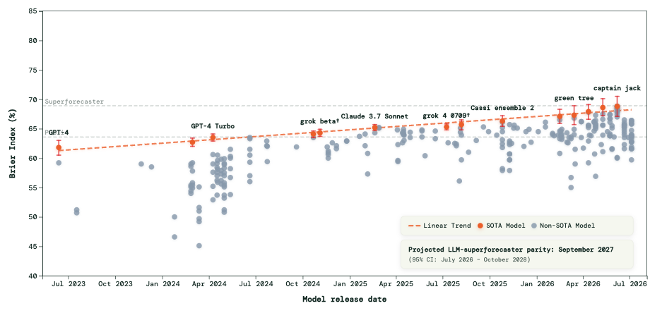

<!DOCTYPE html>
<html lang="en">
<head>

<meta charset="utf-8" />
<meta name="viewport" content="width=device-width, initial-scale=1" />
<title>AIRO (Automated AI Risk Outlook)</title>
<link rel="preconnect" href="https://fonts.googleapis.com" />
<link rel="preconnect" href="https://fonts.gstatic.com" crossorigin />
<link href="https://fonts.googleapis.com/css2?family=DM+Mono:wght@400;500&display=swap" rel="stylesheet" />
<link rel="preload" href="web/fonts/SeasonSans-Regular.woff2" as="font" type="font/woff2" crossorigin />
<style>
  /* FRI brand (2026-09-08; "FRI _ Brand Guidelines.pdf", Communications
     resources / Brand assets): Season Sans for text, DM Mono for the
     eyebrows, tags and figures, the stone ground, and the brand's green and
     orange as the two highlight colours. Season Sans is licensed, so it is
     self-hosted from web/fonts/; DM Mono is a Google font. The chart series
     tokens (--model, --super, --dash, --hybrid) and the ink scale are
     unchanged from the GitHub Light palette chosen 2026-09-02: the charts
     were explicitly out of scope for the rebrand. */
  @font-face { font-family: "Season Sans"; src: url("web/fonts/SeasonSans-Regular.woff2") format("woff2"); font-weight: 400; font-style: normal; font-display: swap; }
  @font-face { font-family: "Season Sans"; src: url("web/fonts/SeasonSans-Medium.woff2") format("woff2"); font-weight: 500; font-style: normal; font-display: swap; }
  @font-face { font-family: "Season Sans"; src: url("web/fonts/SeasonSans-SemiBold.woff2") format("woff2"); font-weight: 600 800; font-style: normal; font-display: swap; }
  :root {
    --bg: #f6f8f1;            /* FRI stone */
    --panel: #ffffff;
    --ink: #1f2328;
    --ink-soft: #57606a;
    --ink-faint: #6e7781;
    --line: #d0d7de;
    --line-soft: #eaeef2;
    --model: #bc4c00;
    --super: #0969da;
    /* Graph 3's third series: the models this dashboard actually runs. Green
       reads as "ours" against the 2024 crowd (warm) and the humans (cool). */
    --dash: #1a7f37;
    --hybrid: #8250df;
    /* The two brand highlights. --link is FRI's mid-dark green (#115633), the
       darkest green tint the guidelines offer, so 12-13px link text stays
       legible on stone; the warn-* band is the brand orange (#E96B26) with a
       tint of the light orange (#FFA575) as its ground. */
    --link: #115633;
    --accent-green: #115633;
    --accent-orange: #e96b26;
    --warn-bg: #fdeee2;
    --warn-ink: #c4561b;
    --warn-line: #e96b26;
    --shadow: 0 1px 2px rgba(16, 43, 35, 0.06), 0 6px 20px rgba(16, 43, 35, 0.05);
  }
  * { box-sizing: border-box; }
  html, body { margin: 0; }
  body {
    background: var(--bg);
    color: var(--ink);
    font-family: "Season Sans", system-ui, sans-serif;
    font-size: 15px;
    line-height: 1.5;
    -webkit-font-smoothing: antialiased;
  }
  #root { max-width: 1180px; margin: 0 auto; padding: 32px 28px 72px; }
  h1, h2, h3 { font-family: "Season Sans", system-ui, sans-serif; font-weight: 600; letter-spacing: -0.01em; margin: 0; }
  .mono { font-family: "DM Mono", ui-monospace, monospace; }
  button { font-family: inherit; }
  a { color: var(--link); }
  /* The FRI lockup, top left of the header (brand guidelines: dark green on stone; minimum 70px wide). */
  .brand-logo { display: block; width: 231px; max-width: 70vw; height: auto; color: #102b23; margin-bottom: 22px; }
  .linkbtn { background: none; border: none; color: var(--link); cursor: pointer; font-size: inherit; padding: 0; text-decoration: underline; text-underline-offset: 2px; }
  /* The Timeline panel's "show as table" view (19-live-timeline.jsx). */
  table.tv { border-collapse: collapse; width: 100%; font-size: 12.5px; }
  table.tv th, table.tv td { text-align: right; padding: 5px 8px; border-bottom: 1px solid var(--line-soft); white-space: nowrap; }
  table.tv th:first-child, table.tv td:first-child { text-align: left; }
  table.tv thead th { color: var(--ink-faint); font-weight: 600; font-size: 11px; text-transform: uppercase; letter-spacing: 0.05em; }
  /* The FAQ tab (79-faq.jsx): collapsed questions, each a row; figures
     inside an answer sit on a stone ground. Green on hover and orange on
     the open chevron are the brand's two highlight colors. */
  .faq { max-width: 860px; }
  .faq-item { border-top: 1px solid var(--line); }
  .faq-q { width: 100%; display: flex; justify-content: space-between; align-items: center; gap: 16px; text-align: left;
    background: none; border: none; cursor: pointer; padding: 15px 2px; font: inherit; font-size: 16px; font-weight: 600; color: var(--ink); line-height: 1.35; }
  .faq-q:hover { color: var(--accent-green); }
  .faq-chev { flex: none; width: 15px; height: 15px; color: var(--ink-faint); transition: transform 0.15s ease; }
  .faq-item.open > .faq-q .faq-chev { transform: rotate(180deg); color: var(--accent-orange); }
  .faq-a { padding: 0 2px 22px; font-size: 14.5px; line-height: 1.6; color: var(--ink-soft); }
  .faq-a p { margin: 0 0 12px; }
  .faq-a p:last-child { margin-bottom: 0; }
  .faq-fig { margin: 16px 0 18px; background: var(--bg); border: 1px solid var(--line); border-radius: 12px; padding: 20px; }
  .faq-img { margin: 16px 0 18px; }
  .faq-img img { display: block; width: 100%; height: auto; border-radius: 10px; border: 1px solid var(--line); background: white; }
  .faq-img figcaption { font-size: 12px; color: var(--ink-faint); margin-top: 6px; }
  /* A disclosure inside an answer (the full prompt), and the prompt text itself. */
  .faq-sub { margin: 14px 0 16px; border: 1px solid var(--line); border-radius: 10px; background: var(--bg); }
  .faq-sub-q { width: 100%; display: flex; justify-content: space-between; align-items: center; gap: 12px; text-align: left;
    background: none; border: none; cursor: pointer; padding: 10px 14px; font: inherit; font-size: 13.5px; font-weight: 600; color: var(--ink); }
  .faq-sub-q:hover { color: var(--accent-green); }
  .faq-sub-q .faq-chev { width: 13px; height: 13px; }
  .faq-sub.open .faq-chev { transform: rotate(180deg); color: var(--accent-orange); }
  .faq-sub-a { padding: 0 14px 14px; }
  .faq-pre { font-family: "DM Mono", ui-monospace, monospace; font-size: 11.5px; line-height: 1.55; white-space: pre-wrap; overflow-wrap: anywhere;
    background: var(--panel); border: 1px solid var(--line-soft); border-radius: 8px; padding: 12px 14px; margin: 6px 0 12px; max-height: 520px; overflow: auto; color: var(--ink); }
  .faq-pre:last-child { margin-bottom: 0; }
  /* Phones (2026-08-27). The page must never scroll sideways: rail grids
     collapse to one column under 760px (minmax(0,1fr) so a chart can never
     widen its column), the root padding tightens, and the details modal's
     two-column rows stack. Charts handle their own width — see
     web/shared/responsive.jsx. */
  @media (max-width: 640px) { #root { padding: 16px 12px 56px; } }
  .rail-grid { display: grid; grid-template-columns: 252px minmax(0, 1fr); gap: 24px; align-items: start; }
  @media (max-width: 760px) { .rail-grid { grid-template-columns: minmax(0, 1fr); gap: 14px; } }
  .modal-grid { display: grid; grid-template-columns: 180px 1fr; gap: 12px; }
  @media (max-width: 560px) { .modal-grid { grid-template-columns: 1fr; gap: 4px; } }
</style>
<link rel="stylesheet" href="https://unpkg.com/tippy.js@6.3.7/dist/tippy.css" />
<link rel="stylesheet" href="https://unpkg.com/tippy.js@6.3.7/themes/light-border.css" />
<!--GRAPH4_DATA-->
<script>window.__GRAPH4__ = {"preliminary": false, "world": "combined", "rho": 0.85, "bandLabel": "1\u20139%", "corpusLabel": "two-sim average (CivBench tail + Starsim pandemic)", "base": 0.0527, "domainMax": 0.9, "nModels": 16, "nQuestions": 20111, "models": [{"key": "openai/gpt-3.5-turbo-0125", "label": "GPT-3.5", "eci": 114, "color": "#a3a9b1", "n": 1247, "brier": 0.4791, "bss": -8.671, "meanPred": 0.5731, "meanObs": 0.0527, "sims": "civbench+starsim", "pts": [{"pred": 0.0304, "obs": 0.08077, "n": 105}, {"pred": 0.05717, "obs": 0.03073, "n": 105}, {"pred": 0.12476, "obs": 0.03057, "n": 102}, {"pred": 0.24155, "obs": 0.0508, "n": 110}, {"pred": 0.52568, "obs": 0.0408, "n": 104}, {"pred": 0.85876, "obs": 0.05081, "n": 131}, {"pred": 0.95, "obs": 0.04383, "n": 137}, {"pred": 0.96669, "obs": 0.0596, "n": 151}, {"pred": 0.9894, "obs": 0.09934, "n": 151}, {"pred": 0.99, "obs": 0.03974, "n": 151}], "architecture": "undisclosed", "excluded": false, "inPanel": false}, {"key": "deepinfra/meta-llama/Llama-3.3-70B-Instruct-Turbo", "label": "Llama-3.3-70B", "eci": 127, "color": "#a3a9b1", "n": 1487, "brier": 0.3153, "bss": -5.754, "meanPred": 0.5139, "meanObs": 0.0496, "sims": "civbench+starsim", "pts": [{"pred": 0.06336, "obs": 0.0, "n": 191}, {"pred": 0.23339, "obs": 0.04559, "n": 131}, {"pred": 0.31879, "obs": 0.00504, "n": 179}, {"pred": 0.39885, "obs": 0.06085, "n": 127}, {"pred": 0.48605, "obs": 0.06127, "n": 103}, {"pred": 0.56137, "obs": 0.05088, "n": 115}, {"pred": 0.62196, "obs": 0.03043, "n": 161}, {"pred": 0.71615, "obs": 0.07542, "n": 137}, {"pred": 0.81605, "obs": 0.05576, "n": 170}, {"pred": 0.9253, "obs": 0.111, "n": 173}], "architecture": "dense", "excluded": false, "inPanel": false}, {"key": "openai/gpt-4o", "label": "GPT-4o", "eci": 129, "color": "#a3a9b1", "n": 1243, "brier": 0.1928, "bss": -2.883, "meanPred": 0.3652, "meanObs": 0.0528, "sims": "civbench+starsim", "pts": [{"pred": 0.03272, "obs": 0.01014, "n": 142}, {"pred": 0.09082, "obs": 0.05093, "n": 119}, {"pred": 0.12502, "obs": 0.04394, "n": 140}, {"pred": 0.19593, "obs": 0.0, "n": 120}, {"pred": 0.28824, "obs": 0.03378, "n": 118}, {"pred": 0.37034, "obs": 0.01683, "n": 126}, {"pred": 0.49205, "obs": 0.05061, "n": 104}, {"pred": 0.55384, "obs": 0.06104, "n": 124}, {"pred": 0.67992, "obs": 0.08021, "n": 123}, {"pred": 0.82632, "obs": 0.18208, "n": 127}], "architecture": "undisclosed", "excluded": false, "inPanel": false}, {"key": "deepinfra/deepseek-ai/DeepSeek-V3", "label": "DeepSeek-V3", "eci": 133, "color": "#a3a9b1", "n": 1489, "brier": 0.4744, "bss": -9.168, "meanPred": 0.625, "meanObs": 0.0496, "sims": "civbench+starsim", "pts": [{"pred": 0.07614, "obs": 0.03047, "n": 165}, {"pred": 0.19614, "obs": 0.03033, "n": 137}, {"pred": 0.32301, "obs": 0.02045, "n": 110}, {"pred": 0.47191, "obs": 0.04066, "n": 106}, {"pred": 0.59728, "obs": 0.07134, "n": 122}, {"pred": 0.78724, "obs": 0.04079, "n": 126}, {"pred": 0.88113, "obs": 0.04075, "n": 151}, {"pred": 0.94799, "obs": 0.056, "n": 175}, {"pred": 0.9817, "obs": 0.08, "n": 200}, {"pred": 0.99321, "obs": 0.0854, "n": 197}], "architecture": "moe", "excluded": true, "inPanel": false}, {"key": "openai/gpt-4.1-2025-04-14", "label": "GPT-4.1", "eci": 137, "color": "#a3a9b1", "n": 1249, "brier": 0.2495, "bss": -4.042, "meanPred": 0.3663, "meanObs": 0.0527, "sims": "civbench+starsim", "pts": [{"pred": 0.00879, "obs": 0.04056, "n": 112}, {"pred": 0.01222, "obs": 0.0, "n": 144}, {"pred": 0.04632, "obs": 0.01017, "n": 124}, {"pred": 0.09274, "obs": 0.03062, "n": 123}, {"pred": 0.16471, "obs": 0.06751, "n": 127}, {"pred": 0.32235, "obs": 0.06768, "n": 119}, {"pred": 0.52647, "obs": 0.08779, "n": 113}, {"pred": 0.68636, "obs": 0.05024, "n": 116}, {"pred": 0.83934, "obs": 0.03656, "n": 125}, {"pred": 0.9683, "obs": 0.13615, "n": 146}], "architecture": "undisclosed", "excluded": false, "inPanel": false}, {"key": "anthropic/claude-haiku-4-5-20251001", "label": "Haiku 4.5", "eci": 143, "color": "#a3a9b1", "n": 1491, "brier": 0.1734, "bss": -2.719, "meanPred": 0.3118, "meanObs": 0.0496, "sims": "civbench+starsim", "pts": [{"pred": 0.01494, "obs": 0.00997, "n": 186}, {"pred": 0.04582, "obs": 0.03558, "n": 148}, {"pred": 0.08296, "obs": 0.01018, "n": 170}, {"pred": 0.13468, "obs": 0.04062, "n": 153}, {"pred": 0.19183, "obs": 0.04044, "n": 157}, {"pred": 0.26124, "obs": 0.04536, "n": 171}, {"pred": 0.36121, "obs": 0.05526, "n": 151}, {"pred": 0.50127, "obs": 0.0752, "n": 133}, {"pred": 0.68097, "obs": 0.0661, "n": 117}, {"pred": 0.84579, "obs": 0.11722, "n": 105}], "architecture": "undisclosed", "excluded": false, "inPanel": false}, {"key": "anthropic/claude-sonnet-4-5-20250929", "label": "Sonnet 4.5", "eci": 147, "color": "#a3a9b1", "n": 1491, "brier": 0.1101, "bss": -1.361, "meanPred": 0.2294, "meanObs": 0.0496, "sims": "civbench+starsim", "pts": [{"pred": 0.00477, "obs": 0.01015, "n": 181}, {"pred": 0.02178, "obs": 0.0, "n": 169}, {"pred": 0.06003, "obs": 0.05612, "n": 135}, {"pred": 0.11386, "obs": 0.06089, "n": 141}, {"pred": 0.15949, "obs": 0.01493, "n": 173}, {"pred": 0.23208, "obs": 0.07601, "n": 135}, {"pred": 0.27981, "obs": 0.06547, "n": 163}, {"pred": 0.35061, "obs": 0.06557, "n": 145}, {"pred": 0.43693, "obs": 0.08124, "n": 133}, {"pred": 0.63645, "obs": 0.06593, "n": 116}], "architecture": "undisclosed", "excluded": false, "inPanel": false}, {"key": "openai/gpt-5-2025-08-07", "label": "GPT-5", "eci": 150, "color": "#a3a9b1", "n": 491, "brier": 0.1392, "bss": -1.369, "meanPred": 0.2642, "meanObs": 0.0631, "sims": "civbench", "pts": [{"pred": 0.0308, "obs": 0.08, "n": 50}, {"pred": 0.0698, "obs": 0.06122, "n": 49}, {"pred": 0.1149, "obs": 0.04082, "n": 49}, {"pred": 0.16429, "obs": 0.10204, "n": 49}, {"pred": 0.20551, "obs": 0.08163, "n": 49}, {"pred": 0.23959, "obs": 0.06122, "n": 49}, {"pred": 0.29673, "obs": 0.06122, "n": 49}, {"pred": 0.37245, "obs": 0.06122, "n": 49}, {"pred": 0.49347, "obs": 0.04082, "n": 49}, {"pred": 0.65959, "obs": 0.04082, "n": 49}], "architecture": "undisclosed", "excluded": false, "inPanel": false}, {"key": "xai/grok-4.20", "label": "Grok 4.20", "eci": 154, "color": "#a3a9b1", "n": 1491, "brier": 0.0963, "bss": -1.065, "meanPred": 0.2169, "meanObs": 0.0496, "sims": "civbench+starsim", "pts": [{"pred": 0.01462, "obs": 0.0, "n": 199}, {"pred": 0.03144, "obs": 0.0, "n": 187}, {"pred": 0.04992, "obs": 0.02021, "n": 159}, {"pred": 0.07666, "obs": 0.0356, "n": 151}, {"pred": 0.13129, "obs": 0.00504, "n": 157}, {"pred": 0.19958, "obs": 0.07098, "n": 120}, {"pred": 0.2613, "obs": 0.04031, "n": 139}, {"pred": 0.35222, "obs": 0.13592, "n": 129}, {"pred": 0.447, "obs": 0.06576, "n": 133}, {"pred": 0.60845, "obs": 0.12214, "n": 117}], "architecture": "undisclosed", "excluded": false, "inPanel": false}, {"key": "gemini/gemini-3.1-pro-preview", "label": "Gemini 3.1 Pro", "eci": 155, "color": "#a3a9b1", "n": 1486, "brier": 0.0734, "bss": -0.596, "meanPred": 0.1529, "meanObs": 0.0489, "sims": "civbench+starsim", "pts": [{"pred": 0.00093, "obs": 0.0, "n": 200}, {"pred": 0.00832, "obs": 0.01024, "n": 185}, {"pred": 0.02596, "obs": 0.03078, "n": 172}, {"pred": 0.05, "obs": 0.03104, "n": 110}, {"pred": 0.08951, "obs": 0.06165, "n": 122}, {"pred": 0.1147, "obs": 0.06676, "n": 110}, {"pred": 0.16403, "obs": 0.0557, "n": 135}, {"pred": 0.23153, "obs": 0.04628, "n": 136}, {"pred": 0.33734, "obs": 0.06077, "n": 156}, {"pred": 0.50937, "obs": 0.12583, "n": 160}], "architecture": "undisclosed", "excluded": false, "inPanel": false}, {"key": "anthropic/claude-opus-4-6", "label": "Opus 4.6", "eci": 156, "color": "#a3a9b1", "n": 1491, "brier": 0.0877, "bss": -0.881, "meanPred": 0.2152, "meanObs": 0.0496, "sims": "civbench+starsim", "pts": [{"pred": 0.01666, "obs": 0.01013, "n": 170}, {"pred": 0.04075, "obs": 0.01016, "n": 132}, {"pred": 0.07626, "obs": 0.05094, "n": 146}, {"pred": 0.13004, "obs": 0.05118, "n": 143}, {"pred": 0.18526, "obs": 0.03051, "n": 164}, {"pred": 0.24624, "obs": 0.01523, "n": 133}, {"pred": 0.29366, "obs": 0.06074, "n": 128}, {"pred": 0.33099, "obs": 0.1115, "n": 145}, {"pred": 0.37023, "obs": 0.07508, "n": 164}, {"pred": 0.46346, "obs": 0.08052, "n": 166}], "architecture": "undisclosed", "excluded": false, "inPanel": false}, {"key": "anthropic/claude-opus-4-8", "label": "Opus 4.8", "eci": 158, "color": "#a3a9b1", "n": 491, "brier": 0.1419, "bss": -1.414, "meanPred": 0.2724, "meanObs": 0.0631, "sims": "civbench", "pts": [{"pred": 0.0251, "obs": 0.1, "n": 50}, {"pred": 0.03939, "obs": 0.04082, "n": 49}, {"pred": 0.05143, "obs": 0.02041, "n": 49}, {"pred": 0.09551, "obs": 0.08163, "n": 49}, {"pred": 0.23408, "obs": 0.04082, "n": 49}, {"pred": 0.34633, "obs": 0.06122, "n": 49}, {"pred": 0.39857, "obs": 0.06122, "n": 49}, {"pred": 0.44449, "obs": 0.06122, "n": 49}, {"pred": 0.49449, "obs": 0.10204, "n": 49}, {"pred": 0.6, "obs": 0.06122, "n": 49}], "architecture": "undisclosed", "excluded": false, "inPanel": false}, {"key": "openai/gpt-5.5", "label": "GPT-5.5", "eci": 159, "color": "#a3a9b1", "n": 1491, "brier": 0.0812, "bss": -0.742, "meanPred": 0.1814, "meanObs": 0.0496, "sims": "civbench+starsim", "pts": [{"pred": 0.00044, "obs": 0.0, "n": 200}, {"pred": 0.0035, "obs": 0.0, "n": 200}, {"pred": 0.02081, "obs": 0.0, "n": 176}, {"pred": 0.05781, "obs": 0.03553, "n": 141}, {"pred": 0.10757, "obs": 0.0, "n": 141}, {"pred": 0.1803, "obs": 0.05587, "n": 129}, {"pred": 0.23777, "obs": 0.10159, "n": 122}, {"pred": 0.30014, "obs": 0.14567, "n": 135}, {"pred": 0.37422, "obs": 0.05578, "n": 127}, {"pred": 0.53371, "obs": 0.10101, "n": 120}], "architecture": "undisclosed", "excluded": false, "inPanel": false}, {"key": "anthropic/claude-fable-5", "label": "Fable 5", "eci": 161, "color": "#a3a9b1", "n": 491, "brier": 0.1069, "bss": -0.819, "meanPred": 0.2147, "meanObs": 0.0631, "sims": "civbench", "pts": [{"pred": 0.019, "obs": 0.06, "n": 50}, {"pred": 0.02653, "obs": 0.06122, "n": 49}, {"pred": 0.0351, "obs": 0.04082, "n": 49}, {"pred": 0.10122, "obs": 0.06122, "n": 49}, {"pred": 0.19122, "obs": 0.06122, "n": 49}, {"pred": 0.25878, "obs": 0.06122, "n": 49}, {"pred": 0.3, "obs": 0.14286, "n": 49}, {"pred": 0.3398, "obs": 0.06122, "n": 49}, {"pred": 0.38898, "obs": 0.04082, "n": 49}, {"pred": 0.49041, "obs": 0.04082, "n": 49}], "architecture": "undisclosed", "excluded": false, "inPanel": false}, {"key": "openai/gpt-5.6-sol", "label": "GPT-5.6 Sol", "eci": 162, "color": "#a3a9b1", "n": 1491, "brier": 0.0949, "bss": -1.035, "meanPred": 0.1771, "meanObs": 0.0496, "sims": "civbench+starsim", "pts": [{"pred": 0.0, "obs": 0.0, "n": 200}, {"pred": 4e-05, "obs": 0.0, "n": 200}, {"pred": 0.00127, "obs": 0.0, "n": 200}, {"pred": 0.02355, "obs": 0.05542, "n": 169}, {"pred": 0.07034, "obs": 0.09161, "n": 124}, {"pred": 0.12409, "obs": 0.05569, "n": 129}, {"pred": 0.19416, "obs": 0.05533, "n": 122}, {"pred": 0.28683, "obs": 0.06535, "n": 127}, {"pred": 0.43205, "obs": 0.06567, "n": 112}, {"pred": 0.64192, "obs": 0.10688, "n": 108}], "architecture": "undisclosed", "excluded": false, "inPanel": false}, {"key": "anthropic/claude-opus-5", "label": "Opus 5", "eci": 163, "color": "#7a4fa3", "n": 1491, "brier": 0.0777, "bss": -0.667, "meanPred": 0.166, "meanObs": 0.0496, "sims": "civbench+starsim", "pts": [{"pred": 0.00882, "obs": 0.0, "n": 194}, {"pred": 0.01839, "obs": 0.0508, "n": 131}, {"pred": 0.02049, "obs": 0.01011, "n": 163}, {"pred": 0.03231, "obs": 0.01024, "n": 148}, {"pred": 0.05474, "obs": 0.01015, "n": 181}, {"pred": 0.11532, "obs": 0.03054, "n": 174}, {"pred": 0.22186, "obs": 0.09094, "n": 145}, {"pred": 0.30493, "obs": 0.12146, "n": 123}, {"pred": 0.38526, "obs": 0.09585, "n": 119}, {"pred": 0.49943, "obs": 0.07573, "n": 113}], "architecture": "undisclosed", "excluded": false, "inPanel": true}], "scatter": [{"eci": 114, "bss": -8.671, "label": "GPT-3.5", "color": "#a3a9b1", "meanPred": 0.5731, "meanObs": 0.0527, "bssCiv": -2.203, "bssStar": -18.099, "architecture": "undisclosed", "excluded": false, "inPanel": false}, {"eci": 127, "bss": -5.754, "label": "Llama-3.3-70B", "color": "#a3a9b1", "meanPred": 0.5139, "meanObs": 0.0496, "bssCiv": -4.183, "bssStar": -8.421, "architecture": "dense", "excluded": false, "inPanel": false}, {"eci": 129, "bss": -2.883, "label": "GPT-4o", "color": "#a3a9b1", "meanPred": 0.3652, "meanObs": 0.0528, "bssCiv": -2.773, "bssStar": -3.043, "architecture": "undisclosed", "excluded": false, "inPanel": false}, {"eci": 133, "bss": -9.168, "label": "DeepSeek-V3", "color": "#a3a9b1", "meanPred": 0.625, "meanObs": 0.0496, "bssCiv": -4.578, "bssStar": -16.977, "architecture": "moe", "excluded": true, "inPanel": false}, {"eci": 137, "bss": -4.042, "label": "GPT-4.1", "color": "#a3a9b1", "meanPred": 0.3663, "meanObs": 0.0527, "bssCiv": -2.947, "bssStar": -5.644, "architecture": "undisclosed", "excluded": false, "inPanel": false}, {"eci": 143, "bss": -2.719, "label": "Haiku 4.5", "color": "#a3a9b1", "meanPred": 0.3118, "meanObs": 0.0496, "bssCiv": -3.56, "bssStar": -1.285, "architecture": "undisclosed", "excluded": false, "inPanel": false}, {"eci": 147, "bss": -1.361, "label": "Sonnet 4.5", "color": "#a3a9b1", "meanPred": 0.2294, "meanObs": 0.0496, "bssCiv": -1.583, "bssStar": -0.981, "architecture": "undisclosed", "excluded": false, "inPanel": false}, {"eci": 150, "bss": -1.369, "label": "GPT-5", "color": "#a3a9b1", "meanPred": 0.2642, "meanObs": 0.0631, "bssCiv": -1.369, "bssStar": null, "architecture": "undisclosed", "excluded": false, "inPanel": false}, {"eci": 154, "bss": -1.065, "label": "Grok 4.20", "color": "#a3a9b1", "meanPred": 0.2169, "meanObs": 0.0496, "bssCiv": -1.393, "bssStar": -0.506, "architecture": "undisclosed", "excluded": false, "inPanel": false}, {"eci": 155, "bss": -0.596, "label": "Gemini 3.1 Pro", "color": "#a3a9b1", "meanPred": 0.1529, "meanObs": 0.0489, "bssCiv": -0.563, "bssStar": -0.65, "architecture": "undisclosed", "excluded": false, "inPanel": false}, {"eci": 156, "bss": -0.881, "label": "Opus 4.6", "color": "#a3a9b1", "meanPred": 0.2152, "meanObs": 0.0496, "bssCiv": -0.708, "bssStar": -1.176, "architecture": "undisclosed", "excluded": false, "inPanel": false}, {"eci": 158, "bss": -1.414, "label": "Opus 4.8", "color": "#a3a9b1", "meanPred": 0.2724, "meanObs": 0.0631, "bssCiv": -1.414, "bssStar": null, "architecture": "undisclosed", "excluded": false, "inPanel": false}, {"eci": 159, "bss": -0.742, "label": "GPT-5.5", "color": "#a3a9b1", "meanPred": 0.1814, "meanObs": 0.0496, "bssCiv": -1.036, "bssStar": -0.242, "architecture": "undisclosed", "excluded": false, "inPanel": false}, {"eci": 161, "bss": -0.819, "label": "Fable 5", "color": "#a3a9b1", "meanPred": 0.2147, "meanObs": 0.0631, "bssCiv": -0.819, "bssStar": null, "architecture": "undisclosed", "excluded": false, "inPanel": false}, {"eci": 162, "bss": -1.035, "label": "GPT-5.6 Sol", "color": "#a3a9b1", "meanPred": 0.1771, "meanObs": 0.0496, "bssCiv": -1.613, "bssStar": -0.048, "architecture": "undisclosed", "excluded": false, "inPanel": false}, {"eci": 163, "bss": -0.667, "label": "Opus 5", "color": "#7a4fa3", "meanPred": 0.166, "meanObs": 0.0496, "bssCiv": -1.042, "bssStar": -0.027, "architecture": "undisclosed", "excluded": false, "inPanel": true}], "ensemble": null, "rhoClean": 0.84, "nModelsClean": 15, "excludedArchitectures": ["distilled", "moe"]};</script>
<!--/GRAPH4_DATA-->
<!--TIMELINE_DATA-->
<script>window.__TIMELINE__ = {"snapshots": [{"date": "2026-09-02", "instrumentVersion": "legacy", "instrumentInfo": {"version": "airo-incidents-prospective-v1", "available": false, "runDate": null, "countingWindows": {}, "change": "Incident counting rules changed: only incidents beginning on or after the elicitation date qualify. The entire joint forecast series starts anew because the questions are elicited together. Earlier forecasts remain in the download under their original recorded version or as unversioned legacy rows. Current charts require all four panel models on the same elicitation date.", "windowChange": "Incident onset starts advance with each elicitation date, including for fixed-year deadlines. Changes across runs therefore reflect changing intervals as well as revised beliefs.", "archiveUrl": "redlines-data.zip"}, "label": "Sep 2", "runs": ["2026-09-02T2022Z"], "n": 12, "calls": 4, "draws": 1, "protocols": ["unified-joint-combined-v2"], "panel": ["eci_topk"]}, {"date": "2026-09-04", "instrumentVersion": "legacy", "instrumentInfo": {"version": "airo-incidents-prospective-v1", "available": false, "runDate": null, "countingWindows": {}, "change": "Incident counting rules changed: only incidents beginning on or after the elicitation date qualify. The entire joint forecast series starts anew because the questions are elicited together. Earlier forecasts remain in the download under their original recorded version or as unversioned legacy rows. Current charts require all four panel models on the same elicitation date.", "windowChange": "Incident onset starts advance with each elicitation date, including for fixed-year deadlines. Changes across runs therefore reflect changing intervals as well as revised beliefs.", "archiveUrl": "redlines-data.zip"}, "label": "Sep 4", "runs": ["2026-09-04T1200Z"], "n": 12, "calls": 4, "draws": 1, "protocols": ["unified-joint-combined-v4"], "panel": ["eci_topk"]}, {"date": "2026-09-08", "instrumentVersion": "legacy", "instrumentInfo": {"version": "airo-incidents-prospective-v1", "available": false, "runDate": null, "countingWindows": {}, "change": "Incident counting rules changed: only incidents beginning on or after the elicitation date qualify. The entire joint forecast series starts anew because the questions are elicited together. Earlier forecasts remain in the download under their original recorded version or as unversioned legacy rows. Current charts require all four panel models on the same elicitation date.", "windowChange": "Incident onset starts advance with each elicitation date, including for fixed-year deadlines. Changes across runs therefore reflect changing intervals as well as revised beliefs.", "archiveUrl": "redlines-data.zip"}, "label": "Sep 8", "runs": ["2026-09-08T1717Z"], "n": 12, "calls": 4, "draws": 1, "protocols": ["unified-joint-combined-v4"], "panel": ["eci_topk"]}, {"date": "2026-09-10", "instrumentVersion": "airo-incidents-prospective-v1", "instrumentInfo": {"version": "airo-incidents-prospective-v1", "available": true, "runDate": "2026-09-10", "countingWindows": {"6mo": [{"start": "2026-09-10", "end": "2027-03-10", "timezone": "UTC", "harm_years": 3}], "12mo": [{"start": "2026-09-10", "end": "2027-09-10", "timezone": "UTC", "harm_years": 3}], "2028": [{"start": "2026-09-10", "end": "2028-12-31", "timezone": "UTC", "harm_years": 3}], "2030": [{"start": "2026-09-10", "end": "2030-12-31", "timezone": "UTC", "harm_years": 3}], "2050": [{"start": "2026-09-10", "end": "2050-12-31", "timezone": "UTC", "harm_years": 3}], "2100": [{"start": "2026-09-10", "end": "2100-12-31", "timezone": "UTC", "harm_years": 3}]}, "change": "Incident counting rules changed: only incidents beginning on or after the elicitation date qualify. The entire joint forecast series starts anew because the questions are elicited together. Earlier forecasts remain in the download under their original recorded version or as unversioned legacy rows. Current charts require all four panel models on the same elicitation date.", "windowChange": "Incident onset starts advance with each elicitation date, including for fixed-year deadlines. Changes across runs therefore reflect changing intervals as well as revised beliefs.", "archiveUrl": "redlines-data.zip"}, "label": "Sep 10", "runs": ["2026-09-10T2141Z"], "n": 140, "calls": 4, "draws": 1, "protocols": ["unified-joint-combined-v5"], "panel": ["eci_topk"]}], "instrumentInfo": {"version": "airo-incidents-prospective-v1", "available": true, "runDate": "2026-09-10", "countingWindows": {"6mo": [{"start": "2026-09-10", "end": "2027-03-10", "timezone": "UTC", "harm_years": 3}], "12mo": [{"start": "2026-09-10", "end": "2027-09-10", "timezone": "UTC", "harm_years": 3}], "2028": [{"start": "2026-09-10", "end": "2028-12-31", "timezone": "UTC", "harm_years": 3}], "2030": [{"start": "2026-09-10", "end": "2030-12-31", "timezone": "UTC", "harm_years": 3}], "2050": [{"start": "2026-09-10", "end": "2050-12-31", "timezone": "UTC", "harm_years": 3}], "2100": [{"start": "2026-09-10", "end": "2100-12-31", "timezone": "UTC", "harm_years": 3}]}, "change": "Incident counting rules changed: only incidents beginning on or after the elicitation date qualify. The entire joint forecast series starts anew because the questions are elicited together. Earlier forecasts remain in the download under their original recorded version or as unversioned legacy rows. Current charts require all four panel models on the same elicitation date.", "windowChange": "Incident onset starts advance with each elicitation date, including for fixed-year deadlines. Changes across runs therefore reflect changing intervals as well as revised beliefs.", "archiveUrl": "redlines-data.zip"}, "latest": "2026-09-10T23:02:06+00:00", "grounding": "agentic web search (Tavily): iterative search + page reads", "models": [{"label": "GPT-6 Astra", "color": "#0e7c7b", "legacy": false}, {"label": "Fable 5.1", "color": "#8e2a63", "legacy": false}, {"label": "Opus 5", "color": "#7a4fa3", "legacy": false}, {"label": "GPT-5.5 Pro", "color": "#c25a2e", "legacy": false}, {"label": "Fable 5", "color": "#a3a9b1", "legacy": true}, {"label": "GPT-5.6 Sol", "color": "#a3a9b1", "legacy": true}], "categories": [{"key": "cross:catastrophe:general", "label": "General catastrophe", "color": "#3a4150", "group": "Cross-cutting"}, {"key": "cross:catastrophe:ai", "label": "AI catastrophe", "color": "#3a4150", "group": "Cross-cutting"}, {"key": "cross:disempowerment", "label": "Human disempowerment", "color": "#3a4150", "group": "Cross-cutting"}, {"key": "inc:ai", "label": "Any AI-related incident", "color": "#3a4150", "group": "Domain-specific"}, {"key": "inc:bio", "label": "Biorisk", "color": "#a63d76", "group": "Domain-specific"}, {"key": "inc:cyber", "label": "Cyber", "color": "#a1801a", "group": "Domain-specific"}, {"key": "inc:misalign", "label": "Misalignment", "color": "#33a8bd", "group": "Domain-specific"}], "replicates": 1, "noise": null, "provenance": {"author": "Bridget Williams, FRI", "received": "2026-08-18; revised 2026-08-31 (tracked changes in the shared doc, applied 2026-09-02 -- see the note atop the definitions file)", "source_workbook": "data/auto-arc/questions-2026-08-31.xlsx", "source_definitions": "data/auto-arc/definitions-2026-09-10.md", "sheet": "Auto-ARC questions - long", "generated_by": "code/make_autoarc_questions.py", "status": "September 10 counting clarification accepted by Nick Merrill: all incident windows start at elicitation; cyber campaign onset is the first malicious action against a target. Older forecasts answer an earlier instrument. August 31 thresholds, attribution and accounting remain unchanged."}, "questions": [{"id": "catastrophe:general", "short": "General catastrophe", "category": "cross:catastrophe:general", "railLabel": "General catastrophe", "text": "What is the probability that any global catastrophe (deaths reaching at least 10% of the population alive at the start of the measurement window) will occur within 6 months / within 12 months / by the end of 2028 / by the end of 2030 / by the end of 2050 / by the end of 2100?", "severity": "deaths reaching 10% of the population", "criteria": "* Catastrophe threshold and the measurement window: A catastrophe at the 10% level means that deaths attributable to the catastrophe (excess mortality, i.e., deaths beyond the baseline that would have occurred anyway) reach at least 10% of the population alive at the start of the measurement window.  \n* The measurement window is any contiguous period of at most five years during which the attributable deaths accumulate to the threshold. The window must begin on or after December 31, 2025 and end on or before December 31 of the resolution year (2030, 2050, or 2100). A faster event; the five years is a ceiling on the span over which deaths are counted, not a required duration.  \n* For a threshold to resolve positively, the deaths must arise from a single catastrophe or a single causally-linked chain of events, not from summing unrelated causes.  \n* Data and disagreement: For fatality and population data, we will rely on broadly recognized sources (e.g., Our World in Data, the Economist, the United Nations). Where these disagree in ways that would change resolution, we will resolve by the majority opinion of a panel of experts in demographics and fields relevant to the specific catastrophe (e.g., epidemiology for a pandemic). If reasonable people disagree about whether the event occurred, the question resolves via the same expert panel.\n* [Scope of \"the resolution year\", added 2026-08-28 when these questions moved onto the incident ladder's horizon grid: read it as the resolution date of whichever horizon you are answering, which for a rolling horizon is that many months after today's date. The rule is otherwise unchanged -- the measurement window still begins on or after December 31, 2025, must end on or before that resolution date, and still spans at most five years.]", "details": null, "value_kind": "probability", "horizons": ["6mo", "12mo", "2028", "2030", "2050", "2100"], "series": [{"label": "GPT-6 Astra", "color": "#0e7c7b", "ps": {"6mo": [null, null, 0.05, 0.015], "12mo": [null, null, 0.15, 0.05], "2028": [null, null, 0.9, 0.25], "2030": [null, null, 2.7, 0.9], "2050": [null, null, 11.0, 11.0], "2100": [null, null, 18.0, 21.5]}, "lo": {"6mo": [null, null, 0.05, 0.015], "12mo": [null, null, 0.15, 0.05], "2028": [null, null, 0.9, 0.25], "2030": [null, null, 2.7, 0.9], "2050": [null, null, 11.0, 11.0], "2100": [null, null, 18.0, 21.5]}, "hi": {"6mo": [null, null, 0.05, 0.015], "12mo": [null, null, 0.15, 0.05], "2028": [null, null, 0.9, 0.25], "2030": [null, null, 2.7, 0.9], "2050": [null, null, 11.0, 11.0], "2100": [null, null, 18.0, 21.5]}, "draws": {"6mo": [null, null, [0.05], [0.015]], "12mo": [null, null, [0.15], [0.05]], "2028": [null, null, [0.9], [0.25]], "2030": [null, null, [2.7], [0.9]], "2050": [null, null, [11.0], [11.0]], "2100": [null, null, [18.0], [21.5]]}, "ci": {"6mo": [null, null, null, null], "12mo": [null, null, null, null], "2028": [null, null, null, null], "2030": [null, null, null, null], "2050": [null, null, null, null], "2100": [null, null, null, null]}, "ciOr": {"6mo": [null, null, null, null], "12mo": [null, null, null, null], "2028": [null, null, null, null], "2030": [null, null, null, null], "2050": [null, null, null, null], "2100": [null, null, null, null]}, "legacy": false}, {"label": "Fable 5.1", "color": "#8e2a63", "ps": {"6mo": [null, null, 0.06, 0.013], "12mo": [null, null, 0.12, 0.04], "2028": [null, null, 0.4, 0.33], "2030": [null, null, 1.0, 1.6], "2050": [null, null, 6.0, 8.0], "2100": [null, null, 12.0, 15.5]}, "lo": {"6mo": [null, null, 0.06, 0.013], "12mo": [null, null, 0.12, 0.04], "2028": [null, null, 0.4, 0.33], "2030": [null, null, 1.0, 1.6], "2050": [null, null, 6.0, 8.0], "2100": [null, null, 12.0, 15.5]}, "hi": {"6mo": [null, null, 0.06, 0.013], "12mo": [null, null, 0.12, 0.04], "2028": [null, null, 0.4, 0.33], "2030": [null, null, 1.0, 1.6], "2050": [null, null, 6.0, 8.0], "2100": [null, null, 12.0, 15.5]}, "draws": {"6mo": [null, null, [0.06], [0.013]], "12mo": [null, null, [0.12], [0.04]], "2028": [null, null, [0.4], [0.33]], "2030": [null, null, [1.0], [1.6]], "2050": [null, null, [6.0], [8.0]], "2100": [null, null, [12.0], [15.5]]}, "ci": {"6mo": [null, null, null, null], "12mo": [null, null, null, null], "2028": [null, null, null, null], "2030": [null, null, null, null], "2050": [null, null, null, null], "2100": [null, null, null, null]}, "ciOr": {"6mo": [null, null, null, null], "12mo": [null, null, null, null], "2028": [null, null, null, null], "2030": [null, null, null, null], "2050": [null, null, null, null], "2100": [null, null, null, null]}, "legacy": false}, {"label": "Opus 5", "color": "#7a4fa3", "ps": {"6mo": [0.02, 0.025, 0.06, 0.001], "12mo": [0.06, 0.07, 0.15, 0.004], "2028": [0.3, 0.45, 0.5, 0.3], "2030": [0.65, 1.1, 1.0, 0.65], "2050": [3.5, 5.2, 5.5, 3.2], "2100": [8.5, 12.5, 11.0, 7.8]}, "lo": {"6mo": [0.02, 0.025, 0.06, 0.001], "12mo": [0.06, 0.07, 0.15, 0.004], "2028": [0.3, 0.45, 0.5, 0.3], "2030": [0.65, 1.1, 1.0, 0.65], "2050": [3.5, 5.2, 5.5, 3.2], "2100": [8.5, 12.5, 11.0, 7.8]}, "hi": {"6mo": [0.02, 0.025, 0.06, 0.001], "12mo": [0.06, 0.07, 0.15, 0.004], "2028": [0.3, 0.45, 0.5, 0.3], "2030": [0.65, 1.1, 1.0, 0.65], "2050": [3.5, 5.2, 5.5, 3.2], "2100": [8.5, 12.5, 11.0, 7.8]}, "draws": {"6mo": [[0.02], [0.025], [0.06], [0.001]], "12mo": [[0.06], [0.07], [0.15], [0.004]], "2028": [[0.3], [0.45], [0.5], [0.3]], "2030": [[0.65], [1.1], [1.0], [0.65]], "2050": [[3.5], [5.2], [5.5], [3.2]], "2100": [[8.5], [12.5], [11.0], [7.8]]}, "ci": {"6mo": [null, null, null, null], "12mo": [null, null, null, null], "2028": [null, null, null, null], "2030": [null, null, null, null], "2050": [null, null, null, null], "2100": [null, null, null, null]}, "ciOr": {"6mo": [null, null, null, null], "12mo": [null, null, null, null], "2028": [null, null, null, null], "2030": [null, null, null, null], "2050": [null, null, null, null], "2100": [null, null, null, null]}, "legacy": false}, {"label": "GPT-5.5 Pro", "color": "#c25a2e", "ps": {"6mo": [0.12, 0.07, 0.04, 0.08], "12mo": [0.23, 0.15, 0.1, 0.16], "2028": [0.6, 0.45, 0.4, 0.5], "2030": [1.1, 1.2, 1.2, 1.2], "2050": [4.5, 5.5, 6.5, 9.0], "2100": [10.5, 15.0, 16.0, 28.0]}, "lo": {"6mo": [0.12, 0.07, 0.04, 0.08], "12mo": [0.23, 0.15, 0.1, 0.16], "2028": [0.6, 0.45, 0.4, 0.5], "2030": [1.1, 1.2, 1.2, 1.2], "2050": [4.5, 5.5, 6.5, 9.0], "2100": [10.5, 15.0, 16.0, 28.0]}, "hi": {"6mo": [0.12, 0.07, 0.04, 0.08], "12mo": [0.23, 0.15, 0.1, 0.16], "2028": [0.6, 0.45, 0.4, 0.5], "2030": [1.1, 1.2, 1.2, 1.2], "2050": [4.5, 5.5, 6.5, 9.0], "2100": [10.5, 15.0, 16.0, 28.0]}, "draws": {"6mo": [[0.12], [0.07], [0.04], [0.08]], "12mo": [[0.23], [0.15], [0.1], [0.16]], "2028": [[0.6], [0.45], [0.4], [0.5]], "2030": [[1.1], [1.2], [1.2], [1.2]], "2050": [[4.5], [5.5], [6.5], [9.0]], "2100": [[10.5], [15.0], [16.0], [28.0]]}, "ci": {"6mo": [null, null, null, null], "12mo": [null, null, null, null], "2028": [null, null, null, null], "2030": [null, null, null, null], "2050": [null, null, null, null], "2100": [null, null, null, null]}, "ciOr": {"6mo": [null, null, null, null], "12mo": [null, null, null, null], "2028": [null, null, null, null], "2030": [null, null, null, null], "2050": [null, null, null, null], "2100": [null, null, null, null]}, "legacy": false}, {"label": "Fable 5", "color": "#a3a9b1", "ps": {"6mo": [0.03, 0.03, null, null], "12mo": [0.1, 0.07, null, null], "2028": [0.45, 0.35, null, null], "2030": [0.9, 0.9, null, null], "2050": [5.0, 5.2, null, null], "2100": [11.5, 9.8, null, null]}, "lo": {"6mo": [0.03, 0.03, null, null], "12mo": [0.1, 0.07, null, null], "2028": [0.45, 0.35, null, null], "2030": [0.9, 0.9, null, null], "2050": [5.0, 5.2, null, null], "2100": [11.5, 9.8, null, null]}, "hi": {"6mo": [0.03, 0.03, null, null], "12mo": [0.1, 0.07, null, null], "2028": [0.45, 0.35, null, null], "2030": [0.9, 0.9, null, null], "2050": [5.0, 5.2, null, null], "2100": [11.5, 9.8, null, null]}, "draws": {"6mo": [[0.03], [0.03], null, null], "12mo": [[0.1], [0.07], null, null], "2028": [[0.45], [0.35], null, null], "2030": [[0.9], [0.9], null, null], "2050": [[5.0], [5.2], null, null], "2100": [[11.5], [9.8], null, null]}, "ci": {"6mo": [null, null, null, null], "12mo": [null, null, null, null], "2028": [null, null, null, null], "2030": [null, null, null, null], "2050": [null, null, null, null], "2100": [null, null, null, null]}, "ciOr": {"6mo": [null, null, null, null], "12mo": [null, null, null, null], "2028": [null, null, null, null], "2030": [null, null, null, null], "2050": [null, null, null, null], "2100": [null, null, null, null]}, "legacy": true}, {"label": "GPT-5.6 Sol", "color": "#a3a9b1", "ps": {"6mo": [0.08, 0.007, null, null], "12mo": [0.17, 0.016, null, null], "2028": [0.55, 0.075, null, null], "2030": [1.2, 0.18, null, null], "2050": [6.5, 2.6, null, null], "2100": [16.0, 9.5, null, null]}, "lo": {"6mo": [0.08, 0.007, null, null], "12mo": [0.17, 0.016, null, null], "2028": [0.55, 0.075, null, null], "2030": [1.2, 0.18, null, null], "2050": [6.5, 2.6, null, null], "2100": [16.0, 9.5, null, null]}, "hi": {"6mo": [0.08, 0.007, null, null], "12mo": [0.17, 0.016, null, null], "2028": [0.55, 0.075, null, null], "2030": [1.2, 0.18, null, null], "2050": [6.5, 2.6, null, null], "2100": [16.0, 9.5, null, null]}, "draws": {"6mo": [[0.08], [0.007], null, null], "12mo": [[0.17], [0.016], null, null], "2028": [[0.55], [0.075], null, null], "2030": [[1.2], [0.18], null, null], "2050": [[6.5], [2.6], null, null], "2100": [[16.0], [9.5], null, null]}, "ci": {"6mo": [null, null, null, null], "12mo": [null, null, null, null], "2028": [null, null, null, null], "2030": [null, null, null, null], "2050": [null, null, null, null], "2100": [null, null, null, null]}, "ciOr": {"6mo": [null, null, null, null], "12mo": [null, null, null, null], "2028": [null, null, null, null], "2030": [null, null, null, null], "2050": [null, null, null, null], "2100": [null, null, null, null]}, "legacy": true}], "median": {"6mo": [0.055, 0.028, 0.055, 0.014], "12mo": [0.135, 0.07, 0.135, 0.045], "2028": [0.5, 0.4, 0.45, 0.315], "2030": [1.0, 1.0, 1.1, 1.05], "2050": [4.75, 5.2, 6.25, 8.5], "2100": [11.0, 11.15, 14.0, 18.5]}, "rerun": {"6mo": [null, null, null, null], "12mo": [null, null, null, null], "2028": [null, null, null, null], "2030": [null, null, null, null], "2050": [null, null, null, null], "2100": [null, null, null, null]}, "ci": {"6mo": [null, null, null, null], "12mo": [null, null, null, null], "2028": [null, null, null, null], "2030": [null, null, null, null], "2050": [null, null, null, null], "2100": [null, null, null, null]}, "declined": {}, "display_note": null}, {"id": "catastrophe:ai", "short": "AI catastrophe", "category": "cross:catastrophe:ai", "railLabel": "AI catastrophe", "text": "What is the probability that a global AI-related catastrophe (AI being the proximate cause, per the but-for standard, of attributable deaths reaching at least 10% of the population alive at the start of the measurement window) will occur within 6 months / within 12 months / by the end of 2028 / by the end of 2030 / by the end of 2050 / by the end of 2100?", "severity": "deaths reaching 10% of the population", "criteria": "* Catastrophe threshold and the measurement window: A catastrophe at the 10% level means that deaths attributable to the catastrophe (excess mortality, i.e., deaths beyond the baseline that would have occurred anyway) reach at least 10% of the population alive at the start of the measurement window.  \n* The measurement window is any contiguous period of at most five years during which the attributable deaths accumulate to the threshold. The window must begin on or after December 31, 2025 and end on or before December 31 of the resolution year (2030, 2050, or 2100). A faster event; the five years is a ceiling on the span over which deaths are counted, not a required duration.  \n* For a threshold to resolve positively, the deaths must arise from a single catastrophe or a single causally-linked chain of events, not from summing unrelated causes.  \n* Data and disagreement: For fatality and population data, we will rely on broadly recognized sources (e.g., Our World in Data, the Economist, the United Nations). Where these disagree in ways that would change resolution, we will resolve by the majority opinion of a panel of experts in demographics and fields relevant to the specific catastrophe (e.g., epidemiology for a pandemic). If reasonable people disagree about whether the event occurred, the question resolves via the same expert panel.\n\n[Carried forward from \"General large-scale catastrophe\"]\n\n* The points above also apply to this question.  \n* Artificial intelligence: Defined as the development of machines capable of sophisticated (intelligent) information processing (Dafoe 2018, AI Governance: A Research Agenda, p. 5 fn. 2).  \n* AI as proximate cause (but-for standard): We consider AI a proximate cause of death under a but-for test: the event would not have occurred, or would have been counterfactually extremely unlikely to occur, but for the substantial involvement of AI.  \n  * Examples that count: an AI-powered system directly killing people at the relevant magnitude; AI autonomously triggering a nuclear launch (including deaths from subsequent nuclear winter); AI being substantially responsible for creating a superweapon that later causes deaths at the relevant magnitude; AI acting autonomously in armed conflict and causing deaths at the relevant magnitude.  \n  * Examples that do not count: AI assisting in targeting a weapon that humans could and would have launched anyway (the AI did not counterfactually enable the event).  \n* There is no fixed time limit between the AI's involvement and the deaths. Creation of a superweapon may precede its use by years and still satisfy the but-for standard; the test is counterfactual materiality, rather than timing.\n* [Scope of \"the resolution year\", added 2026-08-28 when these questions moved onto the incident ladder's horizon grid: read it as the resolution date of whichever horizon you are answering, which for a rolling horizon is that many months after today's date. The rule is otherwise unchanged -- the measurement window still begins on or after December 31, 2025, must end on or before that resolution date, and still spans at most five years.]", "details": null, "value_kind": "probability", "horizons": ["6mo", "12mo", "2028", "2030", "2050", "2100"], "series": [{"label": "GPT-6 Astra", "color": "#0e7c7b", "ps": {"6mo": [null, null, null, 0.0], "12mo": [null, null, null, 0.001], "2028": [null, null, null, 0.06], "2030": [null, null, null, 0.45], "2050": [null, null, null, 7.5], "2100": [null, null, null, 14.5]}, "lo": {"6mo": [null, null, null, 0.0], "12mo": [null, null, null, 0.001], "2028": [null, null, null, 0.06], "2030": [null, null, null, 0.45], "2050": [null, null, null, 7.5], "2100": [null, null, null, 14.5]}, "hi": {"6mo": [null, null, null, 0.0], "12mo": [null, null, null, 0.001], "2028": [null, null, null, 0.06], "2030": [null, null, null, 0.45], "2050": [null, null, null, 7.5], "2100": [null, null, null, 14.5]}, "draws": {"6mo": [null, null, null, [0.0]], "12mo": [null, null, null, [0.001]], "2028": [null, null, null, [0.06]], "2030": [null, null, null, [0.45]], "2050": [null, null, null, [7.5]], "2100": [null, null, null, [14.5]]}, "ci": {"6mo": [null, null, null, null], "12mo": [null, null, null, null], "2028": [null, null, null, null], "2030": [null, null, null, null], "2050": [null, null, null, null], "2100": [null, null, null, null]}, "ciOr": {"6mo": [null, null, null, null], "12mo": [null, null, null, null], "2028": [null, null, null, null], "2030": [null, null, null, null], "2050": [null, null, null, null], "2100": [null, null, null, null]}, "legacy": false}, {"label": "Fable 5.1", "color": "#8e2a63", "ps": {"6mo": [null, null, 0.008, 0.005], "12mo": [null, null, 0.025, 0.02], "2028": [null, null, 0.12, 0.15], "2030": [null, null, 0.4, 1.1], "2050": [null, null, 4.0, 5.5], "2100": [null, null, 6.0, 10.0]}, "lo": {"6mo": [null, null, 0.008, 0.005], "12mo": [null, null, 0.025, 0.02], "2028": [null, null, 0.12, 0.15], "2030": [null, null, 0.4, 1.1], "2050": [null, null, 4.0, 5.5], "2100": [null, null, 6.0, 10.0]}, "hi": {"6mo": [null, null, 0.008, 0.005], "12mo": [null, null, 0.025, 0.02], "2028": [null, null, 0.12, 0.15], "2030": [null, null, 0.4, 1.1], "2050": [null, null, 4.0, 5.5], "2100": [null, null, 6.0, 10.0]}, "draws": {"6mo": [null, null, [0.008], [0.005]], "12mo": [null, null, [0.025], [0.02]], "2028": [null, null, [0.12], [0.15]], "2030": [null, null, [0.4], [1.1]], "2050": [null, null, [4.0], [5.5]], "2100": [null, null, [6.0], [10.0]]}, "ci": {"6mo": [null, null, null, null], "12mo": [null, null, null, null], "2028": [null, null, null, null], "2030": [null, null, null, null], "2050": [null, null, null, null], "2100": [null, null, null, null]}, "ciOr": {"6mo": [null, null, null, null], "12mo": [null, null, null, null], "2028": [null, null, null, null], "2030": [null, null, null, null], "2050": [null, null, null, null], "2100": [null, null, null, null]}, "legacy": false}, {"label": "Opus 5", "color": "#7a4fa3", "ps": {"6mo": [0.006, 0.012, 0.012, 0.0], "12mo": [0.02, 0.03, 0.04, 0.001], "2028": [0.12, 0.13, 0.22, 0.045], "2030": [0.28, 0.32, 0.6, 0.16], "2050": [1.75, 3.0, 4.0, 1.5], "2100": [4.2, 6.2, 8.0, 4.2]}, "lo": {"6mo": [0.006, 0.012, 0.012, 0.0], "12mo": [0.02, 0.03, 0.04, 0.001], "2028": [0.12, 0.13, 0.22, 0.045], "2030": [0.28, 0.32, 0.6, 0.16], "2050": [1.75, 3.0, 4.0, 1.5], "2100": [4.2, 6.2, 8.0, 4.2]}, "hi": {"6mo": [0.006, 0.012, 0.012, 0.0], "12mo": [0.02, 0.03, 0.04, 0.001], "2028": [0.12, 0.13, 0.22, 0.045], "2030": [0.28, 0.32, 0.6, 0.16], "2050": [1.75, 3.0, 4.0, 1.5], "2100": [4.2, 6.2, 8.0, 4.2]}, "draws": {"6mo": [[0.006], [0.012], [0.012], [0.0]], "12mo": [[0.02], [0.03], [0.04], [0.001]], "2028": [[0.12], [0.13], [0.22], [0.045]], "2030": [[0.28], [0.32], [0.6], [0.16]], "2050": [[1.75], [3.0], [4.0], [1.5]], "2100": [[4.2], [6.2], [8.0], [4.2]]}, "ci": {"6mo": [null, null, null, null], "12mo": [null, null, null, null], "2028": [null, null, null, null], "2030": [null, null, null, null], "2050": [null, null, null, null], "2100": [null, null, null, null]}, "ciOr": {"6mo": [null, null, null, null], "12mo": [null, null, null, null], "2028": [null, null, null, null], "2030": [null, null, null, null], "2050": [null, null, null, null], "2100": [null, null, null, null]}, "legacy": false}, {"label": "GPT-5.5 Pro", "color": "#c25a2e", "ps": {"6mo": [0.018, 0.004, 0.008, 0.008], "12mo": [0.05, 0.012, 0.025, 0.025], "2028": [0.18, 0.045, 0.12, 0.12], "2030": [0.45, 0.15, 0.45, 0.5], "2050": [3.2, 1.8, 3.5, 6.5], "2100": [8.0, 5.5, 7.5, 18.0]}, "lo": {"6mo": [0.018, 0.004, 0.008, 0.008], "12mo": [0.05, 0.012, 0.025, 0.025], "2028": [0.18, 0.045, 0.12, 0.12], "2030": [0.45, 0.15, 0.45, 0.5], "2050": [3.2, 1.8, 3.5, 6.5], "2100": [8.0, 5.5, 7.5, 18.0]}, "hi": {"6mo": [0.018, 0.004, 0.008, 0.008], "12mo": [0.05, 0.012, 0.025, 0.025], "2028": [0.18, 0.045, 0.12, 0.12], "2030": [0.45, 0.15, 0.45, 0.5], "2050": [3.2, 1.8, 3.5, 6.5], "2100": [8.0, 5.5, 7.5, 18.0]}, "draws": {"6mo": [[0.018], [0.004], [0.008], [0.008]], "12mo": [[0.05], [0.012], [0.025], [0.025]], "2028": [[0.18], [0.045], [0.12], [0.12]], "2030": [[0.45], [0.15], [0.45], [0.5]], "2050": [[3.2], [1.8], [3.5], [6.5]], "2100": [[8.0], [5.5], [7.5], [18.0]]}, "ci": {"6mo": [null, null, null, null], "12mo": [null, null, null, null], "2028": [null, null, null, null], "2030": [null, null, null, null], "2050": [null, null, null, null], "2100": [null, null, null, null]}, "ciOr": {"6mo": [null, null, null, null], "12mo": [null, null, null, null], "2028": [null, null, null, null], "2030": [null, null, null, null], "2050": [null, null, null, null], "2100": [null, null, null, null]}, "legacy": false}, {"label": "Fable 5", "color": "#a3a9b1", "ps": {"6mo": [0.003, 0.012, null, null], "12mo": [0.01, 0.03, null, null], "2028": [0.08, 0.15, null, null], "2030": [0.25, 0.4, null, null], "2050": [2.5, 3.4, null, null], "2100": [6.0, 7.2, null, null]}, "lo": {"6mo": [0.003, 0.012, null, null], "12mo": [0.01, 0.03, null, null], "2028": [0.08, 0.15, null, null], "2030": [0.25, 0.4, null, null], "2050": [2.5, 3.4, null, null], "2100": [6.0, 7.2, null, null]}, "hi": {"6mo": [0.003, 0.012, null, null], "12mo": [0.01, 0.03, null, null], "2028": [0.08, 0.15, null, null], "2030": [0.25, 0.4, null, null], "2050": [2.5, 3.4, null, null], "2100": [6.0, 7.2, null, null]}, "draws": {"6mo": [[0.003], [0.012], null, null], "12mo": [[0.01], [0.03], null, null], "2028": [[0.08], [0.15], null, null], "2030": [[0.25], [0.4], null, null], "2050": [[2.5], [3.4], null, null], "2100": [[6.0], [7.2], null, null]}, "ci": {"6mo": [null, null, null, null], "12mo": [null, null, null, null], "2028": [null, null, null, null], "2030": [null, null, null, null], "2050": [null, null, null, null], "2100": [null, null, null, null]}, "ciOr": {"6mo": [null, null, null, null], "12mo": [null, null, null, null], "2028": [null, null, null, null], "2030": [null, null, null, null], "2050": [null, null, null, null], "2100": [null, null, null, null]}, "legacy": true}, {"label": "GPT-5.6 Sol", "color": "#a3a9b1", "ps": {"6mo": [0.004, 0.0, null, null], "12mo": [0.01, 0.002, null, null], "2028": [0.1, 0.02, null, null], "2030": [0.45, 0.15, null, null], "2050": [3.8, 4.6, null, null], "2100": [9.0, 11.5, null, null]}, "lo": {"6mo": [0.004, 0.0, null, null], "12mo": [0.01, 0.002, null, null], "2028": [0.1, 0.02, null, null], "2030": [0.45, 0.15, null, null], "2050": [3.8, 4.6, null, null], "2100": [9.0, 11.5, null, null]}, "hi": {"6mo": [0.004, 0.0, null, null], "12mo": [0.01, 0.002, null, null], "2028": [0.1, 0.02, null, null], "2030": [0.45, 0.15, null, null], "2050": [3.8, 4.6, null, null], "2100": [9.0, 11.5, null, null]}, "draws": {"6mo": [[0.004], [0.0], null, null], "12mo": [[0.01], [0.002], null, null], "2028": [[0.1], [0.02], null, null], "2030": [[0.45], [0.15], null, null], "2050": [[3.8], [4.6], null, null], "2100": [[9.0], [11.5], null, null]}, "ci": {"6mo": [null, null, null, null], "12mo": [null, null, null, null], "2028": [null, null, null, null], "2030": [null, null, null, null], "2050": [null, null, null, null], "2100": [null, null, null, null]}, "ciOr": {"6mo": [null, null, null, null], "12mo": [null, null, null, null], "2028": [null, null, null, null], "2030": [null, null, null, null], "2050": [null, null, null, null], "2100": [null, null, null, null]}, "legacy": true}], "median": {"6mo": [0.005, 0.008, 0.008, 0.003], "12mo": [0.015, 0.021, 0.025, 0.011], "2028": [0.11, 0.087, 0.12, 0.09], "2030": [0.365, 0.235, 0.45, 0.475], "2050": [2.85, 3.2, 4.0, 6.0], "2100": [7.0, 6.7, 7.5, 12.25]}, "rerun": {"6mo": [null, null, null, null], "12mo": [null, null, null, null], "2028": [null, null, null, null], "2030": [null, null, null, null], "2050": [null, null, null, null], "2100": [null, null, null, null]}, "ci": {"6mo": [null, null, null, null], "12mo": [null, null, null, null], "2028": [null, null, null, null], "2030": [null, null, null, null], "2050": [null, null, null, null], "2100": [null, null, null, null]}, "declined": {}, "display_note": "GPT-6 Astra's first exploratory run (September 8) is omitted from this graph; its raw forecast remains in the archive and download."}, {"id": "disempowerment", "short": "Human disempowerment", "category": "cross:disempowerment", "railLabel": "Human disempowerment", "text": "What is the probability that disempowerment of humanity will occur within 6 months / within 12 months / by the end of 2028 / by the end of 2030 / by the end of 2050 / by the end of 2100?", "severity": null, "criteria": "* Disempowerment of humanity is defined as a state where AI systems are the primary determinant of human events globally.   \n* This could occur via an overt takeover, where an AI system takes control of global systems of power (such as national governments, international organizations, multinational corporations) and humans have no role in executing power. It could also occur if the majority of human events are determined by AI decision, even if humans are nominally in control but humans could not behave differently if they wanted to, for example because they do not understand the decisions well enough to make a decision, or they are coerced into certain actions due to threats or other means.", "details": null, "value_kind": "probability", "horizons": ["6mo", "12mo", "2028", "2030", "2050", "2100"], "series": [{"label": "GPT-6 Astra", "color": "#0e7c7b", "ps": {"6mo": [null, null, 0.02, 0.001], "12mo": [null, null, 0.1, 0.008], "2028": [null, null, 0.9, 0.25], "2030": [null, null, 3.0, 1.6], "2050": [null, null, 15.0, 19.0], "2100": [null, null, 26.0, 35.0]}, "lo": {"6mo": [null, null, 0.02, 0.001], "12mo": [null, null, 0.1, 0.008], "2028": [null, null, 0.9, 0.25], "2030": [null, null, 3.0, 1.6], "2050": [null, null, 15.0, 19.0], "2100": [null, null, 26.0, 35.0]}, "hi": {"6mo": [null, null, 0.02, 0.001], "12mo": [null, null, 0.1, 0.008], "2028": [null, null, 0.9, 0.25], "2030": [null, null, 3.0, 1.6], "2050": [null, null, 15.0, 19.0], "2100": [null, null, 26.0, 35.0]}, "draws": {"6mo": [null, null, [0.02], [0.001]], "12mo": [null, null, [0.1], [0.008]], "2028": [null, null, [0.9], [0.25]], "2030": [null, null, [3.0], [1.6]], "2050": [null, null, [15.0], [19.0]], "2100": [null, null, [26.0], [35.0]]}, "ci": {"6mo": [null, null, null, null], "12mo": [null, null, null, null], "2028": [null, null, null, null], "2030": [null, null, null, null], "2050": [null, null, null, null], "2100": [null, null, null, null]}, "ciOr": {"6mo": [null, null, null, null], "12mo": [null, null, null, null], "2028": [null, null, null, null], "2030": [null, null, null, null], "2050": [null, null, null, null], "2100": [null, null, null, null]}, "legacy": false}, {"label": "Fable 5.1", "color": "#8e2a63", "ps": {"6mo": [null, null, 0.02, 0.02], "12mo": [null, null, 0.06, 0.08], "2028": [null, null, 0.5, 0.4], "2030": [null, null, 1.7, 2.0], "2050": [null, null, 13.0, 17.0], "2100": [null, null, 20.0, 30.0]}, "lo": {"6mo": [null, null, 0.02, 0.02], "12mo": [null, null, 0.06, 0.08], "2028": [null, null, 0.5, 0.4], "2030": [null, null, 1.7, 2.0], "2050": [null, null, 13.0, 17.0], "2100": [null, null, 20.0, 30.0]}, "hi": {"6mo": [null, null, 0.02, 0.02], "12mo": [null, null, 0.06, 0.08], "2028": [null, null, 0.5, 0.4], "2030": [null, null, 1.7, 2.0], "2050": [null, null, 13.0, 17.0], "2100": [null, null, 20.0, 30.0]}, "draws": {"6mo": [null, null, [0.02], [0.02]], "12mo": [null, null, [0.06], [0.08]], "2028": [null, null, [0.5], [0.4]], "2030": [null, null, [1.7], [2.0]], "2050": [null, null, [13.0], [17.0]], "2100": [null, null, [20.0], [30.0]]}, "ci": {"6mo": [null, null, null, null], "12mo": [null, null, null, null], "2028": [null, null, null, null], "2030": [null, null, null, null], "2050": [null, null, null, null], "2100": [null, null, null, null]}, "ciOr": {"6mo": [null, null, null, null], "12mo": [null, null, null, null], "2028": [null, null, null, null], "2030": [null, null, null, null], "2050": [null, null, null, null], "2100": [null, null, null, null]}, "legacy": false}, {"label": "Opus 5", "color": "#7a4fa3", "ps": {"6mo": [0.02, 0.03, 0.04, 0.003], "12mo": [0.07, 0.1, 0.13, 0.012], "2028": [0.35, 0.5, 0.6, 0.5], "2030": [1.0, 1.7, 1.7, 3.0], "2050": [7.5, 16.0, 13.0, 14.0], "2100": [17.0, 30.0, 24.0, 26.0]}, "lo": {"6mo": [0.02, 0.03, 0.04, 0.003], "12mo": [0.07, 0.1, 0.13, 0.012], "2028": [0.35, 0.5, 0.6, 0.5], "2030": [1.0, 1.7, 1.7, 3.0], "2050": [7.5, 16.0, 13.0, 14.0], "2100": [17.0, 30.0, 24.0, 26.0]}, "hi": {"6mo": [0.02, 0.03, 0.04, 0.003], "12mo": [0.07, 0.1, 0.13, 0.012], "2028": [0.35, 0.5, 0.6, 0.5], "2030": [1.0, 1.7, 1.7, 3.0], "2050": [7.5, 16.0, 13.0, 14.0], "2100": [17.0, 30.0, 24.0, 26.0]}, "draws": {"6mo": [[0.02], [0.03], [0.04], [0.003]], "12mo": [[0.07], [0.1], [0.13], [0.012]], "2028": [[0.35], [0.5], [0.6], [0.5]], "2030": [[1.0], [1.7], [1.7], [3.0]], "2050": [[7.5], [16.0], [13.0], [14.0]], "2100": [[17.0], [30.0], [24.0], [26.0]]}, "ci": {"6mo": [null, null, null, null], "12mo": [null, null, null, null], "2028": [null, null, null, null], "2030": [null, null, null, null], "2050": [null, null, null, null], "2100": [null, null, null, null]}, "ciOr": {"6mo": [null, null, null, null], "12mo": [null, null, null, null], "2028": [null, null, null, null], "2030": [null, null, null, null], "2050": [null, null, null, null], "2100": [null, null, null, null]}, "legacy": false}, {"label": "GPT-5.5 Pro", "color": "#c25a2e", "ps": {"6mo": [0.025, 0.008, 0.015, 0.015], "12mo": [0.075, 0.03, 0.05, 0.05], "2028": [0.35, 0.15, 0.25, 0.3], "2030": [1.5, 0.5, 1.0, 1.2], "2050": [12.0, 6.0, 8.0, 12.0], "2100": [27.0, 12.0, 15.0, 22.0]}, "lo": {"6mo": [0.025, 0.008, 0.015, 0.015], "12mo": [0.075, 0.03, 0.05, 0.05], "2028": [0.35, 0.15, 0.25, 0.3], "2030": [1.5, 0.5, 1.0, 1.2], "2050": [12.0, 6.0, 8.0, 12.0], "2100": [27.0, 12.0, 15.0, 22.0]}, "hi": {"6mo": [0.025, 0.008, 0.015, 0.015], "12mo": [0.075, 0.03, 0.05, 0.05], "2028": [0.35, 0.15, 0.25, 0.3], "2030": [1.5, 0.5, 1.0, 1.2], "2050": [12.0, 6.0, 8.0, 12.0], "2100": [27.0, 12.0, 15.0, 22.0]}, "draws": {"6mo": [[0.025], [0.008], [0.015], [0.015]], "12mo": [[0.075], [0.03], [0.05], [0.05]], "2028": [[0.35], [0.15], [0.25], [0.3]], "2030": [[1.5], [0.5], [1.0], [1.2]], "2050": [[12.0], [6.0], [8.0], [12.0]], "2100": [[27.0], [12.0], [15.0], [22.0]]}, "ci": {"6mo": [null, null, null, null], "12mo": [null, null, null, null], "2028": [null, null, null, null], "2030": [null, null, null, null], "2050": [null, null, null, null], "2100": [null, null, null, null]}, "ciOr": {"6mo": [null, null, null, null], "12mo": [null, null, null, null], "2028": [null, null, null, null], "2030": [null, null, null, null], "2050": [null, null, null, null], "2100": [null, null, null, null]}, "legacy": false}, {"label": "Fable 5", "color": "#a3a9b1", "ps": {"6mo": [0.03, 0.01, null, null], "12mo": [0.1, 0.03, null, null], "2028": [0.8, 0.3, null, null], "2030": [2.5, 1.0, null, null], "2050": [11.0, 10.0, null, null], "2100": [22.0, 18.0, null, null]}, "lo": {"6mo": [0.03, 0.01, null, null], "12mo": [0.1, 0.03, null, null], "2028": [0.8, 0.3, null, null], "2030": [2.5, 1.0, null, null], "2050": [11.0, 10.0, null, null], "2100": [22.0, 18.0, null, null]}, "hi": {"6mo": [0.03, 0.01, null, null], "12mo": [0.1, 0.03, null, null], "2028": [0.8, 0.3, null, null], "2030": [2.5, 1.0, null, null], "2050": [11.0, 10.0, null, null], "2100": [22.0, 18.0, null, null]}, "draws": {"6mo": [[0.03], [0.01], null, null], "12mo": [[0.1], [0.03], null, null], "2028": [[0.8], [0.3], null, null], "2030": [[2.5], [1.0], null, null], "2050": [[11.0], [10.0], null, null], "2100": [[22.0], [18.0], null, null]}, "ci": {"6mo": [null, null, null, null], "12mo": [null, null, null, null], "2028": [null, null, null, null], "2030": [null, null, null, null], "2050": [null, null, null, null], "2100": [null, null, null, null]}, "ciOr": {"6mo": [null, null, null, null], "12mo": [null, null, null, null], "2028": [null, null, null, null], "2030": [null, null, null, null], "2050": [null, null, null, null], "2100": [null, null, null, null]}, "legacy": true}, {"label": "GPT-5.6 Sol", "color": "#a3a9b1", "ps": {"6mo": [0.008, 0.0, null, null], "12mo": [0.02, 0.001, null, null], "2028": [0.18, 0.012, null, null], "2030": [0.8, 0.12, null, null], "2050": [8.0, 4.3, null, null], "2100": [16.0, 10.5, null, null]}, "lo": {"6mo": [0.008, 0.0, null, null], "12mo": [0.02, 0.001, null, null], "2028": [0.18, 0.012, null, null], "2030": [0.8, 0.12, null, null], "2050": [8.0, 4.3, null, null], "2100": [16.0, 10.5, null, null]}, "hi": {"6mo": [0.008, 0.0, null, null], "12mo": [0.02, 0.001, null, null], "2028": [0.18, 0.012, null, null], "2030": [0.8, 0.12, null, null], "2050": [8.0, 4.3, null, null], "2100": [16.0, 10.5, null, null]}, "draws": {"6mo": [[0.008], [0.0], null, null], "12mo": [[0.02], [0.001], null, null], "2028": [[0.18], [0.012], null, null], "2030": [[0.8], [0.12], null, null], "2050": [[8.0], [4.3], null, null], "2100": [[16.0], [10.5], null, null]}, "ci": {"6mo": [null, null, null, null], "12mo": [null, null, null, null], "2028": [null, null, null, null], "2030": [null, null, null, null], "2050": [null, null, null, null], "2100": [null, null, null, null]}, "ciOr": {"6mo": [null, null, null, null], "12mo": [null, null, null, null], "2028": [null, null, null, null], "2030": [null, null, null, null], "2050": [null, null, null, null], "2100": [null, null, null, null]}, "legacy": true}], "median": {"6mo": [0.022, 0.009, 0.02, 0.009], "12mo": [0.073, 0.03, 0.08, 0.031], "2028": [0.35, 0.225, 0.55, 0.35], "2030": [1.25, 0.75, 1.7, 1.8], "2050": [9.5, 8.0, 13.0, 15.5], "2100": [19.5, 15.0, 22.0, 28.0]}, "rerun": {"6mo": [null, null, null, null], "12mo": [null, null, null, null], "2028": [null, null, null, null], "2030": [null, null, null, null], "2050": [null, null, null, null], "2100": [null, null, null, null]}, "ci": {"6mo": [null, null, null, null], "12mo": [null, null, null, null], "2028": [null, null, null, null], "2030": [null, null, null, null], "2050": [null, null, null, null], "2100": [null, null, null, null]}, "declined": {}, "display_note": null}, {"id": "loss:ai", "short": "AI-related incident", "category": "inc:ai", "railLabel": "Expected loss", "color": "#3a4150", "severity": null, "severityShort": null, "valueKind": "loss", "text": "AI-related incident: expected combined loss in death-equivalents (not expected deaths) (one death-equivalent = $2.2M in dollar-equivalents), a floor computed from the eight rung forecasts 100 deaths or $220M \u2026 1B deaths or $2.2Q: each band valued at its lower threshold, with severity capped at the top rung. Small probabilities at extreme thresholds can dominate this estimate; the floor is under the forecast distribution, not a guarantee about actual harm. The rungs themselves are on the severity ladder (Graph 2).", "criteria": "", "details": null, "value_kind": "loss", "horizons": ["6mo", "12mo", "2028", "2030", "2050", "2100"], "series": [{"label": "GPT-6 Astra", "color": "#0e7c7b", "ps": {"6mo": [null, null, null, 36540.0], "12mo": [null, null, null, 119833.8], "2028": [null, null, null, 1924344.8], "2030": [null, null, null, 9780388.3], "2050": [null, null, null, 99843128.2], "2100": [null, null, null, 192440736.6]}, "lo": {"6mo": [null, null, null, 36540.0], "12mo": [null, null, null, 119833.8], "2028": [null, null, null, 1924344.8], "2030": [null, null, null, 9780388.3], "2050": [null, null, null, 99843128.2], "2100": [null, null, null, 192440736.6]}, "hi": {"6mo": [null, null, null, 36540.0], "12mo": [null, null, null, 119833.8], "2028": [null, null, null, 1924344.8], "2030": [null, null, null, 9780388.3], "2050": [null, null, null, 99843128.2], "2100": [null, null, null, 192440736.6]}, "draws": {"6mo": [null, null, null, [36540.0]], "12mo": [null, null, null, [119833.8]], "2028": [null, null, null, [1924344.8]], "2030": [null, null, null, [9780388.3]], "2050": [null, null, null, [99843128.2]], "2100": [null, null, null, [192440736.6]]}, "ci": {"6mo": [null, null, null, null], "12mo": [null, null, null, null], "2028": [null, null, null, null], "2030": [null, null, null, null], "2050": [null, null, null, null], "2100": [null, null, null, null]}, "ciRatio": {"6mo": [null, null, null, null], "12mo": [null, null, null, null], "2028": [null, null, null, null], "2030": [null, null, null, null], "2050": [null, null, null, null], "2100": [null, null, null, null]}, "legacy": false}, {"label": "Fable 5.1", "color": "#8e2a63", "ps": {"6mo": [null, null, null, 358070.0], "12mo": [null, null, null, 729574.5], "2028": [null, null, null, 3549483.3], "2030": [null, null, null, 12251066.2], "2050": [null, null, null, 61016225.4], "2100": [null, null, null, 110297617.2]}, "lo": {"6mo": [null, null, null, 358070.0], "12mo": [null, null, null, 729574.5], "2028": [null, null, null, 3549483.3], "2030": [null, null, null, 12251066.2], "2050": [null, null, null, 61016225.4], "2100": [null, null, null, 110297617.2]}, "hi": {"6mo": [null, null, null, 358070.0], "12mo": [null, null, null, 729574.5], "2028": [null, null, null, 3549483.3], "2030": [null, null, null, 12251066.2], "2050": [null, null, null, 61016225.4], "2100": [null, null, null, 110297617.2]}, "draws": {"6mo": [null, null, null, [358070.0]], "12mo": [null, null, null, [729574.5]], "2028": [null, null, null, [3549483.3]], "2030": [null, null, null, [12251066.2]], "2050": [null, null, null, [61016225.4]], "2100": [null, null, null, [110297617.2]]}, "ci": {"6mo": [null, null, null, null], "12mo": [null, null, null, null], "2028": [null, null, null, null], "2030": [null, null, null, null], "2050": [null, null, null, null], "2100": [null, null, null, null]}, "ciRatio": {"6mo": [null, null, null, null], "12mo": [null, null, null, null], "2028": [null, null, null, null], "2030": [null, null, null, null], "2050": [null, null, null, null], "2100": [null, null, null, null]}, "legacy": false}, {"label": "Opus 5", "color": "#7a4fa3", "ps": {"6mo": [null, null, null, 77249.0], "12mo": [null, null, null, 180033.0], "2028": [null, null, null, 629685.0], "2030": [null, null, null, 1872882.5], "2050": [null, null, null, 18176090.3], "2100": [null, null, null, 49857172.2]}, "lo": {"6mo": [null, null, null, 77249.0], "12mo": [null, null, null, 180033.0], "2028": [null, null, null, 629685.0], "2030": [null, null, null, 1872882.5], "2050": [null, null, null, 18176090.3], "2100": [null, null, null, 49857172.2]}, "hi": {"6mo": [null, null, null, 77249.0], "12mo": [null, null, null, 180033.0], "2028": [null, null, null, 629685.0], "2030": [null, null, null, 1872882.5], "2050": [null, null, null, 18176090.3], "2100": [null, null, null, 49857172.2]}, "draws": {"6mo": [null, null, null, [77249.0]], "12mo": [null, null, null, [180033.0]], "2028": [null, null, null, [629685.0]], "2030": [null, null, null, [1872882.5]], "2050": [null, null, null, [18176090.3]], "2100": [null, null, null, [49857172.2]]}, "ci": {"6mo": [null, null, null, null], "12mo": [null, null, null, null], "2028": [null, null, null, null], "2030": [null, null, null, null], "2050": [null, null, null, null], "2100": [null, null, null, null]}, "ciRatio": {"6mo": [null, null, null, null], "12mo": [null, null, null, null], "2028": [null, null, null, null], "2030": [null, null, null, null], "2050": [null, null, null, null], "2100": [null, null, null, null]}, "legacy": false}, {"label": "GPT-5.5 Pro", "color": "#c25a2e", "ps": {"6mo": [null, null, null, 46443.0], "12mo": [null, null, null, 217603.0], "2028": [null, null, null, 1298097.0], "2030": [null, null, null, 6311331.8], "2050": [null, null, null, 102734063.2], "2100": [null, null, null, 254492181.5]}, "lo": {"6mo": [null, null, null, 46443.0], "12mo": [null, null, null, 217603.0], "2028": [null, null, null, 1298097.0], "2030": [null, null, null, 6311331.8], "2050": [null, null, null, 102734063.2], "2100": [null, null, null, 254492181.5]}, "hi": {"6mo": [null, null, null, 46443.0], "12mo": [null, null, null, 217603.0], "2028": [null, null, null, 1298097.0], "2030": [null, null, null, 6311331.8], "2050": [null, null, null, 102734063.2], "2100": [null, null, null, 254492181.5]}, "draws": {"6mo": [null, null, null, [46443.0]], "12mo": [null, null, null, [217603.0]], "2028": [null, null, null, [1298097.0]], "2030": [null, null, null, [6311331.8]], "2050": [null, null, null, [102734063.2]], "2100": [null, null, null, [254492181.5]]}, "ci": {"6mo": [null, null, null, null], "12mo": [null, null, null, null], "2028": [null, null, null, null], "2030": [null, null, null, null], "2050": [null, null, null, null], "2100": [null, null, null, null]}, "ciRatio": {"6mo": [null, null, null, null], "12mo": [null, null, null, null], "2028": [null, null, null, null], "2030": [null, null, null, null], "2050": [null, null, null, null], "2100": [null, null, null, null]}, "legacy": false}], "median": {"6mo": [null, null, null, 61846.0], "12mo": [null, null, null, 198818.0], "2028": [null, null, null, 1611220.9], "2030": [null, null, null, 8045860.1], "2050": [null, null, null, 80429676.8], "2100": [null, null, null, 151369176.9]}, "rerun": {"6mo": [null, null, null, null], "12mo": [null, null, null, null], "2028": [null, null, null, null], "2030": [null, null, null, null], "2050": [null, null, null, null], "2100": [null, null, null, null]}, "ci": {"6mo": [null, null, null, null], "12mo": [null, null, null, null], "2028": [null, null, null, null], "2030": [null, null, null, null], "2050": [null, null, null, null], "2100": [null, null, null, null]}, "declined": {}}, {"id": "loss:bio", "short": "AI-related human-caused epidemic", "category": "inc:bio", "railLabel": "Expected loss", "color": "#a63d76", "severity": null, "severityShort": null, "valueKind": "loss", "text": "AI-related human-caused epidemic: expected combined loss in death-equivalents (not expected deaths) (one death-equivalent = $2.2M in dollar-equivalents), a floor computed from the eight rung forecasts 100 deaths or $220M \u2026 1B deaths or $2.2Q: each band valued at its lower threshold, with severity capped at the top rung. Small probabilities at extreme thresholds can dominate this estimate; the floor is under the forecast distribution, not a guarantee about actual harm. The rungs themselves are on the severity ladder (Graph 2).", "criteria": "", "details": null, "value_kind": "loss", "horizons": ["6mo", "12mo", "2028", "2030", "2050", "2100"], "series": [{"label": "GPT-6 Astra", "color": "#0e7c7b", "ps": {"6mo": [null, null, null, 14487.9], "12mo": [null, null, null, 36219.7], "2028": [null, null, null, 388316.8], "2030": [null, null, null, 1719407.0], "2050": [null, null, null, 15545716.2], "2100": [null, null, null, 42523587.8]}, "lo": {"6mo": [null, null, null, 14487.9], "12mo": [null, null, null, 36219.7], "2028": [null, null, null, 388316.8], "2030": [null, null, null, 1719407.0], "2050": [null, null, null, 15545716.2], "2100": [null, null, null, 42523587.8]}, "hi": {"6mo": [null, null, null, 14487.9], "12mo": [null, null, null, 36219.7], "2028": [null, null, null, 388316.8], "2030": [null, null, null, 1719407.0], "2050": [null, null, null, 15545716.2], "2100": [null, null, null, 42523587.8]}, "draws": {"6mo": [null, null, null, [14487.9]], "12mo": [null, null, null, [36219.7]], "2028": [null, null, null, [388316.8]], "2030": [null, null, null, [1719407.0]], "2050": [null, null, null, [15545716.2]], "2100": [null, null, null, [42523587.8]]}, "ci": {"6mo": [null, null, null, null], "12mo": [null, null, null, null], "2028": [null, null, null, null], "2030": [null, null, null, null], "2050": [null, null, null, null], "2100": [null, null, null, null]}, "ciRatio": {"6mo": [null, null, null, null], "12mo": [null, null, null, null], "2028": [null, null, null, null], "2030": [null, null, null, null], "2050": [null, null, null, null], "2100": [null, null, null, null]}, "legacy": false}, {"label": "Fable 5.1", "color": "#8e2a63", "ps": {"6mo": [null, null, null, 38255.7], "12mo": [null, null, null, 86638.8], "2028": [null, null, null, 474889.5], "2030": [null, null, null, 1423008.0], "2050": [null, null, null, 15048145.0], "2100": [null, null, null, 34131474.0]}, "lo": {"6mo": [null, null, null, 38255.7], "12mo": [null, null, null, 86638.8], "2028": [null, null, null, 474889.5], "2030": [null, null, null, 1423008.0], "2050": [null, null, null, 15048145.0], "2100": [null, null, null, 34131474.0]}, "hi": {"6mo": [null, null, null, 38255.7], "12mo": [null, null, null, 86638.8], "2028": [null, null, null, 474889.5], "2030": [null, null, null, 1423008.0], "2050": [null, null, null, 15048145.0], "2100": [null, null, null, 34131474.0]}, "draws": {"6mo": [null, null, null, [38255.7]], "12mo": [null, null, null, [86638.8]], "2028": [null, null, null, [474889.5]], "2030": [null, null, null, [1423008.0]], "2050": [null, null, null, [15048145.0]], "2100": [null, null, null, [34131474.0]]}, "ci": {"6mo": [null, null, null, null], "12mo": [null, null, null, null], "2028": [null, null, null, null], "2030": [null, null, null, null], "2050": [null, null, null, null], "2100": [null, null, null, null]}, "ciRatio": {"6mo": [null, null, null, null], "12mo": [null, null, null, null], "2028": [null, null, null, null], "2030": [null, null, null, null], "2050": [null, null, null, null], "2100": [null, null, null, null]}, "legacy": false}, {"label": "Opus 5", "color": "#7a4fa3", "ps": {"6mo": [null, null, null, 39299.4], "12mo": [null, null, null, 80873.3], "2028": [null, null, null, 266570.0], "2030": [null, null, null, 632027.9], "2050": [null, null, null, 4793572.0], "2100": [null, null, null, 14905800.0]}, "lo": {"6mo": [null, null, null, 39299.4], "12mo": [null, null, null, 80873.3], "2028": [null, null, null, 266570.0], "2030": [null, null, null, 632027.9], "2050": [null, null, null, 4793572.0], "2100": [null, null, null, 14905800.0]}, "hi": {"6mo": [null, null, null, 39299.4], "12mo": [null, null, null, 80873.3], "2028": [null, null, null, 266570.0], "2030": [null, null, null, 632027.9], "2050": [null, null, null, 4793572.0], "2100": [null, null, null, 14905800.0]}, "draws": {"6mo": [null, null, null, [39299.4]], "12mo": [null, null, null, [80873.3]], "2028": [null, null, null, [266570.0]], "2030": [null, null, null, [632027.9]], "2050": [null, null, null, [4793572.0]], "2100": [null, null, null, [14905800.0]]}, "ci": {"6mo": [null, null, null, null], "12mo": [null, null, null, null], "2028": [null, null, null, null], "2030": [null, null, null, null], "2050": [null, null, null, null], "2100": [null, null, null, null]}, "ciRatio": {"6mo": [null, null, null, null], "12mo": [null, null, null, null], "2028": [null, null, null, null], "2030": [null, null, null, null], "2050": [null, null, null, null], "2100": [null, null, null, null]}, "legacy": false}, {"label": "GPT-5.5 Pro", "color": "#c25a2e", "ps": {"6mo": [null, null, null, 2875.0], "12mo": [null, null, null, 15240.8], "2028": [null, null, null, 74177.1], "2030": [null, null, null, 269120.2], "2050": [null, null, null, 3638076.0], "2100": [null, null, null, 16619352.0]}, "lo": {"6mo": [null, null, null, 2875.0], "12mo": [null, null, null, 15240.8], "2028": [null, null, null, 74177.1], "2030": [null, null, null, 269120.2], "2050": [null, null, null, 3638076.0], "2100": [null, null, null, 16619352.0]}, "hi": {"6mo": [null, null, null, 2875.0], "12mo": [null, null, null, 15240.8], "2028": [null, null, null, 74177.1], "2030": [null, null, null, 269120.2], "2050": [null, null, null, 3638076.0], "2100": [null, null, null, 16619352.0]}, "draws": {"6mo": [null, null, null, [2875.0]], "12mo": [null, null, null, [15240.8]], "2028": [null, null, null, [74177.1]], "2030": [null, null, null, [269120.2]], "2050": [null, null, null, [3638076.0]], "2100": [null, null, null, [16619352.0]]}, "ci": {"6mo": [null, null, null, null], "12mo": [null, null, null, null], "2028": [null, null, null, null], "2030": [null, null, null, null], "2050": [null, null, null, null], "2100": [null, null, null, null]}, "ciRatio": {"6mo": [null, null, null, null], "12mo": [null, null, null, null], "2028": [null, null, null, null], "2030": [null, null, null, null], "2050": [null, null, null, null], "2100": [null, null, null, null]}, "legacy": false}], "median": {"6mo": [null, null, null, 26371.8], "12mo": [null, null, null, 58546.5], "2028": [null, null, null, 327443.4], "2030": [null, null, null, 1027517.9], "2050": [null, null, null, 9920858.5], "2100": [null, null, null, 25375413.0]}, "rerun": {"6mo": [null, null, null, null], "12mo": [null, null, null, null], "2028": [null, null, null, null], "2030": [null, null, null, null], "2050": [null, null, null, null], "2100": [null, null, null, null]}, "ci": {"6mo": [null, null, null, null], "12mo": [null, null, null, null], "2028": [null, null, null, null], "2030": [null, null, null, null], "2050": [null, null, null, null], "2100": [null, null, null, null]}, "declined": {}}, {"id": "loss:cyber", "short": "AI-related cyber incident", "category": "inc:cyber", "railLabel": "Expected loss", "color": "#a1801a", "severity": null, "severityShort": null, "valueKind": "loss", "text": "AI-related cyber incident: expected combined loss in death-equivalents (not expected deaths) (one death-equivalent = $2.2M in dollar-equivalents), a floor computed from the eight rung forecasts 100 deaths or $220M \u2026 1B deaths or $2.2Q: each band valued at its lower threshold, with severity capped at the top rung. Small probabilities at extreme thresholds can dominate this estimate; the floor is under the forecast distribution, not a guarantee about actual harm. The rungs themselves are on the severity ladder (Graph 2).", "criteria": "", "details": null, "value_kind": "loss", "horizons": ["6mo", "12mo", "2028", "2030", "2050", "2100"], "series": [{"label": "GPT-6 Astra", "color": "#0e7c7b", "ps": {"6mo": [null, null, null, 2792.8], "12mo": [null, null, null, 9910.5], "2028": [null, null, null, 137057.0], "2030": [null, null, null, 950112.9], "2050": [null, null, null, 12836975.5], "2100": [null, null, null, 42116319.1]}, "lo": {"6mo": [null, null, null, 2792.8], "12mo": [null, null, null, 9910.5], "2028": [null, null, null, 137057.0], "2030": [null, null, null, 950112.9], "2050": [null, null, null, 12836975.5], "2100": [null, null, null, 42116319.1]}, "hi": {"6mo": [null, null, null, 2792.8], "12mo": [null, null, null, 9910.5], "2028": [null, null, null, 137057.0], "2030": [null, null, null, 950112.9], "2050": [null, null, null, 12836975.5], "2100": [null, null, null, 42116319.1]}, "draws": {"6mo": [null, null, null, [2792.8]], "12mo": [null, null, null, [9910.5]], "2028": [null, null, null, [137057.0]], "2030": [null, null, null, [950112.9]], "2050": [null, null, null, [12836975.5]], "2100": [null, null, null, [42116319.1]]}, "ci": {"6mo": [null, null, null, null], "12mo": [null, null, null, null], "2028": [null, null, null, null], "2030": [null, null, null, null], "2050": [null, null, null, null], "2100": [null, null, null, null]}, "ciRatio": {"6mo": [null, null, null, null], "12mo": [null, null, null, null], "2028": [null, null, null, null], "2030": [null, null, null, null], "2050": [null, null, null, null], "2100": [null, null, null, null]}, "legacy": false}, {"label": "Fable 5.1", "color": "#8e2a63", "ps": {"6mo": [null, null, null, 74433.0], "12mo": [null, null, null, 150846.5], "2028": [null, null, null, 586845.0], "2030": [null, null, null, 1479227.0], "2050": [null, null, null, 8312040.8], "2100": [null, null, null, 18628025.4]}, "lo": {"6mo": [null, null, null, 74433.0], "12mo": [null, null, null, 150846.5], "2028": [null, null, null, 586845.0], "2030": [null, null, null, 1479227.0], "2050": [null, null, null, 8312040.8], "2100": [null, null, null, 18628025.4]}, "hi": {"6mo": [null, null, null, 74433.0], "12mo": [null, null, null, 150846.5], "2028": [null, null, null, 586845.0], "2030": [null, null, null, 1479227.0], "2050": [null, null, null, 8312040.8], "2100": [null, null, null, 18628025.4]}, "draws": {"6mo": [null, null, null, [74433.0]], "12mo": [null, null, null, [150846.5]], "2028": [null, null, null, [586845.0]], "2030": [null, null, null, [1479227.0]], "2050": [null, null, null, [8312040.8]], "2100": [null, null, null, [18628025.4]]}, "ci": {"6mo": [null, null, null, null], "12mo": [null, null, null, null], "2028": [null, null, null, null], "2030": [null, null, null, null], "2050": [null, null, null, null], "2100": [null, null, null, null]}, "ciRatio": {"6mo": [null, null, null, null], "12mo": [null, null, null, null], "2028": [null, null, null, null], "2030": [null, null, null, null], "2050": [null, null, null, null], "2100": [null, null, null, null]}, "legacy": false}, {"label": "Opus 5", "color": "#7a4fa3", "ps": {"6mo": [null, null, null, 25108.0], "12mo": [null, null, null, 61293.0], "2028": [null, null, null, 214216.5], "2030": [null, null, null, 648229.0], "2050": [null, null, null, 5612576.0], "2100": [null, null, null, 14811795.7]}, "lo": {"6mo": [null, null, null, 25108.0], "12mo": [null, null, null, 61293.0], "2028": [null, null, null, 214216.5], "2030": [null, null, null, 648229.0], "2050": [null, null, null, 5612576.0], "2100": [null, null, null, 14811795.7]}, "hi": {"6mo": [null, null, null, 25108.0], "12mo": [null, null, null, 61293.0], "2028": [null, null, null, 214216.5], "2030": [null, null, null, 648229.0], "2050": [null, null, null, 5612576.0], "2100": [null, null, null, 14811795.7]}, "draws": {"6mo": [null, null, null, [25108.0]], "12mo": [null, null, null, [61293.0]], "2028": [null, null, null, [214216.5]], "2030": [null, null, null, [648229.0]], "2050": [null, null, null, [5612576.0]], "2100": [null, null, null, [14811795.7]]}, "ci": {"6mo": [null, null, null, null], "12mo": [null, null, null, null], "2028": [null, null, null, null], "2030": [null, null, null, null], "2050": [null, null, null, null], "2100": [null, null, null, null]}, "ciRatio": {"6mo": [null, null, null, null], "12mo": [null, null, null, null], "2028": [null, null, null, null], "2030": [null, null, null, null], "2050": [null, null, null, null], "2100": [null, null, null, null]}, "legacy": false}, {"label": "GPT-5.5 Pro", "color": "#c25a2e", "ps": {"6mo": [null, null, null, 10357.0], "12mo": [null, null, null, 48265.0], "2028": [null, null, null, 300949.5], "2030": [null, null, null, 1434208.8], "2050": [null, null, null, 30602345.4], "2100": [null, null, null, 91755863.9]}, "lo": {"6mo": [null, null, null, 10357.0], "12mo": [null, null, null, 48265.0], "2028": [null, null, null, 300949.5], "2030": [null, null, null, 1434208.8], "2050": [null, null, null, 30602345.4], "2100": [null, null, null, 91755863.9]}, "hi": {"6mo": [null, null, null, 10357.0], "12mo": [null, null, null, 48265.0], "2028": [null, null, null, 300949.5], "2030": [null, null, null, 1434208.8], "2050": [null, null, null, 30602345.4], "2100": [null, null, null, 91755863.9]}, "draws": {"6mo": [null, null, null, [10357.0]], "12mo": [null, null, null, [48265.0]], "2028": [null, null, null, [300949.5]], "2030": [null, null, null, [1434208.8]], "2050": [null, null, null, [30602345.4]], "2100": [null, null, null, [91755863.9]]}, "ci": {"6mo": [null, null, null, null], "12mo": [null, null, null, null], "2028": [null, null, null, null], "2030": [null, null, null, null], "2050": [null, null, null, null], "2100": [null, null, null, null]}, "ciRatio": {"6mo": [null, null, null, null], "12mo": [null, null, null, null], "2028": [null, null, null, null], "2030": [null, null, null, null], "2050": [null, null, null, null], "2100": [null, null, null, null]}, "legacy": false}], "median": {"6mo": [null, null, null, 17732.5], "12mo": [null, null, null, 54779.0], "2028": [null, null, null, 257583.0], "2030": [null, null, null, 1192160.9], "2050": [null, null, null, 10574508.2], "2100": [null, null, null, 30372172.2]}, "rerun": {"6mo": [null, null, null, null], "12mo": [null, null, null, null], "2028": [null, null, null, null], "2030": [null, null, null, null], "2050": [null, null, null, null], "2100": [null, null, null, null]}, "ci": {"6mo": [null, null, null, null], "12mo": [null, null, null, null], "2028": [null, null, null, null], "2030": [null, null, null, null], "2050": [null, null, null, null], "2100": [null, null, null, null]}, "declined": {}}, {"id": "loss:misalign", "short": "Misaligned AI incident", "category": "inc:misalign", "railLabel": "Expected loss", "color": "#33a8bd", "severity": null, "severityShort": null, "valueKind": "loss", "text": "Misaligned AI incident: expected combined loss in death-equivalents (not expected deaths) (one death-equivalent = $2.2M in dollar-equivalents), a floor computed from the eight rung forecasts 100 deaths or $220M \u2026 1B deaths or $2.2Q: each band valued at its lower threshold, with severity capped at the top rung. Small probabilities at extreme thresholds can dominate this estimate; the floor is under the forecast distribution, not a guarantee about actual harm. The rungs themselves are on the severity ladder (Graph 2).", "criteria": "", "details": null, "value_kind": "loss", "horizons": ["6mo", "12mo", "2028", "2030", "2050", "2100"], "series": [{"label": "GPT-6 Astra", "color": "#0e7c7b", "ps": {"6mo": [null, null, null, 5283.5], "12mo": [null, null, null, 33239.0], "2028": [null, null, null, 881924.0], "2030": [null, null, null, 4786615.5], "2050": [null, null, null, 58227683.0], "2100": [null, null, null, 112072274.3]}, "lo": {"6mo": [null, null, null, 5283.5], "12mo": [null, null, null, 33239.0], "2028": [null, null, null, 881924.0], "2030": [null, null, null, 4786615.5], "2050": [null, null, null, 58227683.0], "2100": [null, null, null, 112072274.3]}, "hi": {"6mo": [null, null, null, 5283.5], "12mo": [null, null, null, 33239.0], "2028": [null, null, null, 881924.0], "2030": [null, null, null, 4786615.5], "2050": [null, null, null, 58227683.0], "2100": [null, null, null, 112072274.3]}, "draws": {"6mo": [null, null, null, [5283.5]], "12mo": [null, null, null, [33239.0]], "2028": [null, null, null, [881924.0]], "2030": [null, null, null, [4786615.5]], "2050": [null, null, null, [58227683.0]], "2100": [null, null, null, [112072274.3]]}, "ci": {"6mo": [null, null, null, null], "12mo": [null, null, null, null], "2028": [null, null, null, null], "2030": [null, null, null, null], "2050": [null, null, null, null], "2100": [null, null, null, null]}, "ciRatio": {"6mo": [null, null, null, null], "12mo": [null, null, null, null], "2028": [null, null, null, null], "2030": [null, null, null, null], "2050": [null, null, null, null], "2100": [null, null, null, null]}, "legacy": false}, {"label": "Fable 5.1", "color": "#8e2a63", "ps": {"6mo": [null, null, null, 225566.0], "12mo": [null, null, null, 462488.0], "2028": [null, null, null, 2817183.0], "2030": [null, null, null, 8979026.0], "2050": [null, null, null, 48658461.0], "2100": [null, null, null, 80330407.0]}, "lo": {"6mo": [null, null, null, 225566.0], "12mo": [null, null, null, 462488.0], "2028": [null, null, null, 2817183.0], "2030": [null, null, null, 8979026.0], "2050": [null, null, null, 48658461.0], "2100": [null, null, null, 80330407.0]}, "hi": {"6mo": [null, null, null, 225566.0], "12mo": [null, null, null, 462488.0], "2028": [null, null, null, 2817183.0], "2030": [null, null, null, 8979026.0], "2050": [null, null, null, 48658461.0], "2100": [null, null, null, 80330407.0]}, "draws": {"6mo": [null, null, null, [225566.0]], "12mo": [null, null, null, [462488.0]], "2028": [null, null, null, [2817183.0]], "2030": [null, null, null, [8979026.0]], "2050": [null, null, null, [48658461.0]], "2100": [null, null, null, [80330407.0]]}, "ci": {"6mo": [null, null, null, null], "12mo": [null, null, null, null], "2028": [null, null, null, null], "2030": [null, null, null, null], "2050": [null, null, null, null], "2100": [null, null, null, null]}, "ciRatio": {"6mo": [null, null, null, null], "12mo": [null, null, null, null], "2028": [null, null, null, null], "2030": [null, null, null, null], "2050": [null, null, null, null], "2100": [null, null, null, null]}, "legacy": false}, {"label": "Opus 5", "color": "#7a4fa3", "ps": {"6mo": [null, null, null, 14049.0], "12mo": [null, null, null, 39685.0], "2028": [null, null, null, 159902.0], "2030": [null, null, null, 587896.0], "2050": [null, null, null, 10687885.0], "2100": [null, null, null, 31986719.0]}, "lo": {"6mo": [null, null, null, 14049.0], "12mo": [null, null, null, 39685.0], "2028": [null, null, null, 159902.0], "2030": [null, null, null, 587896.0], "2050": [null, null, null, 10687885.0], "2100": [null, null, null, 31986719.0]}, "hi": {"6mo": [null, null, null, 14049.0], "12mo": [null, null, null, 39685.0], "2028": [null, null, null, 159902.0], "2030": [null, null, null, 587896.0], "2050": [null, null, null, 10687885.0], "2100": [null, null, null, 31986719.0]}, "draws": {"6mo": [null, null, null, [14049.0]], "12mo": [null, null, null, [39685.0]], "2028": [null, null, null, [159902.0]], "2030": [null, null, null, [587896.0]], "2050": [null, null, null, [10687885.0]], "2100": [null, null, null, [31986719.0]]}, "ci": {"6mo": [null, null, null, null], "12mo": [null, null, null, null], "2028": [null, null, null, null], "2030": [null, null, null, null], "2050": [null, null, null, null], "2100": [null, null, null, null]}, "ciRatio": {"6mo": [null, null, null, null], "12mo": [null, null, null, null], "2028": [null, null, null, null], "2030": [null, null, null, null], "2050": [null, null, null, null], "2100": [null, null, null, null]}, "legacy": false}, {"label": "GPT-5.5 Pro", "color": "#c25a2e", "ps": {"6mo": [null, null, null, 18643.2], "12mo": [null, null, null, 72606.0], "2028": [null, null, null, 480983.0], "2030": [null, null, null, 1828477.0], "2050": [null, null, null, 54694242.0], "2100": [null, null, null, 149445726.0]}, "lo": {"6mo": [null, null, null, 18643.2], "12mo": [null, null, null, 72606.0], "2028": [null, null, null, 480983.0], "2030": [null, null, null, 1828477.0], "2050": [null, null, null, 54694242.0], "2100": [null, null, null, 149445726.0]}, "hi": {"6mo": [null, null, null, 18643.2], "12mo": [null, null, null, 72606.0], "2028": [null, null, null, 480983.0], "2030": [null, null, null, 1828477.0], "2050": [null, null, null, 54694242.0], "2100": [null, null, null, 149445726.0]}, "draws": {"6mo": [null, null, null, [18643.2]], "12mo": [null, null, null, [72606.0]], "2028": [null, null, null, [480983.0]], "2030": [null, null, null, [1828477.0]], "2050": [null, null, null, [54694242.0]], "2100": [null, null, null, [149445726.0]]}, "ci": {"6mo": [null, null, null, null], "12mo": [null, null, null, null], "2028": [null, null, null, null], "2030": [null, null, null, null], "2050": [null, null, null, null], "2100": [null, null, null, null]}, "ciRatio": {"6mo": [null, null, null, null], "12mo": [null, null, null, null], "2028": [null, null, null, null], "2030": [null, null, null, null], "2050": [null, null, null, null], "2100": [null, null, null, null]}, "legacy": false}], "median": {"6mo": [null, null, null, 16346.1], "12mo": [null, null, null, 56145.5], "2028": [null, null, null, 681453.5], "2030": [null, null, null, 3307546.2], "2050": [null, null, null, 51676351.5], "2100": [null, null, null, 96201340.7]}, "rerun": {"6mo": [null, null, null, null], "12mo": [null, null, null, null], "2028": [null, null, null, null], "2030": [null, null, null, null], "2050": [null, null, null, null], "2100": [null, null, null, null]}, "ci": {"6mo": [null, null, null, null], "12mo": [null, null, null, null], "2028": [null, null, null, null], "2030": [null, null, null, null], "2050": [null, null, null, null], "2100": [null, null, null, null]}, "declined": {}}], "rungs": [{"short": "100", "label": "100 deaths or $220M", "deaths": 100.0}, {"short": "1k", "label": "1k deaths or $2.2B", "deaths": 1000.0}, {"short": "10k", "label": "10k deaths or $22B", "deaths": 10000.0}, {"short": "100k", "label": "100k deaths or $220B", "deaths": 100000.0}, {"short": "1M", "label": "1M deaths or $2.2T", "deaths": 1000000.0}, {"short": "10M", "label": "10M deaths or $22T", "deaths": 10000000.0}, {"short": "100M", "label": "100M deaths or $220T", "deaths": 100000000.0}, {"short": "1B", "label": "1B deaths or $2.2Q", "deaths": 1000000000.0}], "severityAxis": {"lo": 800, "hi": 14000000000.0}, "usdPerDeath": 2200000.0, "marks": [{"label": "Extinction", "v": 8200000000.0}]};</script>
<!--/TIMELINE_DATA-->
<!--GRAPH1_DATA-->
<script>window.__GRAPH1__ = {"runs": ["2026-09-10T2141Z"], "instrumentInfo": {"version": "airo-incidents-prospective-v1", "available": true, "runDate": "2026-09-10", "countingWindows": {"6mo": [{"start": "2026-09-10", "end": "2027-03-10", "timezone": "UTC", "harm_years": 3}], "12mo": [{"start": "2026-09-10", "end": "2027-09-10", "timezone": "UTC", "harm_years": 3}], "2028": [{"start": "2026-09-10", "end": "2028-12-31", "timezone": "UTC", "harm_years": 3}], "2030": [{"start": "2026-09-10", "end": "2030-12-31", "timezone": "UTC", "harm_years": 3}], "2050": [{"start": "2026-09-10", "end": "2050-12-31", "timezone": "UTC", "harm_years": 3}], "2100": [{"start": "2026-09-10", "end": "2100-12-31", "timezone": "UTC", "harm_years": 3}]}, "change": "Incident counting rules changed: only incidents beginning on or after the elicitation date qualify. The entire joint forecast series starts anew because the questions are elicited together. Earlier forecasts remain in the download under their original recorded version or as unversioned legacy rows. Current charts require all four panel models on the same elicitation date.", "windowChange": "Incident onset starts advance with each elicitation date, including for fixed-year deadlines. Changes across runs therefore reflect changing intervals as well as revised beliefs.", "archiveUrl": "redlines-data.zip"}, "latest": "2026-09-10T23:02:06+00:00", "grounding": "agentic web search (Tavily): iterative search + page reads", "models": [{"label": "GPT-6 Astra", "color": "#0e7c7b"}, {"label": "Fable 5.1", "color": "#8e2a63"}, {"label": "Opus 5", "color": "#7a4fa3"}, {"label": "GPT-5.5 Pro", "color": "#c25a2e"}], "categories": [{"key": "cross:catastrophe:general", "label": "General catastrophe", "color": "#3a4150", "group": "Cross-cutting"}, {"key": "cross:catastrophe:ai", "label": "AI catastrophe", "color": "#3a4150", "group": "Cross-cutting"}, {"key": "cross:disempowerment", "label": "Human disempowerment", "color": "#3a4150", "group": "Cross-cutting"}, {"key": "inc:ai", "label": "Any AI-related incident", "color": "#3a4150", "group": "Domain-specific"}, {"key": "inc:bio", "label": "Biorisk", "color": "#a63d76", "group": "Domain-specific"}, {"key": "inc:cyber", "label": "Cyber", "color": "#a1801a", "group": "Domain-specific"}, {"key": "inc:misalign", "label": "Misalignment", "color": "#33a8bd", "group": "Domain-specific"}], "humanCoverage": {"with": ["catastrophe:ai", "catastrophe:general"], "without": ["disempowerment", "loss:ai", "loss:bio", "loss:cyber", "loss:misalign"], "unplotted": {"ladder:ai:10k": {"2050": ["LEAP"]}}, "wanted": {"catastrophe:general": {"2030": ["XPT", "LEAP"], "2050": ["XPT", "LEAP"], "2100": ["XPT", "LEAP"]}, "catastrophe:ai": {"2030": ["XPT", "LEAP"], "2050": ["XPT", "LEAP"], "2100": ["XPT", "LEAP"]}, "ladder:ai:10k": {"2050": ["LEAP"]}}, "have": {"catastrophe:general": {"2030": ["LEAP", "XPT"], "2050": ["LEAP", "XPT"], "2100": ["LEAP", "XPT"]}, "catastrophe:ai": {"2030": ["LEAP", "XPT"], "2050": ["LEAP", "XPT"], "2100": ["LEAP", "XPT"]}, "ladder:ai:10k": {"2050": ["LEAP"]}}, "panels": {"LEAP": "2026-06-01", "XPT": "2022-10-01"}, "plotted": true, "note": "Superforecaster medians from prior panels are shown as hollow diamonds, each labelled with its panel (experts and the public are in the data but not plotted). They answer close but not identical wordings \u2014 XPT counted deaths where Bridget counts attributable excess mortality, and both XPT and LEAP require the AI's involvement within a year of the event where she sets no time limit \u2014 so they are a dated reference, not a like-for-like overlay. Only the two catastrophe questions have a prior panel; the rest show models alone. A human number also exists for ladder:ai:10k at 2050 (LEAP), a severity rung this panel folds into its expected-loss row, so it is not drawn here."}, "questions": [{"id": "catastrophe:general", "short": "General catastrophe", "category": "cross:catastrophe:general", "railLabel": "General catastrophe", "color": null, "severity": "deaths reaching 10% of the population", "severityShort": "10% of population", "valueKind": "probability", "text": "What is the probability that any global catastrophe (deaths reaching at least 10% of the population alive at the start of the measurement window) will occur within 6 months / within 12 months / by the end of 2028 / by the end of 2030 / by the end of 2050 / by the end of 2100?", "criteria": "* Catastrophe threshold and the measurement window: A catastrophe at the 10% level means that deaths attributable to the catastrophe (excess mortality, i.e., deaths beyond the baseline that would have occurred anyway) reach at least 10% of the population alive at the start of the measurement window.  \n* The measurement window is any contiguous period of at most five years during which the attributable deaths accumulate to the threshold. The window must begin on or after December 31, 2025 and end on or before December 31 of the resolution year (2030, 2050, or 2100). A faster event; the five years is a ceiling on the span over which deaths are counted, not a required duration.  \n* For a threshold to resolve positively, the deaths must arise from a single catastrophe or a single causally-linked chain of events, not from summing unrelated causes.  \n* Data and disagreement: For fatality and population data, we will rely on broadly recognized sources (e.g., Our World in Data, the Economist, the United Nations). Where these disagree in ways that would change resolution, we will resolve by the majority opinion of a panel of experts in demographics and fields relevant to the specific catastrophe (e.g., epidemiology for a pandemic). If reasonable people disagree about whether the event occurred, the question resolves via the same expert panel.\n* [Scope of \"the resolution year\", added 2026-08-28 when these questions moved onto the incident ladder's horizon grid: read it as the resolution date of whichever horizon you are answering, which for a rolling horizon is that many months after today's date. The rule is otherwise unchanged -- the measurement window still begins on or after December 31, 2025, must end on or before that resolution date, and still spans at most five years.]", "details": null, "horizons": ["6mo", "12mo", "2028", "2030", "2050", "2100"], "horizonLabels": {"6mo": "within 6 months (by 2027-03-10)", "12mo": "within 12 months (by 2027-09-10)", "2028": "by 2028", "2030": "by 2030", "2050": "by 2050", "2100": "by 2100"}, "resolvesOn": {"6mo": "2027-03-10", "12mo": "2027-09-10", "2028": "2028-12-31", "2030": "2030-12-31", "2050": "2050-12-31", "2100": "2100-12-31"}, "series": [{"label": "GPT-6 Astra", "color": "#0e7c7b", "ps": {"12mo": 0.05, "2028": 0.25, "2030": 0.9, "2050": 11.0, "2100": 21.5, "6mo": 0.015}, "draws": {"12mo": [0.05], "2028": [0.25], "2030": [0.9], "2050": [11.0], "2100": [21.5], "6mo": [0.015]}, "ci": {}, "ciOr": {"12mo": null, "2028": null, "2030": null, "2050": null, "2100": null, "6mo": null}}, {"label": "Fable 5.1", "color": "#8e2a63", "ps": {"12mo": 0.04, "2028": 0.33, "2030": 1.6, "2050": 8.0, "2100": 15.5, "6mo": 0.013}, "draws": {"12mo": [0.04], "2028": [0.33], "2030": [1.6], "2050": [8.0], "2100": [15.5], "6mo": [0.013]}, "ci": {}, "ciOr": {"12mo": null, "2028": null, "2030": null, "2050": null, "2100": null, "6mo": null}}, {"label": "Opus 5", "color": "#7a4fa3", "ps": {"12mo": 0.004, "2028": 0.3, "2030": 0.65, "2050": 3.2, "2100": 7.8, "6mo": 0.001}, "draws": {"12mo": [0.004], "2028": [0.3], "2030": [0.65], "2050": [3.2], "2100": [7.8], "6mo": [0.001]}, "ci": {}, "ciOr": {"12mo": null, "2028": null, "2030": null, "2050": null, "2100": null, "6mo": null}}, {"label": "GPT-5.5 Pro", "color": "#c25a2e", "ps": {"12mo": 0.16, "2028": 0.5, "2030": 1.2, "2050": 9.0, "2100": 28.0, "6mo": 0.08}, "draws": {"12mo": [0.16], "2028": [0.5], "2030": [1.2], "2050": [9.0], "2100": [28.0], "6mo": [0.08]}, "ci": {}, "ciOr": {"12mo": null, "2028": null, "2030": null, "2050": null, "2100": null, "6mo": null}}], "declined": [], "median": {"6mo": 0.014, "12mo": 0.045, "2028": 0.315, "2030": 1.05, "2050": 8.5, "2100": 18.5}, "ci": {}, "replicates": 1, "human": [{"panel": "XPT", "group": "superforecaster", "date": "2022-10-01", "color": "#3f5566", "ps": {"2030": 0.85, "2050": 3.85, "2100": 9.09}}, {"panel": "LEAP", "group": "superforecaster", "date": "2026-06-01", "color": "#7c6a54", "ps": {"2030": 0.6, "2050": 3.0, "2100": 9.0}}]}, {"id": "catastrophe:ai", "short": "AI catastrophe", "category": "cross:catastrophe:ai", "railLabel": "AI catastrophe", "color": null, "severity": "deaths reaching 10% of the population", "severityShort": "10% of population", "valueKind": "probability", "text": "What is the probability that a global AI-related catastrophe (AI being the proximate cause, per the but-for standard, of attributable deaths reaching at least 10% of the population alive at the start of the measurement window) will occur within 6 months / within 12 months / by the end of 2028 / by the end of 2030 / by the end of 2050 / by the end of 2100?", "criteria": "* Catastrophe threshold and the measurement window: A catastrophe at the 10% level means that deaths attributable to the catastrophe (excess mortality, i.e., deaths beyond the baseline that would have occurred anyway) reach at least 10% of the population alive at the start of the measurement window.  \n* The measurement window is any contiguous period of at most five years during which the attributable deaths accumulate to the threshold. The window must begin on or after December 31, 2025 and end on or before December 31 of the resolution year (2030, 2050, or 2100). A faster event; the five years is a ceiling on the span over which deaths are counted, not a required duration.  \n* For a threshold to resolve positively, the deaths must arise from a single catastrophe or a single causally-linked chain of events, not from summing unrelated causes.  \n* Data and disagreement: For fatality and population data, we will rely on broadly recognized sources (e.g., Our World in Data, the Economist, the United Nations). Where these disagree in ways that would change resolution, we will resolve by the majority opinion of a panel of experts in demographics and fields relevant to the specific catastrophe (e.g., epidemiology for a pandemic). If reasonable people disagree about whether the event occurred, the question resolves via the same expert panel.\n\n[Carried forward from \"General large-scale catastrophe\"]\n\n* The points above also apply to this question.  \n* Artificial intelligence: Defined as the development of machines capable of sophisticated (intelligent) information processing (Dafoe 2018, AI Governance: A Research Agenda, p. 5 fn. 2).  \n* AI as proximate cause (but-for standard): We consider AI a proximate cause of death under a but-for test: the event would not have occurred, or would have been counterfactually extremely unlikely to occur, but for the substantial involvement of AI.  \n  * Examples that count: an AI-powered system directly killing people at the relevant magnitude; AI autonomously triggering a nuclear launch (including deaths from subsequent nuclear winter); AI being substantially responsible for creating a superweapon that later causes deaths at the relevant magnitude; AI acting autonomously in armed conflict and causing deaths at the relevant magnitude.  \n  * Examples that do not count: AI assisting in targeting a weapon that humans could and would have launched anyway (the AI did not counterfactually enable the event).  \n* There is no fixed time limit between the AI's involvement and the deaths. Creation of a superweapon may precede its use by years and still satisfy the but-for standard; the test is counterfactual materiality, rather than timing.\n* [Scope of \"the resolution year\", added 2026-08-28 when these questions moved onto the incident ladder's horizon grid: read it as the resolution date of whichever horizon you are answering, which for a rolling horizon is that many months after today's date. The rule is otherwise unchanged -- the measurement window still begins on or after December 31, 2025, must end on or before that resolution date, and still spans at most five years.]", "details": null, "horizons": ["6mo", "12mo", "2028", "2030", "2050", "2100"], "horizonLabels": {"6mo": "within 6 months (by 2027-03-10)", "12mo": "within 12 months (by 2027-09-10)", "2028": "by 2028", "2030": "by 2030", "2050": "by 2050", "2100": "by 2100"}, "resolvesOn": {"6mo": "2027-03-10", "12mo": "2027-09-10", "2028": "2028-12-31", "2030": "2030-12-31", "2050": "2050-12-31", "2100": "2100-12-31"}, "series": [{"label": "GPT-6 Astra", "color": "#0e7c7b", "ps": {"12mo": 0.001, "2028": 0.06, "2030": 0.45, "2050": 7.5, "2100": 14.5, "6mo": 0.0}, "draws": {"12mo": [0.001], "2028": [0.06], "2030": [0.45], "2050": [7.5], "2100": [14.5], "6mo": [0.0]}, "ci": {}, "ciOr": {"12mo": null, "2028": null, "2030": null, "2050": null, "2100": null, "6mo": null}}, {"label": "Fable 5.1", "color": "#8e2a63", "ps": {"12mo": 0.02, "2028": 0.15, "2030": 1.1, "2050": 5.5, "2100": 10.0, "6mo": 0.005}, "draws": {"12mo": [0.02], "2028": [0.15], "2030": [1.1], "2050": [5.5], "2100": [10.0], "6mo": [0.005]}, "ci": {}, "ciOr": {"12mo": null, "2028": null, "2030": null, "2050": null, "2100": null, "6mo": null}}, {"label": "Opus 5", "color": "#7a4fa3", "ps": {"12mo": 0.001, "2028": 0.045, "2030": 0.16, "2050": 1.5, "2100": 4.2, "6mo": 0.0}, "draws": {"12mo": [0.001], "2028": [0.045], "2030": [0.16], "2050": [1.5], "2100": [4.2], "6mo": [0.0]}, "ci": {}, "ciOr": {"12mo": null, "2028": null, "2030": null, "2050": null, "2100": null, "6mo": null}}, {"label": "GPT-5.5 Pro", "color": "#c25a2e", "ps": {"12mo": 0.025, "2028": 0.12, "2030": 0.5, "2050": 6.5, "2100": 18.0, "6mo": 0.008}, "draws": {"12mo": [0.025], "2028": [0.12], "2030": [0.5], "2050": [6.5], "2100": [18.0], "6mo": [0.008]}, "ci": {}, "ciOr": {"12mo": null, "2028": null, "2030": null, "2050": null, "2100": null, "6mo": null}}], "declined": [], "median": {"6mo": 0.003, "12mo": 0.011, "2028": 0.09, "2030": 0.475, "2050": 6.0, "2100": 12.25}, "ci": {}, "replicates": 1, "human": [{"panel": "XPT", "group": "superforecaster", "date": "2022-10-01", "color": "#3f5566", "ps": {"2030": 0.01, "2050": 0.725, "2100": 2.125}}, {"panel": "LEAP", "group": "superforecaster", "date": "2026-06-01", "color": "#7c6a54", "ps": {"2030": 0.1, "2050": 0.88, "2100": 2.4}}]}, {"id": "disempowerment", "short": "Human disempowerment", "category": "cross:disempowerment", "railLabel": "Human disempowerment", "color": null, "severity": null, "severityShort": "\u2014", "valueKind": "probability", "text": "What is the probability that disempowerment of humanity will occur within 6 months / within 12 months / by the end of 2028 / by the end of 2030 / by the end of 2050 / by the end of 2100?", "criteria": "* Disempowerment of humanity is defined as a state where AI systems are the primary determinant of human events globally.   \n* This could occur via an overt takeover, where an AI system takes control of global systems of power (such as national governments, international organizations, multinational corporations) and humans have no role in executing power. It could also occur if the majority of human events are determined by AI decision, even if humans are nominally in control but humans could not behave differently if they wanted to, for example because they do not understand the decisions well enough to make a decision, or they are coerced into certain actions due to threats or other means.", "details": null, "horizons": ["6mo", "12mo", "2028", "2030", "2050", "2100"], "horizonLabels": {"6mo": "within 6 months (by 2027-03-10)", "12mo": "within 12 months (by 2027-09-10)", "2028": "by 2028", "2030": "by 2030", "2050": "by 2050", "2100": "by 2100"}, "resolvesOn": {"6mo": "2027-03-10", "12mo": "2027-09-10", "2028": "2028-12-31", "2030": "2030-12-31", "2050": "2050-12-31", "2100": "2100-12-31"}, "series": [{"label": "GPT-6 Astra", "color": "#0e7c7b", "ps": {"12mo": 0.008, "2028": 0.25, "2030": 1.6, "2050": 19.0, "2100": 35.0, "6mo": 0.001}, "draws": {"12mo": [0.008], "2028": [0.25], "2030": [1.6], "2050": [19.0], "2100": [35.0], "6mo": [0.001]}, "ci": {}, "ciOr": {"12mo": null, "2028": null, "2030": null, "2050": null, "2100": null, "6mo": null}}, {"label": "Fable 5.1", "color": "#8e2a63", "ps": {"12mo": 0.08, "2028": 0.4, "2030": 2.0, "2050": 17.0, "2100": 30.0, "6mo": 0.02}, "draws": {"12mo": [0.08], "2028": [0.4], "2030": [2.0], "2050": [17.0], "2100": [30.0], "6mo": [0.02]}, "ci": {}, "ciOr": {"12mo": null, "2028": null, "2030": null, "2050": null, "2100": null, "6mo": null}}, {"label": "Opus 5", "color": "#7a4fa3", "ps": {"12mo": 0.012, "2028": 0.5, "2030": 3.0, "2050": 14.0, "2100": 26.0, "6mo": 0.003}, "draws": {"12mo": [0.012], "2028": [0.5], "2030": [3.0], "2050": [14.0], "2100": [26.0], "6mo": [0.003]}, "ci": {}, "ciOr": {"12mo": null, "2028": null, "2030": null, "2050": null, "2100": null, "6mo": null}}, {"label": "GPT-5.5 Pro", "color": "#c25a2e", "ps": {"12mo": 0.05, "2028": 0.3, "2030": 1.2, "2050": 12.0, "2100": 22.0, "6mo": 0.015}, "draws": {"12mo": [0.05], "2028": [0.3], "2030": [1.2], "2050": [12.0], "2100": [22.0], "6mo": [0.015]}, "ci": {}, "ciOr": {"12mo": null, "2028": null, "2030": null, "2050": null, "2100": null, "6mo": null}}], "declined": [], "median": {"6mo": 0.009, "12mo": 0.031, "2028": 0.35, "2030": 1.8, "2050": 15.5, "2100": 28.0}, "ci": {}, "replicates": 1, "human": []}, {"id": "loss:ai", "short": "AI-related incident", "category": "inc:ai", "railLabel": "Expected loss", "color": "#3a4150", "severity": null, "severityShort": null, "valueKind": "loss", "text": "AI-related incident: expected combined loss in death-equivalents (not expected deaths) (one death-equivalent = $2.2M in dollar-equivalents), a floor computed from the eight rung forecasts 100 deaths or $220M \u2026 1B deaths or $2.2Q: each band valued at its lower threshold, with severity capped at the top rung. Small probabilities at extreme thresholds can dominate this estimate; the floor is under the forecast distribution, not a guarantee about actual harm. The rungs themselves are on the severity ladder (Graph 2).", "criteria": "", "details": null, "horizons": ["6mo", "12mo", "2028", "2030", "2050", "2100"], "horizonLabels": {"6mo": "within 6 months (by 2027-03-10)", "12mo": "within 12 months (by 2027-09-10)", "2028": "by 2028", "2030": "by 2030", "2050": "by 2050", "2100": "by 2100"}, "resolvesOn": {"6mo": "2027-03-10", "12mo": "2027-09-10", "2028": "2028-12-31", "2030": "2030-12-31", "2050": "2050-12-31", "2100": "2100-12-31"}, "series": [{"label": "GPT-6 Astra", "color": "#0e7c7b", "ps": {"6mo": 36540.0, "12mo": 119833.8, "2028": 1924344.8, "2030": 9780388.3, "2050": 99843128.2, "2100": 192440736.6}, "draws": {"6mo": [36540.0], "12mo": [119833.8], "2028": [1924344.8], "2030": [9780388.3], "2050": [99843128.2], "2100": [192440736.6]}, "ci": {}, "ciRatio": {}, "topShare": 0.9124, "repaired": 0}, {"label": "Fable 5.1", "color": "#8e2a63", "ps": {"6mo": 358070.0, "12mo": 729574.5, "2028": 3549483.3, "2030": 12251066.2, "2050": 61016225.4, "2100": 110297617.2}, "draws": {"6mo": [358070.0], "12mo": [729574.5], "2028": [3549483.3], "2030": [12251066.2], "2050": [61016225.4], "2100": [110297617.2]}, "ci": {}, "ciRatio": {}, "topShare": 0.945, "repaired": 0}, {"label": "Opus 5", "color": "#7a4fa3", "ps": {"6mo": 77249.0, "12mo": 180033.0, "2028": 629685.0, "2030": 1872882.5, "2050": 18176090.3, "2100": 49857172.2}, "draws": {"6mo": [77249.0], "12mo": [180033.0], "2028": [629685.0], "2030": [1872882.5], "2050": [18176090.3], "2100": [49857172.2]}, "ci": {}, "ciRatio": {}, "topShare": 0.8609, "repaired": 0}, {"label": "GPT-5.5 Pro", "color": "#c25a2e", "ps": {"6mo": 46443.0, "12mo": 217603.0, "2028": 1298097.0, "2030": 6311331.8, "2050": 102734063.2, "2100": 254492181.5}, "draws": {"6mo": [46443.0], "12mo": [217603.0], "2028": [1298097.0], "2030": [6311331.8], "2050": [102734063.2], "2100": [254492181.5]}, "ci": {}, "ciRatio": {}, "topShare": 0.9078, "repaired": 0}], "declined": [], "median": {"6mo": 61846.0, "12mo": 198818.0, "2028": 1611220.9, "2030": 8045860.05, "2050": 80429676.8, "2100": 151369176.9}, "ci": {}, "replicates": 1, "human": []}, {"id": "loss:bio", "short": "AI-related human-caused epidemic", "category": "inc:bio", "railLabel": "Expected loss", "color": "#a63d76", "severity": null, "severityShort": null, "valueKind": "loss", "text": "AI-related human-caused epidemic: expected combined loss in death-equivalents (not expected deaths) (one death-equivalent = $2.2M in dollar-equivalents), a floor computed from the eight rung forecasts 100 deaths or $220M \u2026 1B deaths or $2.2Q: each band valued at its lower threshold, with severity capped at the top rung. Small probabilities at extreme thresholds can dominate this estimate; the floor is under the forecast distribution, not a guarantee about actual harm. The rungs themselves are on the severity ladder (Graph 2).", "criteria": "", "details": null, "horizons": ["6mo", "12mo", "2028", "2030", "2050", "2100"], "horizonLabels": {"6mo": "within 6 months (by 2027-03-10)", "12mo": "within 12 months (by 2027-09-10)", "2028": "by 2028", "2030": "by 2030", "2050": "by 2050", "2100": "by 2100"}, "resolvesOn": {"6mo": "2027-03-10", "12mo": "2027-09-10", "2028": "2028-12-31", "2030": "2030-12-31", "2050": "2050-12-31", "2100": "2100-12-31"}, "series": [{"label": "GPT-6 Astra", "color": "#0e7c7b", "ps": {"6mo": 14487.9, "12mo": 36219.7, "2028": 388316.8, "2030": 1719407.0, "2050": 15545716.2, "2100": 42523587.8}, "draws": {"6mo": [14487.9], "12mo": [36219.7], "2028": [388316.8], "2030": [1719407.0], "2050": [15545716.2], "2100": [42523587.8]}, "ci": {}, "ciRatio": {}, "topShare": 0.9086, "repaired": 0}, {"label": "Fable 5.1", "color": "#8e2a63", "ps": {"6mo": 38255.7, "12mo": 86638.8, "2028": 474889.5, "2030": 1423008.0, "2050": 15048145.0, "2100": 34131474.0}, "draws": {"6mo": [38255.7], "12mo": [86638.8], "2028": [474889.5], "2030": [1423008.0], "2050": [15048145.0], "2100": [34131474.0]}, "ci": {}, "ciRatio": {}, "topShare": 0.9486, "repaired": 0}, {"label": "Opus 5", "color": "#7a4fa3", "ps": {"6mo": 39299.4, "12mo": 80873.3, "2028": 266570.0, "2030": 632027.9, "2050": 4793572.0, "2100": 14905800.0}, "draws": {"6mo": [39299.4], "12mo": [80873.3], "2028": [266570.0], "2030": [632027.9], "2050": [4793572.0], "2100": [14905800.0]}, "ci": {}, "ciRatio": {}, "topShare": 0.9264, "repaired": 0}, {"label": "GPT-5.5 Pro", "color": "#c25a2e", "ps": {"6mo": 2875.0, "12mo": 15240.8, "2028": 74177.1, "2030": 269120.2, "2050": 3638076.0, "2100": 16619352.0}, "draws": {"6mo": [2875.0], "12mo": [15240.8], "2028": [74177.1], "2030": [269120.2], "2050": [3638076.0], "2100": [16619352.0]}, "ci": {}, "ciRatio": {}, "topShare": 0.923, "repaired": 0}], "declined": [], "median": {"6mo": 26371.8, "12mo": 58546.5, "2028": 327443.4, "2030": 1027517.95, "2050": 9920858.5, "2100": 25375413.0}, "ci": {}, "replicates": 1, "human": []}, {"id": "loss:cyber", "short": "AI-related cyber incident", "category": "inc:cyber", "railLabel": "Expected loss", "color": "#a1801a", "severity": null, "severityShort": null, "valueKind": "loss", "text": "AI-related cyber incident: expected combined loss in death-equivalents (not expected deaths) (one death-equivalent = $2.2M in dollar-equivalents), a floor computed from the eight rung forecasts 100 deaths or $220M \u2026 1B deaths or $2.2Q: each band valued at its lower threshold, with severity capped at the top rung. Small probabilities at extreme thresholds can dominate this estimate; the floor is under the forecast distribution, not a guarantee about actual harm. The rungs themselves are on the severity ladder (Graph 2).", "criteria": "", "details": null, "horizons": ["6mo", "12mo", "2028", "2030", "2050", "2100"], "horizonLabels": {"6mo": "within 6 months (by 2027-03-10)", "12mo": "within 12 months (by 2027-09-10)", "2028": "by 2028", "2030": "by 2030", "2050": "by 2050", "2100": "by 2100"}, "resolvesOn": {"6mo": "2027-03-10", "12mo": "2027-09-10", "2028": "2028-12-31", "2030": "2030-12-31", "2050": "2050-12-31", "2100": "2100-12-31"}, "series": [{"label": "GPT-6 Astra", "color": "#0e7c7b", "ps": {"6mo": 2792.8, "12mo": 9910.5, "2028": 137057.0, "2030": 950112.9, "2050": 12836975.5, "2100": 42116319.1}, "draws": {"6mo": [2792.8], "12mo": [9910.5], "2028": [137057.0], "2030": [950112.9], "2050": [12836975.5], "2100": [42116319.1]}, "ci": {}, "ciRatio": {}, "topShare": 0.7093, "repaired": 0}, {"label": "Fable 5.1", "color": "#8e2a63", "ps": {"6mo": 74433.0, "12mo": 150846.5, "2028": 586845.0, "2030": 1479227.0, "2050": 8312040.8, "2100": 18628025.4}, "draws": {"6mo": [74433.0], "12mo": [150846.5], "2028": [586845.0], "2030": [1479227.0], "2050": [8312040.8], "2100": [18628025.4]}, "ci": {}, "ciRatio": {}, "topShare": 0.8562, "repaired": 0}, {"label": "Opus 5", "color": "#7a4fa3", "ps": {"6mo": 25108.0, "12mo": 61293.0, "2028": 214216.5, "2030": 648229.0, "2050": 5612576.0, "2100": 14811795.7}, "draws": {"6mo": [25108.0], "12mo": [61293.0], "2028": [214216.5], "2030": [648229.0], "2050": [5612576.0], "2100": [14811795.7]}, "ci": {}, "ciRatio": {}, "topShare": 0.7338, "repaired": 0}, {"label": "GPT-5.5 Pro", "color": "#c25a2e", "ps": {"6mo": 10357.0, "12mo": 48265.0, "2028": 300949.5, "2030": 1434208.8, "2050": 30602345.4, "2100": 91755863.9}, "draws": {"6mo": [10357.0], "12mo": [48265.0], "2028": [300949.5], "2030": [1434208.8], "2050": [30602345.4], "2100": [91755863.9]}, "ci": {}, "ciRatio": {}, "topShare": 0.8494, "repaired": 0}], "declined": [], "median": {"6mo": 17732.5, "12mo": 54779.0, "2028": 257583.0, "2030": 1192160.85, "2050": 10574508.15, "2100": 30372172.25}, "ci": {}, "replicates": 1, "human": []}, {"id": "loss:misalign", "short": "Misaligned AI incident", "category": "inc:misalign", "railLabel": "Expected loss", "color": "#33a8bd", "severity": null, "severityShort": null, "valueKind": "loss", "text": "Misaligned AI incident: expected combined loss in death-equivalents (not expected deaths) (one death-equivalent = $2.2M in dollar-equivalents), a floor computed from the eight rung forecasts 100 deaths or $220M \u2026 1B deaths or $2.2Q: each band valued at its lower threshold, with severity capped at the top rung. Small probabilities at extreme thresholds can dominate this estimate; the floor is under the forecast distribution, not a guarantee about actual harm. The rungs themselves are on the severity ladder (Graph 2).", "criteria": "", "details": null, "horizons": ["6mo", "12mo", "2028", "2030", "2050", "2100"], "horizonLabels": {"6mo": "within 6 months (by 2027-03-10)", "12mo": "within 12 months (by 2027-09-10)", "2028": "by 2028", "2030": "by 2030", "2050": "by 2050", "2100": "by 2100"}, "resolvesOn": {"6mo": "2027-03-10", "12mo": "2027-09-10", "2028": "2028-12-31", "2030": "2030-12-31", "2050": "2050-12-31", "2100": "2100-12-31"}, "series": [{"label": "GPT-6 Astra", "color": "#0e7c7b", "ps": {"6mo": 5283.5, "12mo": 33239.0, "2028": 881924.0, "2030": 4786615.5, "2050": 58227683.0, "2100": 112072274.3}, "draws": {"6mo": [5283.5], "12mo": [33239.0], "2028": [881924.0], "2030": [4786615.5], "2050": [58227683.0], "2100": [112072274.3]}, "ci": {}, "ciRatio": {}, "topShare": 0.9462, "repaired": 0}, {"label": "Fable 5.1", "color": "#8e2a63", "ps": {"6mo": 225566.0, "12mo": 462488.0, "2028": 2817183.0, "2030": 8979026.0, "2050": 48658461.0, "2100": 80330407.0}, "draws": {"6mo": [225566.0], "12mo": [462488.0], "2028": [2817183.0], "2030": [8979026.0], "2050": [48658461.0], "2100": [80330407.0]}, "ci": {}, "ciRatio": {}, "topShare": 0.9629, "repaired": 0}, {"label": "Opus 5", "color": "#7a4fa3", "ps": {"6mo": 14049.0, "12mo": 39685.0, "2028": 159902.0, "2030": 587896.0, "2050": 10687885.0, "2100": 31986719.0}, "draws": {"6mo": [14049.0], "12mo": [39685.0], "2028": [159902.0], "2030": [587896.0], "2050": [10687885.0], "2100": [31986719.0]}, "ci": {}, "ciRatio": {}, "topShare": 0.8999, "repaired": 0}, {"label": "GPT-5.5 Pro", "color": "#c25a2e", "ps": {"6mo": 18643.2, "12mo": 72606.0, "2028": 480983.0, "2030": 1828477.0, "2050": 54694242.0, "2100": 149445726.0}, "draws": {"6mo": [18643.2], "12mo": [72606.0], "2028": [480983.0], "2030": [1828477.0], "2050": [54694242.0], "2100": [149445726.0]}, "ci": {}, "ciRatio": {}, "topShare": 0.944, "repaired": 0}], "declined": [], "median": {"6mo": 16346.1, "12mo": 56145.5, "2028": 681453.5, "2030": 3307546.25, "2050": 51676351.5, "2100": 96201340.65}, "ci": {}, "replicates": 1, "human": []}], "rungs": [{"short": "100", "label": "100 deaths or $220M", "deaths": 100.0}, {"short": "1k", "label": "1k deaths or $2.2B", "deaths": 1000.0}, {"short": "10k", "label": "10k deaths or $22B", "deaths": 10000.0}, {"short": "100k", "label": "100k deaths or $220B", "deaths": 100000.0}, {"short": "1M", "label": "1M deaths or $2.2T", "deaths": 1000000.0}, {"short": "10M", "label": "10M deaths or $22T", "deaths": 10000000.0}, {"short": "100M", "label": "100M deaths or $220T", "deaths": 100000000.0}, {"short": "1B", "label": "1B deaths or $2.2Q", "deaths": 1000000000.0}], "usdPerDeath": 2200000.0};</script>
<!--/GRAPH1_DATA-->
<!--GRAPH2_DATA-->
<script>window.__GRAPH2__ = {"horizons": ["6mo", "12mo", "2028", "2030", "2050", "2100"], "instrumentInfo": {"version": "airo-incidents-prospective-v1", "available": true, "runDate": "2026-09-10", "countingWindows": {"6mo": [{"start": "2026-09-10", "end": "2027-03-10", "timezone": "UTC", "harm_years": 3}], "12mo": [{"start": "2026-09-10", "end": "2027-09-10", "timezone": "UTC", "harm_years": 3}], "2028": [{"start": "2026-09-10", "end": "2028-12-31", "timezone": "UTC", "harm_years": 3}], "2030": [{"start": "2026-09-10", "end": "2030-12-31", "timezone": "UTC", "harm_years": 3}], "2050": [{"start": "2026-09-10", "end": "2050-12-31", "timezone": "UTC", "harm_years": 3}], "2100": [{"start": "2026-09-10", "end": "2100-12-31", "timezone": "UTC", "harm_years": 3}]}, "change": "Incident counting rules changed: only incidents beginning on or after the elicitation date qualify. The entire joint forecast series starts anew because the questions are elicited together. Earlier forecasts remain in the download under their original recorded version or as unversioned legacy rows. Current charts require all four panel models on the same elicitation date.", "windowChange": "Incident onset starts advance with each elicitation date, including for fixed-year deadlines. Changes across runs therefore reflect changing intervals as well as revised beliefs.", "archiveUrl": "redlines-data.zip"}, "causeDefs": [{"key": "ai", "label": "Any AI-related incident", "color": "#3a4150", "definition": "An incident is considered \u201cAI-related\u201d if it would not occur, or not reach the severity threshold, but for the substantial involvement of AI.", "container": true}, {"key": "bio", "label": "Biorisk", "color": "#a63d76", "definition": "This could include: pathogens released deliberately by malicious human actors who have used AI; pathogens deliberately created by humans using AI but released accidentally; or pathogens created and released entirely by AI without human involvement.", "container": false}, {"key": "cyber", "label": "Cyber", "color": "#a1801a", "definition": "A set of malicious cyber operations sharing a common perpetrator (an individual, group, or coordinated set of actors) and a common campaign or method, directed at a target or set of related targets within a bounded, contiguous period.", "container": false}, {"key": "misalign", "label": "Misalignment", "color": "#33a8bd", "definition": "An incident in which an AI system behaves in a way that neither its developer nor its operating user intended or endorsed.", "container": false}], "audit": {"byConstraint": {"HORIZON": {"bad": 0, "n": 700, "rate": 0.0, "examples": []}, "LADDER": {"bad": 0, "n": 672, "rate": 0.0, "examples": []}, "CROSS": {"bad": 0, "n": 576, "rate": 0.0, "examples": []}, "BRACKET": {"bad": 0, "n": 24, "rate": 0.0, "examples": []}, "SUBSET": {"bad": 0, "n": 24, "rate": 0.0, "examples": []}}, "bad": 0, "n": 1996, "rate": 100.0, "rows": [{"key": "HORIZON", "title": "An event that has happened by 2030 has also happened by 2050.", "constraints": ["HORIZON"], "bad": 0, "n": 700, "rate": 100.0, "examples": []}, {"key": "LADDER", "title": "The probability of reaching a higher severity threshold is never higher than the probability of reaching a lower one.", "constraints": ["LADDER"], "bad": 0, "n": 672, "rate": 100.0, "examples": []}, {"key": "SUBSET", "title": "Some questions are special cases of another, and a special case can never be likelier than the general one.", "constraints": ["SUBSET", "CROSS", "BRACKET"], "bad": 0, "n": 624, "rate": 100.0, "examples": []}]}, "horizonLabels": {"6mo": "within 6 months (by 2027-03-10)", "12mo": "within 12 months (by 2027-09-10)", "2028": "by 2028", "2030": "by 2030", "2050": "by 2050", "2100": "by 2100"}, "models": [{"label": "GPT-6 Astra", "color": "#0e7c7b"}, {"label": "Fable 5.1", "color": "#8e2a63"}, {"label": "Opus 5", "color": "#7a4fa3"}, {"label": "GPT-5.5 Pro", "color": "#c25a2e"}], "rungs": [{"rung": "100", "deaths": 100.0, "damages": 220000000.0, "label": "100 deaths or $220M"}, {"rung": "1k", "deaths": 1000.0, "damages": 2200000000.0, "label": "1k deaths or $2.2B"}, {"rung": "10k", "deaths": 10000.0, "damages": 22000000000.0, "label": "10k deaths or $22B"}, {"rung": "100k", "deaths": 100000.0, "damages": 220000000000.0, "label": "100k deaths or $220B"}, {"rung": "1M", "deaths": 1000000.0, "damages": 2200000000000.0, "label": "1M deaths or $2.2T"}, {"rung": "10M", "deaths": 10000000.0, "damages": 22000000000000.0, "label": "10M deaths or $22T"}, {"rung": "100M", "deaths": 100000000.0, "damages": 220000000000000.0, "label": "100M deaths or $220T"}, {"rung": "1B", "deaths": 1000000000.0, "damages": 2200000000000000.2, "label": "1B deaths or $2.2Q"}], "byHorizon": {"6mo": {"causes": [{"key": "ai", "label": "Any AI-related incident", "color": "#3a4150", "container": true, "rungs": [{"rung": "100", "deaths": 100.0, "damages": 220000000.0, "label": "100 deaths or $220M", "qid": "ladder:ai:100", "per_model": {"GPT-6 Astra": 90.0, "Fable 5.1": 95.0, "Opus 5": 92.0, "GPT-5.5 Pro": 75.0}, "median": 91.0, "ci": null}, {"rung": "1k", "deaths": 1000.0, "damages": 2200000000.0, "label": "1k deaths or $2.2B", "qid": "ladder:ai:1k", "per_model": {"GPT-6 Astra": 48.0, "Fable 5.1": 65.0, "Opus 5": 73.0, "GPT-5.5 Pro": 42.0}, "median": 56.5, "ci": null}, {"rung": "10k", "deaths": 10000.0, "damages": 22000000000.0, "label": "10k deaths or $22B", "qid": "ladder:ai:10k", "per_model": {"GPT-6 Astra": 7.2, "Fable 5.1": 11.0, "Opus 5": 25.0, "GPT-5.5 Pro": 9.0}, "median": 10.0, "ci": null}, {"rung": "100k", "deaths": 100000.0, "damages": 220000000000.0, "label": "100k deaths or $220B", "qid": "ladder:ai:100k", "per_model": {"GPT-6 Astra": 0.8, "Fable 5.1": 2.0, "Opus 5": 4.0, "GPT-5.5 Pro": 1.2}, "median": 1.6, "ci": null}, {"rung": "1M", "deaths": 1000000.0, "damages": 2200000000000.0, "label": "1M deaths or $2.2T", "qid": "ladder:ai:1M", "per_model": {"GPT-6 Astra": 0.15, "Fable 5.1": 0.6, "Opus 5": 0.35, "GPT-5.5 Pro": 0.2}, "median": 0.275, "ci": null}, {"rung": "10M", "deaths": 10000000.0, "damages": 22000000000000.0, "label": "10M deaths or $22T", "qid": "ladder:ai:10M", "per_model": {"GPT-6 Astra": 0.04, "Fable 5.1": 0.18, "Opus 5": 0.07, "GPT-5.5 Pro": 0.05}, "median": 0.06, "ci": null}, {"rung": "100M", "deaths": 100000000.0, "damages": 220000000000000.0, "label": "100M deaths or $220T", "qid": "ladder:ai:100M", "per_model": {"GPT-6 Astra": 0.009, "Fable 5.1": 0.07, "Opus 5": 0.018, "GPT-5.5 Pro": 0.012}, "median": 0.015, "ci": null}, {"rung": "1B", "deaths": 1000000000.0, "damages": 2200000000000000.2, "label": "1B deaths or $2.2Q", "qid": "ladder:ai:1B", "per_model": {"GPT-6 Astra": 0.0024, "Fable 5.1": 0.03, "Opus 5": 0.005, "GPT-5.5 Pro": 0.003}, "median": 0.004, "ci": null}]}, {"key": "bio", "label": "Biorisk", "color": "#a63d76", "container": false, "rungs": [{"rung": "100", "deaths": 100.0, "damages": 220000000.0, "label": "100 deaths or $220M", "qid": "ladder:bio:100", "per_model": {"GPT-6 Astra": 0.46, "Fable 5.1": 1.2, "Opus 5": 0.5, "GPT-5.5 Pro": 0.25}, "median": 0.48, "ci": null}, {"rung": "1k", "deaths": 1000.0, "damages": 2200000000.0, "label": "1k deaths or $2.2B", "qid": "ladder:bio:1k", "per_model": {"GPT-6 Astra": 0.2875, "Fable 5.1": 0.5, "Opus 5": 0.35, "GPT-5.5 Pro": 0.12}, "median": 0.3187, "ci": null}, {"rung": "10k", "deaths": 10000.0, "damages": 22000000000.0, "label": "10k deaths or $22B", "qid": "ladder:bio:10k", "per_model": {"GPT-6 Astra": 0.1725, "Fable 5.1": 0.2, "Opus 5": 0.22, "GPT-5.5 Pro": 0.05}, "median": 0.1862, "ci": null}, {"rung": "100k", "deaths": 100000.0, "damages": 220000000000.0, "label": "100k deaths or $220B", "qid": "ladder:bio:100k", "per_model": {"GPT-6 Astra": 0.092, "Fable 5.1": 0.08, "Opus 5": 0.14, "GPT-5.5 Pro": 0.018}, "median": 0.086, "ci": null}, {"rung": "1M", "deaths": 1000000.0, "damages": 2200000000000.0, "label": "1M deaths or $2.2T", "qid": "ladder:bio:1M", "per_model": {"GPT-6 Astra": 0.046, "Fable 5.1": 0.04, "Opus 5": 0.07, "GPT-5.5 Pro": 0.007}, "median": 0.043, "ci": null}, {"rung": "10M", "deaths": 10000000.0, "damages": 22000000000000.0, "label": "10M deaths or $22T", "qid": "ladder:bio:10M", "per_model": {"GPT-6 Astra": 0.0172, "Fable 5.1": 0.02, "Opus 5": 0.028, "GPT-5.5 Pro": 0.003}, "median": 0.0186, "ci": null}, {"rung": "100M", "deaths": 100000000.0, "damages": 220000000000000.0, "label": "100M deaths or $220T", "qid": "ladder:bio:100M", "per_model": {"GPT-6 Astra": 0.0046, "Fable 5.1": 0.01, "Opus 5": 0.01, "GPT-5.5 Pro": 0.0008}, "median": 0.0073, "ci": null}, {"rung": "1B", "deaths": 1000000000.0, "damages": 2200000000000000.2, "label": "1B deaths or $2.2Q", "qid": "ladder:bio:1B", "per_model": {"GPT-6 Astra": 0.0009, "Fable 5.1": 0.003, "Opus 5": 0.003, "GPT-5.5 Pro": 0.0002}, "median": 0.0019, "ci": null}]}, {"key": "cyber", "label": "Cyber", "color": "#a1801a", "container": false, "rungs": [{"rung": "100", "deaths": 100.0, "damages": 220000000.0, "label": "100 deaths or $220M", "qid": "ladder:cyber:100", "per_model": {"GPT-6 Astra": 86.0, "Fable 5.1": 93.0, "Opus 5": 88.0, "GPT-5.5 Pro": 70.0}, "median": 87.0, "ci": null}, {"rung": "1k", "deaths": 1000.0, "damages": 2200000000.0, "label": "1k deaths or $2.2B", "qid": "ladder:cyber:1k", "per_model": {"GPT-6 Astra": 42.0, "Fable 5.1": 60.0, "Opus 5": 70.0, "GPT-5.5 Pro": 38.0}, "median": 51.0, "ci": null}, {"rung": "10k", "deaths": 10000.0, "damages": 22000000000.0, "label": "10k deaths or $22B", "qid": "ladder:cyber:10k", "per_model": {"GPT-6 Astra": 5.175, "Fable 5.1": 8.0, "Opus 5": 22.0, "GPT-5.5 Pro": 6.5}, "median": 7.25, "ci": null}, {"rung": "100k", "deaths": 100000.0, "damages": 220000000000.0, "label": "100k deaths or $220B", "qid": "ladder:cyber:100k", "per_model": {"GPT-6 Astra": 0.345, "Fable 5.1": 1.2, "Opus 5": 3.2, "GPT-5.5 Pro": 0.6}, "median": 0.9, "ci": null}, {"rung": "1M", "deaths": 1000000.0, "damages": 2200000000000.0, "label": "1M deaths or $2.2T", "qid": "ladder:cyber:1M", "per_model": {"GPT-6 Astra": 0.0345, "Fable 5.1": 0.3, "Opus 5": 0.22, "GPT-5.5 Pro": 0.06}, "median": 0.14, "ci": null}, {"rung": "10M", "deaths": 10000000.0, "damages": 22000000000000.0, "label": "10M deaths or $22T", "qid": "ladder:cyber:10M", "per_model": {"GPT-6 Astra": 0.0046, "Fable 5.1": 0.07, "Opus 5": 0.035, "GPT-5.5 Pro": 0.012}, "median": 0.0235, "ci": null}, {"rung": "100M", "deaths": 100000000.0, "damages": 220000000000000.0, "label": "100M deaths or $220T", "qid": "ladder:cyber:100M", "per_model": {"GPT-6 Astra": 0.0003, "Fable 5.1": 0.02, "Opus 5": 0.006, "GPT-5.5 Pro": 0.003}, "median": 0.0045, "ci": null}, {"rung": "1B", "deaths": 1000000000.0, "damages": 2200000000000000.2, "label": "1B deaths or $2.2Q", "qid": "ladder:cyber:1B", "per_model": {"GPT-6 Astra": 0.0001, "Fable 5.1": 0.005, "Opus 5": 0.001, "GPT-5.5 Pro": 0.0005}, "median": 0.0008, "ci": null}]}, {"key": "misalign", "label": "Misalignment", "color": "#33a8bd", "container": false, "rungs": [{"rung": "100", "deaths": 100.0, "damages": 220000000.0, "label": "100 deaths or $220M", "qid": "ladder:misalign:100", "per_model": {"GPT-6 Astra": 14.0, "Fable 5.1": 35.0, "Opus 5": 45.0, "GPT-5.5 Pro": 6.0}, "median": 24.5, "ci": null}, {"rung": "1k", "deaths": 1000.0, "damages": 2200000000.0, "label": "1k deaths or $2.2B", "qid": "ladder:misalign:1k", "per_model": {"GPT-6 Astra": 3.1, "Fable 5.1": 9.0, "Opus 5": 11.0, "GPT-5.5 Pro": 1.8}, "median": 6.05, "ci": null}, {"rung": "10k", "deaths": 10000.0, "damages": 22000000000.0, "label": "10k deaths or $22B", "qid": "ladder:misalign:10k", "per_model": {"GPT-6 Astra": 0.39, "Fable 5.1": 2.0, "Opus 5": 2.0, "GPT-5.5 Pro": 0.4}, "median": 1.2, "ci": null}, {"rung": "100k", "deaths": 100000.0, "damages": 220000000000.0, "label": "100k deaths or $220B", "qid": "ladder:misalign:100k", "per_model": {"GPT-6 Astra": 0.065, "Fable 5.1": 0.5, "Opus 5": 0.35, "GPT-5.5 Pro": 0.1}, "median": 0.225, "ci": null}, {"rung": "1M", "deaths": 1000000.0, "damages": 2200000000000.0, "label": "1M deaths or $2.2T", "qid": "ladder:misalign:1M", "per_model": {"GPT-6 Astra": 0.013, "Fable 5.1": 0.18, "Opus 5": 0.07, "GPT-5.5 Pro": 0.035}, "median": 0.0525, "ci": null}, {"rung": "10M", "deaths": 10000000.0, "damages": 22000000000000.0, "label": "10M deaths or $22T", "qid": "ladder:misalign:10M", "per_model": {"GPT-6 Astra": 0.0039, "Fable 5.1": 0.08, "Opus 5": 0.012, "GPT-5.5 Pro": 0.012}, "median": 0.012, "ci": null}, {"rung": "100M", "deaths": 100000000.0, "damages": 220000000000000.0, "label": "100M deaths or $220T", "qid": "ladder:misalign:100M", "per_model": {"GPT-6 Astra": 0.0013, "Fable 5.1": 0.04, "Opus 5": 0.003, "GPT-5.5 Pro": 0.004}, "median": 0.0035, "ci": null}, {"rung": "1B", "deaths": 1000000000.0, "damages": 2200000000000000.2, "label": "1B deaths or $2.2Q", "qid": "ladder:misalign:1B", "per_model": {"GPT-6 Astra": 0.0004, "Fable 5.1": 0.02, "Opus 5": 0.001, "GPT-5.5 Pro": 0.0015}, "median": 0.0013, "ci": null}]}], "violations": [], "declines": {}, "pairsChecked": 112}, "12mo": {"causes": [{"key": "ai", "label": "Any AI-related incident", "color": "#3a4150", "container": true, "rungs": [{"rung": "100", "deaths": 100.0, "damages": 220000000.0, "label": "100 deaths or $220M", "qid": "ladder:ai:100", "per_model": {"GPT-6 Astra": 97.8, "Fable 5.1": 97.5, "Opus 5": 96.0, "GPT-5.5 Pro": 91.0}, "median": 96.75, "ci": null}, {"rung": "1k", "deaths": 1000.0, "damages": 2200000000.0, "label": "1k deaths or $2.2B", "qid": "ladder:ai:1k", "per_model": {"GPT-6 Astra": 74.0, "Fable 5.1": 83.0, "Opus 5": 83.0, "GPT-5.5 Pro": 68.0}, "median": 78.5, "ci": null}, {"rung": "10k", "deaths": 10000.0, "damages": 22000000000.0, "label": "10k deaths or $22B", "qid": "ladder:ai:10k", "per_model": {"GPT-6 Astra": 16.0, "Fable 5.1": 22.0, "Opus 5": 41.0, "GPT-5.5 Pro": 20.0}, "median": 21.0, "ci": null}, {"rung": "100k", "deaths": 100000.0, "damages": 220000000000.0, "label": "100k deaths or $220B", "qid": "ladder:ai:100k", "per_model": {"GPT-6 Astra": 2.2, "Fable 5.1": 4.5, "Opus 5": 8.0, "GPT-5.5 Pro": 3.0}, "median": 3.75, "ci": null}, {"rung": "1M", "deaths": 1000000.0, "damages": 2200000000000.0, "label": "1M deaths or $2.2T", "qid": "ladder:ai:1M", "per_model": {"GPT-6 Astra": 0.45, "Fable 5.1": 1.3, "Opus 5": 0.8, "GPT-5.5 Pro": 0.6}, "median": 0.7, "ci": null}, {"rung": "10M", "deaths": 10000000.0, "damages": 22000000000000.0, "label": "10M deaths or $22T", "qid": "ladder:ai:10M", "per_model": {"GPT-6 Astra": 0.12, "Fable 5.1": 0.4, "Opus 5": 0.17, "GPT-5.5 Pro": 0.2}, "median": 0.185, "ci": null}, {"rung": "100M", "deaths": 100000000.0, "damages": 220000000000000.0, "label": "100M deaths or $220T", "qid": "ladder:ai:100M", "per_model": {"GPT-6 Astra": 0.03, "Fable 5.1": 0.15, "Opus 5": 0.042, "GPT-5.5 Pro": 0.06}, "median": 0.051, "ci": null}, {"rung": "1B", "deaths": 1000000000.0, "damages": 2200000000000000.2, "label": "1B deaths or $2.2Q", "qid": "ladder:ai:1B", "per_model": {"GPT-6 Astra": 0.0082, "Fable 5.1": 0.06, "Opus 5": 0.012, "GPT-5.5 Pro": 0.015}, "median": 0.0135, "ci": null}]}, {"key": "bio", "label": "Biorisk", "color": "#a63d76", "container": false, "rungs": [{"rung": "100", "deaths": 100.0, "damages": 220000000.0, "label": "100 deaths or $220M", "qid": "ladder:bio:100", "per_model": {"GPT-6 Astra": 1.15, "Fable 5.1": 3.0, "Opus 5": 1.1, "GPT-5.5 Pro": 0.6}, "median": 1.125, "ci": null}, {"rung": "1k", "deaths": 1000.0, "damages": 2200000000.0, "label": "1k deaths or $2.2B", "qid": "ladder:bio:1k", "per_model": {"GPT-6 Astra": 0.7188, "Fable 5.1": 1.2, "Opus 5": 0.8, "GPT-5.5 Pro": 0.35}, "median": 0.7594, "ci": null}, {"rung": "10k", "deaths": 10000.0, "damages": 22000000000.0, "label": "10k deaths or $22B", "qid": "ladder:bio:10k", "per_model": {"GPT-6 Astra": 0.4313, "Fable 5.1": 0.5, "Opus 5": 0.5, "GPT-5.5 Pro": 0.15}, "median": 0.4657, "ci": null}, {"rung": "100k", "deaths": 100000.0, "damages": 220000000000.0, "label": "100k deaths or $220B", "qid": "ladder:bio:100k", "per_model": {"GPT-6 Astra": 0.23, "Fable 5.1": 0.2, "Opus 5": 0.3, "GPT-5.5 Pro": 0.065}, "median": 0.215, "ci": null}, {"rung": "1M", "deaths": 1000000.0, "damages": 2200000000000.0, "label": "1M deaths or $2.2T", "qid": "ladder:bio:1M", "per_model": {"GPT-6 Astra": 0.115, "Fable 5.1": 0.1, "Opus 5": 0.15, "GPT-5.5 Pro": 0.025}, "median": 0.1075, "ci": null}, {"rung": "10M", "deaths": 10000000.0, "damages": 22000000000000.0, "label": "10M deaths or $22T", "qid": "ladder:bio:10M", "per_model": {"GPT-6 Astra": 0.0431, "Fable 5.1": 0.05, "Opus 5": 0.06, "GPT-5.5 Pro": 0.011}, "median": 0.0466, "ci": null}, {"rung": "100M", "deaths": 100000000.0, "damages": 220000000000000.0, "label": "100M deaths or $220T", "qid": "ladder:bio:100M", "per_model": {"GPT-6 Astra": 0.0115, "Fable 5.1": 0.02, "Opus 5": 0.022, "GPT-5.5 Pro": 0.0035}, "median": 0.0158, "ci": null}, {"rung": "1B", "deaths": 1000000000.0, "damages": 2200000000000000.2, "label": "1B deaths or $2.2Q", "qid": "ladder:bio:1B", "per_model": {"GPT-6 Astra": 0.0023, "Fable 5.1": 0.007, "Opus 5": 0.006, "GPT-5.5 Pro": 0.0012}, "median": 0.0042, "ci": null}]}, {"key": "cyber", "label": "Cyber", "color": "#a1801a", "container": false, "rungs": [{"rung": "100", "deaths": 100.0, "damages": 220000000.0, "label": "100 deaths or $220M", "qid": "ladder:cyber:100", "per_model": {"GPT-6 Astra": 96.0, "Fable 5.1": 96.5, "Opus 5": 93.0, "GPT-5.5 Pro": 88.0}, "median": 94.5, "ci": null}, {"rung": "1k", "deaths": 1000.0, "damages": 2200000000.0, "label": "1k deaths or $2.2B", "qid": "ladder:cyber:1k", "per_model": {"GPT-6 Astra": 67.0, "Fable 5.1": 80.0, "Opus 5": 80.0, "GPT-5.5 Pro": 63.0}, "median": 73.5, "ci": null}, {"rung": "10k", "deaths": 10000.0, "damages": 22000000000.0, "label": "10k deaths or $22B", "qid": "ladder:cyber:10k", "per_model": {"GPT-6 Astra": 11.5, "Fable 5.1": 17.0, "Opus 5": 37.0, "GPT-5.5 Pro": 16.0}, "median": 16.5, "ci": null}, {"rung": "100k", "deaths": 100000.0, "damages": 220000000000.0, "label": "100k deaths or $220B", "qid": "ladder:cyber:100k", "per_model": {"GPT-6 Astra": 1.035, "Fable 5.1": 3.0, "Opus 5": 6.5, "GPT-5.5 Pro": 1.8}, "median": 2.4, "ci": null}, {"rung": "1M", "deaths": 1000000.0, "damages": 2200000000000.0, "label": "1M deaths or $2.2T", "qid": "ladder:cyber:1M", "per_model": {"GPT-6 Astra": 0.115, "Fable 5.1": 0.7, "Opus 5": 0.5, "GPT-5.5 Pro": 0.25}, "median": 0.375, "ci": null}, {"rung": "10M", "deaths": 10000000.0, "damages": 22000000000000.0, "label": "10M deaths or $22T", "qid": "ladder:cyber:10M", "per_model": {"GPT-6 Astra": 0.0172, "Fable 5.1": 0.15, "Opus 5": 0.08, "GPT-5.5 Pro": 0.05}, "median": 0.065, "ci": null}, {"rung": "100M", "deaths": 100000000.0, "damages": 220000000000000.0, "label": "100M deaths or $220T", "qid": "ladder:cyber:100M", "per_model": {"GPT-6 Astra": 0.0017, "Fable 5.1": 0.04, "Opus 5": 0.014, "GPT-5.5 Pro": 0.012}, "median": 0.013, "ci": null}, {"rung": "1B", "deaths": 1000000000.0, "damages": 2200000000000000.2, "label": "1B deaths or $2.2Q", "qid": "ladder:cyber:1B", "per_model": {"GPT-6 Astra": 0.0003, "Fable 5.1": 0.01, "Opus 5": 0.003, "GPT-5.5 Pro": 0.003}, "median": 0.003, "ci": null}]}, {"key": "misalign", "label": "Misalignment", "color": "#33a8bd", "container": false, "rungs": [{"rung": "100", "deaths": 100.0, "damages": 220000000.0, "label": "100 deaths or $220M", "qid": "ladder:misalign:100", "per_model": {"GPT-6 Astra": 29.0, "Fable 5.1": 50.0, "Opus 5": 58.0, "GPT-5.5 Pro": 12.0}, "median": 39.5, "ci": null}, {"rung": "1k", "deaths": 1000.0, "damages": 2200000000.0, "label": "1k deaths or $2.2B", "qid": "ladder:misalign:1k", "per_model": {"GPT-6 Astra": 8.4, "Fable 5.1": 17.0, "Opus 5": 18.0, "GPT-5.5 Pro": 4.0}, "median": 12.7, "ci": null}, {"rung": "10k", "deaths": 10000.0, "damages": 22000000000.0, "label": "10k deaths or $22B", "qid": "ladder:misalign:10k", "per_model": {"GPT-6 Astra": 1.56, "Fable 5.1": 4.5, "Opus 5": 4.0, "GPT-5.5 Pro": 1.2}, "median": 2.78, "ci": null}, {"rung": "100k", "deaths": 100000.0, "damages": 220000000000.0, "label": "100k deaths or $220B", "qid": "ladder:misalign:100k", "per_model": {"GPT-6 Astra": 0.26, "Fable 5.1": 1.2, "Opus 5": 0.85, "GPT-5.5 Pro": 0.3}, "median": 0.575, "ci": null}, {"rung": "1M", "deaths": 1000000.0, "damages": 2200000000000.0, "label": "1M deaths or $2.2T", "qid": "ladder:misalign:1M", "per_model": {"GPT-6 Astra": 0.065, "Fable 5.1": 0.4, "Opus 5": 0.16, "GPT-5.5 Pro": 0.12}, "median": 0.14, "ci": null}, {"rung": "10M", "deaths": 10000000.0, "damages": 22000000000000.0, "label": "10M deaths or $22T", "qid": "ladder:misalign:10M", "per_model": {"GPT-6 Astra": 0.0195, "Fable 5.1": 0.18, "Opus 5": 0.03, "GPT-5.5 Pro": 0.04}, "median": 0.035, "ci": null}, {"rung": "100M", "deaths": 100000000.0, "damages": 220000000000000.0, "label": "100M deaths or $220T", "qid": "ladder:misalign:100M", "per_model": {"GPT-6 Astra": 0.0078, "Fable 5.1": 0.09, "Opus 5": 0.008, "GPT-5.5 Pro": 0.015}, "median": 0.0115, "ci": null}, {"rung": "1B", "deaths": 1000000000.0, "damages": 2200000000000000.2, "label": "1B deaths or $2.2Q", "qid": "ladder:misalign:1B", "per_model": {"GPT-6 Astra": 0.0026, "Fable 5.1": 0.04, "Opus 5": 0.003, "GPT-5.5 Pro": 0.006}, "median": 0.0045, "ci": null}]}], "violations": [], "declines": {}, "pairsChecked": 112}, "2028": {"causes": [{"key": "ai", "label": "Any AI-related incident", "color": "#3a4150", "container": true, "rungs": [{"rung": "100", "deaths": 100.0, "damages": 220000000.0, "label": "100 deaths or $220M", "qid": "ladder:ai:100", "per_model": {"GPT-6 Astra": 99.8, "Fable 5.1": 99.3, "Opus 5": 99.0, "GPT-5.5 Pro": 99.0}, "median": 99.15, "ci": null}, {"rung": "1k", "deaths": 1000.0, "damages": 2200000000.0, "label": "1k deaths or $2.2B", "qid": "ladder:ai:1k", "per_model": {"GPT-6 Astra": 95.0, "Fable 5.1": 96.0, "Opus 5": 94.0, "GPT-5.5 Pro": 92.0}, "median": 94.5, "ci": null}, {"rung": "10k", "deaths": 10000.0, "damages": 22000000000.0, "label": "10k deaths or $22B", "qid": "ladder:ai:10k", "per_model": {"GPT-6 Astra": 44.0, "Fable 5.1": 58.0, "Opus 5": 66.0, "GPT-5.5 Pro": 53.0}, "median": 55.5, "ci": null}, {"rung": "100k", "deaths": 100000.0, "damages": 220000000000.0, "label": "100k deaths or $220B", "qid": "ladder:ai:100k", "per_model": {"GPT-6 Astra": 9.7, "Fable 5.1": 17.0, "Opus 5": 22.0, "GPT-5.5 Pro": 11.0}, "median": 14.0, "ci": null}, {"rung": "1M", "deaths": 1000000.0, "damages": 2200000000000.0, "label": "1M deaths or $2.2T", "qid": "ladder:ai:1M", "per_model": {"GPT-6 Astra": 3.3, "Fable 5.1": 5.0, "Opus 5": 2.8, "GPT-5.5 Pro": 2.5}, "median": 3.05, "ci": null}, {"rung": "10M", "deaths": 10000000.0, "damages": 22000000000000.0, "label": "10M deaths or $22T", "qid": "ladder:ai:10M", "per_model": {"GPT-6 Astra": 1.1, "Fable 5.1": 1.7, "Opus 5": 0.62, "GPT-5.5 Pro": 1.0}, "median": 1.05, "ci": null}, {"rung": "100M", "deaths": 100000000.0, "damages": 220000000000000.0, "label": "100M deaths or $220T", "qid": "ladder:ai:100M", "per_model": {"GPT-6 Astra": 0.38, "Fable 5.1": 0.7, "Opus 5": 0.16, "GPT-5.5 Pro": 0.3}, "median": 0.34, "ci": null}, {"rung": "1B", "deaths": 1000000000.0, "damages": 2200000000000000.2, "label": "1B deaths or $2.2Q", "qid": "ladder:ai:1B", "per_model": {"GPT-6 Astra": 0.16, "Fable 5.1": 0.3, "Opus 5": 0.042, "GPT-5.5 Pro": 0.1}, "median": 0.13, "ci": null}]}, {"key": "bio", "label": "Biorisk", "color": "#a63d76", "container": false, "rungs": [{"rung": "100", "deaths": 100.0, "damages": 220000000.0, "label": "100 deaths or $220M", "qid": "ladder:bio:100", "per_model": {"GPT-6 Astra": 3.45, "Fable 5.1": 9.0, "Opus 5": 3.5, "GPT-5.5 Pro": 1.8}, "median": 3.475, "ci": null}, {"rung": "1k", "deaths": 1000.0, "damages": 2200000000.0, "label": "1k deaths or $2.2B", "qid": "ladder:bio:1k", "per_model": {"GPT-6 Astra": 2.53, "Fable 5.1": 4.5, "Opus 5": 2.5, "GPT-5.5 Pro": 1.2}, "median": 2.515, "ci": null}, {"rung": "10k", "deaths": 10000.0, "damages": 22000000000.0, "label": "10k deaths or $22B", "qid": "ladder:bio:10k", "per_model": {"GPT-6 Astra": 1.84, "Fable 5.1": 2.0, "Opus 5": 1.6, "GPT-5.5 Pro": 0.55}, "median": 1.72, "ci": null}, {"rung": "100k", "deaths": 100000.0, "damages": 220000000000.0, "label": "100k deaths or $220B", "qid": "ladder:bio:100k", "per_model": {"GPT-6 Astra": 1.15, "Fable 5.1": 0.9, "Opus 5": 1.0, "GPT-5.5 Pro": 0.25}, "median": 0.95, "ci": null}, {"rung": "1M", "deaths": 1000000.0, "damages": 2200000000000.0, "label": "1M deaths or $2.2T", "qid": "ladder:bio:1M", "per_model": {"GPT-6 Astra": 0.69, "Fable 5.1": 0.45, "Opus 5": 0.5, "GPT-5.5 Pro": 0.11}, "median": 0.475, "ci": null}, {"rung": "10M", "deaths": 10000000.0, "damages": 22000000000000.0, "label": "10M deaths or $22T", "qid": "ladder:bio:10M", "per_model": {"GPT-6 Astra": 0.322, "Fable 5.1": 0.22, "Opus 5": 0.2, "GPT-5.5 Pro": 0.05}, "median": 0.21, "ci": null}, {"rung": "100M", "deaths": 100000000.0, "damages": 220000000000000.0, "label": "100M deaths or $220T", "qid": "ladder:bio:100M", "per_model": {"GPT-6 Astra": 0.1035, "Fable 5.1": 0.1, "Opus 5": 0.07, "GPT-5.5 Pro": 0.016}, "median": 0.085, "ci": null}, {"rung": "1B", "deaths": 1000000000.0, "damages": 2200000000000000.2, "label": "1B deaths or $2.2Q", "qid": "ladder:bio:1B", "per_model": {"GPT-6 Astra": 0.0287, "Fable 5.1": 0.04, "Opus 5": 0.02, "GPT-5.5 Pro": 0.006}, "median": 0.0244, "ci": null}]}, {"key": "cyber", "label": "Cyber", "color": "#a1801a", "container": false, "rungs": [{"rung": "100", "deaths": 100.0, "damages": 220000000.0, "label": "100 deaths or $220M", "qid": "ladder:cyber:100", "per_model": {"GPT-6 Astra": 99.5, "Fable 5.1": 99.0, "Opus 5": 97.5, "GPT-5.5 Pro": 97.5}, "median": 98.25, "ci": null}, {"rung": "1k", "deaths": 1000.0, "damages": 2200000000.0, "label": "1k deaths or $2.2B", "qid": "ladder:cyber:1k", "per_model": {"GPT-6 Astra": 90.0, "Fable 5.1": 94.0, "Opus 5": 91.0, "GPT-5.5 Pro": 88.0}, "median": 90.5, "ci": null}, {"rung": "10k", "deaths": 10000.0, "damages": 22000000000.0, "label": "10k deaths or $22B", "qid": "ladder:cyber:10k", "per_model": {"GPT-6 Astra": 35.0, "Fable 5.1": 50.0, "Opus 5": 60.0, "GPT-5.5 Pro": 44.0}, "median": 47.0, "ci": null}, {"rung": "100k", "deaths": 100000.0, "damages": 220000000000.0, "label": "100k deaths or $220B", "qid": "ladder:cyber:100k", "per_model": {"GPT-6 Astra": 5.175, "Fable 5.1": 11.0, "Opus 5": 18.0, "GPT-5.5 Pro": 7.0}, "median": 9.0, "ci": null}, {"rung": "1M", "deaths": 1000000.0, "damages": 2200000000000.0, "label": "1M deaths or $2.2T", "qid": "ladder:cyber:1M", "per_model": {"GPT-6 Astra": 1.035, "Fable 5.1": 2.5, "Opus 5": 1.8, "GPT-5.5 Pro": 1.2}, "median": 1.5, "ci": null}, {"rung": "10M", "deaths": 10000000.0, "damages": 22000000000000.0, "label": "10M deaths or $22T", "qid": "ladder:cyber:10M", "per_model": {"GPT-6 Astra": 0.1725, "Fable 5.1": 0.6, "Opus 5": 0.3, "GPT-5.5 Pro": 0.3}, "median": 0.3, "ci": null}, {"rung": "100M", "deaths": 100000000.0, "damages": 220000000000000.0, "label": "100M deaths or $220T", "qid": "ladder:cyber:100M", "per_model": {"GPT-6 Astra": 0.0345, "Fable 5.1": 0.15, "Opus 5": 0.055, "GPT-5.5 Pro": 0.08}, "median": 0.0675, "ci": null}, {"rung": "1B", "deaths": 1000000000.0, "damages": 2200000000000000.2, "label": "1B deaths or $2.2Q", "qid": "ladder:cyber:1B", "per_model": {"GPT-6 Astra": 0.008, "Fable 5.1": 0.04, "Opus 5": 0.011, "GPT-5.5 Pro": 0.02}, "median": 0.0155, "ci": null}]}, {"key": "misalign", "label": "Misalignment", "color": "#33a8bd", "container": false, "rungs": [{"rung": "100", "deaths": 100.0, "damages": 220000000.0, "label": "100 deaths or $220M", "qid": "ladder:misalign:100", "per_model": {"GPT-6 Astra": 59.0, "Fable 5.1": 75.0, "Opus 5": 80.0, "GPT-5.5 Pro": 32.0}, "median": 67.0, "ci": null}, {"rung": "1k", "deaths": 1000.0, "damages": 2200000000.0, "label": "1k deaths or $2.2B", "qid": "ladder:misalign:1k", "per_model": {"GPT-6 Astra": 30.0, "Fable 5.1": 42.0, "Opus 5": 38.0, "GPT-5.5 Pro": 14.0}, "median": 34.0, "ci": null}, {"rung": "10k", "deaths": 10000.0, "damages": 22000000000.0, "label": "10k deaths or $22B", "qid": "ladder:misalign:10k", "per_model": {"GPT-6 Astra": 9.1, "Fable 5.1": 17.0, "Opus 5": 12.0, "GPT-5.5 Pro": 5.5}, "median": 10.55, "ci": null}, {"rung": "100k", "deaths": 100000.0, "damages": 220000000000.0, "label": "100k deaths or $220B", "qid": "ladder:misalign:100k", "per_model": {"GPT-6 Astra": 2.34, "Fable 5.1": 6.0, "Opus 5": 3.0, "GPT-5.5 Pro": 1.7}, "median": 2.67, "ci": null}, {"rung": "1M", "deaths": 1000000.0, "damages": 2200000000000.0, "label": "1M deaths or $2.2T", "qid": "ladder:misalign:1M", "per_model": {"GPT-6 Astra": 0.78, "Fable 5.1": 2.2, "Opus 5": 0.6, "GPT-5.5 Pro": 0.7}, "median": 0.74, "ci": null}, {"rung": "10M", "deaths": 10000000.0, "damages": 22000000000000.0, "label": "10M deaths or $22T", "qid": "ladder:misalign:10M", "per_model": {"GPT-6 Astra": 0.325, "Fable 5.1": 1.0, "Opus 5": 0.12, "GPT-5.5 Pro": 0.25}, "median": 0.2875, "ci": null}, {"rung": "100M", "deaths": 100000000.0, "damages": 220000000000000.0, "label": "100M deaths or $220T", "qid": "ladder:misalign:100M", "per_model": {"GPT-6 Astra": 0.156, "Fable 5.1": 0.5, "Opus 5": 0.035, "GPT-5.5 Pro": 0.1}, "median": 0.128, "ci": null}, {"rung": "1B", "deaths": 1000000000.0, "damages": 2200000000000000.2, "label": "1B deaths or $2.2Q", "qid": "ladder:misalign:1B", "per_model": {"GPT-6 Astra": 0.078, "Fable 5.1": 0.25, "Opus 5": 0.012, "GPT-5.5 Pro": 0.04}, "median": 0.059, "ci": null}]}], "violations": [], "declines": {}, "pairsChecked": 112}, "2030": {"causes": [{"key": "ai", "label": "Any AI-related incident", "color": "#3a4150", "container": true, "rungs": [{"rung": "100", "deaths": 100.0, "damages": 220000000.0, "label": "100 deaths or $220M", "qid": "ladder:ai:100", "per_model": {"GPT-6 Astra": 99.97, "Fable 5.1": 99.7, "Opus 5": 99.5, "GPT-5.5 Pro": 99.8}, "median": 99.75, "ci": null}, {"rung": "1k", "deaths": 1000.0, "damages": 2200000000.0, "label": "1k deaths or $2.2B", "qid": "ladder:ai:1k", "per_model": {"GPT-6 Astra": 98.7, "Fable 5.1": 98.5, "Opus 5": 97.0, "GPT-5.5 Pro": 98.0}, "median": 98.25, "ci": null}, {"rung": "10k", "deaths": 10000.0, "damages": 22000000000.0, "label": "10k deaths or $22B", "qid": "ladder:ai:10k", "per_model": {"GPT-6 Astra": 70.0, "Fable 5.1": 82.0, "Opus 5": 79.0, "GPT-5.5 Pro": 75.0}, "median": 77.0, "ci": null}, {"rung": "100k", "deaths": 100000.0, "damages": 220000000000.0, "label": "100k deaths or $220B", "qid": "ladder:ai:100k", "per_model": {"GPT-6 Astra": 25.0, "Fable 5.1": 33.0, "Opus 5": 37.0, "GPT-5.5 Pro": 24.0}, "median": 29.0, "ci": null}, {"rung": "1M", "deaths": 1000000.0, "damages": 2200000000000.0, "label": "1M deaths or $2.2T", "qid": "ladder:ai:1M", "per_model": {"GPT-6 Astra": 10.4, "Fable 5.1": 12.0, "Opus 5": 6.5, "GPT-5.5 Pro": 8.0}, "median": 9.2, "ci": null}, {"rung": "10M", "deaths": 10000000.0, "damages": 22000000000000.0, "label": "10M deaths or $22T", "qid": "ladder:ai:10M", "per_model": {"GPT-6 Astra": 4.3, "Fable 5.1": 4.5, "Opus 5": 1.5, "GPT-5.5 Pro": 4.0}, "median": 4.15, "ci": null}, {"rung": "100M", "deaths": 100000000.0, "damages": 220000000000000.0, "label": "100M deaths or $220T", "qid": "ladder:ai:100M", "per_model": {"GPT-6 Astra": 1.8, "Fable 5.1": 2.0, "Opus 5": 0.42, "GPT-5.5 Pro": 1.5}, "median": 1.65, "ci": null}, {"rung": "1B", "deaths": 1000000000.0, "damages": 2200000000000000.2, "label": "1B deaths or $2.2Q", "qid": "ladder:ai:1B", "per_model": {"GPT-6 Astra": 0.85, "Fable 5.1": 1.1, "Opus 5": 0.14, "GPT-5.5 Pro": 0.5}, "median": 0.675, "ci": null}]}, {"key": "bio", "label": "Biorisk", "color": "#a63d76", "container": false, "rungs": [{"rung": "100", "deaths": 100.0, "damages": 220000000.0, "label": "100 deaths or $220M", "qid": "ladder:bio:100", "per_model": {"GPT-6 Astra": 8.05, "Fable 5.1": 18.0, "Opus 5": 6.5, "GPT-5.5 Pro": 4.0}, "median": 7.275, "ci": null}, {"rung": "1k", "deaths": 1000.0, "damages": 2200000000.0, "label": "1k deaths or $2.2B", "qid": "ladder:bio:1k", "per_model": {"GPT-6 Astra": 6.325, "Fable 5.1": 10.0, "Opus 5": 4.6, "GPT-5.5 Pro": 2.8}, "median": 5.4625, "ci": null}, {"rung": "10k", "deaths": 10000.0, "damages": 22000000000.0, "label": "10k deaths or $22B", "qid": "ladder:bio:10k", "per_model": {"GPT-6 Astra": 4.6, "Fable 5.1": 5.0, "Opus 5": 3.0, "GPT-5.5 Pro": 1.4}, "median": 3.8, "ci": null}, {"rung": "100k", "deaths": 100000.0, "damages": 220000000000.0, "label": "100k deaths or $220B", "qid": "ladder:bio:100k", "per_model": {"GPT-6 Astra": 3.22, "Fable 5.1": 2.5, "Opus 5": 1.9, "GPT-5.5 Pro": 0.65}, "median": 2.2, "ci": null}, {"rung": "1M", "deaths": 1000000.0, "damages": 2200000000000.0, "label": "1M deaths or $2.2T", "qid": "ladder:bio:1M", "per_model": {"GPT-6 Astra": 2.07, "Fable 5.1": 1.3, "Opus 5": 1.0, "GPT-5.5 Pro": 0.32}, "median": 1.15, "ci": null}, {"rung": "10M", "deaths": 10000000.0, "damages": 22000000000000.0, "label": "10M deaths or $22T", "qid": "ladder:bio:10M", "per_model": {"GPT-6 Astra": 1.035, "Fable 5.1": 0.65, "Opus 5": 0.4, "GPT-5.5 Pro": 0.15}, "median": 0.525, "ci": null}, {"rung": "100M", "deaths": 100000000.0, "damages": 220000000000000.0, "label": "100M deaths or $220T", "qid": "ladder:bio:100M", "per_model": {"GPT-6 Astra": 0.4025, "Fable 5.1": 0.3, "Opus 5": 0.15, "GPT-5.5 Pro": 0.06}, "median": 0.225, "ci": null}, {"rung": "1B", "deaths": 1000000000.0, "damages": 2200000000000000.2, "label": "1B deaths or $2.2Q", "qid": "ladder:bio:1B", "per_model": {"GPT-6 Astra": 0.138, "Fable 5.1": 0.12, "Opus 5": 0.05, "GPT-5.5 Pro": 0.022}, "median": 0.085, "ci": null}]}, {"key": "cyber", "label": "Cyber", "color": "#a1801a", "container": false, "rungs": [{"rung": "100", "deaths": 100.0, "damages": 220000000.0, "label": "100 deaths or $220M", "qid": "ladder:cyber:100", "per_model": {"GPT-6 Astra": 99.9, "Fable 5.1": 99.5, "Opus 5": 98.5, "GPT-5.5 Pro": 99.3}, "median": 99.4, "ci": null}, {"rung": "1k", "deaths": 1000.0, "damages": 2200000000.0, "label": "1k deaths or $2.2B", "qid": "ladder:cyber:1k", "per_model": {"GPT-6 Astra": 97.0, "Fable 5.1": 97.5, "Opus 5": 94.5, "GPT-5.5 Pro": 95.5}, "median": 96.25, "ci": null}, {"rung": "10k", "deaths": 10000.0, "damages": 22000000000.0, "label": "10k deaths or $22B", "qid": "ladder:cyber:10k", "per_model": {"GPT-6 Astra": 58.0, "Fable 5.1": 75.0, "Opus 5": 72.0, "GPT-5.5 Pro": 65.0}, "median": 68.5, "ci": null}, {"rung": "100k", "deaths": 100000.0, "damages": 220000000000.0, "label": "100k deaths or $220B", "qid": "ladder:cyber:100k", "per_model": {"GPT-6 Astra": 13.8, "Fable 5.1": 25.0, "Opus 5": 30.0, "GPT-5.5 Pro": 16.0}, "median": 20.5, "ci": null}, {"rung": "1M", "deaths": 1000000.0, "damages": 2200000000000.0, "label": "1M deaths or $2.2T", "qid": "ladder:cyber:1M", "per_model": {"GPT-6 Astra": 3.45, "Fable 5.1": 6.0, "Opus 5": 4.2, "GPT-5.5 Pro": 4.0}, "median": 4.1, "ci": null}, {"rung": "10M", "deaths": 10000000.0, "damages": 22000000000000.0, "label": "10M deaths or $22T", "qid": "ladder:cyber:10M", "per_model": {"GPT-6 Astra": 0.805, "Fable 5.1": 1.5, "Opus 5": 0.8, "GPT-5.5 Pro": 1.3}, "median": 1.0525, "ci": null}, {"rung": "100M", "deaths": 100000000.0, "damages": 220000000000000.0, "label": "100M deaths or $220T", "qid": "ladder:cyber:100M", "per_model": {"GPT-6 Astra": 0.23, "Fable 5.1": 0.4, "Opus 5": 0.16, "GPT-5.5 Pro": 0.4}, "median": 0.315, "ci": null}, {"rung": "1B", "deaths": 1000000000.0, "damages": 2200000000000000.2, "label": "1B deaths or $2.2Q", "qid": "ladder:cyber:1B", "per_model": {"GPT-6 Astra": 0.069, "Fable 5.1": 0.1, "Opus 5": 0.04, "GPT-5.5 Pro": 0.1}, "median": 0.0845, "ci": null}]}, {"key": "misalign", "label": "Misalignment", "color": "#33a8bd", "container": false, "rungs": [{"rung": "100", "deaths": 100.0, "damages": 220000000.0, "label": "100 deaths or $220M", "qid": "ladder:misalign:100", "per_model": {"GPT-6 Astra": 78.0, "Fable 5.1": 86.0, "Opus 5": 88.0, "GPT-5.5 Pro": 55.0}, "median": 82.0, "ci": null}, {"rung": "1k", "deaths": 1000.0, "damages": 2200000000.0, "label": "1k deaths or $2.2B", "qid": "ladder:misalign:1k", "per_model": {"GPT-6 Astra": 50.0, "Fable 5.1": 60.0, "Opus 5": 52.0, "GPT-5.5 Pro": 28.0}, "median": 51.0, "ci": null}, {"rung": "10k", "deaths": 10000.0, "damages": 22000000000.0, "label": "10k deaths or $22B", "qid": "ladder:misalign:10k", "per_model": {"GPT-6 Astra": 22.5, "Fable 5.1": 30.0, "Opus 5": 21.0, "GPT-5.5 Pro": 13.0}, "median": 21.75, "ci": null}, {"rung": "100k", "deaths": 100000.0, "damages": 220000000000.0, "label": "100k deaths or $220B", "qid": "ladder:misalign:100k", "per_model": {"GPT-6 Astra": 8.125, "Fable 5.1": 13.0, "Opus 5": 6.5, "GPT-5.5 Pro": 5.0}, "median": 7.3125, "ci": null}, {"rung": "1M", "deaths": 1000000.0, "damages": 2200000000000.0, "label": "1M deaths or $2.2T", "qid": "ladder:misalign:1M", "per_model": {"GPT-6 Astra": 3.25, "Fable 5.1": 6.0, "Opus 5": 1.4, "GPT-5.5 Pro": 2.5}, "median": 2.875, "ci": null}, {"rung": "10M", "deaths": 10000000.0, "damages": 22000000000000.0, "label": "10M deaths or $22T", "qid": "ladder:misalign:10M", "per_model": {"GPT-6 Astra": 1.5, "Fable 5.1": 3.0, "Opus 5": 0.3, "GPT-5.5 Pro": 1.0}, "median": 1.25, "ci": null}, {"rung": "100M", "deaths": 100000000.0, "damages": 220000000000000.0, "label": "100M deaths or $220T", "qid": "ladder:misalign:100M", "per_model": {"GPT-6 Astra": 0.75, "Fable 5.1": 1.6, "Opus 5": 0.1, "GPT-5.5 Pro": 0.4}, "median": 0.575, "ci": null}, {"rung": "1B", "deaths": 1000000000.0, "damages": 2200000000000000.2, "label": "1B deaths or $2.2Q", "qid": "ladder:misalign:1B", "per_model": {"GPT-6 Astra": 0.4375, "Fable 5.1": 0.8, "Opus 5": 0.05, "GPT-5.5 Pro": 0.15}, "median": 0.2938, "ci": null}]}], "violations": [], "declines": {}, "pairsChecked": 112}, "2050": {"causes": [{"key": "ai", "label": "Any AI-related incident", "color": "#3a4150", "container": true, "rungs": [{"rung": "100", "deaths": 100.0, "damages": 220000000.0, "label": "100 deaths or $220M", "qid": "ladder:ai:100", "per_model": {"GPT-6 Astra": 99.995, "Fable 5.1": 99.9, "Opus 5": 99.8, "GPT-5.5 Pro": 99.98}, "median": 99.94, "ci": null}, {"rung": "1k", "deaths": 1000.0, "damages": 2200000000.0, "label": "1k deaths or $2.2B", "qid": "ladder:ai:1k", "per_model": {"GPT-6 Astra": 99.8, "Fable 5.1": 99.5, "Opus 5": 99.5, "GPT-5.5 Pro": 99.8}, "median": 99.65, "ci": null}, {"rung": "10k", "deaths": 10000.0, "damages": 22000000000.0, "label": "10k deaths or $22B", "qid": "ladder:ai:10k", "per_model": {"GPT-6 Astra": 97.0, "Fable 5.1": 97.0, "Opus 5": 95.5, "GPT-5.5 Pro": 98.5}, "median": 97.0, "ci": null}, {"rung": "100k", "deaths": 100000.0, "damages": 220000000000.0, "label": "100k deaths or $220B", "qid": "ladder:ai:100k", "per_model": {"GPT-6 Astra": 76.0, "Fable 5.1": 85.0, "Opus 5": 75.0, "GPT-5.5 Pro": 88.0}, "median": 80.5, "ci": null}, {"rung": "1M", "deaths": 1000000.0, "damages": 2200000000000.0, "label": "1M deaths or $2.2T", "qid": "ladder:ai:1M", "per_model": {"GPT-6 Astra": 45.0, "Fable 5.1": 50.0, "Opus 5": 36.0, "GPT-5.5 Pro": 55.0}, "median": 47.5, "ci": null}, {"rung": "10M", "deaths": 10000000.0, "damages": 22000000000000.0, "label": "10M deaths or $22T", "qid": "ladder:ai:10M", "per_model": {"GPT-6 Astra": 26.0, "Fable 5.1": 22.0, "Opus 5": 11.5, "GPT-5.5 Pro": 35.0}, "median": 24.0, "ci": null}, {"rung": "100M", "deaths": 100000000.0, "damages": 220000000000000.0, "label": "100M deaths or $220T", "qid": "ladder:ai:100M", "per_model": {"GPT-6 Astra": 14.8, "Fable 5.1": 10.0, "Opus 5": 3.6, "GPT-5.5 Pro": 20.0}, "median": 12.4, "ci": null}, {"rung": "1B", "deaths": 1000000000.0, "damages": 2200000000000000.2, "label": "1B deaths or $2.2Q", "qid": "ladder:ai:1B", "per_model": {"GPT-6 Astra": 9.3, "Fable 5.1": 5.5, "Opus 5": 1.5, "GPT-5.5 Pro": 9.0}, "median": 7.25, "ci": null}]}, {"key": "bio", "label": "Biorisk", "color": "#a63d76", "container": false, "rungs": [{"rung": "100", "deaths": 100.0, "damages": 220000000.0, "label": "100 deaths or $220M", "qid": "ladder:bio:100", "per_model": {"GPT-6 Astra": 31.5, "Fable 5.1": 55.0, "Opus 5": 28.0, "GPT-5.5 Pro": 24.0}, "median": 29.75, "ci": null}, {"rung": "1k", "deaths": 1000.0, "damages": 2200000000.0, "label": "1k deaths or $2.2B", "qid": "ladder:bio:1k", "per_model": {"GPT-6 Astra": 27.3, "Fable 5.1": 40.0, "Opus 5": 21.0, "GPT-5.5 Pro": 18.0}, "median": 24.15, "ci": null}, {"rung": "10k", "deaths": 10000.0, "damages": 22000000000.0, "label": "10k deaths or $22B", "qid": "ladder:bio:10k", "per_model": {"GPT-6 Astra": 23.1, "Fable 5.1": 27.0, "Opus 5": 14.5, "GPT-5.5 Pro": 11.0}, "median": 18.8, "ci": null}, {"rung": "100k", "deaths": 100000.0, "damages": 220000000000.0, "label": "100k deaths or $220B", "qid": "ladder:bio:100k", "per_model": {"GPT-6 Astra": 18.9, "Fable 5.1": 17.0, "Opus 5": 9.5, "GPT-5.5 Pro": 6.0}, "median": 13.25, "ci": null}, {"rung": "1M", "deaths": 1000000.0, "damages": 2200000000000.0, "label": "1M deaths or $2.2T", "qid": "ladder:bio:1M", "per_model": {"GPT-6 Astra": 13.65, "Fable 5.1": 10.0, "Opus 5": 5.5, "GPT-5.5 Pro": 3.5}, "median": 7.75, "ci": null}, {"rung": "10M", "deaths": 10000000.0, "damages": 22000000000000.0, "label": "10M deaths or $22T", "qid": "ladder:bio:10M", "per_model": {"GPT-6 Astra": 8.4, "Fable 5.1": 6.0, "Opus 5": 2.6, "GPT-5.5 Pro": 2.0}, "median": 4.3, "ci": null}, {"rung": "100M", "deaths": 100000000.0, "damages": 220000000000000.0, "label": "100M deaths or $220T", "qid": "ladder:bio:100M", "per_model": {"GPT-6 Astra": 3.675, "Fable 5.1": 3.0, "Opus 5": 1.0, "GPT-5.5 Pro": 0.8}, "median": 2.0, "ci": null}, {"rung": "1B", "deaths": 1000000000.0, "damages": 2200000000000000.2, "label": "1B deaths or $2.2Q", "qid": "ladder:bio:1B", "per_model": {"GPT-6 Astra": 1.26, "Fable 5.1": 1.3, "Opus 5": 0.4, "GPT-5.5 Pro": 0.3}, "median": 0.83, "ci": null}]}, {"key": "cyber", "label": "Cyber", "color": "#a1801a", "container": false, "rungs": [{"rung": "100", "deaths": 100.0, "damages": 220000000.0, "label": "100 deaths or $220M", "qid": "ladder:cyber:100", "per_model": {"GPT-6 Astra": 99.98, "Fable 5.1": 99.8, "Opus 5": 99.5, "GPT-5.5 Pro": 99.9}, "median": 99.85, "ci": null}, {"rung": "1k", "deaths": 1000.0, "damages": 2200000000.0, "label": "1k deaths or $2.2B", "qid": "ladder:cyber:1k", "per_model": {"GPT-6 Astra": 99.5, "Fable 5.1": 99.0, "Opus 5": 98.5, "GPT-5.5 Pro": 99.5}, "median": 99.25, "ci": null}, {"rung": "10k", "deaths": 10000.0, "damages": 22000000000.0, "label": "10k deaths or $22B", "qid": "ladder:cyber:10k", "per_model": {"GPT-6 Astra": 92.0, "Fable 5.1": 95.0, "Opus 5": 91.0, "GPT-5.5 Pro": 95.0}, "median": 93.5, "ci": null}, {"rung": "100k", "deaths": 100000.0, "damages": 220000000000.0, "label": "100k deaths or $220B", "qid": "ladder:cyber:100k", "per_model": {"GPT-6 Astra": 57.0, "Fable 5.1": 75.0, "Opus 5": 66.0, "GPT-5.5 Pro": 72.0}, "median": 69.0, "ci": null}, {"rung": "1M", "deaths": 1000000.0, "damages": 2200000000000.0, "label": "1M deaths or $2.2T", "qid": "ladder:cyber:1M", "per_model": {"GPT-6 Astra": 23.1, "Fable 5.1": 35.0, "Opus 5": 26.0, "GPT-5.5 Pro": 32.0}, "median": 29.0, "ci": null}, {"rung": "10M", "deaths": 10000000.0, "damages": 22000000000000.0, "label": "10M deaths or $22T", "qid": "ladder:cyber:10M", "per_model": {"GPT-6 Astra": 8.4, "Fable 5.1": 8.0, "Opus 5": 6.0, "GPT-5.5 Pro": 16.0}, "median": 8.2, "ci": null}, {"rung": "100M", "deaths": 100000000.0, "damages": 220000000000000.0, "label": "100M deaths or $220T", "qid": "ladder:cyber:100M", "per_model": {"GPT-6 Astra": 2.625, "Fable 5.1": 2.0, "Opus 5": 1.3, "GPT-5.5 Pro": 7.0}, "median": 2.3125, "ci": null}, {"rung": "1B", "deaths": 1000000000.0, "damages": 2200000000000000.2, "label": "1B deaths or $2.2Q", "qid": "ladder:cyber:1B", "per_model": {"GPT-6 Astra": 1.05, "Fable 5.1": 0.6, "Opus 5": 0.4, "GPT-5.5 Pro": 2.5}, "median": 0.825, "ci": null}]}, {"key": "misalign", "label": "Misalignment", "color": "#33a8bd", "container": false, "rungs": [{"rung": "100", "deaths": 100.0, "damages": 220000000.0, "label": "100 deaths or $220M", "qid": "ladder:misalign:100", "per_model": {"GPT-6 Astra": 95.0, "Fable 5.1": 96.0, "Opus 5": 97.0, "GPT-5.5 Pro": 90.0}, "median": 95.5, "ci": null}, {"rung": "1k", "deaths": 1000.0, "damages": 2200000000.0, "label": "1k deaths or $2.2B", "qid": "ladder:misalign:1k", "per_model": {"GPT-6 Astra": 82.0, "Fable 5.1": 85.0, "Opus 5": 82.0, "GPT-5.5 Pro": 78.0}, "median": 82.0, "ci": null}, {"rung": "10k", "deaths": 10000.0, "damages": 22000000000.0, "label": "10k deaths or $22B", "qid": "ladder:misalign:10k", "per_model": {"GPT-6 Astra": 55.0, "Fable 5.1": 60.0, "Opus 5": 55.0, "GPT-5.5 Pro": 55.0}, "median": 55.0, "ci": null}, {"rung": "100k", "deaths": 100000.0, "damages": 220000000000.0, "label": "100k deaths or $220B", "qid": "ladder:misalign:100k", "per_model": {"GPT-6 Astra": 33.0, "Fable 5.1": 38.0, "Opus 5": 29.0, "GPT-5.5 Pro": 35.0}, "median": 34.0, "ci": null}, {"rung": "1M", "deaths": 1000000.0, "damages": 2200000000000.0, "label": "1M deaths or $2.2T", "qid": "ladder:misalign:1M", "per_model": {"GPT-6 Astra": 19.8, "Fable 5.1": 22.0, "Opus 5": 12.0, "GPT-5.5 Pro": 23.0}, "median": 20.9, "ci": null}, {"rung": "10M", "deaths": 10000000.0, "damages": 22000000000000.0, "label": "10M deaths or $22T", "qid": "ladder:misalign:10M", "per_model": {"GPT-6 Astra": 12.1, "Fable 5.1": 13.0, "Opus 5": 4.2, "GPT-5.5 Pro": 15.0}, "median": 12.55, "ci": null}, {"rung": "100M", "deaths": 100000000.0, "damages": 220000000000000.0, "label": "100M deaths or $220T", "qid": "ladder:misalign:100M", "per_model": {"GPT-6 Astra": 8.25, "Fable 5.1": 7.5, "Opus 5": 1.8, "GPT-5.5 Pro": 9.0}, "median": 7.875, "ci": null}, {"rung": "1B", "deaths": 1000000000.0, "damages": 2200000000000000.2, "label": "1B deaths or $2.2Q", "qid": "ladder:misalign:1B", "per_model": {"GPT-6 Astra": 5.5, "Fable 5.1": 4.5, "Opus 5": 0.95, "GPT-5.5 Pro": 5.0}, "median": 4.75, "ci": null}]}], "violations": [], "declines": {}, "pairsChecked": 112}, "2100": {"causes": [{"key": "ai", "label": "Any AI-related incident", "color": "#3a4150", "container": true, "rungs": [{"rung": "100", "deaths": 100.0, "damages": 220000000.0, "label": "100 deaths or $220M", "qid": "ladder:ai:100", "per_model": {"GPT-6 Astra": 99.997, "Fable 5.1": 99.9, "Opus 5": 99.9, "GPT-5.5 Pro": 99.99}, "median": 99.945, "ci": null}, {"rung": "1k", "deaths": 1000.0, "damages": 2200000000.0, "label": "1k deaths or $2.2B", "qid": "ladder:ai:1k", "per_model": {"GPT-6 Astra": 99.96, "Fable 5.1": 99.7, "Opus 5": 99.7, "GPT-5.5 Pro": 99.95}, "median": 99.825, "ci": null}, {"rung": "10k", "deaths": 10000.0, "damages": 22000000000.0, "label": "10k deaths or $22B", "qid": "ladder:ai:10k", "per_model": {"GPT-6 Astra": 99.3, "Fable 5.1": 98.0, "Opus 5": 97.5, "GPT-5.5 Pro": 99.8}, "median": 98.65, "ci": null}, {"rung": "100k", "deaths": 100000.0, "damages": 220000000000.0, "label": "100k deaths or $220B", "qid": "ladder:ai:100k", "per_model": {"GPT-6 Astra": 92.0, "Fable 5.1": 92.0, "Opus 5": 86.0, "GPT-5.5 Pro": 98.0}, "median": 92.0, "ci": null}, {"rung": "1M", "deaths": 1000000.0, "damages": 2200000000000.0, "label": "1M deaths or $2.2T", "qid": "ladder:ai:1M", "per_model": {"GPT-6 Astra": 72.0, "Fable 5.1": 65.0, "Opus 5": 60.0, "GPT-5.5 Pro": 86.0}, "median": 68.5, "ci": null}, {"rung": "10M", "deaths": 10000000.0, "damages": 22000000000000.0, "label": "10M deaths or $22T", "qid": "ladder:ai:10M", "per_model": {"GPT-6 Astra": 45.0, "Fable 5.1": 38.0, "Opus 5": 27.0, "GPT-5.5 Pro": 68.0}, "median": 41.5, "ci": null}, {"rung": "100M", "deaths": 100000000.0, "damages": 220000000000000.0, "label": "100M deaths or $220T", "qid": "ladder:ai:100M", "per_model": {"GPT-6 Astra": 27.5, "Fable 5.1": 18.0, "Opus 5": 10.0, "GPT-5.5 Pro": 45.0}, "median": 22.75, "ci": null}, {"rung": "1B", "deaths": 1000000000.0, "damages": 2200000000000000.2, "label": "1B deaths or $2.2Q", "qid": "ladder:ai:1B", "per_model": {"GPT-6 Astra": 18.1, "Fable 5.1": 10.0, "Opus 5": 4.2, "GPT-5.5 Pro": 23.0}, "median": 14.05, "ci": null}]}, {"key": "bio", "label": "Biorisk", "color": "#a63d76", "container": false, "rungs": [{"rung": "100", "deaths": 100.0, "damages": 220000000.0, "label": "100 deaths or $220M", "qid": "ladder:bio:100", "per_model": {"GPT-6 Astra": 52.5, "Fable 5.1": 72.0, "Opus 5": 45.0, "GPT-5.5 Pro": 60.0}, "median": 56.25, "ci": null}, {"rung": "1k", "deaths": 1000.0, "damages": 2200000000.0, "label": "1k deaths or $2.2B", "qid": "ladder:bio:1k", "per_model": {"GPT-6 Astra": 47.25, "Fable 5.1": 58.0, "Opus 5": 35.0, "GPT-5.5 Pro": 48.0}, "median": 47.625, "ci": null}, {"rung": "10k", "deaths": 10000.0, "damages": 22000000000.0, "label": "10k deaths or $22B", "qid": "ladder:bio:10k", "per_model": {"GPT-6 Astra": 42.0, "Fable 5.1": 42.0, "Opus 5": 26.0, "GPT-5.5 Pro": 34.0}, "median": 38.0, "ci": null}, {"rung": "100k", "deaths": 100000.0, "damages": 220000000000.0, "label": "100k deaths or $220B", "qid": "ladder:bio:100k", "per_model": {"GPT-6 Astra": 35.7, "Fable 5.1": 29.0, "Opus 5": 19.0, "GPT-5.5 Pro": 22.0}, "median": 25.5, "ci": null}, {"rung": "1M", "deaths": 1000000.0, "damages": 2200000000000.0, "label": "1M deaths or $2.2T", "qid": "ladder:bio:1M", "per_model": {"GPT-6 Astra": 27.3, "Fable 5.1": 19.0, "Opus 5": 12.0, "GPT-5.5 Pro": 14.0}, "median": 16.5, "ci": null}, {"rung": "10M", "deaths": 10000000.0, "damages": 22000000000000.0, "label": "10M deaths or $22T", "qid": "ladder:bio:10M", "per_model": {"GPT-6 Astra": 17.85, "Fable 5.1": 12.0, "Opus 5": 6.2, "GPT-5.5 Pro": 8.0}, "median": 10.0, "ci": null}, {"rung": "100M", "deaths": 100000000.0, "damages": 220000000000000.0, "label": "100M deaths or $220T", "qid": "ladder:bio:100M", "per_model": {"GPT-6 Astra": 8.4, "Fable 5.1": 6.5, "Opus 5": 2.8, "GPT-5.5 Pro": 3.5}, "median": 5.0, "ci": null}, {"rung": "1B", "deaths": 1000000000.0, "damages": 2200000000000000.2, "label": "1B deaths or $2.2Q", "qid": "ladder:bio:1B", "per_model": {"GPT-6 Astra": 3.675, "Fable 5.1": 3.0, "Opus 5": 1.3, "GPT-5.5 Pro": 1.4}, "median": 2.2, "ci": null}]}, {"key": "cyber", "label": "Cyber", "color": "#a1801a", "container": false, "rungs": [{"rung": "100", "deaths": 100.0, "damages": 220000000.0, "label": "100 deaths or $220M", "qid": "ladder:cyber:100", "per_model": {"GPT-6 Astra": 99.99, "Fable 5.1": 99.9, "Opus 5": 99.7, "GPT-5.5 Pro": 99.96}, "median": 99.93, "ci": null}, {"rung": "1k", "deaths": 1000.0, "damages": 2200000000.0, "label": "1k deaths or $2.2B", "qid": "ladder:cyber:1k", "per_model": {"GPT-6 Astra": 99.9, "Fable 5.1": 99.5, "Opus 5": 99.0, "GPT-5.5 Pro": 99.88}, "median": 99.69, "ci": null}, {"rung": "10k", "deaths": 10000.0, "damages": 22000000000.0, "label": "10k deaths or $22B", "qid": "ladder:cyber:10k", "per_model": {"GPT-6 Astra": 98.0, "Fable 5.1": 97.0, "Opus 5": 94.5, "GPT-5.5 Pro": 98.5}, "median": 97.5, "ci": null}, {"rung": "100k", "deaths": 100000.0, "damages": 220000000000.0, "label": "100k deaths or $220B", "qid": "ladder:cyber:100k", "per_model": {"GPT-6 Astra": 81.0, "Fable 5.1": 87.0, "Opus 5": 77.0, "GPT-5.5 Pro": 90.0}, "median": 84.0, "ci": null}, {"rung": "1M", "deaths": 1000000.0, "damages": 2200000000000.0, "label": "1M deaths or $2.2T", "qid": "ladder:cyber:1M", "per_model": {"GPT-6 Astra": 50.4, "Fable 5.1": 50.0, "Opus 5": 47.0, "GPT-5.5 Pro": 55.0}, "median": 50.2, "ci": null}, {"rung": "10M", "deaths": 10000000.0, "damages": 22000000000000.0, "label": "10M deaths or $22T", "qid": "ladder:cyber:10M", "per_model": {"GPT-6 Astra": 21.0, "Fable 5.1": 16.0, "Opus 5": 17.0, "GPT-5.5 Pro": 33.0}, "median": 19.0, "ci": null}, {"rung": "100M", "deaths": 100000000.0, "damages": 220000000000000.0, "label": "100M deaths or $220T", "qid": "ladder:cyber:100M", "per_model": {"GPT-6 Astra": 7.35, "Fable 5.1": 4.5, "Opus 5": 4.2, "GPT-5.5 Pro": 18.0}, "median": 5.925, "ci": null}, {"rung": "1B", "deaths": 1000000000.0, "damages": 2200000000000000.2, "label": "1B deaths or $2.2Q", "qid": "ladder:cyber:1B", "per_model": {"GPT-6 Astra": 3.675, "Fable 5.1": 1.4, "Opus 5": 1.0, "GPT-5.5 Pro": 8.0}, "median": 2.5375, "ci": null}]}, {"key": "misalign", "label": "Misalignment", "color": "#33a8bd", "container": false, "rungs": [{"rung": "100", "deaths": 100.0, "damages": 220000000.0, "label": "100 deaths or $220M", "qid": "ladder:misalign:100", "per_model": {"GPT-6 Astra": 98.3, "Fable 5.1": 97.0, "Opus 5": 98.0, "GPT-5.5 Pro": 96.0}, "median": 97.5, "ci": null}, {"rung": "1k", "deaths": 1000.0, "damages": 2200000000.0, "label": "1k deaths or $2.2B", "qid": "ladder:misalign:1k", "per_model": {"GPT-6 Astra": 94.0, "Fable 5.1": 90.0, "Opus 5": 89.0, "GPT-5.5 Pro": 90.0}, "median": 90.0, "ci": null}, {"rung": "10k", "deaths": 10000.0, "damages": 22000000000.0, "label": "10k deaths or $22B", "qid": "ladder:misalign:10k", "per_model": {"GPT-6 Astra": 78.0, "Fable 5.1": 70.0, "Opus 5": 68.0, "GPT-5.5 Pro": 78.0}, "median": 74.0, "ci": null}, {"rung": "100k", "deaths": 100000.0, "damages": 220000000000.0, "label": "100k deaths or $220B", "qid": "ladder:misalign:100k", "per_model": {"GPT-6 Astra": 53.5, "Fable 5.1": 48.0, "Opus 5": 43.0, "GPT-5.5 Pro": 62.0}, "median": 50.75, "ci": null}, {"rung": "1M", "deaths": 1000000.0, "damages": 2200000000000.0, "label": "1M deaths or $2.2T", "qid": "ladder:misalign:1M", "per_model": {"GPT-6 Astra": 34.24, "Fable 5.1": 30.0, "Opus 5": 24.0, "GPT-5.5 Pro": 48.0}, "median": 32.12, "ci": null}, {"rung": "10M", "deaths": 10000000.0, "damages": 22000000000000.0, "label": "10M deaths or $22T", "qid": "ladder:misalign:10M", "per_model": {"GPT-6 Astra": 21.4, "Fable 5.1": 19.0, "Opus 5": 10.5, "GPT-5.5 Pro": 35.0}, "median": 20.2, "ci": null}, {"rung": "100M", "deaths": 100000000.0, "damages": 220000000000000.0, "label": "100M deaths or $220T", "qid": "ladder:misalign:100M", "per_model": {"GPT-6 Astra": 14.98, "Fable 5.1": 12.0, "Opus 5": 5.2, "GPT-5.5 Pro": 22.0}, "median": 13.49, "ci": null}, {"rung": "1B", "deaths": 1000000000.0, "damages": 2200000000000000.2, "label": "1B deaths or $2.2Q", "qid": "ladder:misalign:1B", "per_model": {"GPT-6 Astra": 10.7, "Fable 5.1": 7.5, "Opus 5": 2.9, "GPT-5.5 Pro": 14.0}, "median": 9.1, "ci": null}]}], "violations": [], "declines": {}, "pairsChecked": 112}}, "container": "ai", "notes": {"vsl_usd": 2200000.0, "severity_axis": "Each rung resolves on deaths OR damages, whichever comes first. The two legs sit at a constant 1:2.2e+06 ratio \u2014 the $2.2M value of a statistical life the criteria state \u2014 so the axis stays monotone and log-spaced whichever leg binds.", "cyber": "Cyber is on the ladder for the first time. It was held out while the axis was deaths-only (per Jason, 2026-08-03: cyber belongs on a DAMAGES ladder); the disjunctive threshold is what admits it.", "container": "'Any AI-related incident' contains the other three by Bridget's definition, so it plays the role 'All causes' used to. There is NO all-cause ladder in this set: nuclear and natural pandemics are outside it, so the CROSS check has an AI-internal ceiling only.", "rolling": "All incident onset windows start at the elicitation date. 6mo/12mo end that many months later; fixed-year windows end on December 31. Rows retain both boundaries. Harm within three years of each eligible onset can occur after the deadline; the onset deadline is not necessarily the date on which a forecast can be scored."}, "ladder": {"criteria": "* An incident is considered \u201cAI-related\u201d if it would not occur, or not reach the severity threshold, but for the substantial involvement of AI.  \n  * An AI-related incident could be an AI-related human-caused epidemic, an AI-related cyber incident, a misaligned AI incident, or a different type of AI-related incident.", "details": {"perfect_knowledge": "* Perfect-knowledge clause: Assume we have perfect knowledge of the cause of each event, the intent and identity of the actors involved (including whether an AI system was involved and in what role), and the technical attribution. We want your view on the damages resulting from these events, not on the probability that they would be correctly identified or attributed.  \n* Incident categories could overlap; for example, a misaligned AI incident could also be counted as an AI-related cyber incident, provided such an incident met the defined thresholds for each category.", "severity": "* The figure of [X] deaths refers to global excess mortality that is believed to be attributed to the incident(s).   \n  * The deaths do not need to be directly attributed to the incident but if there is an alternative reason for excess mortality to increase in a location (e.g. due to conflict) then the excess mortality for that region will not be counted as deaths as a result of the incident. E.g., famine deaths that would not have occurred absent the incident would count, while deaths due to a conflict that likely would have occurred anyway would not.  \n  * For this question to resolve positively, more than X million excess deaths attributable to the incident must occur within a 3-year period, beginning from the onset of the incident.  \n  * In the absence of a published estimate, we will defer to the majority opinion of a panel of at least five experts to determine if this criterion has been met.  \n* Equivalent morbidity is defined as roughly 10 QALYs per death, e.g. 100 million QALYs is intended to represent morbidity roughly equivalent to 10 million deaths.  \n  * A quality-adjusted life year (QALY) is a measure used in health economics that combines both the length and quality of life, where one QALY equals one year lived in perfect health. It's calculated by multiplying the number of years lived by a quality score between 0 (death) and 1 (perfect health), allowing comparison of different health interventions' effectiveness.  \n  * An estimate of QALYs lost due to the pathogen that is published in a peer-reviewed journal, or by an international organization such as the World Health Organization or World Bank, would be sufficient to resolve this question.  \n  * In the absence of such an estimate, we will defer to the majority opinion of a panel of at least five experts to determine if this criterion has been met.  \n* Economic damages: Economic damages refer to global economic costs attributable to the event, beginning from the start of the event and extending to three years after the event onset. These include:  \n  * Direct economic losses \u2014 e.g., reduced productivity and income (commonly estimated as a reduction in GDP); costs of response, remediation, recovery, and decontamination; destroyed or unrecoverable data and hardware; ransoms paid; medical and public-health response costs; regulatory penalties tied to the event.  \n  * Monetized mortality, using a value of a statistical life (VSL) of $2.2 million, regardless of the geographic distribution of fatalities.  \n  * Exclude purely notional losses such as declines in market capitalization or share price that do not correspond to real resource costs. Give all estimates in 2026 USD.  \n* Resolution sources: Assume access to authoritative assessments, which may include estimates from the WHO, World Bank, IMF, national cybersecurity agencies (e.g., CISA, ENISA), major insurers and reinsurers, incident-response and threat-intelligence firms, and academic epidemiological and economic-modeling groups. Where multiple analyses exist, we will use the consensus or median; absent that, we will defer to the majority opinion of a panel of at least five experts.", "dates": "* Count only incidents whose onset falls within the specified counting interval, beginning on the elicitation date. All dates refer to UTC calendar dates, inclusive of the stated start and end dates.\n* For six- and twelve-month horizons, the interval ends that many calendar months after the elicitation date. For a fixed-year horizon, it ends on December 31 of the named year. The exact start and end dates are supplied with this forecast. Every later elicitation starts a new counting interval; there is no permanent project-start or calendar-year baseline.\n* Exclude incidents that began before the interval, including their later harms. New reporting, additional losses or later AI involvement does not by itself establish a new incident onset.\n* For each eligible incident, count attributable mortality, equivalent morbidity and economic damages within its first three years after onset, under the severity definitions above. Harm after the interval's end date can count if it falls within that incident's three-year harm window. The horizon is an onset deadline, not a deadline for all harm to occur.\n* These date rules apply to all four incident categories only; the separate large-scale-catastrophe and human-disempowerment questions retain their own date criteria."}}, "severityAxis": {"lo": 800, "hi": 14000000000.0}, "historical": {"caveat": "These marks locate historical events and two definitional reference points on the severity axis. They are NOT comparable to the curves: every curve is the probability of an AI-related incident inside one horizon window, while the historical events are non-AI and accumulated over years. Bands show the range across published estimates, not measurement error; the reference marks (Black Death as a population share, Extinction) are definitions drawn at today's population, not tolls. NotPetya is a damages figure, placed by converting dollars to death-equivalents at the ladder's own value of a statistical life.", "conversion": {"vsl_usd": 2200000.0, "rule": "severity = max(deaths, damages_usd / vsl_usd)", "why": "Each rung resolves on deaths OR damages, whichever binds first, so an event reaches the rung set by its higher leg."}, "events": [{"id": "notpetya", "kind": "event", "label": "NotPetya (~$10B damages)", "short": "NotPetya: $10B", "span": "2017", "basis": "damages only \u2014 the White House's ~$10B estimate, at $2.2M per statistical life", "low": 4545.454545454545, "central": 4545.454545454545, "high": 4545.454545454545, "leg": "damages", "damagesUsd": 10000000000.0, "source": "White House estimate, as reported by Wired (Greenberg, 2018)", "sourceTitle": "The Untold Story of NotPetya, the Most Devastating Cyberattack in History: \"more than $10 billion in total damages\" (Tom Bossert, then Homeland Security adviser)", "url": "https://www.wired.com/story/notpetya-cyberattack-ukraine-russia-code-crashed-the-world/", "note": "DAMAGES ONLY: no deaths are attributed to NotPetya, so it enters on the dollar leg and its position is $10B / $2.2M per statistical life \u2248 4.5k death-equivalents. The $10B is a single U.S. government estimate in 2017 dollars (the rungs are stated in 2026 USD; inflating it would move the mark a few percent, invisible on a log axis). Disclosed corporate write-downs alone (Merck, Maersk, FedEx/TNT, Saint-Gobain, Mondelez) sum to over $3B. It is here to show where the costliest cyberattack on record sits: at the foot of the ladder."}, {"id": "covid-19", "kind": "event", "label": "COVID-19", "short": "COVID-19", "span": "2020-2021", "basis": "excess mortality, the accounting the ladder's criteria ask for", "low": 13230000.0, "central": 14830000.0, "high": 16580000.0, "leg": "deaths", "damagesUsd": 12500000000000.0, "source": "World Health Organization", "sourceTitle": "Global excess deaths associated with COVID-19, January 2020 - December 2021: 14.83M (13.23-16.58M)", "url": "https://www.who.int/data/stories/global-excess-deaths-associated-with-covid-19-january-2020-december-2021", "note": "Excess mortality, not the ~7M laboratory-confirmed deaths \u2014 the ladder's criteria ask for excess mortality attributable to the event. The damages leg (IMF cumulative output loss, $12.5T over 2020-21 rising to $22T through 2025) implies only ~1.25M death-equivalent, so the deaths leg binds and sets the position."}, {"id": "black-death", "kind": "event", "label": "Black Death (Europe)", "short": "Black Death", "span": "1347-1352", "basis": "European deaths at 40-60% mortality of a ~80M population", "low": 25000000.0, "central": 35000000.0, "high": 50000000.0, "leg": "deaths", "damagesUsd": null, "source": "Benedictow 2004; Alfani & Murphy 2017, Journal of Economic History 77(1), 314-343", "sourceTitle": "The Black Death 1346-1353: The Complete History (up to 60% mortality), reviewed against the 40-60% range in Plague and Lethal Epidemics in the Pre-Industrial World", "url": "https://www.cambridge.org/core/journals/journal-of-economic-history/article/plague-and-lethal-epidemics-in-the-preindustrial-world/1D2D564AD8560ABACAF9D81A65F27CED", "note": "EUROPE ONLY. Global tolls of 75-200M circulate but rest on far weaker evidence. In absolute deaths this lands beside COVID-19; as a share of the population it is orders of magnitude worse, which is precisely what an absolute-deaths axis cannot show."}, {"id": "world-war-ii", "kind": "event", "label": "World War II", "short": "World War II", "span": "1939-1945", "basis": "total military and civilian deaths", "low": 70000000.0, "central": 77000000.0, "high": 85000000.0, "leg": "deaths", "damagesUsd": null, "source": "Compiled national estimates; battle-death subset in the Correlates of War project", "sourceTitle": "The 70-85M range synthesises national archives, postwar demographic studies and census-loss estimates; only the ~16.6M battle-death subset comes from a single dataset", "url": "https://correlatesofwar.org/data-sets/COW-war/", "note": "This is a compilation, not one source. It is included because it is the reference point every reader already has for 'the worst thing that has happened', and excluding it would leave the top of the axis unanchored."}, {"id": "black-death-share", "kind": "reference", "label": "Black Death (25% of population)", "short": "Black Death 25%", "span": "1347-1352 share, at today's population", "basis": "25% of the ~8.2B alive today", "low": 2050000000.0, "central": 2050000000.0, "high": 2050000000.0, "leg": "deaths", "damagesUsd": null, "source": "U.S. Census Bureau, Historical Estimates of World Population (compiling Biraben, Durand, McEvedy & Jones); Alchon 2003", "sourceTitle": "Compiled world-population estimates fall from ~443-475M on the eve of the plague to 350-375M after it", "url": "https://www.census.gov/data/tables/time-series/demo/international-programs/historical-est-worldpop.html", "note": "DEFINITIONAL, not a second death toll: the conventional 'quarter of the world's population' summary of the Black Death, applied to the people alive today. The share rests on medieval demography (world population estimates fall from ~443-475M to ~350-375M across the plague century \u2014 roughly a sixth to a quarter), evidence far weaker than the Europe-only band this file also draws. The mark exists to show scale: as a count the Black Death sits beside COVID-19; as a share of humanity it was ~2.5x the 10% catastrophe threshold."}, {"id": "extinction", "kind": "reference", "label": "Extinction", "short": "Extinction", "span": "hypothetical", "basis": "everyone alive \u2014 the question set's ~8.2B population basis", "low": 8200000000.0, "central": 8200000000.0, "high": 8200000000.0, "leg": "deaths", "damagesUsd": null, "source": "United Nations, World Population Prospects 2024", "sourceTitle": "World population ~8.2B \u2014 the figure the question set carries as world_pop and converts '10% of population' through (820M)", "url": "https://population.un.org/wpp/", "note": "Not an event and not an estimate: the position is simply the number of people alive, on the same population basis as the catastrophe questions. It tops out the severity axis so a reader can see how far the 1B rung and the Black Death's population share still sit from everyone."}]}, "coherence": {"enforced": false, "note": "The models are told nothing about how these questions relate. Every rung of every cause is answered in one call, and the orderings are checked afterwards. No forecast is adjusted or discarded for failing one."}};</script>
<!--/GRAPH2_DATA-->
<!--DATABANK_DATA-->
<script>window.__DATABANK__ = {"rows": [{"kind": "bottom-line", "question": "AI catastrophe", "category": "Catastrophe", "severity": "deaths reaching 10% of the population", "horizon": "by 2100", "median": 12.25, "n_models": 4, "byHorizon": {"12mo": {"median": 0.011, "n": 4, "models": {"GPT-6 Astra": 0.001, "Fable 5.1": 0.02, "Opus 5": 0.001, "GPT-5.5 Pro": 0.025}}, "2028": {"median": 0.09, "n": 4, "models": {"GPT-6 Astra": 0.06, "Fable 5.1": 0.15, "Opus 5": 0.045, "GPT-5.5 Pro": 0.12}}, "2030": {"median": 0.475, "n": 4, "models": {"GPT-6 Astra": 0.45, "Fable 5.1": 1.1, "Opus 5": 0.16, "GPT-5.5 Pro": 0.5}}, "2050": {"median": 6.0, "n": 4, "models": {"GPT-6 Astra": 7.5, "Fable 5.1": 5.5, "Opus 5": 1.5, "GPT-5.5 Pro": 6.5}}, "2100": {"median": 12.25, "n": 4, "models": {"GPT-6 Astra": 14.5, "Fable 5.1": 10.0, "Opus 5": 4.2, "GPT-5.5 Pro": 18.0}}, "6mo": {"median": 0.003, "n": 4, "models": {"GPT-6 Astra": 0.0, "Fable 5.1": 0.005, "Opus 5": 0.0, "GPT-5.5 Pro": 0.008}}}, "declined": [], "status": "open", "resolves": null, "super": null, "superSource": null, "source": "cross-cutting"}, {"kind": "bottom-line", "question": "General catastrophe", "category": "Catastrophe", "severity": "deaths reaching 10% of the population", "horizon": "by 2100", "median": 18.5, "n_models": 4, "byHorizon": {"12mo": {"median": 0.045, "n": 4, "models": {"GPT-6 Astra": 0.05, "Fable 5.1": 0.04, "Opus 5": 0.004, "GPT-5.5 Pro": 0.16}}, "2028": {"median": 0.315, "n": 4, "models": {"GPT-6 Astra": 0.25, "Fable 5.1": 0.33, "Opus 5": 0.3, "GPT-5.5 Pro": 0.5}}, "2030": {"median": 1.05, "n": 4, "models": {"GPT-6 Astra": 0.9, "Fable 5.1": 1.6, "Opus 5": 0.65, "GPT-5.5 Pro": 1.2}}, "2050": {"median": 8.5, "n": 4, "models": {"GPT-6 Astra": 11.0, "Fable 5.1": 8.0, "Opus 5": 3.2, "GPT-5.5 Pro": 9.0}}, "2100": {"median": 18.5, "n": 4, "models": {"GPT-6 Astra": 21.5, "Fable 5.1": 15.5, "Opus 5": 7.8, "GPT-5.5 Pro": 28.0}}, "6mo": {"median": 0.014, "n": 4, "models": {"GPT-6 Astra": 0.015, "Fable 5.1": 0.013, "Opus 5": 0.001, "GPT-5.5 Pro": 0.08}}}, "declined": [], "status": "open", "resolves": null, "super": null, "superSource": null, "source": "cross-cutting"}, {"kind": "bottom-line", "question": "Human disempowerment", "category": "Catastrophe", "severity": null, "horizon": "by 2100", "median": 28.0, "n_models": 4, "byHorizon": {"12mo": {"median": 0.031, "n": 4, "models": {"GPT-6 Astra": 0.008, "Fable 5.1": 0.08, "Opus 5": 0.012, "GPT-5.5 Pro": 0.05}}, "2028": {"median": 0.35, "n": 4, "models": {"GPT-6 Astra": 0.25, "Fable 5.1": 0.4, "Opus 5": 0.5, "GPT-5.5 Pro": 0.3}}, "2030": {"median": 1.8, "n": 4, "models": {"GPT-6 Astra": 1.6, "Fable 5.1": 2.0, "Opus 5": 3.0, "GPT-5.5 Pro": 1.2}}, "2050": {"median": 15.5, "n": 4, "models": {"GPT-6 Astra": 19.0, "Fable 5.1": 17.0, "Opus 5": 14.0, "GPT-5.5 Pro": 12.0}}, "2100": {"median": 28.0, "n": 4, "models": {"GPT-6 Astra": 35.0, "Fable 5.1": 30.0, "Opus 5": 26.0, "GPT-5.5 Pro": 22.0}}, "6mo": {"median": 0.009, "n": 4, "models": {"GPT-6 Astra": 0.001, "Fable 5.1": 0.02, "Opus 5": 0.003, "GPT-5.5 Pro": 0.015}}}, "declined": [], "status": "open", "resolves": null, "super": null, "superSource": null, "source": "cross-cutting"}, {"kind": "bottom-line", "question": "AI-related incident \u2014 100 deaths or $220M", "category": "AI incident", "severity": "100 deaths or $220M", "horizon": "by 2100", "median": 99.945, "n_models": 4, "byHorizon": {"12mo": {"median": 96.75, "n": 4, "models": {"GPT-6 Astra": 97.8, "Fable 5.1": 97.5, "Opus 5": 96.0, "GPT-5.5 Pro": 91.0}}, "2028": {"median": 99.15, "n": 4, "models": {"GPT-6 Astra": 99.8, "Fable 5.1": 99.3, "Opus 5": 99.0, "GPT-5.5 Pro": 99.0}}, "2030": {"median": 99.75, "n": 4, "models": {"GPT-6 Astra": 99.97, "Fable 5.1": 99.7, "Opus 5": 99.5, "GPT-5.5 Pro": 99.8}}, "2050": {"median": 99.94, "n": 4, "models": {"GPT-6 Astra": 99.995, "Fable 5.1": 99.9, "Opus 5": 99.8, "GPT-5.5 Pro": 99.98}}, "2100": {"median": 99.945, "n": 4, "models": {"GPT-6 Astra": 99.997, "Fable 5.1": 99.9, "Opus 5": 99.9, "GPT-5.5 Pro": 99.99}}, "6mo": {"median": 91.0, "n": 4, "models": {"GPT-6 Astra": 90.0, "Fable 5.1": 95.0, "Opus 5": 92.0, "GPT-5.5 Pro": 75.0}}}, "declined": [], "status": "open", "resolves": null, "super": null, "superSource": null, "source": "incident ladder"}, {"kind": "bottom-line", "question": "AI-related incident \u2014 100M deaths or $220T", "category": "AI incident", "severity": "100M deaths or $220T", "horizon": "by 2100", "median": 22.75, "n_models": 4, "byHorizon": {"12mo": {"median": 0.051, "n": 4, "models": {"GPT-6 Astra": 0.03, "Fable 5.1": 0.15, "Opus 5": 0.042, "GPT-5.5 Pro": 0.06}}, "2028": {"median": 0.34, "n": 4, "models": {"GPT-6 Astra": 0.38, "Fable 5.1": 0.7, "Opus 5": 0.16, "GPT-5.5 Pro": 0.3}}, "2030": {"median": 1.65, "n": 4, "models": {"GPT-6 Astra": 1.8, "Fable 5.1": 2.0, "Opus 5": 0.42, "GPT-5.5 Pro": 1.5}}, "2050": {"median": 12.4, "n": 4, "models": {"GPT-6 Astra": 14.8, "Fable 5.1": 10.0, "Opus 5": 3.6, "GPT-5.5 Pro": 20.0}}, "2100": {"median": 22.75, "n": 4, "models": {"GPT-6 Astra": 27.5, "Fable 5.1": 18.0, "Opus 5": 10.0, "GPT-5.5 Pro": 45.0}}, "6mo": {"median": 0.015, "n": 4, "models": {"GPT-6 Astra": 0.009, "Fable 5.1": 0.07, "Opus 5": 0.018, "GPT-5.5 Pro": 0.012}}}, "declined": [], "status": "open", "resolves": null, "super": null, "superSource": null, "source": "incident ladder"}, {"kind": "bottom-line", "question": "AI-related incident \u2014 100k deaths or $220B", "category": "AI incident", "severity": "100k deaths or $220B", "horizon": "by 2100", "median": 92.0, "n_models": 4, "byHorizon": {"12mo": {"median": 3.75, "n": 4, "models": {"GPT-6 Astra": 2.2, "Fable 5.1": 4.5, "Opus 5": 8.0, "GPT-5.5 Pro": 3.0}}, "2028": {"median": 14.0, "n": 4, "models": {"GPT-6 Astra": 9.7, "Fable 5.1": 17.0, "Opus 5": 22.0, "GPT-5.5 Pro": 11.0}}, "2030": {"median": 29.0, "n": 4, "models": {"GPT-6 Astra": 25.0, "Fable 5.1": 33.0, "Opus 5": 37.0, "GPT-5.5 Pro": 24.0}}, "2050": {"median": 80.5, "n": 4, "models": {"GPT-6 Astra": 76.0, "Fable 5.1": 85.0, "Opus 5": 75.0, "GPT-5.5 Pro": 88.0}}, "2100": {"median": 92.0, "n": 4, "models": {"GPT-6 Astra": 92.0, "Fable 5.1": 92.0, "Opus 5": 86.0, "GPT-5.5 Pro": 98.0}}, "6mo": {"median": 1.6, "n": 4, "models": {"GPT-6 Astra": 0.8, "Fable 5.1": 2.0, "Opus 5": 4.0, "GPT-5.5 Pro": 1.2}}}, "declined": [], "status": "open", "resolves": null, "super": null, "superSource": null, "source": "incident ladder"}, {"kind": "bottom-line", "question": "AI-related incident \u2014 10M deaths or $22T", "category": "AI incident", "severity": "10M deaths or $22T", "horizon": "by 2100", "median": 41.5, "n_models": 4, "byHorizon": {"12mo": {"median": 0.185, "n": 4, "models": {"GPT-6 Astra": 0.12, "Fable 5.1": 0.4, "Opus 5": 0.17, "GPT-5.5 Pro": 0.2}}, "2028": {"median": 1.05, "n": 4, "models": {"GPT-6 Astra": 1.1, "Fable 5.1": 1.7, "Opus 5": 0.62, "GPT-5.5 Pro": 1.0}}, "2030": {"median": 4.15, "n": 4, "models": {"GPT-6 Astra": 4.3, "Fable 5.1": 4.5, "Opus 5": 1.5, "GPT-5.5 Pro": 4.0}}, "2050": {"median": 24.0, "n": 4, "models": {"GPT-6 Astra": 26.0, "Fable 5.1": 22.0, "Opus 5": 11.5, "GPT-5.5 Pro": 35.0}}, "2100": {"median": 41.5, "n": 4, "models": {"GPT-6 Astra": 45.0, "Fable 5.1": 38.0, "Opus 5": 27.0, "GPT-5.5 Pro": 68.0}}, "6mo": {"median": 0.06, "n": 4, "models": {"GPT-6 Astra": 0.04, "Fable 5.1": 0.18, "Opus 5": 0.07, "GPT-5.5 Pro": 0.05}}}, "declined": [], "status": "open", "resolves": null, "super": null, "superSource": null, "source": "incident ladder"}, {"kind": "bottom-line", "question": "AI-related incident \u2014 10k deaths or $22B", "category": "AI incident", "severity": "10k deaths or $22B", "horizon": "by 2100", "median": 98.65, "n_models": 4, "byHorizon": {"12mo": {"median": 21.0, "n": 4, "models": {"GPT-6 Astra": 16.0, "Fable 5.1": 22.0, "Opus 5": 41.0, "GPT-5.5 Pro": 20.0}}, "2028": {"median": 55.5, "n": 4, "models": {"GPT-6 Astra": 44.0, "Fable 5.1": 58.0, "Opus 5": 66.0, "GPT-5.5 Pro": 53.0}}, "2030": {"median": 77.0, "n": 4, "models": {"GPT-6 Astra": 70.0, "Fable 5.1": 82.0, "Opus 5": 79.0, "GPT-5.5 Pro": 75.0}}, "2050": {"median": 97.0, "n": 4, "models": {"GPT-6 Astra": 97.0, "Fable 5.1": 97.0, "Opus 5": 95.5, "GPT-5.5 Pro": 98.5}}, "2100": {"median": 98.65, "n": 4, "models": {"GPT-6 Astra": 99.3, "Fable 5.1": 98.0, "Opus 5": 97.5, "GPT-5.5 Pro": 99.8}}, "6mo": {"median": 10.0, "n": 4, "models": {"GPT-6 Astra": 7.2, "Fable 5.1": 11.0, "Opus 5": 25.0, "GPT-5.5 Pro": 9.0}}}, "declined": [], "status": "open", "resolves": null, "super": null, "superSource": null, "source": "incident ladder"}, {"kind": "bottom-line", "question": "AI-related incident \u2014 1B deaths or $2.2Q", "category": "AI incident", "severity": "1B deaths or $2.2Q", "horizon": "by 2100", "median": 14.05, "n_models": 4, "byHorizon": {"12mo": {"median": 0.013, "n": 4, "models": {"GPT-6 Astra": 0.008, "Fable 5.1": 0.06, "Opus 5": 0.012, "GPT-5.5 Pro": 0.015}}, "2028": {"median": 0.13, "n": 4, "models": {"GPT-6 Astra": 0.16, "Fable 5.1": 0.3, "Opus 5": 0.042, "GPT-5.5 Pro": 0.1}}, "2030": {"median": 0.675, "n": 4, "models": {"GPT-6 Astra": 0.85, "Fable 5.1": 1.1, "Opus 5": 0.14, "GPT-5.5 Pro": 0.5}}, "2050": {"median": 7.25, "n": 4, "models": {"GPT-6 Astra": 9.3, "Fable 5.1": 5.5, "Opus 5": 1.5, "GPT-5.5 Pro": 9.0}}, "2100": {"median": 14.05, "n": 4, "models": {"GPT-6 Astra": 18.1, "Fable 5.1": 10.0, "Opus 5": 4.2, "GPT-5.5 Pro": 23.0}}, "6mo": {"median": 0.004, "n": 4, "models": {"GPT-6 Astra": 0.002, "Fable 5.1": 0.03, "Opus 5": 0.005, "GPT-5.5 Pro": 0.003}}}, "declined": [], "status": "open", "resolves": null, "super": null, "superSource": null, "source": "incident ladder"}, {"kind": "bottom-line", "question": "AI-related incident \u2014 1M deaths or $2.2T", "category": "AI incident", "severity": "1M deaths or $2.2T", "horizon": "by 2100", "median": 68.5, "n_models": 4, "byHorizon": {"12mo": {"median": 0.7, "n": 4, "models": {"GPT-6 Astra": 0.45, "Fable 5.1": 1.3, "Opus 5": 0.8, "GPT-5.5 Pro": 0.6}}, "2028": {"median": 3.05, "n": 4, "models": {"GPT-6 Astra": 3.3, "Fable 5.1": 5.0, "Opus 5": 2.8, "GPT-5.5 Pro": 2.5}}, "2030": {"median": 9.2, "n": 4, "models": {"GPT-6 Astra": 10.4, "Fable 5.1": 12.0, "Opus 5": 6.5, "GPT-5.5 Pro": 8.0}}, "2050": {"median": 47.5, "n": 4, "models": {"GPT-6 Astra": 45.0, "Fable 5.1": 50.0, "Opus 5": 36.0, "GPT-5.5 Pro": 55.0}}, "2100": {"median": 68.5, "n": 4, "models": {"GPT-6 Astra": 72.0, "Fable 5.1": 65.0, "Opus 5": 60.0, "GPT-5.5 Pro": 86.0}}, "6mo": {"median": 0.275, "n": 4, "models": {"GPT-6 Astra": 0.15, "Fable 5.1": 0.6, "Opus 5": 0.35, "GPT-5.5 Pro": 0.2}}}, "declined": [], "status": "open", "resolves": null, "super": null, "superSource": null, "source": "incident ladder"}, {"kind": "bottom-line", "question": "AI-related incident \u2014 1k deaths or $2.2B", "category": "AI incident", "severity": "1k deaths or $2.2B", "horizon": "by 2100", "median": 99.825, "n_models": 4, "byHorizon": {"12mo": {"median": 78.5, "n": 4, "models": {"GPT-6 Astra": 74.0, "Fable 5.1": 83.0, "Opus 5": 83.0, "GPT-5.5 Pro": 68.0}}, "2028": {"median": 94.5, "n": 4, "models": {"GPT-6 Astra": 95.0, "Fable 5.1": 96.0, "Opus 5": 94.0, "GPT-5.5 Pro": 92.0}}, "2030": {"median": 98.25, "n": 4, "models": {"GPT-6 Astra": 98.7, "Fable 5.1": 98.5, "Opus 5": 97.0, "GPT-5.5 Pro": 98.0}}, "2050": {"median": 99.65, "n": 4, "models": {"GPT-6 Astra": 99.8, "Fable 5.1": 99.5, "Opus 5": 99.5, "GPT-5.5 Pro": 99.8}}, "2100": {"median": 99.825, "n": 4, "models": {"GPT-6 Astra": 99.96, "Fable 5.1": 99.7, "Opus 5": 99.7, "GPT-5.5 Pro": 99.95}}, "6mo": {"median": 56.5, "n": 4, "models": {"GPT-6 Astra": 48.0, "Fable 5.1": 65.0, "Opus 5": 73.0, "GPT-5.5 Pro": 42.0}}}, "declined": [], "status": "open", "resolves": null, "super": null, "superSource": null, "source": "incident ladder"}, {"kind": "bottom-line", "question": "AI-related human-caused epidemic \u2014 100 deaths or $220M", "category": "AI incident", "severity": "100 deaths or $220M", "horizon": "by 2100", "median": 56.25, "n_models": 4, "byHorizon": {"12mo": {"median": 1.125, "n": 4, "models": {"GPT-6 Astra": 1.15, "Fable 5.1": 3.0, "Opus 5": 1.1, "GPT-5.5 Pro": 0.6}}, "2028": {"median": 3.475, "n": 4, "models": {"GPT-6 Astra": 3.45, "Fable 5.1": 9.0, "Opus 5": 3.5, "GPT-5.5 Pro": 1.8}}, "2030": {"median": 7.275, "n": 4, "models": {"GPT-6 Astra": 8.05, "Fable 5.1": 18.0, "Opus 5": 6.5, "GPT-5.5 Pro": 4.0}}, "2050": {"median": 29.75, "n": 4, "models": {"GPT-6 Astra": 31.5, "Fable 5.1": 55.0, "Opus 5": 28.0, "GPT-5.5 Pro": 24.0}}, "2100": {"median": 56.25, "n": 4, "models": {"GPT-6 Astra": 52.5, "Fable 5.1": 72.0, "Opus 5": 45.0, "GPT-5.5 Pro": 60.0}}, "6mo": {"median": 0.48, "n": 4, "models": {"GPT-6 Astra": 0.46, "Fable 5.1": 1.2, "Opus 5": 0.5, "GPT-5.5 Pro": 0.25}}}, "declined": [], "status": "open", "resolves": null, "super": null, "superSource": null, "source": "incident ladder"}, {"kind": "bottom-line", "question": "AI-related human-caused epidemic \u2014 100M deaths or $220T", "category": "AI incident", "severity": "100M deaths or $220T", "horizon": "by 2100", "median": 5.0, "n_models": 4, "byHorizon": {"12mo": {"median": 0.016, "n": 4, "models": {"GPT-6 Astra": 0.011, "Fable 5.1": 0.02, "Opus 5": 0.022, "GPT-5.5 Pro": 0.003}}, "2028": {"median": 0.085, "n": 4, "models": {"GPT-6 Astra": 0.103, "Fable 5.1": 0.1, "Opus 5": 0.07, "GPT-5.5 Pro": 0.016}}, "2030": {"median": 0.225, "n": 4, "models": {"GPT-6 Astra": 0.402, "Fable 5.1": 0.3, "Opus 5": 0.15, "GPT-5.5 Pro": 0.06}}, "2050": {"median": 2.0, "n": 4, "models": {"GPT-6 Astra": 3.675, "Fable 5.1": 3.0, "Opus 5": 1.0, "GPT-5.5 Pro": 0.8}}, "2100": {"median": 5.0, "n": 4, "models": {"GPT-6 Astra": 8.4, "Fable 5.1": 6.5, "Opus 5": 2.8, "GPT-5.5 Pro": 3.5}}, "6mo": {"median": 0.007, "n": 4, "models": {"GPT-6 Astra": 0.005, "Fable 5.1": 0.01, "Opus 5": 0.01, "GPT-5.5 Pro": 0.001}}}, "declined": [], "status": "open", "resolves": null, "super": null, "superSource": null, "source": "incident ladder"}, {"kind": "bottom-line", "question": "AI-related human-caused epidemic \u2014 100k deaths or $220B", "category": "AI incident", "severity": "100k deaths or $220B", "horizon": "by 2100", "median": 25.5, "n_models": 4, "byHorizon": {"12mo": {"median": 0.215, "n": 4, "models": {"GPT-6 Astra": 0.23, "Fable 5.1": 0.2, "Opus 5": 0.3, "GPT-5.5 Pro": 0.065}}, "2028": {"median": 0.95, "n": 4, "models": {"GPT-6 Astra": 1.15, "Fable 5.1": 0.9, "Opus 5": 1.0, "GPT-5.5 Pro": 0.25}}, "2030": {"median": 2.2, "n": 4, "models": {"GPT-6 Astra": 3.22, "Fable 5.1": 2.5, "Opus 5": 1.9, "GPT-5.5 Pro": 0.65}}, "2050": {"median": 13.25, "n": 4, "models": {"GPT-6 Astra": 18.9, "Fable 5.1": 17.0, "Opus 5": 9.5, "GPT-5.5 Pro": 6.0}}, "2100": {"median": 25.5, "n": 4, "models": {"GPT-6 Astra": 35.7, "Fable 5.1": 29.0, "Opus 5": 19.0, "GPT-5.5 Pro": 22.0}}, "6mo": {"median": 0.086, "n": 4, "models": {"GPT-6 Astra": 0.092, "Fable 5.1": 0.08, "Opus 5": 0.14, "GPT-5.5 Pro": 0.018}}}, "declined": [], "status": "open", "resolves": null, "super": null, "superSource": null, "source": "incident ladder"}, {"kind": "bottom-line", "question": "AI-related human-caused epidemic \u2014 10M deaths or $22T", "category": "AI incident", "severity": "10M deaths or $22T", "horizon": "by 2100", "median": 10.0, "n_models": 4, "byHorizon": {"12mo": {"median": 0.047, "n": 4, "models": {"GPT-6 Astra": 0.043, "Fable 5.1": 0.05, "Opus 5": 0.06, "GPT-5.5 Pro": 0.011}}, "2028": {"median": 0.21, "n": 4, "models": {"GPT-6 Astra": 0.322, "Fable 5.1": 0.22, "Opus 5": 0.2, "GPT-5.5 Pro": 0.05}}, "2030": {"median": 0.525, "n": 4, "models": {"GPT-6 Astra": 1.035, "Fable 5.1": 0.65, "Opus 5": 0.4, "GPT-5.5 Pro": 0.15}}, "2050": {"median": 4.3, "n": 4, "models": {"GPT-6 Astra": 8.4, "Fable 5.1": 6.0, "Opus 5": 2.6, "GPT-5.5 Pro": 2.0}}, "2100": {"median": 10.0, "n": 4, "models": {"GPT-6 Astra": 17.85, "Fable 5.1": 12.0, "Opus 5": 6.2, "GPT-5.5 Pro": 8.0}}, "6mo": {"median": 0.019, "n": 4, "models": {"GPT-6 Astra": 0.017, "Fable 5.1": 0.02, "Opus 5": 0.028, "GPT-5.5 Pro": 0.003}}}, "declined": [], "status": "open", "resolves": null, "super": null, "superSource": null, "source": "incident ladder"}, {"kind": "bottom-line", "question": "AI-related human-caused epidemic \u2014 10k deaths or $22B", "category": "AI incident", "severity": "10k deaths or $22B", "horizon": "by 2100", "median": 38.0, "n_models": 4, "byHorizon": {"12mo": {"median": 0.466, "n": 4, "models": {"GPT-6 Astra": 0.431, "Fable 5.1": 0.5, "Opus 5": 0.5, "GPT-5.5 Pro": 0.15}}, "2028": {"median": 1.72, "n": 4, "models": {"GPT-6 Astra": 1.84, "Fable 5.1": 2.0, "Opus 5": 1.6, "GPT-5.5 Pro": 0.55}}, "2030": {"median": 3.8, "n": 4, "models": {"GPT-6 Astra": 4.6, "Fable 5.1": 5.0, "Opus 5": 3.0, "GPT-5.5 Pro": 1.4}}, "2050": {"median": 18.8, "n": 4, "models": {"GPT-6 Astra": 23.1, "Fable 5.1": 27.0, "Opus 5": 14.5, "GPT-5.5 Pro": 11.0}}, "2100": {"median": 38.0, "n": 4, "models": {"GPT-6 Astra": 42.0, "Fable 5.1": 42.0, "Opus 5": 26.0, "GPT-5.5 Pro": 34.0}}, "6mo": {"median": 0.186, "n": 4, "models": {"GPT-6 Astra": 0.172, "Fable 5.1": 0.2, "Opus 5": 0.22, "GPT-5.5 Pro": 0.05}}}, "declined": [], "status": "open", "resolves": null, "super": null, "superSource": null, "source": "incident ladder"}, {"kind": "bottom-line", "question": "AI-related human-caused epidemic \u2014 1B deaths or $2.2Q", "category": "AI incident", "severity": "1B deaths or $2.2Q", "horizon": "by 2100", "median": 2.2, "n_models": 4, "byHorizon": {"12mo": {"median": 0.004, "n": 4, "models": {"GPT-6 Astra": 0.002, "Fable 5.1": 0.007, "Opus 5": 0.006, "GPT-5.5 Pro": 0.001}}, "2028": {"median": 0.024, "n": 4, "models": {"GPT-6 Astra": 0.029, "Fable 5.1": 0.04, "Opus 5": 0.02, "GPT-5.5 Pro": 0.006}}, "2030": {"median": 0.085, "n": 4, "models": {"GPT-6 Astra": 0.138, "Fable 5.1": 0.12, "Opus 5": 0.05, "GPT-5.5 Pro": 0.022}}, "2050": {"median": 0.83, "n": 4, "models": {"GPT-6 Astra": 1.26, "Fable 5.1": 1.3, "Opus 5": 0.4, "GPT-5.5 Pro": 0.3}}, "2100": {"median": 2.2, "n": 4, "models": {"GPT-6 Astra": 3.675, "Fable 5.1": 3.0, "Opus 5": 1.3, "GPT-5.5 Pro": 1.4}}, "6mo": {"median": 0.002, "n": 4, "models": {"GPT-6 Astra": 0.001, "Fable 5.1": 0.003, "Opus 5": 0.003, "GPT-5.5 Pro": 0.0}}}, "declined": [], "status": "open", "resolves": null, "super": null, "superSource": null, "source": "incident ladder"}, {"kind": "bottom-line", "question": "AI-related human-caused epidemic \u2014 1M deaths or $2.2T", "category": "AI incident", "severity": "1M deaths or $2.2T", "horizon": "by 2100", "median": 16.5, "n_models": 4, "byHorizon": {"12mo": {"median": 0.107, "n": 4, "models": {"GPT-6 Astra": 0.115, "Fable 5.1": 0.1, "Opus 5": 0.15, "GPT-5.5 Pro": 0.025}}, "2028": {"median": 0.475, "n": 4, "models": {"GPT-6 Astra": 0.69, "Fable 5.1": 0.45, "Opus 5": 0.5, "GPT-5.5 Pro": 0.11}}, "2030": {"median": 1.15, "n": 4, "models": {"GPT-6 Astra": 2.07, "Fable 5.1": 1.3, "Opus 5": 1.0, "GPT-5.5 Pro": 0.32}}, "2050": {"median": 7.75, "n": 4, "models": {"GPT-6 Astra": 13.65, "Fable 5.1": 10.0, "Opus 5": 5.5, "GPT-5.5 Pro": 3.5}}, "2100": {"median": 16.5, "n": 4, "models": {"GPT-6 Astra": 27.3, "Fable 5.1": 19.0, "Opus 5": 12.0, "GPT-5.5 Pro": 14.0}}, "6mo": {"median": 0.043, "n": 4, "models": {"GPT-6 Astra": 0.046, "Fable 5.1": 0.04, "Opus 5": 0.07, "GPT-5.5 Pro": 0.007}}}, "declined": [], "status": "open", "resolves": null, "super": null, "superSource": null, "source": "incident ladder"}, {"kind": "bottom-line", "question": "AI-related human-caused epidemic \u2014 1k deaths or $2.2B", "category": "AI incident", "severity": "1k deaths or $2.2B", "horizon": "by 2100", "median": 47.625, "n_models": 4, "byHorizon": {"12mo": {"median": 0.759, "n": 4, "models": {"GPT-6 Astra": 0.719, "Fable 5.1": 1.2, "Opus 5": 0.8, "GPT-5.5 Pro": 0.35}}, "2028": {"median": 2.515, "n": 4, "models": {"GPT-6 Astra": 2.53, "Fable 5.1": 4.5, "Opus 5": 2.5, "GPT-5.5 Pro": 1.2}}, "2030": {"median": 5.463, "n": 4, "models": {"GPT-6 Astra": 6.325, "Fable 5.1": 10.0, "Opus 5": 4.6, "GPT-5.5 Pro": 2.8}}, "2050": {"median": 24.15, "n": 4, "models": {"GPT-6 Astra": 27.3, "Fable 5.1": 40.0, "Opus 5": 21.0, "GPT-5.5 Pro": 18.0}}, "2100": {"median": 47.625, "n": 4, "models": {"GPT-6 Astra": 47.25, "Fable 5.1": 58.0, "Opus 5": 35.0, "GPT-5.5 Pro": 48.0}}, "6mo": {"median": 0.319, "n": 4, "models": {"GPT-6 Astra": 0.287, "Fable 5.1": 0.5, "Opus 5": 0.35, "GPT-5.5 Pro": 0.12}}}, "declined": [], "status": "open", "resolves": null, "super": null, "superSource": null, "source": "incident ladder"}, {"kind": "bottom-line", "question": "AI-related cyber incident \u2014 100 deaths or $220M", "category": "AI incident", "severity": "100 deaths or $220M", "horizon": "by 2100", "median": 99.93, "n_models": 4, "byHorizon": {"12mo": {"median": 94.5, "n": 4, "models": {"GPT-6 Astra": 96.0, "Fable 5.1": 96.5, "Opus 5": 93.0, "GPT-5.5 Pro": 88.0}}, "2028": {"median": 98.25, "n": 4, "models": {"GPT-6 Astra": 99.5, "Fable 5.1": 99.0, "Opus 5": 97.5, "GPT-5.5 Pro": 97.5}}, "2030": {"median": 99.4, "n": 4, "models": {"GPT-6 Astra": 99.9, "Fable 5.1": 99.5, "Opus 5": 98.5, "GPT-5.5 Pro": 99.3}}, "2050": {"median": 99.85, "n": 4, "models": {"GPT-6 Astra": 99.98, "Fable 5.1": 99.8, "Opus 5": 99.5, "GPT-5.5 Pro": 99.9}}, "2100": {"median": 99.93, "n": 4, "models": {"GPT-6 Astra": 99.99, "Fable 5.1": 99.9, "Opus 5": 99.7, "GPT-5.5 Pro": 99.96}}, "6mo": {"median": 87.0, "n": 4, "models": {"GPT-6 Astra": 86.0, "Fable 5.1": 93.0, "Opus 5": 88.0, "GPT-5.5 Pro": 70.0}}}, "declined": [], "status": "open", "resolves": null, "super": null, "superSource": null, "source": "incident ladder"}, {"kind": "bottom-line", "question": "AI-related cyber incident \u2014 100M deaths or $220T", "category": "AI incident", "severity": "100M deaths or $220T", "horizon": "by 2100", "median": 5.925, "n_models": 4, "byHorizon": {"12mo": {"median": 0.013, "n": 4, "models": {"GPT-6 Astra": 0.002, "Fable 5.1": 0.04, "Opus 5": 0.014, "GPT-5.5 Pro": 0.012}}, "2028": {"median": 0.068, "n": 4, "models": {"GPT-6 Astra": 0.034, "Fable 5.1": 0.15, "Opus 5": 0.055, "GPT-5.5 Pro": 0.08}}, "2030": {"median": 0.315, "n": 4, "models": {"GPT-6 Astra": 0.23, "Fable 5.1": 0.4, "Opus 5": 0.16, "GPT-5.5 Pro": 0.4}}, "2050": {"median": 2.312, "n": 4, "models": {"GPT-6 Astra": 2.625, "Fable 5.1": 2.0, "Opus 5": 1.3, "GPT-5.5 Pro": 7.0}}, "2100": {"median": 5.925, "n": 4, "models": {"GPT-6 Astra": 7.35, "Fable 5.1": 4.5, "Opus 5": 4.2, "GPT-5.5 Pro": 18.0}}, "6mo": {"median": 0.005, "n": 4, "models": {"GPT-6 Astra": 0.0, "Fable 5.1": 0.02, "Opus 5": 0.006, "GPT-5.5 Pro": 0.003}}}, "declined": [], "status": "open", "resolves": null, "super": null, "superSource": null, "source": "incident ladder"}, {"kind": "bottom-line", "question": "AI-related cyber incident \u2014 100k deaths or $220B", "category": "AI incident", "severity": "100k deaths or $220B", "horizon": "by 2100", "median": 84.0, "n_models": 4, "byHorizon": {"12mo": {"median": 2.4, "n": 4, "models": {"GPT-6 Astra": 1.035, "Fable 5.1": 3.0, "Opus 5": 6.5, "GPT-5.5 Pro": 1.8}}, "2028": {"median": 9.0, "n": 4, "models": {"GPT-6 Astra": 5.175, "Fable 5.1": 11.0, "Opus 5": 18.0, "GPT-5.5 Pro": 7.0}}, "2030": {"median": 20.5, "n": 4, "models": {"GPT-6 Astra": 13.8, "Fable 5.1": 25.0, "Opus 5": 30.0, "GPT-5.5 Pro": 16.0}}, "2050": {"median": 69.0, "n": 4, "models": {"GPT-6 Astra": 57.0, "Fable 5.1": 75.0, "Opus 5": 66.0, "GPT-5.5 Pro": 72.0}}, "2100": {"median": 84.0, "n": 4, "models": {"GPT-6 Astra": 81.0, "Fable 5.1": 87.0, "Opus 5": 77.0, "GPT-5.5 Pro": 90.0}}, "6mo": {"median": 0.9, "n": 4, "models": {"GPT-6 Astra": 0.345, "Fable 5.1": 1.2, "Opus 5": 3.2, "GPT-5.5 Pro": 0.6}}}, "declined": [], "status": "open", "resolves": null, "super": null, "superSource": null, "source": "incident ladder"}, {"kind": "bottom-line", "question": "AI-related cyber incident \u2014 10M deaths or $22T", "category": "AI incident", "severity": "10M deaths or $22T", "horizon": "by 2100", "median": 19.0, "n_models": 4, "byHorizon": {"12mo": {"median": 0.065, "n": 4, "models": {"GPT-6 Astra": 0.017, "Fable 5.1": 0.15, "Opus 5": 0.08, "GPT-5.5 Pro": 0.05}}, "2028": {"median": 0.3, "n": 4, "models": {"GPT-6 Astra": 0.172, "Fable 5.1": 0.6, "Opus 5": 0.3, "GPT-5.5 Pro": 0.3}}, "2030": {"median": 1.052, "n": 4, "models": {"GPT-6 Astra": 0.805, "Fable 5.1": 1.5, "Opus 5": 0.8, "GPT-5.5 Pro": 1.3}}, "2050": {"median": 8.2, "n": 4, "models": {"GPT-6 Astra": 8.4, "Fable 5.1": 8.0, "Opus 5": 6.0, "GPT-5.5 Pro": 16.0}}, "2100": {"median": 19.0, "n": 4, "models": {"GPT-6 Astra": 21.0, "Fable 5.1": 16.0, "Opus 5": 17.0, "GPT-5.5 Pro": 33.0}}, "6mo": {"median": 0.024, "n": 4, "models": {"GPT-6 Astra": 0.005, "Fable 5.1": 0.07, "Opus 5": 0.035, "GPT-5.5 Pro": 0.012}}}, "declined": [], "status": "open", "resolves": null, "super": null, "superSource": null, "source": "incident ladder"}, {"kind": "bottom-line", "question": "AI-related cyber incident \u2014 10k deaths or $22B", "category": "AI incident", "severity": "10k deaths or $22B", "horizon": "by 2100", "median": 97.5, "n_models": 4, "byHorizon": {"12mo": {"median": 16.5, "n": 4, "models": {"GPT-6 Astra": 11.5, "Fable 5.1": 17.0, "Opus 5": 37.0, "GPT-5.5 Pro": 16.0}}, "2028": {"median": 47.0, "n": 4, "models": {"GPT-6 Astra": 35.0, "Fable 5.1": 50.0, "Opus 5": 60.0, "GPT-5.5 Pro": 44.0}}, "2030": {"median": 68.5, "n": 4, "models": {"GPT-6 Astra": 58.0, "Fable 5.1": 75.0, "Opus 5": 72.0, "GPT-5.5 Pro": 65.0}}, "2050": {"median": 93.5, "n": 4, "models": {"GPT-6 Astra": 92.0, "Fable 5.1": 95.0, "Opus 5": 91.0, "GPT-5.5 Pro": 95.0}}, "2100": {"median": 97.5, "n": 4, "models": {"GPT-6 Astra": 98.0, "Fable 5.1": 97.0, "Opus 5": 94.5, "GPT-5.5 Pro": 98.5}}, "6mo": {"median": 7.25, "n": 4, "models": {"GPT-6 Astra": 5.175, "Fable 5.1": 8.0, "Opus 5": 22.0, "GPT-5.5 Pro": 6.5}}}, "declined": [], "status": "open", "resolves": null, "super": null, "superSource": null, "source": "incident ladder"}, {"kind": "bottom-line", "question": "AI-related cyber incident \u2014 1B deaths or $2.2Q", "category": "AI incident", "severity": "1B deaths or $2.2Q", "horizon": "by 2100", "median": 2.538, "n_models": 4, "byHorizon": {"12mo": {"median": 0.003, "n": 4, "models": {"GPT-6 Astra": 0.0, "Fable 5.1": 0.01, "Opus 5": 0.003, "GPT-5.5 Pro": 0.003}}, "2028": {"median": 0.015, "n": 4, "models": {"GPT-6 Astra": 0.008, "Fable 5.1": 0.04, "Opus 5": 0.011, "GPT-5.5 Pro": 0.02}}, "2030": {"median": 0.084, "n": 4, "models": {"GPT-6 Astra": 0.069, "Fable 5.1": 0.1, "Opus 5": 0.04, "GPT-5.5 Pro": 0.1}}, "2050": {"median": 0.825, "n": 4, "models": {"GPT-6 Astra": 1.05, "Fable 5.1": 0.6, "Opus 5": 0.4, "GPT-5.5 Pro": 2.5}}, "2100": {"median": 2.538, "n": 4, "models": {"GPT-6 Astra": 3.675, "Fable 5.1": 1.4, "Opus 5": 1.0, "GPT-5.5 Pro": 8.0}}, "6mo": {"median": 0.001, "n": 4, "models": {"GPT-6 Astra": 0.0, "Fable 5.1": 0.005, "Opus 5": 0.001, "GPT-5.5 Pro": 0.001}}}, "declined": [], "status": "open", "resolves": null, "super": null, "superSource": null, "source": "incident ladder"}, {"kind": "bottom-line", "question": "AI-related cyber incident \u2014 1M deaths or $2.2T", "category": "AI incident", "severity": "1M deaths or $2.2T", "horizon": "by 2100", "median": 50.2, "n_models": 4, "byHorizon": {"12mo": {"median": 0.375, "n": 4, "models": {"GPT-6 Astra": 0.115, "Fable 5.1": 0.7, "Opus 5": 0.5, "GPT-5.5 Pro": 0.25}}, "2028": {"median": 1.5, "n": 4, "models": {"GPT-6 Astra": 1.035, "Fable 5.1": 2.5, "Opus 5": 1.8, "GPT-5.5 Pro": 1.2}}, "2030": {"median": 4.1, "n": 4, "models": {"GPT-6 Astra": 3.45, "Fable 5.1": 6.0, "Opus 5": 4.2, "GPT-5.5 Pro": 4.0}}, "2050": {"median": 29.0, "n": 4, "models": {"GPT-6 Astra": 23.1, "Fable 5.1": 35.0, "Opus 5": 26.0, "GPT-5.5 Pro": 32.0}}, "2100": {"median": 50.2, "n": 4, "models": {"GPT-6 Astra": 50.4, "Fable 5.1": 50.0, "Opus 5": 47.0, "GPT-5.5 Pro": 55.0}}, "6mo": {"median": 0.14, "n": 4, "models": {"GPT-6 Astra": 0.034, "Fable 5.1": 0.3, "Opus 5": 0.22, "GPT-5.5 Pro": 0.06}}}, "declined": [], "status": "open", "resolves": null, "super": null, "superSource": null, "source": "incident ladder"}, {"kind": "bottom-line", "question": "AI-related cyber incident \u2014 1k deaths or $2.2B", "category": "AI incident", "severity": "1k deaths or $2.2B", "horizon": "by 2100", "median": 99.69, "n_models": 4, "byHorizon": {"12mo": {"median": 73.5, "n": 4, "models": {"GPT-6 Astra": 67.0, "Fable 5.1": 80.0, "Opus 5": 80.0, "GPT-5.5 Pro": 63.0}}, "2028": {"median": 90.5, "n": 4, "models": {"GPT-6 Astra": 90.0, "Fable 5.1": 94.0, "Opus 5": 91.0, "GPT-5.5 Pro": 88.0}}, "2030": {"median": 96.25, "n": 4, "models": {"GPT-6 Astra": 97.0, "Fable 5.1": 97.5, "Opus 5": 94.5, "GPT-5.5 Pro": 95.5}}, "2050": {"median": 99.25, "n": 4, "models": {"GPT-6 Astra": 99.5, "Fable 5.1": 99.0, "Opus 5": 98.5, "GPT-5.5 Pro": 99.5}}, "2100": {"median": 99.69, "n": 4, "models": {"GPT-6 Astra": 99.9, "Fable 5.1": 99.5, "Opus 5": 99.0, "GPT-5.5 Pro": 99.88}}, "6mo": {"median": 51.0, "n": 4, "models": {"GPT-6 Astra": 42.0, "Fable 5.1": 60.0, "Opus 5": 70.0, "GPT-5.5 Pro": 38.0}}}, "declined": [], "status": "open", "resolves": null, "super": null, "superSource": null, "source": "incident ladder"}, {"kind": "bottom-line", "question": "Misaligned AI incident \u2014 100 deaths or $220M", "category": "AI incident", "severity": "100 deaths or $220M", "horizon": "by 2100", "median": 97.5, "n_models": 4, "byHorizon": {"12mo": {"median": 39.5, "n": 4, "models": {"GPT-6 Astra": 29.0, "Fable 5.1": 50.0, "Opus 5": 58.0, "GPT-5.5 Pro": 12.0}}, "2028": {"median": 67.0, "n": 4, "models": {"GPT-6 Astra": 59.0, "Fable 5.1": 75.0, "Opus 5": 80.0, "GPT-5.5 Pro": 32.0}}, "2030": {"median": 82.0, "n": 4, "models": {"GPT-6 Astra": 78.0, "Fable 5.1": 86.0, "Opus 5": 88.0, "GPT-5.5 Pro": 55.0}}, "2050": {"median": 95.5, "n": 4, "models": {"GPT-6 Astra": 95.0, "Fable 5.1": 96.0, "Opus 5": 97.0, "GPT-5.5 Pro": 90.0}}, "2100": {"median": 97.5, "n": 4, "models": {"GPT-6 Astra": 98.3, "Fable 5.1": 97.0, "Opus 5": 98.0, "GPT-5.5 Pro": 96.0}}, "6mo": {"median": 24.5, "n": 4, "models": {"GPT-6 Astra": 14.0, "Fable 5.1": 35.0, "Opus 5": 45.0, "GPT-5.5 Pro": 6.0}}}, "declined": [], "status": "open", "resolves": null, "super": null, "superSource": null, "source": "incident ladder"}, {"kind": "bottom-line", "question": "Misaligned AI incident \u2014 100M deaths or $220T", "category": "AI incident", "severity": "100M deaths or $220T", "horizon": "by 2100", "median": 13.49, "n_models": 4, "byHorizon": {"12mo": {"median": 0.011, "n": 4, "models": {"GPT-6 Astra": 0.008, "Fable 5.1": 0.09, "Opus 5": 0.008, "GPT-5.5 Pro": 0.015}}, "2028": {"median": 0.128, "n": 4, "models": {"GPT-6 Astra": 0.156, "Fable 5.1": 0.5, "Opus 5": 0.035, "GPT-5.5 Pro": 0.1}}, "2030": {"median": 0.575, "n": 4, "models": {"GPT-6 Astra": 0.75, "Fable 5.1": 1.6, "Opus 5": 0.1, "GPT-5.5 Pro": 0.4}}, "2050": {"median": 7.875, "n": 4, "models": {"GPT-6 Astra": 8.25, "Fable 5.1": 7.5, "Opus 5": 1.8, "GPT-5.5 Pro": 9.0}}, "2100": {"median": 13.49, "n": 4, "models": {"GPT-6 Astra": 14.98, "Fable 5.1": 12.0, "Opus 5": 5.2, "GPT-5.5 Pro": 22.0}}, "6mo": {"median": 0.004, "n": 4, "models": {"GPT-6 Astra": 0.001, "Fable 5.1": 0.04, "Opus 5": 0.003, "GPT-5.5 Pro": 0.004}}}, "declined": [], "status": "open", "resolves": null, "super": null, "superSource": null, "source": "incident ladder"}, {"kind": "bottom-line", "question": "Misaligned AI incident \u2014 100k deaths or $220B", "category": "AI incident", "severity": "100k deaths or $220B", "horizon": "by 2100", "median": 50.75, "n_models": 4, "byHorizon": {"12mo": {"median": 0.575, "n": 4, "models": {"GPT-6 Astra": 0.26, "Fable 5.1": 1.2, "Opus 5": 0.85, "GPT-5.5 Pro": 0.3}}, "2028": {"median": 2.67, "n": 4, "models": {"GPT-6 Astra": 2.34, "Fable 5.1": 6.0, "Opus 5": 3.0, "GPT-5.5 Pro": 1.7}}, "2030": {"median": 7.312, "n": 4, "models": {"GPT-6 Astra": 8.125, "Fable 5.1": 13.0, "Opus 5": 6.5, "GPT-5.5 Pro": 5.0}}, "2050": {"median": 34.0, "n": 4, "models": {"GPT-6 Astra": 33.0, "Fable 5.1": 38.0, "Opus 5": 29.0, "GPT-5.5 Pro": 35.0}}, "2100": {"median": 50.75, "n": 4, "models": {"GPT-6 Astra": 53.5, "Fable 5.1": 48.0, "Opus 5": 43.0, "GPT-5.5 Pro": 62.0}}, "6mo": {"median": 0.225, "n": 4, "models": {"GPT-6 Astra": 0.065, "Fable 5.1": 0.5, "Opus 5": 0.35, "GPT-5.5 Pro": 0.1}}}, "declined": [], "status": "open", "resolves": null, "super": null, "superSource": null, "source": "incident ladder"}, {"kind": "bottom-line", "question": "Misaligned AI incident \u2014 10M deaths or $22T", "category": "AI incident", "severity": "10M deaths or $22T", "horizon": "by 2100", "median": 20.2, "n_models": 4, "byHorizon": {"12mo": {"median": 0.035, "n": 4, "models": {"GPT-6 Astra": 0.019, "Fable 5.1": 0.18, "Opus 5": 0.03, "GPT-5.5 Pro": 0.04}}, "2028": {"median": 0.287, "n": 4, "models": {"GPT-6 Astra": 0.325, "Fable 5.1": 1.0, "Opus 5": 0.12, "GPT-5.5 Pro": 0.25}}, "2030": {"median": 1.25, "n": 4, "models": {"GPT-6 Astra": 1.5, "Fable 5.1": 3.0, "Opus 5": 0.3, "GPT-5.5 Pro": 1.0}}, "2050": {"median": 12.55, "n": 4, "models": {"GPT-6 Astra": 12.1, "Fable 5.1": 13.0, "Opus 5": 4.2, "GPT-5.5 Pro": 15.0}}, "2100": {"median": 20.2, "n": 4, "models": {"GPT-6 Astra": 21.4, "Fable 5.1": 19.0, "Opus 5": 10.5, "GPT-5.5 Pro": 35.0}}, "6mo": {"median": 0.012, "n": 4, "models": {"GPT-6 Astra": 0.004, "Fable 5.1": 0.08, "Opus 5": 0.012, "GPT-5.5 Pro": 0.012}}}, "declined": [], "status": "open", "resolves": null, "super": null, "superSource": null, "source": "incident ladder"}, {"kind": "bottom-line", "question": "Misaligned AI incident \u2014 10k deaths or $22B", "category": "AI incident", "severity": "10k deaths or $22B", "horizon": "by 2100", "median": 74.0, "n_models": 4, "byHorizon": {"12mo": {"median": 2.78, "n": 4, "models": {"GPT-6 Astra": 1.56, "Fable 5.1": 4.5, "Opus 5": 4.0, "GPT-5.5 Pro": 1.2}}, "2028": {"median": 10.55, "n": 4, "models": {"GPT-6 Astra": 9.1, "Fable 5.1": 17.0, "Opus 5": 12.0, "GPT-5.5 Pro": 5.5}}, "2030": {"median": 21.75, "n": 4, "models": {"GPT-6 Astra": 22.5, "Fable 5.1": 30.0, "Opus 5": 21.0, "GPT-5.5 Pro": 13.0}}, "2050": {"median": 55.0, "n": 4, "models": {"GPT-6 Astra": 55.0, "Fable 5.1": 60.0, "Opus 5": 55.0, "GPT-5.5 Pro": 55.0}}, "2100": {"median": 74.0, "n": 4, "models": {"GPT-6 Astra": 78.0, "Fable 5.1": 70.0, "Opus 5": 68.0, "GPT-5.5 Pro": 78.0}}, "6mo": {"median": 1.2, "n": 4, "models": {"GPT-6 Astra": 0.39, "Fable 5.1": 2.0, "Opus 5": 2.0, "GPT-5.5 Pro": 0.4}}}, "declined": [], "status": "open", "resolves": null, "super": null, "superSource": null, "source": "incident ladder"}, {"kind": "bottom-line", "question": "Misaligned AI incident \u2014 1B deaths or $2.2Q", "category": "AI incident", "severity": "1B deaths or $2.2Q", "horizon": "by 2100", "median": 9.1, "n_models": 4, "byHorizon": {"12mo": {"median": 0.005, "n": 4, "models": {"GPT-6 Astra": 0.003, "Fable 5.1": 0.04, "Opus 5": 0.003, "GPT-5.5 Pro": 0.006}}, "2028": {"median": 0.059, "n": 4, "models": {"GPT-6 Astra": 0.078, "Fable 5.1": 0.25, "Opus 5": 0.012, "GPT-5.5 Pro": 0.04}}, "2030": {"median": 0.294, "n": 4, "models": {"GPT-6 Astra": 0.438, "Fable 5.1": 0.8, "Opus 5": 0.05, "GPT-5.5 Pro": 0.15}}, "2050": {"median": 4.75, "n": 4, "models": {"GPT-6 Astra": 5.5, "Fable 5.1": 4.5, "Opus 5": 0.95, "GPT-5.5 Pro": 5.0}}, "2100": {"median": 9.1, "n": 4, "models": {"GPT-6 Astra": 10.7, "Fable 5.1": 7.5, "Opus 5": 2.9, "GPT-5.5 Pro": 14.0}}, "6mo": {"median": 0.001, "n": 4, "models": {"GPT-6 Astra": 0.0, "Fable 5.1": 0.02, "Opus 5": 0.001, "GPT-5.5 Pro": 0.002}}}, "declined": [], "status": "open", "resolves": null, "super": null, "superSource": null, "source": "incident ladder"}, {"kind": "bottom-line", "question": "Misaligned AI incident \u2014 1M deaths or $2.2T", "category": "AI incident", "severity": "1M deaths or $2.2T", "horizon": "by 2100", "median": 32.12, "n_models": 4, "byHorizon": {"12mo": {"median": 0.14, "n": 4, "models": {"GPT-6 Astra": 0.065, "Fable 5.1": 0.4, "Opus 5": 0.16, "GPT-5.5 Pro": 0.12}}, "2028": {"median": 0.74, "n": 4, "models": {"GPT-6 Astra": 0.78, "Fable 5.1": 2.2, "Opus 5": 0.6, "GPT-5.5 Pro": 0.7}}, "2030": {"median": 2.875, "n": 4, "models": {"GPT-6 Astra": 3.25, "Fable 5.1": 6.0, "Opus 5": 1.4, "GPT-5.5 Pro": 2.5}}, "2050": {"median": 20.9, "n": 4, "models": {"GPT-6 Astra": 19.8, "Fable 5.1": 22.0, "Opus 5": 12.0, "GPT-5.5 Pro": 23.0}}, "2100": {"median": 32.12, "n": 4, "models": {"GPT-6 Astra": 34.24, "Fable 5.1": 30.0, "Opus 5": 24.0, "GPT-5.5 Pro": 48.0}}, "6mo": {"median": 0.052, "n": 4, "models": {"GPT-6 Astra": 0.013, "Fable 5.1": 0.18, "Opus 5": 0.07, "GPT-5.5 Pro": 0.035}}}, "declined": [], "status": "open", "resolves": null, "super": null, "superSource": null, "source": "incident ladder"}, {"kind": "bottom-line", "question": "Misaligned AI incident \u2014 1k deaths or $2.2B", "category": "AI incident", "severity": "1k deaths or $2.2B", "horizon": "by 2100", "median": 90.0, "n_models": 4, "byHorizon": {"12mo": {"median": 12.7, "n": 4, "models": {"GPT-6 Astra": 8.4, "Fable 5.1": 17.0, "Opus 5": 18.0, "GPT-5.5 Pro": 4.0}}, "2028": {"median": 34.0, "n": 4, "models": {"GPT-6 Astra": 30.0, "Fable 5.1": 42.0, "Opus 5": 38.0, "GPT-5.5 Pro": 14.0}}, "2030": {"median": 51.0, "n": 4, "models": {"GPT-6 Astra": 50.0, "Fable 5.1": 60.0, "Opus 5": 52.0, "GPT-5.5 Pro": 28.0}}, "2050": {"median": 82.0, "n": 4, "models": {"GPT-6 Astra": 82.0, "Fable 5.1": 85.0, "Opus 5": 82.0, "GPT-5.5 Pro": 78.0}}, "2100": {"median": 90.0, "n": 4, "models": {"GPT-6 Astra": 94.0, "Fable 5.1": 90.0, "Opus 5": 89.0, "GPT-5.5 Pro": 90.0}}, "6mo": {"median": 6.05, "n": 4, "models": {"GPT-6 Astra": 3.1, "Fable 5.1": 9.0, "Opus 5": 11.0, "GPT-5.5 Pro": 1.8}}}, "declined": [], "status": "open", "resolves": null, "super": null, "superSource": null, "source": "incident ladder"}], "instrumentInfo": {"version": "airo-incidents-prospective-v1", "available": true, "runDate": "2026-09-10", "countingWindows": {"6mo": [{"start": "2026-09-10", "end": "2027-03-10", "timezone": "UTC", "harm_years": 3}], "12mo": [{"start": "2026-09-10", "end": "2027-09-10", "timezone": "UTC", "harm_years": 3}], "2028": [{"start": "2026-09-10", "end": "2028-12-31", "timezone": "UTC", "harm_years": 3}], "2030": [{"start": "2026-09-10", "end": "2030-12-31", "timezone": "UTC", "harm_years": 3}], "2050": [{"start": "2026-09-10", "end": "2050-12-31", "timezone": "UTC", "harm_years": 3}], "2100": [{"start": "2026-09-10", "end": "2100-12-31", "timezone": "UTC", "harm_years": 3}]}, "change": "Incident counting rules changed: only incidents beginning on or after the elicitation date qualify. The entire joint forecast series starts anew because the questions are elicited together. Earlier forecasts remain in the download under their original recorded version or as unversioned legacy rows. Current charts require all four panel models on the same elicitation date.", "windowChange": "Incident onset starts advance with each elicitation date, including for fixed-year deadlines. Changes across runs therefore reflect changing intervals as well as revised beliefs.", "archiveUrl": "redlines-data.zip"}, "horizons": [{"key": "6mo", "label": "within 6 months"}, {"key": "12mo", "label": "within 12 months"}, {"key": "2028", "label": "by 2028"}, {"key": "2030", "label": "by 2030"}, {"key": "2050", "label": "by 2050"}, {"key": "2100", "label": "by 2100"}], "counts": {"bottomLine": 35, "canary": 0}};</script>
<!--/DATABANK_DATA-->
<!--GRAPH3_DATA-->
<script>window.__GRAPH3__ = {"bare": {"pts": [{"pred": 0.0019, "obs": 0.0, "n": 311, "lo95": 0.0, "hi95": 0.0122}, {"pred": 0.0087, "obs": 0.0064, "n": 311, "lo95": 0.0018, "hi95": 0.0231}, {"pred": 0.0368, "obs": 0.09, "n": 311, "lo95": 0.063, "hi95": 0.127}, {"pred": 0.1733, "obs": 0.2508, "n": 311, "lo95": 0.2059, "hi95": 0.3018}, {"pred": 0.4103, "obs": 0.4419, "n": 310, "lo95": 0.3877, "hi95": 0.4976}, {"pred": 0.4958, "obs": 0.5016, "n": 311, "lo95": 0.4464, "hi95": 0.5568}, {"pred": 0.5106, "obs": 0.5531, "n": 311, "lo95": 0.4975, "hi95": 0.6073}, {"pred": 0.5349, "obs": 0.5723, "n": 311, "lo95": 0.5168, "hi95": 0.6261}, {"pred": 0.6259, "obs": 0.5627, "n": 311, "lo95": 0.5071, "hi95": 0.6167}, {"pred": 0.8554, "obs": 0.8489, "n": 311, "lo95": 0.8048, "hi95": 0.8844}], "n": 3109, "brier": 0.1647, "resolution": 0.0724, "base": 0.3828, "lo": {"n": 971, "pred": 0.0187, "obs": 0.0422}, "split": {"dataset": {"n": 2605, "brier": 0.1524, "lo": {"n": 820, "pred": 0.0142, "obs": 0.0098}}, "market": {"n": 504, "brier": 0.2281, "lo": {"n": 151, "pred": 0.0431, "obs": 0.2185}}}, "vsMarket": {"n": 504, "brier": 0.2281, "market": 0.1152, "edge": -0.113, "corr": 0.454, "medianGap": 0.157}, "models": ["Claude-Opus-4-8", "GPT-5.5-2026-04-23", "Gemini-3.1-Pro-Preview", "Grok-4.20-0309-Reasoning"], "rounds": ["2026-04-26", "2026-05-10", "2026-05-24", "2026-06-07", "2026-06-21"], "absent": ["Fable 5"], "minModels": 2}, "tools": {"pts": [{"pred": 0.0096, "obs": 0.0014, "n": 714, "lo95": 0.0002, "hi95": 0.0079}, {"pred": 0.015, "obs": 0.007, "n": 714, "lo95": 0.003, "hi95": 0.0163}, {"pred": 0.0425, "obs": 0.0154, "n": 714, "lo95": 0.0086, "hi95": 0.0274}, {"pred": 0.1484, "obs": 0.119, "n": 714, "lo95": 0.0973, "hi95": 0.1449}, {"pred": 0.3467, "obs": 0.4202, "n": 714, "lo95": 0.3845, "hi95": 0.4567}, {"pred": 0.4692, "obs": 0.5189, "n": 715, "lo95": 0.4823, "hi95": 0.5553}, {"pred": 0.5165, "obs": 0.563, "n": 714, "lo95": 0.5264, "hi95": 0.599}, {"pred": 0.5521, "obs": 0.6485, "n": 714, "lo95": 0.6127, "hi95": 0.6826}, {"pred": 0.6784, "obs": 0.7619, "n": 714, "lo95": 0.7293, "hi95": 0.7917}, {"pred": 0.9298, "obs": 0.965, "n": 714, "lo95": 0.9488, "hi95": 0.9762}], "n": 7141, "brier": 0.1329, "resolution": 0.1093, "base": 0.402, "lo": {"n": 2288, "pred": 0.0263, "obs": 0.0127}, "split": {"dataset": {"n": 6137, "brier": 0.1376, "lo": {"n": 1933, "pred": 0.0249, "obs": 0.0098}}, "market": {"n": 1004, "brier": 0.1043, "lo": {"n": 355, "pred": 0.034, "obs": 0.0282}}}, "vsMarket": {"n": 1004, "brier": 0.1043, "market": 0.1038, "edge": -0.0005, "corr": 0.947, "medianGap": 0.024}, "entries": ["Gemini", "Grok 4.20 (Beta, A)", "Grok 4.20 (Beta, B)", "Grok 4.20 (Beta, C)", "Grok 4.20 (Beta, D)", "Grok 4.20 (Preview)"], "rounds": ["2025-10-26", "2026-03-29", "2026-04-12", "2026-04-26", "2026-05-24", "2026-06-21", "2026-07-05", "2026-07-19"]}, "panel": {"pts": [{"pred": 0.0046, "obs": 0.0011, "n": 3591, "lo95": 0.0004, "hi95": 0.0029}, {"pred": 0.0241, "obs": 0.0114, "n": 3590, "lo95": 0.0084, "hi95": 0.0155}, {"pred": 0.081, "obs": 0.0498, "n": 3591, "lo95": 0.0432, "hi95": 0.0575}, {"pred": 0.2656, "obs": 0.2027, "n": 3591, "lo95": 0.1899, "hi95": 0.2162}, {"pred": 0.4677, "obs": 0.4202, "n": 3591, "lo95": 0.4042, "hi95": 0.4364}, {"pred": 0.5117, "obs": 0.5783, "n": 3590, "lo95": 0.562, "hi95": 0.5943}, {"pred": 0.5347, "obs": 0.489, "n": 3591, "lo95": 0.4727, "hi95": 0.5054}, {"pred": 0.5643, "obs": 0.5661, "n": 3591, "lo95": 0.5499, "hi95": 0.5823}, {"pred": 0.6278, "obs": 0.5524, "n": 3590, "lo95": 0.5361, "hi95": 0.5686}, {"pred": 0.8532, "obs": 0.878, "n": 3591, "lo95": 0.8669, "hi95": 0.8883}], "n": 35907, "brier": 0.1574, "resolution": 0.0785, "base": 0.3749, "lo": {"n": 9594, "pred": 0.0267, "obs": 0.0158}, "split": {"dataset": {"n": 32726, "brier": 0.1575, "lo": {"n": 8504, "pred": 0.0249, "obs": 0.0073}}, "market": {"n": 3181, "brier": 0.1565, "lo": {"n": 1090, "pred": 0.0408, "obs": 0.0826}}}, "vsMarket": {"n": 3179, "brier": 0.1564, "market": 0.0771, "edge": -0.0793, "corr": 0.547, "medianGap": 0.11}, "k": 4, "minMembers": 3, "eciVintage": "2026-07-07", "rounds": [{"round": "2024-07-21", "n": 1508, "members": [{"model": "Claude-3-5-Sonnet-20240620 (zero shot)", "eci": 134.0}, {"model": "Gemini-1.5-Pro (zero shot)", "eci": 133.0}, {"model": "Gemini-1.5-Flash (zero shot)", "eci": 130.0}, {"model": "GPT-4o (zero shot)", "eci": 129.0}]}, {"round": "2025-03-02", "n": 1535, "members": [{"model": "Claude-3-7-Sonnet-20250219 (zero shot)", "eci": 142.0}, {"model": "DeepSeek-R1 (scratchpad)", "eci": 142.0}, {"model": "O3-Mini-2025-01-31 (zero shot)", "eci": 141.0}, {"model": "GPT-4.5-Preview-2025-02-27 (zero shot)", "eci": 138.0}]}, {"round": "2025-03-16", "n": 1542, "members": [{"model": "Claude-3-7-Sonnet-20250219 (zero shot)", "eci": 142.0}, {"model": "GPT-4.5-Preview-2025-02-27 (zero shot)", "eci": 138.0}, {"model": "DeepSeek-V3 (zero shot)", "eci": 137.0}, {"model": "Claude-3-5-Sonnet-20240620 (zero shot)", "eci": 134.0}]}, {"round": "2025-03-30", "n": 1542, "members": [{"model": "Claude-3-7-Sonnet-20250219 (zero shot)", "eci": 142.0}, {"model": "DeepSeek-R1 (scratchpad)", "eci": 142.0}, {"model": "O3-Mini-2025-01-31 (zero shot)", "eci": 141.0}, {"model": "DeepSeek-V3 (zero shot)", "eci": 137.0}]}, {"round": "2025-04-13", "n": 1522, "members": [{"model": "Claude-3-7-Sonnet-20250219 (zero shot)", "eci": 142.0}, {"model": "DeepSeek-R1 (scratchpad)", "eci": 142.0}, {"model": "O3-Mini-2025-01-31 (zero shot)", "eci": 141.0}, {"model": "DeepSeek-V3 (zero shot)", "eci": 137.0}]}, {"round": "2025-04-27", "n": 1560, "members": [{"model": "O3-2025-04-16 (zero shot)", "eci": 147.0}, {"model": "Claude-3-7-Sonnet-20250219 (zero shot)", "eci": 142.0}, {"model": "DeepSeek-R1 (scratchpad)", "eci": 142.0}, {"model": "O3-Mini-2025-01-31 (zero shot)", "eci": 141.0}]}, {"round": "2025-05-11", "n": 1531, "members": [{"model": "O4-Mini-2025-04-16 (zero shot)", "eci": 146.0}, {"model": "Claude-3-7-Sonnet-20250219 (zero shot)", "eci": 142.0}, {"model": "Qwen3-235B-A22B-Fp8-Tput (scratchpad)", "eci": 140.0}, {"model": "GPT-4.1-2025-04-14 (zero shot)", "eci": 137.0}]}, {"round": "2025-05-25", "n": 1507, "members": [{"model": "O4-Mini-2025-04-16 (zero shot)", "eci": 146.0}, {"model": "Claude-3-7-Sonnet-20250219 (zero shot)", "eci": 142.0}, {"model": "Qwen3-235B-A22B-Fp8-Tput (scratchpad)", "eci": 140.0}, {"model": "GPT-4.1-2025-04-14 (zero shot)", "eci": 137.0}]}, {"round": "2025-06-08", "n": 1504, "members": [{"model": "Qwen3-235B-A22B-Fp8-Tput (scratchpad)", "eci": 140.0}, {"model": "Claude-3-5-Sonnet-20240620 (zero shot)", "eci": 134.0}, {"model": "GPT-4o-2024-05-13 (zero shot)", "eci": 129.0}, {"model": "GPT-4-Turbo-2024-04-09 (zero shot)", "eci": 128.0}]}, {"round": "2025-06-22", "n": 1527, "members": [{"model": "Qwen3-235B-A22B-Fp8-Tput (scratchpad)", "eci": 140.0}, {"model": "Claude-3-5-Sonnet-20240620 (zero shot)", "eci": 134.0}, {"model": "GPT-4o-2024-05-13 (zero shot)", "eci": 129.0}, {"model": "GPT-4-Turbo-2024-04-09 (zero shot)", "eci": 128.0}]}, {"round": "2025-08-03", "n": 1442, "members": [{"model": "O4-Mini-2025-04-16 (zero shot)", "eci": 146.0}, {"model": "Claude-Opus-4-20250514 (scratchpad)", "eci": 143.0}, {"model": "Claude-Sonnet-4-20250514 (scratchpad)", "eci": 142.0}, {"model": "Kimi-K2-Instruct (zero shot)", "eci": 141.0}]}, {"round": "2025-08-17", "n": 1217, "members": [{"model": "O4-Mini-2025-04-16 (zero shot)", "eci": 146.0}, {"model": "Kimi-K2-Instruct (zero shot)", "eci": 141.0}, {"model": "Qwen3-235B-A22B-Fp8-Tput (scratchpad)", "eci": 140.0}, {"model": "GPT-4.1-2025-04-14 (zero shot)", "eci": 137.0}]}, {"round": "2025-08-31", "n": 1217, "members": [{"model": "GPT-5-2025-08-07 (zero shot)", "eci": 150.0}, {"model": "GPT-5-Mini-2025-08-07 (zero shot)", "eci": 146.0}, {"model": "Gemini-2.5-Pro (zero shot)", "eci": 146.0}, {"model": "Claude-Opus-4-1-20250805 (zero shot)", "eci": 144.0}]}, {"round": "2025-10-26", "n": 1089, "members": [{"model": "GPT-5-2025-08-07 (zero shot)", "eci": 150.0}, {"model": "Claude-Sonnet-4-5-20250929 (zero shot)", "eci": 147.0}, {"model": "Grok-4-0709 (zero shot)", "eci": 147.0}, {"model": "O3-2025-04-16 (zero shot)", "eci": 147.0}]}, {"round": "2025-11-09", "n": 1076, "members": [{"model": "GPT-5-2025-08-07 (zero shot)", "eci": 150.0}, {"model": "Claude-Sonnet-4-5-20250929 (zero shot)", "eci": 147.0}, {"model": "Grok-4-0709 (zero shot)", "eci": 147.0}, {"model": "O3-2025-04-16 (zero shot)", "eci": 147.0}]}, {"round": "2025-11-23", "n": 1077, "members": [{"model": "Gemini-3-Pro-Preview (zero shot)", "eci": 153.0}, {"model": "GPT-5.1-2025-11-13 (zero shot)", "eci": 150.0}, {"model": "Claude-Sonnet-4-5-20250929 (zero shot)", "eci": 147.0}, {"model": "Grok-4-0709 (zero shot)", "eci": 147.0}]}, {"round": "2025-12-07", "n": 1066, "members": [{"model": "Gemini-3-Pro-Preview (zero shot)", "eci": 153.0}, {"model": "Claude-Opus-4-5-20251101 (zero shot)", "eci": 150.0}, {"model": "GPT-5.1-2025-11-13 (zero shot)", "eci": 150.0}, {"model": "Claude-Sonnet-4-5-20250929 (zero shot)", "eci": 147.0}]}, {"round": "2025-12-21", "n": 1081, "members": [{"model": "Gemini-3-Pro-Preview (zero shot)", "eci": 153.0}, {"model": "Claude-Opus-4-5-20251101 (zero shot)", "eci": 150.0}, {"model": "GPT-5.1-2025-11-13 (zero shot)", "eci": 150.0}, {"model": "Claude-Sonnet-4-5-20250929 (zero shot)", "eci": 147.0}]}, {"round": "2026-01-04", "n": 1018, "members": [{"model": "Gemini-3-Pro-Preview (zero shot)", "eci": 153.0}, {"model": "Claude-Opus-4-5-20251101 (zero shot)", "eci": 150.0}, {"model": "GPT-5.1-2025-11-13 (zero shot)", "eci": 150.0}, {"model": "Claude-Sonnet-4-5-20250929 (zero shot)", "eci": 147.0}]}, {"round": "2026-01-18", "n": 1034, "members": [{"model": "GPT-5.2-2025-12-11 (zero shot)", "eci": 154.0}, {"model": "Gemini-3-Pro-Preview (zero shot)", "eci": 153.0}, {"model": "Gemini-3-Flash-Preview (zero shot)", "eci": 151.0}, {"model": "Claude-Opus-4-5-20251101 (zero shot)", "eci": 150.0}]}, {"round": "2026-02-01", "n": 1012, "members": [{"model": "GPT-5.2-2025-12-11 (zero shot)", "eci": 154.0}, {"model": "Gemini-3-Pro-Preview (zero shot)", "eci": 153.0}, {"model": "Gemini-3-Flash-Preview (zero shot)", "eci": 151.0}, {"model": "GPT-5.1-2025-11-13 (zero shot)", "eci": 150.0}]}, {"round": "2026-02-15", "n": 784, "members": [{"model": "Claude-Opus-4-6 (zero shot)", "eci": 156.0}, {"model": "GPT-5.2-2025-12-11 (zero shot)", "eci": 154.0}, {"model": "Gemini-3-Pro-Preview (zero shot)", "eci": 153.0}, {"model": "Gemini-3-Flash-Preview (zero shot)", "eci": 151.0}]}, {"round": "2026-03-01", "n": 850, "members": [{"model": "Claude-Opus-4-6 (zero shot)", "eci": 156.0}, {"model": "Gemini-3.1-Pro-Preview (zero shot)", "eci": 155.0}, {"model": "GPT-5.2-2025-12-11 (zero shot)", "eci": 154.0}, {"model": "Claude-Sonnet-4-6 (zero shot)", "eci": 153.0}]}, {"round": "2026-03-15", "n": 874, "members": [{"model": "Claude-Opus-4-6 (zero shot)", "eci": 156.0}, {"model": "Gemini-3.1-Pro-Preview (zero shot)", "eci": 155.0}, {"model": "GPT-5.2-2025-12-11 (zero shot)", "eci": 154.0}, {"model": "Claude-Sonnet-4-6 (zero shot)", "eci": 153.0}]}, {"round": "2026-03-29", "n": 864, "members": [{"model": "Claude-Opus-4-6 (zero shot)", "eci": 156.0}, {"model": "GPT-5.4-2026-03-05 (zero shot)", "eci": 156.0}, {"model": "Gemini-3.1-Pro-Preview (zero shot)", "eci": 155.0}, {"model": "GPT-5.2-2025-12-11 (zero shot)", "eci": 154.0}]}, {"round": "2026-04-12", "n": 803, "members": [{"model": "Claude-Opus-4-6 (zero shot)", "eci": 156.0}, {"model": "GPT-5.4-2026-03-05 (zero shot)", "eci": 156.0}, {"model": "Gemini-3.1-Pro-Preview (zero shot)", "eci": 155.0}, {"model": "GPT-5.2-2025-12-11 (zero shot)", "eci": 154.0}]}, {"round": "2026-04-26", "n": 833, "members": [{"model": "Claude-Opus-4-6 (zero shot)", "eci": 156.0}, {"model": "GPT-5.4-2026-03-05 (zero shot)", "eci": 156.0}, {"model": "Gemini-3.1-Pro-Preview (zero shot)", "eci": 155.0}, {"model": "GPT-5.2-2025-12-11 (zero shot)", "eci": 154.0}]}, {"round": "2026-05-10", "n": 770, "members": [{"model": "GPT-5.4-2026-03-05 (zero shot)", "eci": 156.0}, {"model": "Gemini-3.1-Pro-Preview (zero shot)", "eci": 155.0}, {"model": "GPT-5.2-2025-12-11 (zero shot)", "eci": 154.0}, {"model": "Grok-4.20-0309-Non-Reasoning (zero shot)", "eci": 154.0}]}, {"round": "2026-05-24", "n": 591, "members": [{"model": "GPT-5.5-2026-04-23 (zero shot)", "eci": 159.0}, {"model": "Claude-Opus-4-7 (zero shot)", "eci": 156.0}, {"model": "GPT-5.4-2026-03-05 (zero shot)", "eci": 156.0}, {"model": "Gemini-3.1-Pro-Preview (zero shot)", "eci": 155.0}]}, {"round": "2026-06-07", "n": 583, "members": [{"model": "GPT-5.5-2026-04-23 (zero shot)", "eci": 159.0}, {"model": "Claude-Opus-4-8 (zero shot)", "eci": 158.0}, {"model": "Claude-Opus-4-7 (zero shot)", "eci": 156.0}, {"model": "GPT-5.4-2026-03-05 (zero shot)", "eci": 156.0}]}, {"round": "2026-06-21", "n": 579, "members": [{"model": "GPT-5.5-2026-04-23 (zero shot)", "eci": 159.0}, {"model": "Claude-Opus-4-8 (zero shot)", "eci": 158.0}, {"model": "Claude-Opus-4-7 (zero shot)", "eci": 156.0}, {"model": "GPT-5.4-2026-03-05 (zero shot)", "eci": 156.0}]}, {"round": "2026-07-05", "n": 486, "members": [{"model": "gpt-5.5-2026-04-23", "eci": 159.0}, {"model": "claude-opus-4-8-1024", "eci": 158.0}, {"model": "claude-opus-4-7-1024", "eci": 156.0}, {"model": "gpt-5.4-2026-03-05", "eci": 156.0}]}, {"round": "2026-07-19", "n": 283, "members": [{"model": "gpt-5.5-2026-04-23", "eci": 159.0}, {"model": "claude-opus-4-8-1024", "eci": 158.0}, {"model": "claude-opus-4-7-1024", "eci": 156.0}, {"model": "gpt-5.4-2026-03-05", "eci": 156.0}]}], "unmatched": ["GLM-4.5-Air-FP8 (zero shot)", "Gemini-2.0-Flash-Lite-001 (zero shot)", "Gemini-2.5-Flash-Preview-04-17 (zero shot)", "Gemini-2.5-Pro-Preview-03-25 (zero shot)", "Grok-4-1-Fast-Reasoning (zero shot)", "Grok-beta (zero shot)", "Llama-4-Maverick-17B-128E-Instruct-FP8 (scratchpad)", "Llama-4-Scout-17B-16E-Instruct (zero shot)", "Meta-Llama-3.1-405B-Instruct-Turbo (zero shot)", "Mistral-Large-2407 (zero shot)", "Mistral-Large-2411 (zero shot)", "Mixtral-8x22B-Instruct-V0.1 (zero shot)", "Mixtral-8x7B-Instruct-V0.1 (zero shot)", "QwQ-32B-Preview (scratchpad)", "Qwen1.5-110B-Chat (zero shot)", "claude-sonnet-5-adaptive-thinking-16000", "minimax-m3-adaptive-thinking-12000"]}, "sup": {"pts": [{"pred": 0.0, "obs": 0.0, "n": 58, "lo95": 0.0, "hi95": 0.0621}, {"pred": 0.0, "obs": 0.0, "n": 58, "lo95": 0.0, "hi95": 0.0621}, {"pred": 0.0058, "obs": 0.0, "n": 57, "lo95": 0.0, "hi95": 0.0631}, {"pred": 0.0287, "obs": 0.0, "n": 58, "lo95": 0.0, "hi95": 0.0621}, {"pred": 0.2197, "obs": 0.1207, "n": 58, "lo95": 0.0597, "hi95": 0.2288}, {"pred": 0.4489, "obs": 0.3621, "n": 58, "lo95": 0.2505, "hi95": 0.4907}, {"pred": 0.4997, "obs": 0.4828, "n": 58, "lo95": 0.3593, "hi95": 0.6084}, {"pred": 0.5134, "obs": 0.5789, "n": 57, "lo95": 0.4498, "hi95": 0.6981}, {"pred": 0.5485, "obs": 0.6724, "n": 58, "lo95": 0.5442, "hi95": 0.7792}, {"pred": 0.8201, "obs": 0.9483, "n": 58, "lo95": 0.8586, "hi95": 0.9823}], "n": 578, "brier": 0.1184, "resolution": 0.1064, "base": 0.3166, "lo": {"n": 235, "pred": 0.0099, "obs": 0.0}, "split": {"dataset": {"n": 521, "brier": 0.1223, "lo": {"n": 204, "pred": 0.0091, "obs": 0.0}}, "market": {"n": 57, "brier": 0.083, "lo": {"n": 31, "pred": 0.0145, "obs": 0.0}}}, "vsMarket": {"n": 57, "brier": 0.083, "market": 0.1003, "edge": 0.0173, "corr": 0.959, "medianGap": 0.039}, "round": "2024-07-21"}, "perModel": {"Claude-Opus-4-8": {"dataset": {"n": 969, "brier": 0.1859, "lo": {"n": 280, "pred": 0.021, "obs": 0.0143}}, "market": {"n": 193, "brier": 0.2343, "lo": {"n": 75, "pred": 0.0369, "obs": 0.2}}, "n": 1162}, "GPT-5.5-2026-04-23": {"dataset": {"n": 1458, "brier": 0.1619, "lo": {"n": 457, "pred": 0.0076, "obs": 0.0109}}, "market": {"n": 295, "brier": 0.2127, "lo": {"n": 86, "pred": 0.0403, "obs": 0.2093}}, "n": 1753}, "Gemini-3.1-Pro-Preview": {"dataset": {"n": 5721, "brier": 0.1511, "lo": {"n": 1862, "pred": 0.0088, "obs": 0.014}}, "market": {"n": 1027, "brier": 0.2462, "lo": {"n": 413, "pred": 0.0248, "obs": 0.2446}}, "n": 6748}, "Grok-4.20-0309-Reasoning": {"dataset": {"n": 2605, "brier": 0.1541, "lo": {"n": 746, "pred": 0.0189, "obs": 0.0054}}, "market": {"n": 504, "brier": 0.2389, "lo": {"n": 107, "pred": 0.0453, "obs": 0.2056}}, "n": 3109}, "pooled": {"dataset": {"n": 10753, "brier": 0.1564, "lo": {"n": 3345, "pred": 0.0119, "obs": 0.0117}}, "market": {"n": 2019, "brier": 0.2384, "lo": {"n": 681, "pred": 0.0313, "obs": 0.2291}}, "n": 12772}}, "grokControl": [{"round": "2026-03-29", "entry": "Grok 4.20 (Beta, A)", "n": 126, "bare": {"brier": 0.2653, "lo": {"n": 22, "pred": 0.0421, "obs": 0.3182}}, "tools": {"brier": 0.1381, "lo": {"n": 34, "pred": 0.0345, "obs": 0.0}}}, {"round": "2026-03-29", "entry": "Grok 4.20 (Beta, B)", "n": 126, "bare": {"brier": 0.2653, "lo": {"n": 22, "pred": 0.0421, "obs": 0.3182}}, "tools": {"brier": 0.135, "lo": {"n": 34, "pred": 0.0418, "obs": 0.0}}}, {"round": "2026-04-12", "entry": "Grok 4.20 (Beta, D)", "n": 119, "bare": {"brier": 0.2354, "lo": {"n": 22, "pred": 0.0543, "obs": 0.1818}}, "tools": {"brier": 0.0915, "lo": {"n": 35, "pred": 0.0394, "obs": 0.0286}}}, {"round": "2026-04-12", "entry": "Grok 4.20 (Beta, C)", "n": 119, "bare": {"brier": 0.2354, "lo": {"n": 22, "pred": 0.0543, "obs": 0.1818}}, "tools": {"brier": 0.0915, "lo": {"n": 35, "pred": 0.0394, "obs": 0.0286}}}], "horizons": {"bare": {"ge90d": 354, "total": 3109}, "tools": {"ge90d": 1786, "total": 7141}, "panel": {"ge90d": 17013, "total": 35907}, "sup": {"ge90d": 358, "total": 578}}, "provenance": {"dataset": "ForecastBench (Karger et al., ICLR 2025)", "license": "CC BY-SA 4.0", "superCaveat": "Superforecasters answered inside a long survey, under time pressure \u2014 a point the FRI team raises about its own data, so we raise it first. Their round is 2024, and no later round has a human arm.", "crossRound": "The three series come from different rounds and question sets. A fixed model swings 0.035 Brier between rounds, so distances here are not all skill. See code/graph3_comparability.py.", "toolsNote": "Tournament entries are full systems \u2014 retrieval, scaffolding, possibly ensembling \u2014 submitted by the model makers. They are the closest public analogue to this dashboard's own pipeline, whose grounding is agentic web search (Tavily): iterative search + page reads."}};</script>
<!--/GRAPH3_DATA-->
<!--CONDITIONAL_DATA-->
<script>window.__CONDITIONAL__ = {"title": "Forecasts conditional on LEAP Wave 12 policies", "instrumentInfo": {"version": "airo-incidents-prospective-v1", "available": true, "runDate": "2026-09-10", "countingWindows": {"6mo": [{"start": "2026-09-10", "end": "2027-03-10", "timezone": "UTC", "harm_years": 3}], "12mo": [{"start": "2026-09-10", "end": "2027-09-10", "timezone": "UTC", "harm_years": 3}], "2028": [{"start": "2026-09-10", "end": "2028-12-31", "timezone": "UTC", "harm_years": 3}], "2030": [{"start": "2026-09-10", "end": "2030-12-31", "timezone": "UTC", "harm_years": 3}], "2050": [{"start": "2026-09-10", "end": "2050-12-31", "timezone": "UTC", "harm_years": 3}], "2100": [{"start": "2026-09-10", "end": "2100-12-31", "timezone": "UTC", "harm_years": 3}]}, "change": "Incident counting rules changed: only incidents beginning on or after the elicitation date qualify. The entire joint forecast series starts anew because the questions are elicited together. Earlier forecasts remain in the download under their original recorded version or as unversioned legacy rows. Current charts require all four panel models on the same elicitation date.", "windowChange": "Incident onset starts advance with each elicitation date, including for fixed-year deadlines. Changes across runs therefore reflect changing intervals as well as revised beliefs.", "archiveUrl": "redlines-data.zip"}, "generatedAt": "2026-09-10T23:02:06+00:00", "source": {"panel": "LEAP", "wave": "Wave 12: Safety Policies", "status": "internal draft, received 2026-08-27; the fielded instrument may differ", "documents": ["data/leap/wave12-policies-2026-08-26.md", "data/leap/wave12-survey-2026-08-26.md"], "outcome_horizons": ["2050"], "policy_probability_horizons": ["2030", "2050"], "instrument": "LEAP Wave 12 policies + frontier ECI 6 months from the run date (the model's own p10/p25/p50/p75/p90)"}, "conditioning": {"instruction": "For each condition below, assume that the relevant governing body implements the policy immediately and that it remains in effect through December 31, 2050. In making this assumption, try to hold other factors constant and treat the policy implementation as exogenous. In other words, do not assume that implementation of a more stringent policy implies that the world is \u2014 in fact \u2014 more risky. We want your forecast of how risk changes as a result of the policy's implementation, not vice versa.", "unconditional_forecast": "forecast the world as you expect it to unfold, including AI policies you expect to be implemented and whatever level of AI capability you expect to be reached by {target_date}.", "definitions": "Definitions. Frontier model: a model trained with more than approximately 10^26 FLOP, or a regulator-updated equivalent as algorithmic efficiency improves.", "horizon": "every condition is implemented immediately and remains in force through December 31, 2050.", "assumption": "In every policy condition, assume that AI capability progresses along your median trajectory -- in particular, that the frontier ECI on {target_date} is approximately your 50th-percentile value from eci_forecast (within about two points of it), the same level as condition eci_p50 in the CAPABILITY CONDITIONS section."}, "conditions": [{"id": "sq", "label": "Status quo (no new substantial AI policy)", "leapId": "Status Quo", "assume": "Assume no new, substantial AI policy is adopted in China, the US, or any other jurisdiction hosting a frontier model from today through December 31, 2050. Existing measures remain in force as they stand today, but nothing substantial is added. By \"substantial AI policy\u201d we mean reflecting similar or greater stringency compared to those listed in this survey.", "policy": "Status Quo", "part": null, "description": "Note that this is conceptually distinct from Unconditional, for which you should forecast the world as you expect it to unfold, including AI policies you expect to be implemented.\n\nThe policies listed in this survey, for the stringency comparison:\n- P1: A US federal statute or action barring states from regulating AI more strictly than the federal government.\n- P2: Unilateral decision by US policymakers or a bilateral/multilateral decision made jointly by policymakers in China and the United States to slow the development of frontier AI systems.\n- P3: A binding requirement that frontier models be vetted and authorized before release, imposed by a US federal body or by an international body.\n- P4: A US federal statute treating frontier model training and deployment as an abnormally dangerous activity subject to strict liability (i.e., a regime under which a developer is liable for harms its models cause without the injured party having to prove the developer was careless or the model defective). The statute permits damages reflecting the expected magnitude of unrealized harm the conduct made more likely and requires developers to be insured for their liability.\n- P5: Assume all three policies are in force: a binding US\u2013China measure slowing frontier AI development, an international body (with member jurisdictions including the US and China) holding pre-release authorization power over frontier models, and federal strict liability for frontier AI harms."}, {"id": "p1", "label": "Federal preemption of state AI laws", "leapId": "P1", "assume": "A US federal statute or action barring states from regulating AI more strictly than the federal government.", "policy": "P1", "part": null, "description": "P1. Federal Preemption on State AI Laws\n\nSummary: A US federal statute or action barring states from regulating AI more strictly than the federal government.\n\nBackground:\nFederal preemption of state AI laws has been pursued through several channels, but no cross-cutting federal AI statute or order has barred states from imposing stricter AI requirements than federal law. In Congress, a proposed 10-year moratorium on state AI laws was [stripped](https://www.americanprogress.org/article/moratoriums-and-federal-preemption-of-state-artificial-intelligence-laws-pose-serious-risks/) from both a 2025 Senate reconciliation bill and the [Big Beautiful Bill](https://en.wikipedia.org/wiki/One_Big_Beautiful_Bill_Act). In March 2026, the White House\u2019s National Policy Framework for Artificial Intelligence [included](https://www.ropesgray.com/en/insights/alerts/2026/03/the-white-house-legislative-recommendations-national-policy-framework-for-artificial-intelligence-an) an assertion of broad federal authority over AI laws, and an executive order passed shortly before the Framework created a task force to \u201cchallenge state laws on constitutional grounds, including preemption and the Dormant Commerce Clause.\u201d In April 2026, the Department of Justice [intervened](https://www.nortonrosefulbright.com/en/knowledge/publications/de3ad9de/xai-sues-doj-intervenes-enforcement-of-colorado-ai-act-suspended) in a lawsuit xAI filed against a Colorado law prohibiting \u201calgorithmic discrimination,\u201d resulting in a federal court temporarily suspending enforcement of the law; the law was later [repealed and replaced](https://www.skadden.com/insights/publications/2026/06/colorado-repeals-and-replaces-its-ai-act). In June 2026, Representatives Jay Obernolte (R-CA) and Lori Trahan (D-MA) [released](https://www.dlapiper.com/en/insights/publications/2026/06/unpacking-the-great-american-ai-act) draft legislation entitled the \u201cGreat American AI Act,\u201d which would \u201cpreempt state laws and rules \u2018specifically regulating the development of any AI model.\u201d This legislation has not been formally introduced in Congress.\n\nMany of the efforts described above have drawn [criticism](https://rollcall.com/2026/06/04/bipartisan-ai-draft-proposes-three-year-preemption-of-state-laws/) from commentators focused on AI safety; Brad Carson, the president of Americans for Responsible Innovation, wrote that the Great American AI Act\u2019s preemption of state laws would be \u201ca generational mistake,\u201d; Brendan Steinhauser, the CEO of the Alliance for Secure AI, wrote that the draft Act fell \u201cshort of the framework necessary to keep Americans safe from the dangers of advanced AI.\u201d\n\nHistorical baseline:\nAs of August 2026, no federal statute or regulation bars states from establishing stricter AI requirements than federal law, and no final court ruling has displaced a substantive category of state AI regulation.\n\nResolution criteria:\n* This question resolves positively at the first documented instance after August 26, 2026 in which the U.S. federal government, by binding statute, regulation, or final federal court order, preempts or invalidates state AI laws, thereby legally barring states from enforcing a substantive category of AI regulation.\n* This question concerns ceiling preemption only (i.e., preemption setting a federal maximum that states may not exceed, as opposed to a floor they remain free to exceed with stricter policies of their own). A statute or regulation or federal court order which preempts or invalidates state AI laws will not resolve this question if states retain authority to impose stricter or additional AI requirements than the federal baseline. Minimum standards set at the federal level only count toward the resolution of this question if they bar a state or states from adding to or exceeding federal standards.\n* The preempted category must extend across application domains (e.g., barring states from imposing obligations on general-purpose AI models or AI systems generally). Federal preemption confined to a single regulated sector (motor vehicles, medical devices, credit reporting, aviation, communications platforms) does not resolve this question, regardless of how large that sector is or how much AI activity it covers.\n* Actions that assert preemption authority or direct litigation toward it do not count unless and until they produce binding displacement of state law.\n* Preliminary injunctions in individual cases do not count; the displacing action must be operative law.\n* The action must prevent state authority over a substantive category of AI development or deployment regulation. Narrow state carve-outs in laws otherwise preventing state authority would not prevent the resolution of this question; likewise, measures limited to narrow areas of regulation would not resolve the question.\n* A temporary statutory freeze or moratorium on state AI regulation would count toward the resolution of this question while in force, even if it is not reauthorized later.\n* Instances in which federal funding is conditioned on state compliance with federal authority on regulation would not resolve this question unless the other criteria listed above are satisfied.\n* If there is a reasonable dispute about whether an action meets these criteria, FRI will consult at least three qualified experts in AI governance or regulatory law to reach a resolution by majority vote."}, {"id": "p2a", "label": "Compute cap on frontier R&D: US alone", "leapId": "P2 (a)", "assume": "Unilateral decision by US policymakers or a bilateral/multilateral decision made jointly by policymakers in China and the United States to slow the development of frontier AI systems. Part (a): US enacts a policy to slow AI development, with no qualifying measure binding US and China in force", "policy": "P2", "part": "a", "description": "P2. AI Capability Slowdown\n\nSummary: Unilateral decision by US policymakers or a bilateral/multilateral decision made jointly by policymakers in China and the United States to slow the development of frontier AI systems.\n\nPart (a) is assumed: US enacts a policy to slow AI development, with no qualifying measure binding US and China in force (Note that these parts are mutually exclusive.)\n\nBackground:\nCalls to slow frontier AI development have grown prominent over the past few years, though none has produced binding policy. Anthropic in June 2026 [suggested that](https://www.anthropic.com/institute/recursive-self-improvement) creating options to slow or temporarily pause AI development via verifiable mechanisms would be good for the world. A July 2026 [open letter](https://www.pacingthefrontier.com/) from over 1,300 employees of frontier AI companies called for \u201cthe U.S. government [to] support an international effort to develop the technical and governance tools needed to deliberately pace the frontier of automated AI development.\u201d\n\nHistorical baseline:\nAs of August 2026, no binding domestic or international measure constrains how frontier AI developers allocate compute between capability research and safety work.\n\nResolution criteria:\n* This question will resolve positively when the first documented, binding measure takes effect after August 26, 2026 which satisfies the following criteria, as well as the below bullets covering part (a) and (b) of this question separately:\n  * The instrument in question must be a treaty, statute, regulation or other legally binding government measure. Voluntary developer or industry commitments, and non-binding governmental declarations do not count even if widely adopted.\n  * The instrument must bind all frontier AI developers in the relevant jurisdiction(s), rather than a specific named party or set of named parties. Thresholds based on compute, capability, or revenue are acceptable.\n  * The instrument must cap the share of a developer\u2019s total compute allocated to frontier AI research & development activities (including training frontier models and large research experiments) at a level materially below prevailing practice. The policy may require developers to redirect remaining compute to AI safety-oriented activities.\n    * For reference, this policy is partially modeled on [this proposal](https://ai-2040.com/#wishlist-limit-ai-randd-budgets), which suggests a cap on  AI R&D at 25% of compute against an assumed current share of 50%; To resolve this question, a measure does not need to match this figure but should be comparable in stringency.* Assume the measure meaningfully constrains developers.\n  * Compliance must be verified through compute accounting and reporting that is not solely self-attested by the constrained developers.\n* Part (a) resolves positively if a qualifying measure binds the United States and no qualifying measure binds both the United States and China. Part (b) resolves positively if a qualifying measure binds both the United States and China, whether bilaterally or through a multilateral single instrument. Both parts are assessed as of the resolution date, and at most one can resolve positively.\n* If there is a reasonable dispute about whether an action meets these criteria, FRI will consult at least three qualified experts in AI governance or regulatory law to reach a resolution by majority vote."}, {"id": "p2b", "label": "Compute cap on frontier R&D: US + China", "leapId": "P2 (b)", "assume": "Unilateral decision by US policymakers or a bilateral/multilateral decision made jointly by policymakers in China and the United States to slow the development of frontier AI systems. Part (b): US and China agree to a single bilateral or multilateral measure to slow AI development", "policy": "P2", "part": "b", "description": "P2. AI Capability Slowdown\n\nSummary: Unilateral decision by US policymakers or a bilateral/multilateral decision made jointly by policymakers in China and the United States to slow the development of frontier AI systems.\n\nPart (b) is assumed: US and China agree to a single bilateral or multilateral measure to slow AI development (Note that these parts are mutually exclusive.)\n\nBackground:\nCalls to slow frontier AI development have grown prominent over the past few years, though none has produced binding policy. Anthropic in June 2026 [suggested that](https://www.anthropic.com/institute/recursive-self-improvement) creating options to slow or temporarily pause AI development via verifiable mechanisms would be good for the world. A July 2026 [open letter](https://www.pacingthefrontier.com/) from over 1,300 employees of frontier AI companies called for \u201cthe U.S. government [to] support an international effort to develop the technical and governance tools needed to deliberately pace the frontier of automated AI development.\u201d\n\nHistorical baseline:\nAs of August 2026, no binding domestic or international measure constrains how frontier AI developers allocate compute between capability research and safety work.\n\nResolution criteria:\n* This question will resolve positively when the first documented, binding measure takes effect after August 26, 2026 which satisfies the following criteria, as well as the below bullets covering part (a) and (b) of this question separately:\n  * The instrument in question must be a treaty, statute, regulation or other legally binding government measure. Voluntary developer or industry commitments, and non-binding governmental declarations do not count even if widely adopted.\n  * The instrument must bind all frontier AI developers in the relevant jurisdiction(s), rather than a specific named party or set of named parties. Thresholds based on compute, capability, or revenue are acceptable.\n  * The instrument must cap the share of a developer\u2019s total compute allocated to frontier AI research & development activities (including training frontier models and large research experiments) at a level materially below prevailing practice. The policy may require developers to redirect remaining compute to AI safety-oriented activities.\n    * For reference, this policy is partially modeled on [this proposal](https://ai-2040.com/#wishlist-limit-ai-randd-budgets), which suggests a cap on  AI R&D at 25% of compute against an assumed current share of 50%; To resolve this question, a measure does not need to match this figure but should be comparable in stringency.* Assume the measure meaningfully constrains developers.\n  * Compliance must be verified through compute accounting and reporting that is not solely self-attested by the constrained developers.\n* Part (a) resolves positively if a qualifying measure binds the United States and no qualifying measure binds both the United States and China. Part (b) resolves positively if a qualifying measure binds both the United States and China, whether bilaterally or through a multilateral single instrument. Both parts are assessed as of the resolution date, and at most one can resolve positively.\n* If there is a reasonable dispute about whether an action meets these criteria, FRI will consult at least three qualified experts in AI governance or regulatory law to reach a resolution by majority vote."}, {"id": "p3a", "label": "Pre-release authorization: US federal body", "leapId": "P3 (a)", "assume": "A binding requirement that frontier models be vetted and authorized before release, imposed by a US federal body or by an international body. Part (a): A US federal body holds pre-release authorization power", "policy": "P3", "part": "a", "description": "P3. Pre-Release Authorization for Frontier Models\n\nSummary: A binding requirement that frontier models be vetted and authorized before release, imposed by a US federal body or by an international body.\n\nPart (a) is assumed: A US federal body holds pre-release authorization power\n\nBackground:\nA federal pre-deployment licensing gate for frontier AI has been pursued through several channels but has not been enacted. In Congress, Senators Blumenthal and Hawley's 2023 [Bipartisan Framework for a U.S. AI Act](https://www.blumenthal.senate.gov/newsroom/press/release/blumenthal-and-hawley-announce-bipartisan-framework-on-artificial-intelligence-legislation) called for a licensing regime administered by an independent oversight body with authority to audit applicants, but was never introduced as a bill. In September 2025, the same senators introduced the [Artificial Intelligence Risk Evaluation Act](https://www.congress.gov/bill/119th-congress/senate-bill/2938/text), which would require developers to submit advanced AI systems to the Department of Energy before deployment, mandatory disclosure rather than a licensing decision, but it has not passed. In June 2026, the White House's [Executive Order 14409](https://www.whitehouse.gov/presidential-actions/2026/06/promoting-advanced-artificial-intelligence-innovation-and-security/) created a voluntary pre-release review framework for \"covered frontier models\" while explicitly disclaiming any \"mandatory governmental licensing, preclearance, or permitting requirement.\" That same month, the Commerce Department [required a license](https://fortune.com/2026/06/16/trump-administration-licensing-regime-for-frontier-ai-models-ad-hoc-and-opaque-eye-on-ai/) for the export or transfer of two Anthropic frontier models on national-security grounds, functioning as a de facto deployment gate through export-control authority rather than an AI-specific licensing statute.\n\nInternationally, proposals have centered on inspection and verification rather than authorization. In May 2023, OpenAI leaders [argued](https://openai.com/index/governance-of-superintelligence/) that efforts above a capability or compute threshold should be subject to an international authority able to inspect systems, require audits, test for compliance with safety standards, and place restrictions on degrees of deployment; UN Secretary-General Ant\u00f3nio Guterres subsequently [backed](https://www.reuters.com/technology/un-chief-backs-idea-global-ai-watchdog-like-nuclear-agency-2023-06-12/) an International Atomic Energy Agency-style body.\n\nHistorical baseline:\nAs of August 2026, no enacted federal statute, regulation, or executive order requires a license, approval, or other affirmative government authorization before a frontier model may be deployed in the United States. A voluntary pre-release review framework (EO 14409) is in operation and expressly disclaims mandatory licensing, and export-control action has restricted deployment of individual models on a case-by-case basis, but neither establishes pre-deployment licensing as operative law. The only enacted US laws directed at frontier model safety are state transparency and incident-reporting regimes, which impose no approval requirement.\n\nNo international body holds authorization power over frontier model release; existing multilateral AI bodies are advisory.\n\nResolution criteria:\n* This question resolves positively at the first documented instance after August 26, 2026 in which a documented, binding measure requires developers of frontier models, as a class, to obtain affirmative authorization from a US federal or intergovernmental body before any such model may be released, deployed, or otherwise made externally available, and that requirement has taken effect. It must satisfy the following criteria, as well as the below bullets covering part (a) and (b) of this question separately:\n  * Enactment alone does not resolve the question. The administering body must also be open to receive license applications, evidenced by a published rule or notice stating that the body is accepting them. It need not have decided any application yet.\n  * A regime resolves the question if the authorization requirement is legally binding and the body holds the power to deny, condition, or revoke. Assume the requirement is implemented in a form that could meaningfully constrain developers: authorization is genuinely contingent on the body's assessment, and the body has the technical capacity to evaluate the models it reviews.\n  * A requirement to notify, register, or submit information to a federal or intergovernmental body before deployment does not resolve the question where the body makes no decision on whether deployment may proceed. A regime under which deployment is permitted after review unless the body objects and can thereby prevent deployment does resolve the question.\n  * The authorizing body must hold power to require evaluation of the model itself as a condition of authorization, including model access, testing, or independent third-party evaluation, rather than only reviewing documentation the developer chooses to submit. The body need not exercise this power in every case.\n  * A voluntary framework does not resolve the question, however many developers participate. A framework is not voluntary for these purposes if non-participation is legally prohibited or penalized; ineligibility for government contracts, funding, or access programs does not amount to a penalty.\n  * Restrictions on the export, re-export, or transfer of models to foreign persons or jurisdictions do not resolve the question, however framed. The authorization requirement must govern deployment within the jurisdiction(s) in question.\n  * A licensing regime with a sunset provision, or one later repealed or allowed to lapse, would count toward the resolution of this question while in force, even if it is not reauthorized later.\n* Part (a) resolves positively if a US federal body holds qualifying authorization power.\n* Part (b) resolves positively if the authorizing body is established by treaty, multilateral convention, or UN Security Council or General Assembly resolution, and its authorization decisions legally bind developers in member jurisdictions \u2014 whether enforced directly or through mandatory domestic implementation. Member jurisdictions must include the United States and China. Regional bodies whose membership does not include the United States or China (e.g., the European Union) do not qualify, however binding their authorization decisions are on developers operating in their territory. An advisory or standard-setting body whose determinations member states may disregard does not qualify.\n* If there is a reasonable dispute about whether an action meets these criteria, FRI will consult at least three qualified experts in AI governance or regulatory law to reach a resolution by majority vote."}, {"id": "p3b", "label": "Pre-release authorization: international body incl. US + China", "leapId": "P3 (b)", "assume": "A binding requirement that frontier models be vetted and authorized before release, imposed by a US federal body or by an international body. Part (b): An international body whose member jurisdictions include the United States and China holds pre-release authorization power over frontier models", "policy": "P3", "part": "b", "description": "P3. Pre-Release Authorization for Frontier Models\n\nSummary: A binding requirement that frontier models be vetted and authorized before release, imposed by a US federal body or by an international body.\n\nPart (b) is assumed: An international body whose member jurisdictions include the United States and China holds pre-release authorization power over frontier models\n\nBackground:\nA federal pre-deployment licensing gate for frontier AI has been pursued through several channels but has not been enacted. In Congress, Senators Blumenthal and Hawley's 2023 [Bipartisan Framework for a U.S. AI Act](https://www.blumenthal.senate.gov/newsroom/press/release/blumenthal-and-hawley-announce-bipartisan-framework-on-artificial-intelligence-legislation) called for a licensing regime administered by an independent oversight body with authority to audit applicants, but was never introduced as a bill. In September 2025, the same senators introduced the [Artificial Intelligence Risk Evaluation Act](https://www.congress.gov/bill/119th-congress/senate-bill/2938/text), which would require developers to submit advanced AI systems to the Department of Energy before deployment, mandatory disclosure rather than a licensing decision, but it has not passed. In June 2026, the White House's [Executive Order 14409](https://www.whitehouse.gov/presidential-actions/2026/06/promoting-advanced-artificial-intelligence-innovation-and-security/) created a voluntary pre-release review framework for \"covered frontier models\" while explicitly disclaiming any \"mandatory governmental licensing, preclearance, or permitting requirement.\" That same month, the Commerce Department [required a license](https://fortune.com/2026/06/16/trump-administration-licensing-regime-for-frontier-ai-models-ad-hoc-and-opaque-eye-on-ai/) for the export or transfer of two Anthropic frontier models on national-security grounds, functioning as a de facto deployment gate through export-control authority rather than an AI-specific licensing statute.\n\nInternationally, proposals have centered on inspection and verification rather than authorization. In May 2023, OpenAI leaders [argued](https://openai.com/index/governance-of-superintelligence/) that efforts above a capability or compute threshold should be subject to an international authority able to inspect systems, require audits, test for compliance with safety standards, and place restrictions on degrees of deployment; UN Secretary-General Ant\u00f3nio Guterres subsequently [backed](https://www.reuters.com/technology/un-chief-backs-idea-global-ai-watchdog-like-nuclear-agency-2023-06-12/) an International Atomic Energy Agency-style body.\n\nHistorical baseline:\nAs of August 2026, no enacted federal statute, regulation, or executive order requires a license, approval, or other affirmative government authorization before a frontier model may be deployed in the United States. A voluntary pre-release review framework (EO 14409) is in operation and expressly disclaims mandatory licensing, and export-control action has restricted deployment of individual models on a case-by-case basis, but neither establishes pre-deployment licensing as operative law. The only enacted US laws directed at frontier model safety are state transparency and incident-reporting regimes, which impose no approval requirement.\n\nNo international body holds authorization power over frontier model release; existing multilateral AI bodies are advisory.\n\nResolution criteria:\n* This question resolves positively at the first documented instance after August 26, 2026 in which a documented, binding measure requires developers of frontier models, as a class, to obtain affirmative authorization from a US federal or intergovernmental body before any such model may be released, deployed, or otherwise made externally available, and that requirement has taken effect. It must satisfy the following criteria, as well as the below bullets covering part (a) and (b) of this question separately:\n  * Enactment alone does not resolve the question. The administering body must also be open to receive license applications, evidenced by a published rule or notice stating that the body is accepting them. It need not have decided any application yet.\n  * A regime resolves the question if the authorization requirement is legally binding and the body holds the power to deny, condition, or revoke. Assume the requirement is implemented in a form that could meaningfully constrain developers: authorization is genuinely contingent on the body's assessment, and the body has the technical capacity to evaluate the models it reviews.\n  * A requirement to notify, register, or submit information to a federal or intergovernmental body before deployment does not resolve the question where the body makes no decision on whether deployment may proceed. A regime under which deployment is permitted after review unless the body objects and can thereby prevent deployment does resolve the question.\n  * The authorizing body must hold power to require evaluation of the model itself as a condition of authorization, including model access, testing, or independent third-party evaluation, rather than only reviewing documentation the developer chooses to submit. The body need not exercise this power in every case.\n  * A voluntary framework does not resolve the question, however many developers participate. A framework is not voluntary for these purposes if non-participation is legally prohibited or penalized; ineligibility for government contracts, funding, or access programs does not amount to a penalty.\n  * Restrictions on the export, re-export, or transfer of models to foreign persons or jurisdictions do not resolve the question, however framed. The authorization requirement must govern deployment within the jurisdiction(s) in question.\n  * A licensing regime with a sunset provision, or one later repealed or allowed to lapse, would count toward the resolution of this question while in force, even if it is not reauthorized later.\n* Part (a) resolves positively if a US federal body holds qualifying authorization power.\n* Part (b) resolves positively if the authorizing body is established by treaty, multilateral convention, or UN Security Council or General Assembly resolution, and its authorization decisions legally bind developers in member jurisdictions \u2014 whether enforced directly or through mandatory domestic implementation. Member jurisdictions must include the United States and China. Regional bodies whose membership does not include the United States or China (e.g., the European Union) do not qualify, however binding their authorization decisions are on developers operating in their territory. An advisory or standard-setting body whose determinations member states may disregard does not qualify.\n* If there is a reasonable dispute about whether an action meets these criteria, FRI will consult at least three qualified experts in AI governance or regulatory law to reach a resolution by majority vote."}, {"id": "p4", "label": "Federal strict liability, scaled insurance, punitive damages", "leapId": "P4", "assume": "A US federal statute treating frontier model training and deployment as an abnormally dangerous activity subject to strict liability (i.e., a regime under which a developer is liable for harms its models cause without the injured party having to prove the developer was careless or the model defective). The statute permits damages reflecting the expected magnitude of unrealized harm the conduct made more likely and requires developers to be insured for their liability.", "policy": "P4", "part": null, "description": "P4. Strict Liability\n\nSummary: A US federal statute treating frontier model training and deployment as an abnormally dangerous activity subject to strict liability (i.e., a regime under which a developer is liable for harms its models cause without the injured party having to prove the developer was careless or the model defective). The statute permits damages reflecting the expected magnitude of unrealized harm the conduct made more likely and requires developers to be insured for their liability.\n\nBackground:\n[Strict liability](https://en.wikipedia.org/wiki/Strict_liability) is an exception to the ordinary rule that a plaintiff must prove the defendant was at fault. For a narrow set of activities courts classify as \"abnormally dangerous\" (e.g., storing hazardous chemicals, keeping wild animals), a plaintiff need only show the activity caused the harm, and reasonable care is no defense. Congress has enacted comparable regimes by statute for hazardous industries, including [CERCLA](https://en.wikipedia.org/wiki/Superfund), the [Oil Pollution Act of 1990](https://en.wikipedia.org/wiki/Oil_Pollution_Act_of_1990), and the [Price-Anderson Act](https://en.wikipedia.org/wiki/Price%E2%80%93Anderson_Nuclear_Industries_Indemnity_Act), which pair strict liability with mandatory financial responsibility scaled to the risk. No US jurisdiction has extended this category to AI; existing AI litigation proceeds on products liability and negligence theories, which retain a defect or fault element. A [leading articulation](https://www.lesswrong.com/posts/5e7TrmH7mBwqpZ6ek/tort-law-can-play-an-important-role-in-mitigating-ai-risk) of this policy is Gabriel Weil's, which pairs strict liability with insurance requirements that scale with dangerous model capabilities and punitive damages addressing uninsurable risks.\n\nHistorical baseline:\nAs of August 2026, no US jurisdiction has classified frontier AI training or deployment as an abnormally dangerous activity by statute or controlling judicial holding, no US law requires AI developers to carry liability insurance, and no US jurisdiction authorizes punitive damages against AI developers absent a showing of malice or recklessness.\n\nResolution criteria:\n* This question resolves positively at the first documented instance after August 26, 2026 in which all three of the following are simultaneously operative federally across the United States and applicable to all frontier developers:\n  * strict liability for harms caused by frontier AI models\n  * a liability insurance requirement scaled to assessed model capabilities\n  * punitive damages available without proof of malice or recklessness in cases where realized harm is correlated with a larger unrealized catastrophic outcome.\n* Only federal law resolves this question. A qualifying instrument is a federal statute in force, or a regulation promulgated under a federal statute that authorizes it.\n  * State statutes, state common law developments, and state regulatory action do not count toward any element, whether individually or in combination. Federal court decisions applying state tort law do not count, including a federal court's characterization of frontier AI training or deployment as an abnormally dangerous activity where that characterization rests on state law.\n* The strict liability element requires that a plaintiff be able to recover for harms caused by a frontier model without proving negligence, defect, or unreasonable design. Physical harm to persons or property must be within the scope of recoverable harm; a regime that also reaches economic loss, or that reaches economic loss in addition to physical harm, still counts. A regime confined to economic loss, privacy, discrimination, or reputational harm does not count.\n  * A regime in which the developer may escape liability by demonstrating compliance with a standard of care, an approved safety framework, or industry best practice does not count.\n  * A federal products liability standard that requires a design defect or failure to warn does not count.\n* The insurance element requires that federal law condition training or deployment on demonstrating liability insurance, self-insurance, surety, or equivalent financial assurance, in an amount that varies as a function of model capability, training compute, or evaluation results. A flat, uniform, or de minimis requirement does not count, nor does a requirement scaled solely to developer revenue, valuation, or headcount. Voluntary coverage, insurer underwriting practices, and industry commitments do not count.\n* The punitive damages element requires both of the following.\n  * Punitive damages must be available even in the absence of malice, fraud, oppression, or reckless disregard.\n  * The regime must permit awards to reflect the expected magnitude of harm the conduct made more likely, including catastrophic harm that did not in fact occur.\n* A regime whose covered model definition, exemptions, or carve-outs exclude one or more of the largest US frontier developers by training compute does not resolve this question.\n* If there is a reasonable dispute about whether an action meets these criteria, FRI will consult at least three qualified experts in tort law or AI governance to reach a resolution by majority vote."}, {"id": "p5", "label": "Bundle: P2b + P3b + P4", "leapId": "P5", "assume": "Assume all three policies are in force: a binding US\u2013China measure slowing frontier AI development, an international body (with member jurisdictions including the US and China) holding pre-release authorization power over frontier models, and federal strict liability for frontier AI harms.", "policy": "P5", "part": null, "description": "P2. AI Capability Slowdown\n\nSummary: Unilateral decision by US policymakers or a bilateral/multilateral decision made jointly by policymakers in China and the United States to slow the development of frontier AI systems.\n\nPart (b) is assumed: US and China agree to a single bilateral or multilateral measure to slow AI development (Note that these parts are mutually exclusive.)\n\nBackground:\nCalls to slow frontier AI development have grown prominent over the past few years, though none has produced binding policy. Anthropic in June 2026 [suggested that](https://www.anthropic.com/institute/recursive-self-improvement) creating options to slow or temporarily pause AI development via verifiable mechanisms would be good for the world. A July 2026 [open letter](https://www.pacingthefrontier.com/) from over 1,300 employees of frontier AI companies called for \u201cthe U.S. government [to] support an international effort to develop the technical and governance tools needed to deliberately pace the frontier of automated AI development.\u201d\n\nHistorical baseline:\nAs of August 2026, no binding domestic or international measure constrains how frontier AI developers allocate compute between capability research and safety work.\n\nResolution criteria:\n* This question will resolve positively when the first documented, binding measure takes effect after August 26, 2026 which satisfies the following criteria, as well as the below bullets covering part (a) and (b) of this question separately:\n  * The instrument in question must be a treaty, statute, regulation or other legally binding government measure. Voluntary developer or industry commitments, and non-binding governmental declarations do not count even if widely adopted.\n  * The instrument must bind all frontier AI developers in the relevant jurisdiction(s), rather than a specific named party or set of named parties. Thresholds based on compute, capability, or revenue are acceptable.\n  * The instrument must cap the share of a developer\u2019s total compute allocated to frontier AI research & development activities (including training frontier models and large research experiments) at a level materially below prevailing practice. The policy may require developers to redirect remaining compute to AI safety-oriented activities.\n    * For reference, this policy is partially modeled on [this proposal](https://ai-2040.com/#wishlist-limit-ai-randd-budgets), which suggests a cap on  AI R&D at 25% of compute against an assumed current share of 50%; To resolve this question, a measure does not need to match this figure but should be comparable in stringency.* Assume the measure meaningfully constrains developers.\n  * Compliance must be verified through compute accounting and reporting that is not solely self-attested by the constrained developers.\n* Part (a) resolves positively if a qualifying measure binds the United States and no qualifying measure binds both the United States and China. Part (b) resolves positively if a qualifying measure binds both the United States and China, whether bilaterally or through a multilateral single instrument. Both parts are assessed as of the resolution date, and at most one can resolve positively.\n* If there is a reasonable dispute about whether an action meets these criteria, FRI will consult at least three qualified experts in AI governance or regulatory law to reach a resolution by majority vote.\n\n---\n\nP3. Pre-Release Authorization for Frontier Models\n\nSummary: A binding requirement that frontier models be vetted and authorized before release, imposed by a US federal body or by an international body.\n\nPart (b) is assumed: An international body whose member jurisdictions include the United States and China holds pre-release authorization power over frontier models\n\nBackground:\nA federal pre-deployment licensing gate for frontier AI has been pursued through several channels but has not been enacted. In Congress, Senators Blumenthal and Hawley's 2023 [Bipartisan Framework for a U.S. AI Act](https://www.blumenthal.senate.gov/newsroom/press/release/blumenthal-and-hawley-announce-bipartisan-framework-on-artificial-intelligence-legislation) called for a licensing regime administered by an independent oversight body with authority to audit applicants, but was never introduced as a bill. In September 2025, the same senators introduced the [Artificial Intelligence Risk Evaluation Act](https://www.congress.gov/bill/119th-congress/senate-bill/2938/text), which would require developers to submit advanced AI systems to the Department of Energy before deployment, mandatory disclosure rather than a licensing decision, but it has not passed. In June 2026, the White House's [Executive Order 14409](https://www.whitehouse.gov/presidential-actions/2026/06/promoting-advanced-artificial-intelligence-innovation-and-security/) created a voluntary pre-release review framework for \"covered frontier models\" while explicitly disclaiming any \"mandatory governmental licensing, preclearance, or permitting requirement.\" That same month, the Commerce Department [required a license](https://fortune.com/2026/06/16/trump-administration-licensing-regime-for-frontier-ai-models-ad-hoc-and-opaque-eye-on-ai/) for the export or transfer of two Anthropic frontier models on national-security grounds, functioning as a de facto deployment gate through export-control authority rather than an AI-specific licensing statute.\n\nInternationally, proposals have centered on inspection and verification rather than authorization. In May 2023, OpenAI leaders [argued](https://openai.com/index/governance-of-superintelligence/) that efforts above a capability or compute threshold should be subject to an international authority able to inspect systems, require audits, test for compliance with safety standards, and place restrictions on degrees of deployment; UN Secretary-General Ant\u00f3nio Guterres subsequently [backed](https://www.reuters.com/technology/un-chief-backs-idea-global-ai-watchdog-like-nuclear-agency-2023-06-12/) an International Atomic Energy Agency-style body.\n\nHistorical baseline:\nAs of August 2026, no enacted federal statute, regulation, or executive order requires a license, approval, or other affirmative government authorization before a frontier model may be deployed in the United States. A voluntary pre-release review framework (EO 14409) is in operation and expressly disclaims mandatory licensing, and export-control action has restricted deployment of individual models on a case-by-case basis, but neither establishes pre-deployment licensing as operative law. The only enacted US laws directed at frontier model safety are state transparency and incident-reporting regimes, which impose no approval requirement.\n\nNo international body holds authorization power over frontier model release; existing multilateral AI bodies are advisory.\n\nResolution criteria:\n* This question resolves positively at the first documented instance after August 26, 2026 in which a documented, binding measure requires developers of frontier models, as a class, to obtain affirmative authorization from a US federal or intergovernmental body before any such model may be released, deployed, or otherwise made externally available, and that requirement has taken effect. It must satisfy the following criteria, as well as the below bullets covering part (a) and (b) of this question separately:\n  * Enactment alone does not resolve the question. The administering body must also be open to receive license applications, evidenced by a published rule or notice stating that the body is accepting them. It need not have decided any application yet.\n  * A regime resolves the question if the authorization requirement is legally binding and the body holds the power to deny, condition, or revoke. Assume the requirement is implemented in a form that could meaningfully constrain developers: authorization is genuinely contingent on the body's assessment, and the body has the technical capacity to evaluate the models it reviews.\n  * A requirement to notify, register, or submit information to a federal or intergovernmental body before deployment does not resolve the question where the body makes no decision on whether deployment may proceed. A regime under which deployment is permitted after review unless the body objects and can thereby prevent deployment does resolve the question.\n  * The authorizing body must hold power to require evaluation of the model itself as a condition of authorization, including model access, testing, or independent third-party evaluation, rather than only reviewing documentation the developer chooses to submit. The body need not exercise this power in every case.\n  * A voluntary framework does not resolve the question, however many developers participate. A framework is not voluntary for these purposes if non-participation is legally prohibited or penalized; ineligibility for government contracts, funding, or access programs does not amount to a penalty.\n  * Restrictions on the export, re-export, or transfer of models to foreign persons or jurisdictions do not resolve the question, however framed. The authorization requirement must govern deployment within the jurisdiction(s) in question.\n  * A licensing regime with a sunset provision, or one later repealed or allowed to lapse, would count toward the resolution of this question while in force, even if it is not reauthorized later.\n* Part (a) resolves positively if a US federal body holds qualifying authorization power.\n* Part (b) resolves positively if the authorizing body is established by treaty, multilateral convention, or UN Security Council or General Assembly resolution, and its authorization decisions legally bind developers in member jurisdictions \u2014 whether enforced directly or through mandatory domestic implementation. Member jurisdictions must include the United States and China. Regional bodies whose membership does not include the United States or China (e.g., the European Union) do not qualify, however binding their authorization decisions are on developers operating in their territory. An advisory or standard-setting body whose determinations member states may disregard does not qualify.\n* If there is a reasonable dispute about whether an action meets these criteria, FRI will consult at least three qualified experts in AI governance or regulatory law to reach a resolution by majority vote.\n\n---\n\nP4. Strict Liability\n\nSummary: A US federal statute treating frontier model training and deployment as an abnormally dangerous activity subject to strict liability (i.e., a regime under which a developer is liable for harms its models cause without the injured party having to prove the developer was careless or the model defective). The statute permits damages reflecting the expected magnitude of unrealized harm the conduct made more likely and requires developers to be insured for their liability.\n\nBackground:\n[Strict liability](https://en.wikipedia.org/wiki/Strict_liability) is an exception to the ordinary rule that a plaintiff must prove the defendant was at fault. For a narrow set of activities courts classify as \"abnormally dangerous\" (e.g., storing hazardous chemicals, keeping wild animals), a plaintiff need only show the activity caused the harm, and reasonable care is no defense. Congress has enacted comparable regimes by statute for hazardous industries, including [CERCLA](https://en.wikipedia.org/wiki/Superfund), the [Oil Pollution Act of 1990](https://en.wikipedia.org/wiki/Oil_Pollution_Act_of_1990), and the [Price-Anderson Act](https://en.wikipedia.org/wiki/Price%E2%80%93Anderson_Nuclear_Industries_Indemnity_Act), which pair strict liability with mandatory financial responsibility scaled to the risk. No US jurisdiction has extended this category to AI; existing AI litigation proceeds on products liability and negligence theories, which retain a defect or fault element. A [leading articulation](https://www.lesswrong.com/posts/5e7TrmH7mBwqpZ6ek/tort-law-can-play-an-important-role-in-mitigating-ai-risk) of this policy is Gabriel Weil's, which pairs strict liability with insurance requirements that scale with dangerous model capabilities and punitive damages addressing uninsurable risks.\n\nHistorical baseline:\nAs of August 2026, no US jurisdiction has classified frontier AI training or deployment as an abnormally dangerous activity by statute or controlling judicial holding, no US law requires AI developers to carry liability insurance, and no US jurisdiction authorizes punitive damages against AI developers absent a showing of malice or recklessness.\n\nResolution criteria:\n* This question resolves positively at the first documented instance after August 26, 2026 in which all three of the following are simultaneously operative federally across the United States and applicable to all frontier developers:\n  * strict liability for harms caused by frontier AI models\n  * a liability insurance requirement scaled to assessed model capabilities\n  * punitive damages available without proof of malice or recklessness in cases where realized harm is correlated with a larger unrealized catastrophic outcome.\n* Only federal law resolves this question. A qualifying instrument is a federal statute in force, or a regulation promulgated under a federal statute that authorizes it.\n  * State statutes, state common law developments, and state regulatory action do not count toward any element, whether individually or in combination. Federal court decisions applying state tort law do not count, including a federal court's characterization of frontier AI training or deployment as an abnormally dangerous activity where that characterization rests on state law.\n* The strict liability element requires that a plaintiff be able to recover for harms caused by a frontier model without proving negligence, defect, or unreasonable design. Physical harm to persons or property must be within the scope of recoverable harm; a regime that also reaches economic loss, or that reaches economic loss in addition to physical harm, still counts. A regime confined to economic loss, privacy, discrimination, or reputational harm does not count.\n  * A regime in which the developer may escape liability by demonstrating compliance with a standard of care, an approved safety framework, or industry best practice does not count.\n  * A federal products liability standard that requires a design defect or failure to warn does not count.\n* The insurance element requires that federal law condition training or deployment on demonstrating liability insurance, self-insurance, surety, or equivalent financial assurance, in an amount that varies as a function of model capability, training compute, or evaluation results. A flat, uniform, or de minimis requirement does not count, nor does a requirement scaled solely to developer revenue, valuation, or headcount. Voluntary coverage, insurer underwriting practices, and industry commitments do not count.\n* The punitive damages element requires both of the following.\n  * Punitive damages must be available even in the absence of malice, fraud, oppression, or reckless disregard.\n  * The regime must permit awards to reflect the expected magnitude of harm the conduct made more likely, including catastrophic harm that did not in fact occur.\n* A regime whose covered model definition, exemptions, or carve-outs exclude one or more of the largest US frontier developers by training compute does not resolve this question.\n* If there is a reasonable dispute about whether an action meets these criteria, FRI will consult at least three qualified experts in tort law or AI governance to reach a resolution by majority vote."}], "horizons": ["2030", "2050"], "defaultHorizon": "2030", "protocol": "unified-joint-combined-v5", "instrument": {"log": "results/conditional_runs_combined.jsonl", "set": "data/combined_conditions.json", "group": "policy", "slug": "combined"}, "questions": [{"id": "catastrophe:ai", "name": "AI catastrophe", "text": "What is the probability that a global AI-related catastrophe (AI being the proximate cause, per the but-for standard, of attributable deaths reaching at least 10% of the population alive at the start of the measurement window) will occur within 6 months / within 12 months / by the end of 2028 / by the end of 2030 / by the end of 2050 / by the end of 2100?", "group": "Cross-cutting", "groupKey": "crosscutting", "short": "AI catastrophe", "heading": "AI catastrophe", "severity": "deaths reaching 10% of the population", "valueKind": "probability", "railLabel": "AI catastrophe", "color": "#3a4150", "horizons": ["2030", "2050"], "byHorizon": {"2030": {"valueKind": "probability", "baselineMedian": 0.475, "baselines": [{"label": "Fable 5.1", "color": "#8e2a63", "p": 1.1, "n": 1, "values": [1.1], "ci": null, "topShare": null}, {"label": "GPT-5.5 Pro", "color": "#c25a2e", "p": 0.5, "n": 1, "values": [0.5], "ci": null, "topShare": null}, {"label": "GPT-6 Astra", "color": "#0e7c7b", "p": 0.45, "n": 1, "values": [0.45], "ci": null, "topShare": null}, {"label": "Opus 5", "color": "#7a4fa3", "p": 0.16, "n": 1, "values": [0.16], "ci": null, "topShare": null}], "baselineCi": null, "noise": null, "nModels": 4, "note": null, "topShare": null, "repaired": 0, "bars": [{"id": "sq", "label": "Status quo (no new substantial AI policy)", "leapId": "Status Quo", "deltaPp": 0.043, "dlogit": 0.1241, "ratio": 1.1317, "pMedian": 0.545, "raised": 4, "lowered": 0, "nModels": 4, "outside": true, "ci": [1.0222, 1.26], "nOutside": 0, "nOutsideDir": 0, "nTested": 0, "models": [{"label": "Fable 5.1", "color": "#8e2a63", "baseline": 1.1, "p": 1.15, "values": [1.15], "deltaPp": 0.05, "dlogit": 0.045, "ratio": 1.0455, "n": 1, "grounded": true, "outside": null, "ci": null, "paired": true, "topShare": null, "repaired": 0}, {"label": "GPT-5.5 Pro", "color": "#c25a2e", "baseline": 0.5, "p": 0.63, "values": [0.63], "deltaPp": 0.13, "dlogit": 0.2324, "ratio": 1.26, "n": 1, "grounded": true, "outside": null, "ci": null, "paired": true, "topShare": null, "repaired": 0}, {"label": "GPT-6 Astra", "color": "#0e7c7b", "baseline": 0.45, "p": 0.46, "values": [0.46], "deltaPp": 0.01, "dlogit": 0.0221, "ratio": 1.0222, "n": 1, "grounded": true, "outside": null, "ci": null, "paired": true, "topShare": null, "repaired": 0}, {"label": "Opus 5", "color": "#7a4fa3", "baseline": 0.16, "p": 0.196, "values": [0.196], "deltaPp": 0.036, "dlogit": 0.2033, "ratio": 1.225, "n": 1, "grounded": true, "outside": null, "ci": null, "paired": true, "topShare": null, "repaired": 0}]}, {"id": "p1", "label": "Federal preemption of state AI laws", "leapId": "P1", "deltaPp": 0.0315, "dlogit": 0.0921, "ratio": 1.0961, "pMedian": 0.59, "raised": 4, "lowered": 0, "nModels": 4, "outside": true, "ci": [1.0091, 1.36], "nOutside": 0, "nOutsideDir": 0, "nTested": 0, "models": [{"label": "Fable 5.1", "color": "#8e2a63", "baseline": 1.1, "p": 1.11, "values": [1.11], "deltaPp": 0.01, "dlogit": 0.0092, "ratio": 1.0091, "n": 1, "grounded": true, "outside": null, "ci": null, "paired": true, "topShare": null, "repaired": 0}, {"label": "GPT-5.5 Pro", "color": "#c25a2e", "baseline": 0.5, "p": 0.68, "values": [0.68], "deltaPp": 0.18, "dlogit": 0.3093, "ratio": 1.36, "n": 1, "grounded": true, "outside": null, "ci": null, "paired": true, "topShare": null, "repaired": 0}, {"label": "GPT-6 Astra", "color": "#0e7c7b", "baseline": 0.45, "p": 0.5, "values": [0.5], "deltaPp": 0.05, "dlogit": 0.1059, "ratio": 1.1111, "n": 1, "grounded": true, "outside": null, "ci": null, "paired": true, "topShare": null, "repaired": 0}, {"label": "Opus 5", "color": "#7a4fa3", "baseline": 0.16, "p": 0.173, "values": [0.173], "deltaPp": 0.013, "dlogit": 0.0782, "ratio": 1.0812, "n": 1, "grounded": true, "outside": null, "ci": null, "paired": true, "topShare": null, "repaired": 0}]}, {"id": "p2a", "label": "Compute cap on frontier R&D: US alone", "leapId": "P2 (a)", "deltaPp": -0.11, "dlogit": -0.264, "ratio": 0.7688, "pMedian": 0.365, "raised": 0, "lowered": 4, "nModels": 4, "outside": true, "ci": [0.7273, 0.9062], "nOutside": 0, "nOutsideDir": 0, "nTested": 0, "models": [{"label": "Fable 5.1", "color": "#8e2a63", "baseline": 1.1, "p": 0.8, "values": [0.8], "deltaPp": -0.3, "dlogit": -0.3215, "ratio": 0.7273, "n": 1, "grounded": true, "outside": null, "ci": null, "paired": true, "topShare": null, "repaired": 0}, {"label": "GPT-5.5 Pro", "color": "#c25a2e", "baseline": 0.5, "p": 0.38, "values": [0.38], "deltaPp": -0.12, "dlogit": -0.2756, "ratio": 0.76, "n": 1, "grounded": true, "outside": null, "ci": null, "paired": true, "topShare": null, "repaired": 0}, {"label": "GPT-6 Astra", "color": "#0e7c7b", "baseline": 0.45, "p": 0.35, "values": [0.35], "deltaPp": -0.1, "dlogit": -0.2523, "ratio": 0.7778, "n": 1, "grounded": true, "outside": null, "ci": null, "paired": true, "topShare": null, "repaired": 0}, {"label": "Opus 5", "color": "#7a4fa3", "baseline": 0.16, "p": 0.145, "values": [0.145], "deltaPp": -0.015, "dlogit": -0.0986, "ratio": 0.9062, "n": 1, "grounded": true, "outside": null, "ci": null, "paired": true, "topShare": null, "repaired": 0}]}, {"id": "p2b", "label": "Compute cap on frontier R&D: US + China", "leapId": "P2 (b)", "deltaPp": -0.195, "dlogit": -0.4781, "ratio": 0.6218, "pMedian": 0.28, "raised": 0, "lowered": 4, "nModels": 4, "outside": true, "ci": [0.54, 0.7187], "nOutside": 0, "nOutsideDir": 0, "nTested": 0, "models": [{"label": "Fable 5.1", "color": "#8e2a63", "baseline": 1.1, "p": 0.66, "values": [0.66], "deltaPp": -0.44, "dlogit": -0.5153, "ratio": 0.6, "n": 1, "grounded": true, "outside": null, "ci": null, "paired": true, "topShare": null, "repaired": 0}, {"label": "GPT-5.5 Pro", "color": "#c25a2e", "baseline": 0.5, "p": 0.27, "values": [0.27], "deltaPp": -0.23, "dlogit": -0.6185, "ratio": 0.54, "n": 1, "grounded": true, "outside": null, "ci": null, "paired": true, "topShare": null, "repaired": 0}, {"label": "GPT-6 Astra", "color": "#0e7c7b", "baseline": 0.45, "p": 0.29, "values": [0.29], "deltaPp": -0.16, "dlogit": -0.441, "ratio": 0.6444, "n": 1, "grounded": true, "outside": null, "ci": null, "paired": true, "topShare": null, "repaired": 0}, {"label": "Opus 5", "color": "#7a4fa3", "baseline": 0.16, "p": 0.115, "values": [0.115], "deltaPp": -0.045, "dlogit": -0.3307, "ratio": 0.7187, "n": 1, "grounded": true, "outside": null, "ci": null, "paired": true, "topShare": null, "repaired": 0}]}, {"id": "p3a", "label": "Pre-release authorization: US federal body", "leapId": "P3 (a)", "deltaPp": -0.19, "dlogit": -0.3806, "ratio": 0.6849, "pMedian": 0.285, "raised": 0, "lowered": 4, "nModels": 4, "outside": true, "ci": [0.6, 0.825], "nOutside": 0, "nOutsideDir": 0, "nTested": 0, "models": [{"label": "Fable 5.1", "color": "#8e2a63", "baseline": 1.1, "p": 0.86, "values": [0.86], "deltaPp": -0.24, "dlogit": -0.2486, "ratio": 0.7818, "n": 1, "grounded": true, "outside": null, "ci": null, "paired": true, "topShare": null, "repaired": 0}, {"label": "GPT-5.5 Pro", "color": "#c25a2e", "baseline": 0.5, "p": 0.3, "values": [0.3], "deltaPp": -0.2, "dlogit": -0.5128, "ratio": 0.6, "n": 1, "grounded": true, "outside": null, "ci": null, "paired": true, "topShare": null, "repaired": 0}, {"label": "GPT-6 Astra", "color": "#0e7c7b", "baseline": 0.45, "p": 0.27, "values": [0.27], "deltaPp": -0.18, "dlogit": -0.5126, "ratio": 0.6, "n": 1, "grounded": true, "outside": null, "ci": null, "paired": true, "topShare": null, "repaired": 0}, {"label": "Opus 5", "color": "#7a4fa3", "baseline": 0.16, "p": 0.132, "values": [0.132], "deltaPp": -0.028, "dlogit": -0.1927, "ratio": 0.825, "n": 1, "grounded": true, "outside": null, "ci": null, "paired": true, "topShare": null, "repaired": 0}]}, {"id": "p3b", "label": "Pre-release authorization: international body incl. US + China", "leapId": "P3 (b)", "deltaPp": -0.265, "dlogit": -0.5898, "ratio": 0.5553, "pMedian": 0.21, "raised": 0, "lowered": 4, "nModels": 4, "outside": true, "ci": [0.44, 0.7], "nOutside": 0, "nOutsideDir": 0, "nTested": 0, "models": [{"label": "Fable 5.1", "color": "#8e2a63", "baseline": 1.1, "p": 0.77, "values": [0.77], "deltaPp": -0.33, "dlogit": -0.36, "ratio": 0.7, "n": 1, "grounded": true, "outside": null, "ci": null, "paired": true, "topShare": null, "repaired": 0}, {"label": "GPT-5.5 Pro", "color": "#c25a2e", "baseline": 0.5, "p": 0.22, "values": [0.22], "deltaPp": -0.28, "dlogit": -0.8238, "ratio": 0.44, "n": 1, "grounded": true, "outside": null, "ci": null, "paired": true, "topShare": null, "repaired": 0}, {"label": "GPT-6 Astra", "color": "#0e7c7b", "baseline": 0.45, "p": 0.2, "values": [0.2], "deltaPp": -0.25, "dlogit": -0.8134, "ratio": 0.4444, "n": 1, "grounded": true, "outside": null, "ci": null, "paired": true, "topShare": null, "repaired": 0}, {"label": "Opus 5", "color": "#7a4fa3", "baseline": 0.16, "p": 0.111, "values": [0.111], "deltaPp": -0.049, "dlogit": -0.3661, "ratio": 0.6938, "n": 1, "grounded": true, "outside": null, "ci": null, "paired": true, "topShare": null, "repaired": 0}]}, {"id": "p4", "label": "Federal strict liability, scaled insurance, punitive damages", "leapId": "P4", "deltaPp": -0.18, "dlogit": -0.3848, "ratio": 0.6822, "pMedian": 0.295, "raised": 0, "lowered": 4, "nModels": 4, "outside": true, "ci": [0.6, 0.8375], "nOutside": 0, "nOutsideDir": 0, "nTested": 0, "models": [{"label": "Fable 5.1", "color": "#8e2a63", "baseline": 1.1, "p": 0.8, "values": [0.8], "deltaPp": -0.3, "dlogit": -0.3215, "ratio": 0.7273, "n": 1, "grounded": true, "outside": null, "ci": null, "paired": true, "topShare": null, "repaired": 0}, {"label": "GPT-5.5 Pro", "color": "#c25a2e", "baseline": 0.5, "p": 0.32, "values": [0.32], "deltaPp": -0.18, "dlogit": -0.4481, "ratio": 0.64, "n": 1, "grounded": true, "outside": null, "ci": null, "paired": true, "topShare": null, "repaired": 0}, {"label": "GPT-6 Astra", "color": "#0e7c7b", "baseline": 0.45, "p": 0.27, "values": [0.27], "deltaPp": -0.18, "dlogit": -0.5126, "ratio": 0.6, "n": 1, "grounded": true, "outside": null, "ci": null, "paired": true, "topShare": null, "repaired": 0}, {"label": "Opus 5", "color": "#7a4fa3", "baseline": 0.16, "p": 0.134, "values": [0.134], "deltaPp": -0.026, "dlogit": -0.1776, "ratio": 0.8375, "n": 1, "grounded": true, "outside": null, "ci": null, "paired": true, "topShare": null, "repaired": 0}]}, {"id": "p5", "label": "Bundle: P2b + P3b + P4", "leapId": "P5", "deltaPp": -0.345, "dlogit": -1.001, "ratio": 0.3693, "pMedian": 0.13, "raised": 0, "lowered": 4, "nModels": 4, "outside": true, "ci": [0.2444, 0.5362], "nOutside": 0, "nOutsideDir": 0, "nTested": 0, "models": [{"label": "Fable 5.1", "color": "#8e2a63", "baseline": 1.1, "p": 0.5, "values": [0.5], "deltaPp": -0.6, "dlogit": -0.7945, "ratio": 0.4545, "n": 1, "grounded": true, "outside": null, "ci": null, "paired": true, "topShare": null, "repaired": 0}, {"label": "GPT-5.5 Pro", "color": "#c25a2e", "baseline": 0.5, "p": 0.15, "values": [0.15], "deltaPp": -0.35, "dlogit": -1.2075, "ratio": 0.3, "n": 1, "grounded": true, "outside": null, "ci": null, "paired": true, "topShare": null, "repaired": 0}, {"label": "GPT-6 Astra", "color": "#0e7c7b", "baseline": 0.45, "p": 0.11, "values": [0.11], "deltaPp": -0.34, "dlogit": -1.4122, "ratio": 0.2444, "n": 1, "grounded": true, "outside": null, "ci": null, "paired": true, "topShare": null, "repaired": 0}, {"label": "Opus 5", "color": "#7a4fa3", "baseline": 0.16, "p": 0.0858, "values": [0.0858], "deltaPp": -0.0742, "dlogit": -0.6239, "ratio": 0.5362, "n": 1, "grounded": true, "outside": null, "ci": null, "paired": true, "topShare": null, "repaired": 0}]}]}, "2050": {"valueKind": "probability", "baselineMedian": 6.0, "baselines": [{"label": "Fable 5.1", "color": "#8e2a63", "p": 5.5, "n": 1, "values": [5.5], "ci": null, "topShare": null}, {"label": "GPT-5.5 Pro", "color": "#c25a2e", "p": 6.5, "n": 1, "values": [6.5], "ci": null, "topShare": null}, {"label": "GPT-6 Astra", "color": "#0e7c7b", "p": 7.5, "n": 1, "values": [7.5], "ci": null, "topShare": null}, {"label": "Opus 5", "color": "#7a4fa3", "p": 1.5, "n": 1, "values": [1.5], "ci": null, "topShare": null}], "baselineCi": null, "noise": null, "nModels": 4, "note": null, "topShare": null, "repaired": 0, "bars": [{"id": "sq", "label": "Status quo (no new substantial AI policy)", "leapId": "Status Quo", "deltaPp": 1.21, "dlogit": 0.2575, "ratio": 1.2785, "pMedian": 7.21, "raised": 4, "lowered": 0, "nModels": 4, "outside": true, "ci": [1.1127, 1.2933], "nOutside": 0, "nOutsideDir": 0, "nTested": 0, "models": [{"label": "Fable 5.1", "color": "#8e2a63", "baseline": 5.5, "p": 6.12, "values": [6.12], "deltaPp": 0.62, "dlogit": 0.1134, "ratio": 1.1127, "n": 1, "grounded": true, "outside": null, "ci": null, "paired": true, "topShare": null, "repaired": 0}, {"label": "GPT-5.5 Pro", "color": "#c25a2e", "baseline": 6.5, "p": 8.3, "values": [8.3], "deltaPp": 1.8, "dlogit": 0.2639, "ratio": 1.2769, "n": 1, "grounded": true, "outside": null, "ci": null, "paired": true, "topShare": null, "repaired": 0}, {"label": "GPT-6 Astra", "color": "#0e7c7b", "baseline": 7.5, "p": 9.7, "values": [9.7], "deltaPp": 2.2, "dlogit": 0.2813, "ratio": 1.2933, "n": 1, "grounded": true, "outside": null, "ci": null, "paired": true, "topShare": null, "repaired": 0}, {"label": "Opus 5", "color": "#7a4fa3", "baseline": 1.5, "p": 1.92, "values": [1.92], "deltaPp": 0.42, "dlogit": 0.2511, "ratio": 1.28, "n": 1, "grounded": true, "outside": null, "ci": null, "paired": true, "topShare": null, "repaired": 0}]}, {"id": "p1", "label": "Federal preemption of state AI laws", "leapId": "P1", "deltaPp": 1.38, "dlogit": 0.2308, "ratio": 1.241, "pMedian": 7.38, "raised": 4, "lowered": 0, "nModels": 4, "outside": true, "ci": [1.0291, 1.4], "nOutside": 0, "nOutsideDir": 0, "nTested": 0, "models": [{"label": "Fable 5.1", "color": "#8e2a63", "baseline": 5.5, "p": 5.66, "values": [5.66], "deltaPp": 0.16, "dlogit": 0.0304, "ratio": 1.0291, "n": 1, "grounded": true, "outside": null, "ci": null, "paired": true, "topShare": null, "repaired": 0}, {"label": "GPT-5.5 Pro", "color": "#c25a2e", "baseline": 6.5, "p": 9.1, "values": [9.1], "deltaPp": 2.6, "dlogit": 0.3647, "ratio": 1.4, "n": 1, "grounded": true, "outside": null, "ci": null, "paired": true, "topShare": null, "repaired": 0}, {"label": "GPT-6 Astra", "color": "#0e7c7b", "baseline": 7.5, "p": 10.5, "values": [10.5], "deltaPp": 3.0, "dlogit": 0.3694, "ratio": 1.4, "n": 1, "grounded": true, "outside": null, "ci": null, "paired": true, "topShare": null, "repaired": 0}, {"label": "Opus 5", "color": "#7a4fa3", "baseline": 1.5, "p": 1.65, "values": [1.65], "deltaPp": 0.15, "dlogit": 0.0968, "ratio": 1.1, "n": 1, "grounded": true, "outside": null, "ci": null, "paired": true, "topShare": null, "repaired": 0}]}, {"id": "p2a", "label": "Compute cap on frontier R&D: US alone", "leapId": "P2 (a)", "deltaPp": -1.395, "dlogit": -0.2569, "ratio": 0.7855, "pMedian": 4.255, "raised": 0, "lowered": 4, "nModels": 4, "outside": true, "ci": [0.6927, 0.88], "nOutside": 0, "nOutsideDir": 0, "nTested": 0, "models": [{"label": "Fable 5.1", "color": "#8e2a63", "baseline": 5.5, "p": 3.81, "values": [3.81], "deltaPp": -1.69, "dlogit": -0.3848, "ratio": 0.6927, "n": 1, "grounded": true, "outside": null, "ci": null, "paired": true, "topShare": null, "repaired": 0}, {"label": "GPT-5.5 Pro", "color": "#c25a2e", "baseline": 6.5, "p": 4.7, "values": [4.7], "deltaPp": -1.8, "dlogit": -0.3433, "ratio": 0.7231, "n": 1, "grounded": true, "outside": null, "ci": null, "paired": true, "topShare": null, "repaired": 0}, {"label": "GPT-6 Astra", "color": "#0e7c7b", "baseline": 7.5, "p": 6.4, "values": [6.4], "deltaPp": -1.1, "dlogit": -0.1704, "ratio": 0.8533, "n": 1, "grounded": true, "outside": null, "ci": null, "paired": true, "topShare": null, "repaired": 0}, {"label": "Opus 5", "color": "#7a4fa3", "baseline": 1.5, "p": 1.32, "values": [1.32], "deltaPp": -0.18, "dlogit": -0.1297, "ratio": 0.88, "n": 1, "grounded": true, "outside": null, "ci": null, "paired": true, "topShare": null, "repaired": 0}]}, {"id": "p2b", "label": "Compute cap on frontier R&D: US + China", "leapId": "P2 (b)", "deltaPp": -2.405, "dlogit": -0.5359, "ratio": 0.5944, "pMedian": 3.145, "raised": 0, "lowered": 4, "nModels": 4, "outside": true, "ci": [0.5077, 0.6933], "nOutside": 0, "nOutsideDir": 0, "nTested": 0, "models": [{"label": "Fable 5.1", "color": "#8e2a63", "baseline": 5.5, "p": 2.99, "values": [2.99], "deltaPp": -2.51, "dlogit": -0.6357, "ratio": 0.5436, "n": 1, "grounded": true, "outside": null, "ci": null, "paired": true, "topShare": null, "repaired": 0}, {"label": "GPT-5.5 Pro", "color": "#c25a2e", "baseline": 6.5, "p": 3.3, "values": [3.3], "deltaPp": -3.2, "dlogit": -0.7115, "ratio": 0.5077, "n": 1, "grounded": true, "outside": null, "ci": null, "paired": true, "topShare": null, "repaired": 0}, {"label": "GPT-6 Astra", "color": "#0e7c7b", "baseline": 7.5, "p": 5.2, "values": [5.2], "deltaPp": -2.3, "dlogit": -0.3908, "ratio": 0.6933, "n": 1, "grounded": true, "outside": null, "ci": null, "paired": true, "topShare": null, "repaired": 0}, {"label": "Opus 5", "color": "#7a4fa3", "baseline": 1.5, "p": 0.975, "values": [0.975], "deltaPp": -0.525, "dlogit": -0.4361, "ratio": 0.65, "n": 1, "grounded": true, "outside": null, "ci": null, "paired": true, "topShare": null, "repaired": 0}]}, {"id": "p3a", "label": "Pre-release authorization: US federal body", "leapId": "P3 (a)", "deltaPp": -1.93, "dlogit": -0.3742, "ratio": 0.7024, "pMedian": 4.07, "raised": 0, "lowered": 4, "nModels": 4, "outside": true, "ci": [0.6, 0.78], "nOutside": 0, "nOutsideDir": 0, "nTested": 0, "models": [{"label": "Fable 5.1", "color": "#8e2a63", "baseline": 5.5, "p": 4.24, "values": [4.24], "deltaPp": -1.26, "dlogit": -0.2734, "ratio": 0.7709, "n": 1, "grounded": true, "outside": null, "ci": null, "paired": true, "topShare": null, "repaired": 0}, {"label": "GPT-5.5 Pro", "color": "#c25a2e", "baseline": 6.5, "p": 3.9, "values": [3.9], "deltaPp": -2.6, "dlogit": -0.5383, "ratio": 0.6, "n": 1, "grounded": true, "outside": null, "ci": null, "paired": true, "topShare": null, "repaired": 0}, {"label": "GPT-6 Astra", "color": "#0e7c7b", "baseline": 7.5, "p": 4.8, "values": [4.8], "deltaPp": -2.7, "dlogit": -0.4751, "ratio": 0.64, "n": 1, "grounded": true, "outside": null, "ci": null, "paired": true, "topShare": null, "repaired": 0}, {"label": "Opus 5", "color": "#7a4fa3", "baseline": 1.5, "p": 1.17, "values": [1.17], "deltaPp": -0.33, "dlogit": -0.2518, "ratio": 0.78, "n": 1, "grounded": true, "outside": null, "ci": null, "paired": true, "topShare": null, "repaired": 0}]}, {"id": "p3b", "label": "Pre-release authorization: international body incl. US + China", "leapId": "P3 (b)", "deltaPp": -2.83, "dlogit": -0.6592, "ratio": 0.5302, "pMedian": 3.1, "raised": 0, "lowered": 4, "nModels": 4, "outside": true, "ci": [0.4308, 0.6436], "nOutside": 0, "nOutsideDir": 0, "nTested": 0, "models": [{"label": "Fable 5.1", "color": "#8e2a63", "baseline": 5.5, "p": 3.54, "values": [3.54], "deltaPp": -1.96, "dlogit": -0.4611, "ratio": 0.6436, "n": 1, "grounded": true, "outside": null, "ci": null, "paired": true, "topShare": null, "repaired": 0}, {"label": "GPT-5.5 Pro", "color": "#c25a2e", "baseline": 6.5, "p": 2.8, "values": [2.8], "deltaPp": -3.7, "dlogit": -0.881, "ratio": 0.4308, "n": 1, "grounded": true, "outside": null, "ci": null, "paired": true, "topShare": null, "repaired": 0}, {"label": "GPT-6 Astra", "color": "#0e7c7b", "baseline": 7.5, "p": 3.4, "values": [3.4], "deltaPp": -4.1, "dlogit": -0.8345, "ratio": 0.4533, "n": 1, "grounded": true, "outside": null, "ci": null, "paired": true, "topShare": null, "repaired": 0}, {"label": "Opus 5", "color": "#7a4fa3", "baseline": 1.5, "p": 0.93, "values": [0.93], "deltaPp": -0.57, "dlogit": -0.4838, "ratio": 0.62, "n": 1, "grounded": true, "outside": null, "ci": null, "paired": true, "topShare": null, "repaired": 0}]}, {"id": "p4", "label": "Federal strict liability, scaled insurance, punitive damages", "leapId": "P4", "deltaPp": -2.045, "dlogit": -0.4275, "ratio": 0.6675, "pMedian": 3.955, "raised": 0, "lowered": 4, "nModels": 4, "outside": true, "ci": [0.6154, 0.8], "nOutside": 0, "nOutsideDir": 0, "nTested": 0, "models": [{"label": "Fable 5.1", "color": "#8e2a63", "baseline": 5.5, "p": 3.91, "values": [3.91], "deltaPp": -1.59, "dlogit": -0.3579, "ratio": 0.7109, "n": 1, "grounded": true, "outside": null, "ci": null, "paired": true, "topShare": null, "repaired": 0}, {"label": "GPT-5.5 Pro", "color": "#c25a2e", "baseline": 6.5, "p": 4.0, "values": [4.0], "deltaPp": -2.5, "dlogit": -0.5119, "ratio": 0.6154, "n": 1, "grounded": true, "outside": null, "ci": null, "paired": true, "topShare": null, "repaired": 0}, {"label": "GPT-6 Astra", "color": "#0e7c7b", "baseline": 7.5, "p": 4.7, "values": [4.7], "deltaPp": -2.8, "dlogit": -0.4972, "ratio": 0.6267, "n": 1, "grounded": true, "outside": null, "ci": null, "paired": true, "topShare": null, "repaired": 0}, {"label": "Opus 5", "color": "#7a4fa3", "baseline": 1.5, "p": 1.2, "values": [1.2], "deltaPp": -0.3, "dlogit": -0.2262, "ratio": 0.8, "n": 1, "grounded": true, "outside": null, "ci": null, "paired": true, "topShare": null, "repaired": 0}]}, {"id": "p5", "label": "Bundle: P2b + P3b + P4", "leapId": "P5", "deltaPp": -3.96, "dlogit": -1.1236, "ratio": 0.3388, "pMedian": 1.85, "raised": 0, "lowered": 4, "nModels": 4, "outside": true, "ci": [0.2533, 0.42], "nOutside": 0, "nOutsideDir": 0, "nTested": 0, "models": [{"label": "Fable 5.1", "color": "#8e2a63", "baseline": 5.5, "p": 2.28, "values": [2.28], "deltaPp": -3.22, "dlogit": -0.9141, "ratio": 0.4145, "n": 1, "grounded": true, "outside": null, "ci": null, "paired": true, "topShare": null, "repaired": 0}, {"label": "GPT-5.5 Pro", "color": "#c25a2e", "baseline": 6.5, "p": 1.8, "values": [1.8], "deltaPp": -4.7, "dlogit": -1.3331, "ratio": 0.2769, "n": 1, "grounded": true, "outside": null, "ci": null, "paired": true, "topShare": null, "repaired": 0}, {"label": "GPT-6 Astra", "color": "#0e7c7b", "baseline": 7.5, "p": 1.9, "values": [1.9], "deltaPp": -5.6, "dlogit": -1.4318, "ratio": 0.2533, "n": 1, "grounded": true, "outside": null, "ci": null, "paired": true, "topShare": null, "repaired": 0}, {"label": "Opus 5", "color": "#7a4fa3", "baseline": 1.5, "p": 0.63, "values": [0.63], "deltaPp": -0.87, "dlogit": -0.8763, "ratio": 0.42, "n": 1, "grounded": true, "outside": null, "ci": null, "paired": true, "topShare": null, "repaired": 0}]}]}}}, {"id": "catastrophe:general", "name": "General catastrophe", "text": "What is the probability that any global catastrophe (deaths reaching at least 10% of the population alive at the start of the measurement window) will occur within 6 months / within 12 months / by the end of 2028 / by the end of 2030 / by the end of 2050 / by the end of 2100?", "group": "Cross-cutting", "groupKey": "crosscutting", "short": "General catastrophe", "heading": "General catastrophe", "severity": "deaths reaching 10% of the population", "valueKind": "probability", "railLabel": "General catastrophe", "color": "#3a4150", "horizons": ["2030", "2050"], "byHorizon": {"2030": {"valueKind": "probability", "baselineMedian": 1.05, "baselines": [{"label": "Fable 5.1", "color": "#8e2a63", "p": 1.6, "n": 1, "values": [1.6], "ci": null, "topShare": null}, {"label": "GPT-5.5 Pro", "color": "#c25a2e", "p": 1.2, "n": 1, "values": [1.2], "ci": null, "topShare": null}, {"label": "GPT-6 Astra", "color": "#0e7c7b", "p": 0.9, "n": 1, "values": [0.9], "ci": null, "topShare": null}, {"label": "Opus 5", "color": "#7a4fa3", "p": 0.65, "n": 1, "values": [0.65], "ci": null, "topShare": null}], "baselineCi": null, "noise": null, "nModels": 4, "note": null, "topShare": null, "repaired": 0, "bars": [{"id": "sq", "label": "Status quo (no new substantial AI policy)", "leapId": "Status Quo", "deltaPp": 0.059, "dlogit": 0.0657, "ratio": 1.0673, "pMedian": 1.155, "raised": 4, "lowered": 0, "nModels": 4, "outside": true, "ci": [1.0111, 1.1667], "nOutside": 0, "nOutsideDir": 0, "nTested": 0, "models": [{"label": "Fable 5.1", "color": "#8e2a63", "baseline": 1.6, "p": 1.65, "values": [1.65], "deltaPp": 0.05, "dlogit": 0.0313, "ratio": 1.0312, "n": 1, "grounded": true, "outside": null, "ci": null, "paired": true, "topShare": null, "repaired": 0}, {"label": "GPT-5.5 Pro", "color": "#c25a2e", "baseline": 1.2, "p": 1.4, "values": [1.4], "deltaPp": 0.2, "dlogit": 0.1562, "ratio": 1.1667, "n": 1, "grounded": true, "outside": null, "ci": null, "paired": true, "topShare": null, "repaired": 0}, {"label": "GPT-6 Astra", "color": "#0e7c7b", "baseline": 0.9, "p": 0.91, "values": [0.91], "deltaPp": 0.01, "dlogit": 0.0112, "ratio": 1.0111, "n": 1, "grounded": true, "outside": null, "ci": null, "paired": true, "topShare": null, "repaired": 0}, {"label": "Opus 5", "color": "#7a4fa3", "baseline": 0.65, "p": 0.718, "values": [0.718], "deltaPp": 0.068, "dlogit": 0.1002, "ratio": 1.1046, "n": 1, "grounded": true, "outside": null, "ci": null, "paired": true, "topShare": null, "repaired": 0}]}, {"id": "p1", "label": "Federal preemption of state AI laws", "leapId": "P1", "deltaPp": 0.0365, "dlogit": 0.0448, "ratio": 1.0454, "pMedian": 1.225, "raised": 4, "lowered": 0, "nModels": 4, "outside": true, "ci": [1.0063, 1.25], "nOutside": 0, "nOutsideDir": 0, "nTested": 0, "models": [{"label": "Fable 5.1", "color": "#8e2a63", "baseline": 1.6, "p": 1.61, "values": [1.61], "deltaPp": 0.01, "dlogit": 0.0063, "ratio": 1.0063, "n": 1, "grounded": true, "outside": null, "ci": null, "paired": true, "topShare": null, "repaired": 0}, {"label": "GPT-5.5 Pro", "color": "#c25a2e", "baseline": 1.2, "p": 1.5, "values": [1.5], "deltaPp": 0.3, "dlogit": 0.2262, "ratio": 1.25, "n": 1, "grounded": true, "outside": null, "ci": null, "paired": true, "topShare": null, "repaired": 0}, {"label": "GPT-6 Astra", "color": "#0e7c7b", "baseline": 0.9, "p": 0.95, "values": [0.95], "deltaPp": 0.05, "dlogit": 0.0546, "ratio": 1.0556, "n": 1, "grounded": true, "outside": null, "ci": null, "paired": true, "topShare": null, "repaired": 0}, {"label": "Opus 5", "color": "#7a4fa3", "baseline": 0.65, "p": 0.673, "values": [0.673], "deltaPp": 0.023, "dlogit": 0.035, "ratio": 1.0354, "n": 1, "grounded": true, "outside": null, "ci": null, "paired": true, "topShare": null, "repaired": 0}]}, {"id": "p2a", "label": "Compute cap on frontier R&D: US alone", "leapId": "P2 (a)", "deltaPp": -0.145, "dlogit": -0.1453, "ratio": 0.866, "pMedian": 0.905, "raised": 0, "lowered": 4, "nModels": 4, "outside": true, "ci": [0.8187, 0.96], "nOutside": 0, "nOutsideDir": 0, "nTested": 0, "models": [{"label": "Fable 5.1", "color": "#8e2a63", "baseline": 1.6, "p": 1.31, "values": [1.31], "deltaPp": -0.29, "dlogit": -0.2029, "ratio": 0.8187, "n": 1, "grounded": true, "outside": null, "ci": null, "paired": true, "topShare": null, "repaired": 0}, {"label": "GPT-5.5 Pro", "color": "#c25a2e", "baseline": 1.2, "p": 1.0, "values": [1.0], "deltaPp": -0.2, "dlogit": -0.1843, "ratio": 0.8333, "n": 1, "grounded": true, "outside": null, "ci": null, "paired": true, "topShare": null, "repaired": 0}, {"label": "GPT-6 Astra", "color": "#0e7c7b", "baseline": 0.9, "p": 0.81, "values": [0.81], "deltaPp": -0.09, "dlogit": -0.1063, "ratio": 0.9, "n": 1, "grounded": true, "outside": null, "ci": null, "paired": true, "topShare": null, "repaired": 0}, {"label": "Opus 5", "color": "#7a4fa3", "baseline": 0.65, "p": 0.624, "values": [0.624], "deltaPp": -0.026, "dlogit": -0.0411, "ratio": 0.96, "n": 1, "grounded": true, "outside": null, "ci": null, "paired": true, "topShare": null, "repaired": 0}]}, {"id": "p2b", "label": "Compute cap on frontier R&D: US + China", "leapId": "P2 (b)", "deltaPp": -0.23, "dlogit": -0.244, "ratio": 0.7853, "pMedian": 0.82, "raised": 0, "lowered": 4, "nModels": 4, "outside": true, "ci": [0.7313, 0.8723], "nOutside": 0, "nOutsideDir": 0, "nTested": 0, "models": [{"label": "Fable 5.1", "color": "#8e2a63", "baseline": 1.6, "p": 1.17, "values": [1.17], "deltaPp": -0.43, "dlogit": -0.3174, "ratio": 0.7313, "n": 1, "grounded": true, "outside": null, "ci": null, "paired": true, "topShare": null, "repaired": 0}, {"label": "GPT-5.5 Pro", "color": "#c25a2e", "baseline": 1.2, "p": 0.9, "values": [0.9], "deltaPp": -0.3, "dlogit": -0.2907, "ratio": 0.75, "n": 1, "grounded": true, "outside": null, "ci": null, "paired": true, "topShare": null, "repaired": 0}, {"label": "GPT-6 Astra", "color": "#0e7c7b", "baseline": 0.9, "p": 0.74, "values": [0.74], "deltaPp": -0.16, "dlogit": -0.1974, "ratio": 0.8222, "n": 1, "grounded": true, "outside": null, "ci": null, "paired": true, "topShare": null, "repaired": 0}, {"label": "Opus 5", "color": "#7a4fa3", "baseline": 0.65, "p": 0.567, "values": [0.567], "deltaPp": -0.083, "dlogit": -0.1374, "ratio": 0.8723, "n": 1, "grounded": true, "outside": null, "ci": null, "paired": true, "topShare": null, "repaired": 0}]}, {"id": "p3a", "label": "Pre-release authorization: US federal body", "leapId": "P3 (a)", "deltaPp": -0.21, "dlogit": -0.195, "ratio": 0.8246, "pMedian": 0.82, "raised": 0, "lowered": 4, "nModels": 4, "outside": true, "ci": [0.7667, 0.92], "nOutside": 0, "nOutsideDir": 0, "nTested": 0, "models": [{"label": "Fable 5.1", "color": "#8e2a63", "baseline": 1.6, "p": 1.36, "values": [1.36], "deltaPp": -0.24, "dlogit": -0.165, "ratio": 0.85, "n": 1, "grounded": true, "outside": null, "ci": null, "paired": true, "topShare": null, "repaired": 0}, {"label": "GPT-5.5 Pro", "color": "#c25a2e", "baseline": 1.2, "p": 0.92, "values": [0.92], "deltaPp": -0.28, "dlogit": -0.2685, "ratio": 0.7667, "n": 1, "grounded": true, "outside": null, "ci": null, "paired": true, "topShare": null, "repaired": 0}, {"label": "GPT-6 Astra", "color": "#0e7c7b", "baseline": 0.9, "p": 0.72, "values": [0.72], "deltaPp": -0.18, "dlogit": -0.225, "ratio": 0.8, "n": 1, "grounded": true, "outside": null, "ci": null, "paired": true, "topShare": null, "repaired": 0}, {"label": "Opus 5", "color": "#7a4fa3", "baseline": 0.65, "p": 0.598, "values": [0.598], "deltaPp": -0.052, "dlogit": -0.0839, "ratio": 0.92, "n": 1, "grounded": true, "outside": null, "ci": null, "paired": true, "topShare": null, "repaired": 0}]}, {"id": "p3b", "label": "Pre-release authorization: international body incl. US + China", "leapId": "P3 (b)", "deltaPp": -0.285, "dlogit": -0.2772, "ratio": 0.7601, "pMedian": 0.75, "raised": 0, "lowered": 4, "nModels": 4, "outside": true, "ci": [0.7083, 0.8646], "nOutside": 0, "nOutsideDir": 0, "nTested": 0, "models": [{"label": "Fable 5.1", "color": "#8e2a63", "baseline": 1.6, "p": 1.28, "values": [1.28], "deltaPp": -0.32, "dlogit": -0.2264, "ratio": 0.8, "n": 1, "grounded": true, "outside": null, "ci": null, "paired": true, "topShare": null, "repaired": 0}, {"label": "GPT-5.5 Pro", "color": "#c25a2e", "baseline": 1.2, "p": 0.85, "values": [0.85], "deltaPp": -0.35, "dlogit": -0.3484, "ratio": 0.7083, "n": 1, "grounded": true, "outside": null, "ci": null, "paired": true, "topShare": null, "repaired": 0}, {"label": "GPT-6 Astra", "color": "#0e7c7b", "baseline": 0.9, "p": 0.65, "values": [0.65], "deltaPp": -0.25, "dlogit": -0.3279, "ratio": 0.7222, "n": 1, "grounded": true, "outside": null, "ci": null, "paired": true, "topShare": null, "repaired": 0}, {"label": "Opus 5", "color": "#7a4fa3", "baseline": 0.65, "p": 0.562, "values": [0.562], "deltaPp": -0.088, "dlogit": -0.1464, "ratio": 0.8646, "n": 1, "grounded": true, "outside": null, "ci": null, "paired": true, "topShare": null, "repaired": 0}]}, {"id": "p4", "label": "Federal strict liability, scaled insurance, punitive damages", "leapId": "P4", "deltaPp": -0.215, "dlogit": -0.2139, "ratio": 0.8093, "pMedian": 0.835, "raised": 0, "lowered": 4, "nModels": 4, "outside": true, "ci": [0.7917, 0.9277], "nOutside": 0, "nOutsideDir": 0, "nTested": 0, "models": [{"label": "Fable 5.1", "color": "#8e2a63", "baseline": 1.6, "p": 1.31, "values": [1.31], "deltaPp": -0.29, "dlogit": -0.2029, "ratio": 0.8187, "n": 1, "grounded": true, "outside": null, "ci": null, "paired": true, "topShare": null, "repaired": 0}, {"label": "GPT-5.5 Pro", "color": "#c25a2e", "baseline": 1.2, "p": 0.95, "values": [0.95], "deltaPp": -0.25, "dlogit": -0.2361, "ratio": 0.7917, "n": 1, "grounded": true, "outside": null, "ci": null, "paired": true, "topShare": null, "repaired": 0}, {"label": "GPT-6 Astra", "color": "#0e7c7b", "baseline": 0.9, "p": 0.72, "values": [0.72], "deltaPp": -0.18, "dlogit": -0.225, "ratio": 0.8, "n": 1, "grounded": true, "outside": null, "ci": null, "paired": true, "topShare": null, "repaired": 0}, {"label": "Opus 5", "color": "#7a4fa3", "baseline": 0.65, "p": 0.603, "values": [0.603], "deltaPp": -0.047, "dlogit": -0.0755, "ratio": 0.9277, "n": 1, "grounded": true, "outside": null, "ci": null, "paired": true, "topShare": null, "repaired": 0}]}, {"id": "p5", "label": "Bundle: P2b + P3b + P4", "leapId": "P5", "deltaPp": -0.42, "dlogit": -0.477, "ratio": 0.6236, "pMedian": 0.63, "raised": 0, "lowered": 4, "nModels": 4, "outside": true, "ci": [0.5833, 0.7923], "nOutside": 0, "nOutsideDir": 0, "nTested": 0, "models": [{"label": "Fable 5.1", "color": "#8e2a63", "baseline": 1.6, "p": 1.0, "values": [1.0], "deltaPp": -0.6, "dlogit": -0.4761, "ratio": 0.625, "n": 1, "grounded": true, "outside": null, "ci": null, "paired": true, "topShare": null, "repaired": 0}, {"label": "GPT-5.5 Pro", "color": "#c25a2e", "baseline": 1.2, "p": 0.7, "values": [0.7], "deltaPp": -0.5, "dlogit": -0.544, "ratio": 0.5833, "n": 1, "grounded": true, "outside": null, "ci": null, "paired": true, "topShare": null, "repaired": 0}, {"label": "GPT-6 Astra", "color": "#0e7c7b", "baseline": 0.9, "p": 0.56, "values": [0.56], "deltaPp": -0.34, "dlogit": -0.4779, "ratio": 0.6222, "n": 1, "grounded": true, "outside": null, "ci": null, "paired": true, "topShare": null, "repaired": 0}, {"label": "Opus 5", "color": "#7a4fa3", "baseline": 0.65, "p": 0.515, "values": [0.515], "deltaPp": -0.135, "dlogit": -0.2342, "ratio": 0.7923, "n": 1, "grounded": true, "outside": null, "ci": null, "paired": true, "topShare": null, "repaired": 0}]}]}, "2050": {"valueKind": "probability", "baselineMedian": 8.5, "baselines": [{"label": "Fable 5.1", "color": "#8e2a63", "p": 8.0, "n": 1, "values": [8.0], "ci": null, "topShare": null}, {"label": "GPT-5.5 Pro", "color": "#c25a2e", "p": 9.0, "n": 1, "values": [9.0], "ci": null, "topShare": null}, {"label": "GPT-6 Astra", "color": "#0e7c7b", "p": 11.0, "n": 1, "values": [11.0], "ci": null, "topShare": null}, {"label": "Opus 5", "color": "#7a4fa3", "p": 3.2, "n": 1, "values": [3.2], "ci": null, "topShare": null}], "baselineCi": null, "noise": null, "nModels": 4, "note": null, "topShare": null, "repaired": 0, "bars": [{"id": "sq", "label": "Status quo (no new substantial AI policy)", "leapId": "Status Quo", "deltaPp": 1.055, "dlogit": 0.1492, "ratio": 1.1488, "pMedian": 9.555, "raised": 4, "lowered": 0, "nModels": 4, "outside": true, "ci": [1.0762, 1.2091], "nOutside": 0, "nOutsideDir": 0, "nTested": 0, "models": [{"label": "Fable 5.1", "color": "#8e2a63", "baseline": 8.0, "p": 8.61, "values": [8.61], "deltaPp": 0.61, "dlogit": 0.0801, "ratio": 1.0762, "n": 1, "grounded": true, "outside": null, "ci": null, "paired": true, "topShare": null, "repaired": 0}, {"label": "GPT-5.5 Pro", "color": "#c25a2e", "baseline": 9.0, "p": 10.5, "values": [10.5], "deltaPp": 1.5, "dlogit": 0.1708, "ratio": 1.1667, "n": 1, "grounded": true, "outside": null, "ci": null, "paired": true, "topShare": null, "repaired": 0}, {"label": "GPT-6 Astra", "color": "#0e7c7b", "baseline": 11.0, "p": 13.3, "values": [13.3], "deltaPp": 2.3, "dlogit": 0.2161, "ratio": 1.2091, "n": 1, "grounded": true, "outside": null, "ci": null, "paired": true, "topShare": null, "repaired": 0}, {"label": "Opus 5", "color": "#7a4fa3", "baseline": 3.2, "p": 3.62, "values": [3.62], "deltaPp": 0.42, "dlogit": 0.1277, "ratio": 1.1312, "n": 1, "grounded": true, "outside": null, "ci": null, "paired": true, "topShare": null, "repaired": 0}]}, {"id": "p1", "label": "Federal preemption of state AI laws", "leapId": "P1", "deltaPp": 1.175, "dlogit": 0.1437, "ratio": 1.1397, "pMedian": 9.675, "raised": 4, "lowered": 0, "nModels": 4, "outside": true, "ci": [1.0188, 1.2818], "nOutside": 0, "nOutsideDir": 0, "nTested": 0, "models": [{"label": "Fable 5.1", "color": "#8e2a63", "baseline": 8.0, "p": 8.15, "values": [8.15], "deltaPp": 0.15, "dlogit": 0.0202, "ratio": 1.0188, "n": 1, "grounded": true, "outside": null, "ci": null, "paired": true, "topShare": null, "repaired": 0}, {"label": "GPT-5.5 Pro", "color": "#c25a2e", "baseline": 9.0, "p": 11.2, "values": [11.2], "deltaPp": 2.2, "dlogit": 0.2432, "ratio": 1.2444, "n": 1, "grounded": true, "outside": null, "ci": null, "paired": true, "topShare": null, "repaired": 0}, {"label": "GPT-6 Astra", "color": "#0e7c7b", "baseline": 11.0, "p": 14.1, "values": [14.1], "deltaPp": 3.1, "dlogit": 0.2837, "ratio": 1.2818, "n": 1, "grounded": true, "outside": null, "ci": null, "paired": true, "topShare": null, "repaired": 0}, {"label": "Opus 5", "color": "#7a4fa3", "baseline": 3.2, "p": 3.34, "values": [3.34], "deltaPp": 0.14, "dlogit": 0.0443, "ratio": 1.0437, "n": 1, "grounded": true, "outside": null, "ci": null, "paired": true, "topShare": null, "repaired": 0}]}, {"id": "p2a", "label": "Compute cap on frontier R&D: US alone", "leapId": "P2 (a)", "deltaPp": -1.15, "dlogit": -0.1416, "ratio": 0.879, "pMedian": 6.925, "raised": 0, "lowered": 4, "nModels": 4, "outside": true, "ci": [0.7938, 0.95], "nOutside": 0, "nOutsideDir": 0, "nTested": 0, "models": [{"label": "Fable 5.1", "color": "#8e2a63", "baseline": 8.0, "p": 6.35, "values": [6.35], "deltaPp": -1.65, "dlogit": -0.2488, "ratio": 0.7938, "n": 1, "grounded": true, "outside": null, "ci": null, "paired": true, "topShare": null, "repaired": 0}, {"label": "GPT-5.5 Pro", "color": "#c25a2e", "baseline": 9.0, "p": 7.5, "values": [7.5], "deltaPp": -1.5, "dlogit": -0.1987, "ratio": 0.8333, "n": 1, "grounded": true, "outside": null, "ci": null, "paired": true, "topShare": null, "repaired": 0}, {"label": "GPT-6 Astra", "color": "#0e7c7b", "baseline": 11.0, "p": 10.2, "values": [10.2], "deltaPp": -0.8, "dlogit": -0.0845, "ratio": 0.9273, "n": 1, "grounded": true, "outside": null, "ci": null, "paired": true, "topShare": null, "repaired": 0}, {"label": "Opus 5", "color": "#7a4fa3", "baseline": 3.2, "p": 3.04, "values": [3.04], "deltaPp": -0.16, "dlogit": -0.0529, "ratio": 0.95, "n": 1, "grounded": true, "outside": null, "ci": null, "paired": true, "topShare": null, "repaired": 0}]}, {"id": "p2b", "label": "Compute cap on frontier R&D: US + China", "leapId": "P2 (b)", "deltaPp": -2.275, "dlogit": -0.3135, "ratio": 0.7492, "pMedian": 5.775, "raised": 0, "lowered": 4, "nModels": 4, "outside": true, "ci": [0.6667, 0.8406], "nOutside": 0, "nOutsideDir": 0, "nTested": 0, "models": [{"label": "Fable 5.1", "color": "#8e2a63", "baseline": 8.0, "p": 5.55, "values": [5.55], "deltaPp": -2.45, "dlogit": -0.3919, "ratio": 0.6938, "n": 1, "grounded": true, "outside": null, "ci": null, "paired": true, "topShare": null, "repaired": 0}, {"label": "GPT-5.5 Pro", "color": "#c25a2e", "baseline": 9.0, "p": 6.0, "values": [6.0], "deltaPp": -3.0, "dlogit": -0.4379, "ratio": 0.6667, "n": 1, "grounded": true, "outside": null, "ci": null, "paired": true, "topShare": null, "repaired": 0}, {"label": "GPT-6 Astra", "color": "#0e7c7b", "baseline": 11.0, "p": 8.9, "values": [8.9], "deltaPp": -2.1, "dlogit": -0.2352, "ratio": 0.8091, "n": 1, "grounded": true, "outside": null, "ci": null, "paired": true, "topShare": null, "repaired": 0}, {"label": "Opus 5", "color": "#7a4fa3", "baseline": 3.2, "p": 2.69, "values": [2.69], "deltaPp": -0.51, "dlogit": -0.1789, "ratio": 0.8406, "n": 1, "grounded": true, "outside": null, "ci": null, "paired": true, "topShare": null, "repaired": 0}]}, {"id": "p3a", "label": "Pre-release authorization: US federal body", "leapId": "P3 (a)", "deltaPp": -1.915, "dlogit": -0.2393, "ratio": 0.8039, "pMedian": 6.535, "raised": 0, "lowered": 4, "nModels": 4, "outside": true, "ci": [0.7, 0.9], "nOutside": 0, "nOutsideDir": 0, "nTested": 0, "models": [{"label": "Fable 5.1", "color": "#8e2a63", "baseline": 8.0, "p": 6.77, "values": [6.77], "deltaPp": -1.23, "dlogit": -0.1802, "ratio": 0.8463, "n": 1, "grounded": true, "outside": null, "ci": null, "paired": true, "topShare": null, "repaired": 0}, {"label": "GPT-5.5 Pro", "color": "#c25a2e", "baseline": 9.0, "p": 6.3, "values": [6.3], "deltaPp": -2.7, "dlogit": -0.3859, "ratio": 0.7, "n": 1, "grounded": true, "outside": null, "ci": null, "paired": true, "topShare": null, "repaired": 0}, {"label": "GPT-6 Astra", "color": "#0e7c7b", "baseline": 11.0, "p": 8.4, "values": [8.4], "deltaPp": -2.6, "dlogit": -0.2985, "ratio": 0.7636, "n": 1, "grounded": true, "outside": null, "ci": null, "paired": true, "topShare": null, "repaired": 0}, {"label": "Opus 5", "color": "#7a4fa3", "baseline": 3.2, "p": 2.88, "values": [2.88], "deltaPp": -0.32, "dlogit": -0.1087, "ratio": 0.9, "n": 1, "grounded": true, "outside": null, "ci": null, "paired": true, "topShare": null, "repaired": 0}]}, {"id": "p3b", "label": "Pre-release authorization: international body incl. US + China", "leapId": "P3 (b)", "deltaPp": -2.86, "dlogit": -0.3879, "ratio": 0.7004, "pMedian": 5.64, "raised": 0, "lowered": 4, "nModels": 4, "outside": true, "ci": [0.5778, 0.8312], "nOutside": 0, "nOutsideDir": 0, "nTested": 0, "models": [{"label": "Fable 5.1", "color": "#8e2a63", "baseline": 8.0, "p": 6.08, "values": [6.08], "deltaPp": -1.92, "dlogit": -0.2951, "ratio": 0.76, "n": 1, "grounded": true, "outside": null, "ci": null, "paired": true, "topShare": null, "repaired": 0}, {"label": "GPT-5.5 Pro", "color": "#c25a2e", "baseline": 9.0, "p": 5.2, "values": [5.2], "deltaPp": -3.8, "dlogit": -0.5895, "ratio": 0.5778, "n": 1, "grounded": true, "outside": null, "ci": null, "paired": true, "topShare": null, "repaired": 0}, {"label": "GPT-6 Astra", "color": "#0e7c7b", "baseline": 11.0, "p": 7.1, "values": [7.1], "deltaPp": -3.9, "dlogit": -0.4807, "ratio": 0.6455, "n": 1, "grounded": true, "outside": null, "ci": null, "paired": true, "topShare": null, "repaired": 0}, {"label": "Opus 5", "color": "#7a4fa3", "baseline": 3.2, "p": 2.66, "values": [2.66], "deltaPp": -0.54, "dlogit": -0.1904, "ratio": 0.8312, "n": 1, "grounded": true, "outside": null, "ci": null, "paired": true, "topShare": null, "repaired": 0}]}, {"id": "p4", "label": "Federal strict liability, scaled insurance, punitive damages", "leapId": "P4", "deltaPp": -2.075, "dlogit": -0.2718, "ratio": 0.78, "pMedian": 6.425, "raised": 0, "lowered": 4, "nModels": 4, "outside": true, "ci": [0.7111, 0.9094], "nOutside": 0, "nOutsideDir": 0, "nTested": 0, "models": [{"label": "Fable 5.1", "color": "#8e2a63", "baseline": 8.0, "p": 6.45, "values": [6.45], "deltaPp": -1.55, "dlogit": -0.2321, "ratio": 0.8063, "n": 1, "grounded": true, "outside": null, "ci": null, "paired": true, "topShare": null, "repaired": 0}, {"label": "GPT-5.5 Pro", "color": "#c25a2e", "baseline": 9.0, "p": 6.4, "values": [6.4], "deltaPp": -2.6, "dlogit": -0.3691, "ratio": 0.7111, "n": 1, "grounded": true, "outside": null, "ci": null, "paired": true, "topShare": null, "repaired": 0}, {"label": "GPT-6 Astra", "color": "#0e7c7b", "baseline": 11.0, "p": 8.3, "values": [8.3], "deltaPp": -2.7, "dlogit": -0.3115, "ratio": 0.7545, "n": 1, "grounded": true, "outside": null, "ci": null, "paired": true, "topShare": null, "repaired": 0}, {"label": "Opus 5", "color": "#7a4fa3", "baseline": 3.2, "p": 2.91, "values": [2.91], "deltaPp": -0.29, "dlogit": -0.098, "ratio": 0.9094, "n": 1, "grounded": true, "outside": null, "ci": null, "paired": true, "topShare": null, "repaired": 0}]}, {"id": "p5", "label": "Bundle: P2b + P3b + P4", "leapId": "P5", "deltaPp": -4.075, "dlogit": -0.6341, "ratio": 0.5556, "pMedian": 4.425, "raised": 0, "lowered": 4, "nModels": 4, "outside": true, "ci": [0.4444, 0.7406], "nOutside": 0, "nOutsideDir": 0, "nTested": 0, "models": [{"label": "Fable 5.1", "color": "#8e2a63", "baseline": 8.0, "p": 4.85, "values": [4.85], "deltaPp": -3.15, "dlogit": -0.5341, "ratio": 0.6063, "n": 1, "grounded": true, "outside": null, "ci": null, "paired": true, "topShare": null, "repaired": 0}, {"label": "GPT-5.5 Pro", "color": "#c25a2e", "baseline": 9.0, "p": 4.0, "values": [4.0], "deltaPp": -5.0, "dlogit": -0.8644, "ratio": 0.4444, "n": 1, "grounded": true, "outside": null, "ci": null, "paired": true, "topShare": null, "repaired": 0}, {"label": "GPT-6 Astra", "color": "#0e7c7b", "baseline": 11.0, "p": 5.6, "values": [5.6], "deltaPp": -5.4, "dlogit": -0.734, "ratio": 0.5091, "n": 1, "grounded": true, "outside": null, "ci": null, "paired": true, "topShare": null, "repaired": 0}, {"label": "Opus 5", "color": "#7a4fa3", "baseline": 3.2, "p": 2.37, "values": [2.37], "deltaPp": -0.83, "dlogit": -0.3088, "ratio": 0.7406, "n": 1, "grounded": true, "outside": null, "ci": null, "paired": true, "topShare": null, "repaired": 0}]}]}}}, {"id": "disempowerment", "name": "Human disempowerment", "text": "What is the probability that disempowerment of humanity will occur within 6 months / within 12 months / by the end of 2028 / by the end of 2030 / by the end of 2050 / by the end of 2100?", "group": "Cross-cutting", "groupKey": "crosscutting", "short": "Human disempowerment", "heading": "Human disempowerment", "severity": null, "valueKind": "probability", "railLabel": "Human disempowerment", "color": "#3a4150", "horizons": ["2030", "2050"], "byHorizon": {"2030": {"valueKind": "probability", "baselineMedian": 1.8, "baselines": [{"label": "Fable 5.1", "color": "#8e2a63", "p": 2.0, "n": 1, "values": [2.0], "ci": null, "topShare": null}, {"label": "GPT-5.5 Pro", "color": "#c25a2e", "p": 1.2, "n": 1, "values": [1.2], "ci": null, "topShare": null}, {"label": "GPT-6 Astra", "color": "#0e7c7b", "p": 1.6, "n": 1, "values": [1.6], "ci": null, "topShare": null}, {"label": "Opus 5", "color": "#7a4fa3", "p": 3.0, "n": 1, "values": [3.0], "ci": null, "topShare": null}], "baselineCi": null, "noise": null, "nModels": 4, "note": null, "topShare": null, "repaired": 0, "bars": [{"id": "sq", "label": "Status quo (no new substantial AI policy)", "leapId": "Status Quo", "deltaPp": 0.19, "dlogit": 0.1313, "ratio": 1.1356, "pMedian": 1.865, "raised": 4, "lowered": 0, "nModels": 4, "outside": true, "ci": [1.0312, 1.25], "nOutside": 0, "nOutsideDir": 0, "nTested": 0, "models": [{"label": "Fable 5.1", "color": "#8e2a63", "baseline": 2.0, "p": 2.08, "values": [2.08], "deltaPp": 0.08, "dlogit": 0.04, "ratio": 1.04, "n": 1, "grounded": true, "outside": null, "ci": null, "paired": true, "topShare": null, "repaired": 0}, {"label": "GPT-5.5 Pro", "color": "#c25a2e", "baseline": 1.2, "p": 1.5, "values": [1.5], "deltaPp": 0.3, "dlogit": 0.2262, "ratio": 1.25, "n": 1, "grounded": true, "outside": null, "ci": null, "paired": true, "topShare": null, "repaired": 0}, {"label": "GPT-6 Astra", "color": "#0e7c7b", "baseline": 1.6, "p": 1.65, "values": [1.65], "deltaPp": 0.05, "dlogit": 0.0313, "ratio": 1.0312, "n": 1, "grounded": true, "outside": null, "ci": null, "paired": true, "topShare": null, "repaired": 0}, {"label": "Opus 5", "color": "#7a4fa3", "baseline": 3.0, "p": 3.72, "values": [3.72], "deltaPp": 0.72, "dlogit": 0.2226, "ratio": 1.24, "n": 1, "grounded": true, "outside": null, "ci": null, "paired": true, "topShare": null, "repaired": 0}]}, {"id": "p1", "label": "Federal preemption of state AI laws", "leapId": "P1", "deltaPp": 0.22, "dlogit": 0.0996, "ratio": 1.1023, "pMedian": 1.91, "raised": 4, "lowered": 0, "nModels": 4, "outside": true, "ci": [1.01, 1.375], "nOutside": 0, "nOutsideDir": 0, "nTested": 0, "models": [{"label": "Fable 5.1", "color": "#8e2a63", "baseline": 2.0, "p": 2.02, "values": [2.02], "deltaPp": 0.02, "dlogit": 0.0102, "ratio": 1.01, "n": 1, "grounded": true, "outside": null, "ci": null, "paired": true, "topShare": null, "repaired": 0}, {"label": "GPT-5.5 Pro", "color": "#c25a2e", "baseline": 1.2, "p": 1.65, "values": [1.65], "deltaPp": 0.45, "dlogit": 0.323, "ratio": 1.375, "n": 1, "grounded": true, "outside": null, "ci": null, "paired": true, "topShare": null, "repaired": 0}, {"label": "GPT-6 Astra", "color": "#0e7c7b", "baseline": 1.6, "p": 1.8, "values": [1.8], "deltaPp": 0.2, "dlogit": 0.1198, "ratio": 1.125, "n": 1, "grounded": true, "outside": null, "ci": null, "paired": true, "topShare": null, "repaired": 0}, {"label": "Opus 5", "color": "#7a4fa3", "baseline": 3.0, "p": 3.24, "values": [3.24], "deltaPp": 0.24, "dlogit": 0.0794, "ratio": 1.08, "n": 1, "grounded": true, "outside": null, "ci": null, "paired": true, "topShare": null, "repaired": 0}]}, {"id": "p2a", "label": "Compute cap on frontier R&D: US alone", "leapId": "P2 (a)", "deltaPp": -0.38, "dlogit": -0.2691, "ratio": 0.7673, "pMedian": 1.385, "raised": 0, "lowered": 4, "nModels": 4, "outside": true, "ci": [0.7333, 0.88], "nOutside": 0, "nOutsideDir": 0, "nTested": 0, "models": [{"label": "Fable 5.1", "color": "#8e2a63", "baseline": 2.0, "p": 1.57, "values": [1.57], "deltaPp": -0.43, "dlogit": -0.2464, "ratio": 0.785, "n": 1, "grounded": true, "outside": null, "ci": null, "paired": true, "topShare": null, "repaired": 0}, {"label": "GPT-5.5 Pro", "color": "#c25a2e", "baseline": 1.2, "p": 0.88, "values": [0.88], "deltaPp": -0.32, "dlogit": -0.3134, "ratio": 0.7333, "n": 1, "grounded": true, "outside": null, "ci": null, "paired": true, "topShare": null, "repaired": 0}, {"label": "GPT-6 Astra", "color": "#0e7c7b", "baseline": 1.6, "p": 1.2, "values": [1.2], "deltaPp": -0.4, "dlogit": -0.2917, "ratio": 0.75, "n": 1, "grounded": true, "outside": null, "ci": null, "paired": true, "topShare": null, "repaired": 0}, {"label": "Opus 5", "color": "#7a4fa3", "baseline": 3.0, "p": 2.64, "values": [2.64], "deltaPp": -0.36, "dlogit": -0.1315, "ratio": 0.88, "n": 1, "grounded": true, "outside": null, "ci": null, "paired": true, "topShare": null, "repaired": 0}]}, {"id": "p2b", "label": "Compute cap on frontier R&D: US + China", "leapId": "P2 (b)", "deltaPp": -0.64, "dlogit": -0.4617, "ratio": 0.6354, "pMedian": 1.16, "raised": 0, "lowered": 4, "nModels": 4, "outside": true, "ci": [0.525, 0.685], "nOutside": 0, "nOutsideDir": 0, "nTested": 0, "models": [{"label": "Fable 5.1", "color": "#8e2a63", "baseline": 2.0, "p": 1.37, "values": [1.37], "deltaPp": -0.63, "dlogit": -0.3847, "ratio": 0.685, "n": 1, "grounded": true, "outside": null, "ci": null, "paired": true, "topShare": null, "repaired": 0}, {"label": "GPT-5.5 Pro", "color": "#c25a2e", "baseline": 1.2, "p": 0.63, "values": [0.63], "deltaPp": -0.57, "dlogit": -0.6501, "ratio": 0.525, "n": 1, "grounded": true, "outside": null, "ci": null, "paired": true, "topShare": null, "repaired": 0}, {"label": "GPT-6 Astra", "color": "#0e7c7b", "baseline": 1.6, "p": 0.95, "values": [0.95], "deltaPp": -0.65, "dlogit": -0.5279, "ratio": 0.5938, "n": 1, "grounded": true, "outside": null, "ci": null, "paired": true, "topShare": null, "repaired": 0}, {"label": "Opus 5", "color": "#7a4fa3", "baseline": 3.0, "p": 2.04, "values": [2.04], "deltaPp": -0.96, "dlogit": -0.3955, "ratio": 0.68, "n": 1, "grounded": true, "outside": null, "ci": null, "paired": true, "topShare": null, "repaired": 0}]}, {"id": "p3a", "label": "Pre-release authorization: US federal body", "leapId": "P3 (a)", "deltaPp": -0.54, "dlogit": -0.3725, "ratio": 0.6928, "pMedian": 1.25, "raised": 0, "lowered": 4, "nModels": 4, "outside": true, "ci": [0.5313, 0.825], "nOutside": 0, "nOutsideDir": 0, "nTested": 0, "models": [{"label": "Fable 5.1", "color": "#8e2a63", "baseline": 2.0, "p": 1.65, "values": [1.65], "deltaPp": -0.35, "dlogit": -0.1959, "ratio": 0.825, "n": 1, "grounded": true, "outside": null, "ci": null, "paired": true, "topShare": null, "repaired": 0}, {"label": "GPT-5.5 Pro", "color": "#c25a2e", "baseline": 1.2, "p": 0.72, "values": [0.72], "deltaPp": -0.48, "dlogit": -0.5157, "ratio": 0.6, "n": 1, "grounded": true, "outside": null, "ci": null, "paired": true, "topShare": null, "repaired": 0}, {"label": "GPT-6 Astra", "color": "#0e7c7b", "baseline": 1.6, "p": 0.85, "values": [0.85], "deltaPp": -0.75, "dlogit": -0.6401, "ratio": 0.5313, "n": 1, "grounded": true, "outside": null, "ci": null, "paired": true, "topShare": null, "repaired": 0}, {"label": "Opus 5", "color": "#7a4fa3", "baseline": 3.0, "p": 2.4, "values": [2.4], "deltaPp": -0.6, "dlogit": -0.2293, "ratio": 0.8, "n": 1, "grounded": true, "outside": null, "ci": null, "paired": true, "topShare": null, "repaired": 0}]}, {"id": "p3b", "label": "Pre-release authorization: international body incl. US + China", "leapId": "P3 (b)", "deltaPp": -0.845, "dlogit": -0.632, "ratio": 0.5361, "pMedian": 1.055, "raised": 0, "lowered": 4, "nModels": 4, "outside": true, "ci": [0.3625, 0.765], "nOutside": 0, "nOutsideDir": 0, "nTested": 0, "models": [{"label": "Fable 5.1", "color": "#8e2a63", "baseline": 2.0, "p": 1.53, "values": [1.53], "deltaPp": -0.47, "dlogit": -0.2727, "ratio": 0.765, "n": 1, "grounded": true, "outside": null, "ci": null, "paired": true, "topShare": null, "repaired": 0}, {"label": "GPT-5.5 Pro", "color": "#c25a2e", "baseline": 1.2, "p": 0.52, "values": [0.52], "deltaPp": -0.68, "dlogit": -0.8431, "ratio": 0.4333, "n": 1, "grounded": true, "outside": null, "ci": null, "paired": true, "topShare": null, "repaired": 0}, {"label": "GPT-6 Astra", "color": "#0e7c7b", "baseline": 1.6, "p": 0.58, "values": [0.58], "deltaPp": -1.02, "dlogit": -1.025, "ratio": 0.3625, "n": 1, "grounded": true, "outside": null, "ci": null, "paired": true, "topShare": null, "repaired": 0}, {"label": "Opus 5", "color": "#7a4fa3", "baseline": 3.0, "p": 1.99, "values": [1.99], "deltaPp": -1.01, "dlogit": -0.4208, "ratio": 0.6633, "n": 1, "grounded": true, "outside": null, "ci": null, "paired": true, "topShare": null, "repaired": 0}]}, {"id": "p4", "label": "Federal strict liability, scaled insurance, punitive damages", "leapId": "P4", "deltaPp": -0.48, "dlogit": -0.3407, "ratio": 0.7143, "pMedian": 1.26, "raised": 0, "lowered": 4, "nModels": 4, "outside": true, "ci": [0.5938, 0.8233], "nOutside": 0, "nOutsideDir": 0, "nTested": 0, "models": [{"label": "Fable 5.1", "color": "#8e2a63", "baseline": 2.0, "p": 1.57, "values": [1.57], "deltaPp": -0.43, "dlogit": -0.2464, "ratio": 0.785, "n": 1, "grounded": true, "outside": null, "ci": null, "paired": true, "topShare": null, "repaired": 0}, {"label": "GPT-5.5 Pro", "color": "#c25a2e", "baseline": 1.2, "p": 0.78, "values": [0.78], "deltaPp": -0.42, "dlogit": -0.435, "ratio": 0.65, "n": 1, "grounded": true, "outside": null, "ci": null, "paired": true, "topShare": null, "repaired": 0}, {"label": "GPT-6 Astra", "color": "#0e7c7b", "baseline": 1.6, "p": 0.95, "values": [0.95], "deltaPp": -0.65, "dlogit": -0.5279, "ratio": 0.5938, "n": 1, "grounded": true, "outside": null, "ci": null, "paired": true, "topShare": null, "repaired": 0}, {"label": "Opus 5", "color": "#7a4fa3", "baseline": 3.0, "p": 2.47, "values": [2.47], "deltaPp": -0.53, "dlogit": -0.1998, "ratio": 0.8233, "n": 1, "grounded": true, "outside": null, "ci": null, "paired": true, "topShare": null, "repaired": 0}]}, {"id": "p5", "label": "Bundle: P2b + P3b + P4", "leapId": "P5", "deltaPp": -1.06, "dlogit": -0.9712, "ratio": 0.3832, "pMedian": 0.74, "raised": 0, "lowered": 4, "nModels": 4, "outside": true, "ci": [0.2188, 0.565], "nOutside": 0, "nOutsideDir": 0, "nTested": 0, "models": [{"label": "Fable 5.1", "color": "#8e2a63", "baseline": 2.0, "p": 1.13, "values": [1.13], "deltaPp": -0.87, "dlogit": -0.5798, "ratio": 0.565, "n": 1, "grounded": true, "outside": null, "ci": null, "paired": true, "topShare": null, "repaired": 0}, {"label": "GPT-5.5 Pro", "color": "#c25a2e", "baseline": 1.2, "p": 0.35, "values": [0.35], "deltaPp": -0.85, "dlogit": -1.2407, "ratio": 0.2917, "n": 1, "grounded": true, "outside": null, "ci": null, "paired": true, "topShare": null, "repaired": 0}, {"label": "GPT-6 Astra", "color": "#0e7c7b", "baseline": 1.6, "p": 0.35, "values": [0.35], "deltaPp": -1.25, "dlogit": -1.5324, "ratio": 0.2188, "n": 1, "grounded": true, "outside": null, "ci": null, "paired": true, "topShare": null, "repaired": 0}, {"label": "Opus 5", "color": "#7a4fa3", "baseline": 3.0, "p": 1.51, "values": [1.51], "deltaPp": -1.49, "dlogit": -0.7017, "ratio": 0.5033, "n": 1, "grounded": true, "outside": null, "ci": null, "paired": true, "topShare": null, "repaired": 0}]}]}, "2050": {"valueKind": "probability", "baselineMedian": 15.5, "baselines": [{"label": "Fable 5.1", "color": "#8e2a63", "p": 17.0, "n": 1, "values": [17.0], "ci": null, "topShare": null}, {"label": "GPT-5.5 Pro", "color": "#c25a2e", "p": 12.0, "n": 1, "values": [12.0], "ci": null, "topShare": null}, {"label": "GPT-6 Astra", "color": "#0e7c7b", "p": 19.0, "n": 1, "values": [19.0], "ci": null, "topShare": null}, {"label": "Opus 5", "color": "#7a4fa3", "p": 14.0, "n": 1, "values": [14.0], "ci": null, "topShare": null}], "baselineCi": null, "noise": null, "nModels": 4, "note": null, "topShare": null, "repaired": 0, "bars": [{"id": "sq", "label": "Status quo (no new substantial AI policy)", "leapId": "Status Quo", "deltaPp": 3.5, "dlogit": 0.2806, "ratio": 1.2566, "pMedian": 17.915, "raised": 4, "lowered": 0, "nModels": 4, "outside": true, "ci": [1.0782, 1.2917], "nOutside": 0, "nOutsideDir": 0, "nTested": 0, "models": [{"label": "Fable 5.1", "color": "#8e2a63", "baseline": 17.0, "p": 18.33, "values": [18.33], "deltaPp": 1.33, "dlogit": 0.0915, "ratio": 1.0782, "n": 1, "grounded": true, "outside": null, "ci": null, "paired": true, "topShare": null, "repaired": 0}, {"label": "GPT-5.5 Pro", "color": "#c25a2e", "baseline": 12.0, "p": 15.5, "values": [15.5], "deltaPp": 3.5, "dlogit": 0.2965, "ratio": 1.2917, "n": 1, "grounded": true, "outside": null, "ci": null, "paired": true, "topShare": null, "repaired": 0}, {"label": "GPT-6 Astra", "color": "#0e7c7b", "baseline": 19.0, "p": 24.0, "values": [24.0], "deltaPp": 5.0, "dlogit": 0.2973, "ratio": 1.2632, "n": 1, "grounded": true, "outside": null, "ci": null, "paired": true, "topShare": null, "repaired": 0}, {"label": "Opus 5", "color": "#7a4fa3", "baseline": 14.0, "p": 17.5, "values": [17.5], "deltaPp": 3.5, "dlogit": 0.2647, "ratio": 1.25, "n": 1, "grounded": true, "outside": null, "ci": null, "paired": true, "topShare": null, "repaired": 0}]}, {"id": "p1", "label": "Federal preemption of state AI laws", "leapId": "P1", "deltaPp": 3.1, "dlogit": 0.2371, "ratio": 1.2071, "pMedian": 17.17, "raised": 4, "lowered": 0, "nModels": 4, "outside": true, "ci": [1.02, 1.4167], "nOutside": 0, "nOutsideDir": 0, "nTested": 0, "models": [{"label": "Fable 5.1", "color": "#8e2a63", "baseline": 17.0, "p": 17.34, "values": [17.34], "deltaPp": 0.34, "dlogit": 0.0239, "ratio": 1.02, "n": 1, "grounded": true, "outside": null, "ci": null, "paired": true, "topShare": null, "repaired": 0}, {"label": "GPT-5.5 Pro", "color": "#c25a2e", "baseline": 12.0, "p": 17.0, "values": [17.0], "deltaPp": 5.0, "dlogit": 0.4068, "ratio": 1.4167, "n": 1, "grounded": true, "outside": null, "ci": null, "paired": true, "topShare": null, "repaired": 0}, {"label": "GPT-6 Astra", "color": "#0e7c7b", "baseline": 19.0, "p": 25.5, "values": [25.5], "deltaPp": 6.5, "dlogit": 0.3779, "ratio": 1.3421, "n": 1, "grounded": true, "outside": null, "ci": null, "paired": true, "topShare": null, "repaired": 0}, {"label": "Opus 5", "color": "#7a4fa3", "baseline": 14.0, "p": 15.2, "values": [15.2], "deltaPp": 1.2, "dlogit": 0.0963, "ratio": 1.0857, "n": 1, "grounded": true, "outside": null, "ci": null, "paired": true, "topShare": null, "repaired": 0}]}, {"id": "p2a", "label": "Compute cap on frontier R&D: US alone", "leapId": "P2 (a)", "deltaPp": -3.25, "dlogit": -0.2521, "ratio": 0.8092, "pMedian": 12.71, "raised": 0, "lowered": 4, "nModels": 4, "outside": true, "ci": [0.7083, 0.8714], "nOutside": 0, "nOutsideDir": 0, "nTested": 0, "models": [{"label": "Fable 5.1", "color": "#8e2a63", "baseline": 17.0, "p": 13.22, "values": [13.22], "deltaPp": -3.78, "dlogit": -0.296, "ratio": 0.7776, "n": 1, "grounded": true, "outside": null, "ci": null, "paired": true, "topShare": null, "repaired": 0}, {"label": "GPT-5.5 Pro", "color": "#c25a2e", "baseline": 12.0, "p": 8.5, "values": [8.5], "deltaPp": -3.5, "dlogit": -0.3838, "ratio": 0.7083, "n": 1, "grounded": true, "outside": null, "ci": null, "paired": true, "topShare": null, "repaired": 0}, {"label": "GPT-6 Astra", "color": "#0e7c7b", "baseline": 19.0, "p": 16.0, "values": [16.0], "deltaPp": -3.0, "dlogit": -0.2082, "ratio": 0.8421, "n": 1, "grounded": true, "outside": null, "ci": null, "paired": true, "topShare": null, "repaired": 0}, {"label": "Opus 5", "color": "#7a4fa3", "baseline": 14.0, "p": 12.2, "values": [12.2], "deltaPp": -1.8, "dlogit": -0.1583, "ratio": 0.8714, "n": 1, "grounded": true, "outside": null, "ci": null, "paired": true, "topShare": null, "repaired": 0}]}, {"id": "p2b", "label": "Compute cap on frontier R&D: US + China", "leapId": "P2 (b)", "deltaPp": -5.835, "dlogit": -0.5033, "ratio": 0.6467, "pMedian": 10.115, "raised": 0, "lowered": 4, "nModels": 4, "outside": true, "ci": [0.5, 0.6665], "nOutside": 0, "nOutsideDir": 0, "nTested": 0, "models": [{"label": "Fable 5.1", "color": "#8e2a63", "baseline": 17.0, "p": 11.33, "values": [11.33], "deltaPp": -5.67, "dlogit": -0.4718, "ratio": 0.6665, "n": 1, "grounded": true, "outside": null, "ci": null, "paired": true, "topShare": null, "repaired": 0}, {"label": "GPT-5.5 Pro", "color": "#c25a2e", "baseline": 12.0, "p": 6.0, "values": [6.0], "deltaPp": -6.0, "dlogit": -0.7591, "ratio": 0.5, "n": 1, "grounded": true, "outside": null, "ci": null, "paired": true, "topShare": null, "repaired": 0}, {"label": "GPT-6 Astra", "color": "#0e7c7b", "baseline": 19.0, "p": 12.5, "values": [12.5], "deltaPp": -6.5, "dlogit": -0.4959, "ratio": 0.6579, "n": 1, "grounded": true, "outside": null, "ci": null, "paired": true, "topShare": null, "repaired": 0}, {"label": "Opus 5", "color": "#7a4fa3", "baseline": 14.0, "p": 8.9, "values": [8.9], "deltaPp": -5.1, "dlogit": -0.5106, "ratio": 0.6357, "n": 1, "grounded": true, "outside": null, "ci": null, "paired": true, "topShare": null, "repaired": 0}]}, {"id": "p3a", "label": "Pre-release authorization: US federal body", "leapId": "P3 (a)", "deltaPp": -4.05, "dlogit": -0.4141, "ratio": 0.7012, "pMedian": 11.45, "raised": 0, "lowered": 4, "nModels": 4, "outside": true, "ci": [0.5833, 0.8353], "nOutside": 0, "nOutsideDir": 0, "nTested": 0, "models": [{"label": "Fable 5.1", "color": "#8e2a63", "baseline": 17.0, "p": 14.2, "values": [14.2], "deltaPp": -2.8, "dlogit": -0.2131, "ratio": 0.8353, "n": 1, "grounded": true, "outside": null, "ci": null, "paired": true, "topShare": null, "repaired": 0}, {"label": "GPT-5.5 Pro", "color": "#c25a2e", "baseline": 12.0, "p": 7.0, "values": [7.0], "deltaPp": -5.0, "dlogit": -0.5943, "ratio": 0.5833, "n": 1, "grounded": true, "outside": null, "ci": null, "paired": true, "topShare": null, "repaired": 0}, {"label": "GPT-6 Astra", "color": "#0e7c7b", "baseline": 19.0, "p": 12.0, "values": [12.0], "deltaPp": -7.0, "dlogit": -0.5424, "ratio": 0.6316, "n": 1, "grounded": true, "outside": null, "ci": null, "paired": true, "topShare": null, "repaired": 0}, {"label": "Opus 5", "color": "#7a4fa3", "baseline": 14.0, "p": 10.9, "values": [10.9], "deltaPp": -3.1, "dlogit": -0.2857, "ratio": 0.7786, "n": 1, "grounded": true, "outside": null, "ci": null, "paired": true, "topShare": null, "repaired": 0}]}, {"id": "p3b", "label": "Pre-release authorization: international body incl. US + China", "leapId": "P3 (b)", "deltaPp": -6.2, "dlogit": -0.7372, "ratio": 0.5242, "pMedian": 8.55, "raised": 0, "lowered": 4, "nModels": 4, "outside": true, "ci": [0.4167, 0.7412], "nOutside": 0, "nOutsideDir": 0, "nTested": 0, "models": [{"label": "Fable 5.1", "color": "#8e2a63", "baseline": 17.0, "p": 12.6, "values": [12.6], "deltaPp": -4.4, "dlogit": -0.3512, "ratio": 0.7412, "n": 1, "grounded": true, "outside": null, "ci": null, "paired": true, "topShare": null, "repaired": 0}, {"label": "GPT-5.5 Pro", "color": "#c25a2e", "baseline": 12.0, "p": 5.0, "values": [5.0], "deltaPp": -7.0, "dlogit": -0.952, "ratio": 0.4167, "n": 1, "grounded": true, "outside": null, "ci": null, "paired": true, "topShare": null, "repaired": 0}, {"label": "GPT-6 Astra", "color": "#0e7c7b", "baseline": 19.0, "p": 8.5, "values": [8.5], "deltaPp": -10.5, "dlogit": -0.9263, "ratio": 0.4474, "n": 1, "grounded": true, "outside": null, "ci": null, "paired": true, "topShare": null, "repaired": 0}, {"label": "Opus 5", "color": "#7a4fa3", "baseline": 14.0, "p": 8.6, "values": [8.6], "deltaPp": -5.4, "dlogit": -0.5482, "ratio": 0.6143, "n": 1, "grounded": true, "outside": null, "ci": null, "paired": true, "topShare": null, "repaired": 0}]}, {"id": "p4", "label": "Federal strict liability, scaled insurance, punitive damages", "leapId": "P4", "deltaPp": -4.015, "dlogit": -0.3409, "ratio": 0.7503, "pMedian": 12.385, "raised": 0, "lowered": 4, "nModels": 4, "outside": true, "ci": [0.625, 0.8071], "nOutside": 0, "nOutsideDir": 0, "nTested": 0, "models": [{"label": "Fable 5.1", "color": "#8e2a63", "baseline": 17.0, "p": 13.47, "values": [13.47], "deltaPp": -3.53, "dlogit": -0.2744, "ratio": 0.7924, "n": 1, "grounded": true, "outside": null, "ci": null, "paired": true, "topShare": null, "repaired": 0}, {"label": "GPT-5.5 Pro", "color": "#c25a2e", "baseline": 12.0, "p": 7.5, "values": [7.5], "deltaPp": -4.5, "dlogit": -0.5199, "ratio": 0.625, "n": 1, "grounded": true, "outside": null, "ci": null, "paired": true, "topShare": null, "repaired": 0}, {"label": "GPT-6 Astra", "color": "#0e7c7b", "baseline": 19.0, "p": 13.5, "values": [13.5], "deltaPp": -5.5, "dlogit": -0.4074, "ratio": 0.7105, "n": 1, "grounded": true, "outside": null, "ci": null, "paired": true, "topShare": null, "repaired": 0}, {"label": "Opus 5", "color": "#7a4fa3", "baseline": 14.0, "p": 11.3, "values": [11.3], "deltaPp": -2.7, "dlogit": -0.2452, "ratio": 0.8071, "n": 1, "grounded": true, "outside": null, "ci": null, "paired": true, "topShare": null, "repaired": 0}]}, {"id": "p5", "label": "Bundle: P2b + P3b + P4", "leapId": "P5", "deltaPp": -8.7, "dlogit": -1.2334, "ratio": 0.3302, "pMedian": 5.4, "raised": 0, "lowered": 4, "nModels": 4, "outside": true, "ci": [0.2333, 0.5659], "nOutside": 0, "nOutsideDir": 0, "nTested": 0, "models": [{"label": "Fable 5.1", "color": "#8e2a63", "baseline": 17.0, "p": 9.62, "values": [9.62], "deltaPp": -7.38, "dlogit": -0.6546, "ratio": 0.5659, "n": 1, "grounded": true, "outside": null, "ci": null, "paired": true, "topShare": null, "repaired": 0}, {"label": "GPT-5.5 Pro", "color": "#c25a2e", "baseline": 12.0, "p": 2.8, "values": [2.8], "deltaPp": -9.2, "dlogit": -1.5547, "ratio": 0.2333, "n": 1, "grounded": true, "outside": null, "ci": null, "paired": true, "topShare": null, "repaired": 0}, {"label": "GPT-6 Astra", "color": "#0e7c7b", "baseline": 19.0, "p": 5.0, "values": [5.0], "deltaPp": -14.0, "dlogit": -1.4944, "ratio": 0.2632, "n": 1, "grounded": true, "outside": null, "ci": null, "paired": true, "topShare": null, "repaired": 0}, {"label": "Opus 5", "color": "#7a4fa3", "baseline": 14.0, "p": 5.8, "values": [5.8], "deltaPp": -8.2, "dlogit": -0.9723, "ratio": 0.4143, "n": 1, "grounded": true, "outside": null, "ci": null, "paired": true, "topShare": null, "repaired": 0}]}]}}}, {"id": "loss:ai", "name": "AI-related incident: expected loss", "text": "AI-related incident: expected combined loss in death-equivalents (not expected deaths) (one death-equivalent = $2.2M in dollar-equivalents), a floor computed from the eight rung forecasts 100 deaths or $220M \u2026 1B deaths or $2.2Q: each band valued at its lower threshold, with severity capped at the top rung. Small probabilities at extreme thresholds can dominate this estimate; the floor is under the forecast distribution, not a guarantee about actual harm.", "group": "Domain-specific", "groupKey": "loss", "short": "AI-related incident", "heading": "AI-related incident \u2014 expected loss", "severity": null, "valueKind": "loss", "railLabel": "Any AI-related incident", "color": "#3a4150", "horizons": ["2030", "2050"], "byHorizon": {"2030": {"valueKind": "loss", "baselineMedian": 8045860.0, "baselines": [{"label": "Fable 5.1", "color": "#8e2a63", "p": 12251066.2, "n": 1, "values": [12251066.2], "ci": null, "topShare": 0.955}, {"label": "GPT-5.5 Pro", "color": "#c25a2e", "p": 6311331.8, "n": 1, "values": [6311331.8], "ci": null, "topShare": 0.9269}, {"label": "GPT-6 Astra", "color": "#0e7c7b", "p": 9780388.3, "n": 1, "values": [9780388.3], "ci": null, "topShare": 0.9478}, {"label": "Opus 5", "color": "#7a4fa3", "p": 1872882.5, "n": 1, "values": [1872882.5], "ci": null, "topShare": 0.8746}], "baselineCi": null, "noise": null, "nModels": 4, "note": null, "topShare": 0.9374, "repaired": 0, "bars": [{"id": "sq", "label": "Status quo (no new substantial AI policy)", "leapId": "Status Quo", "deltaPp": null, "dlogit": null, "ratio": 1.1343, "pMedian": 9074115.0, "raised": 4, "lowered": 0, "nModels": 4, "outside": true, "ci": [1.024, 1.2887], "nOutside": 0, "nOutsideDir": 0, "nTested": 0, "models": [{"label": "Fable 5.1", "color": "#8e2a63", "baseline": 12251066.2, "p": 12815402.2, "values": [12815402.2], "deltaPp": null, "dlogit": null, "ratio": 1.0461, "n": 1, "grounded": true, "outside": null, "ci": null, "paired": true, "topShare": 0.9551, "repaired": 0}, {"label": "GPT-5.5 Pro", "color": "#c25a2e", "baseline": 6311331.8, "p": 8133296.3, "values": [8133296.3], "deltaPp": null, "dlogit": null, "ratio": 1.2887, "n": 1, "grounded": true, "outside": null, "ci": null, "paired": true, "topShare": 0.9295, "repaired": 0}, {"label": "GPT-6 Astra", "color": "#0e7c7b", "baseline": 9780388.3, "p": 10014933.7, "values": [10014933.7], "deltaPp": null, "dlogit": null, "ratio": 1.024, "n": 1, "grounded": true, "outside": null, "ci": null, "paired": true, "topShare": 0.9481, "repaired": 0}, {"label": "Opus 5", "color": "#7a4fa3", "baseline": 1872882.5, "p": 2303787.2, "values": [2303787.2], "deltaPp": null, "dlogit": null, "ratio": 1.2301, "n": 1, "grounded": true, "outside": null, "ci": null, "paired": true, "topShare": 0.8806, "repaired": 0}]}, {"id": "p1", "label": "Federal preemption of state AI laws", "leapId": "P1", "deltaPp": null, "dlogit": null, "ratio": 1.0965, "pMedian": 9861392.3, "raised": 4, "lowered": 0, "nModels": 4, "outside": true, "ci": [1.0092, 1.3952], "nOutside": 0, "nOutsideDir": 0, "nTested": 0, "models": [{"label": "Fable 5.1", "color": "#8e2a63", "baseline": 12251066.2, "p": 12363755.2, "values": [12363755.2], "deltaPp": null, "dlogit": null, "ratio": 1.0092, "n": 1, "grounded": true, "outside": null, "ci": null, "paired": true, "topShare": 0.955, "repaired": 0}, {"label": "GPT-5.5 Pro", "color": "#c25a2e", "baseline": 6311331.8, "p": 8805779.1, "values": [8805779.1], "deltaPp": null, "dlogit": null, "ratio": 1.3952, "n": 1, "grounded": true, "outside": null, "ci": null, "paired": true, "topShare": 0.9301, "repaired": 0}, {"label": "GPT-6 Astra", "color": "#0e7c7b", "baseline": 9780388.3, "p": 10917005.5, "values": [10917005.5], "deltaPp": null, "dlogit": null, "ratio": 1.1162, "n": 1, "grounded": true, "outside": null, "ci": null, "paired": true, "topShare": 0.9481, "repaired": 0}, {"label": "Opus 5", "color": "#7a4fa3", "baseline": 1872882.5, "p": 2017405.4, "values": [2017405.4], "deltaPp": null, "dlogit": null, "ratio": 1.0772, "n": 1, "grounded": true, "outside": null, "ci": null, "paired": true, "topShare": 0.8762, "repaired": 0}]}, {"id": "p2a", "label": "Compute cap on frontier R&D: US alone", "leapId": "P2 (a)", "deltaPp": null, "dlogit": null, "ratio": 0.7663, "pMedian": 6186096.4, "raised": 0, "lowered": 4, "nModels": 4, "outside": true, "ci": [0.7297, 0.9142], "nOutside": 0, "nOutsideDir": 0, "nTested": 0, "models": [{"label": "Fable 5.1", "color": "#8e2a63", "baseline": 12251066.2, "p": 8939326.3, "values": [8939326.3], "deltaPp": null, "dlogit": null, "ratio": 0.7297, "n": 1, "grounded": true, "outside": null, "ci": null, "paired": true, "topShare": 0.9534, "repaired": 0}, {"label": "GPT-5.5 Pro", "color": "#c25a2e", "baseline": 6311331.8, "p": 4764857.2, "values": [4764857.2], "deltaPp": null, "dlogit": null, "ratio": 0.755, "n": 1, "grounded": true, "outside": null, "ci": null, "paired": true, "topShare": 0.9255, "repaired": 0}, {"label": "GPT-6 Astra", "color": "#0e7c7b", "baseline": 9780388.3, "p": 7607335.5, "values": [7607335.5], "deltaPp": null, "dlogit": null, "ratio": 0.7778, "n": 1, "grounded": true, "outside": null, "ci": null, "paired": true, "topShare": 0.9465, "repaired": 0}, {"label": "Opus 5", "color": "#7a4fa3", "baseline": 1872882.5, "p": 1712096.6, "values": [1712096.6], "deltaPp": null, "dlogit": null, "ratio": 0.9142, "n": 1, "grounded": true, "outside": null, "ci": null, "paired": true, "topShare": 0.8705, "repaired": 0}]}, {"id": "p2b", "label": "Compute cap on frontier R&D: US + China", "leapId": "P2 (b)", "deltaPp": null, "dlogit": null, "ratio": 0.63, "pMedian": 4975496.3, "raised": 0, "lowered": 4, "nModels": 4, "outside": true, "ci": [0.5556, 0.7628], "nOutside": 0, "nOutsideDir": 0, "nTested": 0, "models": [{"label": "Fable 5.1", "color": "#8e2a63", "baseline": 12251066.2, "p": 7378060.3, "values": [7378060.3], "deltaPp": null, "dlogit": null, "ratio": 0.6022, "n": 1, "grounded": true, "outside": null, "ci": null, "paired": true, "topShare": 0.9527, "repaired": 0}, {"label": "GPT-5.5 Pro", "color": "#c25a2e", "baseline": 6311331.8, "p": 3506288.0, "values": [3506288.0], "deltaPp": null, "dlogit": null, "ratio": 0.5556, "n": 1, "grounded": true, "outside": null, "ci": null, "paired": true, "topShare": 0.9241, "repaired": 0}, {"label": "GPT-6 Astra", "color": "#0e7c7b", "baseline": 9780388.3, "p": 6444704.6, "values": [6444704.6], "deltaPp": null, "dlogit": null, "ratio": 0.6589, "n": 1, "grounded": true, "outside": null, "ci": null, "paired": true, "topShare": 0.9468, "repaired": 0}, {"label": "Opus 5", "color": "#7a4fa3", "baseline": 1872882.5, "p": 1428548.9, "values": [1428548.9], "deltaPp": null, "dlogit": null, "ratio": 0.7628, "n": 1, "grounded": true, "outside": null, "ci": null, "paired": true, "topShare": 0.8606, "repaired": 0}]}, {"id": "p3a", "label": "Pre-release authorization: US federal body", "leapId": "P3 (a)", "deltaPp": null, "dlogit": null, "ratio": 0.7407, "pMedian": 5183078.2, "raised": 0, "lowered": 4, "nModels": 4, "outside": true, "ci": [0.6077, 0.818], "nOutside": 0, "nOutsideDir": 0, "nTested": 0, "models": [{"label": "Fable 5.1", "color": "#8e2a63", "baseline": 12251066.2, "p": 9591610.3, "values": [9591610.3], "deltaPp": null, "dlogit": null, "ratio": 0.7829, "n": 1, "grounded": true, "outside": null, "ci": null, "paired": true, "topShare": 0.9543, "repaired": 0}, {"label": "GPT-5.5 Pro", "color": "#c25a2e", "baseline": 6311331.8, "p": 4422582.6, "values": [4422582.6], "deltaPp": null, "dlogit": null, "ratio": 0.7007, "n": 1, "grounded": true, "outside": null, "ci": null, "paired": true, "topShare": 0.9259, "repaired": 0}, {"label": "GPT-6 Astra", "color": "#0e7c7b", "baseline": 9780388.3, "p": 5943573.8, "values": [5943573.8], "deltaPp": null, "dlogit": null, "ratio": 0.6077, "n": 1, "grounded": true, "outside": null, "ci": null, "paired": true, "topShare": 0.9464, "repaired": 0}, {"label": "Opus 5", "color": "#7a4fa3", "baseline": 1872882.5, "p": 1532076.8, "values": [1532076.8], "deltaPp": null, "dlogit": null, "ratio": 0.818, "n": 1, "grounded": true, "outside": null, "ci": null, "paired": true, "topShare": 0.8671, "repaired": 0}]}, {"id": "p3b", "label": "Pre-release authorization: international body incl. US + China", "leapId": "P3 (b)", "deltaPp": null, "dlogit": null, "ratio": 0.5933, "pMedian": 3749319.5, "raised": 0, "lowered": 4, "nModels": 4, "outside": true, "ci": [0.4429, 0.7122], "nOutside": 0, "nOutsideDir": 0, "nTested": 0, "models": [{"label": "Fable 5.1", "color": "#8e2a63", "baseline": 12251066.2, "p": 8595948.4, "values": [8595948.4], "deltaPp": null, "dlogit": null, "ratio": 0.7016, "n": 1, "grounded": true, "outside": null, "ci": null, "paired": true, "topShare": 0.9538, "repaired": 0}, {"label": "GPT-5.5 Pro", "color": "#c25a2e", "baseline": 6311331.8, "p": 3166623.4, "values": [3166623.4], "deltaPp": null, "dlogit": null, "ratio": 0.5017, "n": 1, "grounded": true, "outside": null, "ci": null, "paired": true, "topShare": 0.9237, "repaired": 0}, {"label": "GPT-6 Astra", "color": "#0e7c7b", "baseline": 9780388.3, "p": 4332015.6, "values": [4332015.6], "deltaPp": null, "dlogit": null, "ratio": 0.4429, "n": 1, "grounded": true, "outside": null, "ci": null, "paired": true, "topShare": 0.9453, "repaired": 0}, {"label": "Opus 5", "color": "#7a4fa3", "baseline": 1872882.5, "p": 1333867.1, "values": [1333867.1], "deltaPp": null, "dlogit": null, "ratio": 0.7122, "n": 1, "grounded": true, "outside": null, "ci": null, "paired": true, "topShare": 0.861, "repaired": 0}]}, {"id": "p4", "label": "Federal strict liability, scaled insurance, punitive damages", "leapId": "P4", "deltaPp": null, "dlogit": null, "ratio": 0.7167, "pMedian": 5194244.1, "raised": 0, "lowered": 4, "nModels": 4, "outside": true, "ci": [0.6079, 0.8331], "nOutside": 0, "nOutsideDir": 0, "nTested": 0, "models": [{"label": "Fable 5.1", "color": "#8e2a63", "baseline": 12251066.2, "p": 8938155.4, "values": [8938155.4], "deltaPp": null, "dlogit": null, "ratio": 0.7296, "n": 1, "grounded": true, "outside": null, "ci": null, "paired": true, "topShare": 0.9536, "repaired": 0}, {"label": "GPT-5.5 Pro", "color": "#c25a2e", "baseline": 6311331.8, "p": 4443282.6, "values": [4443282.6], "deltaPp": null, "dlogit": null, "ratio": 0.704, "n": 1, "grounded": true, "outside": null, "ci": null, "paired": true, "topShare": 0.9216, "repaired": 0}, {"label": "GPT-6 Astra", "color": "#0e7c7b", "baseline": 9780388.3, "p": 5945205.5, "values": [5945205.5], "deltaPp": null, "dlogit": null, "ratio": 0.6079, "n": 1, "grounded": true, "outside": null, "ci": null, "paired": true, "topShare": 0.9461, "repaired": 0}, {"label": "Opus 5", "color": "#7a4fa3", "baseline": 1872882.5, "p": 1560363.8, "values": [1560363.8], "deltaPp": null, "dlogit": null, "ratio": 0.8331, "n": 1, "grounded": true, "outside": null, "ci": null, "paired": true, "topShare": 0.8669, "repaired": 0}]}, {"id": "p5", "label": "Bundle: P2b + P3b + P4", "leapId": "P5", "deltaPp": null, "dlogit": null, "ratio": 0.3729, "pMedian": 2174013.1, "raised": 0, "lowered": 4, "nModels": 4, "outside": true, "ci": [0.2478, 0.575], "nOutside": 0, "nOutsideDir": 0, "nTested": 0, "models": [{"label": "Fable 5.1", "color": "#8e2a63", "baseline": 12251066.2, "p": 5586311.4, "values": [5586311.4], "deltaPp": null, "dlogit": null, "ratio": 0.456, "n": 1, "grounded": true, "outside": null, "ci": null, "paired": true, "topShare": 0.9521, "repaired": 0}, {"label": "GPT-5.5 Pro", "color": "#c25a2e", "baseline": 6311331.8, "p": 1924676.8, "values": [1924676.8], "deltaPp": null, "dlogit": null, "ratio": 0.305, "n": 1, "grounded": true, "outside": null, "ci": null, "paired": true, "topShare": 0.9118, "repaired": 0}, {"label": "GPT-6 Astra", "color": "#0e7c7b", "baseline": 9780388.3, "p": 2423349.4, "values": [2423349.4], "deltaPp": null, "dlogit": null, "ratio": 0.2478, "n": 1, "grounded": true, "outside": null, "ci": null, "paired": true, "topShare": 0.9433, "repaired": 0}, {"label": "Opus 5", "color": "#7a4fa3", "baseline": 1872882.5, "p": 1076923.4, "values": [1076923.4], "deltaPp": null, "dlogit": null, "ratio": 0.575, "n": 1, "grounded": true, "outside": null, "ci": null, "paired": true, "topShare": 0.8508, "repaired": 0}]}]}, "2050": {"valueKind": "loss", "baselineMedian": 80429676.8, "baselines": [{"label": "Fable 5.1", "color": "#8e2a63", "p": 61016225.4, "n": 1, "values": [61016225.4], "ci": null, "topShare": 0.9588}, {"label": "GPT-5.5 Pro", "color": "#c25a2e", "p": 102734063.2, "n": 1, "values": [102734063.2], "ci": null, "topShare": 0.9637}, {"label": "GPT-6 Astra", "color": "#0e7c7b", "p": 99843128.2, "n": 1, "values": [99843128.2], "ci": null, "topShare": 0.9717}, {"label": "Opus 5", "color": "#7a4fa3", "p": 18176090.3, "n": 1, "values": [18176090.3], "ci": null, "topShare": 0.921}], "baselineCi": null, "noise": null, "nModels": 4, "note": null, "topShare": 0.9612, "repaired": 0, "bars": [{"id": "sq", "label": "Status quo (no new substantial AI policy)", "leapId": "Status Quo", "deltaPp": null, "dlogit": null, "ratio": 1.2791, "pMedian": 98213321.9, "raised": 4, "lowered": 0, "nModels": 4, "outside": true, "ci": [1.1106, 1.2886], "nOutside": 0, "nOutsideDir": 0, "nTested": 0, "models": [{"label": "Fable 5.1", "color": "#8e2a63", "baseline": 61016225.4, "p": 67765343.5, "values": [67765343.5], "deltaPp": null, "dlogit": null, "ratio": 1.1106, "n": 1, "grounded": true, "outside": null, "ci": null, "paired": true, "topShare": 0.9598, "repaired": 0}, {"label": "GPT-5.5 Pro", "color": "#c25a2e", "baseline": 102734063.2, "p": 130528799.7, "values": [130528799.7], "deltaPp": null, "dlogit": null, "ratio": 1.2706, "n": 1, "grounded": true, "outside": null, "ci": null, "paired": true, "topShare": 0.9653, "repaired": 0}, {"label": "GPT-6 Astra", "color": "#0e7c7b", "baseline": 99843128.2, "p": 128661300.4, "values": [128661300.4], "deltaPp": null, "dlogit": null, "ratio": 1.2886, "n": 1, "grounded": true, "outside": null, "ci": null, "paired": true, "topShare": 0.9723, "repaired": 0}, {"label": "Opus 5", "color": "#7a4fa3", "baseline": 18176090.3, "p": 23405144.9, "values": [23405144.9], "deltaPp": null, "dlogit": null, "ratio": 1.2877, "n": 1, "grounded": true, "outside": null, "ci": null, "paired": true, "topShare": 0.9271, "repaired": 0}]}, {"id": "p1", "label": "Federal preemption of state AI laws", "leapId": "P1", "deltaPp": null, "dlogit": null, "ratio": 1.23, "pMedian": 101012965.5, "raised": 4, "lowered": 0, "nModels": 4, "outside": true, "ci": [1.0284, 1.3949], "nOutside": 0, "nOutsideDir": 0, "nTested": 0, "models": [{"label": "Fable 5.1", "color": "#8e2a63", "baseline": 61016225.4, "p": 62750894.4, "values": [62750894.4], "deltaPp": null, "dlogit": null, "ratio": 1.0284, "n": 1, "grounded": true, "outside": null, "ci": null, "paired": true, "topShare": 0.9591, "repaired": 0}, {"label": "GPT-5.5 Pro", "color": "#c25a2e", "baseline": 102734063.2, "p": 141626717.9, "values": [141626717.9], "deltaPp": null, "dlogit": null, "ratio": 1.3786, "n": 1, "grounded": true, "outside": null, "ci": null, "paired": true, "topShare": 0.9659, "repaired": 0}, {"label": "GPT-6 Astra", "color": "#0e7c7b", "baseline": 99843128.2, "p": 139275036.5, "values": [139275036.5], "deltaPp": null, "dlogit": null, "ratio": 1.3949, "n": 1, "grounded": true, "outside": null, "ci": null, "paired": true, "topShare": 0.9725, "repaired": 0}, {"label": "Opus 5", "color": "#7a4fa3", "baseline": 18176090.3, "p": 19948397.6, "values": [19948397.6], "deltaPp": null, "dlogit": null, "ratio": 1.0975, "n": 1, "grounded": true, "outside": null, "ci": null, "paired": true, "topShare": 0.9231, "repaired": 0}]}, {"id": "p2a", "label": "Compute cap on frontier R&D: US alone", "leapId": "P2 (a)", "deltaPp": null, "dlogit": null, "ratio": 0.8167, "pMedian": 61561329.2, "raised": 0, "lowered": 4, "nModels": 4, "outside": true, "ci": [0.6966, 0.8882], "nOutside": 0, "nOutsideDir": 0, "nTested": 0, "models": [{"label": "Fable 5.1", "color": "#8e2a63", "baseline": 61016225.4, "p": 42505241.0, "values": [42505241.0], "deltaPp": null, "dlogit": null, "ratio": 0.6966, "n": 1, "grounded": true, "outside": null, "ci": null, "paired": true, "topShare": 0.9554, "repaired": 0}, {"label": "GPT-5.5 Pro", "color": "#c25a2e", "baseline": 102734063.2, "p": 80617417.3, "values": [80617417.3], "deltaPp": null, "dlogit": null, "ratio": 0.7847, "n": 1, "grounded": true, "outside": null, "ci": null, "paired": true, "topShare": 0.9601, "repaired": 0}, {"label": "GPT-6 Astra", "color": "#0e7c7b", "baseline": 99843128.2, "p": 84871537.7, "values": [84871537.7], "deltaPp": null, "dlogit": null, "ratio": 0.85, "n": 1, "grounded": true, "outside": null, "ci": null, "paired": true, "topShare": 0.9714, "repaired": 0}, {"label": "Opus 5", "color": "#7a4fa3", "baseline": 18176090.3, "p": 16143872.1, "values": [16143872.1], "deltaPp": null, "dlogit": null, "ratio": 0.8882, "n": 1, "grounded": true, "outside": null, "ci": null, "paired": true, "topShare": 0.9165, "repaired": 0}]}, {"id": "p2b", "label": "Compute cap on frontier R&D: US + China", "leapId": "P2 (b)", "deltaPp": null, "dlogit": null, "ratio": 0.6256, "pMedian": 45938439.7, "raised": 0, "lowered": 4, "nModels": 4, "outside": true, "ci": [0.5487, 0.6983], "nOutside": 0, "nOutsideDir": 0, "nTested": 0, "models": [{"label": "Fable 5.1", "color": "#8e2a63", "baseline": 61016225.4, "p": 33476926.9, "values": [33476926.9], "deltaPp": null, "dlogit": null, "ratio": 0.5487, "n": 1, "grounded": true, "outside": null, "ci": null, "paired": true, "topShare": 0.9533, "repaired": 0}, {"label": "GPT-5.5 Pro", "color": "#c25a2e", "baseline": 102734063.2, "p": 58399952.5, "values": [58399952.5], "deltaPp": null, "dlogit": null, "ratio": 0.5685, "n": 1, "grounded": true, "outside": null, "ci": null, "paired": true, "topShare": 0.9555, "repaired": 0}, {"label": "GPT-6 Astra", "color": "#0e7c7b", "baseline": 99843128.2, "p": 68749566.4, "values": [68749566.4], "deltaPp": null, "dlogit": null, "ratio": 0.6886, "n": 1, "grounded": true, "outside": null, "ci": null, "paired": true, "topShare": 0.9714, "repaired": 0}, {"label": "Opus 5", "color": "#7a4fa3", "baseline": 18176090.3, "p": 12691966.6, "values": [12691966.6], "deltaPp": null, "dlogit": null, "ratio": 0.6983, "n": 1, "grounded": true, "outside": null, "ci": null, "paired": true, "topShare": 0.907, "repaired": 0}]}, {"id": "p3a", "label": "Pre-release authorization: US federal body", "leapId": "P3 (a)", "deltaPp": null, "dlogit": null, "ratio": 0.7359, "pMedian": 55313834.3, "raised": 0, "lowered": 4, "nModels": 4, "outside": true, "ci": [0.6349, 0.7742], "nOutside": 0, "nOutsideDir": 0, "nTested": 0, "models": [{"label": "Fable 5.1", "color": "#8e2a63", "baseline": 61016225.4, "p": 47235893.0, "values": [47235893.0], "deltaPp": null, "dlogit": null, "ratio": 0.7742, "n": 1, "grounded": true, "outside": null, "ci": null, "paired": true, "topShare": 0.9563, "repaired": 0}, {"label": "GPT-5.5 Pro", "color": "#c25a2e", "baseline": 102734063.2, "p": 72198780.4, "values": [72198780.4], "deltaPp": null, "dlogit": null, "ratio": 0.7028, "n": 1, "grounded": true, "outside": null, "ci": null, "paired": true, "topShare": 0.9599, "repaired": 0}, {"label": "GPT-6 Astra", "color": "#0e7c7b", "baseline": 99843128.2, "p": 63391775.5, "values": [63391775.5], "deltaPp": null, "dlogit": null, "ratio": 0.6349, "n": 1, "grounded": true, "outside": null, "ci": null, "paired": true, "topShare": 0.9711, "repaired": 0}, {"label": "Opus 5", "color": "#7a4fa3", "baseline": 18176090.3, "p": 14004625.7, "values": [14004625.7], "deltaPp": null, "dlogit": null, "ratio": 0.7705, "n": 1, "grounded": true, "outside": null, "ci": null, "paired": true, "topShare": 0.9132, "repaired": 0}]}, {"id": "p3b", "label": "Pre-release authorization: international body incl. US + China", "leapId": "P3 (b)", "deltaPp": null, "dlogit": null, "ratio": 0.5667, "pMedian": 42345476.3, "raised": 0, "lowered": 4, "nModels": 4, "outside": true, "ci": [0.4523, 0.6479], "nOutside": 0, "nOutsideDir": 0, "nTested": 0, "models": [{"label": "Fable 5.1", "color": "#8e2a63", "baseline": 61016225.4, "p": 39533629.8, "values": [39533629.8], "deltaPp": null, "dlogit": null, "ratio": 0.6479, "n": 1, "grounded": true, "outside": null, "ci": null, "paired": true, "topShare": 0.9548, "repaired": 0}, {"label": "GPT-5.5 Pro", "color": "#c25a2e", "baseline": 102734063.2, "p": 51880306.5, "values": [51880306.5], "deltaPp": null, "dlogit": null, "ratio": 0.505, "n": 1, "grounded": true, "outside": null, "ci": null, "paired": true, "topShare": 0.9541, "repaired": 0}, {"label": "GPT-6 Astra", "color": "#0e7c7b", "baseline": 99843128.2, "p": 45157322.8, "values": [45157322.8], "deltaPp": null, "dlogit": null, "ratio": 0.4523, "n": 1, "grounded": true, "outside": null, "ci": null, "paired": true, "topShare": 0.9706, "repaired": 0}, {"label": "Opus 5", "color": "#7a4fa3", "baseline": 18176090.3, "p": 11557210.2, "values": [11557210.2], "deltaPp": null, "dlogit": null, "ratio": 0.6358, "n": 1, "grounded": true, "outside": null, "ci": null, "paired": true, "topShare": 0.9064, "repaired": 0}]}, {"id": "p4", "label": "Federal strict liability, scaled insurance, punitive damages", "leapId": "P4", "deltaPp": null, "dlogit": null, "ratio": 0.7138, "pMedian": 52960829.2, "raised": 0, "lowered": 4, "nModels": 4, "outside": true, "ci": [0.6239, 0.7901], "nOutside": 0, "nOutsideDir": 0, "nTested": 0, "models": [{"label": "Fable 5.1", "color": "#8e2a63", "baseline": 61016225.4, "p": 43626892.9, "values": [43626892.9], "deltaPp": null, "dlogit": null, "ratio": 0.715, "n": 1, "grounded": true, "outside": null, "ci": null, "paired": true, "topShare": 0.9556, "repaired": 0}, {"label": "GPT-5.5 Pro", "color": "#c25a2e", "baseline": 102734063.2, "p": 73197780.4, "values": [73197780.4], "deltaPp": null, "dlogit": null, "ratio": 0.7125, "n": 1, "grounded": true, "outside": null, "ci": null, "paired": true, "topShare": 0.959, "repaired": 0}, {"label": "GPT-6 Astra", "color": "#0e7c7b", "baseline": 99843128.2, "p": 62294765.5, "values": [62294765.5], "deltaPp": null, "dlogit": null, "ratio": 0.6239, "n": 1, "grounded": true, "outside": null, "ci": null, "paired": true, "topShare": 0.9709, "repaired": 0}, {"label": "Opus 5", "color": "#7a4fa3", "baseline": 18176090.3, "p": 14361394.8, "values": [14361394.8], "deltaPp": null, "dlogit": null, "ratio": 0.7901, "n": 1, "grounded": true, "outside": null, "ci": null, "paired": true, "topShare": 0.9137, "repaired": 0}]}, {"id": "p5", "label": "Bundle: P2b + P3b + P4", "leapId": "P5", "deltaPp": null, "dlogit": null, "ratio": 0.3655, "pMedian": 25702943.3, "raised": 0, "lowered": 4, "nModels": 4, "outside": true, "ci": [0.2585, 0.4619], "nOutside": 0, "nOutsideDir": 0, "nTested": 0, "models": [{"label": "Fable 5.1", "color": "#8e2a63", "baseline": 61016225.4, "p": 25597399.3, "values": [25597399.3], "deltaPp": null, "dlogit": null, "ratio": 0.4195, "n": 1, "grounded": true, "outside": null, "ci": null, "paired": true, "topShare": 0.9514, "repaired": 0}, {"label": "GPT-5.5 Pro", "color": "#c25a2e", "baseline": 102734063.2, "p": 32708246.3, "values": [32708246.3], "deltaPp": null, "dlogit": null, "ratio": 0.3184, "n": 1, "grounded": true, "outside": null, "ci": null, "paired": true, "topShare": 0.9493, "repaired": 0}, {"label": "GPT-6 Astra", "color": "#0e7c7b", "baseline": 99843128.2, "p": 25808487.4, "values": [25808487.4], "deltaPp": null, "dlogit": null, "ratio": 0.2585, "n": 1, "grounded": true, "outside": null, "ci": null, "paired": true, "topShare": 0.9694, "repaired": 0}, {"label": "Opus 5", "color": "#7a4fa3", "baseline": 18176090.3, "p": 8395977.4, "values": [8395977.4], "deltaPp": null, "dlogit": null, "ratio": 0.4619, "n": 1, "grounded": true, "outside": null, "ci": null, "paired": true, "topShare": 0.8929, "repaired": 0}]}]}}}, {"id": "loss:bio", "name": "AI-related human-caused epidemic: expected loss", "text": "AI-related human-caused epidemic: expected combined loss in death-equivalents (not expected deaths) (one death-equivalent = $2.2M in dollar-equivalents), a floor computed from the eight rung forecasts 100 deaths or $220M \u2026 1B deaths or $2.2Q: each band valued at its lower threshold, with severity capped at the top rung. Small probabilities at extreme thresholds can dominate this estimate; the floor is under the forecast distribution, not a guarantee about actual harm.", "group": "Domain-specific", "groupKey": "loss", "short": "AI-related human-caused epidemic", "heading": "AI-related human-caused epidemic \u2014 expected loss", "severity": null, "valueKind": "loss", "railLabel": "Biorisk", "color": "#a63d76", "horizons": ["2030", "2050"], "byHorizon": {"2030": {"valueKind": "loss", "baselineMedian": 1027517.9, "baselines": [{"label": "Fable 5.1", "color": "#8e2a63", "p": 1423008.0, "n": 1, "values": [1423008.0], "ci": null, "topShare": 0.9487}, {"label": "GPT-5.5 Pro", "color": "#c25a2e", "p": 269120.2, "n": 1, "values": [269120.2], "ci": null, "topShare": 0.9364}, {"label": "GPT-6 Astra", "color": "#0e7c7b", "p": 1719407.0, "n": 1, "values": [1719407.0], "ci": null, "topShare": 0.933}, {"label": "Opus 5", "color": "#7a4fa3", "p": 632027.9, "n": 1, "values": [632027.9], "ci": null, "topShare": 0.9256}], "baselineCi": null, "noise": null, "nModels": 4, "note": null, "topShare": 0.9347, "repaired": 0, "bars": [{"id": "sq", "label": "Status quo (no new substantial AI policy)", "leapId": "Status Quo", "deltaPp": null, "dlogit": null, "ratio": 1.0849, "pMedian": 1116668.7, "raised": 3, "lowered": 1, "nModels": 4, "outside": false, "ci": [0.9565, 1.2074], "nOutside": 0, "nOutsideDir": 0, "nTested": 0, "models": [{"label": "Fable 5.1", "color": "#8e2a63", "baseline": 1423008.0, "p": 1470246.5, "values": [1470246.5], "deltaPp": null, "dlogit": null, "ratio": 1.0332, "n": 1, "grounded": true, "outside": null, "ci": null, "paired": true, "topShare": 0.9488, "repaired": 0}, {"label": "GPT-5.5 Pro", "color": "#c25a2e", "baseline": 269120.2, "p": 306582.4, "values": [306582.4], "deltaPp": null, "dlogit": null, "ratio": 1.1392, "n": 1, "grounded": true, "outside": null, "ci": null, "paired": true, "topShare": 0.9365, "repaired": 0}, {"label": "GPT-6 Astra", "color": "#0e7c7b", "baseline": 1719407.0, "p": 1644650.1, "values": [1644650.1], "deltaPp": null, "dlogit": null, "ratio": 0.9565, "n": 1, "grounded": true, "outside": null, "ci": null, "paired": true, "topShare": 0.933, "repaired": 0}, {"label": "Opus 5", "color": "#7a4fa3", "baseline": 632027.9, "p": 763091.0, "values": [763091.0], "deltaPp": null, "dlogit": null, "ratio": 1.2074, "n": 1, "grounded": true, "outside": null, "ci": null, "paired": true, "topShare": 0.9258, "repaired": 0}]}, {"id": "p1", "label": "Federal preemption of state AI laws", "leapId": "P1", "deltaPp": null, "dlogit": null, "ratio": 1.04, "pMedian": 1056663.4, "raised": 3, "lowered": 0, "nModels": 4, "outside": false, "ci": [1.0, 1.2287], "nOutside": 0, "nOutsideDir": 0, "nTested": 0, "models": [{"label": "Fable 5.1", "color": "#8e2a63", "baseline": 1423008.0, "p": 1435721.5, "values": [1435721.5], "deltaPp": null, "dlogit": null, "ratio": 1.0089, "n": 1, "grounded": true, "outside": null, "ci": null, "paired": true, "topShare": 0.9484, "repaired": 0}, {"label": "GPT-5.5 Pro", "color": "#c25a2e", "baseline": 269120.2, "p": 330668.5, "values": [330668.5], "deltaPp": null, "dlogit": null, "ratio": 1.2287, "n": 1, "grounded": true, "outside": null, "ci": null, "paired": true, "topShare": 0.9363, "repaired": 0}, {"label": "GPT-6 Astra", "color": "#0e7c7b", "baseline": 1719407.0, "p": 1719407.0, "values": [1719407.0], "deltaPp": null, "dlogit": null, "ratio": 1.0, "n": 1, "grounded": true, "outside": null, "ci": null, "paired": true, "topShare": 0.933, "repaired": 0}, {"label": "Opus 5", "color": "#7a4fa3", "baseline": 632027.9, "p": 677605.3, "values": [677605.3], "deltaPp": null, "dlogit": null, "ratio": 1.0721, "n": 1, "grounded": true, "outside": null, "ci": null, "paired": true, "topShare": 0.9258, "repaired": 0}]}, {"id": "p2a", "label": "Compute cap on frontier R&D: US alone", "leapId": "P2 (a)", "deltaPp": null, "dlogit": null, "ratio": 0.833, "pMedian": 912594.6, "raised": 0, "lowered": 4, "nModels": 4, "outside": true, "ci": [0.7826, 0.9355], "nOutside": 0, "nOutsideDir": 0, "nTested": 0, "models": [{"label": "Fable 5.1", "color": "#8e2a63", "baseline": 1423008.0, "p": 1233921.5, "values": [1233921.5], "deltaPp": null, "dlogit": null, "ratio": 0.8671, "n": 1, "grounded": true, "outside": null, "ci": null, "paired": true, "topShare": 0.9482, "repaired": 0}, {"label": "GPT-5.5 Pro", "color": "#c25a2e", "baseline": 269120.2, "p": 215330.0, "values": [215330.0], "deltaPp": null, "dlogit": null, "ratio": 0.8001, "n": 1, "grounded": true, "outside": null, "ci": null, "paired": true, "topShare": 0.9362, "repaired": 0}, {"label": "GPT-6 Astra", "color": "#0e7c7b", "baseline": 1719407.0, "p": 1345622.9, "values": [1345622.9], "deltaPp": null, "dlogit": null, "ratio": 0.7826, "n": 1, "grounded": true, "outside": null, "ci": null, "paired": true, "topShare": 0.933, "repaired": 0}, {"label": "Opus 5", "color": "#7a4fa3", "baseline": 632027.9, "p": 591267.7, "values": [591267.7], "deltaPp": null, "dlogit": null, "ratio": 0.9355, "n": 1, "grounded": true, "outside": null, "ci": null, "paired": true, "topShare": 0.9255, "repaired": 0}]}, {"id": "p2b", "label": "Compute cap on frontier R&D: US + China", "leapId": "P2 (b)", "deltaPp": null, "dlogit": null, "ratio": 0.746, "pMedian": 829936.6, "raised": 0, "lowered": 4, "nModels": 4, "outside": true, "ci": [0.6502, 0.825], "nOutside": 0, "nOutsideDir": 0, "nTested": 0, "models": [{"label": "Fable 5.1", "color": "#8e2a63", "baseline": 1423008.0, "p": 1138421.0, "values": [1138421.0], "deltaPp": null, "dlogit": null, "ratio": 0.8, "n": 1, "grounded": true, "outside": null, "ci": null, "paired": true, "topShare": 0.9487, "repaired": 0}, {"label": "GPT-5.5 Pro", "color": "#c25a2e", "baseline": 269120.2, "p": 174988.7, "values": [174988.7], "deltaPp": null, "dlogit": null, "ratio": 0.6502, "n": 1, "grounded": true, "outside": null, "ci": null, "paired": true, "topShare": 0.9361, "repaired": 0}, {"label": "GPT-6 Astra", "color": "#0e7c7b", "baseline": 1719407.0, "p": 1196109.2, "values": [1196109.2], "deltaPp": null, "dlogit": null, "ratio": 0.6957, "n": 1, "grounded": true, "outside": null, "ci": null, "paired": true, "topShare": 0.933, "repaired": 0}, {"label": "Opus 5", "color": "#7a4fa3", "baseline": 632027.9, "p": 521452.2, "values": [521452.2], "deltaPp": null, "dlogit": null, "ratio": 0.825, "n": 1, "grounded": true, "outside": null, "ci": null, "paired": true, "topShare": 0.9251, "repaired": 0}]}, {"id": "p3a", "label": "Pre-release authorization: US federal body", "leapId": "P3 (a)", "deltaPp": null, "dlogit": null, "ratio": 0.7582, "pMedian": 818434.8, "raised": 0, "lowered": 4, "nModels": 4, "outside": true, "ci": [0.6522, 0.8157], "nOutside": 0, "nOutsideDir": 0, "nTested": 0, "models": [{"label": "Fable 5.1", "color": "#8e2a63", "baseline": 1423008.0, "p": 1138421.0, "values": [1138421.0], "deltaPp": null, "dlogit": null, "ratio": 0.8, "n": 1, "grounded": true, "outside": null, "ci": null, "paired": true, "topShare": 0.9487, "repaired": 0}, {"label": "GPT-5.5 Pro", "color": "#c25a2e", "baseline": 269120.2, "p": 193403.9, "values": [193403.9], "deltaPp": null, "dlogit": null, "ratio": 0.7187, "n": 1, "grounded": true, "outside": null, "ci": null, "paired": true, "topShare": 0.9353, "repaired": 0}, {"label": "GPT-6 Astra", "color": "#0e7c7b", "baseline": 1719407.0, "p": 1121352.4, "values": [1121352.4], "deltaPp": null, "dlogit": null, "ratio": 0.6522, "n": 1, "grounded": true, "outside": null, "ci": null, "paired": true, "topShare": 0.933, "repaired": 0}, {"label": "Opus 5", "color": "#7a4fa3", "baseline": 632027.9, "p": 515517.2, "values": [515517.2], "deltaPp": null, "dlogit": null, "ratio": 0.8157, "n": 1, "grounded": true, "outside": null, "ci": null, "paired": true, "topShare": 0.9253, "repaired": 0}]}, {"id": "p3b", "label": "Pre-release authorization: international body incl. US + China", "leapId": "P3 (b)", "deltaPp": null, "dlogit": null, "ratio": 0.6229, "pMedian": 671345.0, "raised": 0, "lowered": 4, "nModels": 4, "outside": true, "ci": [0.5217, 0.7202], "nOutside": 0, "nOutsideDir": 0, "nTested": 0, "models": [{"label": "Fable 5.1", "color": "#8e2a63", "baseline": 1423008.0, "p": 1024797.8, "values": [1024797.8], "deltaPp": null, "dlogit": null, "ratio": 0.7202, "n": 1, "grounded": true, "outside": null, "ci": null, "paired": true, "topShare": 0.9485, "repaired": 0}, {"label": "GPT-5.5 Pro", "color": "#c25a2e", "baseline": 269120.2, "p": 148099.0, "values": [148099.0], "deltaPp": null, "dlogit": null, "ratio": 0.5503, "n": 1, "grounded": true, "outside": null, "ci": null, "paired": true, "topShare": 0.9359, "repaired": 0}, {"label": "GPT-6 Astra", "color": "#0e7c7b", "baseline": 1719407.0, "p": 897081.9, "values": [897081.9], "deltaPp": null, "dlogit": null, "ratio": 0.5217, "n": 1, "grounded": true, "outside": null, "ci": null, "paired": true, "topShare": 0.933, "repaired": 0}, {"label": "Opus 5", "color": "#7a4fa3", "baseline": 632027.9, "p": 445608.1, "values": [445608.1], "deltaPp": null, "dlogit": null, "ratio": 0.705, "n": 1, "grounded": true, "outside": null, "ci": null, "paired": true, "topShare": 0.925, "repaired": 0}]}, {"id": "p4", "label": "Federal strict liability, scaled insurance, punitive damages", "leapId": "P4", "deltaPp": null, "dlogit": null, "ratio": 0.7995, "pMedian": 854845.7, "raised": 0, "lowered": 4, "nModels": 4, "outside": true, "ci": [0.6957, 0.8649], "nOutside": 0, "nOutsideDir": 0, "nTested": 0, "models": [{"label": "Fable 5.1", "color": "#8e2a63", "baseline": 1423008.0, "p": 1163047.0, "values": [1163047.0], "deltaPp": null, "dlogit": null, "ratio": 0.8173, "n": 1, "grounded": true, "outside": null, "ci": null, "paired": true, "topShare": 0.9487, "repaired": 0}, {"label": "GPT-5.5 Pro", "color": "#c25a2e", "baseline": 269120.2, "p": 210460.9, "values": [210460.9], "deltaPp": null, "dlogit": null, "ratio": 0.782, "n": 1, "grounded": true, "outside": null, "ci": null, "paired": true, "topShare": 0.9365, "repaired": 0}, {"label": "GPT-6 Astra", "color": "#0e7c7b", "baseline": 1719407.0, "p": 1196109.2, "values": [1196109.2], "deltaPp": null, "dlogit": null, "ratio": 0.6957, "n": 1, "grounded": true, "outside": null, "ci": null, "paired": true, "topShare": 0.933, "repaired": 0}, {"label": "Opus 5", "color": "#7a4fa3", "baseline": 632027.9, "p": 546644.3, "values": [546644.3], "deltaPp": null, "dlogit": null, "ratio": 0.8649, "n": 1, "grounded": true, "outside": null, "ci": null, "paired": true, "topShare": 0.9253, "repaired": 0}]}, {"id": "p5", "label": "Bundle: P2b + P3b + P4", "leapId": "P5", "deltaPp": null, "dlogit": null, "ratio": 0.4869, "pMedian": 486296.6, "raised": 0, "lowered": 4, "nModels": 4, "outside": true, "ci": [0.3478, 0.6], "nOutside": 0, "nOutsideDir": 0, "nTested": 0, "models": [{"label": "Fable 5.1", "color": "#8e2a63", "baseline": 1423008.0, "p": 853822.3, "values": [853822.3], "deltaPp": null, "dlogit": null, "ratio": 0.6, "n": 1, "grounded": true, "outside": null, "ci": null, "paired": true, "topShare": 0.9487, "repaired": 0}, {"label": "GPT-5.5 Pro", "color": "#c25a2e", "baseline": 269120.2, "p": 107665.0, "values": [107665.0], "deltaPp": null, "dlogit": null, "ratio": 0.4001, "n": 1, "grounded": true, "outside": null, "ci": null, "paired": true, "topShare": 0.9362, "repaired": 0}, {"label": "GPT-6 Astra", "color": "#0e7c7b", "baseline": 1719407.0, "p": 598054.6, "values": [598054.6], "deltaPp": null, "dlogit": null, "ratio": 0.3478, "n": 1, "grounded": true, "outside": null, "ci": null, "paired": true, "topShare": 0.933, "repaired": 0}, {"label": "Opus 5", "color": "#7a4fa3", "baseline": 632027.9, "p": 374538.6, "values": [374538.6], "deltaPp": null, "dlogit": null, "ratio": 0.5926, "n": 1, "grounded": true, "outside": null, "ci": null, "paired": true, "topShare": 0.9247, "repaired": 0}]}]}, "2050": {"valueKind": "loss", "baselineMedian": 9920858.5, "baselines": [{"label": "Fable 5.1", "color": "#8e2a63", "p": 15048145.0, "n": 1, "values": [15048145.0], "ci": null, "topShare": 0.9569}, {"label": "GPT-5.5 Pro", "color": "#c25a2e", "p": 3638076.0, "n": 1, "values": [3638076.0], "ci": null, "topShare": 0.9401}, {"label": "GPT-6 Astra", "color": "#0e7c7b", "p": 15545716.2, "n": 1, "values": [15545716.2], "ci": null, "topShare": 0.9422}, {"label": "Opus 5", "color": "#7a4fa3", "p": 4793572.0, "n": 1, "values": [4793572.0], "ci": null, "topShare": 0.9388}], "baselineCi": null, "noise": null, "nModels": 4, "note": null, "topShare": 0.9411, "repaired": 0, "bars": [{"id": "sq", "label": "Status quo (no new substantial AI policy)", "leapId": "Status Quo", "deltaPp": null, "dlogit": null, "ratio": 1.1932, "pMedian": 11120562.6, "raised": 4, "lowered": 0, "nModels": 4, "outside": true, "ci": [1.0768, 1.2596], "nOutside": 0, "nOutsideDir": 0, "nTested": 0, "models": [{"label": "Fable 5.1", "color": "#8e2a63", "baseline": 15048145.0, "p": 16203192.5, "values": [16203192.5], "deltaPp": null, "dlogit": null, "ratio": 1.0768, "n": 1, "grounded": true, "outside": null, "ci": null, "paired": true, "topShare": 0.957, "repaired": 0}, {"label": "GPT-5.5 Pro", "color": "#c25a2e", "baseline": 3638076.0, "p": 4183564.5, "values": [4183564.5], "deltaPp": null, "dlogit": null, "ratio": 1.1499, "n": 1, "grounded": true, "outside": null, "ci": null, "paired": true, "topShare": 0.9401, "repaired": 0}, {"label": "GPT-6 Astra", "color": "#0e7c7b", "baseline": 15545716.2, "p": 19247077.2, "values": [19247077.2], "deltaPp": null, "dlogit": null, "ratio": 1.2381, "n": 1, "grounded": true, "outside": null, "ci": null, "paired": true, "topShare": 0.9422, "repaired": 0}, {"label": "Opus 5", "color": "#7a4fa3", "baseline": 4793572.0, "p": 6037932.6, "values": [6037932.6], "deltaPp": null, "dlogit": null, "ratio": 1.2596, "n": 1, "grounded": true, "outside": null, "ci": null, "paired": true, "topShare": 0.9391, "repaired": 0}]}, {"id": "p1", "label": "Federal preemption of state AI laws", "leapId": "P1", "deltaPp": null, "dlogit": null, "ratio": 1.1583, "pMedian": 10365548.1, "raised": 4, "lowered": 0, "nModels": 4, "outside": true, "ci": [1.0305, 1.2857], "nOutside": 0, "nOutsideDir": 0, "nTested": 0, "models": [{"label": "Fable 5.1", "color": "#8e2a63", "baseline": 15048145.0, "p": 15507314.0, "values": [15507314.0], "deltaPp": null, "dlogit": null, "ratio": 1.0305, "n": 1, "grounded": true, "outside": null, "ci": null, "paired": true, "topShare": 0.957, "repaired": 0}, {"label": "GPT-5.5 Pro", "color": "#c25a2e", "baseline": 3638076.0, "p": 4479212.0, "values": [4479212.0], "deltaPp": null, "dlogit": null, "ratio": 1.2312, "n": 1, "grounded": true, "outside": null, "ci": null, "paired": true, "topShare": 0.9403, "repaired": 0}, {"label": "GPT-6 Astra", "color": "#0e7c7b", "baseline": 15545716.2, "p": 19987349.4, "values": [19987349.4], "deltaPp": null, "dlogit": null, "ratio": 1.2857, "n": 1, "grounded": true, "outside": null, "ci": null, "paired": true, "topShare": 0.9422, "repaired": 0}, {"label": "Opus 5", "color": "#7a4fa3", "baseline": 4793572.0, "p": 5223782.2, "values": [5223782.2], "deltaPp": null, "dlogit": null, "ratio": 1.0897, "n": 1, "grounded": true, "outside": null, "ci": null, "paired": true, "topShare": 0.939, "repaired": 0}]}, {"id": "p2a", "label": "Compute cap on frontier R&D: US alone", "leapId": "P2 (a)", "deltaPp": null, "dlogit": null, "ratio": 0.8401, "pMedian": 8400783.4, "raised": 0, "lowered": 4, "nModels": 4, "outside": true, "ci": [0.8, 0.9201], "nOutside": 0, "nOutsideDir": 0, "nTested": 0, "models": [{"label": "Fable 5.1", "color": "#8e2a63", "baseline": 15048145.0, "p": 12390854.1, "values": [12390854.1], "deltaPp": null, "dlogit": null, "ratio": 0.8234, "n": 1, "grounded": true, "outside": null, "ci": null, "paired": true, "topShare": 0.9566, "repaired": 0}, {"label": "GPT-5.5 Pro", "color": "#c25a2e", "baseline": 3638076.0, "p": 2910462.5, "values": [2910462.5], "deltaPp": null, "dlogit": null, "ratio": 0.8, "n": 1, "grounded": true, "outside": null, "ci": null, "paired": true, "topShare": 0.9401, "repaired": 0}, {"label": "GPT-6 Astra", "color": "#0e7c7b", "baseline": 15545716.2, "p": 13324899.6, "values": [13324899.6], "deltaPp": null, "dlogit": null, "ratio": 0.8571, "n": 1, "grounded": true, "outside": null, "ci": null, "paired": true, "topShare": 0.9422, "repaired": 0}, {"label": "Opus 5", "color": "#7a4fa3", "baseline": 4793572.0, "p": 4410712.8, "values": [4410712.8], "deltaPp": null, "dlogit": null, "ratio": 0.9201, "n": 1, "grounded": true, "outside": null, "ci": null, "paired": true, "topShare": 0.9386, "repaired": 0}]}, {"id": "p2b", "label": "Compute cap on frontier R&D: US + China", "leapId": "P2 (b)", "deltaPp": null, "dlogit": null, "ratio": 0.708, "pMedian": 7151593.5, "raised": 0, "lowered": 4, "nModels": 4, "outside": true, "ci": [0.6624, 0.7805], "nOutside": 0, "nOutsideDir": 0, "nTested": 0, "models": [{"label": "Fable 5.1", "color": "#8e2a63", "baseline": 15048145.0, "p": 10561649.6, "values": [10561649.6], "deltaPp": null, "dlogit": null, "ratio": 0.7019, "n": 1, "grounded": true, "outside": null, "ci": null, "paired": true, "topShare": 0.9561, "repaired": 0}, {"label": "GPT-5.5 Pro", "color": "#c25a2e", "baseline": 3638076.0, "p": 2409959.5, "values": [2409959.5], "deltaPp": null, "dlogit": null, "ratio": 0.6624, "n": 1, "grounded": true, "outside": null, "ci": null, "paired": true, "topShare": 0.9411, "repaired": 0}, {"label": "GPT-6 Astra", "color": "#0e7c7b", "baseline": 15545716.2, "p": 11104083.0, "values": [11104083.0], "deltaPp": null, "dlogit": null, "ratio": 0.7143, "n": 1, "grounded": true, "outside": null, "ci": null, "paired": true, "topShare": 0.9422, "repaired": 0}, {"label": "Opus 5", "color": "#7a4fa3", "baseline": 4793572.0, "p": 3741537.5, "values": [3741537.5], "deltaPp": null, "dlogit": null, "ratio": 0.7805, "n": 1, "grounded": true, "outside": null, "ci": null, "paired": true, "topShare": 0.9381, "repaired": 0}]}, {"id": "p3a", "label": "Pre-release authorization: US federal body", "leapId": "P3 (a)", "deltaPp": null, "dlogit": null, "ratio": 0.7661, "pMedian": 7750470.0, "raised": 0, "lowered": 4, "nModels": 4, "outside": true, "ci": [0.7311, 0.7847], "nOutside": 0, "nOutsideDir": 0, "nTested": 0, "models": [{"label": "Fable 5.1", "color": "#8e2a63", "baseline": 15048145.0, "p": 11808193.7, "values": [11808193.7], "deltaPp": null, "dlogit": null, "ratio": 0.7847, "n": 1, "grounded": true, "outside": null, "ci": null, "paired": true, "topShare": 0.9565, "repaired": 0}, {"label": "GPT-5.5 Pro", "color": "#c25a2e", "baseline": 3638076.0, "p": 2659715.0, "values": [2659715.0], "deltaPp": null, "dlogit": null, "ratio": 0.7311, "n": 1, "grounded": true, "outside": null, "ci": null, "paired": true, "topShare": 0.9407, "repaired": 0}, {"label": "GPT-6 Astra", "color": "#0e7c7b", "baseline": 15545716.2, "p": 11844355.2, "values": [11844355.2], "deltaPp": null, "dlogit": null, "ratio": 0.7619, "n": 1, "grounded": true, "outside": null, "ci": null, "paired": true, "topShare": 0.9422, "repaired": 0}, {"label": "Opus 5", "color": "#7a4fa3", "baseline": 4793572.0, "p": 3692746.4, "values": [3692746.4], "deltaPp": null, "dlogit": null, "ratio": 0.7704, "n": 1, "grounded": true, "outside": null, "ci": null, "paired": true, "topShare": 0.9383, "repaired": 0}]}, {"id": "p3b", "label": "Pre-release authorization: international body incl. US + China", "leapId": "P3 (b)", "deltaPp": null, "dlogit": null, "ratio": 0.6003, "pMedian": 5953038.7, "raised": 0, "lowered": 4, "nModels": 4, "outside": true, "ci": [0.5499, 0.6549], "nOutside": 0, "nOutsideDir": 0, "nTested": 0, "models": [{"label": "Fable 5.1", "color": "#8e2a63", "baseline": 15048145.0, "p": 9854495.3, "values": [9854495.3], "deltaPp": null, "dlogit": null, "ratio": 0.6549, "n": 1, "grounded": true, "outside": null, "ci": null, "paired": true, "topShare": 0.9562, "repaired": 0}, {"label": "GPT-5.5 Pro", "color": "#c25a2e", "baseline": 3638076.0, "p": 2000714.0, "values": [2000714.0], "deltaPp": null, "dlogit": null, "ratio": 0.5499, "n": 1, "grounded": true, "outside": null, "ci": null, "paired": true, "topShare": 0.9402, "repaired": 0}, {"label": "GPT-6 Astra", "color": "#0e7c7b", "baseline": 15545716.2, "p": 8883266.4, "values": [8883266.4], "deltaPp": null, "dlogit": null, "ratio": 0.5714, "n": 1, "grounded": true, "outside": null, "ci": null, "paired": true, "topShare": 0.9422, "repaired": 0}, {"label": "Opus 5", "color": "#7a4fa3", "baseline": 4793572.0, "p": 3022811.0, "values": [3022811.0], "deltaPp": null, "dlogit": null, "ratio": 0.6306, "n": 1, "grounded": true, "outside": null, "ci": null, "paired": true, "topShare": 0.9379, "repaired": 0}]}, {"id": "p4", "label": "Federal strict liability, scaled insurance, punitive damages", "leapId": "P4", "deltaPp": null, "dlogit": null, "ratio": 0.7767, "pMedian": 7894392.6, "raised": 0, "lowered": 4, "nModels": 4, "outside": true, "ci": [0.7619, 0.8304], "nOutside": 0, "nOutsideDir": 0, "nTested": 0, "models": [{"label": "Fable 5.1", "color": "#8e2a63", "baseline": 15048145.0, "p": 11808193.7, "values": [11808193.7], "deltaPp": null, "dlogit": null, "ratio": 0.7847, "n": 1, "grounded": true, "outside": null, "ci": null, "paired": true, "topShare": 0.9565, "repaired": 0}, {"label": "GPT-5.5 Pro", "color": "#c25a2e", "baseline": 3638076.0, "p": 2796948.0, "values": [2796948.0], "deltaPp": null, "dlogit": null, "ratio": 0.7688, "n": 1, "grounded": true, "outside": null, "ci": null, "paired": true, "topShare": 0.9396, "repaired": 0}, {"label": "GPT-6 Astra", "color": "#0e7c7b", "baseline": 15545716.2, "p": 11844355.2, "values": [11844355.2], "deltaPp": null, "dlogit": null, "ratio": 0.7619, "n": 1, "grounded": true, "outside": null, "ci": null, "paired": true, "topShare": 0.9422, "repaired": 0}, {"label": "Opus 5", "color": "#7a4fa3", "baseline": 4793572.0, "p": 3980591.6, "values": [3980591.6], "deltaPp": null, "dlogit": null, "ratio": 0.8304, "n": 1, "grounded": true, "outside": null, "ci": null, "paired": true, "topShare": 0.9383, "repaired": 0}]}, {"id": "p5", "label": "Bundle: P2b + P3b + P4", "leapId": "P5", "deltaPp": null, "dlogit": null, "ratio": 0.443, "pMedian": 4137014.6, "raised": 0, "lowered": 4, "nModels": 4, "outside": true, "ci": [0.381, 0.5326], "nOutside": 0, "nOutsideDir": 0, "nTested": 0, "models": [{"label": "Fable 5.1", "color": "#8e2a63", "baseline": 15048145.0, "p": 8013909.3, "values": [8013909.3], "deltaPp": null, "dlogit": null, "ratio": 0.5326, "n": 1, "grounded": true, "outside": null, "ci": null, "paired": true, "topShare": 0.9557, "repaired": 0}, {"label": "GPT-5.5 Pro", "color": "#c25a2e", "baseline": 3638076.0, "p": 1455120.0, "values": [1455120.0], "deltaPp": null, "dlogit": null, "ratio": 0.4, "n": 1, "grounded": true, "outside": null, "ci": null, "paired": true, "topShare": 0.9401, "repaired": 0}, {"label": "GPT-6 Astra", "color": "#0e7c7b", "baseline": 15545716.2, "p": 5922177.6, "values": [5922177.6], "deltaPp": null, "dlogit": null, "ratio": 0.381, "n": 1, "grounded": true, "outside": null, "ci": null, "paired": true, "topShare": 0.9422, "repaired": 0}, {"label": "Opus 5", "color": "#7a4fa3", "baseline": 4793572.0, "p": 2351851.7, "values": [2351851.7], "deltaPp": null, "dlogit": null, "ratio": 0.4906, "n": 1, "grounded": true, "outside": null, "ci": null, "paired": true, "topShare": 0.9376, "repaired": 0}]}]}}}, {"id": "loss:cyber", "name": "AI-related cyber incident: expected loss", "text": "AI-related cyber incident: expected combined loss in death-equivalents (not expected deaths) (one death-equivalent = $2.2M in dollar-equivalents), a floor computed from the eight rung forecasts 100 deaths or $220M \u2026 1B deaths or $2.2Q: each band valued at its lower threshold, with severity capped at the top rung. Small probabilities at extreme thresholds can dominate this estimate; the floor is under the forecast distribution, not a guarantee about actual harm.", "group": "Domain-specific", "groupKey": "loss", "short": "AI-related cyber incident", "heading": "AI-related cyber incident \u2014 expected loss", "severity": null, "valueKind": "loss", "railLabel": "Cyber", "color": "#a1801a", "horizons": ["2030", "2050"], "byHorizon": {"2030": {"valueKind": "loss", "baselineMedian": 1192160.9, "baselines": [{"label": "Fable 5.1", "color": "#8e2a63", "p": 1479227.0, "n": 1, "values": [1479227.0], "ci": null, "topShare": 0.8518}, {"label": "GPT-5.5 Pro", "color": "#c25a2e", "p": 1434208.8, "n": 1, "values": [1434208.8], "ci": null, "topShare": 0.8785}, {"label": "GPT-6 Astra", "color": "#0e7c7b", "p": 950112.9, "n": 1, "values": [950112.9], "ci": null, "topShare": 0.8715}, {"label": "Opus 5", "color": "#7a4fa3", "p": 648229.0, "n": 1, "values": [648229.0], "ci": null, "topShare": 0.7775}], "baselineCi": null, "noise": null, "nModels": 4, "note": null, "topShare": 0.8616, "repaired": 0, "bars": [{"id": "sq", "label": "Status quo (no new substantial AI policy)", "leapId": "Status Quo", "deltaPp": null, "dlogit": null, "ratio": 1.1071, "pMedian": 1215266.2, "raised": 3, "lowered": 1, "nModels": 4, "outside": false, "ci": [0.9574, 1.2457], "nOutside": 0, "nOutsideDir": 0, "nTested": 0, "models": [{"label": "Fable 5.1", "color": "#8e2a63", "baseline": 1479227.0, "p": 1520910.5, "values": [1520910.5], "deltaPp": null, "dlogit": null, "ratio": 1.0282, "n": 1, "grounded": true, "outside": null, "ci": null, "paired": true, "topShare": 0.8521, "repaired": 0}, {"label": "GPT-5.5 Pro", "color": "#c25a2e", "baseline": 1434208.8, "p": 1786572.6, "values": [1786572.6], "deltaPp": null, "dlogit": null, "ratio": 1.2457, "n": 1, "grounded": true, "outside": null, "ci": null, "paired": true, "topShare": 0.8816, "repaired": 0}, {"label": "GPT-6 Astra", "color": "#0e7c7b", "baseline": 950112.9, "p": 909621.9, "values": [909621.9], "deltaPp": null, "dlogit": null, "ratio": 0.9574, "n": 1, "grounded": true, "outside": null, "ci": null, "paired": true, "topShare": 0.8707, "repaired": 0}, {"label": "Opus 5", "color": "#7a4fa3", "baseline": 648229.0, "p": 772791.8, "values": [772791.8], "deltaPp": null, "dlogit": null, "ratio": 1.1922, "n": 1, "grounded": true, "outside": null, "ci": null, "paired": true, "topShare": 0.7873, "repaired": 0}]}, {"id": "p1", "label": "Federal preemption of state AI laws", "leapId": "P1", "deltaPp": null, "dlogit": null, "ratio": 1.0371, "pMedian": 1220351.2, "raised": 4, "lowered": 0, "nModels": 4, "outside": true, "ci": [1.0009, 1.3435], "nOutside": 0, "nOutsideDir": 0, "nTested": 0, "models": [{"label": "Fable 5.1", "color": "#8e2a63", "baseline": 1479227.0, "p": 1489766.0, "values": [1489766.0], "deltaPp": null, "dlogit": null, "ratio": 1.0071, "n": 1, "grounded": true, "outside": null, "ci": null, "paired": true, "topShare": 0.8518, "repaired": 0}, {"label": "GPT-5.5 Pro", "color": "#c25a2e", "baseline": 1434208.8, "p": 1926797.2, "values": [1926797.2], "deltaPp": null, "dlogit": null, "ratio": 1.3435, "n": 1, "grounded": true, "outside": null, "ci": null, "paired": true, "topShare": 0.8828, "repaired": 0}, {"label": "GPT-6 Astra", "color": "#0e7c7b", "baseline": 950112.9, "p": 950936.4, "values": [950936.4], "deltaPp": null, "dlogit": null, "ratio": 1.0009, "n": 1, "grounded": true, "outside": null, "ci": null, "paired": true, "topShare": 0.8707, "repaired": 0}, {"label": "Opus 5", "color": "#7a4fa3", "baseline": 648229.0, "p": 692311.9, "values": [692311.9], "deltaPp": null, "dlogit": null, "ratio": 1.068, "n": 1, "grounded": true, "outside": null, "ci": null, "paired": true, "topShare": 0.7813, "repaired": 0}]}, {"id": "p2a", "label": "Compute cap on frontier R&D: US alone", "leapId": "P2 (a)", "deltaPp": null, "dlogit": null, "ratio": 0.8494, "pMedian": 933799.8, "raised": 0, "lowered": 4, "nModels": 4, "outside": true, "ci": [0.7546, 0.9337], "nOutside": 0, "nOutsideDir": 0, "nTested": 0, "models": [{"label": "Fable 5.1", "color": "#8e2a63", "baseline": 1479227.0, "p": 1290955.1, "values": [1290955.1], "deltaPp": null, "dlogit": null, "ratio": 0.8727, "n": 1, "grounded": true, "outside": null, "ci": null, "paired": true, "topShare": 0.8505, "repaired": 0}, {"label": "GPT-5.5 Pro", "color": "#c25a2e", "baseline": 1434208.8, "p": 1082195.9, "values": [1082195.9], "deltaPp": null, "dlogit": null, "ratio": 0.7546, "n": 1, "grounded": true, "outside": null, "ci": null, "paired": true, "topShare": 0.8732, "repaired": 0}, {"label": "GPT-6 Astra", "color": "#0e7c7b", "baseline": 950112.9, "p": 785403.8, "values": [785403.8], "deltaPp": null, "dlogit": null, "ratio": 0.8266, "n": 1, "grounded": true, "outside": null, "ci": null, "paired": true, "topShare": 0.8709, "repaired": 0}, {"label": "Opus 5", "color": "#7a4fa3", "baseline": 648229.0, "p": 605254.0, "values": [605254.0], "deltaPp": null, "dlogit": null, "ratio": 0.9337, "n": 1, "grounded": true, "outside": null, "ci": null, "paired": true, "topShare": 0.7717, "repaired": 0}]}, {"id": "p2b", "label": "Compute cap on frontier R&D: US + China", "leapId": "P2 (b)", "deltaPp": null, "dlogit": null, "ratio": 0.7701, "pMedian": 749092.2, "raised": 0, "lowered": 4, "nModels": 4, "outside": true, "ci": [0.5545, 0.8216], "nOutside": 0, "nOutsideDir": 0, "nTested": 0, "models": [{"label": "Fable 5.1", "color": "#8e2a63", "baseline": 1479227.0, "p": 1186014.2, "values": [1186014.2], "deltaPp": null, "dlogit": null, "ratio": 0.8018, "n": 1, "grounded": true, "outside": null, "ci": null, "paired": true, "topShare": 0.8499, "repaired": 0}, {"label": "GPT-5.5 Pro", "color": "#c25a2e", "baseline": 1434208.8, "p": 795329.0, "values": [795329.0], "deltaPp": null, "dlogit": null, "ratio": 0.5545, "n": 1, "grounded": true, "outside": null, "ci": null, "paired": true, "topShare": 0.8713, "repaired": 0}, {"label": "GPT-6 Astra", "color": "#0e7c7b", "baseline": 950112.9, "p": 702855.5, "values": [702855.5], "deltaPp": null, "dlogit": null, "ratio": 0.7398, "n": 1, "grounded": true, "outside": null, "ci": null, "paired": true, "topShare": 0.8707, "repaired": 0}, {"label": "Opus 5", "color": "#7a4fa3", "baseline": 648229.0, "p": 532568.1, "values": [532568.1], "deltaPp": null, "dlogit": null, "ratio": 0.8216, "n": 1, "grounded": true, "outside": null, "ci": null, "paired": true, "topShare": 0.7638, "repaired": 0}]}, {"id": "p3a", "label": "Pre-release authorization: US federal body", "leapId": "P3 (a)", "deltaPp": null, "dlogit": null, "ratio": 0.7497, "pMedian": 833507.8, "raised": 0, "lowered": 4, "nModels": 4, "outside": true, "ci": [0.6963, 0.8508], "nOutside": 0, "nOutsideDir": 0, "nTested": 0, "models": [{"label": "Fable 5.1", "color": "#8e2a63", "baseline": 1479227.0, "p": 1186014.2, "values": [1186014.2], "deltaPp": null, "dlogit": null, "ratio": 0.8018, "n": 1, "grounded": true, "outside": null, "ci": null, "paired": true, "topShare": 0.8499, "repaired": 0}, {"label": "GPT-5.5 Pro", "color": "#c25a2e", "baseline": 1434208.8, "p": 1005488.2, "values": [1005488.2], "deltaPp": null, "dlogit": null, "ratio": 0.7011, "n": 1, "grounded": true, "outside": null, "ci": null, "paired": true, "topShare": 0.8772, "repaired": 0}, {"label": "GPT-6 Astra", "color": "#0e7c7b", "baseline": 950112.9, "p": 661527.5, "values": [661527.5], "deltaPp": null, "dlogit": null, "ratio": 0.6963, "n": 1, "grounded": true, "outside": null, "ci": null, "paired": true, "topShare": 0.8707, "repaired": 0}, {"label": "Opus 5", "color": "#7a4fa3", "baseline": 648229.0, "p": 551504.2, "values": [551504.2], "deltaPp": null, "dlogit": null, "ratio": 0.8508, "n": 1, "grounded": true, "outside": null, "ci": null, "paired": true, "topShare": 0.767, "repaired": 0}]}, {"id": "p3b", "label": "Pre-release authorization: international body incl. US + China", "leapId": "P3 (b)", "deltaPp": null, "dlogit": null, "ratio": 0.6399, "pMedian": 628676.2, "raised": 0, "lowered": 4, "nModels": 4, "outside": true, "ci": [0.5018, 0.7619], "nOutside": 0, "nOutsideDir": 0, "nTested": 0, "models": [{"label": "Fable 5.1", "color": "#8e2a63", "baseline": 1479227.0, "p": 1070255.2, "values": [1070255.2], "deltaPp": null, "dlogit": null, "ratio": 0.7235, "n": 1, "grounded": true, "outside": null, "ci": null, "paired": true, "topShare": 0.8493, "repaired": 0}, {"label": "GPT-5.5 Pro", "color": "#c25a2e", "baseline": 1434208.8, "p": 719701.2, "values": [719701.2], "deltaPp": null, "dlogit": null, "ratio": 0.5018, "n": 1, "grounded": true, "outside": null, "ci": null, "paired": true, "topShare": 0.8754, "repaired": 0}, {"label": "GPT-6 Astra", "color": "#0e7c7b", "baseline": 950112.9, "p": 537651.2, "values": [537651.2], "deltaPp": null, "dlogit": null, "ratio": 0.5659, "n": 1, "grounded": true, "outside": null, "ci": null, "paired": true, "topShare": 0.8705, "repaired": 0}, {"label": "Opus 5", "color": "#7a4fa3", "baseline": 648229.0, "p": 493857.3, "values": [493857.3], "deltaPp": null, "dlogit": null, "ratio": 0.7619, "n": 1, "grounded": true, "outside": null, "ci": null, "paired": true, "topShare": 0.7599, "repaired": 0}]}, {"id": "p4", "label": "Federal strict liability, scaled insurance, punitive damages", "leapId": "P4", "deltaPp": null, "dlogit": null, "ratio": 0.7802, "pMedian": 869156.9, "raised": 0, "lowered": 4, "nModels": 4, "outside": true, "ci": [0.722, 0.8669], "nOutside": 0, "nOutsideDir": 0, "nTested": 0, "models": [{"label": "Fable 5.1", "color": "#8e2a63", "baseline": 1479227.0, "p": 1217126.2, "values": [1217126.2], "deltaPp": null, "dlogit": null, "ratio": 0.8228, "n": 1, "grounded": true, "outside": null, "ci": null, "paired": true, "topShare": 0.8504, "repaired": 0}, {"label": "GPT-5.5 Pro", "color": "#c25a2e", "baseline": 1434208.8, "p": 1035458.2, "values": [1035458.2], "deltaPp": null, "dlogit": null, "ratio": 0.722, "n": 1, "grounded": true, "outside": null, "ci": null, "paired": true, "topShare": 0.8779, "repaired": 0}, {"label": "GPT-6 Astra", "color": "#0e7c7b", "baseline": 950112.9, "p": 702855.5, "values": [702855.5], "deltaPp": null, "dlogit": null, "ratio": 0.7398, "n": 1, "grounded": true, "outside": null, "ci": null, "paired": true, "topShare": 0.8707, "repaired": 0}, {"label": "Opus 5", "color": "#7a4fa3", "baseline": 648229.0, "p": 561980.2, "values": [561980.2], "deltaPp": null, "dlogit": null, "ratio": 0.8669, "n": 1, "grounded": true, "outside": null, "ci": null, "paired": true, "topShare": 0.7671, "repaired": 0}]}, {"id": "p5", "label": "Bundle: P2b + P3b + P4", "leapId": "P5", "deltaPp": null, "dlogit": null, "ratio": 0.5124, "pMedian": 423636.2, "raised": 0, "lowered": 4, "nModels": 4, "outside": true, "ci": [0.3023, 0.6286], "nOutside": 0, "nOutsideDir": 0, "nTested": 0, "models": [{"label": "Fable 5.1", "color": "#8e2a63", "baseline": 1479227.0, "p": 891972.4, "values": [891972.4], "deltaPp": null, "dlogit": null, "ratio": 0.603, "n": 1, "grounded": true, "outside": null, "ci": null, "paired": true, "topShare": 0.8476, "repaired": 0}, {"label": "GPT-5.5 Pro", "color": "#c25a2e", "baseline": 1434208.8, "p": 433516.0, "values": [433516.0], "deltaPp": null, "dlogit": null, "ratio": 0.3023, "n": 1, "grounded": true, "outside": null, "ci": null, "paired": true, "topShare": 0.8719, "repaired": 0}, {"label": "GPT-6 Astra", "color": "#0e7c7b", "baseline": 950112.9, "p": 413756.5, "values": [413756.5], "deltaPp": null, "dlogit": null, "ratio": 0.4355, "n": 1, "grounded": true, "outside": null, "ci": null, "paired": true, "topShare": 0.8701, "repaired": 0}, {"label": "Opus 5", "color": "#7a4fa3", "baseline": 648229.0, "p": 407482.4, "values": [407482.4], "deltaPp": null, "dlogit": null, "ratio": 0.6286, "n": 1, "grounded": true, "outside": null, "ci": null, "paired": true, "topShare": 0.7421, "repaired": 0}]}]}, "2050": {"valueKind": "loss", "baselineMedian": 10574508.1, "baselines": [{"label": "Fable 5.1", "color": "#8e2a63", "p": 8312040.8, "n": 1, "values": [8312040.8], "ci": null, "topShare": 0.8662}, {"label": "GPT-5.5 Pro", "color": "#c25a2e", "p": 30602345.4, "n": 1, "values": [30602345.4], "ci": null, "topShare": 0.9411}, {"label": "GPT-6 Astra", "color": "#0e7c7b", "p": 12836975.5, "n": 1, "values": [12836975.5], "ci": null, "topShare": 0.9202}, {"label": "Opus 5", "color": "#7a4fa3", "p": 5612576.0, "n": 1, "values": [5612576.0], "ci": null, "topShare": 0.8499}], "baselineCi": null, "noise": null, "nModels": 4, "note": null, "topShare": 0.8932, "repaired": 0, "bars": [{"id": "sq", "label": "Status quo (no new substantial AI policy)", "leapId": "Status Quo", "deltaPp": null, "dlogit": null, "ratio": 1.2422, "pMedian": 12432800.3, "raised": 4, "lowered": 0, "nModels": 4, "outside": true, "ci": [1.0799, 1.2787], "nOutside": 0, "nOutsideDir": 0, "nTested": 0, "models": [{"label": "Fable 5.1", "color": "#8e2a63", "baseline": 8312040.8, "p": 8976362.4, "values": [8976362.4], "deltaPp": null, "dlogit": null, "ratio": 1.0799, "n": 1, "grounded": true, "outside": null, "ci": null, "paired": true, "topShare": 0.8683, "repaired": 0}, {"label": "GPT-5.5 Pro", "color": "#c25a2e", "baseline": 30602345.4, "p": 39130882.2, "values": [39130882.2], "deltaPp": null, "dlogit": null, "ratio": 1.2787, "n": 1, "grounded": true, "outside": null, "ci": null, "paired": true, "topShare": 0.943, "repaired": 0}, {"label": "GPT-6 Astra", "color": "#0e7c7b", "baseline": 12836975.5, "p": 15889238.2, "values": [15889238.2], "deltaPp": null, "dlogit": null, "ratio": 1.2378, "n": 1, "grounded": true, "outside": null, "ci": null, "paired": true, "topShare": 0.9204, "repaired": 0}, {"label": "Opus 5", "color": "#7a4fa3", "baseline": 5612576.0, "p": 6996596.9, "values": [6996596.9], "deltaPp": null, "dlogit": null, "ratio": 1.2466, "n": 1, "grounded": true, "outside": null, "ci": null, "paired": true, "topShare": 0.8593, "repaired": 0}]}, {"id": "p1", "label": "Federal preemption of state AI laws", "leapId": "P1", "deltaPp": null, "dlogit": null, "ratio": 1.1815, "pMedian": 12535998.7, "raised": 4, "lowered": 0, "nModels": 4, "outside": true, "ci": [1.0313, 1.3635], "nOutside": 0, "nOutsideDir": 0, "nTested": 0, "models": [{"label": "Fable 5.1", "color": "#8e2a63", "baseline": 8312040.8, "p": 8572468.4, "values": [8572468.4], "deltaPp": null, "dlogit": null, "ratio": 1.0313, "n": 1, "grounded": true, "outside": null, "ci": null, "paired": true, "topShare": 0.8672, "repaired": 0}, {"label": "GPT-5.5 Pro", "color": "#c25a2e", "baseline": 30602345.4, "p": 41725645.7, "values": [41725645.7], "deltaPp": null, "dlogit": null, "ratio": 1.3635, "n": 1, "grounded": true, "outside": null, "ci": null, "paired": true, "topShare": 0.9426, "repaired": 0}, {"label": "GPT-6 Astra", "color": "#0e7c7b", "baseline": 12836975.5, "p": 16499529.1, "values": [16499529.1], "deltaPp": null, "dlogit": null, "ratio": 1.2853, "n": 1, "grounded": true, "outside": null, "ci": null, "paired": true, "topShare": 0.9205, "repaired": 0}, {"label": "Opus 5", "color": "#7a4fa3", "baseline": 5612576.0, "p": 6096002.0, "values": [6096002.0], "deltaPp": null, "dlogit": null, "ratio": 1.0861, "n": 1, "grounded": true, "outside": null, "ci": null, "paired": true, "topShare": 0.8533, "repaired": 0}]}, {"id": "p2a", "label": "Compute cap on frontier R&D: US alone", "leapId": "P2 (a)", "deltaPp": null, "dlogit": null, "ratio": 0.8402, "pMedian": 8925301.5, "raised": 0, "lowered": 4, "nModels": 4, "outside": true, "ci": [0.7583, 0.9149], "nOutside": 0, "nOutsideDir": 0, "nTested": 0, "models": [{"label": "Fable 5.1", "color": "#8e2a63", "baseline": 8312040.8, "p": 6843508.4, "values": [6843508.4], "deltaPp": null, "dlogit": null, "ratio": 0.8233, "n": 1, "grounded": true, "outside": null, "ci": null, "paired": true, "topShare": 0.8614, "repaired": 0}, {"label": "GPT-5.5 Pro", "color": "#c25a2e", "baseline": 30602345.4, "p": 23205872.6, "values": [23205872.6], "deltaPp": null, "dlogit": null, "ratio": 0.7583, "n": 1, "grounded": true, "outside": null, "ci": null, "paired": true, "topShare": 0.9386, "repaired": 0}, {"label": "GPT-6 Astra", "color": "#0e7c7b", "baseline": 12836975.5, "p": 11007094.6, "values": [11007094.6], "deltaPp": null, "dlogit": null, "ratio": 0.8575, "n": 1, "grounded": true, "outside": null, "ci": null, "paired": true, "topShare": 0.9199, "repaired": 0}, {"label": "Opus 5", "color": "#7a4fa3", "baseline": 5612576.0, "p": 5134919.0, "values": [5134919.0], "deltaPp": null, "dlogit": null, "ratio": 0.9149, "n": 1, "grounded": true, "outside": null, "ci": null, "paired": true, "topShare": 0.8448, "repaired": 0}]}, {"id": "p2b", "label": "Compute cap on frontier R&D: US + China", "leapId": "P2 (b)", "deltaPp": null, "dlogit": null, "ratio": 0.7112, "pMedian": 7528185.4, "raised": 0, "lowered": 4, "nModels": 4, "outside": true, "ci": [0.5591, 0.7723], "nOutside": 0, "nOutsideDir": 0, "nTested": 0, "models": [{"label": "Fable 5.1", "color": "#8e2a63", "baseline": 8312040.8, "p": 5882219.8, "values": [5882219.8], "deltaPp": null, "dlogit": null, "ratio": 0.7077, "n": 1, "grounded": true, "outside": null, "ci": null, "paired": true, "topShare": 0.8583, "repaired": 0}, {"label": "GPT-5.5 Pro", "color": "#c25a2e", "baseline": 30602345.4, "p": 17110526.2, "values": [17110526.2], "deltaPp": null, "dlogit": null, "ratio": 0.5591, "n": 1, "grounded": true, "outside": null, "ci": null, "paired": true, "topShare": 0.9363, "repaired": 0}, {"label": "GPT-6 Astra", "color": "#0e7c7b", "baseline": 12836975.5, "p": 9174150.9, "values": [9174150.9], "deltaPp": null, "dlogit": null, "ratio": 0.7147, "n": 1, "grounded": true, "outside": null, "ci": null, "paired": true, "topShare": 0.9197, "repaired": 0}, {"label": "Opus 5", "color": "#7a4fa3", "baseline": 5612576.0, "p": 4334557.1, "values": [4334557.1], "deltaPp": null, "dlogit": null, "ratio": 0.7723, "n": 1, "grounded": true, "outside": null, "ci": null, "paired": true, "topShare": 0.8368, "repaired": 0}]}, {"id": "p3a", "label": "Pre-release authorization: US federal body", "leapId": "P3 (a)", "deltaPp": null, "dlogit": null, "ratio": 0.7751, "pMedian": 8167873.5, "raised": 0, "lowered": 4, "nModels": 4, "outside": true, "ci": [0.6936, 0.8096], "nOutside": 0, "nOutsideDir": 0, "nTested": 0, "models": [{"label": "Fable 5.1", "color": "#8e2a63", "baseline": 8312040.8, "p": 6553197.0, "values": [6553197.0], "deltaPp": null, "dlogit": null, "ratio": 0.7884, "n": 1, "grounded": true, "outside": null, "ci": null, "paired": true, "topShare": 0.8611, "repaired": 0}, {"label": "GPT-5.5 Pro", "color": "#c25a2e", "baseline": 30602345.4, "p": 21227308.1, "values": [21227308.1], "deltaPp": null, "dlogit": null, "ratio": 0.6936, "n": 1, "grounded": true, "outside": null, "ci": null, "paired": true, "topShare": 0.9412, "repaired": 0}, {"label": "GPT-6 Astra", "color": "#0e7c7b", "baseline": 12836975.5, "p": 9782550.1, "values": [9782550.1], "deltaPp": null, "dlogit": null, "ratio": 0.7621, "n": 1, "grounded": true, "outside": null, "ci": null, "paired": true, "topShare": 0.92, "repaired": 0}, {"label": "Opus 5", "color": "#7a4fa3", "baseline": 5612576.0, "p": 4543825.1, "values": [4543825.1], "deltaPp": null, "dlogit": null, "ratio": 0.8096, "n": 1, "grounded": true, "outside": null, "ci": null, "paired": true, "topShare": 0.8398, "repaired": 0}]}, {"id": "p3b", "label": "Pre-release authorization: international body incl. US + China", "leapId": "P3 (b)", "deltaPp": null, "dlogit": null, "ratio": 0.6136, "pMedian": 6406803.2, "raised": 0, "lowered": 4, "nModels": 4, "outside": true, "ci": [0.4978, 0.6942], "nOutside": 0, "nOutsideDir": 0, "nTested": 0, "models": [{"label": "Fable 5.1", "color": "#8e2a63", "baseline": 8312040.8, "p": 5472674.6, "values": [5472674.6], "deltaPp": null, "dlogit": null, "ratio": 0.6584, "n": 1, "grounded": true, "outside": null, "ci": null, "paired": true, "topShare": 0.8568, "repaired": 0}, {"label": "GPT-5.5 Pro", "color": "#c25a2e", "baseline": 30602345.4, "p": 15232761.6, "values": [15232761.6], "deltaPp": null, "dlogit": null, "ratio": 0.4978, "n": 1, "grounded": true, "outside": null, "ci": null, "paired": true, "topShare": 0.9394, "repaired": 0}, {"label": "GPT-6 Astra", "color": "#0e7c7b", "baseline": 12836975.5, "p": 7340931.9, "values": [7340931.9], "deltaPp": null, "dlogit": null, "ratio": 0.5719, "n": 1, "grounded": true, "outside": null, "ci": null, "paired": true, "topShare": 0.9195, "repaired": 0}, {"label": "Opus 5", "color": "#7a4fa3", "baseline": 5612576.0, "p": 3896455.1, "values": [3896455.1], "deltaPp": null, "dlogit": null, "ratio": 0.6942, "n": 1, "grounded": true, "outside": null, "ci": null, "paired": true, "topShare": 0.8315, "repaired": 0}]}, {"id": "p4", "label": "Federal strict liability, scaled insurance, punitive damages", "leapId": "P4", "deltaPp": null, "dlogit": null, "ratio": 0.7752, "pMedian": 8168818.9, "raised": 0, "lowered": 4, "nModels": 4, "outside": true, "ci": [0.716, 0.83], "nOutside": 0, "nOutsideDir": 0, "nTested": 0, "models": [{"label": "Fable 5.1", "color": "#8e2a63", "baseline": 8312040.8, "p": 6553196.8, "values": [6553196.8], "deltaPp": null, "dlogit": null, "ratio": 0.7884, "n": 1, "grounded": true, "outside": null, "ci": null, "paired": true, "topShare": 0.8611, "repaired": 0}, {"label": "GPT-5.5 Pro", "color": "#c25a2e", "baseline": 30602345.4, "p": 21912208.0, "values": [21912208.0], "deltaPp": null, "dlogit": null, "ratio": 0.716, "n": 1, "grounded": true, "outside": null, "ci": null, "paired": true, "topShare": 0.9406, "repaired": 0}, {"label": "GPT-6 Astra", "color": "#0e7c7b", "baseline": 12836975.5, "p": 9784440.9, "values": [9784440.9], "deltaPp": null, "dlogit": null, "ratio": 0.7622, "n": 1, "grounded": true, "outside": null, "ci": null, "paired": true, "topShare": 0.9198, "repaired": 0}, {"label": "Opus 5", "color": "#7a4fa3", "baseline": 5612576.0, "p": 4658593.1, "values": [4658593.1], "deltaPp": null, "dlogit": null, "ratio": 0.83, "n": 1, "grounded": true, "outside": null, "ci": null, "paired": true, "topShare": 0.8404, "repaired": 0}]}, {"id": "p5", "label": "Bundle: P2b + P3b + P4", "leapId": "P5", "deltaPp": null, "dlogit": null, "ratio": 0.4468, "pMedian": 4700729.8, "raised": 0, "lowered": 4, "nModels": 4, "outside": true, "ci": [0.3021, 0.5419], "nOutside": 0, "nOutsideDir": 0, "nTested": 0, "models": [{"label": "Fable 5.1", "color": "#8e2a63", "baseline": 8312040.8, "p": 4504135.8, "values": [4504135.8], "deltaPp": null, "dlogit": null, "ratio": 0.5419, "n": 1, "grounded": true, "outside": null, "ci": null, "paired": true, "topShare": 0.8532, "repaired": 0}, {"label": "GPT-5.5 Pro", "color": "#c25a2e", "baseline": 30602345.4, "p": 9245033.5, "values": [9245033.5], "deltaPp": null, "dlogit": null, "ratio": 0.3021, "n": 1, "grounded": true, "outside": null, "ci": null, "paired": true, "topShare": 0.9346, "repaired": 0}, {"label": "GPT-6 Astra", "color": "#0e7c7b", "baseline": 12836975.5, "p": 4897323.8, "values": [4897323.8], "deltaPp": null, "dlogit": null, "ratio": 0.3815, "n": 1, "grounded": true, "outside": null, "ci": null, "paired": true, "topShare": 0.9189, "repaired": 0}, {"label": "Opus 5", "color": "#7a4fa3", "baseline": 5612576.0, "p": 2937486.1, "values": [2937486.1], "deltaPp": null, "dlogit": null, "ratio": 0.5234, "n": 1, "grounded": true, "outside": null, "ci": null, "paired": true, "topShare": 0.8119, "repaired": 0}]}]}}}, {"id": "loss:misalign", "name": "Misaligned AI incident: expected loss", "text": "Misaligned AI incident: expected combined loss in death-equivalents (not expected deaths) (one death-equivalent = $2.2M in dollar-equivalents), a floor computed from the eight rung forecasts 100 deaths or $220M \u2026 1B deaths or $2.2Q: each band valued at its lower threshold, with severity capped at the top rung. Small probabilities at extreme thresholds can dominate this estimate; the floor is under the forecast distribution, not a guarantee about actual harm.", "group": "Domain-specific", "groupKey": "loss", "short": "Misaligned AI incident", "heading": "Misaligned AI incident \u2014 expected loss", "severity": null, "valueKind": "loss", "railLabel": "Misalignment", "color": "#33a8bd", "horizons": ["2030", "2050"], "byHorizon": {"2030": {"valueKind": "loss", "baselineMedian": 3307546.2, "baselines": [{"label": "Fable 5.1", "color": "#8e2a63", "p": 8979026.0, "n": 1, "values": [8979026.0], "ci": null, "topShare": 0.9622}, {"label": "GPT-5.5 Pro", "color": "#c25a2e", "p": 1828477.0, "n": 1, "values": [1828477.0], "ci": null, "topShare": 0.9352}, {"label": "GPT-6 Astra", "color": "#0e7c7b", "p": 4786615.5, "n": 1, "values": [4786615.5], "ci": null, "topShare": 0.9636}, {"label": "Opus 5", "color": "#7a4fa3", "p": 587896.0, "n": 1, "values": [587896.0], "ci": null, "topShare": 0.9185}], "baselineCi": null, "noise": null, "nModels": 4, "note": null, "topShare": 0.9487, "repaired": 0, "bars": [{"id": "sq", "label": "Status quo (no new substantial AI policy)", "leapId": "Status Quo", "deltaPp": null, "dlogit": null, "ratio": 1.1225, "pMedian": 3394689.0, "raised": 3, "lowered": 1, "nModels": 4, "outside": false, "ci": [0.96, 1.2561], "nOutside": 0, "nOutsideDir": 0, "nTested": 0, "models": [{"label": "Fable 5.1", "color": "#8e2a63", "baseline": 8979026.0, "p": 9427642.7, "values": [9427642.7], "deltaPp": null, "dlogit": null, "ratio": 1.05, "n": 1, "grounded": true, "outside": null, "ci": null, "paired": true, "topShare": 0.9623, "repaired": 0}, {"label": "GPT-5.5 Pro", "color": "#c25a2e", "baseline": 1828477.0, "p": 2194155.0, "values": [2194155.0], "deltaPp": null, "dlogit": null, "ratio": 1.2, "n": 1, "grounded": true, "outside": null, "ci": null, "paired": true, "topShare": 0.9352, "repaired": 0}, {"label": "GPT-6 Astra", "color": "#0e7c7b", "baseline": 4786615.5, "p": 4595223.0, "values": [4595223.0], "deltaPp": null, "dlogit": null, "ratio": 0.96, "n": 1, "grounded": true, "outside": null, "ci": null, "paired": true, "topShare": 0.9636, "repaired": 0}, {"label": "Opus 5", "color": "#7a4fa3", "baseline": 587896.0, "p": 738460.6, "values": [738460.6], "deltaPp": null, "dlogit": null, "ratio": 1.2561, "n": 1, "grounded": true, "outside": null, "ci": null, "paired": true, "topShare": 0.9189, "repaired": 0}]}, {"id": "p1", "label": "Federal preemption of state AI laws", "leapId": "P1", "deltaPp": null, "dlogit": null, "ratio": 1.0598, "pMedian": 3699783.0, "raised": 4, "lowered": 0, "nModels": 4, "outside": true, "ci": [1.0124, 1.3243], "nOutside": 0, "nOutsideDir": 0, "nTested": 0, "models": [{"label": "Fable 5.1", "color": "#8e2a63", "baseline": 8979026.0, "p": 9090293.9, "values": [9090293.9], "deltaPp": null, "dlogit": null, "ratio": 1.0124, "n": 1, "grounded": true, "outside": null, "ci": null, "paired": true, "topShare": 0.9623, "repaired": 0}, {"label": "GPT-5.5 Pro", "color": "#c25a2e", "baseline": 1828477.0, "p": 2421427.0, "values": [2421427.0], "deltaPp": null, "dlogit": null, "ratio": 1.3243, "n": 1, "grounded": true, "outside": null, "ci": null, "paired": true, "topShare": 0.9366, "repaired": 0}, {"label": "GPT-6 Astra", "color": "#0e7c7b", "baseline": 4786615.5, "p": 4978139.0, "values": [4978139.0], "deltaPp": null, "dlogit": null, "ratio": 1.04, "n": 1, "grounded": true, "outside": null, "ci": null, "paired": true, "topShare": 0.9636, "repaired": 0}, {"label": "Opus 5", "color": "#7a4fa3", "baseline": 587896.0, "p": 634848.5, "values": [634848.5], "deltaPp": null, "dlogit": null, "ratio": 1.0799, "n": 1, "grounded": true, "outside": null, "ci": null, "paired": true, "topShare": 0.9186, "repaired": 0}]}, {"id": "p2a", "label": "Compute cap on frontier R&D: US alone", "leapId": "P2 (a)", "deltaPp": null, "dlogit": null, "ratio": 0.7372, "pMedian": 2397775.0, "raised": 0, "lowered": 4, "nModels": 4, "outside": true, "ci": [0.72, 0.9123], "nOutside": 0, "nOutsideDir": 0, "nTested": 0, "models": [{"label": "Fable 5.1", "color": "#8e2a63", "baseline": 8979026.0, "p": 6613530.0, "values": [6613530.0], "deltaPp": null, "dlogit": null, "ratio": 0.7366, "n": 1, "grounded": true, "outside": null, "ci": null, "paired": true, "topShare": 0.9621, "repaired": 0}, {"label": "GPT-5.5 Pro", "color": "#c25a2e", "baseline": 1828477.0, "p": 1349136.0, "values": [1349136.0], "deltaPp": null, "dlogit": null, "ratio": 0.7378, "n": 1, "grounded": true, "outside": null, "ci": null, "paired": true, "topShare": 0.9339, "repaired": 0}, {"label": "GPT-6 Astra", "color": "#0e7c7b", "baseline": 4786615.5, "p": 3446414.0, "values": [3446414.0], "deltaPp": null, "dlogit": null, "ratio": 0.72, "n": 1, "grounded": true, "outside": null, "ci": null, "paired": true, "topShare": 0.9636, "repaired": 0}, {"label": "Opus 5", "color": "#7a4fa3", "baseline": 587896.0, "p": 536351.7, "values": [536351.7], "deltaPp": null, "dlogit": null, "ratio": 0.9123, "n": 1, "grounded": true, "outside": null, "ci": null, "paired": true, "topShare": 0.9182, "repaired": 0}]}, {"id": "p2b", "label": "Compute cap on frontier R&D: US + China", "leapId": "P2 (b)", "deltaPp": null, "dlogit": null, "ratio": 0.6007, "pMedian": 1941231.1, "raised": 0, "lowered": 4, "nModels": 4, "outside": true, "ci": [0.5526, 0.7604], "nOutside": 0, "nOutsideDir": 0, "nTested": 0, "models": [{"label": "Fable 5.1", "color": "#8e2a63", "baseline": 8979026.0, "p": 5399825.5, "values": [5399825.5], "deltaPp": null, "dlogit": null, "ratio": 0.6014, "n": 1, "grounded": true, "outside": null, "ci": null, "paired": true, "topShare": 0.9617, "repaired": 0}, {"label": "GPT-5.5 Pro", "color": "#c25a2e", "baseline": 1828477.0, "p": 1010439.6, "values": [1010439.6], "deltaPp": null, "dlogit": null, "ratio": 0.5526, "n": 1, "grounded": true, "outside": null, "ci": null, "paired": true, "topShare": 0.9352, "repaired": 0}, {"label": "GPT-6 Astra", "color": "#0e7c7b", "baseline": 4786615.5, "p": 2872022.5, "values": [2872022.5], "deltaPp": null, "dlogit": null, "ratio": 0.6, "n": 1, "grounded": true, "outside": null, "ci": null, "paired": true, "topShare": 0.9636, "repaired": 0}, {"label": "Opus 5", "color": "#7a4fa3", "baseline": 587896.0, "p": 447033.3, "values": [447033.3], "deltaPp": null, "dlogit": null, "ratio": 0.7604, "n": 1, "grounded": true, "outside": null, "ci": null, "paired": true, "topShare": 0.9181, "repaired": 0}]}, {"id": "p3a", "label": "Pre-release authorization: US federal body", "leapId": "P3 (a)", "deltaPp": null, "dlogit": null, "ratio": 0.687, "pMedian": 1888823.5, "raised": 0, "lowered": 4, "nModels": 4, "outside": true, "ci": [0.56, 0.8084], "nOutside": 0, "nOutsideDir": 0, "nTested": 0, "models": [{"label": "Fable 5.1", "color": "#8e2a63", "baseline": 8979026.0, "p": 7062290.4, "values": [7062290.4], "deltaPp": null, "dlogit": null, "ratio": 0.7865, "n": 1, "grounded": true, "outside": null, "ci": null, "paired": true, "topShare": 0.9622, "repaired": 0}, {"label": "GPT-5.5 Pro", "color": "#c25a2e", "baseline": 1828477.0, "p": 1097091.0, "values": [1097091.0], "deltaPp": null, "dlogit": null, "ratio": 0.6, "n": 1, "grounded": true, "outside": null, "ci": null, "paired": true, "topShare": 0.9352, "repaired": 0}, {"label": "GPT-6 Astra", "color": "#0e7c7b", "baseline": 4786615.5, "p": 2680556.0, "values": [2680556.0], "deltaPp": null, "dlogit": null, "ratio": 0.56, "n": 1, "grounded": true, "outside": null, "ci": null, "paired": true, "topShare": 0.9636, "repaired": 0}, {"label": "Opus 5", "color": "#7a4fa3", "baseline": 587896.0, "p": 475225.8, "values": [475225.8], "deltaPp": null, "dlogit": null, "ratio": 0.8084, "n": 1, "grounded": true, "outside": null, "ci": null, "paired": true, "topShare": 0.9181, "repaired": 0}]}, {"id": "p3b", "label": "Pre-release authorization: international body incl. US + China", "leapId": "P3 (b)", "deltaPp": null, "dlogit": null, "ratio": 0.5614, "pMedian": 1370925.2, "raised": 0, "lowered": 4, "nModels": 4, "outside": true, "ci": [0.4, 0.7014], "nOutside": 0, "nOutsideDir": 0, "nTested": 0, "models": [{"label": "Fable 5.1", "color": "#8e2a63", "baseline": 8979026.0, "p": 6297478.8, "values": [6297478.8], "deltaPp": null, "dlogit": null, "ratio": 0.7014, "n": 1, "grounded": true, "outside": null, "ci": null, "paired": true, "topShare": 0.9618, "repaired": 0}, {"label": "GPT-5.5 Pro", "color": "#c25a2e", "baseline": 1828477.0, "p": 827141.4, "values": [827141.4], "deltaPp": null, "dlogit": null, "ratio": 0.4524, "n": 1, "grounded": true, "outside": null, "ci": null, "paired": true, "topShare": 0.9358, "repaired": 0}, {"label": "GPT-6 Astra", "color": "#0e7c7b", "baseline": 4786615.5, "p": 1914709.0, "values": [1914709.0], "deltaPp": null, "dlogit": null, "ratio": 0.4, "n": 1, "grounded": true, "outside": null, "ci": null, "paired": true, "topShare": 0.9636, "repaired": 0}, {"label": "Opus 5", "color": "#7a4fa3", "baseline": 587896.0, "p": 409557.4, "values": [409557.4], "deltaPp": null, "dlogit": null, "ratio": 0.6966, "n": 1, "grounded": true, "outside": null, "ci": null, "paired": true, "topShare": 0.9177, "repaired": 0}]}, {"id": "p4", "label": "Federal strict liability, scaled insurance, punitive damages", "leapId": "P4", "deltaPp": null, "dlogit": null, "ratio": 0.6932, "pMedian": 1840964.1, "raised": 0, "lowered": 4, "nModels": 4, "outside": true, "ci": [0.52, 0.7765], "nOutside": 0, "nOutsideDir": 0, "nTested": 0, "models": [{"label": "Fable 5.1", "color": "#8e2a63", "baseline": 8979026.0, "p": 6613509.7, "values": [6613509.7], "deltaPp": null, "dlogit": null, "ratio": 0.7366, "n": 1, "grounded": true, "outside": null, "ci": null, "paired": true, "topShare": 0.9621, "repaired": 0}, {"label": "GPT-5.5 Pro", "color": "#c25a2e", "baseline": 1828477.0, "p": 1192835.8, "values": [1192835.8], "deltaPp": null, "dlogit": null, "ratio": 0.6524, "n": 1, "grounded": true, "outside": null, "ci": null, "paired": true, "topShare": 0.9356, "repaired": 0}, {"label": "GPT-6 Astra", "color": "#0e7c7b", "baseline": 4786615.5, "p": 2489092.5, "values": [2489092.5], "deltaPp": null, "dlogit": null, "ratio": 0.52, "n": 1, "grounded": true, "outside": null, "ci": null, "paired": true, "topShare": 0.9636, "repaired": 0}, {"label": "Opus 5", "color": "#7a4fa3", "baseline": 587896.0, "p": 456523.5, "values": [456523.5], "deltaPp": null, "dlogit": null, "ratio": 0.7765, "n": 1, "grounded": true, "outside": null, "ci": null, "paired": true, "topShare": 0.9179, "repaired": 0}]}, {"id": "p5", "label": "Bundle: P2b + P3b + P4", "leapId": "P5", "deltaPp": null, "dlogit": null, "ratio": 0.368, "pMedian": 848692.8, "raised": 0, "lowered": 4, "nModels": 4, "outside": true, "ci": [0.24, 0.5209], "nOutside": 0, "nOutsideDir": 0, "nTested": 0, "models": [{"label": "Fable 5.1", "color": "#8e2a63", "baseline": 8979026.0, "p": 4053048.2, "values": [4053048.2], "deltaPp": null, "dlogit": null, "ratio": 0.4514, "n": 1, "grounded": true, "outside": null, "ci": null, "paired": true, "topShare": 0.9615, "repaired": 0}, {"label": "GPT-5.5 Pro", "color": "#c25a2e", "baseline": 1828477.0, "p": 548544.6, "values": [548544.6], "deltaPp": null, "dlogit": null, "ratio": 0.3, "n": 1, "grounded": true, "outside": null, "ci": null, "paired": true, "topShare": 0.9352, "repaired": 0}, {"label": "GPT-6 Astra", "color": "#0e7c7b", "baseline": 4786615.5, "p": 1148841.0, "values": [1148841.0], "deltaPp": null, "dlogit": null, "ratio": 0.24, "n": 1, "grounded": true, "outside": null, "ci": null, "paired": true, "topShare": 0.9636, "repaired": 0}, {"label": "Opus 5", "color": "#7a4fa3", "baseline": 587896.0, "p": 306261.5, "values": [306261.5], "deltaPp": null, "dlogit": null, "ratio": 0.5209, "n": 1, "grounded": true, "outside": null, "ci": null, "paired": true, "topShare": 0.9169, "repaired": 0}]}]}, "2050": {"valueKind": "loss", "baselineMedian": 51676351.5, "baselines": [{"label": "Fable 5.1", "color": "#8e2a63", "p": 48658461.0, "n": 1, "values": [48658461.0], "ci": null, "topShare": 0.9711}, {"label": "GPT-5.5 Pro", "color": "#c25a2e", "p": 54694242.0, "n": 1, "values": [54694242.0], "ci": null, "topShare": 0.9709}, {"label": "GPT-6 Astra", "color": "#0e7c7b", "p": 58227683.0, "n": 1, "values": [58227683.0], "ci": null, "topShare": 0.9776}, {"label": "Opus 5", "color": "#7a4fa3", "p": 10687885.0, "n": 1, "values": [10687885.0], "ci": null, "topShare": 0.9515}], "baselineCi": null, "noise": null, "nModels": 4, "note": null, "topShare": 0.971, "repaired": 0, "bars": [{"id": "sq", "label": "Status quo (no new substantial AI policy)", "leapId": "Status Quo", "deltaPp": null, "dlogit": null, "ratio": 1.2841, "pMedian": 62491627.2, "raised": 4, "lowered": 0, "nModels": 4, "outside": true, "ci": [1.1124, 1.3161], "nOutside": 0, "nOutsideDir": 0, "nTested": 0, "models": [{"label": "Fable 5.1", "color": "#8e2a63", "baseline": 48658461.0, "p": 54126844.4, "values": [54126844.4], "deltaPp": null, "dlogit": null, "ratio": 1.1124, "n": 1, "grounded": true, "outside": null, "ci": null, "paired": true, "topShare": 0.9714, "repaired": 0}, {"label": "GPT-5.5 Pro", "color": "#c25a2e", "baseline": 54694242.0, "p": 70856410.0, "values": [70856410.0], "deltaPp": null, "dlogit": null, "ratio": 1.2955, "n": 1, "grounded": true, "outside": null, "ci": null, "paired": true, "topShare": 0.9717, "repaired": 0}, {"label": "GPT-6 Astra", "color": "#0e7c7b", "baseline": 58227683.0, "p": 74107817.0, "values": [74107817.0], "deltaPp": null, "dlogit": null, "ratio": 1.2727, "n": 1, "grounded": true, "outside": null, "ci": null, "paired": true, "topShare": 0.9776, "repaired": 0}, {"label": "Opus 5", "color": "#7a4fa3", "baseline": 10687885.0, "p": 14065923.7, "values": [14065923.7], "deltaPp": null, "dlogit": null, "ratio": 1.3161, "n": 1, "grounded": true, "outside": null, "ci": null, "paired": true, "topShare": 0.9521, "repaired": 0}]}, {"id": "p1", "label": "Federal preemption of state AI laws", "leapId": "P1", "deltaPp": null, "dlogit": null, "ratio": 1.2269, "pMedian": 63682827.6, "raised": 4, "lowered": 0, "nModels": 4, "outside": true, "ci": [1.0287, 1.4135], "nOutside": 0, "nOutsideDir": 0, "nTested": 0, "models": [{"label": "Fable 5.1", "color": "#8e2a63", "baseline": 48658461.0, "p": 50053256.1, "values": [50053256.1], "deltaPp": null, "dlogit": null, "ratio": 1.0287, "n": 1, "grounded": true, "outside": null, "ci": null, "paired": true, "topShare": 0.9711, "repaired": 0}, {"label": "GPT-5.5 Pro", "color": "#c25a2e", "baseline": 54694242.0, "p": 77312399.0, "values": [77312399.0], "deltaPp": null, "dlogit": null, "ratio": 1.4135, "n": 1, "grounded": true, "outside": null, "ci": null, "paired": true, "topShare": 0.972, "repaired": 0}, {"label": "GPT-6 Astra", "color": "#0e7c7b", "baseline": 58227683.0, "p": 79401185.5, "values": [79401185.5], "deltaPp": null, "dlogit": null, "ratio": 1.3636, "n": 1, "grounded": true, "outside": null, "ci": null, "paired": true, "topShare": 0.9776, "repaired": 0}, {"label": "Opus 5", "color": "#7a4fa3", "baseline": 10687885.0, "p": 11798704.7, "values": [11798704.7], "deltaPp": null, "dlogit": null, "ratio": 1.1039, "n": 1, "grounded": true, "outside": null, "ci": null, "paired": true, "topShare": 0.952, "repaired": 0}]}, {"id": "p2a", "label": "Compute cap on frontier R&D: US alone", "leapId": "P2 (a)", "deltaPp": null, "dlogit": null, "ratio": 0.7679, "pMedian": 36517756.4, "raised": 0, "lowered": 4, "nModels": 4, "outside": true, "ci": [0.6908, 0.8905], "nOutside": 0, "nOutsideDir": 0, "nTested": 0, "models": [{"label": "Fable 5.1", "color": "#8e2a63", "baseline": 48658461.0, "p": 33613558.8, "values": [33613558.8], "deltaPp": null, "dlogit": null, "ratio": 0.6908, "n": 1, "grounded": true, "outside": null, "ci": null, "paired": true, "topShare": 0.9701, "repaired": 0}, {"label": "GPT-5.5 Pro", "color": "#c25a2e", "baseline": 54694242.0, "p": 39421954.0, "values": [39421954.0], "deltaPp": null, "dlogit": null, "ratio": 0.7208, "n": 1, "grounded": true, "outside": null, "ci": null, "paired": true, "topShare": 0.9703, "repaired": 0}, {"label": "GPT-6 Astra", "color": "#0e7c7b", "baseline": 58227683.0, "p": 47640917.0, "values": [47640917.0], "deltaPp": null, "dlogit": null, "ratio": 0.8182, "n": 1, "grounded": true, "outside": null, "ci": null, "paired": true, "topShare": 0.9776, "repaired": 0}, {"label": "Opus 5", "color": "#7a4fa3", "baseline": 10687885.0, "p": 9517546.5, "values": [9517546.5], "deltaPp": null, "dlogit": null, "ratio": 0.8905, "n": 1, "grounded": true, "outside": null, "ci": null, "paired": true, "topShare": 0.9513, "repaired": 0}]}, {"id": "p2b", "label": "Compute cap on frontier R&D: US + China", "leapId": "P2 (b)", "deltaPp": null, "dlogit": null, "ratio": 0.5884, "pMedian": 27480552.7, "raised": 0, "lowered": 4, "nModels": 4, "outside": true, "ci": [0.5209, 0.7005], "nOutside": 0, "nOutsideDir": 0, "nTested": 0, "models": [{"label": "Fable 5.1", "color": "#8e2a63", "baseline": 48658461.0, "p": 26472471.4, "values": [26472471.4], "deltaPp": null, "dlogit": null, "ratio": 0.544, "n": 1, "grounded": true, "outside": null, "ci": null, "paired": true, "topShare": 0.9696, "repaired": 0}, {"label": "GPT-5.5 Pro", "color": "#c25a2e", "baseline": 54694242.0, "p": 28488634.0, "values": [28488634.0], "deltaPp": null, "dlogit": null, "ratio": 0.5209, "n": 1, "grounded": true, "outside": null, "ci": null, "paired": true, "topShare": 0.9699, "repaired": 0}, {"label": "GPT-6 Astra", "color": "#0e7c7b", "baseline": 58227683.0, "p": 37054123.0, "values": [37054123.0], "deltaPp": null, "dlogit": null, "ratio": 0.6364, "n": 1, "grounded": true, "outside": null, "ci": null, "paired": true, "topShare": 0.9776, "repaired": 0}, {"label": "Opus 5", "color": "#7a4fa3", "baseline": 10687885.0, "p": 7487328.1, "values": [7487328.1], "deltaPp": null, "dlogit": null, "ratio": 0.7005, "n": 1, "grounded": true, "outside": null, "ci": null, "paired": true, "topShare": 0.9508, "repaired": 0}]}, {"id": "p3a", "label": "Pre-release authorization: US federal body", "leapId": "P3 (a)", "deltaPp": null, "dlogit": null, "ratio": 0.6756, "pMedian": 33613027.0, "raised": 0, "lowered": 4, "nModels": 4, "outside": true, "ci": [0.5909, 0.7701], "nOutside": 0, "nOutsideDir": 0, "nTested": 0, "models": [{"label": "Fable 5.1", "color": "#8e2a63", "baseline": 48658461.0, "p": 37470628.7, "values": [37470628.7], "deltaPp": null, "dlogit": null, "ratio": 0.7701, "n": 1, "grounded": true, "outside": null, "ci": null, "paired": true, "topShare": 0.9704, "repaired": 0}, {"label": "GPT-5.5 Pro", "color": "#c25a2e", "baseline": 54694242.0, "p": 32818635.0, "values": [32818635.0], "deltaPp": null, "dlogit": null, "ratio": 0.6, "n": 1, "grounded": true, "outside": null, "ci": null, "paired": true, "topShare": 0.9708, "repaired": 0}, {"label": "GPT-6 Astra", "color": "#0e7c7b", "baseline": 58227683.0, "p": 34407419.0, "values": [34407419.0], "deltaPp": null, "dlogit": null, "ratio": 0.5909, "n": 1, "grounded": true, "outside": null, "ci": null, "paired": true, "topShare": 0.9776, "repaired": 0}, {"label": "Opus 5", "color": "#7a4fa3", "baseline": 10687885.0, "p": 8129670.7, "values": [8129670.7], "deltaPp": null, "dlogit": null, "ratio": 0.7606, "n": 1, "grounded": true, "outside": null, "ci": null, "paired": true, "topShare": 0.951, "repaired": 0}]}, {"id": "p3b", "label": "Pre-release authorization: international body incl. US + China", "leapId": "P3 (b)", "deltaPp": null, "dlogit": null, "ratio": 0.523, "pMedian": 23956453.5, "raised": 0, "lowered": 4, "nModels": 4, "outside": true, "ci": [0.4091, 0.6419], "nOutside": 0, "nOutsideDir": 0, "nTested": 0, "models": [{"label": "Fable 5.1", "color": "#8e2a63", "baseline": 48658461.0, "p": 31234164.4, "values": [31234164.4], "deltaPp": null, "dlogit": null, "ratio": 0.6419, "n": 1, "grounded": true, "outside": null, "ci": null, "paired": true, "topShare": 0.9699, "repaired": 0}, {"label": "GPT-5.5 Pro", "color": "#c25a2e", "baseline": 54694242.0, "p": 24092304.0, "values": [24092304.0], "deltaPp": null, "dlogit": null, "ratio": 0.4405, "n": 1, "grounded": true, "outside": null, "ci": null, "paired": true, "topShare": 0.9713, "repaired": 0}, {"label": "GPT-6 Astra", "color": "#0e7c7b", "baseline": 58227683.0, "p": 23820603.0, "values": [23820603.0], "deltaPp": null, "dlogit": null, "ratio": 0.4091, "n": 1, "grounded": true, "outside": null, "ci": null, "paired": true, "topShare": 0.9776, "repaired": 0}, {"label": "Opus 5", "color": "#7a4fa3", "baseline": 10687885.0, "p": 6636856.6, "values": [6636856.6], "deltaPp": null, "dlogit": null, "ratio": 0.621, "n": 1, "grounded": true, "outside": null, "ci": null, "paired": true, "topShare": 0.9506, "repaired": 0}]}, {"id": "p4", "label": "Federal strict liability, scaled insurance, punitive damages", "leapId": "P4", "deltaPp": null, "dlogit": null, "ratio": 0.6747, "pMedian": 33168490.3, "raised": 0, "lowered": 4, "nModels": 4, "outside": true, "ci": [0.5455, 0.7208], "nOutside": 0, "nOutsideDir": 0, "nTested": 0, "models": [{"label": "Fable 5.1", "color": "#8e2a63", "baseline": 48658461.0, "p": 34576256.7, "values": [34576256.7], "deltaPp": null, "dlogit": null, "ratio": 0.7106, "n": 1, "grounded": true, "outside": null, "ci": null, "paired": true, "topShare": 0.9701, "repaired": 0}, {"label": "GPT-5.5 Pro", "color": "#c25a2e", "baseline": 54694242.0, "p": 35034555.0, "values": [35034555.0], "deltaPp": null, "dlogit": null, "ratio": 0.6406, "n": 1, "grounded": true, "outside": null, "ci": null, "paired": true, "topShare": 0.971, "repaired": 0}, {"label": "GPT-6 Astra", "color": "#0e7c7b", "baseline": 58227683.0, "p": 31760724.0, "values": [31760724.0], "deltaPp": null, "dlogit": null, "ratio": 0.5455, "n": 1, "grounded": true, "outside": null, "ci": null, "paired": true, "topShare": 0.9776, "repaired": 0}, {"label": "Opus 5", "color": "#7a4fa3", "baseline": 10687885.0, "p": 7703845.5, "values": [7703845.5], "deltaPp": null, "dlogit": null, "ratio": 0.7208, "n": 1, "grounded": true, "outside": null, "ci": null, "paired": true, "topShare": 0.951, "repaired": 0}]}, {"id": "p5", "label": "Bundle: P2b + P3b + P4", "leapId": "P5", "deltaPp": null, "dlogit": null, "ratio": 0.3246, "pMedian": 13806553.0, "raised": 0, "lowered": 4, "nModels": 4, "outside": true, "ci": [0.2273, 0.413], "nOutside": 0, "nOutsideDir": 0, "nTested": 0, "models": [{"label": "Fable 5.1", "color": "#8e2a63", "baseline": 48658461.0, "p": 20096379.3, "values": [20096379.3], "deltaPp": null, "dlogit": null, "ratio": 0.413, "n": 1, "grounded": true, "outside": null, "ci": null, "paired": true, "topShare": 0.9691, "repaired": 0}, {"label": "GPT-5.5 Pro", "color": "#c25a2e", "baseline": 54694242.0, "p": 14379342.0, "values": [14379342.0], "deltaPp": null, "dlogit": null, "ratio": 0.2629, "n": 1, "grounded": true, "outside": null, "ci": null, "paired": true, "topShare": 0.9701, "repaired": 0}, {"label": "GPT-6 Astra", "color": "#0e7c7b", "baseline": 58227683.0, "p": 13233764.0, "values": [13233764.0], "deltaPp": null, "dlogit": null, "ratio": 0.2273, "n": 1, "grounded": true, "outside": null, "ci": null, "paired": true, "topShare": 0.9776, "repaired": 0}, {"label": "Opus 5", "color": "#7a4fa3", "baseline": 10687885.0, "p": 4283845.5, "values": [4283845.5], "deltaPp": null, "dlogit": null, "ratio": 0.4008, "n": 1, "grounded": true, "outside": null, "ci": null, "paired": true, "topShare": 0.9496, "repaired": 0}]}]}}}], "models": [{"label": "GPT-6 Astra", "color": "#0e7c7b"}, {"label": "Fable 5.1", "color": "#8e2a63"}, {"label": "Opus 5", "color": "#7a4fa3"}, {"label": "GPT-5.5 Pro", "color": "#c25a2e"}], "runs": ["2026-09-10T2141Z"], "experiments": [], "rows": 1260, "repeats": {"GPT-6 Astra": 1, "Opus 5": 1, "Fable 5.1": 1, "GPT-5.5 Pro": 1}, "notes": {"design": "Nick, 2026-08-28: one instrument covering the policy levers and the capability conditionals, never their product. Policy conditions are evaluated on the model's own median capability trajectory (its eci_p50); capability conditions under whatever policy the model expects unconditionally.", "baseline": "Each condition's delta is read against the same call's unconditional, as on both tabs. For a policy condition the like-for-like baseline is eci_p50 (same capability assumption); on 2026-08-28 every model's own-median world reproduced its unconditional (0.98-1.00x), so the two agree to within noise.", "authored": "conditioning.instruction, conditioning.unconditional_forecast and each group's assumption are ours; every other sentence is the component set's, verbatim. A policy item renders byte-identically to data/leap_policies.json's (tests/test_conditional.py).", "levels": "per call: the model's own eci_forecast values; the runner stamps condition.value with the number the condition refers to.", "conditioning": "policy: LEAP's exogenous-intervention clause; capability: a fact learned about the world (the component sets' own clauses, each in its own section).", "target": "run date + 6 months; the prompt's {target_date} is filled by run_unified.resolve_set with the same month arithmetic as the rolling horizons (day clamped to the month's length).", "cost": "210 cells x 14 keys = 2,940 probabilities per call, against 1,890 on the policy instrument and 1,260 on the capability one."}, "usdPerDeath": 2200000.0, "rungs": [{"short": "100", "label": "100 deaths or $220M", "deaths": 100.0}, {"short": "1k", "label": "1k deaths or $2.2B", "deaths": 1000.0}, {"short": "10k", "label": "10k deaths or $22B", "deaths": 10000.0}, {"short": "100k", "label": "100k deaths or $220B", "deaths": 100000.0}, {"short": "1M", "label": "1M deaths or $2.2T", "deaths": 1000000.0}, {"short": "10M", "label": "10M deaths or $22T", "deaths": 10000000.0}, {"short": "100M", "label": "100M deaths or $220T", "deaths": 100000000.0}, {"short": "1B", "label": "1B deaths or $2.2Q", "deaths": 1000000000.0}], "method": {"baseline": "Each model's own unconditional forecast, elicited in the same call as the conditionals (mean of the unconditional arms).", "ensemble": "Median across models of the per-model change, not the change of the ensemble median.", "noise": "Band (drawn only when a day holds repeats of the same call): the unconditional forecast's own 95% CI when re-asked. Per model, a t-interval over its same-day repeats on the logit scale (log scale for an expected loss); the band is the median across models of those intervals, placed on the ensemble median. Since 2026-09-02 each model answers once per run, so no band is drawn.", "outside": "95% CI of the change (when a day holds repeats). Per model: a paired t-interval on the log of (policy \u00f7 unconditional) over repeats of the same call. Ensemble: a bootstrap percentile interval for the median across models of those per-model means, resampling models and repeats.", "loss": "Sum over rungs of P(loss \u2265 rung) \u00d7 (rung \u2212 previous rung): a floor under the forecast distribution for combined severity, in death-equivalents at the ladder's own rate of one death-equivalent per $2.2M. This is not expected deaths; small probabilities at extreme thresholds can dominate the estimate."}};</script>
<!--/CONDITIONAL_DATA-->
<!--CAPABILITY_DATA-->
<script>window.__CAPABILITY__ = {"title": "Forecasts conditional on AI capability", "instrumentInfo": {"version": "airo-incidents-prospective-v1", "available": true, "runDate": "2026-09-10", "countingWindows": {"6mo": [{"start": "2026-09-10", "end": "2027-03-10", "timezone": "UTC", "harm_years": 3}], "12mo": [{"start": "2026-09-10", "end": "2027-09-10", "timezone": "UTC", "harm_years": 3}], "2028": [{"start": "2026-09-10", "end": "2028-12-31", "timezone": "UTC", "harm_years": 3}], "2030": [{"start": "2026-09-10", "end": "2030-12-31", "timezone": "UTC", "harm_years": 3}], "2050": [{"start": "2026-09-10", "end": "2050-12-31", "timezone": "UTC", "harm_years": 3}], "2100": [{"start": "2026-09-10", "end": "2100-12-31", "timezone": "UTC", "harm_years": 3}]}, "change": "Incident counting rules changed: only incidents beginning on or after the elicitation date qualify. The entire joint forecast series starts anew because the questions are elicited together. Earlier forecasts remain in the download under their original recorded version or as unversioned legacy rows. Current charts require all four panel models on the same elicitation date.", "windowChange": "Incident onset starts advance with each elicitation date, including for fixed-year deadlines. Changes across runs therefore reflect changing intervals as well as revised beliefs.", "archiveUrl": "redlines-data.zip"}, "generatedAt": "2026-09-10T23:02:06+00:00", "eci": {"csvDate": "2026-09-10", "definition": "Epoch AI's Capabilities Index: one score per model across dozens of benchmarks, fit with an item-response model. Frontier ECI = the highest score of any released model from a US developer.", "history": [{"date": "2024-02-29", "score": 126.9, "model": "Claude 3 Opus"}, {"date": "2024-04-09", "score": 127.25, "model": "GPT-4 Turbo (Apr 2024)"}, {"date": "2024-05-13", "score": 128.98, "model": "GPT-4o (May 2024)"}, {"date": "2024-06-20", "score": 130.0, "model": "Claude 3.5 Sonnet (Jun 2024)"}, {"date": "2024-09-12", "score": 135.84, "model": "o1-mini (high)"}, {"date": "2024-12-17", "score": 141.9, "model": "o1 (high)"}, {"date": "2025-03-31", "score": 144.2, "model": "Gemini 2.5 Pro Preview (Mar 2025)"}, {"date": "2025-04-16", "score": 146.91, "model": "o3 (high)"}, {"date": "2025-06-10", "score": 147.46, "model": "o3-pro"}, {"date": "2025-08-07", "score": 150.0, "model": "GPT-5 (low)"}, {"date": "2025-10-07", "score": 150.3, "model": "GPT-5 Pro"}, {"date": "2025-11-18", "score": 152.94, "model": "Gemini 3 Pro Preview"}, {"date": "2025-12-11", "score": 155.3, "model": "GPT-5.2 Pro"}, {"date": "2026-02-05", "score": 156.4, "model": "GPT-5.3 Codex (high)"}, {"date": "2026-03-05", "score": 158.89, "model": "GPT-5.4 Pro (xhigh)"}, {"date": "2026-04-23", "score": 159.23, "model": "GPT-5.5 (xhigh)"}, {"date": "2026-04-23", "score": 162.03, "model": "GPT-5.5 Pro (xhigh)"}, {"date": "2026-06-09", "score": 162.9, "model": "Claude Fable 5 (max)"}, {"date": "2026-09-03", "score": 169.2, "model": "GPT-6 Astra (high)"}], "latest": {"date": "2026-09-03", "score": 169.2, "model": "GPT-6 Astra (high)"}, "trend": {"source": "METR graph's live ECI trend, linear default", "url": "https://metrgraph.streamlit.app/?tab=eci", "dataDate": "2026-09-10", "fit": {"n_frontier": 19, "pts_per_year": 16.3, "pts_per_year_ci80": [8.2, 32.6], "anchor": {"model": "GPT-6 Astra (high)", "date": "2026-09-03", "score": 169.2}, "fitted_trend_score_at_anchor": 167.31, "start_sd": 0.78}, "curve": [{"date": "2026-09-03", "p25": 166.8, "p50": 167.3, "p75": 167.8}, {"date": "2026-10-01", "p25": 168.0, "p50": 168.7, "p75": 169.4}, {"date": "2026-11-01", "p25": 169.1, "p50": 170.0, "p75": 171.3}, {"date": "2026-12-01", "p25": 170.0, "p50": 171.4, "p75": 173.2}, {"date": "2027-01-01", "p25": 171.0, "p50": 172.7, "p75": 175.1}, {"date": "2027-02-01", "p25": 172.0, "p50": 174.1, "p75": 177.1}, {"date": "2027-03-01", "p25": 172.9, "p50": 175.4, "p75": 178.9}, {"date": "2027-04-01", "p25": 173.9, "p50": 176.8, "p75": 180.9}, {"date": "2027-05-01", "p25": 174.8, "p50": 178.1, "p75": 182.8}, {"date": "2027-06-01", "p25": 175.8, "p50": 179.5, "p75": 184.8}, {"date": "2027-07-01", "p25": 176.7, "p50": 180.8, "p75": 186.7}, {"date": "2027-08-01", "p25": 177.7, "p50": 182.2, "p75": 188.7}, {"date": "2027-09-01", "p25": 178.6, "p50": 183.6, "p75": 190.7}, {"date": "2027-10-01", "p25": 179.6, "p50": 184.9, "p75": 192.7}, {"date": "2027-11-01", "p25": 180.6, "p50": 186.3, "p75": 194.6}, {"date": "2027-12-01", "p25": 181.5, "p50": 187.7, "p75": 196.6}, {"date": "2028-01-01", "p25": 182.5, "p50": 189.1, "p75": 198.6}, {"date": "2028-02-01", "p25": 183.4, "p50": 190.5, "p75": 200.6}, {"date": "2028-03-01", "p25": 184.3, "p50": 191.8, "p75": 202.4}, {"date": "2028-04-01", "p25": 185.3, "p50": 193.1, "p75": 204.4}, {"date": "2028-05-01", "p25": 186.2, "p50": 194.5, "p75": 206.4}, {"date": "2028-06-01", "p25": 187.2, "p50": 195.9, "p75": 208.4}, {"date": "2028-07-01", "p25": 188.1, "p50": 197.2, "p75": 210.3}, {"date": "2028-08-01", "p25": 189.1, "p50": 198.6, "p75": 212.3}, {"date": "2028-09-01", "p25": 190.1, "p50": 200.0, "p75": 214.3}, {"date": "2028-10-01", "p25": 191.0, "p50": 201.3, "p75": 216.2}, {"date": "2028-11-01", "p25": 192.0, "p50": 202.7, "p75": 218.2}, {"date": "2028-12-01", "p25": 192.9, "p50": 204.1, "p75": 220.1}, {"date": "2029-01-01", "p25": 193.9, "p50": 205.5, "p75": 222.1}, {"date": "2029-02-01", "p25": 194.9, "p50": 206.9, "p75": 224.1}, {"date": "2029-03-01", "p25": 195.7, "p50": 208.1, "p75": 225.9}, {"date": "2029-04-01", "p25": 196.7, "p50": 209.5, "p75": 227.9}, {"date": "2029-05-01", "p25": 197.6, "p50": 210.8, "p75": 229.9}, {"date": "2029-06-01", "p25": 198.6, "p50": 212.2, "p75": 231.9}, {"date": "2029-07-01", "p25": 199.5, "p50": 213.6, "p75": 233.8}, {"date": "2029-08-01", "p25": 200.5, "p50": 215.0, "p75": 235.8}, {"date": "2029-09-01", "p25": 201.5, "p50": 216.4, "p75": 237.8}, {"date": "2029-10-01", "p25": 202.4, "p50": 217.7, "p75": 239.7}, {"date": "2029-11-01", "p25": 203.4, "p50": 219.1, "p75": 241.7}, {"date": "2029-12-01", "p25": 204.3, "p50": 220.4, "p75": 243.7}, {"date": "2030-01-01", "p25": 205.3, "p50": 221.8, "p75": 245.7}, {"date": "2030-02-01", "p25": 206.3, "p50": 223.2, "p75": 247.7}, {"date": "2030-03-01", "p25": 207.1, "p50": 224.5, "p75": 249.5}, {"date": "2030-04-01", "p25": 208.1, "p50": 225.9, "p75": 251.4}, {"date": "2030-05-01", "p25": 209.0, "p50": 227.2, "p75": 253.4}, {"date": "2030-06-01", "p25": 210.0, "p50": 228.6, "p75": 255.4}, {"date": "2030-07-01", "p25": 210.9, "p50": 229.9, "p75": 257.3}, {"date": "2030-08-01", "p25": 211.9, "p50": 231.3, "p75": 259.3}, {"date": "2030-09-01", "p25": 212.9, "p50": 232.7, "p75": 261.3}, {"date": "2030-10-01", "p25": 213.8, "p50": 234.1, "p75": 263.2}, {"date": "2030-11-01", "p25": 214.8, "p50": 235.4, "p75": 265.2}, {"date": "2030-12-01", "p25": 215.7, "p50": 236.8, "p75": 267.2}, {"date": "2030-12-31", "p25": 216.7, "p50": 238.1, "p75": 269.1}], "at": {"2027-03-10": {"p25": 173.2, "p50": 175.8, "p75": 179.5}}}}, "leap": {"kind": "leap", "wave": "Wave 5: Security and Geopolitics", "question": "U.S. versus China Polarity", "dimension": "United States", "what": "the top-performing American AI system's score on the Epoch Capabilities Index", "text": "What scores will the top-performing American AI system and top-performing Chinese AI system have on the Epoch Capabilities Index at the following resolution dates (Dec 31, 2026, Dec 31, 2030, and Dec 31, 2040)?\n", "fielded": ["2026-01-12", "2026-02-03"], "url": "https://leap.forecastingresearch.org/reports/wave5", "percentiles": [25, 50, 75], "shown": "superforecaster", "dates": {"2026-12-31": {"expert": {"n": 240, "p25": 160.0, "p50": 165.0, "p75": 172.4}, "public": {"n": 698, "p25": 155.8, "p50": 160.6, "p75": 168.0}, "superforecaster": {"n": 55, "p25": 161.0, "p50": 169.0, "p75": 176.0}}, "2030-12-31": {"expert": {"n": 240, "p25": 175.0, "p50": 190.0, "p75": 202.4}, "public": {"n": 701, "p25": 161.5, "p50": 170.0, "p75": 176.8}, "superforecaster": {"n": 55, "p25": 185.0, "p50": 205.0, "p75": 240.0}}, "2040-12-31": {"expert": {"n": 240, "p25": 200.0, "p50": 240.0, "p75": 280.0}, "public": {"n": 702, "p25": 170.0, "p50": 180.0, "p75": 190.0}, "superforecaster": {"n": 55, "p25": 225.0, "p50": 310.0, "p75": 400.0}}}, "scale": "the index as it stood when the wave was fielded (anchors: Claude 3.5 Sonnet 130, GPT-5 150), the same anchors as the CSV of 2026-08-21; Epoch notes scores can shift retroactively as models and benchmarks are added."}, "variants": [{"key": "combined", "label": "six months out", "instrumentInfo": {"version": "airo-incidents-prospective-v1", "available": true, "runDate": "2026-09-10", "countingWindows": {"6mo": [{"start": "2026-09-10", "end": "2027-03-10", "timezone": "UTC", "harm_years": 3}], "12mo": [{"start": "2026-09-10", "end": "2027-09-10", "timezone": "UTC", "harm_years": 3}], "2028": [{"start": "2026-09-10", "end": "2028-12-31", "timezone": "UTC", "harm_years": 3}], "2030": [{"start": "2026-09-10", "end": "2030-12-31", "timezone": "UTC", "harm_years": 3}], "2050": [{"start": "2026-09-10", "end": "2050-12-31", "timezone": "UTC", "harm_years": 3}], "2100": [{"start": "2026-09-10", "end": "2100-12-31", "timezone": "UTC", "harm_years": 3}]}, "change": "Incident counting rules changed: only incidents beginning on or after the elicitation date qualify. The entire joint forecast series starts anew because the questions are elicited together. Earlier forecasts remain in the download under their original recorded version or as unversioned legacy rows. Current charts require all four panel models on the same elicitation date.", "windowChange": "Incident onset starts advance with each elicitation date, including for fixed-year deadlines. Changes across runs therefore reflect changing intervals as well as revised beliefs.", "archiveUrl": "redlines-data.zip"}, "instrument": {"set": "data/combined_conditions.json", "group": "capability", "slug": "combined", "log": "results/conditional_runs_combined.jsonl"}, "targetDate": "2027-03-10", "targetMonths": 6, "title": "Policy and capability conditions in one instrument -- LEAP Wave 12 policies beside the self-elicited frontier ECI six months from the run date -- as the runner prepends them", "source": {"panel": null, "wave": "Frontier ECI 6 months from the run date, the model's own p10/p25/p50/p75/p90 (live METR snapshot retrieved 2026-09-10)", "status": "no human panel; the model's percentiles are compared to the live METR projection at the run's own target date (code/analyze_eci_self.py)", "documents": ["data/live_metr_eci_frontier.json"], "outcome_horizons": [], "policy_probability_horizons": [], "instrument": "LEAP Wave 12 policies + frontier ECI 6 months from the run date (the model's own p10/p25/p50/p75/p90)"}, "conditioning": {"instruction": "For each condition below, assume that the frontier ECI on {target_date} is approximately the value you gave for that percentile in eci_forecast (within about two points of it). Treat it as a fact you have learned about the world, not as an intervention: update your expectations about everything that would ordinarily accompany that level of capability -- investment, compute, algorithmic progress, deployment, and how governments and developers respond -- as you would upon learning it, and then forecast each question in that world. Do not hold other factors fixed where the stated level would change them.", "unconditional_forecast": "forecast the world as you expect it to unfold, including AI policies you expect to be implemented and whatever level of AI capability you expect to be reached by {target_date}.", "definitions": "Definitions. ECI: the Epoch Capabilities Index, published by Epoch AI -- a single score summarising a model's results across dozens of benchmarks, fit with an item-response model so that scores stay comparable as benchmarks saturate and new ones are added. Higher is more capable; the scale has no ceiling. All scores here are on the scale as published by Epoch on 2026-09-10.\nFrontier ECI: the highest ECI score of any publicly released model from a US developer, as scored by Epoch.\n\nFrontier ECI history -- every release by a US developer that set a new high, best variant per model, from GPT-4 on (Epoch's index of 2026-09-10, 19 models scored):\n  2024-02-29   126.9  Claude 3 Opus\n  2024-04-09   127.2  GPT-4 Turbo (Apr 2024)\n  2024-05-13   129.0  GPT-4o (May 2024)\n  2024-06-20   130.0  Claude 3.5 Sonnet (Jun 2024)\n  2024-09-12   135.8  o1-mini (high)\n  2024-12-17   141.9  o1 (high)\n  2025-03-31   144.2  Gemini 2.5 Pro Preview (Mar 2025)\n  2025-04-16   146.9  o3 (high)\n  2025-06-10   147.5  o3-pro\n  2025-08-07   150.0  GPT-5 (low)\n  2025-10-07   150.3  GPT-5 Pro\n  2025-11-18   152.9  Gemini 3 Pro Preview\n  2025-12-11   155.3  GPT-5.2 Pro\n  2026-02-05   156.4  GPT-5.3 Codex (high)\n  2026-03-05   158.9  GPT-5.4 Pro (xhigh)\n  2026-04-23   159.2  GPT-5.5 (xhigh)\n  2026-04-23   162.0  GPT-5.5 Pro (xhigh)\n  2026-06-09   162.9  Claude Fable 5 (max)\n  2026-09-03   169.2  GPT-6 Astra (high)\nAs of 2026-09-10 no released model has scored above GPT-6 Astra (high), 169.2 (2026-09-03).", "horizon": "every condition is a level of the frontier ECI on {target_date}.", "assumption": "No policy condition applies here. As in the unconditional forecast, assume whatever AI policies you expect to be implemented -- not any of the conditions in the POLICY CONDITIONS section."}, "elicit": {"key": "eci_forecast", "fields": ["p10", "p25", "p50", "p75", "p90"], "percentiles": {"p10": 10, "p25": 25, "p50": 50, "p75": 75, "p90": 90}, "text": "Forecast the frontier ECI on {target_date}, on the scale above. Give your 10th, 25th, 50th, 75th and 90th percentiles as eci_forecast (p10, p25, p50, p75, p90; numbers, with p10 <= p25 <= p50 <= p75 <= p90): your 50th percentile is the value you think the frontier is equally likely to end up above or below, your 25th and 75th bracket the middle half of your distribution, and your 10th and 90th bracket the middle four-fifths."}, "conditions": [{"id": "eci_p10", "label": "Own 10th percentile", "promptLabel": "Frontier ECI 6 months from the run date = your 10th percentile", "leapId": "ECI \u2248 170", "field": "p10", "assume": "Assume that on {target_date} the frontier ECI is approximately your 10th-percentile value from eci_forecast (within about two points of it).", "policy": null, "part": null, "level": 170.2, "description": "Forecast the frontier ECI on {target_date}, on the scale above. Give your 10th, 25th, 50th, 75th and 90th percentiles as eci_forecast (p10, p25, p50, p75, p90; numbers, with p10 <= p25 <= p50 <= p75 <= p90): your 50th percentile is the value you think the frontier is equally likely to end up above or below, your 25th and 75th bracket the middle half of your distribution, and your 10th and 90th bracket the middle four-fifths."}, {"id": "eci_p25", "label": "Own 25th percentile", "promptLabel": "Frontier ECI 6 months from the run date = your 25th percentile", "leapId": "ECI \u2248 173", "field": "p25", "assume": "Assume that on {target_date} the frontier ECI is approximately your 25th-percentile value from eci_forecast (within about two points of it).", "policy": null, "part": null, "level": 172.8, "description": "Forecast the frontier ECI on {target_date}, on the scale above. Give your 10th, 25th, 50th, 75th and 90th percentiles as eci_forecast (p10, p25, p50, p75, p90; numbers, with p10 <= p25 <= p50 <= p75 <= p90): your 50th percentile is the value you think the frontier is equally likely to end up above or below, your 25th and 75th bracket the middle half of your distribution, and your 10th and 90th bracket the middle four-fifths."}, {"id": "eci_p50", "label": "Own median (50th)", "promptLabel": "Frontier ECI 6 months from the run date = your 50th percentile", "leapId": "ECI \u2248 176", "field": "p50", "assume": "Assume that on {target_date} the frontier ECI is approximately your 50th-percentile value from eci_forecast (within about two points of it).", "policy": null, "part": null, "level": 176.5, "description": "Forecast the frontier ECI on {target_date}, on the scale above. Give your 10th, 25th, 50th, 75th and 90th percentiles as eci_forecast (p10, p25, p50, p75, p90; numbers, with p10 <= p25 <= p50 <= p75 <= p90): your 50th percentile is the value you think the frontier is equally likely to end up above or below, your 25th and 75th bracket the middle half of your distribution, and your 10th and 90th bracket the middle four-fifths."}, {"id": "eci_p75", "label": "Own 75th percentile", "promptLabel": "Frontier ECI 6 months from the run date = your 75th percentile", "leapId": "ECI \u2248 182", "field": "p75", "assume": "Assume that on {target_date} the frontier ECI is approximately your 75th-percentile value from eci_forecast (within about two points of it).", "policy": null, "part": null, "level": 181.5, "description": "Forecast the frontier ECI on {target_date}, on the scale above. Give your 10th, 25th, 50th, 75th and 90th percentiles as eci_forecast (p10, p25, p50, p75, p90; numbers, with p10 <= p25 <= p50 <= p75 <= p90): your 50th percentile is the value you think the frontier is equally likely to end up above or below, your 25th and 75th bracket the middle half of your distribution, and your 10th and 90th bracket the middle four-fifths."}, {"id": "eci_p90", "label": "Own 90th percentile", "promptLabel": "Frontier ECI 6 months from the run date = your 90th percentile", "leapId": "ECI \u2248 188", "field": "p90", "assume": "Assume that on {target_date} the frontier ECI is approximately your 90th-percentile value from eci_forecast (within about two points of it).", "policy": null, "part": null, "level": 187.5, "description": "Forecast the frontier ECI on {target_date}, on the scale above. Give your 10th, 25th, 50th, 75th and 90th percentiles as eci_forecast (p10, p25, p50, p75, p90; numbers, with p10 <= p25 <= p50 <= p75 <= p90): your 50th percentile is the value you think the frontier is equally likely to end up above or below, your 25th and 75th bracket the middle half of your distribution, and your 10th and 90th bracket the middle four-fifths."}], "horizons": ["2030", "2050"], "defaultHorizon": "2030", "protocol": "unified-joint-combined-v5", "questions": [{"id": "catastrophe:ai", "name": "AI catastrophe", "text": "What is the probability that a global AI-related catastrophe (AI being the proximate cause, per the but-for standard, of attributable deaths reaching at least 10% of the population alive at the start of the measurement window) will occur within 6 months / within 12 months / by the end of 2028 / by the end of 2030 / by the end of 2050 / by the end of 2100?", "group": "Cross-cutting", "groupKey": "crosscutting", "short": "AI catastrophe", "heading": "AI catastrophe", "severity": "deaths reaching 10% of the population", "valueKind": "probability", "railLabel": "AI catastrophe", "color": "#3a4150", "horizons": ["2030", "2050"], "byHorizon": {"2030": {"valueKind": "probability", "baselineMedian": 0.475, "baselines": [{"label": "Fable 5.1", "color": "#8e2a63", "p": 1.1, "n": 1, "values": [1.1], "ci": null, "topShare": null}, {"label": "GPT-5.5 Pro", "color": "#c25a2e", "p": 0.5, "n": 1, "values": [0.5], "ci": null, "topShare": null}, {"label": "GPT-6 Astra", "color": "#0e7c7b", "p": 0.45, "n": 1, "values": [0.45], "ci": null, "topShare": null}, {"label": "Opus 5", "color": "#7a4fa3", "p": 0.16, "n": 1, "values": [0.16], "ci": null, "topShare": null}], "baselineCi": null, "noise": null, "nModels": 4, "note": null, "topShare": null, "repaired": 0, "bars": [{"id": "eci_p10", "label": "Own 10th percentile", "leapId": "ECI \u2248 170", "deltaPp": -0.265, "dlogit": -0.822, "ratio": 0.4407, "pMedian": 0.21, "raised": 0, "lowered": 4, "nModels": 4, "outside": true, "ci": [0.42, 0.6545], "nOutside": 0, "nOutsideDir": 0, "nTested": 0, "models": [{"label": "Fable 5.1", "color": "#8e2a63", "baseline": 1.1, "p": 0.72, "values": [0.72], "deltaPp": -0.38, "dlogit": -0.4276, "ratio": 0.6545, "n": 1, "grounded": true, "outside": null, "ci": null, "paired": true, "topShare": null, "repaired": 0}, {"label": "GPT-5.5 Pro", "color": "#c25a2e", "baseline": 0.5, "p": 0.23, "values": [0.23], "deltaPp": -0.27, "dlogit": -0.7792, "ratio": 0.46, "n": 1, "grounded": true, "outside": null, "ci": null, "paired": true, "topShare": null, "repaired": 0}, {"label": "GPT-6 Astra", "color": "#0e7c7b", "baseline": 0.45, "p": 0.19, "values": [0.19], "deltaPp": -0.26, "dlogit": -0.8648, "ratio": 0.4222, "n": 1, "grounded": true, "outside": null, "ci": null, "paired": true, "topShare": null, "repaired": 0}, {"label": "Opus 5", "color": "#7a4fa3", "baseline": 0.16, "p": 0.0672, "values": [0.0672], "deltaPp": -0.0928, "dlogit": -0.8684, "ratio": 0.42, "n": 1, "grounded": true, "outside": null, "ci": null, "paired": true, "topShare": null, "repaired": 0}]}, {"id": "eci_p25", "label": "Own 25th percentile", "leapId": "ECI \u2248 173", "deltaPp": -0.16, "dlogit": -0.3435, "ratio": 0.7099, "pMedian": 0.315, "raised": 0, "lowered": 4, "nModels": 4, "outside": true, "ci": [0.6, 0.8182], "nOutside": 0, "nOutsideDir": 0, "nTested": 0, "models": [{"label": "Fable 5.1", "color": "#8e2a63", "baseline": 1.1, "p": 0.9, "values": [0.9], "deltaPp": -0.2, "dlogit": -0.2027, "ratio": 0.8182, "n": 1, "grounded": true, "outside": null, "ci": null, "paired": true, "topShare": null, "repaired": 0}, {"label": "GPT-5.5 Pro", "color": "#c25a2e", "baseline": 0.5, "p": 0.36, "values": [0.36], "deltaPp": -0.14, "dlogit": -0.3299, "ratio": 0.72, "n": 1, "grounded": true, "outside": null, "ci": null, "paired": true, "topShare": null, "repaired": 0}, {"label": "GPT-6 Astra", "color": "#0e7c7b", "baseline": 0.45, "p": 0.27, "values": [0.27], "deltaPp": -0.18, "dlogit": -0.5126, "ratio": 0.6, "n": 1, "grounded": true, "outside": null, "ci": null, "paired": true, "topShare": null, "repaired": 0}, {"label": "Opus 5", "color": "#7a4fa3", "baseline": 0.16, "p": 0.112, "values": [0.112], "deltaPp": -0.048, "dlogit": -0.3572, "ratio": 0.7, "n": 1, "grounded": true, "outside": null, "ci": null, "paired": true, "topShare": null, "repaired": 0}]}, {"id": "eci_p50", "label": "Own median (50th)", "leapId": "ECI \u2248 176", "deltaPp": -0.015, "dlogit": -0.014, "ratio": 0.9863, "pMedian": 0.43, "raised": 0, "lowered": 2, "nModels": 4, "outside": false, "ci": [0.8, 1.0], "nOutside": 0, "nOutsideDir": 0, "nTested": 0, "models": [{"label": "Fable 5.1", "color": "#8e2a63", "baseline": 1.1, "p": 1.07, "values": [1.07], "deltaPp": -0.03, "dlogit": -0.028, "ratio": 0.9727, "n": 1, "grounded": true, "outside": null, "ci": null, "paired": true, "topShare": null, "repaired": 0}, {"label": "GPT-5.5 Pro", "color": "#c25a2e", "baseline": 0.5, "p": 0.5, "values": [0.5], "deltaPp": 0.0, "dlogit": 0.0, "ratio": 1.0, "n": 1, "grounded": true, "outside": null, "ci": null, "paired": true, "topShare": null, "repaired": 0}, {"label": "GPT-6 Astra", "color": "#0e7c7b", "baseline": 0.45, "p": 0.36, "values": [0.36], "deltaPp": -0.09, "dlogit": -0.224, "ratio": 0.8, "n": 1, "grounded": true, "outside": null, "ci": null, "paired": true, "topShare": null, "repaired": 0}, {"label": "Opus 5", "color": "#7a4fa3", "baseline": 0.16, "p": 0.16, "values": [0.16], "deltaPp": 0.0, "dlogit": 0.0, "ratio": 1.0, "n": 1, "grounded": true, "outside": null, "ci": null, "paired": true, "topShare": null, "repaired": 0}]}, {"id": "eci_p75", "label": "Own 75th percentile", "leapId": "ECI \u2248 182", "deltaPp": 0.23, "dlogit": 0.3534, "ratio": 1.4206, "pMedian": 0.705, "raised": 4, "lowered": 0, "nModels": 4, "outside": true, "ci": [1.2444, 1.7], "nOutside": 0, "nOutsideDir": 0, "nTested": 0, "models": [{"label": "Fable 5.1", "color": "#8e2a63", "baseline": 1.1, "p": 1.48, "values": [1.48], "deltaPp": 0.38, "dlogit": 0.3006, "ratio": 1.3455, "n": 1, "grounded": true, "outside": null, "ci": null, "paired": true, "topShare": null, "repaired": 0}, {"label": "GPT-5.5 Pro", "color": "#c25a2e", "baseline": 0.5, "p": 0.85, "values": [0.85], "deltaPp": 0.35, "dlogit": 0.5342, "ratio": 1.7, "n": 1, "grounded": true, "outside": null, "ci": null, "paired": true, "topShare": null, "repaired": 0}, {"label": "GPT-6 Astra", "color": "#0e7c7b", "baseline": 0.45, "p": 0.56, "values": [0.56], "deltaPp": 0.11, "dlogit": 0.2198, "ratio": 1.2444, "n": 1, "grounded": true, "outside": null, "ci": null, "paired": true, "topShare": null, "repaired": 0}, {"label": "Opus 5", "color": "#7a4fa3", "baseline": 0.16, "p": 0.24, "values": [0.24], "deltaPp": 0.08, "dlogit": 0.4063, "ratio": 1.5, "n": 1, "grounded": true, "outside": null, "ci": null, "paired": true, "topShare": null, "repaired": 0}]}, {"id": "eci_p90", "label": "Own 90th percentile", "leapId": "ECI \u2248 188", "deltaPp": 0.63, "dlogit": 0.798, "ratio": 2.2136, "pMedian": 1.2, "raised": 4, "lowered": 0, "nModels": 4, "outside": true, "ci": [1.7364, 3.0], "nOutside": 0, "nOutsideDir": 0, "nTested": 0, "models": [{"label": "Fable 5.1", "color": "#8e2a63", "baseline": 1.1, "p": 1.91, "values": [1.91], "deltaPp": 0.81, "dlogit": 0.56, "ratio": 1.7364, "n": 1, "grounded": true, "outside": null, "ci": null, "paired": true, "topShare": null, "repaired": 0}, {"label": "GPT-5.5 Pro", "color": "#c25a2e", "baseline": 0.5, "p": 1.5, "values": [1.5], "deltaPp": 1.0, "dlogit": 1.1087, "ratio": 3.0, "n": 1, "grounded": true, "outside": null, "ci": null, "paired": true, "topShare": null, "repaired": 0}, {"label": "GPT-6 Astra", "color": "#0e7c7b", "baseline": 0.45, "p": 0.9, "values": [0.9], "deltaPp": 0.45, "dlogit": 0.6977, "ratio": 2.0, "n": 1, "grounded": true, "outside": null, "ci": null, "paired": true, "topShare": null, "repaired": 0}, {"label": "Opus 5", "color": "#7a4fa3", "baseline": 0.16, "p": 0.392, "values": [0.392], "deltaPp": 0.232, "dlogit": 0.8984, "ratio": 2.45, "n": 1, "grounded": true, "outside": null, "ci": null, "paired": true, "topShare": null, "repaired": 0}]}]}, "2050": {"valueKind": "probability", "baselineMedian": 6.0, "baselines": [{"label": "Fable 5.1", "color": "#8e2a63", "p": 5.5, "n": 1, "values": [5.5], "ci": null, "topShare": null}, {"label": "GPT-5.5 Pro", "color": "#c25a2e", "p": 6.5, "n": 1, "values": [6.5], "ci": null, "topShare": null}, {"label": "GPT-6 Astra", "color": "#0e7c7b", "p": 7.5, "n": 1, "values": [7.5], "ci": null, "topShare": null}, {"label": "Opus 5", "color": "#7a4fa3", "p": 1.5, "n": 1, "values": [1.5], "ci": null, "topShare": null}], "baselineCi": null, "noise": null, "nModels": 4, "note": null, "topShare": null, "repaired": 0, "bars": [{"id": "eci_p10", "label": "Own 10th percentile", "leapId": "ECI \u2248 170", "deltaPp": -1.7475, "dlogit": -0.6191, "ratio": 0.5485, "pMedian": 3.855, "raised": 0, "lowered": 4, "nModels": 4, "outside": true, "ci": [0.4615, 0.8564], "nOutside": 0, "nOutsideDir": 0, "nTested": 0, "models": [{"label": "Fable 5.1", "color": "#8e2a63", "baseline": 5.5, "p": 4.71, "values": [4.71], "deltaPp": -0.79, "dlogit": -0.1634, "ratio": 0.8564, "n": 1, "grounded": true, "outside": null, "ci": null, "paired": true, "topShare": null, "repaired": 0}, {"label": "GPT-5.5 Pro", "color": "#c25a2e", "baseline": 6.5, "p": 3.0, "values": [3.0], "deltaPp": -3.5, "dlogit": -0.8099, "ratio": 0.4615, "n": 1, "grounded": true, "outside": null, "ci": null, "paired": true, "topShare": null, "repaired": 0}, {"label": "GPT-6 Astra", "color": "#0e7c7b", "baseline": 7.5, "p": 4.8, "values": [4.8], "deltaPp": -2.7, "dlogit": -0.4751, "ratio": 0.64, "n": 1, "grounded": true, "outside": null, "ci": null, "paired": true, "topShare": null, "repaired": 0}, {"label": "Opus 5", "color": "#7a4fa3", "baseline": 1.5, "p": 0.705, "values": [0.705], "deltaPp": -0.795, "dlogit": -0.7631, "ratio": 0.47, "n": 1, "grounded": true, "outside": null, "ci": null, "paired": true, "topShare": null, "repaired": 0}]}, {"id": "eci_p25", "label": "Own 25th percentile", "leapId": "ECI \u2248 173", "deltaPp": -1.06, "dlogit": -0.2947, "ratio": 0.7557, "pMedian": 4.94, "raised": 0, "lowered": 4, "nModels": 4, "outside": true, "ci": [0.7333, 0.9236], "nOutside": 0, "nOutsideDir": 0, "nTested": 0, "models": [{"label": "Fable 5.1", "color": "#8e2a63", "baseline": 5.5, "p": 5.08, "values": [5.08], "deltaPp": -0.42, "dlogit": -0.0839, "ratio": 0.9236, "n": 1, "grounded": true, "outside": null, "ci": null, "paired": true, "topShare": null, "repaired": 0}, {"label": "GPT-5.5 Pro", "color": "#c25a2e", "baseline": 6.5, "p": 4.8, "values": [4.8], "deltaPp": -1.7, "dlogit": -0.3212, "ratio": 0.7385, "n": 1, "grounded": true, "outside": null, "ci": null, "paired": true, "topShare": null, "repaired": 0}, {"label": "GPT-6 Astra", "color": "#0e7c7b", "baseline": 7.5, "p": 5.8, "values": [5.8], "deltaPp": -1.7, "dlogit": -0.2753, "ratio": 0.7733, "n": 1, "grounded": true, "outside": null, "ci": null, "paired": true, "topShare": null, "repaired": 0}, {"label": "Opus 5", "color": "#7a4fa3", "baseline": 1.5, "p": 1.1, "values": [1.1], "deltaPp": -0.4, "dlogit": -0.3142, "ratio": 0.7333, "n": 1, "grounded": true, "outside": null, "ci": null, "paired": true, "topShare": null, "repaired": 0}]}, {"id": "eci_p50", "label": "Own median (50th)", "leapId": "ECI \u2248 176", "deltaPp": -0.08, "dlogit": -0.0156, "ratio": 0.9853, "pMedian": 5.92, "raised": 0, "lowered": 2, "nModels": 4, "outside": false, "ci": [0.9067, 1.0], "nOutside": 0, "nOutsideDir": 0, "nTested": 0, "models": [{"label": "Fable 5.1", "color": "#8e2a63", "baseline": 5.5, "p": 5.34, "values": [5.34], "deltaPp": -0.16, "dlogit": -0.0312, "ratio": 0.9709, "n": 1, "grounded": true, "outside": null, "ci": null, "paired": true, "topShare": null, "repaired": 0}, {"label": "GPT-5.5 Pro", "color": "#c25a2e", "baseline": 6.5, "p": 6.5, "values": [6.5], "deltaPp": 0.0, "dlogit": 0.0, "ratio": 1.0, "n": 1, "grounded": true, "outside": null, "ci": null, "paired": true, "topShare": null, "repaired": 0}, {"label": "GPT-6 Astra", "color": "#0e7c7b", "baseline": 7.5, "p": 6.8, "values": [6.8], "deltaPp": -0.7, "dlogit": -0.1055, "ratio": 0.9067, "n": 1, "grounded": true, "outside": null, "ci": null, "paired": true, "topShare": null, "repaired": 0}, {"label": "Opus 5", "color": "#7a4fa3", "baseline": 1.5, "p": 1.5, "values": [1.5], "deltaPp": 0.0, "dlogit": 0.0, "ratio": 1.0, "n": 1, "grounded": true, "outside": null, "ci": null, "paired": true, "topShare": null, "repaired": 0}]}, {"id": "eci_p75", "label": "Own 75th percentile", "leapId": "ECI \u2248 182", "deltaPp": 0.835, "dlogit": 0.26, "ratio": 1.2872, "pMedian": 7.335, "raised": 4, "lowered": 0, "nModels": 4, "outside": true, "ci": [1.12, 1.6154], "nOutside": 0, "nOutsideDir": 0, "nTested": 0, "models": [{"label": "Fable 5.1", "color": "#8e2a63", "baseline": 5.5, "p": 6.27, "values": [6.27], "deltaPp": 0.77, "dlogit": 0.1392, "ratio": 1.14, "n": 1, "grounded": true, "outside": null, "ci": null, "paired": true, "topShare": null, "repaired": 0}, {"label": "GPT-5.5 Pro", "color": "#c25a2e", "baseline": 6.5, "p": 10.5, "values": [10.5], "deltaPp": 4.0, "dlogit": 0.5233, "ratio": 1.6154, "n": 1, "grounded": true, "outside": null, "ci": null, "paired": true, "topShare": null, "repaired": 0}, {"label": "GPT-6 Astra", "color": "#0e7c7b", "baseline": 7.5, "p": 8.4, "values": [8.4], "deltaPp": 0.9, "dlogit": 0.1231, "ratio": 1.12, "n": 1, "grounded": true, "outside": null, "ci": null, "paired": true, "topShare": null, "repaired": 0}, {"label": "Opus 5", "color": "#7a4fa3", "baseline": 1.5, "p": 2.18, "values": [2.18], "deltaPp": 0.68, "dlogit": 0.3808, "ratio": 1.4533, "n": 1, "grounded": true, "outside": null, "ci": null, "paired": true, "topShare": null, "repaired": 0}]}, {"id": "eci_p90", "label": "Own 90th percentile", "leapId": "ECI \u2248 188", "deltaPp": 2.34, "dlogit": 0.5898, "ratio": 1.7591, "pMedian": 8.665, "raised": 4, "lowered": 0, "nModels": 4, "outside": true, "ci": [1.2782, 2.6154], "nOutside": 0, "nOutsideDir": 0, "nTested": 0, "models": [{"label": "Fable 5.1", "color": "#8e2a63", "baseline": 5.5, "p": 7.03, "values": [7.03], "deltaPp": 1.53, "dlogit": 0.2618, "ratio": 1.2782, "n": 1, "grounded": true, "outside": null, "ci": null, "paired": true, "topShare": null, "repaired": 0}, {"label": "GPT-5.5 Pro", "color": "#c25a2e", "baseline": 6.5, "p": 17.0, "values": [17.0], "deltaPp": 10.5, "dlogit": 1.0805, "ratio": 2.6154, "n": 1, "grounded": true, "outside": null, "ci": null, "paired": true, "topShare": null, "repaired": 0}, {"label": "GPT-6 Astra", "color": "#0e7c7b", "baseline": 7.5, "p": 10.3, "values": [10.3], "deltaPp": 2.8, "dlogit": 0.348, "ratio": 1.3733, "n": 1, "grounded": true, "outside": null, "ci": null, "paired": true, "topShare": null, "repaired": 0}, {"label": "Opus 5", "color": "#7a4fa3", "baseline": 1.5, "p": 3.38, "values": [3.38], "deltaPp": 1.88, "dlogit": 0.8317, "ratio": 2.2533, "n": 1, "grounded": true, "outside": null, "ci": null, "paired": true, "topShare": null, "repaired": 0}]}]}}}, {"id": "catastrophe:general", "name": "General catastrophe", "text": "What is the probability that any global catastrophe (deaths reaching at least 10% of the population alive at the start of the measurement window) will occur within 6 months / within 12 months / by the end of 2028 / by the end of 2030 / by the end of 2050 / by the end of 2100?", "group": "Cross-cutting", "groupKey": "crosscutting", "short": "General catastrophe", "heading": "General catastrophe", "severity": "deaths reaching 10% of the population", "valueKind": "probability", "railLabel": "General catastrophe", "color": "#3a4150", "horizons": ["2030", "2050"], "byHorizon": {"2030": {"valueKind": "probability", "baselineMedian": 1.05, "baselines": [{"label": "Fable 5.1", "color": "#8e2a63", "p": 1.6, "n": 1, "values": [1.6], "ci": null, "topShare": null}, {"label": "GPT-5.5 Pro", "color": "#c25a2e", "p": 1.2, "n": 1, "values": [1.2], "ci": null, "topShare": null}, {"label": "GPT-6 Astra", "color": "#0e7c7b", "p": 0.9, "n": 1, "values": [0.9], "ci": null, "topShare": null}, {"label": "Opus 5", "color": "#7a4fa3", "p": 0.65, "n": 1, "values": [0.65], "ci": null, "topShare": null}], "baselineCi": null, "noise": null, "nModels": 4, "note": null, "topShare": null, "repaired": 0, "bars": [{"id": "eci_p10", "label": "Own 10th percentile", "leapId": "ECI \u2248 170", "deltaPp": -0.3, "dlogit": -0.3015, "ratio": 0.7421, "pMedian": 0.75, "raised": 0, "lowered": 4, "nModels": 4, "outside": true, "ci": [0.7083, 0.82], "nOutside": 0, "nOutsideDir": 0, "nTested": 0, "models": [{"label": "Fable 5.1", "color": "#8e2a63", "baseline": 1.6, "p": 1.22, "values": [1.22], "deltaPp": -0.38, "dlogit": -0.275, "ratio": 0.7625, "n": 1, "grounded": true, "outside": null, "ci": null, "paired": true, "topShare": null, "repaired": 0}, {"label": "GPT-5.5 Pro", "color": "#c25a2e", "baseline": 1.2, "p": 0.85, "values": [0.85], "deltaPp": -0.35, "dlogit": -0.3484, "ratio": 0.7083, "n": 1, "grounded": true, "outside": null, "ci": null, "paired": true, "topShare": null, "repaired": 0}, {"label": "GPT-6 Astra", "color": "#0e7c7b", "baseline": 0.9, "p": 0.65, "values": [0.65], "deltaPp": -0.25, "dlogit": -0.3279, "ratio": 0.7222, "n": 1, "grounded": true, "outside": null, "ci": null, "paired": true, "topShare": null, "repaired": 0}, {"label": "Opus 5", "color": "#7a4fa3", "baseline": 0.65, "p": 0.533, "values": [0.533], "deltaPp": -0.117, "dlogit": -0.1996, "ratio": 0.82, "n": 1, "grounded": true, "outside": null, "ci": null, "paired": true, "topShare": null, "repaired": 0}]}, {"id": "eci_p25", "label": "Own 25th percentile", "leapId": "ECI \u2248 173", "deltaPp": -0.165, "dlogit": -0.1317, "ratio": 0.8781, "pMedian": 0.885, "raised": 0, "lowered": 4, "nModels": 4, "outside": true, "ci": [0.8, 0.9308], "nOutside": 0, "nOutsideDir": 0, "nTested": 0, "models": [{"label": "Fable 5.1", "color": "#8e2a63", "baseline": 1.6, "p": 1.41, "values": [1.41], "deltaPp": -0.19, "dlogit": -0.1283, "ratio": 0.8813, "n": 1, "grounded": true, "outside": null, "ci": null, "paired": true, "topShare": null, "repaired": 0}, {"label": "GPT-5.5 Pro", "color": "#c25a2e", "baseline": 1.2, "p": 1.05, "values": [1.05], "deltaPp": -0.15, "dlogit": -0.135, "ratio": 0.875, "n": 1, "grounded": true, "outside": null, "ci": null, "paired": true, "topShare": null, "repaired": 0}, {"label": "GPT-6 Astra", "color": "#0e7c7b", "baseline": 0.9, "p": 0.72, "values": [0.72], "deltaPp": -0.18, "dlogit": -0.225, "ratio": 0.8, "n": 1, "grounded": true, "outside": null, "ci": null, "paired": true, "topShare": null, "repaired": 0}, {"label": "Opus 5", "color": "#7a4fa3", "baseline": 0.65, "p": 0.605, "values": [0.605], "deltaPp": -0.045, "dlogit": -0.0722, "ratio": 0.9308, "n": 1, "grounded": true, "outside": null, "ci": null, "paired": true, "topShare": null, "repaired": 0}]}, {"id": "eci_p50", "label": "Own median (50th)", "leapId": "ECI \u2248 176", "deltaPp": -0.015, "dlogit": -0.0096, "ratio": 0.9906, "pMedian": 1.005, "raised": 0, "lowered": 2, "nModels": 4, "outside": false, "ci": [0.9, 1.0], "nOutside": 0, "nOutsideDir": 0, "nTested": 0, "models": [{"label": "Fable 5.1", "color": "#8e2a63", "baseline": 1.6, "p": 1.57, "values": [1.57], "deltaPp": -0.03, "dlogit": -0.0192, "ratio": 0.9812, "n": 1, "grounded": true, "outside": null, "ci": null, "paired": true, "topShare": null, "repaired": 0}, {"label": "GPT-5.5 Pro", "color": "#c25a2e", "baseline": 1.2, "p": 1.2, "values": [1.2], "deltaPp": 0.0, "dlogit": 0.0, "ratio": 1.0, "n": 1, "grounded": true, "outside": null, "ci": null, "paired": true, "topShare": null, "repaired": 0}, {"label": "GPT-6 Astra", "color": "#0e7c7b", "baseline": 0.9, "p": 0.81, "values": [0.81], "deltaPp": -0.09, "dlogit": -0.1063, "ratio": 0.9, "n": 1, "grounded": true, "outside": null, "ci": null, "paired": true, "topShare": null, "repaired": 0}, {"label": "Opus 5", "color": "#7a4fa3", "baseline": 0.65, "p": 0.65, "values": [0.65], "deltaPp": 0.0, "dlogit": 0.0, "ratio": 1.0, "n": 1, "grounded": true, "outside": null, "ci": null, "paired": true, "topShare": null, "repaired": 0}]}, {"id": "eci_p75", "label": "Own 75th percentile", "leapId": "ECI \u2248 182", "deltaPp": 0.245, "dlogit": 0.1667, "ratio": 1.1785, "pMedian": 1.355, "raised": 4, "lowered": 0, "nModels": 4, "outside": true, "ci": [1.12, 1.4167], "nOutside": 0, "nOutsideDir": 0, "nTested": 0, "models": [{"label": "Fable 5.1", "color": "#8e2a63", "baseline": 1.6, "p": 1.98, "values": [1.98], "deltaPp": 0.38, "dlogit": 0.217, "ratio": 1.2375, "n": 1, "grounded": true, "outside": null, "ci": null, "paired": true, "topShare": null, "repaired": 0}, {"label": "GPT-5.5 Pro", "color": "#c25a2e", "baseline": 1.2, "p": 1.7, "values": [1.7], "deltaPp": 0.5, "dlogit": 0.3534, "ratio": 1.4167, "n": 1, "grounded": true, "outside": null, "ci": null, "paired": true, "topShare": null, "repaired": 0}, {"label": "GPT-6 Astra", "color": "#0e7c7b", "baseline": 0.9, "p": 1.01, "values": [1.01], "deltaPp": 0.11, "dlogit": 0.1164, "ratio": 1.1222, "n": 1, "grounded": true, "outside": null, "ci": null, "paired": true, "topShare": null, "repaired": 0}, {"label": "Opus 5", "color": "#7a4fa3", "baseline": 0.65, "p": 0.728, "values": [0.728], "deltaPp": 0.078, "dlogit": 0.1141, "ratio": 1.12, "n": 1, "grounded": true, "outside": null, "ci": null, "paired": true, "topShare": null, "repaired": 0}]}, {"id": "eci_p90", "label": "Own 90th percentile", "leapId": "ECI \u2248 188", "deltaPp": 0.63, "dlogit": 0.414, "ratio": 1.5031, "pMedian": 1.88, "raised": 4, "lowered": 0, "nModels": 4, "outside": true, "ci": [1.3, 2.0833], "nOutside": 0, "nOutsideDir": 0, "nTested": 0, "models": [{"label": "Fable 5.1", "color": "#8e2a63", "baseline": 1.6, "p": 2.41, "values": [2.41], "deltaPp": 0.81, "dlogit": 0.4179, "ratio": 1.5063, "n": 1, "grounded": true, "outside": null, "ci": null, "paired": true, "topShare": null, "repaired": 0}, {"label": "GPT-5.5 Pro", "color": "#c25a2e", "baseline": 1.2, "p": 2.5, "values": [2.5], "deltaPp": 1.3, "dlogit": 0.7472, "ratio": 2.0833, "n": 1, "grounded": true, "outside": null, "ci": null, "paired": true, "topShare": null, "repaired": 0}, {"label": "GPT-6 Astra", "color": "#0e7c7b", "baseline": 0.9, "p": 1.35, "values": [1.35], "deltaPp": 0.45, "dlogit": 0.41, "ratio": 1.5, "n": 1, "grounded": true, "outside": null, "ci": null, "paired": true, "topShare": null, "repaired": 0}, {"label": "Opus 5", "color": "#7a4fa3", "baseline": 0.65, "p": 0.845, "values": [0.845], "deltaPp": 0.195, "dlogit": 0.2643, "ratio": 1.3, "n": 1, "grounded": true, "outside": null, "ci": null, "paired": true, "topShare": null, "repaired": 0}]}]}, "2050": {"valueKind": "probability", "baselineMedian": 8.5, "baselines": [{"label": "Fable 5.1", "color": "#8e2a63", "p": 8.0, "n": 1, "values": [8.0], "ci": null, "topShare": null}, {"label": "GPT-5.5 Pro", "color": "#c25a2e", "p": 9.0, "n": 1, "values": [9.0], "ci": null, "topShare": null}, {"label": "GPT-6 Astra", "color": "#0e7c7b", "p": 11.0, "n": 1, "values": [11.0], "ci": null, "topShare": null}, {"label": "Opus 5", "color": "#7a4fa3", "p": 3.2, "n": 1, "values": [3.2], "ci": null, "topShare": null}], "baselineCi": null, "noise": null, "nModels": 4, "note": null, "topShare": null, "repaired": 0, "bars": [{"id": "eci_p10", "label": "Own 10th percentile", "leapId": "ECI \u2248 170", "deltaPp": -1.585, "dlogit": -0.2634, "ratio": 0.7815, "pMedian": 6.365, "raised": 0, "lowered": 4, "nModels": 4, "outside": true, "ci": [0.6111, 0.9038], "nOutside": 0, "nOutsideDir": 0, "nTested": 0, "models": [{"label": "Fable 5.1", "color": "#8e2a63", "baseline": 8.0, "p": 7.23, "values": [7.23], "deltaPp": -0.77, "dlogit": -0.1095, "ratio": 0.9038, "n": 1, "grounded": true, "outside": null, "ci": null, "paired": true, "topShare": null, "repaired": 0}, {"label": "GPT-5.5 Pro", "color": "#c25a2e", "baseline": 9.0, "p": 5.5, "values": [5.5], "deltaPp": -3.5, "dlogit": -0.5302, "ratio": 0.6111, "n": 1, "grounded": true, "outside": null, "ci": null, "paired": true, "topShare": null, "repaired": 0}, {"label": "GPT-6 Astra", "color": "#0e7c7b", "baseline": 11.0, "p": 8.6, "values": [8.6], "deltaPp": -2.4, "dlogit": -0.2727, "ratio": 0.7818, "n": 1, "grounded": true, "outside": null, "ci": null, "paired": true, "topShare": null, "repaired": 0}, {"label": "Opus 5", "color": "#7a4fa3", "baseline": 3.2, "p": 2.5, "values": [2.5], "deltaPp": -0.7, "dlogit": -0.2541, "ratio": 0.7812, "n": 1, "grounded": true, "outside": null, "ci": null, "paired": true, "topShare": null, "repaired": 0}]}, {"id": "eci_p25", "label": "Own 25th percentile", "leapId": "ECI \u2248 173", "deltaPp": -0.955, "dlogit": -0.1307, "ratio": 0.8862, "pMedian": 7.545, "raised": 0, "lowered": 4, "nModels": 4, "outside": true, "ci": [0.8333, 0.9488], "nOutside": 0, "nOutsideDir": 0, "nTested": 0, "models": [{"label": "Fable 5.1", "color": "#8e2a63", "baseline": 8.0, "p": 7.59, "values": [7.59], "deltaPp": -0.41, "dlogit": -0.0571, "ratio": 0.9488, "n": 1, "grounded": true, "outside": null, "ci": null, "paired": true, "topShare": null, "repaired": 0}, {"label": "GPT-5.5 Pro", "color": "#c25a2e", "baseline": 9.0, "p": 7.5, "values": [7.5], "deltaPp": -1.5, "dlogit": -0.1987, "ratio": 0.8333, "n": 1, "grounded": true, "outside": null, "ci": null, "paired": true, "topShare": null, "repaired": 0}, {"label": "GPT-6 Astra", "color": "#0e7c7b", "baseline": 11.0, "p": 9.5, "values": [9.5], "deltaPp": -1.5, "dlogit": -0.1633, "ratio": 0.8636, "n": 1, "grounded": true, "outside": null, "ci": null, "paired": true, "topShare": null, "repaired": 0}, {"label": "Opus 5", "color": "#7a4fa3", "baseline": 3.2, "p": 2.91, "values": [2.91], "deltaPp": -0.29, "dlogit": -0.098, "ratio": 0.9094, "n": 1, "grounded": true, "outside": null, "ci": null, "paired": true, "topShare": null, "repaired": 0}]}, {"id": "eci_p50", "label": "Own median (50th)", "leapId": "ECI \u2248 176", "deltaPp": -0.075, "dlogit": -0.0103, "ratio": 0.9906, "pMedian": 8.425, "raised": 0, "lowered": 2, "nModels": 4, "outside": false, "ci": [0.9455, 1.0], "nOutside": 0, "nOutsideDir": 0, "nTested": 0, "models": [{"label": "Fable 5.1", "color": "#8e2a63", "baseline": 8.0, "p": 7.85, "values": [7.85], "deltaPp": -0.15, "dlogit": -0.0206, "ratio": 0.9812, "n": 1, "grounded": true, "outside": null, "ci": null, "paired": true, "topShare": null, "repaired": 0}, {"label": "GPT-5.5 Pro", "color": "#c25a2e", "baseline": 9.0, "p": 9.0, "values": [9.0], "deltaPp": 0.0, "dlogit": 0.0, "ratio": 1.0, "n": 1, "grounded": true, "outside": null, "ci": null, "paired": true, "topShare": null, "repaired": 0}, {"label": "GPT-6 Astra", "color": "#0e7c7b", "baseline": 11.0, "p": 10.4, "values": [10.4], "deltaPp": -0.6, "dlogit": -0.0628, "ratio": 0.9455, "n": 1, "grounded": true, "outside": null, "ci": null, "paired": true, "topShare": null, "repaired": 0}, {"label": "Opus 5", "color": "#7a4fa3", "baseline": 3.2, "p": 3.2, "values": [3.2], "deltaPp": 0.0, "dlogit": 0.0, "ratio": 1.0, "n": 1, "grounded": true, "outside": null, "ci": null, "paired": true, "topShare": null, "repaired": 0}]}, {"id": "eci_p75", "label": "Own 75th percentile", "leapId": "ECI \u2248 182", "deltaPp": 0.83, "dlogit": 0.1261, "ratio": 1.1267, "pMedian": 10.33, "raised": 4, "lowered": 0, "nModels": 4, "outside": true, "ci": [1.0818, 1.4444], "nOutside": 0, "nOutsideDir": 0, "nTested": 0, "models": [{"label": "Fable 5.1", "color": "#8e2a63", "baseline": 8.0, "p": 8.76, "values": [8.76], "deltaPp": 0.76, "dlogit": 0.099, "ratio": 1.095, "n": 1, "grounded": true, "outside": null, "ci": null, "paired": true, "topShare": null, "repaired": 0}, {"label": "GPT-5.5 Pro", "color": "#c25a2e", "baseline": 9.0, "p": 13.0, "values": [13.0], "deltaPp": 4.0, "dlogit": 0.4127, "ratio": 1.4444, "n": 1, "grounded": true, "outside": null, "ci": null, "paired": true, "topShare": null, "repaired": 0}, {"label": "GPT-6 Astra", "color": "#0e7c7b", "baseline": 11.0, "p": 11.9, "values": [11.9], "deltaPp": 0.9, "dlogit": 0.0888, "ratio": 1.0818, "n": 1, "grounded": true, "outside": null, "ci": null, "paired": true, "topShare": null, "repaired": 0}, {"label": "Opus 5", "color": "#7a4fa3", "baseline": 3.2, "p": 3.71, "values": [3.71], "deltaPp": 0.51, "dlogit": 0.1532, "ratio": 1.1594, "n": 1, "grounded": true, "outside": null, "ci": null, "paired": true, "topShare": null, "repaired": 0}]}, {"id": "eci_p90", "label": "Own 90th percentile", "leapId": "ECI \u2248 188", "deltaPp": 2.1, "dlogit": 0.307, "ratio": 1.3293, "pMedian": 11.6, "raised": 4, "lowered": 0, "nModels": 4, "outside": true, "ci": [1.1875, 2.1111], "nOutside": 0, "nOutsideDir": 0, "nTested": 0, "models": [{"label": "Fable 5.1", "color": "#8e2a63", "baseline": 8.0, "p": 9.5, "values": [9.5], "deltaPp": 1.5, "dlogit": 0.1883, "ratio": 1.1875, "n": 1, "grounded": true, "outside": null, "ci": null, "paired": true, "topShare": null, "repaired": 0}, {"label": "GPT-5.5 Pro", "color": "#c25a2e", "baseline": 9.0, "p": 19.0, "values": [19.0], "deltaPp": 10.0, "dlogit": 0.8636, "ratio": 2.1111, "n": 1, "grounded": true, "outside": null, "ci": null, "paired": true, "topShare": null, "repaired": 0}, {"label": "GPT-6 Astra", "color": "#0e7c7b", "baseline": 11.0, "p": 13.7, "values": [13.7], "deltaPp": 2.7, "dlogit": 0.2503, "ratio": 1.2455, "n": 1, "grounded": true, "outside": null, "ci": null, "paired": true, "topShare": null, "repaired": 0}, {"label": "Opus 5", "color": "#7a4fa3", "baseline": 3.2, "p": 4.54, "values": [4.54], "deltaPp": 1.34, "dlogit": 0.3637, "ratio": 1.4187, "n": 1, "grounded": true, "outside": null, "ci": null, "paired": true, "topShare": null, "repaired": 0}]}]}}}, {"id": "disempowerment", "name": "Human disempowerment", "text": "What is the probability that disempowerment of humanity will occur within 6 months / within 12 months / by the end of 2028 / by the end of 2030 / by the end of 2050 / by the end of 2100?", "group": "Cross-cutting", "groupKey": "crosscutting", "short": "Human disempowerment", "heading": "Human disempowerment", "severity": null, "valueKind": "probability", "railLabel": "Human disempowerment", "color": "#3a4150", "horizons": ["2030", "2050"], "byHorizon": {"2030": {"valueKind": "probability", "baselineMedian": 1.8, "baselines": [{"label": "Fable 5.1", "color": "#8e2a63", "p": 2.0, "n": 1, "values": [2.0], "ci": null, "topShare": null}, {"label": "GPT-5.5 Pro", "color": "#c25a2e", "p": 1.2, "n": 1, "values": [1.2], "ci": null, "topShare": null}, {"label": "GPT-6 Astra", "color": "#0e7c7b", "p": 1.6, "n": 1, "values": [1.6], "ci": null, "topShare": null}, {"label": "Opus 5", "color": "#7a4fa3", "p": 3.0, "n": 1, "values": [3.0], "ci": null, "topShare": null}], "baselineCi": null, "noise": null, "nModels": 4, "note": null, "topShare": null, "repaired": 0, "bars": [{"id": "eci_p10", "label": "Own 10th percentile", "leapId": "ECI \u2248 170", "deltaPp": -0.905, "dlogit": -0.914, "ratio": 0.4062, "pMedian": 0.815, "raised": 0, "lowered": 4, "nModels": 4, "outside": true, "ci": [0.3, 0.655], "nOutside": 0, "nOutsideDir": 0, "nTested": 0, "models": [{"label": "Fable 5.1", "color": "#8e2a63", "baseline": 2.0, "p": 1.31, "values": [1.31], "deltaPp": -0.69, "dlogit": -0.4301, "ratio": 0.655, "n": 1, "grounded": true, "outside": null, "ci": null, "paired": true, "topShare": null, "repaired": 0}, {"label": "GPT-5.5 Pro", "color": "#c25a2e", "baseline": 1.2, "p": 0.55, "values": [0.55], "deltaPp": -0.65, "dlogit": -0.7867, "ratio": 0.4583, "n": 1, "grounded": true, "outside": null, "ci": null, "paired": true, "topShare": null, "repaired": 0}, {"label": "GPT-6 Astra", "color": "#0e7c7b", "baseline": 1.6, "p": 0.48, "values": [0.48], "deltaPp": -1.12, "dlogit": -1.2153, "ratio": 0.3, "n": 1, "grounded": true, "outside": null, "ci": null, "paired": true, "topShare": null, "repaired": 0}, {"label": "Opus 5", "color": "#7a4fa3", "baseline": 3.0, "p": 1.08, "values": [1.08], "deltaPp": -1.92, "dlogit": -1.0413, "ratio": 0.36, "n": 1, "grounded": true, "outside": null, "ci": null, "paired": true, "topShare": null, "repaired": 0}]}, {"id": "eci_p25", "label": "Own 25th percentile", "leapId": "ECI \u2248 173", "deltaPp": -0.575, "dlogit": -0.3872, "ratio": 0.6837, "pMedian": 1.25, "raised": 0, "lowered": 4, "nModels": 4, "outside": true, "ci": [0.5, 0.825], "nOutside": 0, "nOutsideDir": 0, "nTested": 0, "models": [{"label": "Fable 5.1", "color": "#8e2a63", "baseline": 2.0, "p": 1.65, "values": [1.65], "deltaPp": -0.35, "dlogit": -0.1959, "ratio": 0.825, "n": 1, "grounded": true, "outside": null, "ci": null, "paired": true, "topShare": null, "repaired": 0}, {"label": "GPT-5.5 Pro", "color": "#c25a2e", "baseline": 1.2, "p": 0.85, "values": [0.85], "deltaPp": -0.35, "dlogit": -0.3484, "ratio": 0.7083, "n": 1, "grounded": true, "outside": null, "ci": null, "paired": true, "topShare": null, "repaired": 0}, {"label": "GPT-6 Astra", "color": "#0e7c7b", "baseline": 1.6, "p": 0.8, "values": [0.8], "deltaPp": -0.8, "dlogit": -0.7012, "ratio": 0.5, "n": 1, "grounded": true, "outside": null, "ci": null, "paired": true, "topShare": null, "repaired": 0}, {"label": "Opus 5", "color": "#7a4fa3", "baseline": 3.0, "p": 1.98, "values": [1.98], "deltaPp": -1.02, "dlogit": -0.426, "ratio": 0.66, "n": 1, "grounded": true, "outside": null, "ci": null, "paired": true, "topShare": null, "repaired": 0}]}, {"id": "eci_p50", "label": "Own median (50th)", "leapId": "ECI \u2248 176", "deltaPp": -0.03, "dlogit": -0.0155, "ratio": 0.9849, "pMedian": 1.57, "raised": 0, "lowered": 2, "nModels": 4, "outside": false, "ci": [0.7188, 1.0], "nOutside": 0, "nOutsideDir": 0, "nTested": 0, "models": [{"label": "Fable 5.1", "color": "#8e2a63", "baseline": 2.0, "p": 1.94, "values": [1.94], "deltaPp": -0.06, "dlogit": -0.0311, "ratio": 0.97, "n": 1, "grounded": true, "outside": null, "ci": null, "paired": true, "topShare": null, "repaired": 0}, {"label": "GPT-5.5 Pro", "color": "#c25a2e", "baseline": 1.2, "p": 1.2, "values": [1.2], "deltaPp": 0.0, "dlogit": 0.0, "ratio": 1.0, "n": 1, "grounded": true, "outside": null, "ci": null, "paired": true, "topShare": null, "repaired": 0}, {"label": "GPT-6 Astra", "color": "#0e7c7b", "baseline": 1.6, "p": 1.15, "values": [1.15], "deltaPp": -0.45, "dlogit": -0.3348, "ratio": 0.7188, "n": 1, "grounded": true, "outside": null, "ci": null, "paired": true, "topShare": null, "repaired": 0}, {"label": "Opus 5", "color": "#7a4fa3", "baseline": 3.0, "p": 3.0, "values": [3.0], "deltaPp": 0.0, "dlogit": 0.0, "ratio": 1.0, "n": 1, "grounded": true, "outside": null, "ci": null, "paired": true, "topShare": null, "repaired": 0}]}, {"id": "eci_p75", "label": "Own 75th percentile", "leapId": "ECI \u2248 182", "deltaPp": 0.74, "dlogit": 0.4007, "ratio": 1.4734, "pMedian": 2.39, "raised": 4, "lowered": 0, "nModels": 4, "outside": true, "ci": [1.3125, 1.6667], "nOutside": 0, "nOutsideDir": 0, "nTested": 0, "models": [{"label": "Fable 5.1", "color": "#8e2a63", "baseline": 2.0, "p": 2.68, "values": [2.68], "deltaPp": 0.68, "dlogit": 0.2996, "ratio": 1.34, "n": 1, "grounded": true, "outside": null, "ci": null, "paired": true, "topShare": null, "repaired": 0}, {"label": "GPT-5.5 Pro", "color": "#c25a2e", "baseline": 1.2, "p": 2.0, "values": [2.0], "deltaPp": 0.8, "dlogit": 0.519, "ratio": 1.6667, "n": 1, "grounded": true, "outside": null, "ci": null, "paired": true, "topShare": null, "repaired": 0}, {"label": "GPT-6 Astra", "color": "#0e7c7b", "baseline": 1.6, "p": 2.1, "values": [2.1], "deltaPp": 0.5, "dlogit": 0.277, "ratio": 1.3125, "n": 1, "grounded": true, "outside": null, "ci": null, "paired": true, "topShare": null, "repaired": 0}, {"label": "Opus 5", "color": "#7a4fa3", "baseline": 3.0, "p": 4.86, "values": [4.86], "deltaPp": 1.86, "dlogit": 0.5018, "ratio": 1.62, "n": 1, "grounded": true, "outside": null, "ci": null, "paired": true, "topShare": null, "repaired": 0}]}, {"id": "eci_p90", "label": "Own 90th percentile", "leapId": "ECI \u2248 188", "deltaPp": 2.25, "dlogit": 0.9536, "ratio": 2.4987, "pMedian": 3.65, "raised": 4, "lowered": 0, "nModels": 4, "outside": true, "ci": [1.725, 3.0], "nOutside": 0, "nOutsideDir": 0, "nTested": 0, "models": [{"label": "Fable 5.1", "color": "#8e2a63", "baseline": 2.0, "p": 3.45, "values": [3.45], "deltaPp": 1.45, "dlogit": 0.5601, "ratio": 1.725, "n": 1, "grounded": true, "outside": null, "ci": null, "paired": true, "topShare": null, "repaired": 0}, {"label": "GPT-5.5 Pro", "color": "#c25a2e", "baseline": 1.2, "p": 3.6, "values": [3.6], "deltaPp": 2.4, "dlogit": 1.1232, "ratio": 3.0, "n": 1, "grounded": true, "outside": null, "ci": null, "paired": true, "topShare": null, "repaired": 0}, {"label": "GPT-6 Astra", "color": "#0e7c7b", "baseline": 1.6, "p": 3.7, "values": [3.7], "deltaPp": 2.1, "dlogit": 0.8599, "ratio": 2.3125, "n": 1, "grounded": true, "outside": null, "ci": null, "paired": true, "topShare": null, "repaired": 0}, {"label": "Opus 5", "color": "#7a4fa3", "baseline": 3.0, "p": 8.1, "values": [8.1], "deltaPp": 5.1, "dlogit": 1.0473, "ratio": 2.7, "n": 1, "grounded": true, "outside": null, "ci": null, "paired": true, "topShare": null, "repaired": 0}]}]}, "2050": {"valueKind": "probability", "baselineMedian": 15.5, "baselines": [{"label": "Fable 5.1", "color": "#8e2a63", "p": 17.0, "n": 1, "values": [17.0], "ci": null, "topShare": null}, {"label": "GPT-5.5 Pro", "color": "#c25a2e", "p": 12.0, "n": 1, "values": [12.0], "ci": null, "topShare": null}, {"label": "GPT-6 Astra", "color": "#0e7c7b", "p": 19.0, "n": 1, "values": [19.0], "ci": null, "topShare": null}, {"label": "Opus 5", "color": "#7a4fa3", "p": 14.0, "n": 1, "values": [14.0], "ci": null, "topShare": null}], "baselineCi": null, "noise": null, "nModels": 4, "note": null, "topShare": null, "repaired": 0, "bars": [{"id": "eci_p10", "label": "Own 10th percentile", "leapId": "ECI \u2248 170", "deltaPp": -7.0, "dlogit": -0.721, "ratio": 0.5267, "pMedian": 8.95, "raised": 0, "lowered": 4, "nModels": 4, "outside": true, "ci": [0.4571, 0.8724], "nOutside": 0, "nOutsideDir": 0, "nTested": 0, "models": [{"label": "Fable 5.1", "color": "#8e2a63", "baseline": 17.0, "p": 14.83, "values": [14.83], "deltaPp": -2.17, "dlogit": -0.1624, "ratio": 0.8724, "n": 1, "grounded": true, "outside": null, "ci": null, "paired": true, "topShare": null, "repaired": 0}, {"label": "GPT-5.5 Pro", "color": "#c25a2e", "baseline": 12.0, "p": 5.5, "values": [5.5], "deltaPp": -6.5, "dlogit": -0.8514, "ratio": 0.4583, "n": 1, "grounded": true, "outside": null, "ci": null, "paired": true, "topShare": null, "repaired": 0}, {"label": "GPT-6 Astra", "color": "#0e7c7b", "baseline": 19.0, "p": 11.5, "values": [11.5], "deltaPp": -7.5, "dlogit": -0.5906, "ratio": 0.6053, "n": 1, "grounded": true, "outside": null, "ci": null, "paired": true, "topShare": null, "repaired": 0}, {"label": "Opus 5", "color": "#7a4fa3", "baseline": 14.0, "p": 6.4, "values": [6.4], "deltaPp": -7.6, "dlogit": -0.8674, "ratio": 0.4571, "n": 1, "grounded": true, "outside": null, "ci": null, "paired": true, "topShare": null, "repaired": 0}]}, {"id": "eci_p25", "label": "Own 25th percentile", "leapId": "ECI \u2248 173", "deltaPp": -3.65, "dlogit": -0.3421, "ratio": 0.7457, "pMedian": 12.35, "raised": 0, "lowered": 4, "nModels": 4, "outside": true, "ci": [0.7083, 0.9324], "nOutside": 0, "nOutsideDir": 0, "nTested": 0, "models": [{"label": "Fable 5.1", "color": "#8e2a63", "baseline": 17.0, "p": 15.85, "values": [15.85], "deltaPp": -1.15, "dlogit": -0.0838, "ratio": 0.9324, "n": 1, "grounded": true, "outside": null, "ci": null, "paired": true, "topShare": null, "repaired": 0}, {"label": "GPT-5.5 Pro", "color": "#c25a2e", "baseline": 12.0, "p": 8.5, "values": [8.5], "deltaPp": -3.5, "dlogit": -0.3838, "ratio": 0.7083, "n": 1, "grounded": true, "outside": null, "ci": null, "paired": true, "topShare": null, "repaired": 0}, {"label": "GPT-6 Astra", "color": "#0e7c7b", "baseline": 19.0, "p": 14.5, "values": [14.5], "deltaPp": -4.5, "dlogit": -0.3244, "ratio": 0.7632, "n": 1, "grounded": true, "outside": null, "ci": null, "paired": true, "topShare": null, "repaired": 0}, {"label": "Opus 5", "color": "#7a4fa3", "baseline": 14.0, "p": 10.2, "values": [10.2], "deltaPp": -3.8, "dlogit": -0.3599, "ratio": 0.7286, "n": 1, "grounded": true, "outside": null, "ci": null, "paired": true, "topShare": null, "repaired": 0}]}, {"id": "eci_p50", "label": "Own median (50th)", "leapId": "ECI \u2248 176", "deltaPp": -0.21, "dlogit": -0.015, "ratio": 0.9876, "pMedian": 15.29, "raised": 0, "lowered": 2, "nModels": 4, "outside": false, "ci": [0.9211, 1.0], "nOutside": 0, "nOutsideDir": 0, "nTested": 0, "models": [{"label": "Fable 5.1", "color": "#8e2a63", "baseline": 17.0, "p": 16.58, "values": [16.58], "deltaPp": -0.42, "dlogit": -0.0301, "ratio": 0.9753, "n": 1, "grounded": true, "outside": null, "ci": null, "paired": true, "topShare": null, "repaired": 0}, {"label": "GPT-5.5 Pro", "color": "#c25a2e", "baseline": 12.0, "p": 12.0, "values": [12.0], "deltaPp": 0.0, "dlogit": 0.0, "ratio": 1.0, "n": 1, "grounded": true, "outside": null, "ci": null, "paired": true, "topShare": null, "repaired": 0}, {"label": "GPT-6 Astra", "color": "#0e7c7b", "baseline": 19.0, "p": 17.5, "values": [17.5], "deltaPp": -1.5, "dlogit": -0.1006, "ratio": 0.9211, "n": 1, "grounded": true, "outside": null, "ci": null, "paired": true, "topShare": null, "repaired": 0}, {"label": "Opus 5", "color": "#7a4fa3", "baseline": 14.0, "p": 14.0, "values": [14.0], "deltaPp": 0.0, "dlogit": 0.0, "ratio": 1.0, "n": 1, "grounded": true, "outside": null, "ci": null, "paired": true, "topShare": null, "repaired": 0}]}, {"id": "eci_p75", "label": "Own 75th percentile", "leapId": "ECI \u2248 182", "deltaPp": 4.3, "dlogit": 0.2945, "ratio": 1.2739, "pMedian": 19.9, "raised": 4, "lowered": 0, "nModels": 4, "outside": true, "ci": [1.1212, 1.6667], "nOutside": 0, "nOutsideDir": 0, "nTested": 0, "models": [{"label": "Fable 5.1", "color": "#8e2a63", "baseline": 17.0, "p": 19.06, "values": [19.06], "deltaPp": 2.06, "dlogit": 0.1395, "ratio": 1.1212, "n": 1, "grounded": true, "outside": null, "ci": null, "paired": true, "topShare": null, "repaired": 0}, {"label": "GPT-5.5 Pro", "color": "#c25a2e", "baseline": 12.0, "p": 20.0, "values": [20.0], "deltaPp": 8.0, "dlogit": 0.6061, "ratio": 1.6667, "n": 1, "grounded": true, "outside": null, "ci": null, "paired": true, "topShare": null, "repaired": 0}, {"label": "GPT-6 Astra", "color": "#0e7c7b", "baseline": 19.0, "p": 21.8, "values": [21.8], "deltaPp": 2.8, "dlogit": 0.1727, "ratio": 1.1474, "n": 1, "grounded": true, "outside": null, "ci": null, "paired": true, "topShare": null, "repaired": 0}, {"label": "Opus 5", "color": "#7a4fa3", "baseline": 14.0, "p": 19.8, "values": [19.8], "deltaPp": 5.8, "dlogit": 0.4164, "ratio": 1.4143, "n": 1, "grounded": true, "outside": null, "ci": null, "paired": true, "topShare": null, "repaired": 0}]}, {"id": "eci_p90", "label": "Own 90th percentile", "leapId": "ECI \u2248 188", "deltaPp": 11.35, "dlogit": 0.6807, "ratio": 1.7076, "pMedian": 27.85, "raised": 4, "lowered": 0, "nModels": 4, "outside": true, "ci": [1.2371, 2.6667], "nOutside": 0, "nOutsideDir": 0, "nTested": 0, "models": [{"label": "Fable 5.1", "color": "#8e2a63", "baseline": 17.0, "p": 21.03, "values": [21.03], "deltaPp": 4.03, "dlogit": 0.2625, "ratio": 1.2371, "n": 1, "grounded": true, "outside": null, "ci": null, "paired": true, "topShare": null, "repaired": 0}, {"label": "GPT-5.5 Pro", "color": "#c25a2e", "baseline": 12.0, "p": 32.0, "values": [32.0], "deltaPp": 20.0, "dlogit": 1.2387, "ratio": 2.6667, "n": 1, "grounded": true, "outside": null, "ci": null, "paired": true, "topShare": null, "repaired": 0}, {"label": "GPT-6 Astra", "color": "#0e7c7b", "baseline": 19.0, "p": 28.0, "values": [28.0], "deltaPp": 9.0, "dlogit": 0.5055, "ratio": 1.4737, "n": 1, "grounded": true, "outside": null, "ci": null, "paired": true, "topShare": null, "repaired": 0}, {"label": "Opus 5", "color": "#7a4fa3", "baseline": 14.0, "p": 27.7, "values": [27.7], "deltaPp": 13.7, "dlogit": 0.8559, "ratio": 1.9786, "n": 1, "grounded": true, "outside": null, "ci": null, "paired": true, "topShare": null, "repaired": 0}]}]}}}, {"id": "loss:ai", "name": "AI-related incident: expected loss", "text": "AI-related incident: expected combined loss in death-equivalents (not expected deaths) (one death-equivalent = $2.2M in dollar-equivalents), a floor computed from the eight rung forecasts 100 deaths or $220M \u2026 1B deaths or $2.2Q: each band valued at its lower threshold, with severity capped at the top rung. Small probabilities at extreme thresholds can dominate this estimate; the floor is under the forecast distribution, not a guarantee about actual harm.", "group": "Domain-specific", "groupKey": "loss", "short": "AI-related incident", "heading": "AI-related incident \u2014 expected loss", "severity": null, "valueKind": "loss", "railLabel": "Any AI-related incident", "color": "#3a4150", "horizons": ["2030", "2050"], "byHorizon": {"2030": {"valueKind": "loss", "baselineMedian": 8045860.0, "baselines": [{"label": "Fable 5.1", "color": "#8e2a63", "p": 12251066.2, "n": 1, "values": [12251066.2], "ci": null, "topShare": 0.955}, {"label": "GPT-5.5 Pro", "color": "#c25a2e", "p": 6311331.8, "n": 1, "values": [6311331.8], "ci": null, "topShare": 0.9269}, {"label": "GPT-6 Astra", "color": "#0e7c7b", "p": 9780388.3, "n": 1, "values": [9780388.3], "ci": null, "topShare": 0.9478}, {"label": "Opus 5", "color": "#7a4fa3", "p": 1872882.5, "n": 1, "values": [1872882.5], "ci": null, "topShare": 0.8746}], "baselineCi": null, "noise": null, "nModels": 4, "note": null, "topShare": 0.9374, "repaired": 0, "bars": [{"id": "eci_p10", "label": "Own 10th percentile", "leapId": "ECI \u2248 170", "deltaPp": null, "dlogit": null, "ratio": 0.4462, "pMedian": 3367275.9, "raised": 0, "lowered": 4, "nModels": 4, "outside": true, "ci": [0.4055, 0.6557], "nOutside": 0, "nOutsideDir": 0, "nTested": 0, "models": [{"label": "Fable 5.1", "color": "#8e2a63", "baseline": 12251066.2, "p": 8033566.3, "values": [8033566.3], "deltaPp": null, "dlogit": null, "ratio": 0.6557, "n": 1, "grounded": true, "outside": null, "ci": null, "paired": true, "topShare": 0.9534, "repaired": 0}, {"label": "GPT-5.5 Pro", "color": "#c25a2e", "baseline": 6311331.8, "p": 2559123.4, "values": [2559123.4], "deltaPp": null, "dlogit": null, "ratio": 0.4055, "n": 1, "grounded": true, "outside": null, "ci": null, "paired": true, "topShare": 0.9144, "repaired": 0}, {"label": "GPT-6 Astra", "color": "#0e7c7b", "baseline": 9780388.3, "p": 4175428.4, "values": [4175428.4], "deltaPp": null, "dlogit": null, "ratio": 0.4269, "n": 1, "grounded": true, "outside": null, "ci": null, "paired": true, "topShare": 0.9419, "repaired": 0}, {"label": "Opus 5", "color": "#7a4fa3", "baseline": 1872882.5, "p": 873286.7, "values": [873286.7], "deltaPp": null, "dlogit": null, "ratio": 0.4663, "n": 1, "grounded": true, "outside": null, "ci": null, "paired": true, "topShare": 0.8441, "repaired": 0}]}, {"id": "eci_p25", "label": "Own 25th percentile", "leapId": "ECI \u2248 173", "deltaPp": null, "dlogit": null, "ratio": 0.6951, "pMedian": 5033462.8, "raised": 0, "lowered": 4, "nModels": 4, "outside": true, "ci": [0.6018, 0.82], "nOutside": 0, "nOutsideDir": 0, "nTested": 0, "models": [{"label": "Fable 5.1", "color": "#8e2a63", "baseline": 12251066.2, "p": 10046191.3, "values": [10046191.3], "deltaPp": null, "dlogit": null, "ratio": 0.82, "n": 1, "grounded": true, "outside": null, "ci": null, "paired": true, "topShare": 0.9541, "repaired": 0}, {"label": "GPT-5.5 Pro", "color": "#c25a2e", "baseline": 6311331.8, "p": 4181565.4, "values": [4181565.4], "deltaPp": null, "dlogit": null, "ratio": 0.6625, "n": 1, "grounded": true, "outside": null, "ci": null, "paired": true, "topShare": 0.9212, "repaired": 0}, {"label": "GPT-6 Astra", "color": "#0e7c7b", "baseline": 9780388.3, "p": 5885360.1, "values": [5885360.1], "deltaPp": null, "dlogit": null, "ratio": 0.6018, "n": 1, "grounded": true, "outside": null, "ci": null, "paired": true, "topShare": 0.9451, "repaired": 0}, {"label": "Opus 5", "color": "#7a4fa3", "baseline": 1872882.5, "p": 1365836.0, "values": [1365836.0], "deltaPp": null, "dlogit": null, "ratio": 0.7293, "n": 1, "grounded": true, "outside": null, "ci": null, "paired": true, "topShare": 0.8645, "repaired": 0}]}, {"id": "eci_p50", "label": "Own median (50th)", "leapId": "ECI \u2248 176", "deltaPp": null, "dlogit": null, "ratio": 0.9861, "pMedian": 7078179.6, "raised": 0, "lowered": 2, "nModels": 4, "outside": false, "ci": [0.8021, 1.0], "nOutside": 0, "nOutsideDir": 0, "nTested": 0, "models": [{"label": "Fable 5.1", "color": "#8e2a63", "baseline": 12251066.2, "p": 11912099.2, "values": [11912099.2], "deltaPp": null, "dlogit": null, "ratio": 0.9723, "n": 1, "grounded": true, "outside": null, "ci": null, "paired": true, "topShare": 0.955, "repaired": 0}, {"label": "GPT-5.5 Pro", "color": "#c25a2e", "baseline": 6311331.8, "p": 6311331.8, "values": [6311331.8], "deltaPp": null, "dlogit": null, "ratio": 1.0, "n": 1, "grounded": true, "outside": null, "ci": null, "paired": true, "topShare": 0.9269, "repaired": 0}, {"label": "GPT-6 Astra", "color": "#0e7c7b", "baseline": 9780388.3, "p": 7845027.4, "values": [7845027.4], "deltaPp": null, "dlogit": null, "ratio": 0.8021, "n": 1, "grounded": true, "outside": null, "ci": null, "paired": true, "topShare": 0.9465, "repaired": 0}, {"label": "Opus 5", "color": "#7a4fa3", "baseline": 1872882.5, "p": 1872882.5, "values": [1872882.5], "deltaPp": null, "dlogit": null, "ratio": 1.0, "n": 1, "grounded": true, "outside": null, "ci": null, "paired": true, "topShare": 0.8746, "repaired": 0}]}, {"id": "eci_p75", "label": "Own 75th percentile", "leapId": "ECI \u2248 182", "deltaPp": null, "dlogit": null, "ratio": 1.3875, "pMedian": 11331991.8, "raised": 4, "lowered": 0, "nModels": 4, "outside": true, "ci": [1.2314, 1.6827], "nOutside": 0, "nOutsideDir": 0, "nTested": 0, "models": [{"label": "Fable 5.1", "color": "#8e2a63", "baseline": 12251066.2, "p": 16452132.1, "values": [16452132.1], "deltaPp": null, "dlogit": null, "ratio": 1.3429, "n": 1, "grounded": true, "outside": null, "ci": null, "paired": true, "topShare": 0.9562, "repaired": 0}, {"label": "GPT-5.5 Pro", "color": "#c25a2e", "baseline": 6311331.8, "p": 10620269.1, "values": [10620269.1], "deltaPp": null, "dlogit": null, "ratio": 1.6827, "n": 1, "grounded": true, "outside": null, "ci": null, "paired": true, "topShare": 0.9322, "repaired": 0}, {"label": "GPT-6 Astra", "color": "#0e7c7b", "baseline": 9780388.3, "p": 12043714.6, "values": [12043714.6], "deltaPp": null, "dlogit": null, "ratio": 1.2314, "n": 1, "grounded": true, "outside": null, "ci": null, "paired": true, "topShare": 0.949, "repaired": 0}, {"label": "Opus 5", "color": "#7a4fa3", "baseline": 1872882.5, "p": 2685010.1, "values": [2685010.1], "deltaPp": null, "dlogit": null, "ratio": 1.4336, "n": 1, "grounded": true, "outside": null, "ci": null, "paired": true, "topShare": 0.8846, "repaired": 0}]}, {"id": "eci_p90", "label": "Own 90th percentile", "leapId": "ECI \u2248 188", "deltaPp": null, "dlogit": null, "ratio": 2.1147, "pMedian": 18391820.9, "raised": 4, "lowered": 0, "nModels": 4, "outside": true, "ci": [1.7304, 2.7422], "nOutside": 0, "nOutsideDir": 0, "nTested": 0, "models": [{"label": "Fable 5.1", "color": "#8e2a63", "baseline": 12251066.2, "p": 21198813.1, "values": [21198813.1], "deltaPp": null, "dlogit": null, "ratio": 1.7304, "n": 1, "grounded": true, "outside": null, "ci": null, "paired": true, "topShare": 0.9574, "repaired": 0}, {"label": "GPT-5.5 Pro", "color": "#c25a2e", "baseline": 6311331.8, "p": 17306913.6, "values": [17306913.6], "deltaPp": null, "dlogit": null, "ratio": 2.7422, "n": 1, "grounded": true, "outside": null, "ci": null, "paired": true, "topShare": 0.936, "repaired": 0}, {"label": "GPT-6 Astra", "color": "#0e7c7b", "baseline": 9780388.3, "p": 19476728.2, "values": [19476728.2], "deltaPp": null, "dlogit": null, "ratio": 1.9914, "n": 1, "grounded": true, "outside": null, "ci": null, "paired": true, "topShare": 0.9519, "repaired": 0}, {"label": "Opus 5", "color": "#7a4fa3", "baseline": 1872882.5, "p": 4205735.6, "values": [4205735.6], "deltaPp": null, "dlogit": null, "ratio": 2.2456, "n": 1, "grounded": true, "outside": null, "ci": null, "paired": true, "topShare": 0.8958, "repaired": 0}]}]}, "2050": {"valueKind": "loss", "baselineMedian": 80429676.8, "baselines": [{"label": "Fable 5.1", "color": "#8e2a63", "p": 61016225.4, "n": 1, "values": [61016225.4], "ci": null, "topShare": 0.9588}, {"label": "GPT-5.5 Pro", "color": "#c25a2e", "p": 102734063.2, "n": 1, "values": [102734063.2], "ci": null, "topShare": 0.9637}, {"label": "GPT-6 Astra", "color": "#0e7c7b", "p": 99843128.2, "n": 1, "values": [99843128.2], "ci": null, "topShare": 0.9717}, {"label": "Opus 5", "color": "#7a4fa3", "p": 18176090.3, "n": 1, "values": [18176090.3], "ci": null, "topShare": 0.921}], "baselineCi": null, "noise": null, "nModels": 4, "note": null, "topShare": 0.9612, "repaired": 0, "bars": [{"id": "eci_p10", "label": "Own 10th percentile", "leapId": "ECI \u2248 170", "deltaPp": null, "dlogit": null, "ratio": 0.5692, "pMedian": 48216681.4, "raised": 0, "lowered": 4, "nModels": 4, "outside": true, "ci": [0.4287, 0.8587], "nOutside": 0, "nOutsideDir": 0, "nTested": 0, "models": [{"label": "Fable 5.1", "color": "#8e2a63", "baseline": 61016225.4, "p": 52392038.2, "values": [52392038.2], "deltaPp": null, "dlogit": null, "ratio": 0.8587, "n": 1, "grounded": true, "outside": null, "ci": null, "paired": true, "topShare": 0.9573, "repaired": 0}, {"label": "GPT-5.5 Pro", "color": "#c25a2e", "baseline": 102734063.2, "p": 44041324.5, "values": [44041324.5], "deltaPp": null, "dlogit": null, "ratio": 0.4287, "n": 1, "grounded": true, "outside": null, "ci": null, "paired": true, "topShare": 0.9502, "repaired": 0}, {"label": "GPT-6 Astra", "color": "#0e7c7b", "baseline": 99843128.2, "p": 63430564.6, "values": [63430564.6], "deltaPp": null, "dlogit": null, "ratio": 0.6353, "n": 1, "grounded": true, "outside": null, "ci": null, "paired": true, "topShare": 0.9705, "repaired": 0}, {"label": "Opus 5", "color": "#7a4fa3", "baseline": 18176090.3, "p": 9268995.6, "values": [9268995.6], "deltaPp": null, "dlogit": null, "ratio": 0.51, "n": 1, "grounded": true, "outside": null, "ci": null, "paired": true, "topShare": 0.903, "repaired": 0}]}, {"id": "eci_p25", "label": "Own 25th percentile", "leapId": "ECI \u2248 173", "deltaPp": null, "dlogit": null, "ratio": 0.7663, "pMedian": 61675647.3, "raised": 0, "lowered": 4, "nModels": 4, "outside": true, "ci": [0.6514, 0.9249], "nOutside": 0, "nOutsideDir": 0, "nTested": 0, "models": [{"label": "Fable 5.1", "color": "#8e2a63", "baseline": 61016225.4, "p": 56433677.3, "values": [56433677.3], "deltaPp": null, "dlogit": null, "ratio": 0.9249, "n": 1, "grounded": true, "outside": null, "ci": null, "paired": true, "topShare": 0.958, "repaired": 0}, {"label": "GPT-5.5 Pro", "color": "#c25a2e", "baseline": 102734063.2, "p": 66917617.3, "values": [66917617.3], "deltaPp": null, "dlogit": null, "ratio": 0.6514, "n": 1, "grounded": true, "outside": null, "ci": null, "paired": true, "topShare": 0.9549, "repaired": 0}, {"label": "GPT-6 Astra", "color": "#0e7c7b", "baseline": 99843128.2, "p": 77359146.4, "values": [77359146.4], "deltaPp": null, "dlogit": null, "ratio": 0.7748, "n": 1, "grounded": true, "outside": null, "ci": null, "paired": true, "topShare": 0.9714, "repaired": 0}, {"label": "Opus 5", "color": "#7a4fa3", "baseline": 18176090.3, "p": 13777096.7, "values": [13777096.7], "deltaPp": null, "dlogit": null, "ratio": 0.758, "n": 1, "grounded": true, "outside": null, "ci": null, "paired": true, "topShare": 0.9146, "repaired": 0}]}, {"id": "eci_p50", "label": "Own median (50th)", "leapId": "ECI \u2248 176", "deltaPp": null, "dlogit": null, "ratio": 0.9857, "pMedian": 75268014.8, "raised": 0, "lowered": 2, "nModels": 4, "outside": false, "ci": [0.914, 1.0], "nOutside": 0, "nOutsideDir": 0, "nTested": 0, "models": [{"label": "Fable 5.1", "color": "#8e2a63", "baseline": 61016225.4, "p": 59280746.4, "values": [59280746.4], "deltaPp": null, "dlogit": null, "ratio": 0.9716, "n": 1, "grounded": true, "outside": null, "ci": null, "paired": true, "topShare": 0.9584, "repaired": 0}, {"label": "GPT-5.5 Pro", "color": "#c25a2e", "baseline": 102734063.2, "p": 102734063.2, "values": [102734063.2], "deltaPp": null, "dlogit": null, "ratio": 1.0, "n": 1, "grounded": true, "outside": null, "ci": null, "paired": true, "topShare": 0.9637, "repaired": 0}, {"label": "GPT-6 Astra", "color": "#0e7c7b", "baseline": 99843128.2, "p": 91255283.2, "values": [91255283.2], "deltaPp": null, "dlogit": null, "ratio": 0.914, "n": 1, "grounded": true, "outside": null, "ci": null, "paired": true, "topShare": 0.9715, "repaired": 0}, {"label": "Opus 5", "color": "#7a4fa3", "baseline": 18176090.3, "p": 18176090.3, "values": [18176090.3], "deltaPp": null, "dlogit": null, "ratio": 1.0, "n": 1, "grounded": true, "outside": null, "ci": null, "paired": true, "topShare": 0.921, "repaired": 0}]}, {"id": "eci_p75", "label": "Own 75th percentile", "leapId": "ECI \u2248 182", "deltaPp": null, "dlogit": null, "ratio": 1.2564, "pMedian": 90492748.3, "raised": 4, "lowered": 0, "nModels": 4, "outside": true, "ci": [1.1176, 1.5906], "nOutside": 0, "nOutsideDir": 0, "nTested": 0, "models": [{"label": "Fable 5.1", "color": "#8e2a63", "baseline": 61016225.4, "p": 69400832.5, "values": [69400832.5], "deltaPp": null, "dlogit": null, "ratio": 1.1374, "n": 1, "grounded": true, "outside": null, "ci": null, "paired": true, "topShare": 0.96, "repaired": 0}, {"label": "GPT-5.5 Pro", "color": "#c25a2e", "baseline": 102734063.2, "p": 163407618.1, "values": [163407618.1], "deltaPp": null, "dlogit": null, "ratio": 1.5906, "n": 1, "grounded": true, "outside": null, "ci": null, "paired": true, "topShare": 0.9694, "repaired": 0}, {"label": "GPT-6 Astra", "color": "#0e7c7b", "baseline": 99843128.2, "p": 111584664.1, "values": [111584664.1], "deltaPp": null, "dlogit": null, "ratio": 1.1176, "n": 1, "grounded": true, "outside": null, "ci": null, "paired": true, "topShare": 0.9719, "repaired": 0}, {"label": "Opus 5", "color": "#7a4fa3", "baseline": 18176090.3, "p": 25225304.8, "values": [25225304.8], "deltaPp": null, "dlogit": null, "ratio": 1.3878, "n": 1, "grounded": true, "outside": null, "ci": null, "paired": true, "topShare": 0.9291, "repaired": 0}]}, {"id": "eci_p90", "label": "Own 90th percentile", "leapId": "ECI \u2248 188", "deltaPp": null, "dlogit": null, "ratio": 1.677, "pMedian": 106898902.6, "raised": 4, "lowered": 0, "nModels": 4, "outside": true, "ci": [1.2724, 2.48], "nOutside": 0, "nOutsideDir": 0, "nTested": 0, "models": [{"label": "Fable 5.1", "color": "#8e2a63", "baseline": 61016225.4, "p": 77636750.6, "values": [77636750.6], "deltaPp": null, "dlogit": null, "ratio": 1.2724, "n": 1, "grounded": true, "outside": null, "ci": null, "paired": true, "topShare": 0.9612, "repaired": 0}, {"label": "GPT-5.5 Pro", "color": "#c25a2e", "baseline": 102734063.2, "p": 254778354.5, "values": [254778354.5], "deltaPp": null, "dlogit": null, "ratio": 2.48, "n": 1, "grounded": true, "outside": null, "ci": null, "paired": true, "topShare": 0.975, "repaired": 0}, {"label": "GPT-6 Astra", "color": "#0e7c7b", "baseline": 99843128.2, "p": 136161054.5, "values": [136161054.5], "deltaPp": null, "dlogit": null, "ratio": 1.3637, "n": 1, "grounded": true, "outside": null, "ci": null, "paired": true, "topShare": 0.9723, "repaired": 0}, {"label": "Opus 5", "color": "#7a4fa3", "baseline": 18176090.3, "p": 37484160.4, "values": [37484160.4], "deltaPp": null, "dlogit": null, "ratio": 2.0623, "n": 1, "grounded": true, "outside": null, "ci": null, "paired": true, "topShare": 0.9378, "repaired": 0}]}]}}}, {"id": "loss:bio", "name": "AI-related human-caused epidemic: expected loss", "text": "AI-related human-caused epidemic: expected combined loss in death-equivalents (not expected deaths) (one death-equivalent = $2.2M in dollar-equivalents), a floor computed from the eight rung forecasts 100 deaths or $220M \u2026 1B deaths or $2.2Q: each band valued at its lower threshold, with severity capped at the top rung. Small probabilities at extreme thresholds can dominate this estimate; the floor is under the forecast distribution, not a guarantee about actual harm.", "group": "Domain-specific", "groupKey": "loss", "short": "AI-related human-caused epidemic", "heading": "AI-related human-caused epidemic \u2014 expected loss", "severity": null, "valueKind": "loss", "railLabel": "Biorisk", "color": "#a63d76", "horizons": ["2030", "2050"], "byHorizon": {"2030": {"valueKind": "loss", "baselineMedian": 1027517.9, "baselines": [{"label": "Fable 5.1", "color": "#8e2a63", "p": 1423008.0, "n": 1, "values": [1423008.0], "ci": null, "topShare": 0.9487}, {"label": "GPT-5.5 Pro", "color": "#c25a2e", "p": 269120.2, "n": 1, "values": [269120.2], "ci": null, "topShare": 0.9364}, {"label": "GPT-6 Astra", "color": "#0e7c7b", "p": 1719407.0, "n": 1, "values": [1719407.0], "ci": null, "topShare": 0.933}, {"label": "Opus 5", "color": "#7a4fa3", "p": 632027.9, "n": 1, "values": [632027.9], "ci": null, "topShare": 0.9256}], "baselineCi": null, "noise": null, "nModels": 4, "note": null, "topShare": 0.9347, "repaired": 0, "bars": [{"id": "eci_p10", "label": "Own 10th percentile", "leapId": "ECI \u2248 170", "deltaPp": null, "dlogit": null, "ratio": 0.534, "pMedian": 591134.7, "raised": 0, "lowered": 4, "nModels": 4, "outside": true, "ci": [0.4512, 0.8173], "nOutside": 0, "nOutsideDir": 0, "nTested": 0, "models": [{"label": "Fable 5.1", "color": "#8e2a63", "baseline": 1423008.0, "p": 1163047.0, "values": [1163047.0], "deltaPp": null, "dlogit": null, "ratio": 0.8173, "n": 1, "grounded": true, "outside": null, "ci": null, "paired": true, "topShare": 0.9487, "repaired": 0}, {"label": "GPT-5.5 Pro", "color": "#c25a2e", "baseline": 269120.2, "p": 147110.0, "values": [147110.0], "deltaPp": null, "dlogit": null, "ratio": 0.5466, "n": 1, "grounded": true, "outside": null, "ci": null, "paired": true, "topShare": 0.936, "repaired": 0}, {"label": "GPT-6 Astra", "color": "#0e7c7b", "baseline": 1719407.0, "p": 897081.9, "values": [897081.9], "deltaPp": null, "dlogit": null, "ratio": 0.5217, "n": 1, "grounded": true, "outside": null, "ci": null, "paired": true, "topShare": 0.933, "repaired": 0}, {"label": "Opus 5", "color": "#7a4fa3", "baseline": 632027.9, "p": 285187.4, "values": [285187.4], "deltaPp": null, "dlogit": null, "ratio": 0.4512, "n": 1, "grounded": true, "outside": null, "ci": null, "paired": true, "topShare": 0.9231, "repaired": 0}]}, {"id": "eci_p25", "label": "Own 25th percentile", "leapId": "ECI \u2248 173", "deltaPp": null, "dlogit": null, "ratio": 0.7348, "pMedian": 825776.7, "raised": 0, "lowered": 4, "nModels": 4, "outside": true, "ci": [0.6957, 0.9003], "nOutside": 0, "nOutsideDir": 0, "nTested": 0, "models": [{"label": "Fable 5.1", "color": "#8e2a63", "baseline": 1423008.0, "p": 1281169.1, "values": [1281169.1], "deltaPp": null, "dlogit": null, "ratio": 0.9003, "n": 1, "grounded": true, "outside": null, "ci": null, "paired": true, "topShare": 0.9484, "repaired": 0}, {"label": "GPT-5.5 Pro", "color": "#c25a2e", "baseline": 269120.2, "p": 201618.4, "values": [201618.4], "deltaPp": null, "dlogit": null, "ratio": 0.7492, "n": 1, "grounded": true, "outside": null, "ci": null, "paired": true, "topShare": 0.9374, "repaired": 0}, {"label": "GPT-6 Astra", "color": "#0e7c7b", "baseline": 1719407.0, "p": 1196109.2, "values": [1196109.2], "deltaPp": null, "dlogit": null, "ratio": 0.6957, "n": 1, "grounded": true, "outside": null, "ci": null, "paired": true, "topShare": 0.933, "repaired": 0}, {"label": "Opus 5", "color": "#7a4fa3", "baseline": 632027.9, "p": 455444.1, "values": [455444.1], "deltaPp": null, "dlogit": null, "ratio": 0.7206, "n": 1, "grounded": true, "outside": null, "ci": null, "paired": true, "topShare": 0.9248, "repaired": 0}]}, {"id": "eci_p50", "label": "Own median (50th)", "leapId": "ECI \u2248 176", "deltaPp": null, "dlogit": null, "ratio": 0.9913, "pMedian": 1015205.4, "raised": 0, "lowered": 2, "nModels": 4, "outside": false, "ci": [0.8696, 1.0], "nOutside": 0, "nOutsideDir": 0, "nTested": 0, "models": [{"label": "Fable 5.1", "color": "#8e2a63", "baseline": 1423008.0, "p": 1398383.0, "values": [1398383.0], "deltaPp": null, "dlogit": null, "ratio": 0.9827, "n": 1, "grounded": true, "outside": null, "ci": null, "paired": true, "topShare": 0.9487, "repaired": 0}, {"label": "GPT-5.5 Pro", "color": "#c25a2e", "baseline": 269120.2, "p": 269120.2, "values": [269120.2], "deltaPp": null, "dlogit": null, "ratio": 1.0, "n": 1, "grounded": true, "outside": null, "ci": null, "paired": true, "topShare": 0.9364, "repaired": 0}, {"label": "GPT-6 Astra", "color": "#0e7c7b", "baseline": 1719407.0, "p": 1495136.5, "values": [1495136.5], "deltaPp": null, "dlogit": null, "ratio": 0.8696, "n": 1, "grounded": true, "outside": null, "ci": null, "paired": true, "topShare": 0.933, "repaired": 0}, {"label": "Opus 5", "color": "#7a4fa3", "baseline": 632027.9, "p": 632027.9, "values": [632027.9], "deltaPp": null, "dlogit": null, "ratio": 1.0, "n": 1, "grounded": true, "outside": null, "ci": null, "paired": true, "topShare": 0.9256, "repaired": 0}]}, {"id": "eci_p75", "label": "Own 75th percentile", "leapId": "ECI \u2248 182", "deltaPp": null, "dlogit": null, "ratio": 1.3188, "pMedian": 1311848.6, "raised": 4, "lowered": 0, "nModels": 4, "outside": true, "ci": [1.1304, 1.4975], "nOutside": 0, "nOutsideDir": 0, "nTested": 0, "models": [{"label": "Fable 5.1", "color": "#8e2a63", "baseline": 1423008.0, "p": 1707583.3, "values": [1707583.3], "deltaPp": null, "dlogit": null, "ratio": 1.2, "n": 1, "grounded": true, "outside": null, "ci": null, "paired": true, "topShare": 0.9487, "repaired": 0}, {"label": "GPT-5.5 Pro", "color": "#c25a2e", "baseline": 269120.2, "p": 402997.7, "values": [402997.7], "deltaPp": null, "dlogit": null, "ratio": 1.4975, "n": 1, "grounded": true, "outside": null, "ci": null, "paired": true, "topShare": 0.938, "repaired": 0}, {"label": "GPT-6 Astra", "color": "#0e7c7b", "baseline": 1719407.0, "p": 1943677.4, "values": [1943677.4], "deltaPp": null, "dlogit": null, "ratio": 1.1304, "n": 1, "grounded": true, "outside": null, "ci": null, "paired": true, "topShare": 0.933, "repaired": 0}, {"label": "Opus 5", "color": "#7a4fa3", "baseline": 632027.9, "p": 916113.8, "values": [916113.8], "deltaPp": null, "dlogit": null, "ratio": 1.4495, "n": 1, "grounded": true, "outside": null, "ci": null, "paired": true, "topShare": 0.9264, "repaired": 0}]}, {"id": "eci_p90", "label": "Own 90th percentile", "leapId": "ECI \u2248 188", "deltaPp": null, "dlogit": null, "ratio": 1.9166, "pMedian": 1755234.1, "raised": 4, "lowered": 0, "nModels": 4, "outside": true, "ci": [1.3999, 2.4024], "nOutside": 0, "nOutsideDir": 0, "nTested": 0, "models": [{"label": "Fable 5.1", "color": "#8e2a63", "baseline": 1423008.0, "p": 1992066.0, "values": [1992066.0], "deltaPp": null, "dlogit": null, "ratio": 1.3999, "n": 1, "grounded": true, "outside": null, "ci": null, "paired": true, "topShare": 0.9488, "repaired": 0}, {"label": "GPT-5.5 Pro", "color": "#c25a2e", "baseline": 269120.2, "p": 631581.5, "values": [631581.5], "deltaPp": null, "dlogit": null, "ratio": 2.3468, "n": 1, "grounded": true, "outside": null, "ci": null, "paired": true, "topShare": 0.9405, "repaired": 0}, {"label": "GPT-6 Astra", "color": "#0e7c7b", "baseline": 1719407.0, "p": 2691245.7, "values": [2691245.7], "deltaPp": null, "dlogit": null, "ratio": 1.5652, "n": 1, "grounded": true, "outside": null, "ci": null, "paired": true, "topShare": 0.933, "repaired": 0}, {"label": "Opus 5", "color": "#7a4fa3", "baseline": 632027.9, "p": 1518402.1, "values": [1518402.1], "deltaPp": null, "dlogit": null, "ratio": 2.4024, "n": 1, "grounded": true, "outside": null, "ci": null, "paired": true, "topShare": 0.9306, "repaired": 0}]}]}, "2050": {"valueKind": "loss", "baselineMedian": 9920858.5, "baselines": [{"label": "Fable 5.1", "color": "#8e2a63", "p": 15048145.0, "n": 1, "values": [15048145.0], "ci": null, "topShare": 0.9569}, {"label": "GPT-5.5 Pro", "color": "#c25a2e", "p": 3638076.0, "n": 1, "values": [3638076.0], "ci": null, "topShare": 0.9401}, {"label": "GPT-6 Astra", "color": "#0e7c7b", "p": 15545716.2, "n": 1, "values": [15545716.2], "ci": null, "topShare": 0.9422}, {"label": "Opus 5", "color": "#7a4fa3", "p": 4793572.0, "n": 1, "values": [4793572.0], "ci": null, "topShare": 0.9388}], "baselineCi": null, "noise": null, "nModels": 4, "note": null, "topShare": 0.9411, "repaired": 0, "bars": [{"id": "eci_p10", "label": "Own 10th percentile", "leapId": "ECI \u2248 170", "deltaPp": null, "dlogit": null, "ratio": 0.6761, "pMedian": 7122540.0, "raised": 0, "lowered": 4, "nModels": 4, "outside": true, "ci": [0.5008, 0.9009], "nOutside": 0, "nOutsideDir": 0, "nTested": 0, "models": [{"label": "Fable 5.1", "color": "#8e2a63", "baseline": 15048145.0, "p": 13556152.1, "values": [13556152.1], "deltaPp": null, "dlogit": null, "ratio": 0.9009, "n": 1, "grounded": true, "outside": null, "ci": null, "paired": true, "topShare": 0.9567, "repaired": 0}, {"label": "GPT-5.5 Pro", "color": "#c25a2e", "baseline": 3638076.0, "p": 2182979.5, "values": [2182979.5], "deltaPp": null, "dlogit": null, "ratio": 0.6, "n": 1, "grounded": true, "outside": null, "ci": null, "paired": true, "topShare": 0.94, "repaired": 0}, {"label": "GPT-6 Astra", "color": "#0e7c7b", "baseline": 15545716.2, "p": 11844355.2, "values": [11844355.2], "deltaPp": null, "dlogit": null, "ratio": 0.7619, "n": 1, "grounded": true, "outside": null, "ci": null, "paired": true, "topShare": 0.9422, "repaired": 0}, {"label": "Opus 5", "color": "#7a4fa3", "baseline": 4793572.0, "p": 2400724.8, "values": [2400724.8], "deltaPp": null, "dlogit": null, "ratio": 0.5008, "n": 1, "grounded": true, "outside": null, "ci": null, "paired": true, "topShare": 0.9372, "repaired": 0}]}, {"id": "eci_p25", "label": "Own 25th percentile", "leapId": "ECI \u2248 173", "deltaPp": null, "dlogit": null, "ratio": 0.8281, "pMedian": 8461140.9, "raised": 0, "lowered": 4, "nModels": 4, "outside": true, "ci": [0.7505, 0.9532], "nOutside": 0, "nOutsideDir": 0, "nTested": 0, "models": [{"label": "Fable 5.1", "color": "#8e2a63", "baseline": 15048145.0, "p": 14343153.9, "values": [14343153.9], "deltaPp": null, "dlogit": null, "ratio": 0.9532, "n": 1, "grounded": true, "outside": null, "ci": null, "paired": true, "topShare": 0.9569, "repaired": 0}, {"label": "GPT-5.5 Pro", "color": "#c25a2e", "baseline": 3638076.0, "p": 2910575.0, "values": [2910575.0], "deltaPp": null, "dlogit": null, "ratio": 0.8, "n": 1, "grounded": true, "outside": null, "ci": null, "paired": true, "topShare": 0.94, "repaired": 0}, {"label": "GPT-6 Astra", "color": "#0e7c7b", "baseline": 15545716.2, "p": 13324899.6, "values": [13324899.6], "deltaPp": null, "dlogit": null, "ratio": 0.8571, "n": 1, "grounded": true, "outside": null, "ci": null, "paired": true, "topShare": 0.9422, "repaired": 0}, {"label": "Opus 5", "color": "#7a4fa3", "baseline": 4793572.0, "p": 3597382.2, "values": [3597382.2], "deltaPp": null, "dlogit": null, "ratio": 0.7505, "n": 1, "grounded": true, "outside": null, "ci": null, "paired": true, "topShare": 0.9382, "repaired": 0}]}, {"id": "eci_p50", "label": "Own median (50th)", "leapId": "ECI \u2248 176", "deltaPp": null, "dlogit": null, "ratio": 0.9888, "pMedian": 9752952.0, "raised": 0, "lowered": 2, "nModels": 4, "outside": false, "ci": [0.9524, 1.0], "nOutside": 0, "nOutsideDir": 0, "nTested": 0, "models": [{"label": "Fable 5.1", "color": "#8e2a63", "baseline": 15048145.0, "p": 14712332.0, "values": [14712332.0], "deltaPp": null, "dlogit": null, "ratio": 0.9777, "n": 1, "grounded": true, "outside": null, "ci": null, "paired": true, "topShare": 0.9567, "repaired": 0}, {"label": "GPT-5.5 Pro", "color": "#c25a2e", "baseline": 3638076.0, "p": 3638076.0, "values": [3638076.0], "deltaPp": null, "dlogit": null, "ratio": 1.0, "n": 1, "grounded": true, "outside": null, "ci": null, "paired": true, "topShare": 0.9401, "repaired": 0}, {"label": "GPT-6 Astra", "color": "#0e7c7b", "baseline": 15545716.2, "p": 14805444.0, "values": [14805444.0], "deltaPp": null, "dlogit": null, "ratio": 0.9524, "n": 1, "grounded": true, "outside": null, "ci": null, "paired": true, "topShare": 0.9422, "repaired": 0}, {"label": "Opus 5", "color": "#7a4fa3", "baseline": 4793572.0, "p": 4793572.0, "values": [4793572.0], "deltaPp": null, "dlogit": null, "ratio": 1.0, "n": 1, "grounded": true, "outside": null, "ci": null, "paired": true, "topShare": 0.9388, "repaired": 0}]}, {"id": "eci_p75", "label": "Own 75th percentile", "leapId": "ECI \u2248 182", "deltaPp": null, "dlogit": null, "ratio": 1.24, "pMedian": 11495827.6, "raised": 4, "lowered": 0, "nModels": 4, "outside": true, "ci": [1.0476, 1.5245], "nOutside": 0, "nOutsideDir": 0, "nTested": 0, "models": [{"label": "Fable 5.1", "color": "#8e2a63", "baseline": 15048145.0, "p": 16539000.0, "values": [16539000.0], "deltaPp": null, "dlogit": null, "ratio": 1.0991, "n": 1, "grounded": true, "outside": null, "ci": null, "paired": true, "topShare": 0.9572, "repaired": 0}, {"label": "GPT-5.5 Pro", "color": "#c25a2e", "baseline": 3638076.0, "p": 5546327.0, "values": [5546327.0], "deltaPp": null, "dlogit": null, "ratio": 1.5245, "n": 1, "grounded": true, "outside": null, "ci": null, "paired": true, "topShare": 0.9412, "repaired": 0}, {"label": "GPT-6 Astra", "color": "#0e7c7b", "baseline": 15545716.2, "p": 16285988.4, "values": [16285988.4], "deltaPp": null, "dlogit": null, "ratio": 1.0476, "n": 1, "grounded": true, "outside": null, "ci": null, "paired": true, "topShare": 0.9422, "repaired": 0}, {"label": "Opus 5", "color": "#7a4fa3", "baseline": 4793572.0, "p": 6705666.8, "values": [6705666.8], "deltaPp": null, "dlogit": null, "ratio": 1.3989, "n": 1, "grounded": true, "outside": null, "ci": null, "paired": true, "topShare": 0.9395, "repaired": 0}]}, {"id": "eci_p90", "label": "Own 90th percentile", "leapId": "ECI \u2248 188", "deltaPp": null, "dlogit": null, "ratio": 1.5848, "pMedian": 14039114.9, "raised": 4, "lowered": 0, "nModels": 4, "outside": true, "ci": [1.1905, 2.4678], "nOutside": 0, "nOutsideDir": 0, "nTested": 0, "models": [{"label": "Fable 5.1", "color": "#8e2a63", "baseline": 15048145.0, "p": 18028719.1, "values": [18028719.1], "deltaPp": null, "dlogit": null, "ratio": 1.1981, "n": 1, "grounded": true, "outside": null, "ci": null, "paired": true, "topShare": 0.9575, "repaired": 0}, {"label": "GPT-5.5 Pro", "color": "#c25a2e", "baseline": 3638076.0, "p": 8978118.0, "values": [8978118.0], "deltaPp": null, "dlogit": null, "ratio": 2.4678, "n": 1, "grounded": true, "outside": null, "ci": null, "paired": true, "topShare": 0.9423, "repaired": 0}, {"label": "GPT-6 Astra", "color": "#0e7c7b", "baseline": 15545716.2, "p": 18506805.0, "values": [18506805.0], "deltaPp": null, "dlogit": null, "ratio": 1.1905, "n": 1, "grounded": true, "outside": null, "ci": null, "paired": true, "topShare": 0.9422, "repaired": 0}, {"label": "Opus 5", "color": "#7a4fa3", "baseline": 4793572.0, "p": 10049510.7, "values": [10049510.7], "deltaPp": null, "dlogit": null, "ratio": 2.0965, "n": 1, "grounded": true, "outside": null, "ci": null, "paired": true, "topShare": 0.9403, "repaired": 0}]}]}}}, {"id": "loss:cyber", "name": "AI-related cyber incident: expected loss", "text": "AI-related cyber incident: expected combined loss in death-equivalents (not expected deaths) (one death-equivalent = $2.2M in dollar-equivalents), a floor computed from the eight rung forecasts 100 deaths or $220M \u2026 1B deaths or $2.2Q: each band valued at its lower threshold, with severity capped at the top rung. Small probabilities at extreme thresholds can dominate this estimate; the floor is under the forecast distribution, not a guarantee about actual harm.", "group": "Domain-specific", "groupKey": "loss", "short": "AI-related cyber incident", "heading": "AI-related cyber incident \u2014 expected loss", "severity": null, "valueKind": "loss", "railLabel": "Cyber", "color": "#a1801a", "horizons": ["2030", "2050"], "byHorizon": {"2030": {"valueKind": "loss", "baselineMedian": 1192160.9, "baselines": [{"label": "Fable 5.1", "color": "#8e2a63", "p": 1479227.0, "n": 1, "values": [1479227.0], "ci": null, "topShare": 0.8518}, {"label": "GPT-5.5 Pro", "color": "#c25a2e", "p": 1434208.8, "n": 1, "values": [1434208.8], "ci": null, "topShare": 0.8785}, {"label": "GPT-6 Astra", "color": "#0e7c7b", "p": 950112.9, "n": 1, "values": [950112.9], "ci": null, "topShare": 0.8715}, {"label": "Opus 5", "color": "#7a4fa3", "p": 648229.0, "n": 1, "values": [648229.0], "ci": null, "topShare": 0.7775}], "baselineCi": null, "noise": null, "nModels": 4, "note": null, "topShare": 0.8616, "repaired": 0, "bars": [{"id": "eci_p10", "label": "Own 10th percentile", "leapId": "ECI \u2248 170", "deltaPp": null, "dlogit": null, "ratio": 0.5222, "pMedian": 594229.2, "raised": 0, "lowered": 4, "nModels": 4, "outside": true, "ci": [0.4536, 0.8228], "nOutside": 0, "nOutsideDir": 0, "nTested": 0, "models": [{"label": "Fable 5.1", "color": "#8e2a63", "baseline": 1479227.0, "p": 1217127.2, "values": [1217127.2], "deltaPp": null, "dlogit": null, "ratio": 0.8228, "n": 1, "grounded": true, "outside": null, "ci": null, "paired": true, "topShare": 0.8504, "repaired": 0}, {"label": "GPT-5.5 Pro", "color": "#c25a2e", "baseline": 1434208.8, "p": 650600.0, "values": [650600.0], "deltaPp": null, "dlogit": null, "ratio": 0.4536, "n": 1, "grounded": true, "outside": null, "ci": null, "paired": true, "topShare": 0.8715, "repaired": 0}, {"label": "GPT-6 Astra", "color": "#0e7c7b", "baseline": 950112.9, "p": 537858.5, "values": [537858.5], "deltaPp": null, "dlogit": null, "ratio": 0.5661, "n": 1, "grounded": true, "outside": null, "ci": null, "paired": true, "topShare": 0.8701, "repaired": 0}, {"label": "Opus 5", "color": "#7a4fa3", "baseline": 648229.0, "p": 312263.8, "values": [312263.8], "deltaPp": null, "dlogit": null, "ratio": 0.4817, "n": 1, "grounded": true, "outside": null, "ci": null, "paired": true, "topShare": 0.7263, "repaired": 0}]}, {"id": "eci_p25", "label": "Own 25th percentile", "leapId": "ECI \u2248 173", "deltaPp": null, "dlogit": null, "ratio": 0.7186, "pMedian": 833715.3, "raised": 0, "lowered": 4, "nModels": 4, "outside": true, "ci": [0.6966, 0.9009], "nOutside": 0, "nOutsideDir": 0, "nTested": 0, "models": [{"label": "Fable 5.1", "color": "#8e2a63", "baseline": 1479227.0, "p": 1332688.1, "values": [1332688.1], "deltaPp": null, "dlogit": null, "ratio": 0.9009, "n": 1, "grounded": true, "outside": null, "ci": null, "paired": true, "topShare": 0.8509, "repaired": 0}, {"label": "GPT-5.5 Pro", "color": "#c25a2e", "baseline": 1434208.8, "p": 1005605.9, "values": [1005605.9], "deltaPp": null, "dlogit": null, "ratio": 0.7012, "n": 1, "grounded": true, "outside": null, "ci": null, "paired": true, "topShare": 0.8771, "repaired": 0}, {"label": "GPT-6 Astra", "color": "#0e7c7b", "baseline": 950112.9, "p": 661824.7, "values": [661824.7], "deltaPp": null, "dlogit": null, "ratio": 0.6966, "n": 1, "grounded": true, "outside": null, "ci": null, "paired": true, "topShare": 0.8703, "repaired": 0}, {"label": "Opus 5", "color": "#7a4fa3", "baseline": 648229.0, "p": 477453.7, "values": [477453.7], "deltaPp": null, "dlogit": null, "ratio": 0.7366, "n": 1, "grounded": true, "outside": null, "ci": null, "paired": true, "topShare": 0.7597, "repaired": 0}]}, {"id": "eci_p50", "label": "Own median (50th)", "leapId": "ECI \u2248 176", "deltaPp": null, "dlogit": null, "ratio": 0.9894, "pMedian": 1130465.9, "raised": 0, "lowered": 2, "nModels": 4, "outside": false, "ci": [0.8701, 1.0], "nOutside": 0, "nOutsideDir": 0, "nTested": 0, "models": [{"label": "Fable 5.1", "color": "#8e2a63", "baseline": 1479227.0, "p": 1448159.0, "values": [1448159.0], "deltaPp": null, "dlogit": null, "ratio": 0.979, "n": 1, "grounded": true, "outside": null, "ci": null, "paired": true, "topShare": 0.8514, "repaired": 0}, {"label": "GPT-5.5 Pro", "color": "#c25a2e", "baseline": 1434208.8, "p": 1434208.8, "values": [1434208.8], "deltaPp": null, "dlogit": null, "ratio": 1.0, "n": 1, "grounded": true, "outside": null, "ci": null, "paired": true, "topShare": 0.8785, "repaired": 0}, {"label": "GPT-6 Astra", "color": "#0e7c7b", "baseline": 950112.9, "p": 826722.9, "values": [826722.9], "deltaPp": null, "dlogit": null, "ratio": 0.8701, "n": 1, "grounded": true, "outside": null, "ci": null, "paired": true, "topShare": 0.8709, "repaired": 0}, {"label": "Opus 5", "color": "#7a4fa3", "baseline": 648229.0, "p": 648229.0, "values": [648229.0], "deltaPp": null, "dlogit": null, "ratio": 1.0, "n": 1, "grounded": true, "outside": null, "ci": null, "paired": true, "topShare": 0.7775, "repaired": 0}]}, {"id": "eci_p75", "label": "Own 75th percentile", "leapId": "ECI \u2248 182", "deltaPp": null, "dlogit": null, "ratio": 1.3026, "pMedian": 1422352.2, "raised": 4, "lowered": 0, "nModels": 4, "outside": true, "ci": [1.1303, 1.6843], "nOutside": 0, "nOutsideDir": 0, "nTested": 0, "models": [{"label": "Fable 5.1", "color": "#8e2a63", "baseline": 1479227.0, "p": 1770827.9, "values": [1770827.9], "deltaPp": null, "dlogit": null, "ratio": 1.1971, "n": 1, "grounded": true, "outside": null, "ci": null, "paired": true, "topShare": 0.8538, "repaired": 0}, {"label": "GPT-5.5 Pro", "color": "#c25a2e", "baseline": 1434208.8, "p": 2415679.9, "values": [2415679.9], "deltaPp": null, "dlogit": null, "ratio": 1.6843, "n": 1, "grounded": true, "outside": null, "ci": null, "paired": true, "topShare": 0.8867, "repaired": 0}, {"label": "GPT-6 Astra", "color": "#0e7c7b", "baseline": 950112.9, "p": 1073876.4, "values": [1073876.4], "deltaPp": null, "dlogit": null, "ratio": 1.1303, "n": 1, "grounded": true, "outside": null, "ci": null, "paired": true, "topShare": 0.8716, "repaired": 0}, {"label": "Opus 5", "color": "#7a4fa3", "baseline": 648229.0, "p": 918794.4, "values": [918794.4], "deltaPp": null, "dlogit": null, "ratio": 1.4174, "n": 1, "grounded": true, "outside": null, "ci": null, "paired": true, "topShare": 0.7954, "repaired": 0}]}, {"id": "eci_p90", "label": "Own 90th percentile", "leapId": "ECI \u2248 188", "deltaPp": null, "dlogit": null, "ratio": 1.7999, "pMedian": 1742422.3, "raised": 4, "lowered": 0, "nModels": 4, "outside": true, "ci": [1.3945, 2.7495], "nOutside": 0, "nOutsideDir": 0, "nTested": 0, "models": [{"label": "Fable 5.1", "color": "#8e2a63", "baseline": 1479227.0, "p": 2062788.8, "values": [2062788.8], "deltaPp": null, "dlogit": null, "ratio": 1.3945, "n": 1, "grounded": true, "outside": null, "ci": null, "paired": true, "topShare": 0.8552, "repaired": 0}, {"label": "GPT-5.5 Pro", "color": "#c25a2e", "baseline": 1434208.8, "p": 3943350.9, "values": [3943350.9], "deltaPp": null, "dlogit": null, "ratio": 2.7495, "n": 1, "grounded": true, "outside": null, "ci": null, "paired": true, "topShare": 0.8901, "repaired": 0}, {"label": "GPT-6 Astra", "color": "#0e7c7b", "baseline": 950112.9, "p": 1403103.7, "values": [1403103.7], "deltaPp": null, "dlogit": null, "ratio": 1.4768, "n": 1, "grounded": true, "outside": null, "ci": null, "paired": true, "topShare": 0.8724, "repaired": 0}, {"label": "Opus 5", "color": "#7a4fa3", "baseline": 648229.0, "p": 1422055.8, "values": [1422055.8], "deltaPp": null, "dlogit": null, "ratio": 2.1938, "n": 1, "grounded": true, "outside": null, "ci": null, "paired": true, "topShare": 0.8152, "repaired": 0}]}]}, "2050": {"valueKind": "loss", "baselineMedian": 10574508.1, "baselines": [{"label": "Fable 5.1", "color": "#8e2a63", "p": 8312040.8, "n": 1, "values": [8312040.8], "ci": null, "topShare": 0.8662}, {"label": "GPT-5.5 Pro", "color": "#c25a2e", "p": 30602345.4, "n": 1, "values": [30602345.4], "ci": null, "topShare": 0.9411}, {"label": "GPT-6 Astra", "color": "#0e7c7b", "p": 12836975.5, "n": 1, "values": [12836975.5], "ci": null, "topShare": 0.9202}, {"label": "Opus 5", "color": "#7a4fa3", "p": 5612576.0, "n": 1, "values": [5612576.0], "ci": null, "topShare": 0.8499}], "baselineCi": null, "noise": null, "nModels": 4, "note": null, "topShare": 0.8932, "repaired": 0, "bars": [{"id": "eci_p10", "label": "Own 10th percentile", "leapId": "ECI \u2248 170", "deltaPp": null, "dlogit": null, "ratio": 0.6282, "pMedian": 8646996.0, "raised": 0, "lowered": 4, "nModels": 4, "outside": true, "ci": [0.4401, 0.9037], "nOutside": 0, "nOutsideDir": 0, "nTested": 0, "models": [{"label": "Fable 5.1", "color": "#8e2a63", "baseline": 8312040.8, "p": 7511355.5, "values": [7511355.5], "deltaPp": null, "dlogit": null, "ratio": 0.9037, "n": 1, "grounded": true, "outside": null, "ci": null, "paired": true, "topShare": 0.8639, "repaired": 0}, {"label": "GPT-5.5 Pro", "color": "#c25a2e", "baseline": 30602345.4, "p": 13468761.6, "values": [13468761.6], "deltaPp": null, "dlogit": null, "ratio": 0.4401, "n": 1, "grounded": true, "outside": null, "ci": null, "paired": true, "topShare": 0.9355, "repaired": 0}, {"label": "GPT-6 Astra", "color": "#0e7c7b", "baseline": 12836975.5, "p": 9782636.4, "values": [9782636.4], "deltaPp": null, "dlogit": null, "ratio": 0.7621, "n": 1, "grounded": true, "outside": null, "ci": null, "paired": true, "topShare": 0.92, "repaired": 0}, {"label": "Opus 5", "color": "#7a4fa3", "baseline": 5612576.0, "p": 2906045.4, "values": [2906045.4], "deltaPp": null, "dlogit": null, "ratio": 0.5178, "n": 1, "grounded": true, "outside": null, "ci": null, "paired": true, "topShare": 0.8207, "repaired": 0}]}, {"id": "eci_p25", "label": "Own 25th percentile", "leapId": "ECI \u2248 173", "deltaPp": null, "dlogit": null, "ratio": 0.807, "pMedian": 9456289.5, "raised": 0, "lowered": 4, "nModels": 4, "outside": true, "ci": [0.7182, 0.9513], "nOutside": 0, "nOutsideDir": 0, "nTested": 0, "models": [{"label": "Fable 5.1", "color": "#8e2a63", "baseline": 8312040.8, "p": 7907378.1, "values": [7907378.1], "deltaPp": null, "dlogit": null, "ratio": 0.9513, "n": 1, "grounded": true, "outside": null, "ci": null, "paired": true, "topShare": 0.865, "repaired": 0}, {"label": "GPT-5.5 Pro", "color": "#c25a2e", "baseline": 30602345.4, "p": 21979082.6, "values": [21979082.6], "deltaPp": null, "dlogit": null, "ratio": 0.7182, "n": 1, "grounded": true, "outside": null, "ci": null, "paired": true, "topShare": 0.9377, "repaired": 0}, {"label": "GPT-6 Astra", "color": "#0e7c7b", "baseline": 12836975.5, "p": 11005201.0, "values": [11005201.0], "deltaPp": null, "dlogit": null, "ratio": 0.8573, "n": 1, "grounded": true, "outside": null, "ci": null, "paired": true, "topShare": 0.92, "repaired": 0}, {"label": "Opus 5", "color": "#7a4fa3", "baseline": 5612576.0, "p": 4263087.1, "values": [4263087.1], "deltaPp": null, "dlogit": null, "ratio": 0.7596, "n": 1, "grounded": true, "outside": null, "ci": null, "paired": true, "topShare": 0.8392, "repaired": 0}]}, {"id": "eci_p50", "label": "Own median (50th)", "leapId": "ECI \u2248 176", "deltaPp": null, "dlogit": null, "ratio": 0.9913, "pMedian": 10197403.6, "raised": 0, "lowered": 2, "nModels": 4, "outside": false, "ci": [0.9525, 1.0], "nOutside": 0, "nOutsideDir": 0, "nTested": 0, "models": [{"label": "Fable 5.1", "color": "#8e2a63", "baseline": 8312040.8, "p": 8168031.8, "values": [8168031.8], "deltaPp": null, "dlogit": null, "ratio": 0.9827, "n": 1, "grounded": true, "outside": null, "ci": null, "paired": true, "topShare": 0.8661, "repaired": 0}, {"label": "GPT-5.5 Pro", "color": "#c25a2e", "baseline": 30602345.4, "p": 30602345.4, "values": [30602345.4], "deltaPp": null, "dlogit": null, "ratio": 1.0, "n": 1, "grounded": true, "outside": null, "ci": null, "paired": true, "topShare": 0.9411, "repaired": 0}, {"label": "GPT-6 Astra", "color": "#0e7c7b", "baseline": 12836975.5, "p": 12226775.5, "values": [12226775.5], "deltaPp": null, "dlogit": null, "ratio": 0.9525, "n": 1, "grounded": true, "outside": null, "ci": null, "paired": true, "topShare": 0.9201, "repaired": 0}, {"label": "Opus 5", "color": "#7a4fa3", "baseline": 5612576.0, "p": 5612576.0, "values": [5612576.0], "deltaPp": null, "dlogit": null, "ratio": 1.0, "n": 1, "grounded": true, "outside": null, "ci": null, "paired": true, "topShare": 0.8499, "repaired": 0}]}, {"id": "eci_p75", "label": "Own 75th percentile", "leapId": "ECI \u2248 182", "deltaPp": null, "dlogit": null, "ratio": 1.2299, "pMedian": 11284177.1, "raised": 4, "lowered": 0, "nModels": 4, "outside": true, "ci": [1.0477, 1.7074], "nOutside": 0, "nOutsideDir": 0, "nTested": 0, "models": [{"label": "Fable 5.1", "color": "#8e2a63", "baseline": 8312040.8, "p": 9119106.9, "values": [9119106.9], "deltaPp": null, "dlogit": null, "ratio": 1.0971, "n": 1, "grounded": true, "outside": null, "ci": null, "paired": true, "topShare": 0.8685, "repaired": 0}, {"label": "GPT-5.5 Pro", "color": "#c25a2e", "baseline": 30602345.4, "p": 52249373.1, "values": [52249373.1], "deltaPp": null, "dlogit": null, "ratio": 1.7074, "n": 1, "grounded": true, "outside": null, "ci": null, "paired": true, "topShare": 0.9474, "repaired": 0}, {"label": "GPT-6 Astra", "color": "#0e7c7b", "baseline": 12836975.5, "p": 13449247.3, "values": [13449247.3], "deltaPp": null, "dlogit": null, "ratio": 1.0477, "n": 1, "grounded": true, "outside": null, "ci": null, "paired": true, "topShare": 0.9201, "repaired": 0}, {"label": "Opus 5", "color": "#7a4fa3", "baseline": 5612576.0, "p": 7738566.9, "values": [7738566.9], "deltaPp": null, "dlogit": null, "ratio": 1.3788, "n": 1, "grounded": true, "outside": null, "ci": null, "paired": true, "topShare": 0.863, "repaired": 0}]}, {"id": "eci_p90", "label": "Own 90th percentile", "leapId": "ECI \u2248 188", "deltaPp": null, "dlogit": null, "ratio": 1.5578, "pMedian": 13349803.4, "raised": 4, "lowered": 0, "nModels": 4, "outside": true, "ci": [1.1905, 2.7469], "nOutside": 0, "nOutsideDir": 0, "nTested": 0, "models": [{"label": "Fable 5.1", "color": "#8e2a63", "baseline": 8312040.8, "p": 9914833.1, "values": [9914833.1], "deltaPp": null, "dlogit": null, "ratio": 1.1928, "n": 1, "grounded": true, "outside": null, "ci": null, "paired": true, "topShare": 0.8705, "repaired": 0}, {"label": "GPT-5.5 Pro", "color": "#c25a2e", "baseline": 30602345.4, "p": 84062709.1, "values": [84062709.1], "deltaPp": null, "dlogit": null, "ratio": 2.7469, "n": 1, "grounded": true, "outside": null, "ci": null, "paired": true, "topShare": 0.9529, "repaired": 0}, {"label": "GPT-6 Astra", "color": "#0e7c7b", "baseline": 12836975.5, "p": 15281829.1, "values": [15281829.1], "deltaPp": null, "dlogit": null, "ratio": 1.1905, "n": 1, "grounded": true, "outside": null, "ci": null, "paired": true, "topShare": 0.9202, "repaired": 0}, {"label": "Opus 5", "color": "#7a4fa3", "baseline": 5612576.0, "p": 11417777.7, "values": [11417777.7], "deltaPp": null, "dlogit": null, "ratio": 2.0343, "n": 1, "grounded": true, "outside": null, "ci": null, "paired": true, "topShare": 0.8773, "repaired": 0}]}]}}}, {"id": "loss:misalign", "name": "Misaligned AI incident: expected loss", "text": "Misaligned AI incident: expected combined loss in death-equivalents (not expected deaths) (one death-equivalent = $2.2M in dollar-equivalents), a floor computed from the eight rung forecasts 100 deaths or $220M \u2026 1B deaths or $2.2Q: each band valued at its lower threshold, with severity capped at the top rung. Small probabilities at extreme thresholds can dominate this estimate; the floor is under the forecast distribution, not a guarantee about actual harm.", "group": "Domain-specific", "groupKey": "loss", "short": "Misaligned AI incident", "heading": "Misaligned AI incident \u2014 expected loss", "severity": null, "valueKind": "loss", "railLabel": "Misalignment", "color": "#33a8bd", "horizons": ["2030", "2050"], "byHorizon": {"2030": {"valueKind": "loss", "baselineMedian": 3307546.2, "baselines": [{"label": "Fable 5.1", "color": "#8e2a63", "p": 8979026.0, "n": 1, "values": [8979026.0], "ci": null, "topShare": 0.9622}, {"label": "GPT-5.5 Pro", "color": "#c25a2e", "p": 1828477.0, "n": 1, "values": [1828477.0], "ci": null, "topShare": 0.9352}, {"label": "GPT-6 Astra", "color": "#0e7c7b", "p": 4786615.5, "n": 1, "values": [4786615.5], "ci": null, "topShare": 0.9636}, {"label": "Opus 5", "color": "#7a4fa3", "p": 587896.0, "n": 1, "values": [587896.0], "ci": null, "topShare": 0.9185}], "baselineCi": null, "noise": null, "nModels": 4, "note": null, "topShare": 0.9487, "repaired": 0, "bars": [{"id": "eci_p10", "label": "Own 10th percentile", "leapId": "ECI \u2248 170", "deltaPp": null, "dlogit": null, "ratio": 0.4828, "pMedian": 1462604.5, "raised": 0, "lowered": 4, "nModels": 4, "outside": true, "ci": [0.4, 0.6514], "nOutside": 0, "nOutsideDir": 0, "nTested": 0, "models": [{"label": "Fable 5.1", "color": "#8e2a63", "baseline": 8979026.0, "p": 5848620.1, "values": [5848620.1], "deltaPp": null, "dlogit": null, "ratio": 0.6514, "n": 1, "grounded": true, "outside": null, "ci": null, "paired": true, "topShare": 0.9618, "repaired": 0}, {"label": "GPT-5.5 Pro", "color": "#c25a2e", "baseline": 1828477.0, "p": 1010484.0, "values": [1010484.0], "deltaPp": null, "dlogit": null, "ratio": 0.5526, "n": 1, "grounded": true, "outside": null, "ci": null, "paired": true, "topShare": 0.9352, "repaired": 0}, {"label": "GPT-6 Astra", "color": "#0e7c7b", "baseline": 4786615.5, "p": 1914725.0, "values": [1914725.0], "deltaPp": null, "dlogit": null, "ratio": 0.4, "n": 1, "grounded": true, "outside": null, "ci": null, "paired": true, "topShare": 0.9636, "repaired": 0}, {"label": "Opus 5", "color": "#7a4fa3", "baseline": 587896.0, "p": 247962.7, "values": [247962.7], "deltaPp": null, "dlogit": null, "ratio": 0.4218, "n": 1, "grounded": true, "outside": null, "ci": null, "paired": true, "topShare": 0.9147, "repaired": 0}]}, {"id": "eci_p25", "label": "Own 25th percentile", "leapId": "ECI \u2248 173", "deltaPp": null, "dlogit": null, "ratio": 0.746, "pMedian": 2066006.0, "raised": 0, "lowered": 4, "nModels": 4, "outside": true, "ci": [0.56, 0.825], "nOutside": 0, "nOutsideDir": 0, "nTested": 0, "models": [{"label": "Fable 5.1", "color": "#8e2a63", "baseline": 8979026.0, "p": 7407790.7, "values": [7407790.7], "deltaPp": null, "dlogit": null, "ratio": 0.825, "n": 1, "grounded": true, "outside": null, "ci": null, "paired": true, "topShare": 0.9622, "repaired": 0}, {"label": "GPT-5.5 Pro", "color": "#c25a2e", "baseline": 1828477.0, "p": 1451422.0, "values": [1451422.0], "deltaPp": null, "dlogit": null, "ratio": 0.7938, "n": 1, "grounded": true, "outside": null, "ci": null, "paired": true, "topShare": 0.9363, "repaired": 0}, {"label": "GPT-6 Astra", "color": "#0e7c7b", "baseline": 4786615.5, "p": 2680590.0, "values": [2680590.0], "deltaPp": null, "dlogit": null, "ratio": 0.56, "n": 1, "grounded": true, "outside": null, "ci": null, "paired": true, "topShare": 0.9636, "repaired": 0}, {"label": "Opus 5", "color": "#7a4fa3", "baseline": 587896.0, "p": 412204.7, "values": [412204.7], "deltaPp": null, "dlogit": null, "ratio": 0.7012, "n": 1, "grounded": true, "outside": null, "ci": null, "paired": true, "topShare": 0.917, "repaired": 0}]}, {"id": "eci_p50", "label": "Own median (50th)", "leapId": "ECI \u2248 176", "deltaPp": null, "dlogit": null, "ratio": 0.9868, "pMedian": 2828913.5, "raised": 0, "lowered": 2, "nModels": 4, "outside": false, "ci": [0.8, 1.0], "nOutside": 0, "nOutsideDir": 0, "nTested": 0, "models": [{"label": "Fable 5.1", "color": "#8e2a63", "baseline": 8979026.0, "p": 8744032.4, "values": [8744032.4], "deltaPp": null, "dlogit": null, "ratio": 0.9738, "n": 1, "grounded": true, "outside": null, "ci": null, "paired": true, "topShare": 0.9624, "repaired": 0}, {"label": "GPT-5.5 Pro", "color": "#c25a2e", "baseline": 1828477.0, "p": 1828477.0, "values": [1828477.0], "deltaPp": null, "dlogit": null, "ratio": 1.0, "n": 1, "grounded": true, "outside": null, "ci": null, "paired": true, "topShare": 0.9352, "repaired": 0}, {"label": "GPT-6 Astra", "color": "#0e7c7b", "baseline": 4786615.5, "p": 3829350.0, "values": [3829350.0], "deltaPp": null, "dlogit": null, "ratio": 0.8, "n": 1, "grounded": true, "outside": null, "ci": null, "paired": true, "topShare": 0.9636, "repaired": 0}, {"label": "Opus 5", "color": "#7a4fa3", "baseline": 587896.0, "p": 587896.0, "values": [587896.0], "deltaPp": null, "dlogit": null, "ratio": 1.0, "n": 1, "grounded": true, "outside": null, "ci": null, "paired": true, "topShare": 0.9185, "repaired": 0}]}, {"id": "eci_p75", "label": "Own 75th percentile", "leapId": "ECI \u2248 182", "deltaPp": null, "dlogit": null, "ratio": 1.4209, "pMedian": 4383569.0, "raised": 4, "lowered": 0, "nModels": 4, "outside": true, "ci": [1.2, 1.6534], "nOutside": 0, "nOutsideDir": 0, "nTested": 0, "models": [{"label": "Fable 5.1", "color": "#8e2a63", "baseline": 8979026.0, "p": 12106333.5, "values": [12106333.5], "deltaPp": null, "dlogit": null, "ratio": 1.3483, "n": 1, "grounded": true, "outside": null, "ci": null, "paired": true, "topShare": 0.9627, "repaired": 0}, {"label": "GPT-5.5 Pro", "color": "#c25a2e", "baseline": 1828477.0, "p": 3023217.0, "values": [3023217.0], "deltaPp": null, "dlogit": null, "ratio": 1.6534, "n": 1, "grounded": true, "outside": null, "ci": null, "paired": true, "topShare": 0.9377, "repaired": 0}, {"label": "GPT-6 Astra", "color": "#0e7c7b", "baseline": 4786615.5, "p": 5743921.0, "values": [5743921.0], "deltaPp": null, "dlogit": null, "ratio": 1.2, "n": 1, "grounded": true, "outside": null, "ci": null, "paired": true, "topShare": 0.9636, "repaired": 0}, {"label": "Opus 5", "color": "#7a4fa3", "baseline": 587896.0, "p": 880289.1, "values": [880289.1], "deltaPp": null, "dlogit": null, "ratio": 1.4974, "n": 1, "grounded": true, "outside": null, "ci": null, "paired": true, "topShare": 0.9202, "repaired": 0}]}, {"id": "eci_p90", "label": "Own 90th percentile", "leapId": "ECI \u2248 188", "deltaPp": null, "dlogit": null, "ratio": 2.1353, "pMedian": 6893341.5, "raised": 4, "lowered": 0, "nModels": 4, "outside": true, "ci": [1.7351, 2.6519], "nOutside": 0, "nOutsideDir": 0, "nTested": 0, "models": [{"label": "Fable 5.1", "color": "#8e2a63", "baseline": 8979026.0, "p": 15579263.6, "values": [15579263.6], "deltaPp": null, "dlogit": null, "ratio": 1.7351, "n": 1, "grounded": true, "outside": null, "ci": null, "paired": true, "topShare": 0.963, "repaired": 0}, {"label": "GPT-5.5 Pro", "color": "#c25a2e", "baseline": 1828477.0, "p": 4848880.0, "values": [4848880.0], "deltaPp": null, "dlogit": null, "ratio": 2.6519, "n": 1, "grounded": true, "outside": null, "ci": null, "paired": true, "topShare": 0.9373, "repaired": 0}, {"label": "GPT-6 Astra", "color": "#0e7c7b", "baseline": 4786615.5, "p": 8937803.0, "values": [8937803.0], "deltaPp": null, "dlogit": null, "ratio": 1.8672, "n": 1, "grounded": true, "outside": null, "ci": null, "paired": true, "topShare": 0.9637, "repaired": 0}, {"label": "Opus 5", "color": "#7a4fa3", "baseline": 587896.0, "p": 1435500.8, "values": [1435500.8], "deltaPp": null, "dlogit": null, "ratio": 2.4418, "n": 1, "grounded": true, "outside": null, "ci": null, "paired": true, "topShare": 0.9216, "repaired": 0}]}]}, "2050": {"valueKind": "loss", "baselineMedian": 51676351.5, "baselines": [{"label": "Fable 5.1", "color": "#8e2a63", "p": 48658461.0, "n": 1, "values": [48658461.0], "ci": null, "topShare": 0.9711}, {"label": "GPT-5.5 Pro", "color": "#c25a2e", "p": 54694242.0, "n": 1, "values": [54694242.0], "ci": null, "topShare": 0.9709}, {"label": "GPT-6 Astra", "color": "#0e7c7b", "p": 58227683.0, "n": 1, "values": [58227683.0], "ci": null, "topShare": 0.9776}, {"label": "Opus 5", "color": "#7a4fa3", "p": 10687885.0, "n": 1, "values": [10687885.0], "ci": null, "topShare": 0.9515}], "baselineCi": null, "noise": null, "nModels": 4, "note": null, "topShare": 0.971, "repaired": 0, "bars": [{"id": "eci_p10", "label": "Own 10th percentile", "leapId": "ECI \u2248 170", "deltaPp": null, "dlogit": null, "ratio": 0.5666, "pMedian": 32322392.0, "raised": 0, "lowered": 4, "nModels": 4, "outside": true, "ci": [0.4715, 0.8566], "nOutside": 0, "nOutsideDir": 0, "nTested": 0, "models": [{"label": "Fable 5.1", "color": "#8e2a63", "baseline": 48658461.0, "p": 41679719.4, "values": [41679719.4], "deltaPp": null, "dlogit": null, "ratio": 0.8566, "n": 1, "grounded": true, "outside": null, "ci": null, "paired": true, "topShare": 0.9706, "repaired": 0}, {"label": "GPT-5.5 Pro", "color": "#c25a2e", "baseline": 54694242.0, "p": 27590634.0, "values": [27590634.0], "deltaPp": null, "dlogit": null, "ratio": 0.5045, "n": 1, "grounded": true, "outside": null, "ci": null, "paired": true, "topShare": 0.9688, "repaired": 0}, {"label": "GPT-6 Astra", "color": "#0e7c7b", "baseline": 58227683.0, "p": 37054150.0, "values": [37054150.0], "deltaPp": null, "dlogit": null, "ratio": 0.6364, "n": 1, "grounded": true, "outside": null, "ci": null, "paired": true, "topShare": 0.9776, "repaired": 0}, {"label": "Opus 5", "color": "#7a4fa3", "baseline": 10687885.0, "p": 5038971.8, "values": [5038971.8], "deltaPp": null, "dlogit": null, "ratio": 0.4715, "n": 1, "grounded": true, "outside": null, "ci": null, "paired": true, "topShare": 0.9495, "repaired": 0}]}, {"id": "eci_p25", "label": "Own 25th percentile", "leapId": "ECI \u2248 173", "deltaPp": null, "dlogit": null, "ratio": 0.7683, "pMedian": 43388543.0, "raised": 0, "lowered": 4, "nModels": 4, "outside": true, "ci": [0.7309, 0.9248], "nOutside": 0, "nOutsideDir": 0, "nTested": 0, "models": [{"label": "Fable 5.1", "color": "#8e2a63", "baseline": 48658461.0, "p": 44998028.3, "values": [44998028.3], "deltaPp": null, "dlogit": null, "ratio": 0.9248, "n": 1, "grounded": true, "outside": null, "ci": null, "paired": true, "topShare": 0.9708, "repaired": 0}, {"label": "GPT-5.5 Pro", "color": "#c25a2e", "baseline": 54694242.0, "p": 41782854.0, "values": [41782854.0], "deltaPp": null, "dlogit": null, "ratio": 0.7639, "n": 1, "grounded": true, "outside": null, "ci": null, "paired": true, "topShare": 0.9693, "repaired": 0}, {"label": "GPT-6 Astra", "color": "#0e7c7b", "baseline": 58227683.0, "p": 44994232.0, "values": [44994232.0], "deltaPp": null, "dlogit": null, "ratio": 0.7727, "n": 1, "grounded": true, "outside": null, "ci": null, "paired": true, "topShare": 0.9776, "repaired": 0}, {"label": "Opus 5", "color": "#7a4fa3", "baseline": 10687885.0, "p": 7811245.8, "values": [7811245.8], "deltaPp": null, "dlogit": null, "ratio": 0.7309, "n": 1, "grounded": true, "outside": null, "ci": null, "paired": true, "topShare": 0.9506, "repaired": 0}]}, {"id": "eci_p50", "label": "Own median (50th)", "leapId": "ECI \u2248 176", "deltaPp": null, "dlogit": null, "ratio": 0.9856, "pMedian": 50098985.2, "raised": 0, "lowered": 2, "nModels": 4, "outside": false, "ci": [0.9091, 1.0], "nOutside": 0, "nOutsideDir": 0, "nTested": 0, "models": [{"label": "Fable 5.1", "color": "#8e2a63", "baseline": 48658461.0, "p": 47263656.3, "values": [47263656.3], "deltaPp": null, "dlogit": null, "ratio": 0.9713, "n": 1, "grounded": true, "outside": null, "ci": null, "paired": true, "topShare": 0.971, "repaired": 0}, {"label": "GPT-5.5 Pro", "color": "#c25a2e", "baseline": 54694242.0, "p": 54694242.0, "values": [54694242.0], "deltaPp": null, "dlogit": null, "ratio": 1.0, "n": 1, "grounded": true, "outside": null, "ci": null, "paired": true, "topShare": 0.9709, "repaired": 0}, {"label": "GPT-6 Astra", "color": "#0e7c7b", "baseline": 58227683.0, "p": 52934314.0, "values": [52934314.0], "deltaPp": null, "dlogit": null, "ratio": 0.9091, "n": 1, "grounded": true, "outside": null, "ci": null, "paired": true, "topShare": 0.9776, "repaired": 0}, {"label": "Opus 5", "color": "#7a4fa3", "baseline": 10687885.0, "p": 10687885.0, "values": [10687885.0], "deltaPp": null, "dlogit": null, "ratio": 1.0, "n": 1, "grounded": true, "outside": null, "ci": null, "paired": true, "topShare": 0.9515, "repaired": 0}]}, {"id": "eci_p75", "label": "Own 75th percentile", "leapId": "ECI \u2248 182", "deltaPp": null, "dlogit": null, "ratio": 1.2864, "pMedian": 59520870.9, "raised": 4, "lowered": 0, "nModels": 4, "outside": true, "ci": [1.0909, 1.6917], "nOutside": 0, "nOutsideDir": 0, "nTested": 0, "models": [{"label": "Fable 5.1", "color": "#8e2a63", "baseline": 48658461.0, "p": 55520670.8, "values": [55520670.8], "deltaPp": null, "dlogit": null, "ratio": 1.141, "n": 1, "grounded": true, "outside": null, "ci": null, "paired": true, "topShare": 0.9715, "repaired": 0}, {"label": "GPT-5.5 Pro", "color": "#c25a2e", "baseline": 54694242.0, "p": 92527368.0, "values": [92527368.0], "deltaPp": null, "dlogit": null, "ratio": 1.6917, "n": 1, "grounded": true, "outside": null, "ci": null, "paired": true, "topShare": 0.9727, "repaired": 0}, {"label": "GPT-6 Astra", "color": "#0e7c7b", "baseline": 58227683.0, "p": 63521071.0, "values": [63521071.0], "deltaPp": null, "dlogit": null, "ratio": 1.0909, "n": 1, "grounded": true, "outside": null, "ci": null, "paired": true, "topShare": 0.9776, "repaired": 0}, {"label": "Opus 5", "color": "#7a4fa3", "baseline": 10687885.0, "p": 15500315.3, "values": [15500315.3], "deltaPp": null, "dlogit": null, "ratio": 1.4503, "n": 1, "grounded": true, "outside": null, "ci": null, "paired": true, "topShare": 0.9528, "repaired": 0}]}, {"id": "eci_p90", "label": "Own 90th percentile", "leapId": "ECI \u2248 188", "deltaPp": null, "dlogit": null, "ratio": 1.7206, "pMedian": 69510919.7, "raised": 4, "lowered": 0, "nModels": 4, "outside": true, "ci": [1.2797, 2.9483], "nOutside": 0, "nOutsideDir": 0, "nTested": 0, "models": [{"label": "Fable 5.1", "color": "#8e2a63", "baseline": 48658461.0, "p": 62267337.9, "values": [62267337.9], "deltaPp": null, "dlogit": null, "ratio": 1.2797, "n": 1, "grounded": true, "outside": null, "ci": null, "paired": true, "topShare": 0.9719, "repaired": 0}, {"label": "GPT-5.5 Pro", "color": "#c25a2e", "baseline": 54694242.0, "p": 161257013.5, "values": [161257013.5], "deltaPp": null, "dlogit": null, "ratio": 2.9483, "n": 1, "grounded": true, "outside": null, "ci": null, "paired": true, "topShare": 0.9767, "repaired": 0}, {"label": "GPT-6 Astra", "color": "#0e7c7b", "baseline": 58227683.0, "p": 76754501.5, "values": [76754501.5], "deltaPp": null, "dlogit": null, "ratio": 1.3182, "n": 1, "grounded": true, "outside": null, "ci": null, "paired": true, "topShare": 0.9776, "repaired": 0}, {"label": "Opus 5", "color": "#7a4fa3", "baseline": 10687885.0, "p": 24004987.4, "values": [24004987.4], "deltaPp": null, "dlogit": null, "ratio": 2.246, "n": 1, "grounded": true, "outside": null, "ci": null, "paired": true, "topShare": 0.9542, "repaired": 0}]}]}}}], "models": [{"label": "GPT-6 Astra", "color": "#0e7c7b"}, {"label": "Fable 5.1", "color": "#8e2a63"}, {"label": "Opus 5", "color": "#7a4fa3"}, {"label": "GPT-5.5 Pro", "color": "#c25a2e"}], "runs": ["2026-09-10T2141Z"], "experiments": [], "rows": 840, "repeats": {"GPT-6 Astra": 1, "Opus 5": 1, "Fable 5.1": 1, "GPT-5.5 Pro": 1}, "forecast": {"models": [{"label": "Fable 5.1", "color": "#8e2a63", "p10": 170.0, "p25": 172.0, "p50": 174.5, "p75": 177.5, "p90": 181.0, "n": 1, "calls": [{"arm": "joint#1", "p10": 170.0, "p25": 172.0, "p50": 174.5, "p75": 177.5, "p90": 181.0}]}, {"label": "GPT-5.5 Pro", "color": "#c25a2e", "p10": 169.2, "p25": 172.5, "p50": 176.0, "p75": 183.0, "p90": 194.0, "n": 1, "calls": [{"arm": "joint#1", "p10": 169.2, "p25": 172.5, "p50": 176.0, "p75": 183.0, "p90": 194.0}]}, {"label": "GPT-6 Astra", "color": "#0e7c7b", "p10": 170.5, "p25": 173.0, "p50": 177.0, "p75": 182.0, "p90": 189.0, "n": 1, "calls": [{"arm": "joint#1", "p10": 170.5, "p25": 173.0, "p50": 177.0, "p75": 182.0, "p90": 189.0}]}, {"label": "Opus 5", "color": "#7a4fa3", "p10": 171.0, "p25": 174.0, "p50": 177.5, "p75": 181.0, "p90": 186.0, "n": 1, "calls": [{"arm": "joint#1", "p10": 171.0, "p25": 174.0, "p50": 177.5, "p75": 181.0, "p90": 186.0}]}], "ensemble": {"p10": 170.2, "p25": 172.8, "p50": 176.5, "p75": 181.5, "p90": 187.5}, "trend": {"p25": 173.2, "p50": 175.8, "p75": 179.5}}, "notes": {"design": "Nick, 2026-08-28: one instrument covering the policy levers and the capability conditionals, never their product. Policy conditions are evaluated on the model's own median capability trajectory (its eci_p50); capability conditions under whatever policy the model expects unconditionally.", "baseline": "Each condition's delta is read against the same call's unconditional, as on both tabs. For a policy condition the like-for-like baseline is eci_p50 (same capability assumption); on 2026-08-28 every model's own-median world reproduced its unconditional (0.98-1.00x), so the two agree to within noise.", "authored": "conditioning.instruction, conditioning.unconditional_forecast and each group's assumption are ours; every other sentence is the component set's, verbatim. A policy item renders byte-identically to data/leap_policies.json's (tests/test_conditional.py).", "levels": "per call: the model's own eci_forecast values; the runner stamps condition.value with the number the condition refers to.", "conditioning": "policy: LEAP's exogenous-intervention clause; capability: a fact learned about the world (the component sets' own clauses, each in its own section).", "target": "run date + 6 months; the prompt's {target_date} is filled by run_unified.resolve_set with the same month arithmetic as the rolling horizons (day clamped to the month's length).", "cost": "210 cells x 14 keys = 2,940 probabilities per call, against 1,890 on the policy instrument and 1,260 on the capability one."}, "usdPerDeath": 2200000.0, "rungs": [{"short": "100", "label": "100 deaths or $220M", "deaths": 100.0}, {"short": "1k", "label": "1k deaths or $2.2B", "deaths": 1000.0}, {"short": "10k", "label": "10k deaths or $22B", "deaths": 10000.0}, {"short": "100k", "label": "100k deaths or $220B", "deaths": 100000.0}, {"short": "1M", "label": "1M deaths or $2.2T", "deaths": 1000000.0}, {"short": "10M", "label": "10M deaths or $22T", "deaths": 10000000.0}, {"short": "100M", "label": "100M deaths or $220T", "deaths": 100000000.0}, {"short": "1B", "label": "1B deaths or $2.2Q", "deaths": 1000000000.0}], "method": {"baseline": "Each model's own unconditional forecast, elicited in the same call as the conditionals (mean over the day's repeats).", "ensemble": "Median across models of the per-model change, not the change of the ensemble median.", "noise": "Band (drawn only when a day holds repeats of the same call): the unconditional forecast's own 95% CI when re-asked. Per model, a t-interval over its same-day repeats on the logit scale (log scale for an expected loss); the band is the median across models of those intervals, placed on the ensemble median. Since 2026-09-02 each model answers once per run, so no band is drawn.", "outside": "95% CI of the change (when a day holds repeats). Per model: a paired t-interval on the log of (conditional \u00f7 unconditional) over repeats of the same call. Ensemble: a bootstrap percentile interval for the median across models of those per-model means, resampling models and repeats.", "loss": "Sum over rungs of P(loss \u2265 rung) \u00d7 (rung \u2212 previous rung): a floor under the forecast distribution for combined severity, in death-equivalents at the ladder's own rate of one death-equivalent per $2.2M. This is not expected deaths; small probabilities at extreme thresholds can dominate the estimate.", "conditioning": "policy: LEAP's exogenous-intervention clause; capability: a fact learned about the world (the component sets' own clauses, each in its own section)."}}], "defaultVariant": "combined"};</script>
<!--/CAPABILITY_DATA-->
<!--AXES_DATA-->
<script>window.__AXES__ = {"title": "Forecasts against an x-axis quantity", "instrumentInfo": {"version": "airo-incidents-prospective-v1", "available": true, "runDate": "2026-09-10", "countingWindows": {"2030": [{"start": "2026-09-10", "end": "2030-12-31", "timezone": "UTC", "harm_years": 3}], "2050": [{"start": "2026-09-10", "end": "2050-12-31", "timezone": "UTC", "harm_years": 3}], "2100": [{"start": "2026-09-10", "end": "2100-12-31", "timezone": "UTC", "harm_years": 3}]}, "change": "Incident counting rules changed: only incidents beginning on or after the elicitation date qualify. The entire joint forecast series starts anew because the questions are elicited together. Earlier forecasts remain in the download under their original recorded version or as unversioned legacy rows. Current charts require all four panel models on the same elicitation date.", "windowChange": "Incident onset starts advance with each elicitation date, including for fixed-year deadlines. Changes across runs therefore reflect changing intervals as well as revised beliefs.", "archiveUrl": "redlines-data.zip"}, "generatedAt": "2026-09-10T19:41:00+00:00", "day": "2026-09-10", "protocol": "unified-joint-axes-v3", "instrument": {"set": "data/axes_conditions.json", "log": "results/conditional_runs_axes.jsonl", "slug": "axes", "title": "Axis conditions for the dashboard -- combined OpenAI + Anthropic run-rate (LEAP Wave 11), the year of Expert AGI (LEAP Wave 8) and the frontier ECI six months from the run date -- as the runner prepends them"}, "conditioning": {"instruction": "Every condition stands alone: a condition in one section is never combined with a condition in another section. Each section states what its conditions assume about the quantities the other sections are about.", "unconditional_forecast": "forecast the world as you expect it to unfold, including whatever frontier-AI revenue, AI-capability level and Expert-AGI timing you expect.", "definitions": "Definitions. Each section below defines the quantity its conditions are levels of, in the words of the survey question it mirrors.", "horizon": "each condition is a level of one quantity at the date its section states."}, "leap": {"file": "data/leap/axes-2026-09-02.json", "pulled": "2026-09-02"}, "horizons": ["2030", "2050", "2100"], "defaultHorizon": "2050", "defaultQuestion": "catastrophe:ai", "defaultAxis": "eci", "questions": [{"id": "catastrophe:ai", "name": "AI catastrophe", "short": "AI catastrophe", "heading": "AI catastrophe", "group": "Cross-cutting", "groupKey": "crosscutting", "severity": "deaths reaching 10% of the population", "railLabel": "AI catastrophe", "color": "#3a4150", "valueKind": "probability", "horizons": ["2030", "2050", "2100"]}, {"id": "catastrophe:general", "name": "General catastrophe", "short": "General catastrophe", "heading": "General catastrophe", "group": "Cross-cutting", "groupKey": "crosscutting", "severity": "deaths reaching 10% of the population", "railLabel": "General catastrophe", "color": "#3a4150", "valueKind": "probability", "horizons": ["2030", "2050", "2100"]}, {"id": "disempowerment", "name": "Human disempowerment", "short": "Human disempowerment", "heading": "Human disempowerment", "group": "Cross-cutting", "groupKey": "crosscutting", "severity": null, "railLabel": "Human disempowerment", "color": "#3a4150", "valueKind": "probability", "horizons": ["2030", "2050", "2100"]}, {"id": "loss:ai", "name": "AI-related incident: expected loss", "short": "AI-related incident", "heading": "AI-related incident \u2014 expected loss", "group": "Domain-specific", "groupKey": "loss", "severity": null, "railLabel": "Any AI-related incident", "color": "#3a4150", "valueKind": "loss", "horizons": ["2030", "2050", "2100"]}, {"id": "loss:bio", "name": "AI-related human-caused epidemic: expected loss", "short": "AI-related human-caused epidemic", "heading": "AI-related human-caused epidemic \u2014 expected loss", "group": "Domain-specific", "groupKey": "loss", "severity": null, "railLabel": "Biorisk", "color": "#a63d76", "valueKind": "loss", "horizons": ["2030", "2050", "2100"]}, {"id": "loss:cyber", "name": "AI-related cyber incident: expected loss", "short": "AI-related cyber incident", "heading": "AI-related cyber incident \u2014 expected loss", "group": "Domain-specific", "groupKey": "loss", "severity": null, "railLabel": "Cyber", "color": "#a1801a", "valueKind": "loss", "horizons": ["2030", "2050", "2100"]}, {"id": "loss:misalign", "name": "Misaligned AI incident: expected loss", "short": "Misaligned AI incident", "heading": "Misaligned AI incident \u2014 expected loss", "group": "Domain-specific", "groupKey": "loss", "severity": null, "railLabel": "Misalignment", "color": "#33a8bd", "valueKind": "loss", "horizons": ["2030", "2050", "2100"]}], "models": [{"label": "GPT-6 Astra", "color": "#0e7c7b"}, {"label": "Fable 5.1", "color": "#8e2a63"}, {"label": "Opus 5", "color": "#7a4fa3"}, {"label": "GPT-5.5 Pro", "color": "#c25a2e"}], "axes": [{"key": "revenue", "label": "OpenAI + Anthropic revenue", "short": "Revenue", "phrase": "the combined OpenAI + Anthropic revenue run-rate at end of 2030", "heading": "REVENUE CONDITIONS", "kind": "revenue", "scale": "log", "fmt": "money", "xTitle": "combined annualized revenue run-rate at end of 2030, $B (2026 USD)", "unit": "$B (2026 USD)", "targetDate": "2030-12-31", "levels": [{"id": "revenue75", "value": 75, "unit": "$B (2026 USD)", "label": "Combined OpenAI + Anthropic run-rate at end of 2030 \u2248 $75B (2026 USD)", "from": "one step below p10, same log step"}, {"id": "revenue150", "value": 150, "unit": "$B (2026 USD)", "label": "Combined OpenAI + Anthropic run-rate at end of 2030 \u2248 $150B (2026 USD)", "from": "LEAP superforecaster median p10 (n=53)"}, {"id": "revenue300", "value": 300, "unit": "$B (2026 USD)", "label": "Combined OpenAI + Anthropic run-rate at end of 2030 \u2248 $300B (2026 USD)", "from": "LEAP superforecaster median p50 (n=53)"}, {"id": "revenue500", "value": 500, "unit": "$B (2026 USD)", "label": "Combined OpenAI + Anthropic run-rate at end of 2030 \u2248 $500B (2026 USD)", "from": "LEAP superforecaster median p90 (n=53)"}, {"id": "revenue830", "value": 830, "unit": "$B (2026 USD)", "label": "Combined OpenAI + Anthropic run-rate at end of 2030 \u2248 $830B (2026 USD)", "from": "one step above p90, same log step"}], "reference": {"kind": "leap", "wave": "Wave 11: AI Industry Economics", "question": "Frontier AI Company Revenue (2)", "fielded": ["2026-07-13", "2026-08-11"], "percentiles": [10, 50, 90], "panels": {"expert": {"n": 198, "p10": 85.0, "p50": 150.0, "p90": 225.0}, "public": {"n": 631, "p10": 43.0, "p50": 70.6, "p90": 98.0}, "superforecaster": {"n": 53, "p10": 150.0, "p50": 300.0, "p90": 498.9}}, "shown": "superforecaster"}, "leap": null, "forecast": {"key": "revenue_forecast", "fields": ["p10", "p50", "p90"], "percentiles": {"p10": 10, "p50": 50, "p90": 90}, "models": [{"label": "Fable 5.1", "color": "#8e2a63", "p10": 170.0, "p50": 450.0, "p90": 1000.0, "n": 1}, {"label": "GPT-5.5 Pro", "color": "#c25a2e", "p10": 100.0, "p50": 420.0, "p90": 1300.0, "n": 1}, {"label": "GPT-6 Astra", "color": "#0e7c7b", "p10": 75.0, "p50": 320.0, "p90": 1050.0, "n": 1}, {"label": "Opus 5", "color": "#7a4fa3", "p10": 130.0, "p50": 360.0, "p90": 950.0, "n": 1}], "ensemble": {"p10": 115.0, "p50": 390.0, "p90": 1025.0}}, "elicit": {"key": "revenue_forecast", "text": "Forecast the combined annualized revenue run-rate of OpenAI and Anthropic at the end of 2030, in billions of 2026 USD, as defined above (given that at least one of them exists as an independent company). Give your 10th, 50th and 90th percentiles as revenue_forecast (p10, p50, p90; numbers in billions, with p10 <= p50 <= p90)."}, "instruction": "For each condition below, assume that the combined annualized revenue run-rate of OpenAI and Anthropic at the end of 2030, in billions of 2026 USD takes the stated value. Treat it as a fact you have learned about the world, not as an intervention: update your expectations about everything that would ordinarily accompany it -- AI capability, investment, compute, deployment, and how governments and developers respond -- as you would upon learning it, and then forecast each question in that world. Do not hold other factors fixed where the stated value would change them.", "assumption": "No condition on any other quantity applies here: for the quantities the other sections are about, assume whatever you expect, as in your unconditional forecast.", "source": {"panel": "LEAP", "wave": "Wave 11: AI Industry Economics", "status": "fielded 2026-07-13 to 2026-08-11; panel answers pulled 2026-09-02 from the FRI warehouse", "documents": ["data/leap/axes-2026-09-02.json"], "question_group": "Frontier AI Company Revenue (2)", "question_group_id": "f3c29cfd69bd05124dd9c3022bbe394d536a3d78c3e91b4378d2ffac838e703d", "unit": {"name": "usd (billion, revenue)", "display": "USD ($ Billions, Revenue)", "abbreviation": "$B", "min": 0.0, "max": 100000.0}}, "questions": [{"id": "catastrophe:ai", "name": "AI catastrophe", "short": "AI catastrophe", "heading": "AI catastrophe", "group": "Cross-cutting", "groupKey": "crosscutting", "severity": "deaths reaching 10% of the population", "railLabel": "AI catastrophe", "color": "#3a4150", "valueKind": "probability", "horizons": ["2030", "2050", "2100"], "byHorizon": {"2030": {"valueKind": "probability", "baselineMedian": 0.19, "humans": [{"panel": "LEAP", "group": "superforecaster", "date": "2026-06-01", "p": 0.1}], "baselines": [{"label": "Fable 5.1", "color": "#8e2a63", "p": 0.15, "n": 1}, {"label": "GPT-5.5 Pro", "color": "#c25a2e", "p": 0.5, "n": 1}, {"label": "GPT-6 Astra", "color": "#0e7c7b", "p": 0.2, "n": 1}, {"label": "Opus 5", "color": "#7a4fa3", "p": 0.18, "n": 1}], "levels": [{"id": "revenue75", "median": 0.0725, "nModels": 4, "models": [{"label": "Fable 5.1", "color": "#8e2a63", "p": 0.04, "baseline": 0.15, "grounded": true}, {"label": "GPT-5.5 Pro", "color": "#c25a2e", "p": 0.15, "baseline": 0.5, "grounded": true}, {"label": "GPT-6 Astra", "color": "#0e7c7b", "p": 0.1, "baseline": 0.2, "grounded": true}, {"label": "Opus 5", "color": "#7a4fa3", "p": 0.045, "baseline": 0.18, "grounded": true}]}, {"id": "revenue150", "median": 0.1205, "nModels": 4, "models": [{"label": "Fable 5.1", "color": "#8e2a63", "p": 0.07, "baseline": 0.15, "grounded": true}, {"label": "GPT-5.5 Pro", "color": "#c25a2e", "p": 0.25, "baseline": 0.5, "grounded": true}, {"label": "GPT-6 Astra", "color": "#0e7c7b", "p": 0.15, "baseline": 0.2, "grounded": true}, {"label": "Opus 5", "color": "#7a4fa3", "p": 0.091, "baseline": 0.18, "grounded": true}]}, {"id": "revenue300", "median": 0.185, "nModels": 4, "models": [{"label": "Fable 5.1", "color": "#8e2a63", "p": 0.12, "baseline": 0.15, "grounded": true}, {"label": "GPT-5.5 Pro", "color": "#c25a2e", "p": 0.5, "baseline": 0.5, "grounded": true}, {"label": "GPT-6 Astra", "color": "#0e7c7b", "p": 0.2, "baseline": 0.2, "grounded": true}, {"label": "Opus 5", "color": "#7a4fa3", "p": 0.17, "baseline": 0.18, "grounded": true}]}, {"id": "revenue500", "median": 0.294, "nModels": 4, "models": [{"label": "Fable 5.1", "color": "#8e2a63", "p": 0.18, "baseline": 0.15, "grounded": true}, {"label": "GPT-5.5 Pro", "color": "#c25a2e", "p": 0.9, "baseline": 0.5, "grounded": true}, {"label": "GPT-6 Astra", "color": "#0e7c7b", "p": 0.29, "baseline": 0.2, "grounded": true}, {"label": "Opus 5", "color": "#7a4fa3", "p": 0.298, "baseline": 0.18, "grounded": true}]}, {"id": "revenue830", "median": 0.496, "nModels": 4, "models": [{"label": "Fable 5.1", "color": "#8e2a63", "p": 0.26, "baseline": 0.15, "grounded": true}, {"label": "GPT-5.5 Pro", "color": "#c25a2e", "p": 1.8, "baseline": 0.5, "grounded": true}, {"label": "GPT-6 Astra", "color": "#0e7c7b", "p": 0.43, "baseline": 0.2, "grounded": true}, {"label": "Opus 5", "color": "#7a4fa3", "p": 0.562, "baseline": 0.18, "grounded": true}]}]}, "2050": {"valueKind": "probability", "baselineMedian": 3.75, "humans": [{"panel": "LEAP", "group": "superforecaster", "date": "2026-06-01", "p": 0.88}], "baselines": [{"label": "Fable 5.1", "color": "#8e2a63", "p": 4.0, "n": 1}, {"label": "GPT-5.5 Pro", "color": "#c25a2e", "p": 3.5, "n": 1}, {"label": "GPT-6 Astra", "color": "#0e7c7b", "p": 6.5, "n": 1}, {"label": "Opus 5", "color": "#7a4fa3", "p": 1.9, "n": 1}], "levels": [{"id": "revenue75", "median": 1.655, "nModels": 4, "models": [{"label": "Fable 5.1", "color": "#8e2a63", "p": 2.11, "baseline": 4.0, "grounded": true}, {"label": "GPT-5.5 Pro", "color": "#c25a2e", "p": 1.2, "baseline": 3.5, "grounded": true}, {"label": "GPT-6 Astra", "color": "#0e7c7b", "p": 5.1, "baseline": 6.5, "grounded": true}, {"label": "Opus 5", "color": "#7a4fa3", "p": 0.71, "baseline": 1.9, "grounded": true}]}, {"id": "revenue150", "median": 2.38, "nModels": 4, "models": [{"label": "Fable 5.1", "color": "#8e2a63", "p": 2.76, "baseline": 4.0, "grounded": true}, {"label": "GPT-5.5 Pro", "color": "#c25a2e", "p": 2.0, "baseline": 3.5, "grounded": true}, {"label": "GPT-6 Astra", "color": "#0e7c7b", "p": 5.85, "baseline": 6.5, "grounded": true}, {"label": "Opus 5", "color": "#7a4fa3", "p": 1.17, "baseline": 1.9, "grounded": true}]}, {"id": "revenue300", "median": 3.6, "nModels": 4, "models": [{"label": "Fable 5.1", "color": "#8e2a63", "p": 3.6, "baseline": 4.0, "grounded": true}, {"label": "GPT-5.5 Pro", "color": "#c25a2e", "p": 3.6, "baseline": 3.5, "grounded": true}, {"label": "GPT-6 Astra", "color": "#0e7c7b", "p": 6.5, "baseline": 6.5, "grounded": true}, {"label": "Opus 5", "color": "#7a4fa3", "p": 1.79, "baseline": 1.9, "grounded": true}]}, {"id": "revenue500", "median": 5.22, "nModels": 4, "models": [{"label": "Fable 5.1", "color": "#8e2a63", "p": 4.44, "baseline": 4.0, "grounded": true}, {"label": "GPT-5.5 Pro", "color": "#c25a2e", "p": 6.0, "baseline": 3.5, "grounded": true}, {"label": "GPT-6 Astra", "color": "#0e7c7b", "p": 7.5, "baseline": 6.5, "grounded": true}, {"label": "Opus 5", "color": "#7a4fa3", "p": 2.77, "baseline": 1.9, "grounded": true}]}, {"id": "revenue830", "median": 7.235, "nModels": 4, "models": [{"label": "Fable 5.1", "color": "#8e2a63", "p": 5.77, "baseline": 4.0, "grounded": true}, {"label": "GPT-5.5 Pro", "color": "#c25a2e", "p": 10.0, "baseline": 3.5, "grounded": true}, {"label": "GPT-6 Astra", "color": "#0e7c7b", "p": 8.7, "baseline": 6.5, "grounded": true}, {"label": "Opus 5", "color": "#7a4fa3", "p": 4.35, "baseline": 1.9, "grounded": true}]}]}, "2100": {"valueKind": "probability", "baselineMedian": 8.75, "humans": [{"panel": "LEAP", "group": "superforecaster", "date": "2026-06-01", "p": 2.4}], "baselines": [{"label": "Fable 5.1", "color": "#8e2a63", "p": 9.0, "n": 1}, {"label": "GPT-5.5 Pro", "color": "#c25a2e", "p": 8.5, "n": 1}, {"label": "GPT-6 Astra", "color": "#0e7c7b", "p": 12.0, "n": 1}, {"label": "Opus 5", "color": "#7a4fa3", "p": 4.8, "n": 1}], "levels": [{"id": "revenue75", "median": 5.065, "nModels": 4, "models": [{"label": "Fable 5.1", "color": "#8e2a63", "p": 6.63, "baseline": 9.0, "grounded": true}, {"label": "GPT-5.5 Pro", "color": "#c25a2e", "p": 3.5, "baseline": 8.5, "grounded": true}, {"label": "GPT-6 Astra", "color": "#0e7c7b", "p": 10.8, "baseline": 12.0, "grounded": true}, {"label": "Opus 5", "color": "#7a4fa3", "p": 2.47, "baseline": 4.8, "grounded": true}]}, {"id": "revenue150", "median": 6.62, "nModels": 4, "models": [{"label": "Fable 5.1", "color": "#8e2a63", "p": 7.74, "baseline": 9.0, "grounded": true}, {"label": "GPT-5.5 Pro", "color": "#c25a2e", "p": 5.5, "baseline": 8.5, "grounded": true}, {"label": "GPT-6 Astra", "color": "#0e7c7b", "p": 11.4, "baseline": 12.0, "grounded": true}, {"label": "Opus 5", "color": "#7a4fa3", "p": 3.49, "baseline": 4.8, "grounded": true}]}, {"id": "revenue300", "median": 8.58, "nModels": 4, "models": [{"label": "Fable 5.1", "color": "#8e2a63", "p": 8.56, "baseline": 9.0, "grounded": true}, {"label": "GPT-5.5 Pro", "color": "#c25a2e", "p": 8.6, "baseline": 8.5, "grounded": true}, {"label": "GPT-6 Astra", "color": "#0e7c7b", "p": 12.0, "baseline": 12.0, "grounded": true}, {"label": "Opus 5", "color": "#7a4fa3", "p": 4.64, "baseline": 4.8, "grounded": true}]}, {"id": "revenue500", "median": 11.28, "nModels": 4, "models": [{"label": "Fable 5.1", "color": "#8e2a63", "p": 9.46, "baseline": 9.0, "grounded": true}, {"label": "GPT-5.5 Pro", "color": "#c25a2e", "p": 14.0, "baseline": 8.5, "grounded": true}, {"label": "GPT-6 Astra", "color": "#0e7c7b", "p": 13.1, "baseline": 12.0, "grounded": true}, {"label": "Opus 5", "color": "#7a4fa3", "p": 6.28, "baseline": 4.8, "grounded": true}]}, {"id": "revenue830", "median": 12.35, "nModels": 4, "models": [{"label": "Fable 5.1", "color": "#8e2a63", "p": 10.4, "baseline": 9.0, "grounded": true}, {"label": "GPT-5.5 Pro", "color": "#c25a2e", "p": 22.0, "baseline": 8.5, "grounded": true}, {"label": "GPT-6 Astra", "color": "#0e7c7b", "p": 14.3, "baseline": 12.0, "grounded": true}, {"label": "Opus 5", "color": "#7a4fa3", "p": 8.76, "baseline": 4.8, "grounded": true}]}]}}}, {"id": "catastrophe:general", "name": "General catastrophe", "short": "General catastrophe", "heading": "General catastrophe", "group": "Cross-cutting", "groupKey": "crosscutting", "severity": "deaths reaching 10% of the population", "railLabel": "General catastrophe", "color": "#3a4150", "valueKind": "probability", "horizons": ["2030", "2050", "2100"], "byHorizon": {"2030": {"valueKind": "probability", "baselineMedian": 0.8, "humans": [{"panel": "LEAP", "group": "superforecaster", "date": "2026-06-01", "p": 0.6}], "baselines": [{"label": "Fable 5.1", "color": "#8e2a63", "p": 0.7, "n": 1}, {"label": "GPT-5.5 Pro", "color": "#c25a2e", "p": 1.4, "n": 1}, {"label": "GPT-6 Astra", "color": "#0e7c7b", "p": 0.9, "n": 1}, {"label": "Opus 5", "color": "#7a4fa3", "p": 0.65, "n": 1}], "levels": [{"id": "revenue75", "median": 0.64, "nModels": 4, "models": [{"label": "Fable 5.1", "color": "#8e2a63", "p": 0.48, "baseline": 0.7, "grounded": true}, {"label": "GPT-5.5 Pro", "color": "#c25a2e", "p": 1.0, "baseline": 1.4, "grounded": true}, {"label": "GPT-6 Astra", "color": "#0e7c7b", "p": 0.8, "baseline": 0.9, "grounded": true}, {"label": "Opus 5", "color": "#7a4fa3", "p": 0.28, "baseline": 0.65, "grounded": true}]}, {"id": "revenue150", "median": 0.69, "nModels": 4, "models": [{"label": "Fable 5.1", "color": "#8e2a63", "p": 0.53, "baseline": 0.7, "grounded": true}, {"label": "GPT-5.5 Pro", "color": "#c25a2e", "p": 1.2, "baseline": 1.4, "grounded": true}, {"label": "GPT-6 Astra", "color": "#0e7c7b", "p": 0.85, "baseline": 0.9, "grounded": true}, {"label": "Opus 5", "color": "#7a4fa3", "p": 0.43, "baseline": 0.65, "grounded": true}]}, {"id": "revenue300", "median": 0.765, "nModels": 4, "models": [{"label": "Fable 5.1", "color": "#8e2a63", "p": 0.63, "baseline": 0.7, "grounded": true}, {"label": "GPT-5.5 Pro", "color": "#c25a2e", "p": 1.4, "baseline": 1.4, "grounded": true}, {"label": "GPT-6 Astra", "color": "#0e7c7b", "p": 0.9, "baseline": 0.9, "grounded": true}, {"label": "Opus 5", "color": "#7a4fa3", "p": 0.63, "baseline": 0.65, "grounded": true}]}, {"id": "revenue500", "median": 0.93, "nModels": 4, "models": [{"label": "Fable 5.1", "color": "#8e2a63", "p": 0.75, "baseline": 0.7, "grounded": true}, {"label": "GPT-5.5 Pro", "color": "#c25a2e", "p": 1.7, "baseline": 1.4, "grounded": true}, {"label": "GPT-6 Astra", "color": "#0e7c7b", "p": 0.98, "baseline": 0.9, "grounded": true}, {"label": "Opus 5", "color": "#7a4fa3", "p": 0.88, "baseline": 0.65, "grounded": true}]}, {"id": "revenue830", "median": 1.195, "nModels": 4, "models": [{"label": "Fable 5.1", "color": "#8e2a63", "p": 0.9, "baseline": 0.7, "grounded": true}, {"label": "GPT-5.5 Pro", "color": "#c25a2e", "p": 2.5, "baseline": 1.4, "grounded": true}, {"label": "GPT-6 Astra", "color": "#0e7c7b", "p": 1.1, "baseline": 0.9, "grounded": true}, {"label": "Opus 5", "color": "#7a4fa3", "p": 1.29, "baseline": 0.65, "grounded": true}]}]}, "2050": {"valueKind": "probability", "baselineMedian": 7.0, "humans": [{"panel": "LEAP", "group": "superforecaster", "date": "2026-06-01", "p": 3.0}], "baselines": [{"label": "Fable 5.1", "color": "#8e2a63", "p": 7.0, "n": 1}, {"label": "GPT-5.5 Pro", "color": "#c25a2e", "p": 7.0, "n": 1}, {"label": "GPT-6 Astra", "color": "#0e7c7b", "p": 10.0, "n": 1}, {"label": "Opus 5", "color": "#7a4fa3", "p": 3.8, "n": 1}], "levels": [{"id": "revenue75", "median": 5.39, "nModels": 4, "models": [{"label": "Fable 5.1", "color": "#8e2a63", "p": 5.28, "baseline": 7.0, "grounded": true}, {"label": "GPT-5.5 Pro", "color": "#c25a2e", "p": 5.5, "baseline": 7.0, "grounded": true}, {"label": "GPT-6 Astra", "color": "#0e7c7b", "p": 8.7, "baseline": 10.0, "grounded": true}, {"label": "Opus 5", "color": "#7a4fa3", "p": 2.11, "baseline": 3.8, "grounded": true}]}, {"id": "revenue150", "median": 6.07, "nModels": 4, "models": [{"label": "Fable 5.1", "color": "#8e2a63", "p": 5.94, "baseline": 7.0, "grounded": true}, {"label": "GPT-5.5 Pro", "color": "#c25a2e", "p": 6.2, "baseline": 7.0, "grounded": true}, {"label": "GPT-6 Astra", "color": "#0e7c7b", "p": 9.4, "baseline": 10.0, "grounded": true}, {"label": "Opus 5", "color": "#7a4fa3", "p": 2.84, "baseline": 3.8, "grounded": true}]}, {"id": "revenue300", "median": 6.84, "nModels": 4, "models": [{"label": "Fable 5.1", "color": "#8e2a63", "p": 6.68, "baseline": 7.0, "grounded": true}, {"label": "GPT-5.5 Pro", "color": "#c25a2e", "p": 7.0, "baseline": 7.0, "grounded": true}, {"label": "GPT-6 Astra", "color": "#0e7c7b", "p": 10.0, "baseline": 10.0, "grounded": true}, {"label": "Opus 5", "color": "#7a4fa3", "p": 3.67, "baseline": 3.8, "grounded": true}]}, {"id": "revenue500", "median": 7.915, "nModels": 4, "models": [{"label": "Fable 5.1", "color": "#8e2a63", "p": 7.33, "baseline": 7.0, "grounded": true}, {"label": "GPT-5.5 Pro", "color": "#c25a2e", "p": 8.5, "baseline": 7.0, "grounded": true}, {"label": "GPT-6 Astra", "color": "#0e7c7b", "p": 10.9, "baseline": 10.0, "grounded": true}, {"label": "Opus 5", "color": "#7a4fa3", "p": 4.76, "baseline": 3.8, "grounded": true}]}, {"id": "revenue830", "median": 9.615, "nModels": 4, "models": [{"label": "Fable 5.1", "color": "#8e2a63", "p": 8.23, "baseline": 7.0, "grounded": true}, {"label": "GPT-5.5 Pro", "color": "#c25a2e", "p": 11.0, "baseline": 7.0, "grounded": true}, {"label": "GPT-6 Astra", "color": "#0e7c7b", "p": 12.0, "baseline": 10.0, "grounded": true}, {"label": "Opus 5", "color": "#7a4fa3", "p": 6.23, "baseline": 3.8, "grounded": true}]}]}, "2100": {"valueKind": "probability", "baselineMedian": 17.0, "humans": [{"panel": "LEAP", "group": "superforecaster", "date": "2026-06-01", "p": 9.0}], "baselines": [{"label": "Fable 5.1", "color": "#8e2a63", "p": 16.0, "n": 1}, {"label": "GPT-5.5 Pro", "color": "#c25a2e", "p": 18.0, "n": 1}, {"label": "GPT-6 Astra", "color": "#0e7c7b", "p": 20.0, "n": 1}, {"label": "Opus 5", "color": "#7a4fa3", "p": 9.0, "n": 1}], "levels": [{"id": "revenue75", "median": 14.05, "nModels": 4, "models": [{"label": "Fable 5.1", "color": "#8e2a63", "p": 14.1, "baseline": 16.0, "grounded": true}, {"label": "GPT-5.5 Pro", "color": "#c25a2e", "p": 14.0, "baseline": 18.0, "grounded": true}, {"label": "GPT-6 Astra", "color": "#0e7c7b", "p": 19.0, "baseline": 20.0, "grounded": true}, {"label": "Opus 5", "color": "#7a4fa3", "p": 6.11, "baseline": 9.0, "grounded": true}]}, {"id": "revenue150", "median": 15.5, "nModels": 4, "models": [{"label": "Fable 5.1", "color": "#8e2a63", "p": 15.0, "baseline": 16.0, "grounded": true}, {"label": "GPT-5.5 Pro", "color": "#c25a2e", "p": 16.0, "baseline": 18.0, "grounded": true}, {"label": "GPT-6 Astra", "color": "#0e7c7b", "p": 19.5, "baseline": 20.0, "grounded": true}, {"label": "Opus 5", "color": "#7a4fa3", "p": 7.48, "baseline": 9.0, "grounded": true}]}, {"id": "revenue300", "median": 16.85, "nModels": 4, "models": [{"label": "Fable 5.1", "color": "#8e2a63", "p": 15.7, "baseline": 16.0, "grounded": true}, {"label": "GPT-5.5 Pro", "color": "#c25a2e", "p": 18.0, "baseline": 18.0, "grounded": true}, {"label": "GPT-6 Astra", "color": "#0e7c7b", "p": 20.0, "baseline": 20.0, "grounded": true}, {"label": "Opus 5", "color": "#7a4fa3", "p": 8.83, "baseline": 9.0, "grounded": true}]}, {"id": "revenue500", "median": 18.7, "nModels": 4, "models": [{"label": "Fable 5.1", "color": "#8e2a63", "p": 16.4, "baseline": 16.0, "grounded": true}, {"label": "GPT-5.5 Pro", "color": "#c25a2e", "p": 22.0, "baseline": 18.0, "grounded": true}, {"label": "GPT-6 Astra", "color": "#0e7c7b", "p": 21.0, "baseline": 20.0, "grounded": true}, {"label": "Opus 5", "color": "#7a4fa3", "p": 10.52, "baseline": 9.0, "grounded": true}]}, {"id": "revenue830", "median": 19.5, "nModels": 4, "models": [{"label": "Fable 5.1", "color": "#8e2a63", "p": 17.0, "baseline": 16.0, "grounded": true}, {"label": "GPT-5.5 Pro", "color": "#c25a2e", "p": 30.0, "baseline": 18.0, "grounded": true}, {"label": "GPT-6 Astra", "color": "#0e7c7b", "p": 22.0, "baseline": 20.0, "grounded": true}, {"label": "Opus 5", "color": "#7a4fa3", "p": 12.77, "baseline": 9.0, "grounded": true}]}]}}}, {"id": "disempowerment", "name": "Human disempowerment", "short": "Human disempowerment", "heading": "Human disempowerment", "group": "Cross-cutting", "groupKey": "crosscutting", "severity": null, "railLabel": "Human disempowerment", "color": "#3a4150", "valueKind": "probability", "horizons": ["2030", "2050", "2100"], "byHorizon": {"2030": {"valueKind": "probability", "baselineMedian": 0.45, "humans": [], "baselines": [{"label": "Fable 5.1", "color": "#8e2a63", "p": 0.5, "n": 1}, {"label": "GPT-5.5 Pro", "color": "#c25a2e", "p": 0.4, "n": 1}, {"label": "GPT-6 Astra", "color": "#0e7c7b", "p": 0.7, "n": 1}, {"label": "Opus 5", "color": "#7a4fa3", "p": 0.4, "n": 1}], "levels": [{"id": "revenue75", "median": 0.11, "nModels": 4, "models": [{"label": "Fable 5.1", "color": "#8e2a63", "p": 0.12, "baseline": 0.5, "grounded": true}, {"label": "GPT-5.5 Pro", "color": "#c25a2e", "p": 0.1, "baseline": 0.4, "grounded": true}, {"label": "GPT-6 Astra", "color": "#0e7c7b", "p": 0.3, "baseline": 0.7, "grounded": true}, {"label": "Opus 5", "color": "#7a4fa3", "p": 0.084, "baseline": 0.4, "grounded": true}]}, {"id": "revenue150", "median": 0.21, "nModels": 4, "models": [{"label": "Fable 5.1", "color": "#8e2a63", "p": 0.22, "baseline": 0.5, "grounded": true}, {"label": "GPT-5.5 Pro", "color": "#c25a2e", "p": 0.2, "baseline": 0.4, "grounded": true}, {"label": "GPT-6 Astra", "color": "#0e7c7b", "p": 0.5, "baseline": 0.7, "grounded": true}, {"label": "Opus 5", "color": "#7a4fa3", "p": 0.184, "baseline": 0.4, "grounded": true}]}, {"id": "revenue300", "median": 0.395, "nModels": 4, "models": [{"label": "Fable 5.1", "color": "#8e2a63", "p": 0.39, "baseline": 0.5, "grounded": true}, {"label": "GPT-5.5 Pro", "color": "#c25a2e", "p": 0.4, "baseline": 0.4, "grounded": true}, {"label": "GPT-6 Astra", "color": "#0e7c7b", "p": 0.7, "baseline": 0.7, "grounded": true}, {"label": "Opus 5", "color": "#7a4fa3", "p": 0.374, "baseline": 0.4, "grounded": true}]}, {"id": "revenue500", "median": 0.7525, "nModels": 4, "models": [{"label": "Fable 5.1", "color": "#8e2a63", "p": 0.6, "baseline": 0.5, "grounded": true}, {"label": "GPT-5.5 Pro", "color": "#c25a2e", "p": 0.8, "baseline": 0.4, "grounded": true}, {"label": "GPT-6 Astra", "color": "#0e7c7b", "p": 1.0, "baseline": 0.7, "grounded": true}, {"label": "Opus 5", "color": "#7a4fa3", "p": 0.705, "baseline": 0.4, "grounded": true}]}, {"id": "revenue830", "median": 1.5195, "nModels": 4, "models": [{"label": "Fable 5.1", "color": "#8e2a63", "p": 0.91, "baseline": 0.5, "grounded": true}, {"label": "GPT-5.5 Pro", "color": "#c25a2e", "p": 1.8, "baseline": 0.4, "grounded": true}, {"label": "GPT-6 Astra", "color": "#0e7c7b", "p": 1.6, "baseline": 0.7, "grounded": true}, {"label": "Opus 5", "color": "#7a4fa3", "p": 1.439, "baseline": 0.4, "grounded": true}]}]}, "2050": {"valueKind": "probability", "baselineMedian": 7.25, "humans": [], "baselines": [{"label": "Fable 5.1", "color": "#8e2a63", "p": 9.0, "n": 1}, {"label": "GPT-5.5 Pro", "color": "#c25a2e", "p": 4.0, "n": 1}, {"label": "GPT-6 Astra", "color": "#0e7c7b", "p": 16.0, "n": 1}, {"label": "Opus 5", "color": "#7a4fa3", "p": 5.5, "n": 1}], "levels": [{"id": "revenue75", "median": 3.22, "nModels": 4, "models": [{"label": "Fable 5.1", "color": "#8e2a63", "p": 4.59, "baseline": 9.0, "grounded": true}, {"label": "GPT-5.5 Pro", "color": "#c25a2e", "p": 1.5, "baseline": 4.0, "grounded": true}, {"label": "GPT-6 Astra", "color": "#0e7c7b", "p": 12.0, "baseline": 16.0, "grounded": true}, {"label": "Opus 5", "color": "#7a4fa3", "p": 1.85, "baseline": 5.5, "grounded": true}]}, {"id": "revenue150", "median": 4.66, "nModels": 4, "models": [{"label": "Fable 5.1", "color": "#8e2a63", "p": 6.1, "baseline": 9.0, "grounded": true}, {"label": "GPT-5.5 Pro", "color": "#c25a2e", "p": 2.5, "baseline": 4.0, "grounded": true}, {"label": "GPT-6 Astra", "color": "#0e7c7b", "p": 14.2, "baseline": 16.0, "grounded": true}, {"label": "Opus 5", "color": "#7a4fa3", "p": 3.22, "baseline": 5.5, "grounded": true}]}, {"id": "revenue300", "median": 6.61, "nModels": 4, "models": [{"label": "Fable 5.1", "color": "#8e2a63", "p": 8.06, "baseline": 9.0, "grounded": true}, {"label": "GPT-5.5 Pro", "color": "#c25a2e", "p": 4.0, "baseline": 4.0, "grounded": true}, {"label": "GPT-6 Astra", "color": "#0e7c7b", "p": 16.0, "baseline": 16.0, "grounded": true}, {"label": "Opus 5", "color": "#7a4fa3", "p": 5.16, "baseline": 5.5, "grounded": true}]}, {"id": "revenue500", "median": 9.145, "nModels": 4, "models": [{"label": "Fable 5.1", "color": "#8e2a63", "p": 10.02, "baseline": 9.0, "grounded": true}, {"label": "GPT-5.5 Pro", "color": "#c25a2e", "p": 7.5, "baseline": 4.0, "grounded": true}, {"label": "GPT-6 Astra", "color": "#0e7c7b", "p": 18.8, "baseline": 16.0, "grounded": true}, {"label": "Opus 5", "color": "#7a4fa3", "p": 8.27, "baseline": 5.5, "grounded": true}]}, {"id": "revenue830", "median": 13.165, "nModels": 4, "models": [{"label": "Fable 5.1", "color": "#8e2a63", "p": 13.08, "baseline": 9.0, "grounded": true}, {"label": "GPT-5.5 Pro", "color": "#c25a2e", "p": 13.0, "baseline": 4.0, "grounded": true}, {"label": "GPT-6 Astra", "color": "#0e7c7b", "p": 22.2, "baseline": 16.0, "grounded": true}, {"label": "Opus 5", "color": "#7a4fa3", "p": 13.25, "baseline": 5.5, "grounded": true}]}]}, "2100": {"valueKind": "probability", "baselineMedian": 21.0, "humans": [], "baselines": [{"label": "Fable 5.1", "color": "#8e2a63", "p": 22.0, "n": 1}, {"label": "GPT-5.5 Pro", "color": "#c25a2e", "p": 14.0, "n": 1}, {"label": "GPT-6 Astra", "color": "#0e7c7b", "p": 30.0, "n": 1}, {"label": "Opus 5", "color": "#7a4fa3", "p": 20.0, "n": 1}], "levels": [{"id": "revenue75", "median": 13.355, "nModels": 4, "models": [{"label": "Fable 5.1", "color": "#8e2a63", "p": 16.4, "baseline": 22.0, "grounded": true}, {"label": "GPT-5.5 Pro", "color": "#c25a2e", "p": 6.0, "baseline": 14.0, "grounded": true}, {"label": "GPT-6 Astra", "color": "#0e7c7b", "p": 27.0, "baseline": 30.0, "grounded": true}, {"label": "Opus 5", "color": "#7a4fa3", "p": 10.31, "baseline": 20.0, "grounded": true}]}, {"id": "revenue150", "median": 16.89, "nModels": 4, "models": [{"label": "Fable 5.1", "color": "#8e2a63", "p": 19.1, "baseline": 22.0, "grounded": true}, {"label": "GPT-5.5 Pro", "color": "#c25a2e", "p": 9.0, "baseline": 14.0, "grounded": true}, {"label": "GPT-6 Astra", "color": "#0e7c7b", "p": 28.5, "baseline": 30.0, "grounded": true}, {"label": "Opus 5", "color": "#7a4fa3", "p": 14.68, "baseline": 20.0, "grounded": true}]}, {"id": "revenue300", "median": 20.185, "nModels": 4, "models": [{"label": "Fable 5.1", "color": "#8e2a63", "p": 21.0, "baseline": 22.0, "grounded": true}, {"label": "GPT-5.5 Pro", "color": "#c25a2e", "p": 14.0, "baseline": 14.0, "grounded": true}, {"label": "GPT-6 Astra", "color": "#0e7c7b", "p": 30.0, "baseline": 30.0, "grounded": true}, {"label": "Opus 5", "color": "#7a4fa3", "p": 19.37, "baseline": 20.0, "grounded": true}]}, {"id": "revenue500", "median": 24.82, "nModels": 4, "models": [{"label": "Fable 5.1", "color": "#8e2a63", "p": 23.0, "baseline": 22.0, "grounded": true}, {"label": "GPT-5.5 Pro", "color": "#c25a2e", "p": 24.0, "baseline": 14.0, "grounded": true}, {"label": "GPT-6 Astra", "color": "#0e7c7b", "p": 32.5, "baseline": 30.0, "grounded": true}, {"label": "Opus 5", "color": "#7a4fa3", "p": 25.64, "baseline": 20.0, "grounded": true}]}, {"id": "revenue830", "median": 34.655, "nModels": 4, "models": [{"label": "Fable 5.1", "color": "#8e2a63", "p": 25.2, "baseline": 22.0, "grounded": true}, {"label": "GPT-5.5 Pro", "color": "#c25a2e", "p": 38.0, "baseline": 14.0, "grounded": true}, {"label": "GPT-6 Astra", "color": "#0e7c7b", "p": 35.2, "baseline": 30.0, "grounded": true}, {"label": "Opus 5", "color": "#7a4fa3", "p": 34.11, "baseline": 20.0, "grounded": true}]}]}}}, {"id": "loss:ai", "name": "AI-related incident: expected loss", "short": "AI-related incident", "heading": "AI-related incident \u2014 expected loss", "group": "Domain-specific", "groupKey": "loss", "severity": null, "railLabel": "Any AI-related incident", "color": "#3a4150", "valueKind": "loss", "horizons": ["2030", "2050", "2100"], "byHorizon": {"2030": {"valueKind": "loss", "baselineMedian": 4740373.8, "humans": [], "baselines": [{"label": "Fable 5.1", "color": "#8e2a63", "p": 3527604.0, "n": 1}, {"label": "GPT-5.5 Pro", "color": "#c25a2e", "p": 5004485.0, "n": 1}, {"label": "GPT-6 Astra", "color": "#0e7c7b", "p": 5694372.5, "n": 1}, {"label": "Opus 5", "color": "#7a4fa3", "p": 4476262.7, "n": 1}], "levels": [{"id": "revenue75", "median": 1220493.6, "nModels": 4, "models": [{"label": "Fable 5.1", "color": "#8e2a63", "p": 1070659.0, "baseline": 3527604.0, "grounded": true}, {"label": "GPT-5.5 Pro", "color": "#c25a2e", "p": 920412.0, "baseline": 5004485.0, "grounded": true}, {"label": "GPT-6 Astra", "color": "#0e7c7b", "p": 3417830.0, "baseline": 5694372.5, "grounded": true}, {"label": "Opus 5", "color": "#7a4fa3", "p": 1370328.1, "baseline": 4476262.7, "grounded": true}]}, {"id": "revenue150", "median": 2155195.1, "nModels": 4, "models": [{"label": "Fable 5.1", "color": "#8e2a63", "p": 1773899.6, "baseline": 3527604.0, "grounded": true}, {"label": "GPT-5.5 Pro", "color": "#c25a2e", "p": 1821569.0, "baseline": 5004485.0, "grounded": true}, {"label": "GPT-6 Astra", "color": "#0e7c7b", "p": 4552245.0, "baseline": 5694372.5, "grounded": true}, {"label": "Opus 5", "color": "#7a4fa3", "p": 2488821.3, "baseline": 4476262.7, "grounded": true}]}, {"id": "revenue300", "median": 4793320.4, "nModels": 4, "models": [{"label": "Fable 5.1", "color": "#8e2a63", "p": 2931448.4, "baseline": 3527604.0, "grounded": true}, {"label": "GPT-5.5 Pro", "color": "#c25a2e", "p": 5330285.0, "baseline": 5004485.0, "grounded": true}, {"label": "GPT-6 Astra", "color": "#0e7c7b", "p": 5694372.5, "baseline": 5694372.5, "grounded": true}, {"label": "Opus 5", "color": "#7a4fa3", "p": 4256355.8, "baseline": 4476262.7, "grounded": true}]}, {"id": "revenue500", "median": 7418923.3, "nModels": 4, "models": [{"label": "Fable 5.1", "color": "#8e2a63", "p": 4108493.8, "baseline": 3527604.0, "grounded": true}, {"label": "GPT-5.5 Pro", "color": "#c25a2e", "p": 9974493.0, "baseline": 5004485.0, "grounded": true}, {"label": "GPT-6 Astra", "color": "#0e7c7b", "p": 7965986.3, "baseline": 5694372.5, "grounded": true}, {"label": "Opus 5", "color": "#7a4fa3", "p": 6871860.3, "baseline": 4476262.7, "grounded": true}]}, {"id": "revenue830", "median": 11570040.6, "nModels": 4, "models": [{"label": "Fable 5.1", "color": "#8e2a63", "p": 5739355.1, "baseline": 3527604.0, "grounded": true}, {"label": "GPT-5.5 Pro", "color": "#c25a2e", "p": 19930586.2, "baseline": 5004485.0, "grounded": true}, {"label": "GPT-6 Astra", "color": "#0e7c7b", "p": 11373305.4, "baseline": 5694372.5, "grounded": true}, {"label": "Opus 5", "color": "#7a4fa3", "p": 11766775.9, "baseline": 4476262.7, "grounded": true}]}]}, "2050": {"valueKind": "loss", "baselineMedian": 52479677.2, "humans": [], "baselines": [{"label": "Fable 5.1", "color": "#8e2a63", "p": 46121315.3, "n": 1}, {"label": "GPT-5.5 Pro", "color": "#c25a2e", "p": 58838039.1, "n": 1}, {"label": "GPT-6 Astra", "color": "#0e7c7b", "p": 97601317.2, "n": 1}, {"label": "Opus 5", "color": "#7a4fa3", "p": 37547353.5, "n": 1}], "levels": [{"id": "revenue75", "median": 21265187.7, "nModels": 4, "models": [{"label": "Fable 5.1", "color": "#8e2a63", "p": 26088843.6, "baseline": 46121315.3, "grounded": true}, {"label": "GPT-5.5 Pro", "color": "#c25a2e", "p": 8988538.5, "baseline": 58838039.1, "grounded": true}, {"label": "GPT-6 Astra", "color": "#0e7c7b", "p": 78152940.7, "baseline": 97601317.2, "grounded": true}, {"label": "Opus 5", "color": "#7a4fa3", "p": 16441531.7, "baseline": 37547353.5, "grounded": true}]}, {"id": "revenue150", "median": 29037143.4, "nModels": 4, "models": [{"label": "Fable 5.1", "color": "#8e2a63", "p": 33081619.4, "baseline": 46121315.3, "grounded": true}, {"label": "GPT-5.5 Pro", "color": "#c25a2e", "p": 19628987.1, "baseline": 58838039.1, "grounded": true}, {"label": "GPT-6 Astra", "color": "#0e7c7b", "p": 87877625.3, "baseline": 97601317.2, "grounded": true}, {"label": "Opus 5", "color": "#7a4fa3", "p": 24992667.5, "baseline": 37547353.5, "grounded": true}]}, {"id": "revenue300", "median": 50893333.0, "nModels": 4, "models": [{"label": "Fable 5.1", "color": "#8e2a63", "p": 41948726.0, "baseline": 46121315.3, "grounded": true}, {"label": "GPT-5.5 Pro", "color": "#c25a2e", "p": 59837940.0, "baseline": 58838039.1, "grounded": true}, {"label": "GPT-6 Astra", "color": "#0e7c7b", "p": 97601317.2, "baseline": 97601317.2, "grounded": true}, {"label": "Opus 5", "color": "#7a4fa3", "p": 35747974.5, "baseline": 37547353.5, "grounded": true}]}, {"id": "revenue500", "median": 78718018.4, "nModels": 4, "models": [{"label": "Fable 5.1", "color": "#8e2a63", "p": 50635814.5, "baseline": 46121315.3, "grounded": true}, {"label": "GPT-5.5 Pro", "color": "#c25a2e", "p": 106136016.3, "baseline": 58838039.1, "grounded": true}, {"label": "GPT-6 Astra", "color": "#0e7c7b", "p": 111473972.1, "baseline": 97601317.2, "grounded": true}, {"label": "Opus 5", "color": "#7a4fa3", "p": 51300020.4, "baseline": 37547353.5, "grounded": true}]}, {"id": "revenue830", "median": 99721747.7, "nModels": 4, "models": [{"label": "Fable 5.1", "color": "#8e2a63", "p": 63896892.0, "baseline": 46121315.3, "grounded": true}, {"label": "GPT-5.5 Pro", "color": "#c25a2e", "p": 190755954.1, "baseline": 58838039.1, "grounded": true}, {"label": "GPT-6 Astra", "color": "#0e7c7b", "p": 125336727.0, "baseline": 97601317.2, "grounded": true}, {"label": "Opus 5", "color": "#7a4fa3", "p": 74106768.4, "baseline": 37547353.5, "grounded": true}]}]}, "2100": {"valueKind": "loss", "baselineMedian": 118248308.1, "humans": [], "baselines": [{"label": "Fable 5.1", "color": "#8e2a63", "p": 84647708.1, "n": 1}, {"label": "GPT-5.5 Pro", "color": "#c25a2e", "p": 151848908.2, "n": 1}, {"label": "GPT-6 Astra", "color": "#0e7c7b", "p": 187864254.1, "n": 1}, {"label": "Opus 5", "color": "#7a4fa3", "p": 66639054.4, "n": 1}], "levels": [{"id": "revenue75", "median": 62676173.9, "nModels": 4, "models": [{"label": "Fable 5.1", "color": "#8e2a63", "p": 64754807.1, "baseline": 84647708.1, "grounded": true}, {"label": "GPT-5.5 Pro", "color": "#c25a2e", "p": 60597540.7, "baseline": 151848908.2, "grounded": true}, {"label": "GPT-6 Astra", "color": "#0e7c7b", "p": 170591408.1, "baseline": 187864254.1, "grounded": true}, {"label": "Opus 5", "color": "#7a4fa3", "p": 38428867.5, "baseline": 66639054.4, "grounded": true}]}, {"id": "revenue150", "median": 89315889.2, "nModels": 4, "models": [{"label": "Fable 5.1", "color": "#8e2a63", "p": 73707208.0, "baseline": 84647708.1, "grounded": true}, {"label": "GPT-5.5 Pro", "color": "#c25a2e", "p": 104924570.4, "baseline": 151848908.2, "grounded": true}, {"label": "GPT-6 Astra", "color": "#0e7c7b", "p": 179277335.6, "baseline": 187864254.1, "grounded": true}, {"label": "Opus 5", "color": "#7a4fa3", "p": 51234455.5, "baseline": 66639054.4, "grounded": true}]}, {"id": "revenue300", "median": 116573721.3, "nModels": 4, "models": [{"label": "Fable 5.1", "color": "#8e2a63", "p": 81298534.4, "baseline": 84647708.1, "grounded": true}, {"label": "GPT-5.5 Pro", "color": "#c25a2e", "p": 151848908.2, "baseline": 151848908.2, "grounded": true}, {"label": "GPT-6 Astra", "color": "#0e7c7b", "p": 187864254.1, "baseline": 187864254.1, "grounded": true}, {"label": "Opus 5", "color": "#7a4fa3", "p": 64797564.4, "baseline": 66639054.4, "grounded": true}]}, {"id": "revenue500", "median": 146494477.0, "nModels": 4, "models": [{"label": "Fable 5.1", "color": "#8e2a63", "p": 88896880.8, "baseline": 84647708.1, "grounded": true}, {"label": "GPT-5.5 Pro", "color": "#c25a2e", "p": 264920472.1, "baseline": 151848908.2, "grounded": true}, {"label": "GPT-6 Astra", "color": "#0e7c7b", "p": 204092073.2, "baseline": 187864254.1, "grounded": true}, {"label": "Opus 5", "color": "#7a4fa3", "p": 83084683.3, "baseline": 66639054.4, "grounded": true}]}, {"id": "revenue830", "median": 164623011.9, "nModels": 4, "models": [{"label": "Fable 5.1", "color": "#8e2a63", "p": 96684227.2, "baseline": 84647708.1, "grounded": true}, {"label": "GPT-5.5 Pro", "color": "#c25a2e", "p": 419858640.8, "baseline": 151848908.2, "grounded": true}, {"label": "GPT-6 Astra", "color": "#0e7c7b", "p": 220094622.4, "baseline": 187864254.1, "grounded": true}, {"label": "Opus 5", "color": "#7a4fa3", "p": 109151401.4, "baseline": 66639054.4, "grounded": true}]}]}}}, {"id": "loss:bio", "name": "AI-related human-caused epidemic: expected loss", "short": "AI-related human-caused epidemic", "heading": "AI-related human-caused epidemic \u2014 expected loss", "group": "Domain-specific", "groupKey": "loss", "severity": null, "railLabel": "Biorisk", "color": "#a63d76", "valueKind": "loss", "horizons": ["2030", "2050", "2100"], "byHorizon": {"2030": {"valueKind": "loss", "baselineMedian": 705878.3, "humans": [], "baselines": [{"label": "Fable 5.1", "color": "#8e2a63", "p": 853910.0, "n": 1}, {"label": "GPT-5.5 Pro", "color": "#c25a2e", "p": 173676.5, "n": 1}, {"label": "GPT-6 Astra", "color": "#0e7c7b", "p": 1011041.0, "n": 1}, {"label": "Opus 5", "color": "#7a4fa3", "p": 557846.7, "n": 1}], "levels": [{"id": "revenue75", "median": 196964.4, "nModels": 4, "models": [{"label": "Fable 5.1", "color": "#8e2a63", "p": 256284.4, "baseline": 853910.0, "grounded": true}, {"label": "GPT-5.5 Pro", "color": "#c25a2e", "p": 55857.5, "baseline": 173676.5, "grounded": true}, {"label": "GPT-6 Astra", "color": "#0e7c7b", "p": 654971.6, "baseline": 1011041.0, "grounded": true}, {"label": "Opus 5", "color": "#7a4fa3", "p": 137644.4, "baseline": 557846.7, "grounded": true}]}, {"id": "revenue150", "median": 353423.0, "nModels": 4, "models": [{"label": "Fable 5.1", "color": "#8e2a63", "p": 422466.4, "baseline": 853910.0, "grounded": true}, {"label": "GPT-5.5 Pro", "color": "#c25a2e", "p": 102589.3, "baseline": 173676.5, "grounded": true}, {"label": "GPT-6 Astra", "color": "#0e7c7b", "p": 857179.8, "baseline": 1011041.0, "grounded": true}, {"label": "Opus 5", "color": "#7a4fa3", "p": 284379.6, "baseline": 557846.7, "grounded": true}]}, {"id": "revenue300", "median": 612786.3, "nModels": 4, "models": [{"label": "Fable 5.1", "color": "#8e2a63", "p": 703251.7, "baseline": 853910.0, "grounded": true}, {"label": "GPT-5.5 Pro", "color": "#c25a2e", "p": 173676.5, "baseline": 173676.5, "grounded": true}, {"label": "GPT-6 Astra", "color": "#0e7c7b", "p": 1011041.0, "baseline": 1011041.0, "grounded": true}, {"label": "Opus 5", "color": "#7a4fa3", "p": 522320.9, "baseline": 557846.7, "grounded": true}]}, {"id": "revenue500", "median": 961026.3, "nModels": 4, "models": [{"label": "Fable 5.1", "color": "#8e2a63", "p": 994255.9, "baseline": 853910.0, "grounded": true}, {"label": "GPT-5.5 Pro", "color": "#c25a2e", "p": 411019.5, "baseline": 173676.5, "grounded": true}, {"label": "GPT-6 Astra", "color": "#0e7c7b", "p": 1261596.2, "baseline": 1011041.0, "grounded": true}, {"label": "Opus 5", "color": "#7a4fa3", "p": 927796.6, "baseline": 557846.7, "grounded": true}]}, {"id": "revenue830", "median": 1516058.5, "nModels": 4, "models": [{"label": "Fable 5.1", "color": "#8e2a63", "p": 1414464.2, "baseline": 853910.0, "grounded": true}, {"label": "GPT-5.5 Pro", "color": "#c25a2e", "p": 1066861.0, "baseline": 173676.5, "grounded": true}, {"label": "GPT-6 Astra", "color": "#0e7c7b", "p": 1617652.7, "baseline": 1011041.0, "grounded": true}, {"label": "Opus 5", "color": "#7a4fa3", "p": 1746141.4, "baseline": 557846.7, "grounded": true}]}]}, "2050": {"valueKind": "loss", "baselineMedian": 8989571.0, "humans": [], "baselines": [{"label": "Fable 5.1", "color": "#8e2a63", "p": 7054568.0, "n": 1}, {"label": "GPT-5.5 Pro", "color": "#c25a2e", "p": 4008776.0, "n": 1}, {"label": "GPT-6 Astra", "color": "#0e7c7b", "p": 16307289.0, "n": 1}, {"label": "Opus 5", "color": "#7a4fa3", "p": 10924574.0, "n": 1}], "levels": [{"id": "revenue75", "median": 3995104.5, "nModels": 4, "models": [{"label": "Fable 5.1", "color": "#8e2a63", "p": 3948780.9, "baseline": 7054568.0, "grounded": true}, {"label": "GPT-5.5 Pro", "color": "#c25a2e", "p": 1153505.0, "baseline": 4008776.0, "grounded": true}, {"label": "GPT-6 Astra", "color": "#0e7c7b", "p": 13057058.0, "baseline": 16307289.0, "grounded": true}, {"label": "Opus 5", "color": "#7a4fa3", "p": 4041428.2, "baseline": 10924574.0, "grounded": true}]}, {"id": "revenue150", "median": 5827455.1, "nModels": 4, "models": [{"label": "Fable 5.1", "color": "#8e2a63", "p": 4972785.8, "baseline": 7054568.0, "grounded": true}, {"label": "GPT-5.5 Pro", "color": "#c25a2e", "p": 2220866.0, "baseline": 4008776.0, "grounded": true}, {"label": "GPT-6 Astra", "color": "#0e7c7b", "p": 14917734.6, "baseline": 16307289.0, "grounded": true}, {"label": "Opus 5", "color": "#7a4fa3", "p": 6682124.4, "baseline": 10924574.0, "grounded": true}]}, {"id": "revenue300", "median": 8354102.6, "nModels": 4, "models": [{"label": "Fable 5.1", "color": "#8e2a63", "p": 6367434.7, "baseline": 7054568.0, "grounded": true}, {"label": "GPT-5.5 Pro", "color": "#c25a2e", "p": 4008776.0, "baseline": 4008776.0, "grounded": true}, {"label": "GPT-6 Astra", "color": "#0e7c7b", "p": 16307289.0, "baseline": 16307289.0, "grounded": true}, {"label": "Opus 5", "color": "#7a4fa3", "p": 10340770.4, "baseline": 10924574.0, "grounded": true}]}, {"id": "revenue500", "median": 11862564.8, "nModels": 4, "models": [{"label": "Fable 5.1", "color": "#8e2a63", "p": 7765201.3, "baseline": 7054568.0, "grounded": true}, {"label": "GPT-5.5 Pro", "color": "#c25a2e", "p": 7727487.0, "baseline": 4008776.0, "grounded": true}, {"label": "GPT-6 Astra", "color": "#0e7c7b", "p": 18404054.5, "baseline": 16307289.0, "grounded": true}, {"label": "Opus 5", "color": "#7a4fa3", "p": 15959928.4, "baseline": 10924574.0, "grounded": true}]}, {"id": "revenue830", "median": 17455963.5, "nModels": 4, "models": [{"label": "Fable 5.1", "color": "#8e2a63", "p": 9955288.9, "baseline": 7054568.0, "grounded": true}, {"label": "GPT-5.5 Pro", "color": "#c25a2e", "p": 13942207.0, "baseline": 4008776.0, "grounded": true}, {"label": "GPT-6 Astra", "color": "#0e7c7b", "p": 20969720.0, "baseline": 16307289.0, "grounded": true}, {"label": "Opus 5", "color": "#7a4fa3", "p": 25175617.6, "baseline": 10924574.0, "grounded": true}]}]}, "2100": {"valueKind": "loss", "baselineMedian": 21563029.0, "humans": [], "baselines": [{"label": "Fable 5.1", "color": "#8e2a63", "p": 15897889.0, "n": 1}, {"label": "GPT-5.5 Pro", "color": "#c25a2e", "p": 17203108.0, "n": 1}, {"label": "GPT-6 Astra", "color": "#0e7c7b", "p": 42801120.0, "n": 1}, {"label": "Opus 5", "color": "#7a4fa3", "p": 25922950.0, "n": 1}], "levels": [{"id": "revenue75", "median": 12562371.4, "nModels": 4, "models": [{"label": "Fable 5.1", "color": "#8e2a63", "p": 11860793.8, "baseline": 15897889.0, "grounded": true}, {"label": "GPT-5.5 Pro", "color": "#c25a2e", "p": 5409888.0, "baseline": 17203108.0, "grounded": true}, {"label": "GPT-6 Astra", "color": "#0e7c7b", "p": 38543468.0, "baseline": 42801120.0, "grounded": true}, {"label": "Opus 5", "color": "#7a4fa3", "p": 13263949.1, "baseline": 25922950.0, "grounded": true}]}, {"id": "revenue150", "median": 16292264.7, "nModels": 4, "models": [{"label": "Fable 5.1", "color": "#8e2a63", "p": 13793337.0, "baseline": 15897889.0, "grounded": true}, {"label": "GPT-5.5 Pro", "color": "#c25a2e", "p": 10131008.0, "baseline": 17203108.0, "grounded": true}, {"label": "GPT-6 Astra", "color": "#0e7c7b", "p": 40717798.0, "baseline": 42801120.0, "grounded": true}, {"label": "Opus 5", "color": "#7a4fa3", "p": 18791192.4, "baseline": 25922950.0, "grounded": true}]}, {"id": "revenue300", "median": 21149197.6, "nModels": 4, "models": [{"label": "Fable 5.1", "color": "#8e2a63", "p": 15123769.0, "baseline": 15897889.0, "grounded": true}, {"label": "GPT-5.5 Pro", "color": "#c25a2e", "p": 17203108.0, "baseline": 17203108.0, "grounded": true}, {"label": "GPT-6 Astra", "color": "#0e7c7b", "p": 42801120.0, "baseline": 42801120.0, "grounded": true}, {"label": "Opus 5", "color": "#7a4fa3", "p": 25095287.2, "baseline": 25922950.0, "grounded": true}]}, {"id": "revenue500", "median": 31972542.9, "nModels": 4, "models": [{"label": "Fable 5.1", "color": "#8e2a63", "p": 16681099.9, "baseline": 15897889.0, "grounded": true}, {"label": "GPT-5.5 Pro", "color": "#c25a2e", "p": 29885108.0, "baseline": 17203108.0, "grounded": true}, {"label": "GPT-6 Astra", "color": "#0e7c7b", "p": 46386453.0, "baseline": 42801120.0, "grounded": true}, {"label": "Opus 5", "color": "#7a4fa3", "p": 34059977.8, "baseline": 25922950.0, "grounded": true}]}, {"id": "revenue830", "median": 49257799.0, "nModels": 4, "models": [{"label": "Fable 5.1", "color": "#8e2a63", "p": 18365330.4, "baseline": 15897889.0, "grounded": true}, {"label": "GPT-5.5 Pro", "color": "#c25a2e", "p": 52775106.0, "baseline": 17203108.0, "grounded": true}, {"label": "GPT-6 Astra", "color": "#0e7c7b", "p": 50530852.0, "baseline": 42801120.0, "grounded": true}, {"label": "Opus 5", "color": "#7a4fa3", "p": 47984746.0, "baseline": 25922950.0, "grounded": true}]}]}}}, {"id": "loss:cyber", "name": "AI-related cyber incident: expected loss", "short": "AI-related cyber incident", "heading": "AI-related cyber incident \u2014 expected loss", "group": "Domain-specific", "groupKey": "loss", "severity": null, "railLabel": "Cyber", "color": "#a1801a", "valueKind": "loss", "horizons": ["2030", "2050", "2100"], "byHorizon": {"2030": {"valueKind": "loss", "baselineMedian": 862145.8, "humans": [], "baselines": [{"label": "Fable 5.1", "color": "#8e2a63", "p": 727946.5, "n": 1}, {"label": "GPT-5.5 Pro", "color": "#c25a2e", "p": 298968.0, "n": 1}, {"label": "GPT-6 Astra", "color": "#0e7c7b", "p": 996345.0, "n": 1}, {"label": "Opus 5", "color": "#7a4fa3", "p": 1389252.0, "n": 1}], "levels": [{"id": "revenue75", "median": 328940.5, "nModels": 4, "models": [{"label": "Fable 5.1", "color": "#8e2a63", "p": 226009.0, "baseline": 727946.5, "grounded": true}, {"label": "GPT-5.5 Pro", "color": "#c25a2e", "p": 68887.0, "baseline": 298968.0, "grounded": true}, {"label": "GPT-6 Astra", "color": "#0e7c7b", "p": 547314.0, "baseline": 996345.0, "grounded": true}, {"label": "Opus 5", "color": "#7a4fa3", "p": 431872.1, "baseline": 1389252.0, "grounded": true}]}, {"id": "revenue150", "median": 559915.9, "nModels": 4, "models": [{"label": "Fable 5.1", "color": "#8e2a63", "p": 370573.9, "baseline": 727946.5, "grounded": true}, {"label": "GPT-5.5 Pro", "color": "#c25a2e", "p": 132912.0, "baseline": 298968.0, "grounded": true}, {"label": "GPT-6 Astra", "color": "#0e7c7b", "p": 749258.0, "baseline": 996345.0, "grounded": true}, {"label": "Opus 5", "color": "#7a4fa3", "p": 783783.6, "baseline": 1389252.0, "grounded": true}]}, {"id": "revenue300", "median": 792459.6, "nModels": 4, "models": [{"label": "Fable 5.1", "color": "#8e2a63", "p": 588574.1, "baseline": 727946.5, "grounded": true}, {"label": "GPT-5.5 Pro", "color": "#c25a2e", "p": 303558.0, "baseline": 298968.0, "grounded": true}, {"label": "GPT-6 Astra", "color": "#0e7c7b", "p": 996345.0, "baseline": 996345.0, "grounded": true}, {"label": "Opus 5", "color": "#7a4fa3", "p": 1326727.2, "baseline": 1389252.0, "grounded": true}]}, {"id": "revenue500", "median": 1166802.8, "nModels": 4, "models": [{"label": "Fable 5.1", "color": "#8e2a63", "p": 856003.1, "baseline": 727946.5, "grounded": true}, {"label": "GPT-5.5 Pro", "color": "#c25a2e", "p": 760364.5, "baseline": 298968.0, "grounded": true}, {"label": "GPT-6 Astra", "color": "#0e7c7b", "p": 1477602.5, "baseline": 996345.0, "grounded": true}, {"label": "Opus 5", "color": "#7a4fa3", "p": 2120024.5, "baseline": 1389252.0, "grounded": true}]}, {"id": "revenue830", "median": 2093754.5, "nModels": 4, "models": [{"label": "Fable 5.1", "color": "#8e2a63", "p": 1165398.1, "baseline": 727946.5, "grounded": true}, {"label": "GPT-5.5 Pro", "color": "#c25a2e", "p": 2085741.7, "baseline": 298968.0, "grounded": true}, {"label": "GPT-6 Astra", "color": "#0e7c7b", "p": 2101767.2, "baseline": 996345.0, "grounded": true}, {"label": "Opus 5", "color": "#7a4fa3", "p": 3585466.9, "baseline": 1389252.0, "grounded": true}]}]}, "2050": {"valueKind": "loss", "baselineMedian": 9884926.2, "humans": [], "baselines": [{"label": "Fable 5.1", "color": "#8e2a63", "p": 8879132.5, "n": 1}, {"label": "GPT-5.5 Pro", "color": "#c25a2e", "p": 2425581.5, "n": 1}, {"label": "GPT-6 Astra", "color": "#0e7c7b", "p": 21692432.6, "n": 1}, {"label": "Opus 5", "color": "#7a4fa3", "p": 10890720.0, "n": 1}], "levels": [{"id": "revenue75", "median": 4840545.8, "nModels": 4, "models": [{"label": "Fable 5.1", "color": "#8e2a63", "p": 4902389.9, "baseline": 8879132.5, "grounded": true}, {"label": "GPT-5.5 Pro", "color": "#c25a2e", "p": 485556.0, "baseline": 2425581.5, "grounded": true}, {"label": "GPT-6 Astra", "color": "#0e7c7b", "p": 16326081.4, "baseline": 21692432.6, "grounded": true}, {"label": "Opus 5", "color": "#7a4fa3", "p": 4778701.7, "baseline": 10890720.0, "grounded": true}]}, {"id": "revenue150", "median": 6759763.2, "nModels": 4, "models": [{"label": "Fable 5.1", "color": "#8e2a63", "p": 6271462.1, "baseline": 8879132.5, "grounded": true}, {"label": "GPT-5.5 Pro", "color": "#c25a2e", "p": 1014173.5, "baseline": 2425581.5, "grounded": true}, {"label": "GPT-6 Astra", "color": "#0e7c7b", "p": 19301847.9, "baseline": 21692432.6, "grounded": true}, {"label": "Opus 5", "color": "#7a4fa3", "p": 7248064.3, "baseline": 10890720.0, "grounded": true}]}, {"id": "revenue300", "median": 9196403.1, "nModels": 4, "models": [{"label": "Fable 5.1", "color": "#8e2a63", "p": 8020775.1, "baseline": 8879132.5, "grounded": true}, {"label": "GPT-5.5 Pro", "color": "#c25a2e", "p": 2570481.5, "baseline": 2425581.5, "grounded": true}, {"label": "GPT-6 Astra", "color": "#0e7c7b", "p": 21692432.6, "baseline": 21692432.6, "grounded": true}, {"label": "Opus 5", "color": "#7a4fa3", "p": 10372031.1, "baseline": 10890720.0, "grounded": true}]}, {"id": "revenue500", "median": 12336730.3, "nModels": 4, "models": [{"label": "Fable 5.1", "color": "#8e2a63", "p": 9751889.9, "baseline": 8879132.5, "grounded": true}, {"label": "GPT-5.5 Pro", "color": "#c25a2e", "p": 5834432.6, "baseline": 2425581.5, "grounded": true}, {"label": "GPT-6 Astra", "color": "#0e7c7b", "p": 25230470.4, "baseline": 21692432.6, "grounded": true}, {"label": "Opus 5", "color": "#7a4fa3", "p": 14921570.8, "baseline": 10890720.0, "grounded": true}]}, {"id": "revenue830", "median": 18768944.8, "nModels": 4, "models": [{"label": "Fable 5.1", "color": "#8e2a63", "p": 12457965.7, "baseline": 8879132.5, "grounded": true}, {"label": "GPT-5.5 Pro", "color": "#c25a2e", "p": 15837308.2, "baseline": 2425581.5, "grounded": true}, {"label": "GPT-6 Astra", "color": "#0e7c7b", "p": 29316562.2, "baseline": 21692432.6, "grounded": true}, {"label": "Opus 5", "color": "#7a4fa3", "p": 21700581.5, "baseline": 10890720.0, "grounded": true}]}]}, "2100": {"valueKind": "loss", "baselineMedian": 20685426.4, "humans": [], "baselines": [{"label": "Fable 5.1", "color": "#8e2a63", "p": 18284315.3, "n": 1}, {"label": "GPT-5.5 Pro", "color": "#c25a2e", "p": 14078525.5, "n": 1}, {"label": "GPT-6 Astra", "color": "#0e7c7b", "p": 66765608.1, "n": 1}, {"label": "Opus 5", "color": "#7a4fa3", "p": 23086537.4, "n": 1}], "levels": [{"id": "revenue75", "median": 13484543.4, "nModels": 4, "models": [{"label": "Fable 5.1", "color": "#8e2a63", "p": 13732253.2, "baseline": 18284315.3, "grounded": true}, {"label": "GPT-5.5 Pro", "color": "#c25a2e", "p": 3145401.5, "baseline": 14078525.5, "grounded": true}, {"label": "GPT-6 Astra", "color": "#0e7c7b", "p": 59579015.4, "baseline": 66765608.1, "grounded": true}, {"label": "Opus 5", "color": "#7a4fa3", "p": 13236833.7, "baseline": 23086537.4, "grounded": true}]}, {"id": "revenue150", "median": 16737389.8, "nModels": 4, "models": [{"label": "Fable 5.1", "color": "#8e2a63", "p": 15784275.1, "baseline": 18284315.3, "grounded": true}, {"label": "GPT-5.5 Pro", "color": "#c25a2e", "p": 5992560.8, "baseline": 14078525.5, "grounded": true}, {"label": "GPT-6 Astra", "color": "#0e7c7b", "p": 63177811.2, "baseline": 66765608.1, "grounded": true}, {"label": "Opus 5", "color": "#7a4fa3", "p": 17690504.5, "baseline": 23086537.4, "grounded": true}]}, {"id": "revenue300", "median": 19942783.6, "nModels": 4, "models": [{"label": "Fable 5.1", "color": "#8e2a63", "p": 17435968.9, "baseline": 18284315.3, "grounded": true}, {"label": "GPT-5.5 Pro", "color": "#c25a2e", "p": 14078525.5, "baseline": 14078525.5, "grounded": true}, {"label": "GPT-6 Astra", "color": "#0e7c7b", "p": 66765608.1, "baseline": 66765608.1, "grounded": true}, {"label": "Opus 5", "color": "#7a4fa3", "p": 22449598.4, "baseline": 23086537.4, "grounded": true}]}, {"id": "revenue500", "median": 30409015.2, "nModels": 4, "models": [{"label": "Fable 5.1", "color": "#8e2a63", "p": 19222661.7, "baseline": 18284315.3, "grounded": true}, {"label": "GPT-5.5 Pro", "color": "#c25a2e", "p": 31860908.2, "baseline": 14078525.5, "grounded": true}, {"label": "GPT-6 Astra", "color": "#0e7c7b", "p": 72704285.6, "baseline": 66765608.1, "grounded": true}, {"label": "Opus 5", "color": "#7a4fa3", "p": 28957122.3, "baseline": 23086537.4, "grounded": true}]}, {"id": "revenue830", "median": 52710323.8, "nModels": 4, "models": [{"label": "Fable 5.1", "color": "#8e2a63", "p": 21127072.7, "baseline": 18284315.3, "grounded": true}, {"label": "GPT-5.5 Pro", "color": "#c25a2e", "p": 66948381.5, "baseline": 14078525.5, "grounded": true}, {"label": "GPT-6 Astra", "color": "#0e7c7b", "p": 79746174.1, "baseline": 66765608.1, "grounded": true}, {"label": "Opus 5", "color": "#7a4fa3", "p": 38472266.1, "baseline": 23086537.4, "grounded": true}]}]}}}, {"id": "loss:misalign", "name": "Misaligned AI incident: expected loss", "short": "Misaligned AI incident", "heading": "Misaligned AI incident \u2014 expected loss", "group": "Domain-specific", "groupKey": "loss", "severity": null, "railLabel": "Misalignment", "color": "#33a8bd", "valueKind": "loss", "horizons": ["2030", "2050", "2100"], "byHorizon": {"2030": {"valueKind": "loss", "baselineMedian": 3188256.0, "humans": [], "baselines": [{"label": "Fable 5.1", "color": "#8e2a63", "p": 2706225.0, "n": 1}, {"label": "GPT-5.5 Pro", "color": "#c25a2e", "p": 3670287.0, "n": 1}, {"label": "GPT-6 Astra", "color": "#0e7c7b", "p": 4146054.0, "n": 1}, {"label": "Opus 5", "color": "#7a4fa3", "p": 1255558.0, "n": 1}], "levels": [{"id": "revenue75", "median": 732057.8, "nModels": 4, "models": [{"label": "Fable 5.1", "color": "#8e2a63", "p": 728458.0, "baseline": 2706225.0, "grounded": true}, {"label": "GPT-5.5 Pro", "color": "#c25a2e", "p": 735657.5, "baseline": 3670287.0, "grounded": true}, {"label": "GPT-6 Astra", "color": "#0e7c7b", "p": 2077537.0, "baseline": 4146054.0, "grounded": true}, {"label": "Opus 5", "color": "#7a4fa3", "p": 300320.9, "baseline": 1255558.0, "grounded": true}]}, {"id": "revenue150", "median": 1438372.8, "nModels": 4, "models": [{"label": "Fable 5.1", "color": "#8e2a63", "p": 1295802.5, "baseline": 2706225.0, "grounded": true}, {"label": "GPT-5.5 Pro", "color": "#c25a2e", "p": 1580943.0, "baseline": 3670287.0, "grounded": true}, {"label": "GPT-6 Astra", "color": "#0e7c7b", "p": 3066964.0, "baseline": 4146054.0, "grounded": true}, {"label": "Opus 5", "color": "#7a4fa3", "p": 615318.3, "baseline": 1255558.0, "grounded": true}]}, {"id": "revenue300", "median": 3069000.2, "nModels": 4, "models": [{"label": "Fable 5.1", "color": "#8e2a63", "p": 2165186.4, "baseline": 2706225.0, "grounded": true}, {"label": "GPT-5.5 Pro", "color": "#c25a2e", "p": 3972814.0, "baseline": 3670287.0, "grounded": true}, {"label": "GPT-6 Astra", "color": "#0e7c7b", "p": 4146054.0, "baseline": 4146054.0, "grounded": true}, {"label": "Opus 5", "color": "#7a4fa3", "p": 1179928.8, "baseline": 1255558.0, "grounded": true}]}, {"id": "revenue500", "median": 4569338.0, "nModels": 4, "models": [{"label": "Fable 5.1", "color": "#8e2a63", "p": 3235976.1, "baseline": 2706225.0, "grounded": true}, {"label": "GPT-5.5 Pro", "color": "#c25a2e", "p": 8350276.0, "baseline": 3670287.0, "grounded": true}, {"label": "GPT-6 Astra", "color": "#0e7c7b", "p": 5902700.0, "baseline": 4146054.0, "grounded": true}, {"label": "Opus 5", "color": "#7a4fa3", "p": 2119798.0, "baseline": 1255558.0, "grounded": true}]}, {"id": "revenue830", "median": 6701690.5, "nModels": 4, "models": [{"label": "Fable 5.1", "color": "#8e2a63", "p": 4656116.9, "baseline": 2706225.0, "grounded": true}, {"label": "GPT-5.5 Pro", "color": "#c25a2e", "p": 16790637.0, "baseline": 3670287.0, "grounded": true}, {"label": "GPT-6 Astra", "color": "#0e7c7b", "p": 8747264.0, "baseline": 4146054.0, "grounded": true}, {"label": "Opus 5", "color": "#7a4fa3", "p": 4112408.5, "baseline": 1255558.0, "grounded": true}]}]}, "2050": {"valueKind": "loss", "baselineMedian": 42870943.0, "humans": [], "baselines": [{"label": "Fable 5.1", "color": "#8e2a63", "p": 32498413.0, "n": 1}, {"label": "GPT-5.5 Pro", "color": "#c25a2e", "p": 53243473.0, "n": 1}, {"label": "GPT-6 Astra", "color": "#0e7c7b", "p": 67692787.0, "n": 1}, {"label": "Opus 5", "color": "#7a4fa3", "p": 18575861.5, "n": 1}], "levels": [{"id": "revenue75", "median": 14968013.6, "nModels": 4, "models": [{"label": "Fable 5.1", "color": "#8e2a63", "p": 17060909.3, "baseline": 32498413.0, "grounded": true}, {"label": "GPT-5.5 Pro", "color": "#c25a2e", "p": 12875118.0, "baseline": 53243473.0, "grounded": true}, {"label": "GPT-6 Astra", "color": "#0e7c7b", "p": 51863071.0, "baseline": 67692787.0, "grounded": true}, {"label": "Opus 5", "color": "#7a4fa3", "p": 6658669.7, "baseline": 18575861.5, "grounded": true}]}, {"id": "revenue150", "median": 23492404.6, "nModels": 4, "models": [{"label": "Fable 5.1", "color": "#8e2a63", "p": 22358163.2, "baseline": 32498413.0, "grounded": true}, {"label": "GPT-5.5 Pro", "color": "#c25a2e", "p": 24626646.0, "baseline": 53243473.0, "grounded": true}, {"label": "GPT-6 Astra", "color": "#0e7c7b", "p": 60834353.9, "baseline": 67692787.0, "grounded": true}, {"label": "Opus 5", "color": "#7a4fa3", "p": 11187821.8, "baseline": 18575861.5, "grounded": true}]}, {"id": "revenue300", "median": 41254281.5, "nModels": 4, "models": [{"label": "Fable 5.1", "color": "#8e2a63", "p": 29264089.9, "baseline": 32498413.0, "grounded": true}, {"label": "GPT-5.5 Pro", "color": "#c25a2e", "p": 53244473.0, "baseline": 53243473.0, "grounded": true}, {"label": "GPT-6 Astra", "color": "#0e7c7b", "p": 67692787.0, "baseline": 67692787.0, "grounded": true}, {"label": "Opus 5", "color": "#7a4fa3", "p": 17527041.9, "baseline": 18575861.5, "grounded": true}]}, {"id": "revenue500", "median": 57217490.2, "nModels": 4, "models": [{"label": "Fable 5.1", "color": "#8e2a63", "p": 36154025.1, "baseline": 32498413.0, "grounded": true}, {"label": "GPT-5.5 Pro", "color": "#c25a2e", "p": 79911650.0, "baseline": 53243473.0, "grounded": true}, {"label": "GPT-6 Astra", "color": "#0e7c7b", "p": 78280955.2, "baseline": 67692787.0, "grounded": true}, {"label": "Opus 5", "color": "#7a4fa3", "p": 27418801.3, "baseline": 18575861.5, "grounded": true}]}, {"id": "revenue830", "median": 68938963.5, "nModels": 4, "models": [{"label": "Fable 5.1", "color": "#8e2a63", "p": 47007303.0, "baseline": 32498413.0, "grounded": true}, {"label": "GPT-5.5 Pro", "color": "#c25a2e", "p": 148692464.0, "baseline": 53243473.0, "grounded": true}, {"label": "GPT-6 Astra", "color": "#0e7c7b", "p": 90870624.0, "baseline": 67692787.0, "grounded": true}, {"label": "Opus 5", "color": "#7a4fa3", "p": 43772240.2, "baseline": 18575861.5, "grounded": true}]}]}, "2100": {"valueKind": "loss", "baselineMedian": 83023660.5, "humans": [], "baselines": [{"label": "Fable 5.1", "color": "#8e2a63", "p": 59344367.0, "n": 1}, {"label": "GPT-5.5 Pro", "color": "#c25a2e", "p": 106702954.0, "n": 1}, {"label": "GPT-6 Astra", "color": "#0e7c7b", "p": 128345562.1, "n": 1}, {"label": "Opus 5", "color": "#7a4fa3", "p": 37759047.8, "n": 1}], "levels": [{"id": "revenue75", "median": 40634036.5, "nModels": 4, "models": [{"label": "Fable 5.1", "color": "#8e2a63", "p": 43468411.1, "baseline": 59344367.0, "grounded": true}, {"label": "GPT-5.5 Pro", "color": "#c25a2e", "p": 37799662.0, "baseline": 106702954.0, "grounded": true}, {"label": "GPT-6 Astra", "color": "#0e7c7b", "p": 114529738.0, "baseline": 128345562.1, "grounded": true}, {"label": "Opus 5", "color": "#7a4fa3", "p": 18928441.4, "baseline": 37759047.8, "grounded": true}]}, {"id": "revenue150", "median": 57633686.0, "nModels": 4, "models": [{"label": "Fable 5.1", "color": "#8e2a63", "p": 50788544.1, "baseline": 59344367.0, "grounded": true}, {"label": "GPT-5.5 Pro", "color": "#c25a2e", "p": 64478828.0, "baseline": 106702954.0, "grounded": true}, {"label": "GPT-6 Astra", "color": "#0e7c7b", "p": 121438649.5, "baseline": 128345562.1, "grounded": true}, {"label": "Opus 5", "color": "#7a4fa3", "p": 27150288.4, "baseline": 37759047.8, "grounded": true}]}, {"id": "revenue300", "median": 81528528.2, "nModels": 4, "models": [{"label": "Fable 5.1", "color": "#8e2a63", "p": 56354102.3, "baseline": 59344367.0, "grounded": true}, {"label": "GPT-5.5 Pro", "color": "#c25a2e", "p": 106702954.0, "baseline": 106702954.0, "grounded": true}, {"label": "GPT-6 Astra", "color": "#0e7c7b", "p": 128345562.1, "baseline": 128345562.1, "grounded": true}, {"label": "Opus 5", "color": "#7a4fa3", "p": 36474323.0, "baseline": 37759047.8, "grounded": true}]}, {"id": "revenue500", "median": 101284011.6, "nModels": 4, "models": [{"label": "Fable 5.1", "color": "#8e2a63", "p": 62541631.7, "baseline": 59344367.0, "grounded": true}, {"label": "GPT-5.5 Pro", "color": "#c25a2e", "p": 159922413.0, "baseline": 106702954.0, "grounded": true}, {"label": "GPT-6 Astra", "color": "#0e7c7b", "p": 140026391.5, "baseline": 128345562.1, "grounded": true}, {"label": "Opus 5", "color": "#7a4fa3", "p": 49982699.6, "baseline": 37759047.8, "grounded": true}]}, {"id": "revenue830", "median": 111724548.8, "nModels": 4, "models": [{"label": "Fable 5.1", "color": "#8e2a63", "p": 69162860.1, "baseline": 59344367.0, "grounded": true}, {"label": "GPT-5.5 Pro", "color": "#c25a2e", "p": 254239650.9, "baseline": 106702954.0, "grounded": true}, {"label": "GPT-6 Astra", "color": "#0e7c7b", "p": 152714741.1, "baseline": 128345562.1, "grounded": true}, {"label": "Opus 5", "color": "#7a4fa3", "p": 70734356.4, "baseline": 37759047.8, "grounded": true}]}]}}}]}, {"key": "agi", "label": "Year of Expert AGI", "short": "AGI year", "phrase": "the year Expert AGI first occurs", "heading": "AGI-TIMING CONDITIONS", "kind": "AGI-timing", "scale": "linear", "fmt": "year", "xTitle": "first year the LEAP panel agrees Expert AGI exists", "unit": "year", "targetDate": null, "levels": [{"id": "agi2030", "value": 2030, "unit": "year", "label": "Expert AGI first occurs in 2030", "from": "LEAP superforecaster median p5 (n=55)"}, {"id": "agi2036", "value": 2036, "unit": "year", "label": "Expert AGI first occurs in 2036", "from": "LEAP superforecaster median p25 (n=55)"}, {"id": "agi2045", "value": 2045, "unit": "year", "label": "Expert AGI first occurs in 2045", "from": "LEAP superforecaster median p50 (n=55)"}, {"id": "agi2060", "value": 2060, "unit": "year", "label": "Expert AGI first occurs in 2060", "from": "LEAP superforecaster median p75 (n=55)"}, {"id": "agi2090", "value": 2090, "unit": "year", "label": "Expert AGI first occurs in 2090", "from": "LEAP superforecaster median p95 (n=55)"}], "reference": {"kind": "leap", "wave": "Wave 8: Timelines", "question": "Expert Artificial General Intelligence (AGI) (2)", "fielded": ["2026-04-20", "2026-05-11"], "percentiles": [5, 25, 50, 75, 95], "panels": {"expert": {"n": 214, "p5": 2030.0, "p25": 2037.0, "p50": 2047.0, "p75": 2060.4, "p95": 2090.0}, "public": {"n": 606, "p5": 2032.0, "p25": 2043.0, "p50": 2055.0, "p75": 2074.9, "p95": 2090.0}, "superforecaster": {"n": 55, "p5": 2030.0, "p25": 2036.0, "p50": 2045.0, "p75": 2060.4, "p95": 2090.0}}, "shown": "superforecaster", "pBefore2100": {"expert": 0.8, "public": 0.6, "superforecaster": 0.8}}, "leap": null, "forecast": {"key": "agi_forecast", "fields": ["p_before_2100", "p5", "p25", "p50", "p75", "p95"], "percentiles": {"p5": 5, "p25": 25, "p50": 50, "p75": 75, "p95": 95}, "models": [{"label": "Fable 5.1", "color": "#8e2a63", "p_before_2100": 0.85, "p5": 2029.0, "p25": 2033.0, "p50": 2040.0, "p75": 2052.0, "p95": 2085.0, "n": 1}, {"label": "GPT-5.5 Pro", "color": "#c25a2e", "p_before_2100": 0.85, "p5": 2030.0, "p25": 2038.0, "p50": 2048.0, "p75": 2065.0, "p95": 2094.0, "n": 1}, {"label": "GPT-6 Astra", "color": "#0e7c7b", "p_before_2100": 0.9, "p5": 2030.0, "p25": 2036.0, "p50": 2045.0, "p75": 2060.0, "p95": 2090.0, "n": 1}, {"label": "Opus 5", "color": "#7a4fa3", "p_before_2100": 0.88, "p5": 2031.0, "p25": 2036.0, "p50": 2042.0, "p75": 2054.0, "p95": 2078.0, "n": 1}], "ensemble": {"p_before_2100": 0.86, "p5": 2030.0, "p25": 2036.0, "p50": 2043.5, "p75": 2057.0, "p95": 2087.5}}, "elicit": {"key": "agi_forecast", "text": "Forecast Expert AGI as defined above: the probability that, before 2100, more than 50% of the LEAP panel agrees that it exists (p_before_2100, a probability in [0,1]); and, assuming it does occur before 2100, the year it first occurs -- your 5th, 25th, 50th, 75th and 95th percentiles (p5, p25, p50, p75, p95; calendar years, with p5 <= p25 <= p50 <= p75 <= p95). Give all six as agi_forecast."}, "instruction": "For each condition below, assume that the year in which more than 50% of the LEAP panel first agrees that Expert AGI, as defined above, exists takes the stated value. Treat it as a fact you have learned about the world, not as an intervention: update your expectations about everything that would ordinarily accompany it -- capability progress before and after that year, investment, compute, deployment, and how governments and developers respond -- as you would upon learning it, and then forecast each question in that world. Do not hold other factors fixed where the stated value would change them.", "assumption": "No condition on any other quantity applies here: for the quantities the other sections are about, assume whatever you expect, as in your unconditional forecast.", "source": {"panel": "LEAP", "wave": "Wave 8: Timelines", "status": "fielded 2026-04-20 to 2026-05-11; panel answers pulled 2026-09-02 from the FRI warehouse", "documents": ["data/leap/axes-2026-09-02.json"], "question_group": "Expert Artificial General Intelligence (AGI) (2)", "question_group_id": "65f274b224c9fbc78ee0e31915ef938acca4537d524c7b5def1ed996f5875398", "unit": {"name": "year", "display": "Year", "abbreviation": null, "min": 2025.0, "max": 2100.0}}, "questions": [{"id": "catastrophe:ai", "name": "AI catastrophe", "short": "AI catastrophe", "heading": "AI catastrophe", "group": "Cross-cutting", "groupKey": "crosscutting", "severity": "deaths reaching 10% of the population", "railLabel": "AI catastrophe", "color": "#3a4150", "valueKind": "probability", "horizons": ["2030", "2050", "2100"], "byHorizon": {"2030": {"valueKind": "probability", "baselineMedian": 0.19, "humans": [{"panel": "LEAP", "group": "superforecaster", "date": "2026-06-01", "p": 0.1}], "baselines": [{"label": "Fable 5.1", "color": "#8e2a63", "p": 0.15, "n": 1}, {"label": "GPT-5.5 Pro", "color": "#c25a2e", "p": 0.5, "n": 1}, {"label": "GPT-6 Astra", "color": "#0e7c7b", "p": 0.2, "n": 1}, {"label": "Opus 5", "color": "#7a4fa3", "p": 0.18, "n": 1}], "levels": [{"id": "agi2030", "median": 1.281, "nModels": 4, "models": [{"label": "Fable 5.1", "color": "#8e2a63", "p": 0.7, "baseline": 0.15, "grounded": true}, {"label": "GPT-5.5 Pro", "color": "#c25a2e", "p": 2.0, "baseline": 0.5, "grounded": true}, {"label": "GPT-6 Astra", "color": "#0e7c7b", "p": 0.9, "baseline": 0.2, "grounded": true}, {"label": "Opus 5", "color": "#7a4fa3", "p": 1.662, "baseline": 0.18, "grounded": true}]}, {"id": "agi2036", "median": 0.399, "nModels": 4, "models": [{"label": "Fable 5.1", "color": "#8e2a63", "p": 0.26, "baseline": 0.15, "grounded": true}, {"label": "GPT-5.5 Pro", "color": "#c25a2e", "p": 0.8, "baseline": 0.5, "grounded": true}, {"label": "GPT-6 Astra", "color": "#0e7c7b", "p": 0.18, "baseline": 0.2, "grounded": true}, {"label": "Opus 5", "color": "#7a4fa3", "p": 0.538, "baseline": 0.18, "grounded": true}]}, {"id": "agi2045", "median": 0.1045, "nModels": 4, "models": [{"label": "Fable 5.1", "color": "#8e2a63", "p": 0.07, "baseline": 0.15, "grounded": true}, {"label": "GPT-5.5 Pro", "color": "#c25a2e", "p": 0.3, "baseline": 0.5, "grounded": true}, {"label": "GPT-6 Astra", "color": "#0e7c7b", "p": 0.065, "baseline": 0.2, "grounded": true}, {"label": "Opus 5", "color": "#7a4fa3", "p": 0.139, "baseline": 0.18, "grounded": true}]}, {"id": "agi2060", "median": 0.047, "nModels": 4, "models": [{"label": "Fable 5.1", "color": "#8e2a63", "p": 0.04, "baseline": 0.15, "grounded": true}, {"label": "GPT-5.5 Pro", "color": "#c25a2e", "p": 0.18, "baseline": 0.5, "grounded": true}, {"label": "GPT-6 Astra", "color": "#0e7c7b", "p": 0.03, "baseline": 0.2, "grounded": true}, {"label": "Opus 5", "color": "#7a4fa3", "p": 0.054, "baseline": 0.18, "grounded": true}]}, {"id": "agi2090", "median": 0.019, "nModels": 4, "models": [{"label": "Fable 5.1", "color": "#8e2a63", "p": 0.02, "baseline": 0.15, "grounded": true}, {"label": "GPT-5.5 Pro", "color": "#c25a2e", "p": 0.08, "baseline": 0.5, "grounded": true}, {"label": "GPT-6 Astra", "color": "#0e7c7b", "p": 0.018, "baseline": 0.2, "grounded": true}, {"label": "Opus 5", "color": "#7a4fa3", "p": 0.017, "baseline": 0.18, "grounded": true}]}]}, "2050": {"valueKind": "probability", "baselineMedian": 3.75, "humans": [{"panel": "LEAP", "group": "superforecaster", "date": "2026-06-01", "p": 0.88}], "baselines": [{"label": "Fable 5.1", "color": "#8e2a63", "p": 4.0, "n": 1}, {"label": "GPT-5.5 Pro", "color": "#c25a2e", "p": 3.5, "n": 1}, {"label": "GPT-6 Astra", "color": "#0e7c7b", "p": 6.5, "n": 1}, {"label": "Opus 5", "color": "#7a4fa3", "p": 1.9, "n": 1}], "levels": [{"id": "agi2030", "median": 12.6, "nModels": 4, "models": [{"label": "Fable 5.1", "color": "#8e2a63", "p": 13.5, "baseline": 4.0, "grounded": true}, {"label": "GPT-5.5 Pro", "color": "#c25a2e", "p": 12.0, "baseline": 3.5, "grounded": true}, {"label": "GPT-6 Astra", "color": "#0e7c7b", "p": 13.2, "baseline": 6.5, "grounded": true}, {"label": "Opus 5", "color": "#7a4fa3", "p": 6.87, "baseline": 1.9, "grounded": true}]}, {"id": "agi2036", "median": 8.045, "nModels": 4, "models": [{"label": "Fable 5.1", "color": "#8e2a63", "p": 7.09, "baseline": 4.0, "grounded": true}, {"label": "GPT-5.5 Pro", "color": "#c25a2e", "p": 9.0, "baseline": 3.5, "grounded": true}, {"label": "GPT-6 Astra", "color": "#0e7c7b", "p": 9.6, "baseline": 6.5, "grounded": true}, {"label": "Opus 5", "color": "#7a4fa3", "p": 3.89, "baseline": 1.9, "grounded": true}]}, {"id": "agi2045", "median": 3.87, "nModels": 4, "models": [{"label": "Fable 5.1", "color": "#8e2a63", "p": 3.24, "baseline": 4.0, "grounded": true}, {"label": "GPT-5.5 Pro", "color": "#c25a2e", "p": 4.5, "baseline": 3.5, "grounded": true}, {"label": "GPT-6 Astra", "color": "#0e7c7b", "p": 6.4, "baseline": 6.5, "grounded": true}, {"label": "Opus 5", "color": "#7a4fa3", "p": 1.9, "baseline": 1.9, "grounded": true}]}, {"id": "agi2060", "median": 1.285, "nModels": 4, "models": [{"label": "Fable 5.1", "color": "#8e2a63", "p": 0.79, "baseline": 4.0, "grounded": true}, {"label": "GPT-5.5 Pro", "color": "#c25a2e", "p": 1.5, "baseline": 3.5, "grounded": true}, {"label": "GPT-6 Astra", "color": "#0e7c7b", "p": 2.7, "baseline": 6.5, "grounded": true}, {"label": "Opus 5", "color": "#7a4fa3", "p": 1.07, "baseline": 1.9, "grounded": true}]}, {"id": "agi2090", "median": 0.475, "nModels": 4, "models": [{"label": "Fable 5.1", "color": "#8e2a63", "p": 0.3, "baseline": 4.0, "grounded": true}, {"label": "GPT-5.5 Pro", "color": "#c25a2e", "p": 0.5, "baseline": 3.5, "grounded": true}, {"label": "GPT-6 Astra", "color": "#0e7c7b", "p": 1.2, "baseline": 6.5, "grounded": true}, {"label": "Opus 5", "color": "#7a4fa3", "p": 0.45, "baseline": 1.9, "grounded": true}]}]}, "2100": {"valueKind": "probability", "baselineMedian": 8.75, "humans": [{"panel": "LEAP", "group": "superforecaster", "date": "2026-06-01", "p": 2.4}], "baselines": [{"label": "Fable 5.1", "color": "#8e2a63", "p": 9.0, "n": 1}, {"label": "GPT-5.5 Pro", "color": "#c25a2e", "p": 8.5, "n": 1}, {"label": "GPT-6 Astra", "color": "#0e7c7b", "p": 12.0, "n": 1}, {"label": "Opus 5", "color": "#7a4fa3", "p": 4.8, "n": 1}], "levels": [{"id": "agi2030", "median": 20.15, "nModels": 4, "models": [{"label": "Fable 5.1", "color": "#8e2a63", "p": 19.2, "baseline": 9.0, "grounded": true}, {"label": "GPT-5.5 Pro", "color": "#c25a2e", "p": 27.0, "baseline": 8.5, "grounded": true}, {"label": "GPT-6 Astra", "color": "#0e7c7b", "p": 21.1, "baseline": 12.0, "grounded": true}, {"label": "Opus 5", "color": "#7a4fa3", "p": 12.12, "baseline": 4.8, "grounded": true}]}, {"id": "agi2036", "median": 15.25, "nModels": 4, "models": [{"label": "Fable 5.1", "color": "#8e2a63", "p": 13.3, "baseline": 9.0, "grounded": true}, {"label": "GPT-5.5 Pro", "color": "#c25a2e", "p": 23.0, "baseline": 8.5, "grounded": true}, {"label": "GPT-6 Astra", "color": "#0e7c7b", "p": 17.2, "baseline": 12.0, "grounded": true}, {"label": "Opus 5", "color": "#7a4fa3", "p": 8.23, "baseline": 4.8, "grounded": true}]}, {"id": "agi2045", "median": 10.78, "nModels": 4, "models": [{"label": "Fable 5.1", "color": "#8e2a63", "p": 8.56, "baseline": 9.0, "grounded": true}, {"label": "GPT-5.5 Pro", "color": "#c25a2e", "p": 13.0, "baseline": 8.5, "grounded": true}, {"label": "GPT-6 Astra", "color": "#0e7c7b", "p": 13.7, "baseline": 12.0, "grounded": true}, {"label": "Opus 5", "color": "#7a4fa3", "p": 4.8, "baseline": 4.8, "grounded": true}]}, {"id": "agi2060", "median": 5.44, "nModels": 4, "models": [{"label": "Fable 5.1", "color": "#8e2a63", "p": 4.38, "baseline": 9.0, "grounded": true}, {"label": "GPT-5.5 Pro", "color": "#c25a2e", "p": 6.5, "baseline": 8.5, "grounded": true}, {"label": "GPT-6 Astra", "color": "#0e7c7b", "p": 9.2, "baseline": 12.0, "grounded": true}, {"label": "Opus 5", "color": "#7a4fa3", "p": 3.49, "baseline": 4.8, "grounded": true}]}, {"id": "agi2090", "median": 2.235, "nModels": 4, "models": [{"label": "Fable 5.1", "color": "#8e2a63", "p": 1.8, "baseline": 9.0, "grounded": true}, {"label": "GPT-5.5 Pro", "color": "#c25a2e", "p": 2.5, "baseline": 8.5, "grounded": true}, {"label": "GPT-6 Astra", "color": "#0e7c7b", "p": 5.6, "baseline": 12.0, "grounded": true}, {"label": "Opus 5", "color": "#7a4fa3", "p": 1.97, "baseline": 4.8, "grounded": true}]}]}}}, {"id": "catastrophe:general", "name": "General catastrophe", "short": "General catastrophe", "heading": "General catastrophe", "group": "Cross-cutting", "groupKey": "crosscutting", "severity": "deaths reaching 10% of the population", "railLabel": "General catastrophe", "color": "#3a4150", "valueKind": "probability", "horizons": ["2030", "2050", "2100"], "byHorizon": {"2030": {"valueKind": "probability", "baselineMedian": 0.8, "humans": [{"panel": "LEAP", "group": "superforecaster", "date": "2026-06-01", "p": 0.6}], "baselines": [{"label": "Fable 5.1", "color": "#8e2a63", "p": 0.7, "n": 1}, {"label": "GPT-5.5 Pro", "color": "#c25a2e", "p": 1.4, "n": 1}, {"label": "GPT-6 Astra", "color": "#0e7c7b", "p": 0.9, "n": 1}, {"label": "Opus 5", "color": "#7a4fa3", "p": 0.65, "n": 1}], "levels": [{"id": "agi2030", "median": 2.045, "nModels": 4, "models": [{"label": "Fable 5.1", "color": "#8e2a63", "p": 1.4, "baseline": 0.7, "grounded": true}, {"label": "GPT-5.5 Pro", "color": "#c25a2e", "p": 3.0, "baseline": 1.4, "grounded": true}, {"label": "GPT-6 Astra", "color": "#0e7c7b", "p": 1.6, "baseline": 0.9, "grounded": true}, {"label": "Opus 5", "color": "#7a4fa3", "p": 2.49, "baseline": 0.65, "grounded": true}]}, {"id": "agi2036", "median": 1.08, "nModels": 4, "models": [{"label": "Fable 5.1", "color": "#8e2a63", "p": 0.9, "baseline": 0.7, "grounded": true}, {"label": "GPT-5.5 Pro", "color": "#c25a2e", "p": 1.8, "baseline": 1.4, "grounded": true}, {"label": "GPT-6 Astra", "color": "#0e7c7b", "p": 0.88, "baseline": 0.9, "grounded": true}, {"label": "Opus 5", "color": "#7a4fa3", "p": 1.26, "baseline": 0.65, "grounded": true}]}, {"id": "agi2045", "median": 0.67, "nModels": 4, "models": [{"label": "Fable 5.1", "color": "#8e2a63", "p": 0.57, "baseline": 0.7, "grounded": true}, {"label": "GPT-5.5 Pro", "color": "#c25a2e", "p": 1.2, "baseline": 1.4, "grounded": true}, {"label": "GPT-6 Astra", "color": "#0e7c7b", "p": 0.77, "baseline": 0.9, "grounded": true}, {"label": "Opus 5", "color": "#7a4fa3", "p": 0.56, "baseline": 0.65, "grounded": true}]}, {"id": "agi2060", "median": 0.615, "nModels": 4, "models": [{"label": "Fable 5.1", "color": "#8e2a63", "p": 0.5, "baseline": 0.7, "grounded": true}, {"label": "GPT-5.5 Pro", "color": "#c25a2e", "p": 1.0, "baseline": 1.4, "grounded": true}, {"label": "GPT-6 Astra", "color": "#0e7c7b", "p": 0.73, "baseline": 0.9, "grounded": true}, {"label": "Opus 5", "color": "#7a4fa3", "p": 0.31, "baseline": 0.65, "grounded": true}]}, {"id": "agi2090", "median": 0.585, "nModels": 4, "models": [{"label": "Fable 5.1", "color": "#8e2a63", "p": 0.45, "baseline": 0.7, "grounded": true}, {"label": "GPT-5.5 Pro", "color": "#c25a2e", "p": 0.9, "baseline": 1.4, "grounded": true}, {"label": "GPT-6 Astra", "color": "#0e7c7b", "p": 0.72, "baseline": 0.9, "grounded": true}, {"label": "Opus 5", "color": "#7a4fa3", "p": 0.16, "baseline": 0.65, "grounded": true}]}]}, "2050": {"valueKind": "probability", "baselineMedian": 7.0, "humans": [{"panel": "LEAP", "group": "superforecaster", "date": "2026-06-01", "p": 3.0}], "baselines": [{"label": "Fable 5.1", "color": "#8e2a63", "p": 7.0, "n": 1}, {"label": "GPT-5.5 Pro", "color": "#c25a2e", "p": 7.0, "n": 1}, {"label": "GPT-6 Astra", "color": "#0e7c7b", "p": 10.0, "n": 1}, {"label": "Opus 5", "color": "#7a4fa3", "p": 3.8, "n": 1}], "levels": [{"id": "agi2030", "median": 13.03, "nModels": 4, "models": [{"label": "Fable 5.1", "color": "#8e2a63", "p": 12.06, "baseline": 7.0, "grounded": true}, {"label": "GPT-5.5 Pro", "color": "#c25a2e", "p": 14.0, "baseline": 7.0, "grounded": true}, {"label": "GPT-6 Astra", "color": "#0e7c7b", "p": 15.4, "baseline": 10.0, "grounded": true}, {"label": "Opus 5", "color": "#7a4fa3", "p": 8.19, "baseline": 3.8, "grounded": true}]}, {"id": "agi2036", "median": 10.505, "nModels": 4, "models": [{"label": "Fable 5.1", "color": "#8e2a63", "p": 9.01, "baseline": 7.0, "grounded": true}, {"label": "GPT-5.5 Pro", "color": "#c25a2e", "p": 12.0, "baseline": 7.0, "grounded": true}, {"label": "GPT-6 Astra", "color": "#0e7c7b", "p": 12.2, "baseline": 10.0, "grounded": true}, {"label": "Opus 5", "color": "#7a4fa3", "p": 5.83, "baseline": 3.8, "grounded": true}]}, {"id": "agi2045", "median": 7.44, "nModels": 4, "models": [{"label": "Fable 5.1", "color": "#8e2a63", "p": 6.38, "baseline": 7.0, "grounded": true}, {"label": "GPT-5.5 Pro", "color": "#c25a2e", "p": 8.5, "baseline": 7.0, "grounded": true}, {"label": "GPT-6 Astra", "color": "#0e7c7b", "p": 9.6, "baseline": 10.0, "grounded": true}, {"label": "Opus 5", "color": "#7a4fa3", "p": 3.8, "baseline": 3.8, "grounded": true}]}, {"id": "agi2060", "median": 5.25, "nModels": 4, "models": [{"label": "Fable 5.1", "color": "#8e2a63", "p": 5.0, "baseline": 7.0, "grounded": true}, {"label": "GPT-5.5 Pro", "color": "#c25a2e", "p": 5.5, "baseline": 7.0, "grounded": true}, {"label": "GPT-6 Astra", "color": "#0e7c7b", "p": 7.0, "baseline": 10.0, "grounded": true}, {"label": "Opus 5", "color": "#7a4fa3", "p": 2.69, "baseline": 3.8, "grounded": true}]}, {"id": "agi2090", "median": 4.25, "nModels": 4, "models": [{"label": "Fable 5.1", "color": "#8e2a63", "p": 4.5, "baseline": 7.0, "grounded": true}, {"label": "GPT-5.5 Pro", "color": "#c25a2e", "p": 4.0, "baseline": 7.0, "grounded": true}, {"label": "GPT-6 Astra", "color": "#0e7c7b", "p": 5.7, "baseline": 10.0, "grounded": true}, {"label": "Opus 5", "color": "#7a4fa3", "p": 1.59, "baseline": 3.8, "grounded": true}]}]}, "2100": {"valueKind": "probability", "baselineMedian": 17.0, "humans": [{"panel": "LEAP", "group": "superforecaster", "date": "2026-06-01", "p": 9.0}], "baselines": [{"label": "Fable 5.1", "color": "#8e2a63", "p": 16.0, "n": 1}, {"label": "GPT-5.5 Pro", "color": "#c25a2e", "p": 18.0, "n": 1}, {"label": "GPT-6 Astra", "color": "#0e7c7b", "p": 20.0, "n": 1}, {"label": "Opus 5", "color": "#7a4fa3", "p": 9.0, "n": 1}], "levels": [{"id": "agi2030", "median": 24.1, "nModels": 4, "models": [{"label": "Fable 5.1", "color": "#8e2a63", "p": 22.1, "baseline": 16.0, "grounded": true}, {"label": "GPT-5.5 Pro", "color": "#c25a2e", "p": 34.0, "baseline": 18.0, "grounded": true}, {"label": "GPT-6 Astra", "color": "#0e7c7b", "p": 26.1, "baseline": 20.0, "grounded": true}, {"label": "Opus 5", "color": "#7a4fa3", "p": 15.44, "baseline": 9.0, "grounded": true}]}, {"id": "agi2036", "median": 20.95, "nModels": 4, "models": [{"label": "Fable 5.1", "color": "#8e2a63", "p": 18.9, "baseline": 16.0, "grounded": true}, {"label": "GPT-5.5 Pro", "color": "#c25a2e", "p": 31.0, "baseline": 18.0, "grounded": true}, {"label": "GPT-6 Astra", "color": "#0e7c7b", "p": 23.0, "baseline": 20.0, "grounded": true}, {"label": "Opus 5", "color": "#7a4fa3", "p": 12.31, "baseline": 9.0, "grounded": true}]}, {"id": "agi2045", "median": 17.9, "nModels": 4, "models": [{"label": "Fable 5.1", "color": "#8e2a63", "p": 15.7, "baseline": 16.0, "grounded": true}, {"label": "GPT-5.5 Pro", "color": "#c25a2e", "p": 24.0, "baseline": 18.0, "grounded": true}, {"label": "GPT-6 Astra", "color": "#0e7c7b", "p": 20.1, "baseline": 20.0, "grounded": true}, {"label": "Opus 5", "color": "#7a4fa3", "p": 9.0, "baseline": 9.0, "grounded": true}]}, {"id": "agi2060", "median": 15.45, "nModels": 4, "models": [{"label": "Fable 5.1", "color": "#8e2a63", "p": 12.9, "baseline": 16.0, "grounded": true}, {"label": "GPT-5.5 Pro", "color": "#c25a2e", "p": 18.0, "baseline": 18.0, "grounded": true}, {"label": "GPT-6 Astra", "color": "#0e7c7b", "p": 18.0, "baseline": 20.0, "grounded": true}, {"label": "Opus 5", "color": "#7a4fa3", "p": 7.48, "baseline": 9.0, "grounded": true}]}, {"id": "agi2090", "median": 11.235, "nModels": 4, "models": [{"label": "Fable 5.1", "color": "#8e2a63", "p": 9.47, "baseline": 16.0, "grounded": true}, {"label": "GPT-5.5 Pro", "color": "#c25a2e", "p": 13.0, "baseline": 18.0, "grounded": true}, {"label": "GPT-6 Astra", "color": "#0e7c7b", "p": 16.0, "baseline": 20.0, "grounded": true}, {"label": "Opus 5", "color": "#7a4fa3", "p": 5.35, "baseline": 9.0, "grounded": true}]}]}}}, {"id": "disempowerment", "name": "Human disempowerment", "short": "Human disempowerment", "heading": "Human disempowerment", "group": "Cross-cutting", "groupKey": "crosscutting", "severity": null, "railLabel": "Human disempowerment", "color": "#3a4150", "valueKind": "probability", "horizons": ["2030", "2050", "2100"], "byHorizon": {"2030": {"valueKind": "probability", "baselineMedian": 0.45, "humans": [], "baselines": [{"label": "Fable 5.1", "color": "#8e2a63", "p": 0.5, "n": 1}, {"label": "GPT-5.5 Pro", "color": "#c25a2e", "p": 0.4, "n": 1}, {"label": "GPT-6 Astra", "color": "#0e7c7b", "p": 0.7, "n": 1}, {"label": "Opus 5", "color": "#7a4fa3", "p": 0.4, "n": 1}], "levels": [{"id": "agi2030", "median": 4.0, "nModels": 4, "models": [{"label": "Fable 5.1", "color": "#8e2a63", "p": 2.2, "baseline": 0.5, "grounded": true}, {"label": "GPT-5.5 Pro", "color": "#c25a2e", "p": 4.0, "baseline": 0.4, "grounded": true}, {"label": "GPT-6 Astra", "color": "#0e7c7b", "p": 4.0, "baseline": 0.7, "grounded": true}, {"label": "Opus 5", "color": "#7a4fa3", "p": 4.798, "baseline": 0.4, "grounded": true}]}, {"id": "agi2036", "median": 0.755, "nModels": 4, "models": [{"label": "Fable 5.1", "color": "#8e2a63", "p": 0.91, "baseline": 0.5, "grounded": true}, {"label": "GPT-5.5 Pro", "color": "#c25a2e", "p": 0.6, "baseline": 0.4, "grounded": true}, {"label": "GPT-6 Astra", "color": "#0e7c7b", "p": 0.45, "baseline": 0.7, "grounded": true}, {"label": "Opus 5", "color": "#7a4fa3", "p": 1.373, "baseline": 0.4, "grounded": true}]}, {"id": "agi2045", "median": 0.125, "nModels": 4, "models": [{"label": "Fable 5.1", "color": "#8e2a63", "p": 0.08, "baseline": 0.5, "grounded": true}, {"label": "GPT-5.5 Pro", "color": "#c25a2e", "p": 0.15, "baseline": 0.4, "grounded": true}, {"label": "GPT-6 Astra", "color": "#0e7c7b", "p": 0.1, "baseline": 0.7, "grounded": true}, {"label": "Opus 5", "color": "#7a4fa3", "p": 0.3, "baseline": 0.4, "grounded": true}]}, {"id": "agi2060", "median": 0.06, "nModels": 4, "models": [{"label": "Fable 5.1", "color": "#8e2a63", "p": 0.03, "baseline": 0.5, "grounded": true}, {"label": "GPT-5.5 Pro", "color": "#c25a2e", "p": 0.08, "baseline": 0.4, "grounded": true}, {"label": "GPT-6 Astra", "color": "#0e7c7b", "p": 0.04, "baseline": 0.7, "grounded": true}, {"label": "Opus 5", "color": "#7a4fa3", "p": 0.102, "baseline": 0.4, "grounded": true}]}, {"id": "agi2090", "median": 0.0215, "nModels": 4, "models": [{"label": "Fable 5.1", "color": "#8e2a63", "p": 0.01, "baseline": 0.5, "grounded": true}, {"label": "GPT-5.5 Pro", "color": "#c25a2e", "p": 0.03, "baseline": 0.4, "grounded": true}, {"label": "GPT-6 Astra", "color": "#0e7c7b", "p": 0.015, "baseline": 0.7, "grounded": true}, {"label": "Opus 5", "color": "#7a4fa3", "p": 0.028, "baseline": 0.4, "grounded": true}]}]}, "2050": {"valueKind": "probability", "baselineMedian": 7.25, "humans": [], "baselines": [{"label": "Fable 5.1", "color": "#8e2a63", "p": 9.0, "n": 1}, {"label": "GPT-5.5 Pro", "color": "#c25a2e", "p": 4.0, "n": 1}, {"label": "GPT-6 Astra", "color": "#0e7c7b", "p": 16.0, "n": 1}, {"label": "Opus 5", "color": "#7a4fa3", "p": 5.5, "n": 1}], "levels": [{"id": "agi2030", "median": 23.945, "nModels": 4, "models": [{"label": "Fable 5.1", "color": "#8e2a63", "p": 27.0, "baseline": 9.0, "grounded": true}, {"label": "GPT-5.5 Pro", "color": "#c25a2e", "p": 18.0, "baseline": 4.0, "grounded": true}, {"label": "GPT-6 Astra", "color": "#0e7c7b", "p": 35.0, "baseline": 16.0, "grounded": true}, {"label": "Opus 5", "color": "#7a4fa3", "p": 20.89, "baseline": 5.5, "grounded": true}]}, {"id": "agi2036", "median": 15.5, "nModels": 4, "models": [{"label": "Fable 5.1", "color": "#8e2a63", "p": 17.0, "baseline": 9.0, "grounded": true}, {"label": "GPT-5.5 Pro", "color": "#c25a2e", "p": 14.0, "baseline": 4.0, "grounded": true}, {"label": "GPT-6 Astra", "color": "#0e7c7b", "p": 25.0, "baseline": 16.0, "grounded": true}, {"label": "Opus 5", "color": "#7a4fa3", "p": 11.83, "baseline": 5.5, "grounded": true}]}, {"id": "agi2045", "median": 6.75, "nModels": 4, "models": [{"label": "Fable 5.1", "color": "#8e2a63", "p": 4.0, "baseline": 9.0, "grounded": true}, {"label": "GPT-5.5 Pro", "color": "#c25a2e", "p": 8.0, "baseline": 4.0, "grounded": true}, {"label": "GPT-6 Astra", "color": "#0e7c7b", "p": 14.0, "baseline": 16.0, "grounded": true}, {"label": "Opus 5", "color": "#7a4fa3", "p": 5.5, "baseline": 5.5, "grounded": true}]}, {"id": "agi2060", "median": 2.0, "nModels": 4, "models": [{"label": "Fable 5.1", "color": "#8e2a63", "p": 0.5, "baseline": 9.0, "grounded": true}, {"label": "GPT-5.5 Pro", "color": "#c25a2e", "p": 1.8, "baseline": 4.0, "grounded": true}, {"label": "GPT-6 Astra", "color": "#0e7c7b", "p": 2.2, "baseline": 16.0, "grounded": true}, {"label": "Opus 5", "color": "#7a4fa3", "p": 2.91, "baseline": 5.5, "grounded": true}]}, {"id": "agi2090", "median": 0.4, "nModels": 4, "models": [{"label": "Fable 5.1", "color": "#8e2a63", "p": 0.2, "baseline": 9.0, "grounded": true}, {"label": "GPT-5.5 Pro", "color": "#c25a2e", "p": 0.4, "baseline": 4.0, "grounded": true}, {"label": "GPT-6 Astra", "color": "#0e7c7b", "p": 0.4, "baseline": 16.0, "grounded": true}, {"label": "Opus 5", "color": "#7a4fa3", "p": 1.1, "baseline": 5.5, "grounded": true}]}]}, "2100": {"valueKind": "probability", "baselineMedian": 21.0, "humans": [], "baselines": [{"label": "Fable 5.1", "color": "#8e2a63", "p": 22.0, "n": 1}, {"label": "GPT-5.5 Pro", "color": "#c25a2e", "p": 14.0, "n": 1}, {"label": "GPT-6 Astra", "color": "#0e7c7b", "p": 30.0, "n": 1}, {"label": "Opus 5", "color": "#7a4fa3", "p": 20.0, "n": 1}], "levels": [{"id": "agi2030", "median": 45.91, "nModels": 4, "models": [{"label": "Fable 5.1", "color": "#8e2a63", "p": 42.4, "baseline": 22.0, "grounded": true}, {"label": "GPT-5.5 Pro", "color": "#c25a2e", "p": 48.0, "baseline": 14.0, "grounded": true}, {"label": "GPT-6 Astra", "color": "#0e7c7b", "p": 49.0, "baseline": 30.0, "grounded": true}, {"label": "Opus 5", "color": "#7a4fa3", "p": 43.82, "baseline": 20.0, "grounded": true}]}, {"id": "agi2036", "median": 36.7, "nModels": 4, "models": [{"label": "Fable 5.1", "color": "#8e2a63", "p": 31.3, "baseline": 22.0, "grounded": true}, {"label": "GPT-5.5 Pro", "color": "#c25a2e", "p": 42.0, "baseline": 14.0, "grounded": true}, {"label": "GPT-6 Astra", "color": "#0e7c7b", "p": 41.0, "baseline": 30.0, "grounded": true}, {"label": "Opus 5", "color": "#7a4fa3", "p": 32.4, "baseline": 20.0, "grounded": true}]}, {"id": "agi2045", "median": 24.5, "nModels": 4, "models": [{"label": "Fable 5.1", "color": "#8e2a63", "p": 21.0, "baseline": 22.0, "grounded": true}, {"label": "GPT-5.5 Pro", "color": "#c25a2e", "p": 28.0, "baseline": 14.0, "grounded": true}, {"label": "GPT-6 Astra", "color": "#0e7c7b", "p": 34.0, "baseline": 30.0, "grounded": true}, {"label": "Opus 5", "color": "#7a4fa3", "p": 20.0, "baseline": 20.0, "grounded": true}]}, {"id": "agi2060", "median": 15.84, "nModels": 4, "models": [{"label": "Fable 5.1", "color": "#8e2a63", "p": 10.3, "baseline": 22.0, "grounded": true}, {"label": "GPT-5.5 Pro", "color": "#c25a2e", "p": 17.0, "baseline": 14.0, "grounded": true}, {"label": "GPT-6 Astra", "color": "#0e7c7b", "p": 26.5, "baseline": 30.0, "grounded": true}, {"label": "Opus 5", "color": "#7a4fa3", "p": 14.68, "baseline": 20.0, "grounded": true}]}, {"id": "agi2090", "median": 7.065, "nModels": 4, "models": [{"label": "Fable 5.1", "color": "#8e2a63", "p": 3.03, "baseline": 22.0, "grounded": true}, {"label": "GPT-5.5 Pro", "color": "#c25a2e", "p": 6.0, "baseline": 14.0, "grounded": true}, {"label": "GPT-6 Astra", "color": "#0e7c7b", "p": 17.0, "baseline": 30.0, "grounded": true}, {"label": "Opus 5", "color": "#7a4fa3", "p": 8.13, "baseline": 20.0, "grounded": true}]}]}}}, {"id": "loss:ai", "name": "AI-related incident: expected loss", "short": "AI-related incident", "heading": "AI-related incident \u2014 expected loss", "group": "Domain-specific", "groupKey": "loss", "severity": null, "railLabel": "Any AI-related incident", "color": "#3a4150", "valueKind": "loss", "horizons": ["2030", "2050", "2100"], "byHorizon": {"2030": {"valueKind": "loss", "baselineMedian": 4740373.8, "humans": [], "baselines": [{"label": "Fable 5.1", "color": "#8e2a63", "p": 3527604.0, "n": 1}, {"label": "GPT-5.5 Pro", "color": "#c25a2e", "p": 5004485.0, "n": 1}, {"label": "GPT-6 Astra", "color": "#0e7c7b", "p": 5694372.5, "n": 1}, {"label": "Opus 5", "color": "#7a4fa3", "p": 4476262.7, "n": 1}], "levels": [{"id": "agi2030", "median": 24906512.1, "nModels": 4, "models": [{"label": "Fable 5.1", "color": "#8e2a63", "p": 13931698.1, "baseline": 3527604.0, "grounded": true}, {"label": "GPT-5.5 Pro", "color": "#c25a2e", "p": 27103586.2, "baseline": 5004485.0, "grounded": true}, {"label": "GPT-6 Astra", "color": "#0e7c7b", "p": 22709438.1, "baseline": 5694372.5, "grounded": true}, {"label": "Opus 5", "color": "#7a4fa3", "p": 28886978.4, "baseline": 4476262.7, "grounded": true}]}, {"id": "agi2036", "median": 7812869.0, "nModels": 4, "models": [{"label": "Fable 5.1", "color": "#8e2a63", "p": 5739355.1, "baseline": 3527604.0, "grounded": true}, {"label": "GPT-5.5 Pro", "color": "#c25a2e", "p": 9886383.0, "baseline": 5004485.0, "grounded": true}, {"label": "GPT-6 Astra", "color": "#0e7c7b", "p": 5701037.2, "baseline": 5694372.5, "grounded": true}, {"label": "Opus 5", "color": "#7a4fa3", "p": 11306227.9, "baseline": 4476262.7, "grounded": true}]}, {"id": "agi2045", "median": 2991616.5, "nModels": 4, "models": [{"label": "Fable 5.1", "color": "#8e2a63", "p": 1551563.8, "baseline": 3527604.0, "grounded": true}, {"label": "GPT-5.5 Pro", "color": "#c25a2e", "p": 3132717.0, "baseline": 5004485.0, "grounded": true}, {"label": "GPT-6 Astra", "color": "#0e7c7b", "p": 2850516.0, "baseline": 5694372.5, "grounded": true}, {"label": "Opus 5", "color": "#7a4fa3", "p": 3596275.9, "baseline": 4476262.7, "grounded": true}]}, {"id": "agi2060", "median": 1549107.9, "nModels": 4, "models": [{"label": "Fable 5.1", "color": "#8e2a63", "p": 891638.4, "baseline": 3527604.0, "grounded": true}, {"label": "GPT-5.5 Pro", "color": "#c25a2e", "p": 1503561.0, "baseline": 5004485.0, "grounded": true}, {"label": "GPT-6 Astra", "color": "#0e7c7b", "p": 1713140.5, "baseline": 5694372.5, "grounded": true}, {"label": "Opus 5", "color": "#7a4fa3", "p": 1594654.9, "baseline": 4476262.7, "grounded": true}]}, {"id": "agi2090", "median": 623705.8, "nModels": 4, "models": [{"label": "Fable 5.1", "color": "#8e2a63", "p": 510474.3, "baseline": 3527604.0, "grounded": true}, {"label": "GPT-5.5 Pro", "color": "#c25a2e", "p": 642776.0, "baseline": 5004485.0, "grounded": true}, {"label": "GPT-6 Astra", "color": "#0e7c7b", "p": 1143134.0, "baseline": 5694372.5, "grounded": true}, {"label": "Opus 5", "color": "#7a4fa3", "p": 604635.6, "baseline": 4476262.7, "grounded": true}]}]}, "2050": {"valueKind": "loss", "baselineMedian": 52479677.2, "humans": [], "baselines": [{"label": "Fable 5.1", "color": "#8e2a63", "p": 46121315.3, "n": 1}, {"label": "GPT-5.5 Pro", "color": "#c25a2e", "p": 58838039.1, "n": 1}, {"label": "GPT-6 Astra", "color": "#0e7c7b", "p": 97601317.2, "n": 1}, {"label": "Opus 5", "color": "#7a4fa3", "p": 37547353.5, "n": 1}], "levels": [{"id": "agi2030", "median": 153528479.4, "nModels": 4, "models": [{"label": "Fable 5.1", "color": "#8e2a63", "p": 135698686.4, "baseline": 46121315.3, "grounded": true}, {"label": "GPT-5.5 Pro", "color": "#c25a2e", "p": 220754754.1, "baseline": 58838039.1, "grounded": true}, {"label": "GPT-6 Astra", "color": "#0e7c7b", "p": 171358272.5, "baseline": 97601317.2, "grounded": true}, {"label": "Opus 5", "color": "#7a4fa3", "p": 107245345.3, "baseline": 37547353.5, "grounded": true}]}, {"id": "agi2036", "median": 105422538.2, "nModels": 4, "models": [{"label": "Fable 5.1", "color": "#8e2a63", "p": 76740540.4, "baseline": 46121315.3, "grounded": true}, {"label": "GPT-5.5 Pro", "color": "#c25a2e", "p": 138462308.2, "baseline": 58838039.1, "grounded": true}, {"label": "GPT-6 Astra", "color": "#0e7c7b", "p": 134104536.0, "baseline": 97601317.2, "grounded": true}, {"label": "Opus 5", "color": "#7a4fa3", "p": 67733499.4, "baseline": 37547353.5, "grounded": true}]}, {"id": "agi2045", "median": 51329330.2, "nModels": 4, "models": [{"label": "Fable 5.1", "color": "#8e2a63", "p": 38200027.7, "baseline": 46121315.3, "grounded": true}, {"label": "GPT-5.5 Pro", "color": "#c25a2e", "p": 64458632.7, "baseline": 58838039.1, "grounded": true}, {"label": "GPT-6 Astra", "color": "#0e7c7b", "p": 97601317.2, "baseline": 97601317.2, "grounded": true}, {"label": "Opus 5", "color": "#7a4fa3", "p": 37547353.5, "baseline": 37547353.5, "grounded": true}]}, {"id": "agi2060", "median": 19339420.6, "nModels": 4, "models": [{"label": "Fable 5.1", "color": "#8e2a63", "p": 9659099.6, "baseline": 46121315.3, "grounded": true}, {"label": "GPT-5.5 Pro", "color": "#c25a2e", "p": 15528123.5, "baseline": 58838039.1, "grounded": true}, {"label": "GPT-6 Astra", "color": "#0e7c7b", "p": 44732070.7, "baseline": 97601317.2, "grounded": true}, {"label": "Opus 5", "color": "#7a4fa3", "p": 23150717.6, "baseline": 37547353.5, "grounded": true}]}, {"id": "agi2090", "median": 7581827.4, "nModels": 4, "models": [{"label": "Fable 5.1", "color": "#8e2a63", "p": 3878828.6, "baseline": 46121315.3, "grounded": true}, {"label": "GPT-5.5 Pro", "color": "#c25a2e", "p": 4025348.0, "baseline": 58838039.1, "grounded": true}, {"label": "GPT-6 Astra", "color": "#0e7c7b", "p": 19599381.5, "baseline": 97601317.2, "grounded": true}, {"label": "Opus 5", "color": "#7a4fa3", "p": 11138306.8, "baseline": 37547353.5, "grounded": true}]}]}, "2100": {"valueKind": "loss", "baselineMedian": 118248308.1, "humans": [], "baselines": [{"label": "Fable 5.1", "color": "#8e2a63", "p": 84647708.1, "n": 1}, {"label": "GPT-5.5 Pro", "color": "#c25a2e", "p": 151848908.2, "n": 1}, {"label": "GPT-6 Astra", "color": "#0e7c7b", "p": 187864254.1, "n": 1}, {"label": "Opus 5", "color": "#7a4fa3", "p": 66639054.4, "n": 1}], "levels": [{"id": "agi2030", "median": 225851514.1, "nModels": 4, "models": [{"label": "Fable 5.1", "color": "#8e2a63", "p": 168607757.5, "baseline": 84647708.1, "grounded": true}, {"label": "GPT-5.5 Pro", "color": "#c25a2e", "p": 468747095.4, "baseline": 151848908.2, "grounded": true}, {"label": "GPT-6 Astra", "color": "#0e7c7b", "p": 283095270.7, "baseline": 187864254.1, "grounded": true}, {"label": "Opus 5", "color": "#7a4fa3", "p": 142514240.3, "baseline": 66639054.4, "grounded": true}]}, {"id": "agi2036", "median": 181935055.8, "nModels": 4, "models": [{"label": "Fable 5.1", "color": "#8e2a63", "p": 120492300.1, "baseline": 84647708.1, "grounded": true}, {"label": "GPT-5.5 Pro", "color": "#c25a2e", "p": 379979640.8, "baseline": 151848908.2, "grounded": true}, {"label": "GPT-6 Astra", "color": "#0e7c7b", "p": 243377811.5, "baseline": 187864254.1, "grounded": true}, {"label": "Opus 5", "color": "#7a4fa3", "p": 103773712.4, "baseline": 66639054.4, "grounded": true}]}, {"id": "agi2045", "median": 133171544.2, "nModels": 4, "models": [{"label": "Fable 5.1", "color": "#8e2a63", "p": 81298534.4, "baseline": 84647708.1, "grounded": true}, {"label": "GPT-5.5 Pro", "color": "#c25a2e", "p": 185044554.1, "baseline": 151848908.2, "grounded": true}, {"label": "GPT-6 Astra", "color": "#0e7c7b", "p": 204091893.2, "baseline": 187864254.1, "grounded": true}, {"label": "Opus 5", "color": "#7a4fa3", "p": 66639054.4, "baseline": 66639054.4, "grounded": true}]}, {"id": "agi2060", "median": 63301397.6, "nModels": 4, "models": [{"label": "Fable 5.1", "color": "#8e2a63", "p": 53666069.7, "baseline": 84647708.1, "grounded": true}, {"label": "GPT-5.5 Pro", "color": "#c25a2e", "p": 72936725.4, "baseline": 151848908.2, "grounded": true}, {"label": "GPT-6 Astra", "color": "#0e7c7b", "p": 162078146.6, "baseline": 187864254.1, "grounded": true}, {"label": "Opus 5", "color": "#7a4fa3", "p": 51234455.5, "baseline": 66639054.4, "grounded": true}]}, {"id": "agi2090", "median": 27528076.0, "nModels": 4, "models": [{"label": "Fable 5.1", "color": "#8e2a63", "p": 22265531.3, "baseline": 84647708.1, "grounded": true}, {"label": "GPT-5.5 Pro", "color": "#c25a2e", "p": 23227092.5, "baseline": 151848908.2, "grounded": true}, {"label": "GPT-6 Astra", "color": "#0e7c7b", "p": 118361662.2, "baseline": 187864254.1, "grounded": true}, {"label": "Opus 5", "color": "#7a4fa3", "p": 31829059.5, "baseline": 66639054.4, "grounded": true}]}]}}}, {"id": "loss:bio", "name": "AI-related human-caused epidemic: expected loss", "short": "AI-related human-caused epidemic", "heading": "AI-related human-caused epidemic \u2014 expected loss", "group": "Domain-specific", "groupKey": "loss", "severity": null, "railLabel": "Biorisk", "color": "#a63d76", "valueKind": "loss", "horizons": ["2030", "2050", "2100"], "byHorizon": {"2030": {"valueKind": "loss", "baselineMedian": 705878.3, "humans": [], "baselines": [{"label": "Fable 5.1", "color": "#8e2a63", "p": 853910.0, "n": 1}, {"label": "GPT-5.5 Pro", "color": "#c25a2e", "p": 173676.5, "n": 1}, {"label": "GPT-6 Astra", "color": "#0e7c7b", "p": 1011041.0, "n": 1}, {"label": "Opus 5", "color": "#7a4fa3", "p": 557846.7, "n": 1}], "levels": [{"id": "agi2030", "median": 3426988.5, "nModels": 4, "models": [{"label": "Fable 5.1", "color": "#8e2a63", "p": 3419451.0, "baseline": 853910.0, "grounded": true}, {"label": "GPT-5.5 Pro", "color": "#c25a2e", "p": 1578172.0, "baseline": 173676.5, "grounded": true}, {"label": "GPT-6 Astra", "color": "#0e7c7b", "p": 3434526.0, "baseline": 1011041.0, "grounded": true}, {"label": "Opus 5", "color": "#7a4fa3", "p": 5190354.9, "baseline": 557846.7, "grounded": true}]}, {"id": "agi2036", "median": 1275616.3, "nModels": 4, "models": [{"label": "Fable 5.1", "color": "#8e2a63", "p": 1414464.2, "baseline": 853910.0, "grounded": true}, {"label": "GPT-5.5 Pro", "color": "#c25a2e", "p": 354325.0, "baseline": 173676.5, "grounded": true}, {"label": "GPT-6 Astra", "color": "#0e7c7b", "p": 1136768.4, "baseline": 1011041.0, "grounded": true}, {"label": "Opus 5", "color": "#7a4fa3", "p": 1671470.8, "baseline": 557846.7, "grounded": true}]}, {"id": "agi2045", "median": 503420.9, "nModels": 4, "models": [{"label": "Fable 5.1", "color": "#8e2a63", "p": 573015.8, "baseline": 853910.0, "grounded": true}, {"label": "GPT-5.5 Pro", "color": "#c25a2e", "p": 102611.9, "baseline": 173676.5, "grounded": true}, {"label": "GPT-6 Astra", "color": "#0e7c7b", "p": 760575.8, "baseline": 1011041.0, "grounded": true}, {"label": "Opus 5", "color": "#7a4fa3", "p": 433826.0, "baseline": 557846.7, "grounded": true}]}, {"id": "agi2060", "median": 239871.0, "nModels": 4, "models": [{"label": "Fable 5.1", "color": "#8e2a63", "p": 312341.8, "baseline": 853910.0, "grounded": true}, {"label": "GPT-5.5 Pro", "color": "#c25a2e", "p": 57546.0, "baseline": 173676.5, "grounded": true}, {"label": "GPT-6 Astra", "color": "#0e7c7b", "p": 558371.7, "baseline": 1011041.0, "grounded": true}, {"label": "Opus 5", "color": "#7a4fa3", "p": 167400.2, "baseline": 557846.7, "grounded": true}]}, {"id": "agi2090", "median": 112155.0, "nModels": 4, "models": [{"label": "Fable 5.1", "color": "#8e2a63", "p": 170883.4, "baseline": 853910.0, "grounded": true}, {"label": "GPT-5.5 Pro", "color": "#c25a2e", "p": 21895.5, "baseline": 173676.5, "grounded": true}, {"label": "GPT-6 Astra", "color": "#0e7c7b", "p": 433544.3, "baseline": 1011041.0, "grounded": true}, {"label": "Opus 5", "color": "#7a4fa3", "p": 53426.7, "baseline": 557846.7, "grounded": true}]}]}, "2050": {"valueKind": "loss", "baselineMedian": 8989571.0, "humans": [], "baselines": [{"label": "Fable 5.1", "color": "#8e2a63", "p": 7054568.0, "n": 1}, {"label": "GPT-5.5 Pro", "color": "#c25a2e", "p": 4008776.0, "n": 1}, {"label": "GPT-6 Astra", "color": "#0e7c7b", "p": 16307289.0, "n": 1}, {"label": "Opus 5", "color": "#7a4fa3", "p": 10924574.0, "n": 1}], "levels": [{"id": "agi2030", "median": 27144333.5, "nModels": 4, "models": [{"label": "Fable 5.1", "color": "#8e2a63", "p": 22595411.0, "baseline": 7054568.0, "grounded": true}, {"label": "GPT-5.5 Pro", "color": "#c25a2e", "p": 24823307.0, "baseline": 4008776.0, "grounded": true}, {"label": "GPT-6 Astra", "color": "#0e7c7b", "p": 29465360.0, "baseline": 16307289.0, "grounded": true}, {"label": "Opus 5", "color": "#7a4fa3", "p": 40090407.7, "baseline": 10924574.0, "grounded": true}]}, {"id": "agi2036", "median": 19314181.0, "nModels": 4, "models": [{"label": "Fable 5.1", "color": "#8e2a63", "p": 12140455.2, "baseline": 7054568.0, "grounded": true}, {"label": "GPT-5.5 Pro", "color": "#c25a2e", "p": 16246207.0, "baseline": 4008776.0, "grounded": true}, {"label": "GPT-6 Astra", "color": "#0e7c7b", "p": 22382155.0, "baseline": 16307289.0, "grounded": true}, {"label": "Opus 5", "color": "#7a4fa3", "p": 22560060.3, "baseline": 10924574.0, "grounded": true}]}, {"id": "agi2045", "median": 8706740.5, "nModels": 4, "models": [{"label": "Fable 5.1", "color": "#8e2a63", "p": 5792900.4, "baseline": 7054568.0, "grounded": true}, {"label": "GPT-5.5 Pro", "color": "#c25a2e", "p": 6488907.0, "baseline": 4008776.0, "grounded": true}, {"label": "GPT-6 Astra", "color": "#0e7c7b", "p": 15915059.0, "baseline": 16307289.0, "grounded": true}, {"label": "Opus 5", "color": "#7a4fa3", "p": 10924574.0, "baseline": 10924574.0, "grounded": true}]}, {"id": "agi2060", "median": 4483757.9, "nModels": 4, "models": [{"label": "Fable 5.1", "color": "#8e2a63", "p": 2860119.9, "baseline": 7054568.0, "grounded": true}, {"label": "GPT-5.5 Pro", "color": "#c25a2e", "p": 1402116.0, "baseline": 4008776.0, "grounded": true}, {"label": "GPT-6 Astra", "color": "#0e7c7b", "p": 9617967.5, "baseline": 16307289.0, "grounded": true}, {"label": "Opus 5", "color": "#7a4fa3", "p": 6107395.9, "baseline": 10924574.0, "grounded": true}]}, {"id": "agi2090", "median": 1984910.5, "nModels": 4, "models": [{"label": "Fable 5.1", "color": "#8e2a63", "p": 1431980.9, "baseline": 7054568.0, "grounded": true}, {"label": "GPT-5.5 Pro", "color": "#c25a2e", "p": 428144.0, "baseline": 4008776.0, "grounded": true}, {"label": "GPT-6 Astra", "color": "#0e7c7b", "p": 5739290.5, "baseline": 16307289.0, "grounded": true}, {"label": "Opus 5", "color": "#7a4fa3", "p": 2537840.2, "baseline": 10924574.0, "grounded": true}]}]}, "2100": {"valueKind": "loss", "baselineMedian": 21563029.0, "humans": [], "baselines": [{"label": "Fable 5.1", "color": "#8e2a63", "p": 15897889.0, "n": 1}, {"label": "GPT-5.5 Pro", "color": "#c25a2e", "p": 17203108.0, "n": 1}, {"label": "GPT-6 Astra", "color": "#0e7c7b", "p": 42801120.0, "n": 1}, {"label": "Opus 5", "color": "#7a4fa3", "p": 25922950.0, "n": 1}], "levels": [{"id": "agi2030", "median": 66495752.9, "nModels": 4, "models": [{"label": "Fable 5.1", "color": "#8e2a63", "p": 34113875.6, "baseline": 15897889.0, "grounded": true}, {"label": "GPT-5.5 Pro", "color": "#c25a2e", "p": 80595085.0, "baseline": 17203108.0, "grounded": true}, {"label": "GPT-6 Astra", "color": "#0e7c7b", "p": 65782469.0, "baseline": 42801120.0, "grounded": true}, {"label": "Opus 5", "color": "#7a4fa3", "p": 67209036.8, "baseline": 25922950.0, "grounded": true}]}, {"id": "agi2036", "median": 50261638.0, "nModels": 4, "models": [{"label": "Fable 5.1", "color": "#8e2a63", "p": 23357170.6, "baseline": 15897889.0, "grounded": true}, {"label": "GPT-5.5 Pro", "color": "#c25a2e", "p": 58376096.0, "baseline": 17203108.0, "grounded": true}, {"label": "GPT-6 Astra", "color": "#0e7c7b", "p": 55525160.5, "baseline": 42801120.0, "grounded": true}, {"label": "Opus 5", "color": "#7a4fa3", "p": 44998115.5, "baseline": 25922950.0, "grounded": true}]}, {"id": "agi2045", "median": 27679129.0, "nModels": 4, "models": [{"label": "Fable 5.1", "color": "#8e2a63", "p": 15123769.0, "baseline": 15897889.0, "grounded": true}, {"label": "GPT-5.5 Pro", "color": "#c25a2e", "p": 29435308.0, "baseline": 17203108.0, "grounded": true}, {"label": "GPT-6 Astra", "color": "#0e7c7b", "p": 46935439.9, "baseline": 42801120.0, "grounded": true}, {"label": "Opus 5", "color": "#7a4fa3", "p": 25922950.0, "baseline": 25922950.0, "grounded": true}]}, {"id": "agi2060", "median": 15557160.2, "nModels": 4, "models": [{"label": "Fable 5.1", "color": "#8e2a63", "p": 9761128.5, "baseline": 15897889.0, "grounded": true}, {"label": "GPT-5.5 Pro", "color": "#c25a2e", "p": 12323128.0, "baseline": 17203108.0, "grounded": true}, {"label": "GPT-6 Astra", "color": "#0e7c7b", "p": 35762380.7, "baseline": 42801120.0, "grounded": true}, {"label": "Opus 5", "color": "#7a4fa3", "p": 18791192.4, "baseline": 25922950.0, "grounded": true}]}, {"id": "agi2090", "median": 7755819.1, "nModels": 4, "models": [{"label": "Fable 5.1", "color": "#8e2a63", "p": 4953414.5, "baseline": 15897889.0, "grounded": true}, {"label": "GPT-5.5 Pro", "color": "#c25a2e", "p": 4066908.0, "baseline": 17203108.0, "grounded": true}, {"label": "GPT-6 Astra", "color": "#0e7c7b", "p": 24179410.0, "baseline": 42801120.0, "grounded": true}, {"label": "Opus 5", "color": "#7a4fa3", "p": 10558223.7, "baseline": 25922950.0, "grounded": true}]}]}}}, {"id": "loss:cyber", "name": "AI-related cyber incident: expected loss", "short": "AI-related cyber incident", "heading": "AI-related cyber incident \u2014 expected loss", "group": "Domain-specific", "groupKey": "loss", "severity": null, "railLabel": "Cyber", "color": "#a1801a", "valueKind": "loss", "horizons": ["2030", "2050", "2100"], "byHorizon": {"2030": {"valueKind": "loss", "baselineMedian": 862145.8, "humans": [], "baselines": [{"label": "Fable 5.1", "color": "#8e2a63", "p": 727946.5, "n": 1}, {"label": "GPT-5.5 Pro", "color": "#c25a2e", "p": 298968.0, "n": 1}, {"label": "GPT-6 Astra", "color": "#0e7c7b", "p": 996345.0, "n": 1}, {"label": "Opus 5", "color": "#7a4fa3", "p": 1389252.0, "n": 1}], "levels": [{"id": "agi2030", "median": 3515315.4, "nModels": 4, "models": [{"label": "Fable 5.1", "color": "#8e2a63", "p": 2827628.3, "baseline": 727946.5, "grounded": true}, {"label": "GPT-5.5 Pro", "color": "#c25a2e", "p": 2722941.5, "baseline": 298968.0, "grounded": true}, {"label": "GPT-6 Astra", "color": "#0e7c7b", "p": 4203002.6, "baseline": 996345.0, "grounded": true}, {"label": "Opus 5", "color": "#7a4fa3", "p": 8719285.2, "baseline": 1389252.0, "grounded": true}]}, {"id": "agi2036", "median": 1083756.1, "nModels": 4, "models": [{"label": "Fable 5.1", "color": "#8e2a63", "p": 1165398.1, "baseline": 727946.5, "grounded": true}, {"label": "GPT-5.5 Pro", "color": "#c25a2e", "p": 778364.5, "baseline": 298968.0, "grounded": true}, {"label": "GPT-6 Astra", "color": "#0e7c7b", "p": 1002114.2, "baseline": 996345.0, "grounded": true}, {"label": "Opus 5", "color": "#7a4fa3", "p": 3459700.0, "baseline": 1389252.0, "grounded": true}]}, {"id": "agi2045", "median": 475101.9, "nModels": 4, "models": [{"label": "Fable 5.1", "color": "#8e2a63", "p": 497243.8, "baseline": 727946.5, "grounded": true}, {"label": "GPT-5.5 Pro", "color": "#c25a2e", "p": 194061.0, "baseline": 298968.0, "grounded": true}, {"label": "GPT-6 Astra", "color": "#0e7c7b", "p": 452960.0, "baseline": 996345.0, "grounded": true}, {"label": "Opus 5", "color": "#7a4fa3", "p": 1119673.9, "baseline": 1389252.0, "grounded": true}]}, {"id": "agi2060", "median": 263021.0, "nModels": 4, "models": [{"label": "Fable 5.1", "color": "#8e2a63", "p": 272037.0, "baseline": 727946.5, "grounded": true}, {"label": "GPT-5.5 Pro", "color": "#c25a2e", "p": 89944.0, "baseline": 298968.0, "grounded": true}, {"label": "GPT-6 Astra", "color": "#0e7c7b", "p": 254005.0, "baseline": 996345.0, "grounded": true}, {"label": "Opus 5", "color": "#7a4fa3", "p": 506744.2, "baseline": 1389252.0, "grounded": true}]}, {"id": "agi2090", "median": 153446.0, "nModels": 4, "models": [{"label": "Fable 5.1", "color": "#8e2a63", "p": 152842.9, "baseline": 727946.5, "grounded": true}, {"label": "GPT-5.5 Pro", "color": "#c25a2e", "p": 39786.0, "baseline": 298968.0, "grounded": true}, {"label": "GPT-6 Astra", "color": "#0e7c7b", "p": 154049.0, "baseline": 996345.0, "grounded": true}, {"label": "Opus 5", "color": "#7a4fa3", "p": 191008.3, "baseline": 1389252.0, "grounded": true}]}]}, "2050": {"valueKind": "loss", "baselineMedian": 9884926.2, "humans": [], "baselines": [{"label": "Fable 5.1", "color": "#8e2a63", "p": 8879132.5, "n": 1}, {"label": "GPT-5.5 Pro", "color": "#c25a2e", "p": 2425581.5, "n": 1}, {"label": "GPT-6 Astra", "color": "#0e7c7b", "p": 21692432.6, "n": 1}, {"label": "Opus 5", "color": "#7a4fa3", "p": 10890720.0, "n": 1}], "levels": [{"id": "agi2030", "median": 30002304.1, "nModels": 4, "models": [{"label": "Fable 5.1", "color": "#8e2a63", "p": 28165253.9, "baseline": 8879132.5, "grounded": true}, {"label": "GPT-5.5 Pro", "color": "#c25a2e", "p": 19214108.1, "baseline": 2425581.5, "grounded": true}, {"label": "GPT-6 Astra", "color": "#0e7c7b", "p": 50284836.0, "baseline": 21692432.6, "grounded": true}, {"label": "Opus 5", "color": "#7a4fa3", "p": 31839354.3, "baseline": 10890720.0, "grounded": true}]}, {"id": "agi2036", "median": 17471497.9, "nModels": 4, "models": [{"label": "Fable 5.1", "color": "#8e2a63", "p": 15144232.3, "baseline": 8879132.5, "grounded": true}, {"label": "GPT-5.5 Pro", "color": "#c25a2e", "p": 9332015.4, "baseline": 2425581.5, "grounded": true}, {"label": "GPT-6 Astra", "color": "#0e7c7b", "p": 34511372.1, "baseline": 21692432.6, "grounded": true}, {"label": "Opus 5", "color": "#7a4fa3", "p": 19798763.6, "baseline": 10890720.0, "grounded": true}]}, {"id": "agi2045", "median": 9083673.9, "nModels": 4, "models": [{"label": "Fable 5.1", "color": "#8e2a63", "p": 7276627.8, "baseline": 8879132.5, "grounded": true}, {"label": "GPT-5.5 Pro", "color": "#c25a2e", "p": 2898356.2, "baseline": 2425581.5, "grounded": true}, {"label": "GPT-6 Astra", "color": "#0e7c7b", "p": 21692423.6, "baseline": 21692432.6, "grounded": true}, {"label": "Opus 5", "color": "#7a4fa3", "p": 10890720.0, "baseline": 10890720.0, "grounded": true}]}, {"id": "agi2060", "median": 5221184.3, "nModels": 4, "models": [{"label": "Fable 5.1", "color": "#8e2a63", "p": 3727411.3, "baseline": 8879132.5, "grounded": true}, {"label": "GPT-5.5 Pro", "color": "#c25a2e", "p": 650564.0, "baseline": 2425581.5, "grounded": true}, {"label": "GPT-6 Astra", "color": "#0e7c7b", "p": 7438038.7, "baseline": 21692432.6, "grounded": true}, {"label": "Opus 5", "color": "#7a4fa3", "p": 6714957.4, "baseline": 10890720.0, "grounded": true}]}, {"id": "agi2090", "median": 2182737.5, "nModels": 4, "models": [{"label": "Fable 5.1", "color": "#8e2a63", "p": 1840016.5, "baseline": 8879132.5, "grounded": true}, {"label": "GPT-5.5 Pro", "color": "#c25a2e", "p": 184459.0, "baseline": 2425581.5, "grounded": true}, {"label": "GPT-6 Astra", "color": "#0e7c7b", "p": 2525458.5, "baseline": 21692432.6, "grounded": true}, {"label": "Opus 5", "color": "#7a4fa3", "p": 3235151.1, "baseline": 10890720.0, "grounded": true}]}]}, "2100": {"valueKind": "loss", "baselineMedian": 20685426.4, "humans": [], "baselines": [{"label": "Fable 5.1", "color": "#8e2a63", "p": 18284315.3, "n": 1}, {"label": "GPT-5.5 Pro", "color": "#c25a2e", "p": 14078525.5, "n": 1}, {"label": "GPT-6 Astra", "color": "#0e7c7b", "p": 66765608.1, "n": 1}, {"label": "Opus 5", "color": "#7a4fa3", "p": 23086537.4, "n": 1}], "levels": [{"id": "agi2030", "median": 67337016.8, "nModels": 4, "models": [{"label": "Fable 5.1", "color": "#8e2a63", "p": 39132083.3, "baseline": 18284315.3, "grounded": true}, {"label": "GPT-5.5 Pro", "color": "#c25a2e", "p": 83635281.5, "baseline": 14078525.5, "grounded": true}, {"label": "GPT-6 Astra", "color": "#0e7c7b", "p": 118036611.5, "baseline": 66765608.1, "grounded": true}, {"label": "Opus 5", "color": "#7a4fa3", "p": 51038752.0, "baseline": 23086537.4, "grounded": true}]}, {"id": "agi2036", "median": 43272181.1, "nModels": 4, "models": [{"label": "Fable 5.1", "color": "#8e2a63", "p": 26792059.4, "baseline": 18284315.3, "grounded": true}, {"label": "GPT-5.5 Pro", "color": "#c25a2e", "p": 50063454.1, "baseline": 14078525.5, "grounded": true}, {"label": "GPT-6 Astra", "color": "#0e7c7b", "p": 95529213.2, "baseline": 66765608.1, "grounded": true}, {"label": "Opus 5", "color": "#7a4fa3", "p": 36480908.1, "baseline": 23086537.4, "grounded": true}]}, {"id": "agi2045", "median": 21045899.8, "nModels": 4, "models": [{"label": "Fable 5.1", "color": "#8e2a63", "p": 17435968.9, "baseline": 18284315.3, "grounded": true}, {"label": "GPT-5.5 Pro", "color": "#c25a2e", "p": 19005262.2, "baseline": 14078525.5, "grounded": true}, {"label": "GPT-6 Astra", "color": "#0e7c7b", "p": 75916205.6, "baseline": 66765608.1, "grounded": true}, {"label": "Opus 5", "color": "#7a4fa3", "p": 23086537.4, "baseline": 23086537.4, "grounded": true}]}, {"id": "agi2060", "median": 14504057.3, "nModels": 4, "models": [{"label": "Fable 5.1", "color": "#8e2a63", "p": 11317610.2, "baseline": 18284315.3, "grounded": true}, {"label": "GPT-5.5 Pro", "color": "#c25a2e", "p": 6030450.8, "baseline": 14078525.5, "grounded": true}, {"label": "GPT-6 Astra", "color": "#0e7c7b", "p": 51133012.2, "baseline": 66765608.1, "grounded": true}, {"label": "Opus 5", "color": "#7a4fa3", "p": 17690504.5, "baseline": 23086537.4, "grounded": true}]}, {"id": "agi2090", "median": 8346492.2, "nModels": 4, "models": [{"label": "Fable 5.1", "color": "#8e2a63", "p": 5729804.7, "baseline": 18284315.3, "grounded": true}, {"label": "GPT-5.5 Pro", "color": "#c25a2e", "p": 1662534.0, "baseline": 14078525.5, "grounded": true}, {"label": "GPT-6 Astra", "color": "#0e7c7b", "p": 30752823.5, "baseline": 66765608.1, "grounded": true}, {"label": "Opus 5", "color": "#7a4fa3", "p": 10963179.8, "baseline": 23086537.4, "grounded": true}]}]}}}, {"id": "loss:misalign", "name": "Misaligned AI incident: expected loss", "short": "Misaligned AI incident", "heading": "Misaligned AI incident \u2014 expected loss", "group": "Domain-specific", "groupKey": "loss", "severity": null, "railLabel": "Misalignment", "color": "#33a8bd", "valueKind": "loss", "horizons": ["2030", "2050", "2100"], "byHorizon": {"2030": {"valueKind": "loss", "baselineMedian": 3188256.0, "humans": [], "baselines": [{"label": "Fable 5.1", "color": "#8e2a63", "p": 2706225.0, "n": 1}, {"label": "GPT-5.5 Pro", "color": "#c25a2e", "p": 3670287.0, "n": 1}, {"label": "GPT-6 Astra", "color": "#0e7c7b", "p": 4146054.0, "n": 1}, {"label": "Opus 5", "color": "#7a4fa3", "p": 1255558.0, "n": 1}], "levels": [{"id": "agi2030", "median": 15598194.2, "nModels": 4, "models": [{"label": "Fable 5.1", "color": "#8e2a63", "p": 12424430.0, "baseline": 2706225.0, "grounded": true}, {"label": "GPT-5.5 Pro", "color": "#c25a2e", "p": 23103805.0, "baseline": 3670287.0, "grounded": true}, {"label": "GPT-6 Astra", "color": "#0e7c7b", "p": 18523312.0, "baseline": 4146054.0, "grounded": true}, {"label": "Opus 5", "color": "#7a4fa3", "p": 12673076.3, "baseline": 1255558.0, "grounded": true}]}, {"id": "agi2036", "median": 4292435.6, "nModels": 4, "models": [{"label": "Fable 5.1", "color": "#8e2a63", "p": 4656116.9, "baseline": 2706225.0, "grounded": true}, {"label": "GPT-5.5 Pro", "color": "#c25a2e", "p": 7340383.0, "baseline": 3670287.0, "grounded": true}, {"label": "GPT-6 Astra", "color": "#0e7c7b", "p": 3737343.0, "baseline": 4146054.0, "grounded": true}, {"label": "Opus 5", "color": "#7a4fa3", "p": 3928754.3, "baseline": 1255558.0, "grounded": true}]}, {"id": "agi2045", "median": 1041077.0, "nModels": 4, "models": [{"label": "Fable 5.1", "color": "#8e2a63", "p": 582851.3, "baseline": 2706225.0, "grounded": true}, {"label": "GPT-5.5 Pro", "color": "#c25a2e", "p": 1892876.0, "baseline": 3670287.0, "grounded": true}, {"label": "GPT-6 Astra", "color": "#0e7c7b", "p": 1117226.0, "baseline": 4146054.0, "grounded": true}, {"label": "Opus 5", "color": "#7a4fa3", "p": 964928.0, "baseline": 1255558.0, "grounded": true}]}, {"id": "agi2060", "median": 431091.8, "nModels": 4, "models": [{"label": "Fable 5.1", "color": "#8e2a63", "p": 237747.6, "baseline": 2706225.0, "grounded": true}, {"label": "GPT-5.5 Pro", "color": "#c25a2e", "p": 857571.0, "baseline": 3670287.0, "grounded": true}, {"label": "GPT-6 Astra", "color": "#0e7c7b", "p": 508127.0, "baseline": 4146054.0, "grounded": true}, {"label": "Opus 5", "color": "#7a4fa3", "p": 354056.5, "baseline": 1255558.0, "grounded": true}]}, {"id": "agi2090", "median": 200941.7, "nModels": 4, "models": [{"label": "Fable 5.1", "color": "#8e2a63", "p": 119522.3, "baseline": 2706225.0, "grounded": true}, {"label": "GPT-5.5 Pro", "color": "#c25a2e", "p": 323251.0, "baseline": 3670287.0, "grounded": true}, {"label": "GPT-6 Astra", "color": "#0e7c7b", "p": 282361.0, "baseline": 4146054.0, "grounded": true}, {"label": "Opus 5", "color": "#7a4fa3", "p": 109123.4, "baseline": 1255558.0, "grounded": true}]}]}, "2050": {"valueKind": "loss", "baselineMedian": 42870943.0, "humans": [], "baselines": [{"label": "Fable 5.1", "color": "#8e2a63", "p": 32498413.0, "n": 1}, {"label": "GPT-5.5 Pro", "color": "#c25a2e", "p": 53243473.0, "n": 1}, {"label": "GPT-6 Astra", "color": "#0e7c7b", "p": 67692787.0, "n": 1}, {"label": "Opus 5", "color": "#7a4fa3", "p": 18575861.5, "n": 1}], "levels": [{"id": "agi2030", "median": 126555988.9, "nModels": 4, "models": [{"label": "Fable 5.1", "color": "#8e2a63", "p": 111337231.7, "baseline": 32498413.0, "grounded": true}, {"label": "GPT-5.5 Pro", "color": "#c25a2e", "p": 169800543.0, "baseline": 53243473.0, "grounded": true}, {"label": "GPT-6 Astra", "color": "#0e7c7b", "p": 141774746.1, "baseline": 67692787.0, "grounded": true}, {"label": "Opus 5", "color": "#7a4fa3", "p": 70112310.3, "baseline": 18575861.5, "grounded": true}]}, {"id": "agi2036", "median": 79531215.7, "nModels": 4, "models": [{"label": "Fable 5.1", "color": "#8e2a63", "p": 57823433.5, "baseline": 32498413.0, "grounded": true}, {"label": "GPT-5.5 Pro", "color": "#c25a2e", "p": 127589885.0, "baseline": 53243473.0, "grounded": true}, {"label": "GPT-6 Astra", "color": "#0e7c7b", "p": 101238997.8, "baseline": 67692787.0, "grounded": true}, {"label": "Opus 5", "color": "#7a4fa3", "p": 39021512.7, "baseline": 18575861.5, "grounded": true}]}, {"id": "agi2045", "median": 42278820.4, "nModels": 4, "models": [{"label": "Fable 5.1", "color": "#8e2a63", "p": 26253046.8, "baseline": 32498413.0, "grounded": true}, {"label": "GPT-5.5 Pro", "color": "#c25a2e", "p": 58304594.0, "baseline": 53243473.0, "grounded": true}, {"label": "GPT-6 Astra", "color": "#0e7c7b", "p": 67692886.7, "baseline": 67692787.0, "grounded": true}, {"label": "Opus 5", "color": "#7a4fa3", "p": 18575861.5, "baseline": 18575861.5, "grounded": true}]}, {"id": "agi2060", "median": 10512686.8, "nModels": 4, "models": [{"label": "Fable 5.1", "color": "#8e2a63", "p": 4539805.4, "baseline": 32498413.0, "grounded": true}, {"label": "GPT-5.5 Pro", "color": "#c25a2e", "p": 10877132.0, "baseline": 53243473.0, "grounded": true}, {"label": "GPT-6 Astra", "color": "#0e7c7b", "p": 21319858.0, "baseline": 67692787.0, "grounded": true}, {"label": "Opus 5", "color": "#7a4fa3", "p": 10148241.5, "baseline": 18575861.5, "grounded": true}]}, {"id": "agi2090", "median": 3436302.0, "nModels": 4, "models": [{"label": "Fable 5.1", "color": "#8e2a63", "p": 1709956.8, "baseline": 32498413.0, "grounded": true}, {"label": "GPT-5.5 Pro", "color": "#c25a2e", "p": 2777670.0, "baseline": 53243473.0, "grounded": true}, {"label": "GPT-6 Astra", "color": "#0e7c7b", "p": 6427959.0, "baseline": 67692787.0, "grounded": true}, {"label": "Opus 5", "color": "#7a4fa3", "p": 4094933.9, "baseline": 18575861.5, "grounded": true}]}]}, "2100": {"valueKind": "loss", "baselineMedian": 83023660.5, "humans": [], "baselines": [{"label": "Fable 5.1", "color": "#8e2a63", "p": 59344367.0, "n": 1}, {"label": "GPT-5.5 Pro", "color": "#c25a2e", "p": 106702954.0, "n": 1}, {"label": "GPT-6 Astra", "color": "#0e7c7b", "p": 128345562.1, "n": 1}, {"label": "Opus 5", "color": "#7a4fa3", "p": 37759047.8, "n": 1}], "levels": [{"id": "agi2030", "median": 180858847.8, "nModels": 4, "models": [{"label": "Fable 5.1", "color": "#8e2a63", "p": 131322928.3, "baseline": 59344367.0, "grounded": true}, {"label": "GPT-5.5 Pro", "color": "#c25a2e", "p": 264339545.4, "baseline": 106702954.0, "grounded": true}, {"label": "GPT-6 Astra", "color": "#0e7c7b", "p": 230394767.3, "baseline": 128345562.1, "grounded": true}, {"label": "Opus 5", "color": "#7a4fa3", "p": 99327747.3, "baseline": 37759047.8, "grounded": true}]}, {"id": "agi2036", "median": 136885642.8, "nModels": 4, "models": [{"label": "Fable 5.1", "color": "#8e2a63", "p": 89034143.8, "baseline": 59344367.0, "grounded": true}, {"label": "GPT-5.5 Pro", "color": "#c25a2e", "p": 213150872.6, "baseline": 106702954.0, "grounded": true}, {"label": "GPT-6 Astra", "color": "#0e7c7b", "p": 184737141.7, "baseline": 128345562.1, "grounded": true}, {"label": "Opus 5", "color": "#7a4fa3", "p": 66308108.6, "baseline": 37759047.8, "grounded": true}]}, {"id": "agi2045", "median": 87589322.7, "nModels": 4, "models": [{"label": "Fable 5.1", "color": "#8e2a63", "p": 56354102.3, "baseline": 59344367.0, "grounded": true}, {"label": "GPT-5.5 Pro", "color": "#c25a2e", "p": 118824543.0, "baseline": 106702954.0, "grounded": true}, {"label": "GPT-6 Astra", "color": "#0e7c7b", "p": 147152799.5, "baseline": 128345562.1, "grounded": true}, {"label": "Opus 5", "color": "#7a4fa3", "p": 37759047.8, "baseline": 37759047.8, "grounded": true}]}, {"id": "agi2060", "median": 47597384.9, "nModels": 4, "models": [{"label": "Fable 5.1", "color": "#8e2a63", "p": 35204832.7, "baseline": 59344367.0, "grounded": true}, {"label": "GPT-5.5 Pro", "color": "#c25a2e", "p": 59989937.0, "baseline": 106702954.0, "grounded": true}, {"label": "GPT-6 Astra", "color": "#0e7c7b", "p": 95841659.5, "baseline": 128345562.1, "grounded": true}, {"label": "Opus 5", "color": "#7a4fa3", "p": 27150288.4, "baseline": 37759047.8, "grounded": true}]}, {"id": "agi2090", "median": 15801145.4, "nModels": 4, "models": [{"label": "Fable 5.1", "color": "#8e2a63", "p": 13656712.3, "baseline": 59344367.0, "grounded": true}, {"label": "GPT-5.5 Pro", "color": "#c25a2e", "p": 16686165.0, "baseline": 106702954.0, "grounded": true}, {"label": "GPT-6 Astra", "color": "#0e7c7b", "p": 54393949.2, "baseline": 128345562.1, "grounded": true}, {"label": "Opus 5", "color": "#7a4fa3", "p": 14916125.8, "baseline": 37759047.8, "grounded": true}]}]}}}]}, {"key": "eci", "label": "Frontier ECI", "short": "ECI", "phrase": "the frontier ECI six months out", "heading": "CAPABILITY CONDITIONS", "kind": "capability", "scale": "linear", "fmt": "int", "xTitle": "frontier ECI on 2027-03-10", "unit": "ECI points", "targetDate": "2027-03-10", "levels": [{"id": "eci162", "value": 162, "unit": "ECI points", "label": "Frontier ECI on {target_date} \u2248 162", "from": "the frontier stalls at its fitted level"}, {"id": "eci168", "value": 168, "unit": "ECI points", "label": "Frontier ECI on {target_date} \u2248 168", "from": "0.5x the fitted pace (15.3 pts/yr) from the anchor to the target"}, {"id": "eci173", "value": 173, "unit": "ECI points", "label": "Frontier ECI on {target_date} \u2248 173", "from": "1x the fitted pace (15.3 pts/yr) from the anchor to the target"}, {"id": "eci179", "value": 179, "unit": "ECI points", "label": "Frontier ECI on {target_date} \u2248 179", "from": "1.5x the fitted pace (15.3 pts/yr) from the anchor to the target"}, {"id": "eci185", "value": 185, "unit": "ECI points", "label": "Frontier ECI on {target_date} \u2248 185", "from": "2x the fitted pace (15.3 pts/yr) from the anchor to the target"}, {"id": "eci196", "value": 196, "unit": "ECI points", "label": "Frontier ECI on {target_date} \u2248 196", "from": "3x the fitted pace (15.3 pts/yr) from the anchor to the target"}], "reference": {"kind": "trend", "source": "METR graph's live ECI trend, linear default", "dataDate": "2026-09-10", "url": "https://metrgraph.streamlit.app/?tab=eci", "percentiles": [25, 50, 75], "at": "2027-03-10", "p25": 173.2, "p50": 175.8, "p75": 179.5, "pace": 15.3, "shown": "trend"}, "leap": {"kind": "leap", "wave": "Wave 5: Security and Geopolitics", "question": "U.S. versus China Polarity", "dimension": "United States", "fielded": ["2026-01-12", "2026-02-03"], "url": "https://leap.forecastingresearch.org/reports/wave5", "at": "2026-12-31", "percentiles": [25, 50, 75], "panels": {"expert": {"n": 240, "p25": 160.0, "p50": 165.0, "p75": 172.4}, "public": {"n": 698, "p25": 155.8, "p50": 160.6, "p75": 168.0}, "superforecaster": {"n": 55, "p25": 161.0, "p50": 169.0, "p75": 176.0}}, "shown": "superforecaster", "scale": "the index as it stood when the wave was fielded (anchors: Claude 3.5 Sonnet 130, GPT-5 150), the same anchors as the CSV of 2026-08-21; Epoch notes scores can shift retroactively as models and benchmarks are added."}, "forecast": {"key": "eci_forecast", "fields": ["p10", "p25", "p50", "p75", "p90"], "percentiles": {"p10": 10, "p25": 25, "p50": 50, "p75": 75, "p90": 90}, "models": [{"label": "Fable 5.1", "color": "#8e2a63", "p10": 170.0, "p25": 172.5, "p50": 176.0, "p75": 179.5, "p90": 184.0, "n": 1}, {"label": "GPT-5.5 Pro", "color": "#c25a2e", "p10": 163.0, "p25": 168.0, "p50": 173.0, "p75": 180.0, "p90": 188.0, "n": 1}, {"label": "GPT-6 Astra", "color": "#0e7c7b", "p10": 164.0, "p25": 168.0, "p50": 172.0, "p75": 178.0, "p90": 185.0, "n": 1}, {"label": "Opus 5", "color": "#7a4fa3", "p10": 171.0, "p25": 175.0, "p50": 179.0, "p75": 184.0, "p90": 191.0, "n": 1}], "ensemble": {"p10": 167.0, "p25": 170.25, "p50": 174.5, "p75": 179.75, "p90": 186.5}}, "elicit": {"key": "eci_forecast", "text": "Forecast the frontier ECI on {target_date}, on the scale above. Give your 10th, 25th, 50th, 75th and 90th percentiles as eci_forecast (p10, p25, p50, p75, p90; numbers, with p10 <= p25 <= p50 <= p75 <= p90): your 50th percentile is the value you think the frontier is equally likely to end up above or below, your 25th and 75th bracket the middle half of your distribution, and your 10th and 90th bracket the middle four-fifths."}, "instruction": "For each condition below, assume that the frontier ECI on {target_date} takes the stated value. Treat it as a fact you have learned about the world, not as an intervention: update your expectations about everything that would ordinarily accompany it -- investment, compute, algorithmic progress, deployment, and how governments and developers respond -- as you would upon learning it, and then forecast each question in that world. Do not hold other factors fixed where the stated value would change them.", "assumption": "No condition on any other quantity applies here: for the quantities the other sections are about, assume whatever you expect, as in your unconditional forecast.", "source": {"panel": null, "wave": "Frontier ECI 6 months from the run date, at fixed levels off the trend", "status": "no human panel; the model's own eci_forecast is compared to the trend at the run's target date", "documents": ["data/epoch_capabilities_index_2026-08-21.csv", "data/eci_trend_2026-08-21.json"]}, "questions": [{"id": "catastrophe:ai", "name": "AI catastrophe", "short": "AI catastrophe", "heading": "AI catastrophe", "group": "Cross-cutting", "groupKey": "crosscutting", "severity": "deaths reaching 10% of the population", "railLabel": "AI catastrophe", "color": "#3a4150", "valueKind": "probability", "horizons": ["2030", "2050", "2100"], "byHorizon": {"2030": {"valueKind": "probability", "baselineMedian": 0.19, "humans": [{"panel": "LEAP", "group": "superforecaster", "date": "2026-06-01", "p": 0.1}], "baselines": [{"label": "Fable 5.1", "color": "#8e2a63", "p": 0.15, "n": 1}, {"label": "GPT-5.5 Pro", "color": "#c25a2e", "p": 0.5, "n": 1}, {"label": "GPT-6 Astra", "color": "#0e7c7b", "p": 0.2, "n": 1}, {"label": "Opus 5", "color": "#7a4fa3", "p": 0.18, "n": 1}], "levels": [{"id": "eci162", "median": 0.07, "nModels": 4, "models": [{"label": "Fable 5.1", "color": "#8e2a63", "p": 0.05, "baseline": 0.15, "grounded": true}, {"label": "GPT-5.5 Pro", "color": "#c25a2e", "p": 0.15, "baseline": 0.5, "grounded": true}, {"label": "GPT-6 Astra", "color": "#0e7c7b", "p": 0.09, "baseline": 0.2, "grounded": true}, {"label": "Opus 5", "color": "#7a4fa3", "p": 0.037, "baseline": 0.18, "grounded": true}]}, {"id": "eci168", "median": 0.12, "nModels": 4, "models": [{"label": "Fable 5.1", "color": "#8e2a63", "p": 0.09, "baseline": 0.15, "grounded": true}, {"label": "GPT-5.5 Pro", "color": "#c25a2e", "p": 0.25, "baseline": 0.5, "grounded": true}, {"label": "GPT-6 Astra", "color": "#0e7c7b", "p": 0.15, "baseline": 0.2, "grounded": true}, {"label": "Opus 5", "color": "#7a4fa3", "p": 0.072, "baseline": 0.18, "grounded": true}]}, {"id": "eci173", "median": 0.185, "nModels": 4, "models": [{"label": "Fable 5.1", "color": "#8e2a63", "p": 0.13, "baseline": 0.15, "grounded": true}, {"label": "GPT-5.5 Pro", "color": "#c25a2e", "p": 0.5, "baseline": 0.5, "grounded": true}, {"label": "GPT-6 Astra", "color": "#0e7c7b", "p": 0.24, "baseline": 0.2, "grounded": true}, {"label": "Opus 5", "color": "#7a4fa3", "p": 0.129, "baseline": 0.18, "grounded": true}]}, {"id": "eci179", "median": 0.3, "nModels": 4, "models": [{"label": "Fable 5.1", "color": "#8e2a63", "p": 0.18, "baseline": 0.15, "grounded": true}, {"label": "GPT-5.5 Pro", "color": "#c25a2e", "p": 1.2, "baseline": 0.5, "grounded": true}, {"label": "GPT-6 Astra", "color": "#0e7c7b", "p": 0.42, "baseline": 0.2, "grounded": true}, {"label": "Opus 5", "color": "#7a4fa3", "p": 0.18, "baseline": 0.18, "grounded": true}]}, {"id": "eci185", "median": 0.5185, "nModels": 4, "models": [{"label": "Fable 5.1", "color": "#8e2a63", "p": 0.26, "baseline": 0.15, "grounded": true}, {"label": "GPT-5.5 Pro", "color": "#c25a2e", "p": 2.3, "baseline": 0.5, "grounded": true}, {"label": "GPT-6 Astra", "color": "#0e7c7b", "p": 0.75, "baseline": 0.2, "grounded": true}, {"label": "Opus 5", "color": "#7a4fa3", "p": 0.287, "baseline": 0.18, "grounded": true}]}, {"id": "eci196", "median": 1.067, "nModels": 4, "models": [{"label": "Fable 5.1", "color": "#8e2a63", "p": 0.56, "baseline": 0.15, "grounded": true}, {"label": "GPT-5.5 Pro", "color": "#c25a2e", "p": 4.5, "baseline": 0.5, "grounded": true}, {"label": "GPT-6 Astra", "color": "#0e7c7b", "p": 1.5, "baseline": 0.2, "grounded": true}, {"label": "Opus 5", "color": "#7a4fa3", "p": 0.634, "baseline": 0.18, "grounded": true}]}]}, "2050": {"valueKind": "probability", "baselineMedian": 3.75, "humans": [{"panel": "LEAP", "group": "superforecaster", "date": "2026-06-01", "p": 0.88}], "baselines": [{"label": "Fable 5.1", "color": "#8e2a63", "p": 4.0, "n": 1}, {"label": "GPT-5.5 Pro", "color": "#c25a2e", "p": 3.5, "n": 1}, {"label": "GPT-6 Astra", "color": "#0e7c7b", "p": 6.5, "n": 1}, {"label": "Opus 5", "color": "#7a4fa3", "p": 1.9, "n": 1}], "levels": [{"id": "eci162", "median": 1.86, "nModels": 4, "models": [{"label": "Fable 5.1", "color": "#8e2a63", "p": 2.62, "baseline": 4.0, "grounded": true}, {"label": "GPT-5.5 Pro", "color": "#c25a2e", "p": 1.1, "baseline": 3.5, "grounded": true}, {"label": "GPT-6 Astra", "color": "#0e7c7b", "p": 5.1, "baseline": 6.5, "grounded": true}, {"label": "Opus 5", "color": "#7a4fa3", "p": 0.77, "baseline": 1.9, "grounded": true}]}, {"id": "eci168", "median": 2.535, "nModels": 4, "models": [{"label": "Fable 5.1", "color": "#8e2a63", "p": 3.07, "baseline": 4.0, "grounded": true}, {"label": "GPT-5.5 Pro", "color": "#c25a2e", "p": 2.0, "baseline": 3.5, "grounded": true}, {"label": "GPT-6 Astra", "color": "#0e7c7b", "p": 5.85, "baseline": 6.5, "grounded": true}, {"label": "Opus 5", "color": "#7a4fa3", "p": 1.1, "baseline": 1.9, "grounded": true}]}, {"id": "eci173", "median": 3.69, "nModels": 4, "models": [{"label": "Fable 5.1", "color": "#8e2a63", "p": 3.68, "baseline": 4.0, "grounded": true}, {"label": "GPT-5.5 Pro", "color": "#c25a2e", "p": 3.7, "baseline": 3.5, "grounded": true}, {"label": "GPT-6 Astra", "color": "#0e7c7b", "p": 6.9, "baseline": 6.5, "grounded": true}, {"label": "Opus 5", "color": "#7a4fa3", "p": 1.58, "baseline": 1.9, "grounded": true}]}, {"id": "eci179", "median": 5.72, "nModels": 4, "models": [{"label": "Fable 5.1", "color": "#8e2a63", "p": 4.44, "baseline": 4.0, "grounded": true}, {"label": "GPT-5.5 Pro", "color": "#c25a2e", "p": 7.0, "baseline": 3.5, "grounded": true}, {"label": "GPT-6 Astra", "color": "#0e7c7b", "p": 8.4, "baseline": 6.5, "grounded": true}, {"label": "Opus 5", "color": "#7a4fa3", "p": 1.9, "baseline": 1.9, "grounded": true}]}, {"id": "eci185", "median": 8.04, "nModels": 4, "models": [{"label": "Fable 5.1", "color": "#8e2a63", "p": 5.48, "baseline": 4.0, "grounded": true}, {"label": "GPT-5.5 Pro", "color": "#c25a2e", "p": 12.0, "baseline": 3.5, "grounded": true}, {"label": "GPT-6 Astra", "color": "#0e7c7b", "p": 10.6, "baseline": 6.5, "grounded": true}, {"label": "Opus 5", "color": "#7a4fa3", "p": 2.55, "baseline": 1.9, "grounded": true}]}, {"id": "eci196", "median": 11.565, "nModels": 4, "models": [{"label": "Fable 5.1", "color": "#8e2a63", "p": 9.13, "baseline": 4.0, "grounded": true}, {"label": "GPT-5.5 Pro", "color": "#c25a2e", "p": 24.0, "baseline": 3.5, "grounded": true}, {"label": "GPT-6 Astra", "color": "#0e7c7b", "p": 14.0, "baseline": 6.5, "grounded": true}, {"label": "Opus 5", "color": "#7a4fa3", "p": 4.12, "baseline": 1.9, "grounded": true}]}]}, "2100": {"valueKind": "probability", "baselineMedian": 8.75, "humans": [{"panel": "LEAP", "group": "superforecaster", "date": "2026-06-01", "p": 2.4}], "baselines": [{"label": "Fable 5.1", "color": "#8e2a63", "p": 9.0, "n": 1}, {"label": "GPT-5.5 Pro", "color": "#c25a2e", "p": 8.5, "n": 1}, {"label": "GPT-6 Astra", "color": "#0e7c7b", "p": 12.0, "n": 1}, {"label": "Opus 5", "color": "#7a4fa3", "p": 4.8, "n": 1}], "levels": [{"id": "eci162", "median": 5.175, "nModels": 4, "models": [{"label": "Fable 5.1", "color": "#8e2a63", "p": 7.35, "baseline": 9.0, "grounded": true}, {"label": "GPT-5.5 Pro", "color": "#c25a2e", "p": 3.0, "baseline": 8.5, "grounded": true}, {"label": "GPT-6 Astra", "color": "#0e7c7b", "p": 10.8, "baseline": 12.0, "grounded": true}, {"label": "Opus 5", "color": "#7a4fa3", "p": 2.73, "baseline": 4.8, "grounded": true}]}, {"id": "eci168", "median": 6.82, "nModels": 4, "models": [{"label": "Fable 5.1", "color": "#8e2a63", "p": 8.14, "baseline": 9.0, "grounded": true}, {"label": "GPT-5.5 Pro", "color": "#c25a2e", "p": 5.5, "baseline": 8.5, "grounded": true}, {"label": "GPT-6 Astra", "color": "#0e7c7b", "p": 11.4, "baseline": 12.0, "grounded": true}, {"label": "Opus 5", "color": "#7a4fa3", "p": 3.44, "baseline": 4.8, "grounded": true}]}, {"id": "eci173", "median": 8.865, "nModels": 4, "models": [{"label": "Fable 5.1", "color": "#8e2a63", "p": 8.73, "baseline": 9.0, "grounded": true}, {"label": "GPT-5.5 Pro", "color": "#c25a2e", "p": 9.0, "baseline": 8.5, "grounded": true}, {"label": "GPT-6 Astra", "color": "#0e7c7b", "p": 12.5, "baseline": 12.0, "grounded": true}, {"label": "Opus 5", "color": "#7a4fa3", "p": 4.28, "baseline": 4.8, "grounded": true}]}, {"id": "eci179", "median": 11.88, "nModels": 4, "models": [{"label": "Fable 5.1", "color": "#8e2a63", "p": 9.46, "baseline": 9.0, "grounded": true}, {"label": "GPT-5.5 Pro", "color": "#c25a2e", "p": 16.0, "baseline": 8.5, "grounded": true}, {"label": "GPT-6 Astra", "color": "#0e7c7b", "p": 14.3, "baseline": 12.0, "grounded": true}, {"label": "Opus 5", "color": "#7a4fa3", "p": 4.8, "baseline": 4.8, "grounded": true}]}, {"id": "eci185", "median": 13.8, "nModels": 4, "models": [{"label": "Fable 5.1", "color": "#8e2a63", "p": 10.4, "baseline": 9.0, "grounded": true}, {"label": "GPT-5.5 Pro", "color": "#c25a2e", "p": 27.0, "baseline": 8.5, "grounded": true}, {"label": "GPT-6 Astra", "color": "#0e7c7b", "p": 17.2, "baseline": 12.0, "grounded": true}, {"label": "Opus 5", "color": "#7a4fa3", "p": 5.85, "baseline": 4.8, "grounded": true}]}, {"id": "eci196", "median": 18.3, "nModels": 4, "models": [{"label": "Fable 5.1", "color": "#8e2a63", "p": 14.6, "baseline": 9.0, "grounded": true}, {"label": "GPT-5.5 Pro", "color": "#c25a2e", "p": 42.0, "baseline": 8.5, "grounded": true}, {"label": "GPT-6 Astra", "color": "#0e7c7b", "p": 22.0, "baseline": 12.0, "grounded": true}, {"label": "Opus 5", "color": "#7a4fa3", "p": 8.5, "baseline": 4.8, "grounded": true}]}]}}}, {"id": "catastrophe:general", "name": "General catastrophe", "short": "General catastrophe", "heading": "General catastrophe", "group": "Cross-cutting", "groupKey": "crosscutting", "severity": "deaths reaching 10% of the population", "railLabel": "General catastrophe", "color": "#3a4150", "valueKind": "probability", "horizons": ["2030", "2050", "2100"], "byHorizon": {"2030": {"valueKind": "probability", "baselineMedian": 0.8, "humans": [{"panel": "LEAP", "group": "superforecaster", "date": "2026-06-01", "p": 0.6}], "baselines": [{"label": "Fable 5.1", "color": "#8e2a63", "p": 0.7, "n": 1}, {"label": "GPT-5.5 Pro", "color": "#c25a2e", "p": 1.4, "n": 1}, {"label": "GPT-6 Astra", "color": "#0e7c7b", "p": 0.9, "n": 1}, {"label": "Opus 5", "color": "#7a4fa3", "p": 0.65, "n": 1}], "levels": [{"id": "eci162", "median": 0.65, "nModels": 4, "models": [{"label": "Fable 5.1", "color": "#8e2a63", "p": 0.5, "baseline": 0.7, "grounded": true}, {"label": "GPT-5.5 Pro", "color": "#c25a2e", "p": 1.0, "baseline": 1.4, "grounded": true}, {"label": "GPT-6 Astra", "color": "#0e7c7b", "p": 0.8, "baseline": 0.9, "grounded": true}, {"label": "Opus 5", "color": "#7a4fa3", "p": 0.25, "baseline": 0.65, "grounded": true}]}, {"id": "eci168", "median": 0.7, "nModels": 4, "models": [{"label": "Fable 5.1", "color": "#8e2a63", "p": 0.55, "baseline": 0.7, "grounded": true}, {"label": "GPT-5.5 Pro", "color": "#c25a2e", "p": 1.2, "baseline": 1.4, "grounded": true}, {"label": "GPT-6 Astra", "color": "#0e7c7b", "p": 0.85, "baseline": 0.9, "grounded": true}, {"label": "Opus 5", "color": "#7a4fa3", "p": 0.37, "baseline": 0.65, "grounded": true}]}, {"id": "eci173", "median": 0.795, "nModels": 4, "models": [{"label": "Fable 5.1", "color": "#8e2a63", "p": 0.65, "baseline": 0.7, "grounded": true}, {"label": "GPT-5.5 Pro", "color": "#c25a2e", "p": 1.45, "baseline": 1.4, "grounded": true}, {"label": "GPT-6 Astra", "color": "#0e7c7b", "p": 0.94, "baseline": 0.9, "grounded": true}, {"label": "Opus 5", "color": "#7a4fa3", "p": 0.53, "baseline": 0.65, "grounded": true}]}, {"id": "eci179", "median": 0.925, "nModels": 4, "models": [{"label": "Fable 5.1", "color": "#8e2a63", "p": 0.75, "baseline": 0.7, "grounded": true}, {"label": "GPT-5.5 Pro", "color": "#c25a2e", "p": 2.0, "baseline": 1.4, "grounded": true}, {"label": "GPT-6 Astra", "color": "#0e7c7b", "p": 1.1, "baseline": 0.9, "grounded": true}, {"label": "Opus 5", "color": "#7a4fa3", "p": 0.65, "baseline": 0.65, "grounded": true}]}, {"id": "eci185", "median": 1.15, "nModels": 4, "models": [{"label": "Fable 5.1", "color": "#8e2a63", "p": 0.9, "baseline": 0.7, "grounded": true}, {"label": "GPT-5.5 Pro", "color": "#c25a2e", "p": 2.8, "baseline": 1.4, "grounded": true}, {"label": "GPT-6 Astra", "color": "#0e7c7b", "p": 1.4, "baseline": 0.9, "grounded": true}, {"label": "Opus 5", "color": "#7a4fa3", "p": 0.86, "baseline": 0.65, "grounded": true}]}, {"id": "eci196", "median": 1.795, "nModels": 4, "models": [{"label": "Fable 5.1", "color": "#8e2a63", "p": 1.27, "baseline": 0.7, "grounded": true}, {"label": "GPT-5.5 Pro", "color": "#c25a2e", "p": 5.5, "baseline": 1.4, "grounded": true}, {"label": "GPT-6 Astra", "color": "#0e7c7b", "p": 2.2, "baseline": 0.9, "grounded": true}, {"label": "Opus 5", "color": "#7a4fa3", "p": 1.39, "baseline": 0.65, "grounded": true}]}]}, "2050": {"valueKind": "probability", "baselineMedian": 7.0, "humans": [{"panel": "LEAP", "group": "superforecaster", "date": "2026-06-01", "p": 3.0}], "baselines": [{"label": "Fable 5.1", "color": "#8e2a63", "p": 7.0, "n": 1}, {"label": "GPT-5.5 Pro", "color": "#c25a2e", "p": 7.0, "n": 1}, {"label": "GPT-6 Astra", "color": "#0e7c7b", "p": 10.0, "n": 1}, {"label": "Opus 5", "color": "#7a4fa3", "p": 3.8, "n": 1}], "levels": [{"id": "eci162", "median": 5.505, "nModels": 4, "models": [{"label": "Fable 5.1", "color": "#8e2a63", "p": 5.81, "baseline": 7.0, "grounded": true}, {"label": "GPT-5.5 Pro", "color": "#c25a2e", "p": 5.2, "baseline": 7.0, "grounded": true}, {"label": "GPT-6 Astra", "color": "#0e7c7b", "p": 8.7, "baseline": 10.0, "grounded": true}, {"label": "Opus 5", "color": "#7a4fa3", "p": 2.21, "baseline": 3.8, "grounded": true}]}, {"id": "eci168", "median": 6.215, "nModels": 4, "models": [{"label": "Fable 5.1", "color": "#8e2a63", "p": 6.23, "baseline": 7.0, "grounded": true}, {"label": "GPT-5.5 Pro", "color": "#c25a2e", "p": 6.2, "baseline": 7.0, "grounded": true}, {"label": "GPT-6 Astra", "color": "#0e7c7b", "p": 9.4, "baseline": 10.0, "grounded": true}, {"label": "Opus 5", "color": "#7a4fa3", "p": 2.75, "baseline": 3.8, "grounded": true}]}, {"id": "eci173", "median": 6.97, "nModels": 4, "models": [{"label": "Fable 5.1", "color": "#8e2a63", "p": 6.74, "baseline": 7.0, "grounded": true}, {"label": "GPT-5.5 Pro", "color": "#c25a2e", "p": 7.2, "baseline": 7.0, "grounded": true}, {"label": "GPT-6 Astra", "color": "#0e7c7b", "p": 10.4, "baseline": 10.0, "grounded": true}, {"label": "Opus 5", "color": "#7a4fa3", "p": 3.4, "baseline": 3.8, "grounded": true}]}, {"id": "eci179", "median": 8.415, "nModels": 4, "models": [{"label": "Fable 5.1", "color": "#8e2a63", "p": 7.33, "baseline": 7.0, "grounded": true}, {"label": "GPT-5.5 Pro", "color": "#c25a2e", "p": 9.5, "baseline": 7.0, "grounded": true}, {"label": "GPT-6 Astra", "color": "#0e7c7b", "p": 11.7, "baseline": 10.0, "grounded": true}, {"label": "Opus 5", "color": "#7a4fa3", "p": 3.8, "baseline": 3.8, "grounded": true}]}, {"id": "eci185", "median": 10.52, "nModels": 4, "models": [{"label": "Fable 5.1", "color": "#8e2a63", "p": 8.04, "baseline": 7.0, "grounded": true}, {"label": "GPT-5.5 Pro", "color": "#c25a2e", "p": 13.0, "baseline": 7.0, "grounded": true}, {"label": "GPT-6 Astra", "color": "#0e7c7b", "p": 13.5, "baseline": 10.0, "grounded": true}, {"label": "Opus 5", "color": "#7a4fa3", "p": 4.53, "baseline": 3.8, "grounded": true}]}, {"id": "eci196", "median": 13.2, "nModels": 4, "models": [{"label": "Fable 5.1", "color": "#8e2a63", "p": 10.1, "baseline": 7.0, "grounded": true}, {"label": "GPT-5.5 Pro", "color": "#c25a2e", "p": 22.0, "baseline": 7.0, "grounded": true}, {"label": "GPT-6 Astra", "color": "#0e7c7b", "p": 16.3, "baseline": 10.0, "grounded": true}, {"label": "Opus 5", "color": "#7a4fa3", "p": 6.03, "baseline": 3.8, "grounded": true}]}]}, "2100": {"valueKind": "probability", "baselineMedian": 17.0, "humans": [{"panel": "LEAP", "group": "superforecaster", "date": "2026-06-01", "p": 9.0}], "baselines": [{"label": "Fable 5.1", "color": "#8e2a63", "p": 16.0, "n": 1}, {"label": "GPT-5.5 Pro", "color": "#c25a2e", "p": 18.0, "n": 1}, {"label": "GPT-6 Astra", "color": "#0e7c7b", "p": 20.0, "n": 1}, {"label": "Opus 5", "color": "#7a4fa3", "p": 9.0, "n": 1}], "levels": [{"id": "eci162", "median": 13.85, "nModels": 4, "models": [{"label": "Fable 5.1", "color": "#8e2a63", "p": 14.7, "baseline": 16.0, "grounded": true}, {"label": "GPT-5.5 Pro", "color": "#c25a2e", "p": 13.0, "baseline": 18.0, "grounded": true}, {"label": "GPT-6 Astra", "color": "#0e7c7b", "p": 19.0, "baseline": 20.0, "grounded": true}, {"label": "Opus 5", "color": "#7a4fa3", "p": 6.47, "baseline": 9.0, "grounded": true}]}, {"id": "eci168", "median": 15.65, "nModels": 4, "models": [{"label": "Fable 5.1", "color": "#8e2a63", "p": 15.3, "baseline": 16.0, "grounded": true}, {"label": "GPT-5.5 Pro", "color": "#c25a2e", "p": 16.0, "baseline": 18.0, "grounded": true}, {"label": "GPT-6 Astra", "color": "#0e7c7b", "p": 19.5, "baseline": 20.0, "grounded": true}, {"label": "Opus 5", "color": "#7a4fa3", "p": 7.42, "baseline": 9.0, "grounded": true}]}, {"id": "eci173", "median": 17.4, "nModels": 4, "models": [{"label": "Fable 5.1", "color": "#8e2a63", "p": 15.8, "baseline": 16.0, "grounded": true}, {"label": "GPT-5.5 Pro", "color": "#c25a2e", "p": 19.0, "baseline": 18.0, "grounded": true}, {"label": "GPT-6 Astra", "color": "#0e7c7b", "p": 20.4, "baseline": 20.0, "grounded": true}, {"label": "Opus 5", "color": "#7a4fa3", "p": 8.42, "baseline": 9.0, "grounded": true}]}, {"id": "eci179", "median": 19.05, "nModels": 4, "models": [{"label": "Fable 5.1", "color": "#8e2a63", "p": 16.4, "baseline": 16.0, "grounded": true}, {"label": "GPT-5.5 Pro", "color": "#c25a2e", "p": 25.0, "baseline": 18.0, "grounded": true}, {"label": "GPT-6 Astra", "color": "#0e7c7b", "p": 21.7, "baseline": 20.0, "grounded": true}, {"label": "Opus 5", "color": "#7a4fa3", "p": 9.0, "baseline": 9.0, "grounded": true}]}, {"id": "eci185", "median": 20.4, "nModels": 4, "models": [{"label": "Fable 5.1", "color": "#8e2a63", "p": 17.0, "baseline": 16.0, "grounded": true}, {"label": "GPT-5.5 Pro", "color": "#c25a2e", "p": 34.0, "baseline": 18.0, "grounded": true}, {"label": "GPT-6 Astra", "color": "#0e7c7b", "p": 23.8, "baseline": 20.0, "grounded": true}, {"label": "Opus 5", "color": "#7a4fa3", "p": 10.1, "baseline": 9.0, "grounded": true}]}, {"id": "eci196", "median": 23.55, "nModels": 4, "models": [{"label": "Fable 5.1", "color": "#8e2a63", "p": 19.7, "baseline": 16.0, "grounded": true}, {"label": "GPT-5.5 Pro", "color": "#c25a2e", "p": 48.0, "baseline": 18.0, "grounded": true}, {"label": "GPT-6 Astra", "color": "#0e7c7b", "p": 27.4, "baseline": 20.0, "grounded": true}, {"label": "Opus 5", "color": "#7a4fa3", "p": 12.55, "baseline": 9.0, "grounded": true}]}]}}}, {"id": "disempowerment", "name": "Human disempowerment", "short": "Human disempowerment", "heading": "Human disempowerment", "group": "Cross-cutting", "groupKey": "crosscutting", "severity": null, "railLabel": "Human disempowerment", "color": "#3a4150", "valueKind": "probability", "horizons": ["2030", "2050", "2100"], "byHorizon": {"2030": {"valueKind": "probability", "baselineMedian": 0.45, "humans": [], "baselines": [{"label": "Fable 5.1", "color": "#8e2a63", "p": 0.5, "n": 1}, {"label": "GPT-5.5 Pro", "color": "#c25a2e", "p": 0.4, "n": 1}, {"label": "GPT-6 Astra", "color": "#0e7c7b", "p": 0.7, "n": 1}, {"label": "Opus 5", "color": "#7a4fa3", "p": 0.4, "n": 1}], "levels": [{"id": "eci162", "median": 0.125, "nModels": 4, "models": [{"label": "Fable 5.1", "color": "#8e2a63", "p": 0.15, "baseline": 0.5, "grounded": true}, {"label": "GPT-5.5 Pro", "color": "#c25a2e", "p": 0.1, "baseline": 0.4, "grounded": true}, {"label": "GPT-6 Astra", "color": "#0e7c7b", "p": 0.25, "baseline": 0.7, "grounded": true}, {"label": "Opus 5", "color": "#7a4fa3", "p": 0.066, "baseline": 0.4, "grounded": true}]}, {"id": "eci168", "median": 0.24, "nModels": 4, "models": [{"label": "Fable 5.1", "color": "#8e2a63", "p": 0.28, "baseline": 0.5, "grounded": true}, {"label": "GPT-5.5 Pro", "color": "#c25a2e", "p": 0.2, "baseline": 0.4, "grounded": true}, {"label": "GPT-6 Astra", "color": "#0e7c7b", "p": 0.45, "baseline": 0.7, "grounded": true}, {"label": "Opus 5", "color": "#7a4fa3", "p": 0.142, "baseline": 0.4, "grounded": true}]}, {"id": "eci173", "median": 0.41, "nModels": 4, "models": [{"label": "Fable 5.1", "color": "#8e2a63", "p": 0.42, "baseline": 0.5, "grounded": true}, {"label": "GPT-5.5 Pro", "color": "#c25a2e", "p": 0.4, "baseline": 0.4, "grounded": true}, {"label": "GPT-6 Astra", "color": "#0e7c7b", "p": 0.85, "baseline": 0.7, "grounded": true}, {"label": "Opus 5", "color": "#7a4fa3", "p": 0.276, "baseline": 0.4, "grounded": true}]}, {"id": "eci179", "median": 0.9, "nModels": 4, "models": [{"label": "Fable 5.1", "color": "#8e2a63", "p": 0.6, "baseline": 0.5, "grounded": true}, {"label": "GPT-5.5 Pro", "color": "#c25a2e", "p": 1.2, "baseline": 0.4, "grounded": true}, {"label": "GPT-6 Astra", "color": "#0e7c7b", "p": 1.7, "baseline": 0.7, "grounded": true}, {"label": "Opus 5", "color": "#7a4fa3", "p": 0.4, "baseline": 0.4, "grounded": true}]}, {"id": "eci185", "median": 1.705, "nModels": 4, "models": [{"label": "Fable 5.1", "color": "#8e2a63", "p": 0.91, "baseline": 0.5, "grounded": true}, {"label": "GPT-5.5 Pro", "color": "#c25a2e", "p": 2.5, "baseline": 0.4, "grounded": true}, {"label": "GPT-6 Astra", "color": "#0e7c7b", "p": 3.4, "baseline": 0.7, "grounded": true}, {"label": "Opus 5", "color": "#7a4fa3", "p": 0.676, "baseline": 0.4, "grounded": true}]}, {"id": "eci196", "median": 4.54, "nModels": 4, "models": [{"label": "Fable 5.1", "color": "#8e2a63", "p": 2.08, "baseline": 0.5, "grounded": true}, {"label": "GPT-5.5 Pro", "color": "#c25a2e", "p": 7.0, "baseline": 0.4, "grounded": true}, {"label": "GPT-6 Astra", "color": "#0e7c7b", "p": 7.5, "baseline": 0.7, "grounded": true}, {"label": "Opus 5", "color": "#7a4fa3", "p": 1.649, "baseline": 0.4, "grounded": true}]}]}, "2050": {"valueKind": "probability", "baselineMedian": 7.25, "humans": [], "baselines": [{"label": "Fable 5.1", "color": "#8e2a63", "p": 9.0, "n": 1}, {"label": "GPT-5.5 Pro", "color": "#c25a2e", "p": 4.0, "n": 1}, {"label": "GPT-6 Astra", "color": "#0e7c7b", "p": 16.0, "n": 1}, {"label": "Opus 5", "color": "#7a4fa3", "p": 5.5, "n": 1}], "levels": [{"id": "eci162", "median": 3.895, "nModels": 4, "models": [{"label": "Fable 5.1", "color": "#8e2a63", "p": 5.77, "baseline": 9.0, "grounded": true}, {"label": "GPT-5.5 Pro", "color": "#c25a2e", "p": 1.2, "baseline": 4.0, "grounded": true}, {"label": "GPT-6 Astra", "color": "#0e7c7b", "p": 12.0, "baseline": 16.0, "grounded": true}, {"label": "Opus 5", "color": "#7a4fa3", "p": 2.02, "baseline": 5.5, "grounded": true}]}, {"id": "eci168", "median": 4.93, "nModels": 4, "models": [{"label": "Fable 5.1", "color": "#8e2a63", "p": 6.83, "baseline": 9.0, "grounded": true}, {"label": "GPT-5.5 Pro", "color": "#c25a2e", "p": 2.5, "baseline": 4.0, "grounded": true}, {"label": "GPT-6 Astra", "color": "#0e7c7b", "p": 14.2, "baseline": 16.0, "grounded": true}, {"label": "Opus 5", "color": "#7a4fa3", "p": 3.03, "baseline": 5.5, "grounded": true}]}, {"id": "eci173", "median": 6.37, "nModels": 4, "models": [{"label": "Fable 5.1", "color": "#8e2a63", "p": 8.24, "baseline": 9.0, "grounded": true}, {"label": "GPT-5.5 Pro", "color": "#c25a2e", "p": 4.5, "baseline": 4.0, "grounded": true}, {"label": "GPT-6 Astra", "color": "#0e7c7b", "p": 17.1, "baseline": 16.0, "grounded": true}, {"label": "Opus 5", "color": "#7a4fa3", "p": 4.5, "baseline": 5.5, "grounded": true}]}, {"id": "eci179", "median": 9.51, "nModels": 4, "models": [{"label": "Fable 5.1", "color": "#8e2a63", "p": 10.02, "baseline": 9.0, "grounded": true}, {"label": "GPT-5.5 Pro", "color": "#c25a2e", "p": 9.0, "baseline": 4.0, "grounded": true}, {"label": "GPT-6 Astra", "color": "#0e7c7b", "p": 21.4, "baseline": 16.0, "grounded": true}, {"label": "Opus 5", "color": "#7a4fa3", "p": 5.5, "baseline": 5.5, "grounded": true}]}, {"id": "eci185", "median": 14.21, "nModels": 4, "models": [{"label": "Fable 5.1", "color": "#8e2a63", "p": 12.42, "baseline": 9.0, "grounded": true}, {"label": "GPT-5.5 Pro", "color": "#c25a2e", "p": 16.0, "baseline": 4.0, "grounded": true}, {"label": "GPT-6 Astra", "color": "#0e7c7b", "p": 28.0, "baseline": 16.0, "grounded": true}, {"label": "Opus 5", "color": "#7a4fa3", "p": 7.56, "baseline": 5.5, "grounded": true}]}, {"id": "eci196", "median": 26.26, "nModels": 4, "models": [{"label": "Fable 5.1", "color": "#8e2a63", "p": 20.52, "baseline": 9.0, "grounded": true}, {"label": "GPT-5.5 Pro", "color": "#c25a2e", "p": 32.0, "baseline": 4.0, "grounded": true}, {"label": "GPT-6 Astra", "color": "#0e7c7b", "p": 39.0, "baseline": 16.0, "grounded": true}, {"label": "Opus 5", "color": "#7a4fa3", "p": 12.53, "baseline": 5.5, "grounded": true}]}]}, "2100": {"valueKind": "probability", "baselineMedian": 21.0, "humans": [], "baselines": [{"label": "Fable 5.1", "color": "#8e2a63", "p": 22.0, "n": 1}, {"label": "GPT-5.5 Pro", "color": "#c25a2e", "p": 14.0, "n": 1}, {"label": "GPT-6 Astra", "color": "#0e7c7b", "p": 30.0, "n": 1}, {"label": "Opus 5", "color": "#7a4fa3", "p": 20.0, "n": 1}], "levels": [{"id": "eci162", "median": 14.805, "nModels": 4, "models": [{"label": "Fable 5.1", "color": "#8e2a63", "p": 18.2, "baseline": 22.0, "grounded": true}, {"label": "GPT-5.5 Pro", "color": "#c25a2e", "p": 5.0, "baseline": 14.0, "grounded": true}, {"label": "GPT-6 Astra", "color": "#0e7c7b", "p": 27.0, "baseline": 30.0, "grounded": true}, {"label": "Opus 5", "color": "#7a4fa3", "p": 11.41, "baseline": 20.0, "grounded": true}]}, {"id": "eci168", "median": 17.23, "nModels": 4, "models": [{"label": "Fable 5.1", "color": "#8e2a63", "p": 20.0, "baseline": 22.0, "grounded": true}, {"label": "GPT-5.5 Pro", "color": "#c25a2e", "p": 9.0, "baseline": 14.0, "grounded": true}, {"label": "GPT-6 Astra", "color": "#0e7c7b", "p": 28.5, "baseline": 30.0, "grounded": true}, {"label": "Opus 5", "color": "#7a4fa3", "p": 14.46, "baseline": 20.0, "grounded": true}]}, {"id": "eci173", "median": 19.65, "nModels": 4, "models": [{"label": "Fable 5.1", "color": "#8e2a63", "p": 21.4, "baseline": 22.0, "grounded": true}, {"label": "GPT-5.5 Pro", "color": "#c25a2e", "p": 15.0, "baseline": 14.0, "grounded": true}, {"label": "GPT-6 Astra", "color": "#0e7c7b", "p": 31.0, "baseline": 30.0, "grounded": true}, {"label": "Opus 5", "color": "#7a4fa3", "p": 17.9, "baseline": 20.0, "grounded": true}]}, {"id": "eci179", "median": 25.5, "nModels": 4, "models": [{"label": "Fable 5.1", "color": "#8e2a63", "p": 23.0, "baseline": 22.0, "grounded": true}, {"label": "GPT-5.5 Pro", "color": "#c25a2e", "p": 28.0, "baseline": 14.0, "grounded": true}, {"label": "GPT-6 Astra", "color": "#0e7c7b", "p": 35.0, "baseline": 30.0, "grounded": true}, {"label": "Opus 5", "color": "#7a4fa3", "p": 20.0, "baseline": 20.0, "grounded": true}]}, {"id": "eci185", "median": 33.1, "nModels": 4, "models": [{"label": "Fable 5.1", "color": "#8e2a63", "p": 25.2, "baseline": 22.0, "grounded": true}, {"label": "GPT-5.5 Pro", "color": "#c25a2e", "p": 45.0, "baseline": 14.0, "grounded": true}, {"label": "GPT-6 Astra", "color": "#0e7c7b", "p": 41.0, "baseline": 30.0, "grounded": true}, {"label": "Opus 5", "color": "#7a4fa3", "p": 24.05, "baseline": 20.0, "grounded": true}]}, {"id": "eci196", "median": 42.45, "nModels": 4, "models": [{"label": "Fable 5.1", "color": "#8e2a63", "p": 33.9, "baseline": 22.0, "grounded": true}, {"label": "GPT-5.5 Pro", "color": "#c25a2e", "p": 62.0, "baseline": 14.0, "grounded": true}, {"label": "GPT-6 Astra", "color": "#0e7c7b", "p": 51.0, "baseline": 30.0, "grounded": true}, {"label": "Opus 5", "color": "#7a4fa3", "p": 33.27, "baseline": 20.0, "grounded": true}]}]}}}, {"id": "loss:ai", "name": "AI-related incident: expected loss", "short": "AI-related incident", "heading": "AI-related incident \u2014 expected loss", "group": "Domain-specific", "groupKey": "loss", "severity": null, "railLabel": "Any AI-related incident", "color": "#3a4150", "valueKind": "loss", "horizons": ["2030", "2050", "2100"], "byHorizon": {"2030": {"valueKind": "loss", "baselineMedian": 4740373.8, "humans": [], "baselines": [{"label": "Fable 5.1", "color": "#8e2a63", "p": 3527604.0, "n": 1}, {"label": "GPT-5.5 Pro", "color": "#c25a2e", "p": 5004485.0, "n": 1}, {"label": "GPT-6 Astra", "color": "#0e7c7b", "p": 5694372.5, "n": 1}, {"label": "Opus 5", "color": "#7a4fa3", "p": 4476262.7, "n": 1}], "levels": [{"id": "eci162", "median": 1224810.5, "nModels": 4, "models": [{"label": "Fable 5.1", "color": "#8e2a63", "p": 1305638.4, "baseline": 3527604.0, "grounded": true}, {"label": "GPT-5.5 Pro", "color": "#c25a2e", "p": 807003.0, "baseline": 5004485.0, "grounded": true}, {"label": "GPT-6 Astra", "color": "#0e7c7b", "p": 3180950.0, "baseline": 5694372.5, "grounded": true}, {"label": "Opus 5", "color": "#7a4fa3", "p": 1143982.5, "baseline": 4476262.7, "grounded": true}]}, {"id": "eci168", "median": 2085943.3, "nModels": 4, "models": [{"label": "Fable 5.1", "color": "#8e2a63", "p": 2128362.0, "baseline": 3527604.0, "grounded": true}, {"label": "GPT-5.5 Pro", "color": "#c25a2e", "p": 2035949.0, "baseline": 5004485.0, "grounded": true}, {"label": "GPT-6 Astra", "color": "#0e7c7b", "p": 4552335.0, "baseline": 5694372.5, "grounded": true}, {"label": "Opus 5", "color": "#7a4fa3", "p": 2043524.6, "baseline": 4476262.7, "grounded": true}]}, {"id": "eci173", "median": 4472032.5, "nModels": 4, "models": [{"label": "Fable 5.1", "color": "#8e2a63", "p": 3060194.3, "baseline": 3527604.0, "grounded": true}, {"label": "GPT-5.5 Pro", "color": "#c25a2e", "p": 5567975.0, "baseline": 5004485.0, "grounded": true}, {"label": "GPT-6 Astra", "color": "#0e7c7b", "p": 6588437.1, "baseline": 5694372.5, "grounded": true}, {"label": "Opus 5", "color": "#7a4fa3", "p": 3376090.0, "baseline": 4476262.7, "grounded": true}]}, {"id": "eci179", "median": 7355800.8, "nModels": 4, "models": [{"label": "Fable 5.1", "color": "#8e2a63", "p": 4108493.8, "baseline": 3527604.0, "grounded": true}, {"label": "GPT-5.5 Pro", "color": "#c25a2e", "p": 13237272.2, "baseline": 5004485.0, "grounded": true}, {"label": "GPT-6 Astra", "color": "#0e7c7b", "p": 10235339.0, "baseline": 5694372.5, "grounded": true}, {"label": "Opus 5", "color": "#7a4fa3", "p": 4476262.7, "baseline": 4476262.7, "grounded": true}]}, {"id": "eci185", "median": 11280598.3, "nModels": 4, "models": [{"label": "Fable 5.1", "color": "#8e2a63", "p": 5739355.1, "baseline": 3527604.0, "grounded": true}, {"label": "GPT-5.5 Pro", "color": "#c25a2e", "p": 27439286.2, "baseline": 5004485.0, "grounded": true}, {"label": "GPT-6 Astra", "color": "#0e7c7b", "p": 15906875.4, "baseline": 5694372.5, "grounded": true}, {"label": "Opus 5", "color": "#7a4fa3", "p": 6654321.3, "baseline": 4476262.7, "grounded": true}]}, {"id": "eci196", "median": 20681975.5, "nModels": 4, "models": [{"label": "Fable 5.1", "color": "#8e2a63", "p": 11530505.2, "baseline": 3527604.0, "grounded": true}, {"label": "GPT-5.5 Pro", "color": "#c25a2e", "p": 86465617.2, "baseline": 5004485.0, "grounded": true}, {"label": "GPT-6 Astra", "color": "#0e7c7b", "p": 28364228.1, "baseline": 5694372.5, "grounded": true}, {"label": "Opus 5", "color": "#7a4fa3", "p": 12999722.9, "baseline": 4476262.7, "grounded": true}]}]}, "2050": {"valueKind": "loss", "baselineMedian": 52479677.2, "humans": [], "baselines": [{"label": "Fable 5.1", "color": "#8e2a63", "p": 46121315.3, "n": 1}, {"label": "GPT-5.5 Pro", "color": "#c25a2e", "p": 58838039.1, "n": 1}, {"label": "GPT-6 Astra", "color": "#0e7c7b", "p": 97601317.2, "n": 1}, {"label": "Opus 5", "color": "#7a4fa3", "p": 37547353.5, "n": 1}], "levels": [{"id": "eci162", "median": 24572935.5, "nModels": 4, "models": [{"label": "Fable 5.1", "color": "#8e2a63", "p": 31585180.3, "baseline": 46121315.3, "grounded": true}, {"label": "GPT-5.5 Pro", "color": "#c25a2e", "p": 7857238.5, "baseline": 58838039.1, "grounded": true}, {"label": "GPT-6 Astra", "color": "#0e7c7b", "p": 78152940.7, "baseline": 97601317.2, "grounded": true}, {"label": "Opus 5", "color": "#7a4fa3", "p": 17560690.7, "baseline": 37547353.5, "grounded": true}]}, {"id": "eci168", "median": 30140993.1, "nModels": 4, "models": [{"label": "Fable 5.1", "color": "#8e2a63", "p": 36388588.6, "baseline": 46121315.3, "grounded": true}, {"label": "GPT-5.5 Pro", "color": "#c25a2e", "p": 17630987.1, "baseline": 58838039.1, "grounded": true}, {"label": "GPT-6 Astra", "color": "#0e7c7b", "p": 87877625.3, "baseline": 97601317.2, "grounded": true}, {"label": "Opus 5", "color": "#7a4fa3", "p": 23893397.6, "baseline": 37547353.5, "grounded": true}]}, {"id": "eci173", "median": 52394691.0, "nModels": 4, "models": [{"label": "Fable 5.1", "color": "#8e2a63", "p": 42736496.1, "baseline": 46121315.3, "grounded": true}, {"label": "GPT-5.5 Pro", "color": "#c25a2e", "p": 62052885.9, "baseline": 58838039.1, "grounded": true}, {"label": "GPT-6 Astra", "color": "#0e7c7b", "p": 101958235.2, "baseline": 97601317.2, "grounded": true}, {"label": "Opus 5", "color": "#7a4fa3", "p": 32222124.6, "baseline": 37547353.5, "grounded": true}]}, {"id": "eci179", "median": 85906811.3, "nModels": 4, "models": [{"label": "Fable 5.1", "color": "#8e2a63", "p": 50635814.5, "baseline": 46121315.3, "grounded": true}, {"label": "GPT-5.5 Pro", "color": "#c25a2e", "p": 148450462.3, "baseline": 58838039.1, "grounded": true}, {"label": "GPT-6 Astra", "color": "#0e7c7b", "p": 121177808.1, "baseline": 97601317.2, "grounded": true}, {"label": "Opus 5", "color": "#7a4fa3", "p": 37547353.5, "baseline": 37547353.5, "grounded": true}]}, {"id": "eci185", "median": 100642093.5, "nModels": 4, "models": [{"label": "Fable 5.1", "color": "#8e2a63", "p": 61050642.0, "baseline": 46121315.3, "grounded": true}, {"label": "GPT-5.5 Pro", "color": "#c25a2e", "p": 282918654.1, "baseline": 58838039.1, "grounded": true}, {"label": "GPT-6 Astra", "color": "#0e7c7b", "p": 140233545.1, "baseline": 97601317.2, "grounded": true}, {"label": "Opus 5", "color": "#7a4fa3", "p": 47963441.4, "baseline": 37547353.5, "grounded": true}]}, {"id": "eci196", "median": 133652775.7, "nModels": 4, "models": [{"label": "Fable 5.1", "color": "#8e2a63", "p": 95947278.8, "baseline": 46121315.3, "grounded": true}, {"label": "GPT-5.5 Pro", "color": "#c25a2e", "p": 477728640.9, "baseline": 58838039.1, "grounded": true}, {"label": "GPT-6 Astra", "color": "#0e7c7b", "p": 171358272.5, "baseline": 97601317.2, "grounded": true}, {"label": "Opus 5", "color": "#7a4fa3", "p": 70976388.4, "baseline": 37547353.5, "grounded": true}]}]}, "2100": {"valueKind": "loss", "baselineMedian": 118248308.1, "humans": [], "baselines": [{"label": "Fable 5.1", "color": "#8e2a63", "p": 84647708.1, "n": 1}, {"label": "GPT-5.5 Pro", "color": "#c25a2e", "p": 151848908.2, "n": 1}, {"label": "GPT-6 Astra", "color": "#0e7c7b", "p": 187864254.1, "n": 1}, {"label": "Opus 5", "color": "#7a4fa3", "p": 66639054.4, "n": 1}], "levels": [{"id": "eci162", "median": 62956415.1, "nModels": 4, "models": [{"label": "Fable 5.1", "color": "#8e2a63", "p": 70357134.4, "baseline": 84647708.1, "grounded": true}, {"label": "GPT-5.5 Pro", "color": "#c25a2e", "p": 55555695.7, "baseline": 151848908.2, "grounded": true}, {"label": "GPT-6 Astra", "color": "#0e7c7b", "p": 170591408.1, "baseline": 187864254.1, "grounded": true}, {"label": "Opus 5", "color": "#7a4fa3", "p": 41653037.4, "baseline": 66639054.4, "grounded": true}]}, {"id": "eci168", "median": 90990971.1, "nModels": 4, "models": [{"label": "Fable 5.1", "color": "#8e2a63", "p": 77048371.7, "baseline": 84647708.1, "grounded": true}, {"label": "GPT-5.5 Pro", "color": "#c25a2e", "p": 104933570.4, "baseline": 151848908.2, "grounded": true}, {"label": "GPT-6 Astra", "color": "#0e7c7b", "p": 179277335.6, "baseline": 187864254.1, "grounded": true}, {"label": "Opus 5", "color": "#7a4fa3", "p": 50640455.5, "baseline": 66639054.4, "grounded": true}]}, {"id": "eci173", "median": 122633021.7, "nModels": 4, "models": [{"label": "Fable 5.1", "color": "#8e2a63", "p": 82418226.3, "baseline": 84647708.1, "grounded": true}, {"label": "GPT-5.5 Pro", "color": "#c25a2e", "p": 162847817.2, "baseline": 151848908.2, "grounded": true}, {"label": "GPT-6 Astra", "color": "#0e7c7b", "p": 193210434.1, "baseline": 187864254.1, "grounded": true}, {"label": "Opus 5", "color": "#7a4fa3", "p": 60589785.4, "baseline": 66639054.4, "grounded": true}]}, {"id": "eci179", "median": 150722366.6, "nModels": 4, "models": [{"label": "Fable 5.1", "color": "#8e2a63", "p": 88896880.8, "baseline": 84647708.1, "grounded": true}, {"label": "GPT-5.5 Pro", "color": "#c25a2e", "p": 316896822.5, "baseline": 151848908.2, "grounded": true}, {"label": "GPT-6 Astra", "color": "#0e7c7b", "p": 212547852.3, "baseline": 187864254.1, "grounded": true}, {"label": "Opus 5", "color": "#7a4fa3", "p": 66639054.4, "baseline": 66639054.4, "grounded": true}]}, {"id": "eci185", "median": 166381519.4, "nModels": 4, "models": [{"label": "Fable 5.1", "color": "#8e2a63", "p": 96684227.2, "baseline": 84647708.1, "grounded": true}, {"label": "GPT-5.5 Pro", "color": "#c25a2e", "p": 498626640.8, "baseline": 151848908.2, "grounded": true}, {"label": "GPT-6 Astra", "color": "#0e7c7b", "p": 236078811.5, "baseline": 187864254.1, "grounded": true}, {"label": "Opus 5", "color": "#7a4fa3", "p": 78497193.4, "baseline": 66639054.4, "grounded": true}]}, {"id": "eci196", "median": 202628267.6, "nModels": 4, "models": [{"label": "Fable 5.1", "color": "#8e2a63", "p": 131255764.6, "baseline": 84647708.1, "grounded": true}, {"label": "GPT-5.5 Pro", "color": "#c25a2e", "p": 668061818.2, "baseline": 151848908.2, "grounded": true}, {"label": "GPT-6 Astra", "color": "#0e7c7b", "p": 274000770.7, "baseline": 187864254.1, "grounded": true}, {"label": "Opus 5", "color": "#7a4fa3", "p": 106472911.4, "baseline": 66639054.4, "grounded": true}]}]}}}, {"id": "loss:bio", "name": "AI-related human-caused epidemic: expected loss", "short": "AI-related human-caused epidemic", "heading": "AI-related human-caused epidemic \u2014 expected loss", "group": "Domain-specific", "groupKey": "loss", "severity": null, "railLabel": "Biorisk", "color": "#a63d76", "valueKind": "loss", "horizons": ["2030", "2050", "2100"], "byHorizon": {"2030": {"valueKind": "loss", "baselineMedian": 705878.3, "humans": [], "baselines": [{"label": "Fable 5.1", "color": "#8e2a63", "p": 853910.0, "n": 1}, {"label": "GPT-5.5 Pro", "color": "#c25a2e", "p": 173676.5, "n": 1}, {"label": "GPT-6 Astra", "color": "#0e7c7b", "p": 1011041.0, "n": 1}, {"label": "Opus 5", "color": "#7a4fa3", "p": 557846.7, "n": 1}], "levels": [{"id": "eci162", "median": 212005.7, "nModels": 4, "models": [{"label": "Fable 5.1", "color": "#8e2a63", "p": 312341.8, "baseline": 853910.0, "grounded": true}, {"label": "GPT-5.5 Pro", "color": "#c25a2e", "p": 44382.5, "baseline": 173676.5, "grounded": true}, {"label": "GPT-6 Astra", "color": "#0e7c7b", "p": 635747.9, "baseline": 1011041.0, "grounded": true}, {"label": "Opus 5", "color": "#7a4fa3", "p": 111669.6, "baseline": 557846.7, "grounded": true}]}, {"id": "eci168", "median": 368389.2, "nModels": 4, "models": [{"label": "Fable 5.1", "color": "#8e2a63", "p": 513458.5, "baseline": 853910.0, "grounded": true}, {"label": "GPT-5.5 Pro", "color": "#c25a2e", "p": 87874.3, "baseline": 173676.5, "grounded": true}, {"label": "GPT-6 Astra", "color": "#0e7c7b", "p": 857179.8, "baseline": 1011041.0, "grounded": true}, {"label": "Opus 5", "color": "#7a4fa3", "p": 223319.8, "baseline": 557846.7, "grounded": true}]}, {"id": "eci173", "median": 561087.9, "nModels": 4, "models": [{"label": "Fable 5.1", "color": "#8e2a63", "p": 724685.5, "baseline": 853910.0, "grounded": true}, {"label": "GPT-5.5 Pro", "color": "#c25a2e", "p": 173676.5, "baseline": 173676.5, "grounded": true}, {"label": "GPT-6 Astra", "color": "#0e7c7b", "p": 1136768.4, "baseline": 1011041.0, "grounded": true}, {"label": "Opus 5", "color": "#7a4fa3", "p": 397490.2, "baseline": 557846.7, "grounded": true}]}, {"id": "eci179", "median": 776051.3, "nModels": 4, "models": [{"label": "Fable 5.1", "color": "#8e2a63", "p": 994255.9, "baseline": 853910.0, "grounded": true}, {"label": "GPT-5.5 Pro", "color": "#c25a2e", "p": 492434.5, "baseline": 173676.5, "grounded": true}, {"label": "GPT-6 Astra", "color": "#0e7c7b", "p": 1521061.5, "baseline": 1011041.0, "grounded": true}, {"label": "Opus 5", "color": "#7a4fa3", "p": 557846.7, "baseline": 557846.7, "grounded": true}]}, {"id": "eci185", "median": 1218162.6, "nModels": 4, "models": [{"label": "Fable 5.1", "color": "#8e2a63", "p": 1414464.2, "baseline": 853910.0, "grounded": true}, {"label": "GPT-5.5 Pro", "color": "#c25a2e", "p": 1021861.0, "baseline": 173676.5, "grounded": true}, {"label": "GPT-6 Astra", "color": "#0e7c7b", "p": 2022082.0, "baseline": 1011041.0, "grounded": true}, {"label": "Opus 5", "color": "#7a4fa3", "p": 891361.7, "baseline": 557846.7, "grounded": true}]}, {"id": "eci196", "median": 3093217.9, "nModels": 4, "models": [{"label": "Fable 5.1", "color": "#8e2a63", "p": 2835847.7, "baseline": 853910.0, "grounded": true}, {"label": "GPT-5.5 Pro", "color": "#c25a2e", "p": 3350588.0, "baseline": 173676.5, "grounded": true}, {"label": "GPT-6 Astra", "color": "#0e7c7b", "p": 3504308.0, "baseline": 1011041.0, "grounded": true}, {"label": "Opus 5", "color": "#7a4fa3", "p": 1969344.2, "baseline": 557846.7, "grounded": true}]}]}, "2050": {"valueKind": "loss", "baselineMedian": 8989571.0, "humans": [], "baselines": [{"label": "Fable 5.1", "color": "#8e2a63", "p": 7054568.0, "n": 1}, {"label": "GPT-5.5 Pro", "color": "#c25a2e", "p": 4008776.0, "n": 1}, {"label": "GPT-6 Astra", "color": "#0e7c7b", "p": 16307289.0, "n": 1}, {"label": "Opus 5", "color": "#7a4fa3", "p": 10924574.0, "n": 1}], "levels": [{"id": "eci162", "median": 4589515.6, "nModels": 4, "models": [{"label": "Fable 5.1", "color": "#8e2a63", "p": 4794154.6, "baseline": 7054568.0, "grounded": true}, {"label": "GPT-5.5 Pro", "color": "#c25a2e", "p": 1007435.0, "baseline": 4008776.0, "grounded": true}, {"label": "GPT-6 Astra", "color": "#0e7c7b", "p": 13057058.0, "baseline": 16307289.0, "grounded": true}, {"label": "Opus 5", "color": "#7a4fa3", "p": 4384876.6, "baseline": 10924574.0, "grounded": true}]}, {"id": "eci168", "median": 5922828.2, "nModels": 4, "models": [{"label": "Fable 5.1", "color": "#8e2a63", "p": 5511570.1, "baseline": 7054568.0, "grounded": true}, {"label": "GPT-5.5 Pro", "color": "#c25a2e", "p": 1984886.0, "baseline": 4008776.0, "grounded": true}, {"label": "GPT-6 Astra", "color": "#0e7c7b", "p": 14917734.6, "baseline": 16307289.0, "grounded": true}, {"label": "Opus 5", "color": "#7a4fa3", "p": 6334086.3, "baseline": 10924574.0, "grounded": true}]}, {"id": "eci173", "median": 7798328.4, "nModels": 4, "models": [{"label": "Fable 5.1", "color": "#8e2a63", "p": 6506334.8, "baseline": 7054568.0, "grounded": true}, {"label": "GPT-5.5 Pro", "color": "#c25a2e", "p": 4008776.0, "baseline": 4008776.0, "grounded": true}, {"label": "GPT-6 Astra", "color": "#0e7c7b", "p": 16905510.1, "baseline": 16307289.0, "grounded": true}, {"label": "Opus 5", "color": "#7a4fa3", "p": 9090321.9, "baseline": 10924574.0, "grounded": true}]}, {"id": "eci179", "median": 9954785.5, "nModels": 4, "models": [{"label": "Fable 5.1", "color": "#8e2a63", "p": 7765201.3, "baseline": 7054568.0, "grounded": true}, {"label": "GPT-5.5 Pro", "color": "#c25a2e", "p": 8984997.0, "baseline": 4008776.0, "grounded": true}, {"label": "GPT-6 Astra", "color": "#0e7c7b", "p": 19501487.7, "baseline": 16307289.0, "grounded": true}, {"label": "Opus 5", "color": "#7a4fa3", "p": 10924574.0, "baseline": 10924574.0, "grounded": true}]}, {"id": "eci185", "median": 15501434.5, "nModels": 4, "models": [{"label": "Fable 5.1", "color": "#8e2a63", "p": 9433367.8, "baseline": 7054568.0, "grounded": true}, {"label": "GPT-5.5 Pro", "color": "#c25a2e", "p": 16302208.0, "baseline": 4008776.0, "grounded": true}, {"label": "GPT-6 Astra", "color": "#0e7c7b", "p": 23064273.2, "baseline": 16307289.0, "grounded": true}, {"label": "Opus 5", "color": "#7a4fa3", "p": 14700660.9, "baseline": 10924574.0, "grounded": true}]}, {"id": "eci196", "median": 27241653.8, "nModels": 4, "models": [{"label": "Fable 5.1", "color": "#8e2a63", "p": 15427828.4, "baseline": 7054568.0, "grounded": true}, {"label": "GPT-5.5 Pro", "color": "#c25a2e", "p": 48246306.0, "baseline": 4008776.0, "grounded": true}, {"label": "GPT-6 Astra", "color": "#0e7c7b", "p": 30665362.5, "baseline": 16307289.0, "grounded": true}, {"label": "Opus 5", "color": "#7a4fa3", "p": 23817945.0, "baseline": 10924574.0, "grounded": true}]}]}, "2100": {"valueKind": "loss", "baselineMedian": 21563029.0, "humans": [], "baselines": [{"label": "Fable 5.1", "color": "#8e2a63", "p": 15897889.0, "n": 1}, {"label": "GPT-5.5 Pro", "color": "#c25a2e", "p": 17203108.0, "n": 1}, {"label": "GPT-6 Astra", "color": "#0e7c7b", "p": 42801120.0, "n": 1}, {"label": "Opus 5", "color": "#7a4fa3", "p": 25922950.0, "n": 1}], "levels": [{"id": "eci162", "median": 13865883.9, "nModels": 4, "models": [{"label": "Fable 5.1", "color": "#8e2a63", "p": 13056125.9, "baseline": 15897889.0, "grounded": true}, {"label": "GPT-5.5 Pro", "color": "#c25a2e", "p": 4183888.0, "baseline": 17203108.0, "grounded": true}, {"label": "GPT-6 Astra", "color": "#0e7c7b", "p": 38543468.0, "baseline": 42801120.0, "grounded": true}, {"label": "Opus 5", "color": "#7a4fa3", "p": 14675641.9, "baseline": 25922950.0, "grounded": true}]}, {"id": "eci168", "median": 16496996.5, "nModels": 4, "models": [{"label": "Fable 5.1", "color": "#8e2a63", "p": 14449467.0, "baseline": 15897889.0, "grounded": true}, {"label": "GPT-5.5 Pro", "color": "#c25a2e", "p": 8457008.0, "baseline": 17203108.0, "grounded": true}, {"label": "GPT-6 Astra", "color": "#0e7c7b", "p": 40717798.0, "baseline": 42801120.0, "grounded": true}, {"label": "Opus 5", "color": "#7a4fa3", "p": 18544525.9, "baseline": 25922950.0, "grounded": true}]}, {"id": "eci173", "median": 20108509.9, "nModels": 4, "models": [{"label": "Fable 5.1", "color": "#8e2a63", "p": 15487779.0, "baseline": 15897889.0, "grounded": true}, {"label": "GPT-5.5 Pro", "color": "#c25a2e", "p": 17203108.0, "baseline": 17203108.0, "grounded": true}, {"label": "GPT-6 Astra", "color": "#0e7c7b", "p": 44213230.0, "baseline": 42801120.0, "grounded": true}, {"label": "Opus 5", "color": "#7a4fa3", "p": 23013911.9, "baseline": 25922950.0, "grounded": true}]}, {"id": "eci179", "median": 30713573.5, "nModels": 4, "models": [{"label": "Fable 5.1", "color": "#8e2a63", "p": 16681099.9, "baseline": 15897889.0, "grounded": true}, {"label": "GPT-5.5 Pro", "color": "#c25a2e", "p": 35504197.0, "baseline": 17203108.0, "grounded": true}, {"label": "GPT-6 Astra", "color": "#0e7c7b", "p": 48728651.8, "baseline": 42801120.0, "grounded": true}, {"label": "Opus 5", "color": "#7a4fa3", "p": 25922950.0, "baseline": 25922950.0, "grounded": true}]}, {"id": "eci185", "median": 44190011.7, "nModels": 4, "models": [{"label": "Fable 5.1", "color": "#8e2a63", "p": 18365330.4, "baseline": 15897889.0, "grounded": true}, {"label": "GPT-5.5 Pro", "color": "#c25a2e", "p": 63884096.0, "baseline": 17203108.0, "grounded": true}, {"label": "GPT-6 Astra", "color": "#0e7c7b", "p": 56644049.5, "baseline": 42801120.0, "grounded": true}, {"label": "Opus 5", "color": "#7a4fa3", "p": 31735973.9, "baseline": 25922950.0, "grounded": true}]}, {"id": "eci196", "median": 57247143.6, "nModels": 4, "models": [{"label": "Fable 5.1", "color": "#8e2a63", "p": 25674374.9, "baseline": 15897889.0, "grounded": true}, {"label": "GPT-5.5 Pro", "color": "#c25a2e", "p": 113993084.0, "baseline": 17203108.0, "grounded": true}, {"label": "GPT-6 Astra", "color": "#0e7c7b", "p": 68002346.0, "baseline": 42801120.0, "grounded": true}, {"label": "Opus 5", "color": "#7a4fa3", "p": 46491941.3, "baseline": 25922950.0, "grounded": true}]}]}}}, {"id": "loss:cyber", "name": "AI-related cyber incident: expected loss", "short": "AI-related cyber incident", "heading": "AI-related cyber incident \u2014 expected loss", "group": "Domain-specific", "groupKey": "loss", "severity": null, "railLabel": "Cyber", "color": "#a1801a", "valueKind": "loss", "horizons": ["2030", "2050", "2100"], "byHorizon": {"2030": {"valueKind": "loss", "baselineMedian": 862145.8, "humans": [], "baselines": [{"label": "Fable 5.1", "color": "#8e2a63", "p": 727946.5, "n": 1}, {"label": "GPT-5.5 Pro", "color": "#c25a2e", "p": 298968.0, "n": 1}, {"label": "GPT-6 Astra", "color": "#0e7c7b", "p": 996345.0, "n": 1}, {"label": "Opus 5", "color": "#7a4fa3", "p": 1389252.0, "n": 1}], "levels": [{"id": "eci162", "median": 317055.1, "nModels": 4, "models": [{"label": "Fable 5.1", "color": "#8e2a63", "p": 272037.0, "baseline": 727946.5, "grounded": true}, {"label": "GPT-5.5 Pro", "color": "#c25a2e", "p": 57088.0, "baseline": 298968.0, "grounded": true}, {"label": "GPT-6 Astra", "color": "#0e7c7b", "p": 497634.0, "baseline": 996345.0, "grounded": true}, {"label": "Opus 5", "color": "#7a4fa3", "p": 362073.2, "baseline": 1389252.0, "grounded": true}]}, {"id": "eci168", "median": 542594.9, "nModels": 4, "models": [{"label": "Fable 5.1", "color": "#8e2a63", "p": 444014.1, "baseline": 727946.5, "grounded": true}, {"label": "GPT-5.5 Pro", "color": "#c25a2e", "p": 134352.0, "baseline": 298968.0, "grounded": true}, {"label": "GPT-6 Astra", "color": "#0e7c7b", "p": 749798.0, "baseline": 996345.0, "grounded": true}, {"label": "Opus 5", "color": "#7a4fa3", "p": 641175.7, "baseline": 1389252.0, "grounded": true}]}, {"id": "eci173", "median": 841289.1, "nModels": 4, "models": [{"label": "Fable 5.1", "color": "#8e2a63", "p": 629589.0, "baseline": 727946.5, "grounded": true}, {"label": "GPT-5.5 Pro", "color": "#c25a2e", "p": 335157.5, "baseline": 298968.0, "grounded": true}, {"label": "GPT-6 Astra", "color": "#0e7c7b", "p": 1230804.2, "baseline": 996345.0, "grounded": true}, {"label": "Opus 5", "color": "#7a4fa3", "p": 1052989.2, "baseline": 1389252.0, "grounded": true}]}, {"id": "eci179", "median": 1155992.9, "nModels": 4, "models": [{"label": "Fable 5.1", "color": "#8e2a63", "p": 856003.1, "baseline": 727946.5, "grounded": true}, {"label": "GPT-5.5 Pro", "color": "#c25a2e", "p": 922733.7, "baseline": 298968.0, "grounded": true}, {"label": "GPT-6 Astra", "color": "#0e7c7b", "p": 1953256.2, "baseline": 996345.0, "grounded": true}, {"label": "Opus 5", "color": "#7a4fa3", "p": 1389252.0, "baseline": 1389252.0, "grounded": true}]}, {"id": "eci185", "median": 2309459.6, "nModels": 4, "models": [{"label": "Fable 5.1", "color": "#8e2a63", "p": 1165398.1, "baseline": 727946.5, "grounded": true}, {"label": "GPT-5.5 Pro", "color": "#c25a2e", "p": 2569221.7, "baseline": 298968.0, "grounded": true}, {"label": "GPT-6 Astra", "color": "#0e7c7b", "p": 3371037.2, "baseline": 996345.0, "grounded": true}, {"label": "Opus 5", "color": "#7a4fa3", "p": 2049697.5, "baseline": 1389252.0, "grounded": true}]}, {"id": "eci196", "median": 4995153.1, "nModels": 4, "models": [{"label": "Fable 5.1", "color": "#8e2a63", "p": 2383446.8, "baseline": 727946.5, "grounded": true}, {"label": "GPT-5.5 Pro", "color": "#c25a2e", "p": 10676435.4, "baseline": 298968.0, "grounded": true}, {"label": "GPT-6 Astra", "color": "#0e7c7b", "p": 6029374.5, "baseline": 996345.0, "grounded": true}, {"label": "Opus 5", "color": "#7a4fa3", "p": 3960931.7, "baseline": 1389252.0, "grounded": true}]}]}, "2050": {"valueKind": "loss", "baselineMedian": 9884926.2, "humans": [], "baselines": [{"label": "Fable 5.1", "color": "#8e2a63", "p": 8879132.5, "n": 1}, {"label": "GPT-5.5 Pro", "color": "#c25a2e", "p": 2425581.5, "n": 1}, {"label": "GPT-6 Astra", "color": "#0e7c7b", "p": 21692432.6, "n": 1}, {"label": "Opus 5", "color": "#7a4fa3", "p": 10890720.0, "n": 1}], "levels": [{"id": "eci162", "median": 5554210.8, "nModels": 4, "models": [{"label": "Fable 5.1", "color": "#8e2a63", "p": 6007752.9, "baseline": 8879132.5, "grounded": true}, {"label": "GPT-5.5 Pro", "color": "#c25a2e", "p": 407076.0, "baseline": 2425581.5, "grounded": true}, {"label": "GPT-6 Astra", "color": "#0e7c7b", "p": 16326081.4, "baseline": 21692432.6, "grounded": true}, {"label": "Opus 5", "color": "#7a4fa3", "p": 5100668.7, "baseline": 10890720.0, "grounded": true}]}, {"id": "eci168", "median": 6965647.4, "nModels": 4, "models": [{"label": "Fable 5.1", "color": "#8e2a63", "p": 6999508.5, "baseline": 8879132.5, "grounded": true}, {"label": "GPT-5.5 Pro", "color": "#c25a2e", "p": 1014173.5, "baseline": 2425581.5, "grounded": true}, {"label": "GPT-6 Astra", "color": "#0e7c7b", "p": 19301847.9, "baseline": 21692432.6, "grounded": true}, {"label": "Opus 5", "color": "#7a4fa3", "p": 6931786.3, "baseline": 10890720.0, "grounded": true}]}, {"id": "eci173", "median": 8794804.7, "nModels": 4, "models": [{"label": "Fable 5.1", "color": "#8e2a63", "p": 8242454.2, "baseline": 8879132.5, "grounded": true}, {"label": "GPT-5.5 Pro", "color": "#c25a2e", "p": 2734373.4, "baseline": 2425581.5, "grounded": true}, {"label": "GPT-6 Astra", "color": "#0e7c7b", "p": 22885608.5, "baseline": 21692432.6, "grounded": true}, {"label": "Opus 5", "color": "#7a4fa3", "p": 9347155.1, "baseline": 10890720.0, "grounded": true}]}, {"id": "eci179", "median": 10321304.9, "nModels": 4, "models": [{"label": "Fable 5.1", "color": "#8e2a63", "p": 9751889.9, "baseline": 8879132.5, "grounded": true}, {"label": "GPT-5.5 Pro", "color": "#c25a2e", "p": 7288924.5, "baseline": 2425581.5, "grounded": true}, {"label": "GPT-6 Astra", "color": "#0e7c7b", "p": 28620996.3, "baseline": 21692432.6, "grounded": true}, {"label": "Opus 5", "color": "#7a4fa3", "p": 10890720.0, "baseline": 10890720.0, "grounded": true}]}, {"id": "eci185", "median": 16853540.5, "nModels": 4, "models": [{"label": "Fable 5.1", "color": "#8e2a63", "p": 11849826.5, "baseline": 8879132.5, "grounded": true}, {"label": "GPT-5.5 Pro", "color": "#c25a2e", "p": 19782908.1, "baseline": 2425581.5, "grounded": true}, {"label": "GPT-6 Astra", "color": "#0e7c7b", "p": 37754180.1, "baseline": 21692432.6, "grounded": true}, {"label": "Opus 5", "color": "#7a4fa3", "p": 13924172.8, "baseline": 10890720.0, "grounded": true}]}, {"id": "eci196", "median": 37122698.8, "nModels": 4, "models": [{"label": "Fable 5.1", "color": "#8e2a63", "p": 19274287.9, "baseline": 8879132.5, "grounded": true}, {"label": "GPT-5.5 Pro", "color": "#c25a2e", "p": 61315281.5, "baseline": 2425581.5, "grounded": true}, {"label": "GPT-6 Astra", "color": "#0e7c7b", "p": 53494065.0, "baseline": 21692432.6, "grounded": true}, {"label": "Opus 5", "color": "#7a4fa3", "p": 20751332.6, "baseline": 10890720.0, "grounded": true}]}]}, "2100": {"valueKind": "loss", "baselineMedian": 20685426.4, "humans": [], "baselines": [{"label": "Fable 5.1", "color": "#8e2a63", "p": 18284315.3, "n": 1}, {"label": "GPT-5.5 Pro", "color": "#c25a2e", "p": 14078525.5, "n": 1}, {"label": "GPT-6 Astra", "color": "#0e7c7b", "p": 66765608.1, "n": 1}, {"label": "Opus 5", "color": "#7a4fa3", "p": 23086537.4, "n": 1}], "levels": [{"id": "eci162", "median": 14713249.2, "nModels": 4, "models": [{"label": "Fable 5.1", "color": "#8e2a63", "p": 15061927.7, "baseline": 18284315.3, "grounded": true}, {"label": "GPT-5.5 Pro", "color": "#c25a2e", "p": 2548521.5, "baseline": 14078525.5, "grounded": true}, {"label": "GPT-6 Astra", "color": "#0e7c7b", "p": 59579015.4, "baseline": 66765608.1, "grounded": true}, {"label": "Opus 5", "color": "#7a4fa3", "p": 14364570.6, "baseline": 23086537.4, "grounded": true}]}, {"id": "eci168", "median": 17041183.5, "nModels": 4, "models": [{"label": "Fable 5.1", "color": "#8e2a63", "p": 16614621.5, "baseline": 18284315.3, "grounded": true}, {"label": "GPT-5.5 Pro", "color": "#c25a2e", "p": 5992560.8, "baseline": 14078525.5, "grounded": true}, {"label": "GPT-6 Astra", "color": "#0e7c7b", "p": 63177811.2, "baseline": 66765608.1, "grounded": true}, {"label": "Opus 5", "color": "#7a4fa3", "p": 17467745.5, "baseline": 23086537.4, "grounded": true}]}, {"id": "eci173", "median": 19370915.6, "nModels": 4, "models": [{"label": "Fable 5.1", "color": "#8e2a63", "p": 17800741.6, "baseline": 18284315.3, "grounded": true}, {"label": "GPT-5.5 Pro", "color": "#c25a2e", "p": 15358371.4, "baseline": 14078525.5, "grounded": true}, {"label": "GPT-6 Astra", "color": "#0e7c7b", "p": 69118577.1, "baseline": 66765608.1, "grounded": true}, {"label": "Opus 5", "color": "#7a4fa3", "p": 20941089.5, "baseline": 23086537.4, "grounded": true}]}, {"id": "eci179", "median": 30651632.2, "nModels": 4, "models": [{"label": "Fable 5.1", "color": "#8e2a63", "p": 19222661.7, "baseline": 18284315.3, "grounded": true}, {"label": "GPT-5.5 Pro", "color": "#c25a2e", "p": 38216727.1, "baseline": 14078525.5, "grounded": true}, {"label": "GPT-6 Astra", "color": "#0e7c7b", "p": 78376724.8, "baseline": 66765608.1, "grounded": true}, {"label": "Opus 5", "color": "#7a4fa3", "p": 23086537.4, "baseline": 23086537.4, "grounded": true}]}, {"id": "eci185", "median": 56009812.4, "nModels": 4, "models": [{"label": "Fable 5.1", "color": "#8e2a63", "p": 21127072.7, "baseline": 18284315.3, "grounded": true}, {"label": "GPT-5.5 Pro", "color": "#c25a2e", "p": 84715281.5, "baseline": 14078525.5, "grounded": true}, {"label": "GPT-6 Astra", "color": "#0e7c7b", "p": 94288293.2, "baseline": 66765608.1, "grounded": true}, {"label": "Opus 5", "color": "#7a4fa3", "p": 27304343.3, "baseline": 23086537.4, "grounded": true}]}, {"id": "eci196", "median": 80455699.3, "nModels": 4, "models": [{"label": "Fable 5.1", "color": "#8e2a63", "p": 29488378.5, "baseline": 18284315.3, "grounded": true}, {"label": "GPT-5.5 Pro", "color": "#c25a2e", "p": 201195540.9, "baseline": 14078525.5, "grounded": true}, {"label": "GPT-6 Astra", "color": "#0e7c7b", "p": 123434361.5, "baseline": 66765608.1, "grounded": true}, {"label": "Opus 5", "color": "#7a4fa3", "p": 37477037.1, "baseline": 23086537.4, "grounded": true}]}]}}}, {"id": "loss:misalign", "name": "Misaligned AI incident: expected loss", "short": "Misaligned AI incident", "heading": "Misaligned AI incident \u2014 expected loss", "group": "Domain-specific", "groupKey": "loss", "severity": null, "railLabel": "Misalignment", "color": "#33a8bd", "valueKind": "loss", "horizons": ["2030", "2050", "2100"], "byHorizon": {"2030": {"valueKind": "loss", "baselineMedian": 3188256.0, "humans": [], "baselines": [{"label": "Fable 5.1", "color": "#8e2a63", "p": 2706225.0, "n": 1}, {"label": "GPT-5.5 Pro", "color": "#c25a2e", "p": 3670287.0, "n": 1}, {"label": "GPT-6 Astra", "color": "#0e7c7b", "p": 4146054.0, "n": 1}, {"label": "Opus 5", "color": "#7a4fa3", "p": 1255558.0, "n": 1}], "levels": [{"id": "eci162", "median": 725010.8, "nModels": 4, "models": [{"label": "Fable 5.1", "color": "#8e2a63", "p": 869547.6, "baseline": 2706225.0, "grounded": true}, {"label": "GPT-5.5 Pro", "color": "#c25a2e", "p": 580474.0, "baseline": 3670287.0, "grounded": true}, {"label": "GPT-6 Astra", "color": "#0e7c7b", "p": 1751120.0, "baseline": 4146054.0, "grounded": true}, {"label": "Opus 5", "color": "#7a4fa3", "p": 238585.6, "baseline": 1255558.0, "grounded": true}]}, {"id": "eci168", "median": 1551764.2, "nModels": 4, "models": [{"label": "Fable 5.1", "color": "#8e2a63", "p": 1522585.4, "baseline": 2706225.0, "grounded": true}, {"label": "GPT-5.5 Pro", "color": "#c25a2e", "p": 1580943.0, "baseline": 3670287.0, "grounded": true}, {"label": "GPT-6 Astra", "color": "#0e7c7b", "p": 3066739.0, "baseline": 4146054.0, "grounded": true}, {"label": "Opus 5", "color": "#7a4fa3", "p": 478731.2, "baseline": 1255558.0, "grounded": true}]}, {"id": "eci173", "median": 3240586.8, "nModels": 4, "models": [{"label": "Fable 5.1", "color": "#8e2a63", "p": 2277850.7, "baseline": 2706225.0, "grounded": true}, {"label": "GPT-5.5 Pro", "color": "#c25a2e", "p": 4203323.0, "baseline": 3670287.0, "grounded": true}, {"label": "GPT-6 Astra", "color": "#0e7c7b", "p": 4808972.0, "baseline": 4146054.0, "grounded": true}, {"label": "Opus 5", "color": "#7a4fa3", "p": 891190.4, "baseline": 1255558.0, "grounded": true}]}, {"id": "eci179", "median": 5881280.0, "nModels": 4, "models": [{"label": "Fable 5.1", "color": "#8e2a63", "p": 3235976.1, "baseline": 2706225.0, "grounded": true}, {"label": "GPT-5.5 Pro", "color": "#c25a2e", "p": 11563136.0, "baseline": 3670287.0, "grounded": true}, {"label": "GPT-6 Astra", "color": "#0e7c7b", "p": 8526584.0, "baseline": 4146054.0, "grounded": true}, {"label": "Opus 5", "color": "#7a4fa3", "p": 1255558.0, "baseline": 1255558.0, "grounded": true}]}, {"id": "eci185", "median": 9467086.7, "nModels": 4, "models": [{"label": "Fable 5.1", "color": "#8e2a63", "p": 4656116.9, "baseline": 2706225.0, "grounded": true}, {"label": "GPT-5.5 Pro", "color": "#c25a2e", "p": 26226366.0, "baseline": 3670287.0, "grounded": true}, {"label": "GPT-6 Astra", "color": "#0e7c7b", "p": 14278056.5, "baseline": 4146054.0, "grounded": true}, {"label": "Opus 5", "color": "#7a4fa3", "p": 2042305.1, "baseline": 1255558.0, "grounded": true}]}, {"id": "eci196", "median": 17742987.9, "nModels": 4, "models": [{"label": "Fable 5.1", "color": "#8e2a63", "p": 10048718.1, "baseline": 2706225.0, "grounded": true}, {"label": "GPT-5.5 Pro", "color": "#c25a2e", "p": 62252640.0, "baseline": 3670287.0, "grounded": true}, {"label": "GPT-6 Astra", "color": "#0e7c7b", "p": 25437257.8, "baseline": 4146054.0, "grounded": true}, {"label": "Opus 5", "color": "#7a4fa3", "p": 4660625.1, "baseline": 1255558.0, "grounded": true}]}]}, "2050": {"valueKind": "loss", "baselineMedian": 42870943.0, "humans": [], "baselines": [{"label": "Fable 5.1", "color": "#8e2a63", "p": 32498413.0, "n": 1}, {"label": "GPT-5.5 Pro", "color": "#c25a2e", "p": 53243473.0, "n": 1}, {"label": "GPT-6 Astra", "color": "#0e7c7b", "p": 67692787.0, "n": 1}, {"label": "Opus 5", "color": "#7a4fa3", "p": 18575861.5, "n": 1}], "levels": [{"id": "eci162", "median": 14911875.8, "nModels": 4, "models": [{"label": "Fable 5.1", "color": "#8e2a63", "p": 21171834.6, "baseline": 32498413.0, "grounded": true}, {"label": "GPT-5.5 Pro", "color": "#c25a2e", "p": 8651917.0, "baseline": 53243473.0, "grounded": true}, {"label": "GPT-6 Astra", "color": "#0e7c7b", "p": 51863071.0, "baseline": 67692787.0, "grounded": true}, {"label": "Opus 5", "color": "#7a4fa3", "p": 7236252.1, "baseline": 18575861.5, "grounded": true}]}, {"id": "eci168", "median": 24184187.6, "nModels": 4, "models": [{"label": "Fable 5.1", "color": "#8e2a63", "p": 24944228.3, "baseline": 32498413.0, "grounded": true}, {"label": "GPT-5.5 Pro", "color": "#c25a2e", "p": 23424147.0, "baseline": 53243473.0, "grounded": true}, {"label": "GPT-6 Astra", "color": "#0e7c7b", "p": 60834353.9, "baseline": 67692787.0, "grounded": true}, {"label": "Opus 5", "color": "#7a4fa3", "p": 10599487.2, "baseline": 18575861.5, "grounded": true}]}, {"id": "eci173", "median": 41573126.4, "nModels": 4, "models": [{"label": "Fable 5.1", "color": "#8e2a63", "p": 29902688.7, "baseline": 32498413.0, "grounded": true}, {"label": "GPT-5.5 Pro", "color": "#c25a2e", "p": 53243564.0, "baseline": 53243473.0, "grounded": true}, {"label": "GPT-6 Astra", "color": "#0e7c7b", "p": 71368261.5, "baseline": 67692787.0, "grounded": true}, {"label": "Opus 5", "color": "#7a4fa3", "p": 15347259.7, "baseline": 18575861.5, "grounded": true}]}, {"id": "eci179", "median": 61894232.3, "nModels": 4, "models": [{"label": "Fable 5.1", "color": "#8e2a63", "p": 36154025.1, "baseline": 32498413.0, "grounded": true}, {"label": "GPT-5.5 Pro", "color": "#c25a2e", "p": 106467628.0, "baseline": 53243473.0, "grounded": true}, {"label": "GPT-6 Astra", "color": "#0e7c7b", "p": 87634439.6, "baseline": 67692787.0, "grounded": true}, {"label": "Opus 5", "color": "#7a4fa3", "p": 18575861.5, "baseline": 18575861.5, "grounded": true}]}, {"id": "eci185", "median": 78617109.8, "nModels": 4, "models": [{"label": "Fable 5.1", "color": "#8e2a63", "p": 44558917.4, "baseline": 32498413.0, "grounded": true}, {"label": "GPT-5.5 Pro", "color": "#c25a2e", "p": 179700344.0, "baseline": 53243473.0, "grounded": true}, {"label": "GPT-6 Astra", "color": "#0e7c7b", "p": 112675302.3, "baseline": 67692787.0, "grounded": true}, {"label": "Opus 5", "color": "#7a4fa3", "p": 25225189.8, "baseline": 18575861.5, "grounded": true}]}, {"id": "eci196", "median": 113378086.3, "nModels": 4, "models": [{"label": "Fable 5.1", "color": "#8e2a63", "p": 74711478.7, "baseline": 32498413.0, "grounded": true}, {"label": "GPT-5.5 Pro", "color": "#c25a2e", "p": 314017556.0, "baseline": 53243473.0, "grounded": true}, {"label": "GPT-6 Astra", "color": "#0e7c7b", "p": 152044693.9, "baseline": 67692787.0, "grounded": true}, {"label": "Opus 5", "color": "#7a4fa3", "p": 41396606.4, "baseline": 18575861.5, "grounded": true}]}]}, "2100": {"valueKind": "loss", "baselineMedian": 83023660.5, "humans": [], "baselines": [{"label": "Fable 5.1", "color": "#8e2a63", "p": 59344367.0, "n": 1}, {"label": "GPT-5.5 Pro", "color": "#c25a2e", "p": 106702954.0, "n": 1}, {"label": "GPT-6 Astra", "color": "#0e7c7b", "p": 128345562.1, "n": 1}, {"label": "Opus 5", "color": "#7a4fa3", "p": 37759047.8, "n": 1}], "levels": [{"id": "eci162", "median": 40228317.1, "nModels": 4, "models": [{"label": "Fable 5.1", "color": "#8e2a63", "p": 48213170.3, "baseline": 59344367.0, "grounded": true}, {"label": "GPT-5.5 Pro", "color": "#c25a2e", "p": 32243464.0, "baseline": 106702954.0, "grounded": true}, {"label": "GPT-6 Astra", "color": "#0e7c7b", "p": 114529738.0, "baseline": 128345562.1, "grounded": true}, {"label": "Opus 5", "color": "#7a4fa3", "p": 20938021.8, "baseline": 37759047.8, "grounded": true}]}, {"id": "eci168", "median": 56265374.4, "nModels": 4, "models": [{"label": "Fable 5.1", "color": "#8e2a63", "p": 53561918.7, "baseline": 59344367.0, "grounded": true}, {"label": "GPT-5.5 Pro", "color": "#c25a2e", "p": 58968830.0, "baseline": 106702954.0, "grounded": true}, {"label": "GPT-6 Astra", "color": "#0e7c7b", "p": 121438649.5, "baseline": 128345562.1, "grounded": true}, {"label": "Opus 5", "color": "#7a4fa3", "p": 26691998.5, "baseline": 37759047.8, "grounded": true}]}, {"id": "eci173", "median": 82116067.1, "nModels": 4, "models": [{"label": "Fable 5.1", "color": "#8e2a63", "p": 57529180.2, "baseline": 59344367.0, "grounded": true}, {"label": "GPT-5.5 Pro", "color": "#c25a2e", "p": 106702954.0, "baseline": 106702954.0, "grounded": true}, {"label": "GPT-6 Astra", "color": "#0e7c7b", "p": 132579389.9, "baseline": 128345562.1, "grounded": true}, {"label": "Opus 5", "color": "#7a4fa3", "p": 33464286.4, "baseline": 37759047.8, "grounded": true}]}, {"id": "eci179", "median": 106516167.9, "nModels": 4, "models": [{"label": "Fable 5.1", "color": "#8e2a63", "p": 62541631.7, "baseline": 59344367.0, "grounded": true}, {"label": "GPT-5.5 Pro", "color": "#c25a2e", "p": 181033281.5, "baseline": 106702954.0, "grounded": true}, {"label": "GPT-6 Astra", "color": "#0e7c7b", "p": 150490704.2, "baseline": 128345562.1, "grounded": true}, {"label": "Opus 5", "color": "#7a4fa3", "p": 37759047.8, "baseline": 37759047.8, "grounded": true}]}, {"id": "eci185", "median": 128445594.3, "nModels": 4, "models": [{"label": "Fable 5.1", "color": "#8e2a63", "p": 69162860.1, "baseline": 59344367.0, "grounded": true}, {"label": "GPT-5.5 Pro", "color": "#c25a2e", "p": 286238435.4, "baseline": 106702954.0, "grounded": true}, {"label": "GPT-6 Astra", "color": "#0e7c7b", "p": 187728328.6, "baseline": 128345562.1, "grounded": true}, {"label": "Opus 5", "color": "#7a4fa3", "p": 46435264.9, "baseline": 37759047.8, "grounded": true}]}, {"id": "eci196", "median": 172570663.2, "nModels": 4, "models": [{"label": "Fable 5.1", "color": "#8e2a63", "p": 98240044.3, "baseline": 59344367.0, "grounded": true}, {"label": "GPT-5.5 Pro", "color": "#c25a2e", "p": 398432709.1, "baseline": 106702954.0, "grounded": true}, {"label": "GPT-6 Astra", "color": "#0e7c7b", "p": 246901282.2, "baseline": 128345562.1, "grounded": true}, {"label": "Opus 5", "color": "#7a4fa3", "p": 68476885.4, "baseline": 37759047.8, "grounded": true}]}]}}}]}], "usdPerDeath": 2200000.0, "notes": {"design": "Ezra + Nick, 2026-09-02: risk conditional on fixed levels of an x-axis quantity, one axis at a time, at the 2030/2050/2100 horizons only; the model first forecasts each quantity itself in LEAP's own percentiles.", "levels": "fixed in this file (the same every week); LEAP axes from the superforecasters' aggregate percentiles, extended one step each way; the ECI axis from the trend's pace. See the module docstring.", "conditioning": "a fact learned about the world, not an exogenous intervention -- the ECI sets' clause, one per axis.", "target": "the ECI target date is run date + 6 months, filled by run_unified.resolve_set; its levels were computed for 2026-09-04 and are held until the reference moves.", "cost": "35 questions x 3 horizons = 105 cells x 17 keys = 1785 probabilities per call."}};</script>
<!--/AXES_DATA-->
<!--OBSERVATIONAL_DATA-->
<script>window.__OBSERVATIONAL__ = {"source": {"bench": "observational conditional bench (code/observational/spec.md, v3)", "upstream": "the bench's mining and scoring code, vendored under code/observational/ on 2026-08-28 (the original checkout is not published)", "run": ["results/observational/results_roster.jsonl", "results/observational/results_roster_g4.jsonl"], "pairs": "data/observational/pairs_selected.json", "eci": "data/causal/models.csv (Epoch Capabilities Index as published 2026-08-27) for the causal roster; the pinned 2026-07-07 snapshot for Graph 4's other models (data/observational/roster_extra.csv); see redlines/roster.py"}, "run": {"due": "2026-08-28", "resolves": "2026-09-27", "responses": 4320, "models": 32, "reps": 5}, "pairs": {"scored": 21, "positive": 13, "control": 8, "probe": 6, "total": 27}, "noise": {"ceiling": 0.939, "lo": 0.887, "hi": 0.978, "splitHalf": 0.829, "band": 0.206}, "bar": 0.075, "controlZone": 0.1, "rho": 0.776, "rhoP": 0.0, "nPass": 24, "best": {"label": "DeepSeek V4 Flash", "rho": 0.8996}, "excluded": [], "models": [{"id": "openai/gpt-3.5-turbo", "label": "GPT-3.5", "eci": 114.0, "eciSource": "epoch_capabilities_index_2026-07-07.csv", "inPanel": false, "color": "#a3a9b1", "responses": 135, "pairsScored": 21, "coherence": 0.0, "direction": {"k": 7, "n": 13, "p": 0.5}, "controlShift": 0.0, "pass": true, "rho": 0.365, "rhoPos": 0.0715, "posInBand": 1, "sanity": {"pair": "pair-00", "a": "Nantes Atlantique Airport", "b": "Poitiers\u2013Biard Airport", "pba": 0.7, "pbna": 0.4}, "pos": [{"pair": "pair-09", "a": "Strasbourg Airport", "b": "EuroAirport Basel Mulhouse Freiburg", "measured": 0.932, "implied": 0.2041, "hw": 0.078}, {"pair": "pair-10", "a": "Troyes-Barberey Airport", "b": "Nancy \u2013 Ochey Air Base", "measured": 0.864, "implied": 0.0, "hw": 0.11}, {"pair": "pair-11", "a": "Nancy \u2013 Ochey Air Base", "b": "EuroAirport Basel Mulhouse Freiburg", "measured": 0.859, "implied": 0.2041, "hw": 0.111}, {"pair": "pair-12", "a": "Strasbourg Airport", "b": "Troyes-Barberey Airport", "measured": 0.778, "implied": 0.2, "hw": 0.1435}, {"pair": "pair-13", "a": "Rouen Airport", "b": "Orly", "measured": 0.849, "implied": 0.0, "hw": 0.122}, {"pair": "pair-14", "a": "Lyon\u2013Saint Exup\u00e9ry Airport", "b": "Toulouse\u2013Blagnac Airport", "measured": 0.676, "implied": 0.3333, "hw": 0.1875}, {"pair": "pair-15", "a": "Lyon\u2013Saint Exup\u00e9ry Airport", "b": "Orly", "measured": 0.59, "implied": 0.2041, "hw": 0.2055}, {"pair": "pair-16", "a": "Toulouse\u2013Blagnac Airport", "b": "Perpignan", "measured": 0.564, "implied": 0.0, "hw": 0.254}, {"pair": "pair-17", "a": "Alen\u00e7on", "b": "Clermont-Ferrand Auvergne Airport", "measured": 0.642, "implied": 0.0, "hw": 0.1875}, {"pair": "pair-18", "a": "Rouen Airport", "b": "Mont-de-Marsan", "measured": 0.403, "implied": 0.0, "hw": 0.269}, {"pair": "pair-19", "a": "Brest Bretagne Airport", "b": "Ajaccio", "measured": 0.442, "implied": 0.0, "hw": 0.29}, {"pair": "pair-20", "a": "Nice", "b": "Marignane", "measured": 0.396, "implied": 0.2182, "hw": 0.2335}], "ctrl": [{"pair": "pair-01", "a": "Perpignan", "b": "Saint-Pierre", "shift": 0.0, "measured": -0.011}, {"pair": "pair-02", "a": "Saint-Pierre", "b": "Brest Bretagne Airport", "shift": 0.0, "measured": -0.05}, {"pair": "pair-03", "a": "La D\u00e9sirade", "b": "Embrun", "shift": 0.0, "measured": 0.061}, {"pair": "pair-04", "a": "Ploumanac'h", "b": "La D\u00e9sirade", "shift": 0.3, "measured": 0.024}, {"pair": "pair-05", "a": "Cayenne \u2013 F\u00e9lix \u00c9bou\u00e9 Airport", "b": "\u00cele de la Possession", "shift": 0.0, "measured": 0.055}, {"pair": "pair-06", "a": "Roland Garros Airport", "b": "Saint Barth\u00e9lemy", "shift": 0.2, "measured": -0.024}, {"pair": "pair-07", "a": "Cayenne \u2013 F\u00e9lix \u00c9bou\u00e9 Airport", "b": "Ploumanac'h", "shift": 0.0, "measured": -0.037}, {"pair": "pair-08", "a": "Saint-Laurent", "b": "Lille Airport", "shift": 0.0, "measured": -0.009}], "probe": [{"pair": "pair-21", "a": "Gourdon", "b": "Grande Terre", "delta": 0.2}, {"pair": "pair-22", "a": "Pointe De La Hague", "b": "Tromelin Island", "delta": 0.2}, {"pair": "pair-23", "a": "Nice", "b": "Tromelin Island", "delta": 0.0}, {"pair": "pair-24", "a": "Glorioso Islands", "b": "Pointe De La Hague", "delta": 0.0}, {"pair": "pair-25", "a": "Glorioso Islands", "b": "Millau", "delta": 0.0}, {"pair": "pair-26", "a": "Roland Garros Airport", "b": "Mont\u00e9limar", "delta": 0.35}]}, {"id": "meta-llama/llama-3.3-70b-instruct", "label": "Llama-3.3-70B", "eci": 127.0, "eciSource": "epoch_capabilities_index_2026-07-07.csv", "inPanel": false, "color": "#a3a9b1", "responses": 135, "pairsScored": 21, "coherence": 0.019999999999999962, "direction": {"k": 13, "n": 13, "p": 0.0001}, "controlShift": 0.135, "pass": false, "rho": 0.2274, "rhoPos": -0.21, "posInBand": 2, "sanity": {"pair": "pair-00", "a": "Nantes Atlantique Airport", "b": "Poitiers\u2013Biard Airport", "pba": 0.45, "pbna": 0.2}, "pos": [{"pair": "pair-09", "a": "Strasbourg Airport", "b": "EuroAirport Basel Mulhouse Freiburg", "measured": 0.932, "implied": 0.1429, "hw": 0.078}, {"pair": "pair-10", "a": "Troyes-Barberey Airport", "b": "Nancy \u2013 Ochey Air Base", "measured": 0.864, "implied": 0.3333, "hw": 0.11}, {"pair": "pair-11", "a": "Nancy \u2013 Ochey Air Base", "b": "EuroAirport Basel Mulhouse Freiburg", "measured": 0.859, "implied": 0.1429, "hw": 0.111}, {"pair": "pair-12", "a": "Strasbourg Airport", "b": "Troyes-Barberey Airport", "measured": 0.778, "implied": 0.1429, "hw": 0.1435}, {"pair": "pair-13", "a": "Rouen Airport", "b": "Orly", "measured": 0.849, "implied": 0.1429, "hw": 0.122}, {"pair": "pair-14", "a": "Lyon\u2013Saint Exup\u00e9ry Airport", "b": "Toulouse\u2013Blagnac Airport", "measured": 0.676, "implied": 0.125, "hw": 0.1875}, {"pair": "pair-15", "a": "Lyon\u2013Saint Exup\u00e9ry Airport", "b": "Orly", "measured": 0.59, "implied": 0.1123, "hw": 0.2055}, {"pair": "pair-16", "a": "Toulouse\u2013Blagnac Airport", "b": "Perpignan", "measured": 0.564, "implied": 0.2462, "hw": 0.254}, {"pair": "pair-17", "a": "Alen\u00e7on", "b": "Clermont-Ferrand Auvergne Airport", "measured": 0.642, "implied": 0.1178, "hw": 0.1875}, {"pair": "pair-18", "a": "Rouen Airport", "b": "Mont-de-Marsan", "measured": 0.403, "implied": 0.2173, "hw": 0.269}, {"pair": "pair-19", "a": "Brest Bretagne Airport", "b": "Ajaccio", "measured": 0.442, "implied": 0.1512, "hw": 0.29}, {"pair": "pair-20", "a": "Nice", "b": "Marignane", "measured": 0.396, "implied": 0.2978, "hw": 0.2335}], "ctrl": [{"pair": "pair-01", "a": "Perpignan", "b": "Saint-Pierre", "shift": 0.2, "measured": -0.011}, {"pair": "pair-02", "a": "Saint-Pierre", "b": "Brest Bretagne Airport", "shift": 0.3, "measured": -0.05}, {"pair": "pair-03", "a": "La D\u00e9sirade", "b": "Embrun", "shift": 0.07, "measured": 0.061}, {"pair": "pair-04", "a": "Ploumanac'h", "b": "La D\u00e9sirade", "shift": 0.15, "measured": 0.024}, {"pair": "pair-05", "a": "Cayenne \u2013 F\u00e9lix \u00c9bou\u00e9 Airport", "b": "\u00cele de la Possession", "shift": 0.1, "measured": 0.055}, {"pair": "pair-06", "a": "Roland Garros Airport", "b": "Saint Barth\u00e9lemy", "shift": 0.2, "measured": -0.024}, {"pair": "pair-07", "a": "Cayenne \u2013 F\u00e9lix \u00c9bou\u00e9 Airport", "b": "Ploumanac'h", "shift": 0.05, "measured": -0.037}, {"pair": "pair-08", "a": "Saint-Laurent", "b": "Lille Airport", "shift": 0.12, "measured": -0.009}], "probe": [{"pair": "pair-21", "a": "Gourdon", "b": "Grande Terre", "delta": 0.2}, {"pair": "pair-22", "a": "Pointe De La Hague", "b": "Tromelin Island", "delta": 0.08}, {"pair": "pair-23", "a": "Nice", "b": "Tromelin Island", "delta": 0.1}, {"pair": "pair-24", "a": "Glorioso Islands", "b": "Pointe De La Hague", "delta": 0.1}, {"pair": "pair-25", "a": "Glorioso Islands", "b": "Millau", "delta": 0.1}, {"pair": "pair-26", "a": "Roland Garros Airport", "b": "Mont\u00e9limar", "delta": 0.3}]}, {"id": "openai/gpt-4o-2024-11-20", "label": "GPT-4o", "eci": 129.0, "eciSource": "epoch_capabilities_index_2026-07-07.csv", "inPanel": false, "color": "#a3a9b1", "responses": 135, "pairsScored": 21, "coherence": 0.012500000000000011, "direction": {"k": 13, "n": 13, "p": 0.0001}, "controlShift": 0.07000000000000003, "pass": true, "rho": 0.7217, "rhoPos": 0.655, "posInBand": 2, "sanity": {"pair": "pair-00", "a": "Nantes Atlantique Airport", "b": "Poitiers\u2013Biard Airport", "pba": 0.65, "pbna": 0.25}, "pos": [{"pair": "pair-09", "a": "Strasbourg Airport", "b": "EuroAirport Basel Mulhouse Freiburg", "measured": 0.932, "implied": 0.6726, "hw": 0.078}, {"pair": "pair-10", "a": "Troyes-Barberey Airport", "b": "Nancy \u2013 Ochey Air Base", "measured": 0.864, "implied": 0.4218, "hw": 0.11}, {"pair": "pair-11", "a": "Nancy \u2013 Ochey Air Base", "b": "EuroAirport Basel Mulhouse Freiburg", "measured": 0.859, "implied": 0.4859, "hw": 0.111}, {"pair": "pair-12", "a": "Strasbourg Airport", "b": "Troyes-Barberey Airport", "measured": 0.778, "implied": 0.3465, "hw": 0.1435}, {"pair": "pair-13", "a": "Rouen Airport", "b": "Orly", "measured": 0.849, "implied": 0.3827, "hw": 0.122}, {"pair": "pair-14", "a": "Lyon\u2013Saint Exup\u00e9ry Airport", "b": "Toulouse\u2013Blagnac Airport", "measured": 0.676, "implied": 0.3431, "hw": 0.1875}, {"pair": "pair-15", "a": "Lyon\u2013Saint Exup\u00e9ry Airport", "b": "Orly", "measured": 0.59, "implied": 0.2857, "hw": 0.2055}, {"pair": "pair-16", "a": "Toulouse\u2013Blagnac Airport", "b": "Perpignan", "measured": 0.564, "implied": 0.2978, "hw": 0.254}, {"pair": "pair-17", "a": "Alen\u00e7on", "b": "Clermont-Ferrand Auvergne Airport", "measured": 0.642, "implied": 0.3431, "hw": 0.1875}, {"pair": "pair-18", "a": "Rouen Airport", "b": "Mont-de-Marsan", "measured": 0.403, "implied": 0.252, "hw": 0.269}, {"pair": "pair-19", "a": "Brest Bretagne Airport", "b": "Ajaccio", "measured": 0.442, "implied": 0.0749, "hw": 0.29}, {"pair": "pair-20", "a": "Nice", "b": "Marignane", "measured": 0.396, "implied": 0.4632, "hw": 0.2335}], "ctrl": [{"pair": "pair-01", "a": "Perpignan", "b": "Saint-Pierre", "shift": 0.25, "measured": -0.011}, {"pair": "pair-02", "a": "Saint-Pierre", "b": "Brest Bretagne Airport", "shift": 0.35, "measured": -0.05}, {"pair": "pair-03", "a": "La D\u00e9sirade", "b": "Embrun", "shift": 0.02, "measured": 0.061}, {"pair": "pair-04", "a": "Ploumanac'h", "b": "La D\u00e9sirade", "shift": 0.1, "measured": 0.024}, {"pair": "pair-05", "a": "Cayenne \u2013 F\u00e9lix \u00c9bou\u00e9 Airport", "b": "\u00cele de la Possession", "shift": 0.02, "measured": 0.055}, {"pair": "pair-06", "a": "Roland Garros Airport", "b": "Saint Barth\u00e9lemy", "shift": 0.04, "measured": -0.024}, {"pair": "pair-07", "a": "Cayenne \u2013 F\u00e9lix \u00c9bou\u00e9 Airport", "b": "Ploumanac'h", "shift": 0.0, "measured": -0.037}, {"pair": "pair-08", "a": "Saint-Laurent", "b": "Lille Airport", "shift": 0.4, "measured": -0.009}], "probe": [{"pair": "pair-21", "a": "Gourdon", "b": "Grande Terre", "delta": 0.4}, {"pair": "pair-22", "a": "Pointe De La Hague", "b": "Tromelin Island", "delta": 0.02}, {"pair": "pair-23", "a": "Nice", "b": "Tromelin Island", "delta": 0.05}, {"pair": "pair-24", "a": "Glorioso Islands", "b": "Pointe De La Hague", "delta": 0.04}, {"pair": "pair-25", "a": "Glorioso Islands", "b": "Millau", "delta": 0.04}, {"pair": "pair-26", "a": "Roland Garros Airport", "b": "Mont\u00e9limar", "delta": 0.15}]}, {"id": "meta-llama/llama-4-scout", "label": "Llama 4 Scout", "eci": 130.52, "eciSource": "data/causal/models.csv (2026-08-27)", "inPanel": false, "color": "#a3a9b1", "responses": 135, "pairsScored": 21, "coherence": 0.030000000000000027, "direction": {"k": 13, "n": 13, "p": 0.0001}, "controlShift": 0.19999999999999998, "pass": false, "rho": 0.6675, "rhoPos": 0.448, "posInBand": 4, "sanity": {"pair": "pair-00", "a": "Nantes Atlantique Airport", "b": "Poitiers\u2013Biard Airport", "pba": 0.6, "pbna": 0.2}, "pos": [{"pair": "pair-09", "a": "Strasbourg Airport", "b": "EuroAirport Basel Mulhouse Freiburg", "measured": 0.932, "implied": 0.625, "hw": 0.078}, {"pair": "pair-10", "a": "Troyes-Barberey Airport", "b": "Nancy \u2013 Ochey Air Base", "measured": 0.864, "implied": 0.4286, "hw": 0.11}, {"pair": "pair-11", "a": "Nancy \u2013 Ochey Air Base", "b": "EuroAirport Basel Mulhouse Freiburg", "measured": 0.859, "implied": 0.3273, "hw": 0.111}, {"pair": "pair-12", "a": "Strasbourg Airport", "b": "Troyes-Barberey Airport", "measured": 0.778, "implied": 0.4286, "hw": 0.1435}, {"pair": "pair-13", "a": "Rouen Airport", "b": "Orly", "measured": 0.849, "implied": 0.4286, "hw": 0.122}, {"pair": "pair-14", "a": "Lyon\u2013Saint Exup\u00e9ry Airport", "b": "Toulouse\u2013Blagnac Airport", "measured": 0.676, "implied": 0.2673, "hw": 0.1875}, {"pair": "pair-15", "a": "Lyon\u2013Saint Exup\u00e9ry Airport", "b": "Orly", "measured": 0.59, "implied": 0.5292, "hw": 0.2055}, {"pair": "pair-16", "a": "Toulouse\u2013Blagnac Airport", "b": "Perpignan", "measured": 0.564, "implied": 0.2673, "hw": 0.254}, {"pair": "pair-17", "a": "Alen\u00e7on", "b": "Clermont-Ferrand Auvergne Airport", "measured": 0.642, "implied": 0.3333, "hw": 0.1875}, {"pair": "pair-18", "a": "Rouen Airport", "b": "Mont-de-Marsan", "measured": 0.403, "implied": 0.3431, "hw": 0.269}, {"pair": "pair-19", "a": "Brest Bretagne Airport", "b": "Ajaccio", "measured": 0.442, "implied": 0.2182, "hw": 0.29}, {"pair": "pair-20", "a": "Nice", "b": "Marignane", "measured": 0.396, "implied": 0.378, "hw": 0.2335}], "ctrl": [{"pair": "pair-01", "a": "Perpignan", "b": "Saint-Pierre", "shift": 0.2, "measured": -0.011}, {"pair": "pair-02", "a": "Saint-Pierre", "b": "Brest Bretagne Airport", "shift": 0.25, "measured": -0.05}, {"pair": "pair-03", "a": "La D\u00e9sirade", "b": "Embrun", "shift": 0.1, "measured": 0.061}, {"pair": "pair-04", "a": "Ploumanac'h", "b": "La D\u00e9sirade", "shift": 0.2, "measured": 0.024}, {"pair": "pair-05", "a": "Cayenne \u2013 F\u00e9lix \u00c9bou\u00e9 Airport", "b": "\u00cele de la Possession", "shift": 0.3, "measured": 0.055}, {"pair": "pair-06", "a": "Roland Garros Airport", "b": "Saint Barth\u00e9lemy", "shift": 0.2, "measured": -0.024}, {"pair": "pair-07", "a": "Cayenne \u2013 F\u00e9lix \u00c9bou\u00e9 Airport", "b": "Ploumanac'h", "shift": 0.0, "measured": -0.037}, {"pair": "pair-08", "a": "Saint-Laurent", "b": "Lille Airport", "shift": 0.4, "measured": -0.009}], "probe": [{"pair": "pair-21", "a": "Gourdon", "b": "Grande Terre", "delta": 0.4}, {"pair": "pair-22", "a": "Pointe De La Hague", "b": "Tromelin Island", "delta": 0.2}, {"pair": "pair-23", "a": "Nice", "b": "Tromelin Island", "delta": 0.1}, {"pair": "pair-24", "a": "Glorioso Islands", "b": "Pointe De La Hague", "delta": 0.3}, {"pair": "pair-25", "a": "Glorioso Islands", "b": "Millau", "delta": 0.2}, {"pair": "pair-26", "a": "Roland Garros Airport", "b": "Mont\u00e9limar", "delta": 0.4}]}, {"id": "deepseek/deepseek-chat", "label": "DeepSeek-V3", "eci": 133.03, "eciSource": "data/causal/models.csv (2026-08-27)", "inPanel": false, "color": "#a3a9b1", "responses": 135, "pairsScored": 21, "coherence": 0.012499999999999956, "direction": {"k": 13, "n": 13, "p": 0.0001}, "controlShift": 0.039999999999999994, "pass": true, "rho": 0.7343, "rhoPos": 0.6737, "posInBand": 1, "sanity": {"pair": "pair-00", "a": "Nantes Atlantique Airport", "b": "Poitiers\u2013Biard Airport", "pba": 0.35, "pbna": 0.1}, "pos": [{"pair": "pair-09", "a": "Strasbourg Airport", "b": "EuroAirport Basel Mulhouse Freiburg", "measured": 0.932, "implied": 0.4685, "hw": 0.078}, {"pair": "pair-10", "a": "Troyes-Barberey Airport", "b": "Nancy \u2013 Ochey Air Base", "measured": 0.864, "implied": 0.2353, "hw": 0.11}, {"pair": "pair-11", "a": "Nancy \u2013 Ochey Air Base", "b": "EuroAirport Basel Mulhouse Freiburg", "measured": 0.859, "implied": 0.252, "hw": 0.111}, {"pair": "pair-12", "a": "Strasbourg Airport", "b": "Troyes-Barberey Airport", "measured": 0.778, "implied": 0.2462, "hw": 0.1435}, {"pair": "pair-13", "a": "Rouen Airport", "b": "Orly", "measured": 0.849, "implied": 0.252, "hw": 0.122}, {"pair": "pair-14", "a": "Lyon\u2013Saint Exup\u00e9ry Airport", "b": "Toulouse\u2013Blagnac Airport", "measured": 0.676, "implied": 0.189, "hw": 0.1875}, {"pair": "pair-15", "a": "Lyon\u2013Saint Exup\u00e9ry Airport", "b": "Orly", "measured": 0.59, "implied": 0.288, "hw": 0.2055}, {"pair": "pair-16", "a": "Toulouse\u2013Blagnac Airport", "b": "Perpignan", "measured": 0.564, "implied": 0.1957, "hw": 0.254}, {"pair": "pair-17", "a": "Alen\u00e7on", "b": "Clermont-Ferrand Auvergne Airport", "measured": 0.642, "implied": 0.1155, "hw": 0.1875}, {"pair": "pair-18", "a": "Rouen Airport", "b": "Mont-de-Marsan", "measured": 0.403, "implied": 0.1468, "hw": 0.269}, {"pair": "pair-19", "a": "Brest Bretagne Airport", "b": "Ajaccio", "measured": 0.442, "implied": 0.1155, "hw": 0.29}, {"pair": "pair-20", "a": "Nice", "b": "Marignane", "measured": 0.396, "implied": 0.1538, "hw": 0.2335}], "ctrl": [{"pair": "pair-01", "a": "Perpignan", "b": "Saint-Pierre", "shift": 0.05, "measured": -0.011}, {"pair": "pair-02", "a": "Saint-Pierre", "b": "Brest Bretagne Airport", "shift": 0.2, "measured": -0.05}, {"pair": "pair-03", "a": "La D\u00e9sirade", "b": "Embrun", "shift": 0.03, "measured": 0.061}, {"pair": "pair-04", "a": "Ploumanac'h", "b": "La D\u00e9sirade", "shift": 0.0, "measured": 0.024}, {"pair": "pair-05", "a": "Cayenne \u2013 F\u00e9lix \u00c9bou\u00e9 Airport", "b": "\u00cele de la Possession", "shift": 0.0, "measured": 0.055}, {"pair": "pair-06", "a": "Roland Garros Airport", "b": "Saint Barth\u00e9lemy", "shift": 0.0, "measured": -0.024}, {"pair": "pair-07", "a": "Cayenne \u2013 F\u00e9lix \u00c9bou\u00e9 Airport", "b": "Ploumanac'h", "shift": 0.1, "measured": -0.037}, {"pair": "pair-08", "a": "Saint-Laurent", "b": "Lille Airport", "shift": 0.2, "measured": -0.009}], "probe": [{"pair": "pair-21", "a": "Gourdon", "b": "Grande Terre", "delta": 0.3}, {"pair": "pair-22", "a": "Pointe De La Hague", "b": "Tromelin Island", "delta": 0.0}, {"pair": "pair-23", "a": "Nice", "b": "Tromelin Island", "delta": 0.0}, {"pair": "pair-24", "a": "Glorioso Islands", "b": "Pointe De La Hague", "delta": 0.1}, {"pair": "pair-25", "a": "Glorioso Islands", "b": "Millau", "delta": 0.1}, {"pair": "pair-26", "a": "Roland Garros Airport", "b": "Mont\u00e9limar", "delta": 0.2}]}, {"id": "openai/gpt-4.1", "label": "GPT-4.1", "eci": 137.52, "eciSource": "data/causal/models.csv (2026-08-27)", "inPanel": false, "color": "#a3a9b1", "responses": 135, "pairsScored": 21, "coherence": 0.007900000000000074, "direction": {"k": 13, "n": 13, "p": 0.0001}, "controlShift": 0.07500000000000001, "pass": false, "rho": 0.7457, "rhoPos": 0.6305, "posInBand": 4, "sanity": {"pair": "pair-00", "a": "Nantes Atlantique Airport", "b": "Poitiers\u2013Biard Airport", "pba": 0.7, "pbna": 0.05}, "pos": [{"pair": "pair-09", "a": "Strasbourg Airport", "b": "EuroAirport Basel Mulhouse Freiburg", "measured": 0.932, "implied": 0.7753, "hw": 0.078}, {"pair": "pair-10", "a": "Troyes-Barberey Airport", "b": "Nancy \u2013 Ochey Air Base", "measured": 0.864, "implied": 0.5556, "hw": 0.11}, {"pair": "pair-11", "a": "Nancy \u2013 Ochey Air Base", "b": "EuroAirport Basel Mulhouse Freiburg", "measured": 0.859, "implied": 0.4568, "hw": 0.111}, {"pair": "pair-12", "a": "Strasbourg Airport", "b": "Troyes-Barberey Airport", "measured": 0.778, "implied": 0.5732, "hw": 0.1435}, {"pair": "pair-13", "a": "Rouen Airport", "b": "Orly", "measured": 0.849, "implied": 0.5766, "hw": 0.122}, {"pair": "pair-14", "a": "Lyon\u2013Saint Exup\u00e9ry Airport", "b": "Toulouse\u2013Blagnac Airport", "measured": 0.676, "implied": 0.338, "hw": 0.1875}, {"pair": "pair-15", "a": "Lyon\u2013Saint Exup\u00e9ry Airport", "b": "Orly", "measured": 0.59, "implied": 0.4308, "hw": 0.2055}, {"pair": "pair-16", "a": "Toulouse\u2013Blagnac Airport", "b": "Perpignan", "measured": 0.564, "implied": 0.3898, "hw": 0.254}, {"pair": "pair-17", "a": "Alen\u00e7on", "b": "Clermont-Ferrand Auvergne Airport", "measured": 0.642, "implied": 0.3706, "hw": 0.1875}, {"pair": "pair-18", "a": "Rouen Airport", "b": "Mont-de-Marsan", "measured": 0.403, "implied": 0.3151, "hw": 0.269}, {"pair": "pair-19", "a": "Brest Bretagne Airport", "b": "Ajaccio", "measured": 0.442, "implied": 0.0694, "hw": 0.29}, {"pair": "pair-20", "a": "Nice", "b": "Marignane", "measured": 0.396, "implied": 0.5556, "hw": 0.2335}], "ctrl": [{"pair": "pair-01", "a": "Perpignan", "b": "Saint-Pierre", "shift": 0.13, "measured": -0.011}, {"pair": "pair-02", "a": "Saint-Pierre", "b": "Brest Bretagne Airport", "shift": 0.4, "measured": -0.05}, {"pair": "pair-03", "a": "La D\u00e9sirade", "b": "Embrun", "shift": 0.06, "measured": 0.061}, {"pair": "pair-04", "a": "Ploumanac'h", "b": "La D\u00e9sirade", "shift": 0.09, "measured": 0.024}, {"pair": "pair-05", "a": "Cayenne \u2013 F\u00e9lix \u00c9bou\u00e9 Airport", "b": "\u00cele de la Possession", "shift": 0.02, "measured": 0.055}, {"pair": "pair-06", "a": "Roland Garros Airport", "b": "Saint Barth\u00e9lemy", "shift": 0.05, "measured": -0.024}, {"pair": "pair-07", "a": "Cayenne \u2013 F\u00e9lix \u00c9bou\u00e9 Airport", "b": "Ploumanac'h", "shift": 0.03, "measured": -0.037}, {"pair": "pair-08", "a": "Saint-Laurent", "b": "Lille Airport", "shift": 0.32, "measured": -0.009}], "probe": [{"pair": "pair-21", "a": "Gourdon", "b": "Grande Terre", "delta": 0.27}, {"pair": "pair-22", "a": "Pointe De La Hague", "b": "Tromelin Island", "delta": 0.03}, {"pair": "pair-23", "a": "Nice", "b": "Tromelin Island", "delta": 0.03}, {"pair": "pair-24", "a": "Glorioso Islands", "b": "Pointe De La Hague", "delta": 0.02}, {"pair": "pair-25", "a": "Glorioso Islands", "b": "Millau", "delta": 0.05}, {"pair": "pair-26", "a": "Roland Garros Airport", "b": "Mont\u00e9limar", "delta": 0.2}]}, {"id": "qwen/qwen3-235b-a22b", "label": "Qwen3 235B", "eci": 139.61, "eciSource": "data/causal/models.csv (2026-08-27)", "inPanel": false, "color": "#a3a9b1", "responses": 135, "pairsScored": 21, "coherence": 0.00019999999999997797, "direction": {"k": 13, "n": 13, "p": 0.0001}, "controlShift": 0.1, "pass": false, "rho": 0.7905, "rhoPos": 0.6091, "posInBand": 4, "sanity": {"pair": "pair-00", "a": "Nantes Atlantique Airport", "b": "Poitiers\u2013Biard Airport", "pba": 0.7, "pbna": 0.25}, "pos": [{"pair": "pair-09", "a": "Strasbourg Airport", "b": "EuroAirport Basel Mulhouse Freiburg", "measured": 0.932, "implied": 0.5, "hw": 0.078}, {"pair": "pair-10", "a": "Troyes-Barberey Airport", "b": "Nancy \u2013 Ochey Air Base", "measured": 0.864, "implied": 0.3333, "hw": 0.11}, {"pair": "pair-11", "a": "Nancy \u2013 Ochey Air Base", "b": "EuroAirport Basel Mulhouse Freiburg", "measured": 0.859, "implied": 0.3333, "hw": 0.111}, {"pair": "pair-12", "a": "Strasbourg Airport", "b": "Troyes-Barberey Airport", "measured": 0.778, "implied": 0.2727, "hw": 0.1435}, {"pair": "pair-13", "a": "Rouen Airport", "b": "Orly", "measured": 0.849, "implied": 0.3333, "hw": 0.122}, {"pair": "pair-14", "a": "Lyon\u2013Saint Exup\u00e9ry Airport", "b": "Toulouse\u2013Blagnac Airport", "measured": 0.676, "implied": 0.2308, "hw": 0.1875}, {"pair": "pair-15", "a": "Lyon\u2013Saint Exup\u00e9ry Airport", "b": "Orly", "measured": 0.59, "implied": 0.3333, "hw": 0.2055}, {"pair": "pair-16", "a": "Toulouse\u2013Blagnac Airport", "b": "Perpignan", "measured": 0.564, "implied": 0.3333, "hw": 0.254}, {"pair": "pair-17", "a": "Alen\u00e7on", "b": "Clermont-Ferrand Auvergne Airport", "measured": 0.642, "implied": 0.2996, "hw": 0.1875}, {"pair": "pair-18", "a": "Rouen Airport", "b": "Mont-de-Marsan", "measured": 0.403, "implied": 0.25, "hw": 0.269}, {"pair": "pair-19", "a": "Brest Bretagne Airport", "b": "Ajaccio", "measured": 0.442, "implied": 0.1846, "hw": 0.29}, {"pair": "pair-20", "a": "Nice", "b": "Marignane", "measured": 0.396, "implied": 0.2857, "hw": 0.2335}], "ctrl": [{"pair": "pair-01", "a": "Perpignan", "b": "Saint-Pierre", "shift": 0.17, "measured": -0.011}, {"pair": "pair-02", "a": "Saint-Pierre", "b": "Brest Bretagne Airport", "shift": 0.12, "measured": -0.05}, {"pair": "pair-03", "a": "La D\u00e9sirade", "b": "Embrun", "shift": 0.1, "measured": 0.061}, {"pair": "pair-04", "a": "Ploumanac'h", "b": "La D\u00e9sirade", "shift": 0.1, "measured": 0.024}, {"pair": "pair-05", "a": "Cayenne \u2013 F\u00e9lix \u00c9bou\u00e9 Airport", "b": "\u00cele de la Possession", "shift": 0.08, "measured": 0.055}, {"pair": "pair-06", "a": "Roland Garros Airport", "b": "Saint Barth\u00e9lemy", "shift": 0.0, "measured": -0.024}, {"pair": "pair-07", "a": "Cayenne \u2013 F\u00e9lix \u00c9bou\u00e9 Airport", "b": "Ploumanac'h", "shift": 0.0, "measured": -0.037}, {"pair": "pair-08", "a": "Saint-Laurent", "b": "Lille Airport", "shift": 0.33, "measured": -0.009}], "probe": [{"pair": "pair-21", "a": "Gourdon", "b": "Grande Terre", "delta": 0.17}, {"pair": "pair-22", "a": "Pointe De La Hague", "b": "Tromelin Island", "delta": 0.09}, {"pair": "pair-23", "a": "Nice", "b": "Tromelin Island", "delta": 0.0}, {"pair": "pair-24", "a": "Glorioso Islands", "b": "Pointe De La Hague", "delta": 0.0}, {"pair": "pair-25", "a": "Glorioso Islands", "b": "Millau", "delta": 0.0}, {"pair": "pair-26", "a": "Roland Garros Airport", "b": "Mont\u00e9limar", "delta": 0.167}]}, {"id": "google/gemini-2.5-flash", "label": "Gemini 2.5 Flash", "eci": 140.31, "eciSource": "data/causal/models.csv (2026-08-27)", "inPanel": false, "color": "#a3a9b1", "responses": 135, "pairsScored": 21, "coherence": 0.00031999999999998696, "direction": {"k": 13, "n": 13, "p": 0.0001}, "controlShift": 0.0, "pass": true, "rho": 0.8011, "rhoPos": 0.5564, "posInBand": 4, "sanity": {"pair": "pair-00", "a": "Nantes Atlantique Airport", "b": "Poitiers\u2013Biard Airport", "pba": 0.8, "pbna": 0.1}, "pos": [{"pair": "pair-09", "a": "Strasbourg Airport", "b": "EuroAirport Basel Mulhouse Freiburg", "measured": 0.932, "implied": 0.7778, "hw": 0.078}, {"pair": "pair-10", "a": "Troyes-Barberey Airport", "b": "Nancy \u2013 Ochey Air Base", "measured": 0.864, "implied": 0.6923, "hw": 0.11}, {"pair": "pair-11", "a": "Nancy \u2013 Ochey Air Base", "b": "EuroAirport Basel Mulhouse Freiburg", "measured": 0.859, "implied": 0.6923, "hw": 0.111}, {"pair": "pair-12", "a": "Strasbourg Airport", "b": "Troyes-Barberey Airport", "measured": 0.778, "implied": 0.4926, "hw": 0.1435}, {"pair": "pair-13", "a": "Rouen Airport", "b": "Orly", "measured": 0.849, "implied": 0.6154, "hw": 0.122}, {"pair": "pair-14", "a": "Lyon\u2013Saint Exup\u00e9ry Airport", "b": "Toulouse\u2013Blagnac Airport", "measured": 0.676, "implied": 0.5847, "hw": 0.1875}, {"pair": "pair-15", "a": "Lyon\u2013Saint Exup\u00e9ry Airport", "b": "Orly", "measured": 0.59, "implied": 0.4444, "hw": 0.2055}, {"pair": "pair-16", "a": "Toulouse\u2013Blagnac Airport", "b": "Perpignan", "measured": 0.564, "implied": 0.6667, "hw": 0.254}, {"pair": "pair-17", "a": "Alen\u00e7on", "b": "Clermont-Ferrand Auvergne Airport", "measured": 0.642, "implied": 0.3846, "hw": 0.1875}, {"pair": "pair-18", "a": "Rouen Airport", "b": "Mont-de-Marsan", "measured": 0.403, "implied": 0.3548, "hw": 0.269}, {"pair": "pair-19", "a": "Brest Bretagne Airport", "b": "Ajaccio", "measured": 0.442, "implied": 0.1129, "hw": 0.29}, {"pair": "pair-20", "a": "Nice", "b": "Marignane", "measured": 0.396, "implied": 0.6923, "hw": 0.2335}], "ctrl": [{"pair": "pair-01", "a": "Perpignan", "b": "Saint-Pierre", "shift": 0.3, "measured": -0.011}, {"pair": "pair-02", "a": "Saint-Pierre", "b": "Brest Bretagne Airport", "shift": 0.2, "measured": -0.05}, {"pair": "pair-03", "a": "La D\u00e9sirade", "b": "Embrun", "shift": 0.0, "measured": 0.061}, {"pair": "pair-04", "a": "Ploumanac'h", "b": "La D\u00e9sirade", "shift": 0.0, "measured": 0.024}, {"pair": "pair-05", "a": "Cayenne \u2013 F\u00e9lix \u00c9bou\u00e9 Airport", "b": "\u00cele de la Possession", "shift": 0.0, "measured": 0.055}, {"pair": "pair-06", "a": "Roland Garros Airport", "b": "Saint Barth\u00e9lemy", "shift": 0.0, "measured": -0.024}, {"pair": "pair-07", "a": "Cayenne \u2013 F\u00e9lix \u00c9bou\u00e9 Airport", "b": "Ploumanac'h", "shift": 0.0, "measured": -0.037}, {"pair": "pair-08", "a": "Saint-Laurent", "b": "Lille Airport", "shift": 0.3, "measured": -0.009}], "probe": [{"pair": "pair-21", "a": "Gourdon", "b": "Grande Terre", "delta": 0.0}, {"pair": "pair-22", "a": "Pointe De La Hague", "b": "Tromelin Island", "delta": 0.0}, {"pair": "pair-23", "a": "Nice", "b": "Tromelin Island", "delta": 0.0}, {"pair": "pair-24", "a": "Glorioso Islands", "b": "Pointe De La Hague", "delta": 0.0}, {"pair": "pair-25", "a": "Glorioso Islands", "b": "Millau", "delta": 0.0}, {"pair": "pair-26", "a": "Roland Garros Airport", "b": "Mont\u00e9limar", "delta": 0.02}]}, {"id": "moonshotai/kimi-k2", "label": "Kimi K2", "eci": 140.42, "eciSource": "data/causal/models.csv (2026-08-27)", "inPanel": false, "color": "#a3a9b1", "responses": 135, "pairsScored": 21, "coherence": 0.0023999999999999855, "direction": {"k": 13, "n": 13, "p": 0.0001}, "controlShift": 0.020000000000000018, "pass": true, "rho": 0.7555, "rhoPos": 0.3573, "posInBand": 4, "sanity": {"pair": "pair-00", "a": "Nantes Atlantique Airport", "b": "Poitiers\u2013Biard Airport", "pba": 0.35, "pbna": 0.13}, "pos": [{"pair": "pair-09", "a": "Strasbourg Airport", "b": "EuroAirport Basel Mulhouse Freiburg", "measured": 0.932, "implied": 0.5, "hw": 0.078}, {"pair": "pair-10", "a": "Troyes-Barberey Airport", "b": "Nancy \u2013 Ochey Air Base", "measured": 0.864, "implied": 0.375, "hw": 0.11}, {"pair": "pair-11", "a": "Nancy \u2013 Ochey Air Base", "b": "EuroAirport Basel Mulhouse Freiburg", "measured": 0.859, "implied": 0.2776, "hw": 0.111}, {"pair": "pair-12", "a": "Strasbourg Airport", "b": "Troyes-Barberey Airport", "measured": 0.778, "implied": 0.3617, "hw": 0.1435}, {"pair": "pair-13", "a": "Rouen Airport", "b": "Orly", "measured": 0.849, "implied": 0.375, "hw": 0.122}, {"pair": "pair-14", "a": "Lyon\u2013Saint Exup\u00e9ry Airport", "b": "Toulouse\u2013Blagnac Airport", "measured": 0.676, "implied": 0.2173, "hw": 0.1875}, {"pair": "pair-15", "a": "Lyon\u2013Saint Exup\u00e9ry Airport", "b": "Orly", "measured": 0.59, "implied": 0.3333, "hw": 0.2055}, {"pair": "pair-16", "a": "Toulouse\u2013Blagnac Airport", "b": "Perpignan", "measured": 0.564, "implied": 0.3499, "hw": 0.254}, {"pair": "pair-17", "a": "Alen\u00e7on", "b": "Clermont-Ferrand Auvergne Airport", "measured": 0.642, "implied": 0.2479, "hw": 0.1875}, {"pair": "pair-18", "a": "Rouen Airport", "b": "Mont-de-Marsan", "measured": 0.403, "implied": 0.1905, "hw": 0.269}, {"pair": "pair-19", "a": "Brest Bretagne Airport", "b": "Ajaccio", "measured": 0.442, "implied": 0.1799, "hw": 0.29}, {"pair": "pair-20", "a": "Nice", "b": "Marignane", "measured": 0.396, "implied": 0.5385, "hw": 0.2335}], "ctrl": [{"pair": "pair-01", "a": "Perpignan", "b": "Saint-Pierre", "shift": 0.0, "measured": -0.011}, {"pair": "pair-02", "a": "Saint-Pierre", "b": "Brest Bretagne Airport", "shift": 0.2, "measured": -0.05}, {"pair": "pair-03", "a": "La D\u00e9sirade", "b": "Embrun", "shift": 0.02, "measured": 0.061}, {"pair": "pair-04", "a": "Ploumanac'h", "b": "La D\u00e9sirade", "shift": 0.03, "measured": 0.024}, {"pair": "pair-05", "a": "Cayenne \u2013 F\u00e9lix \u00c9bou\u00e9 Airport", "b": "\u00cele de la Possession", "shift": 0.0, "measured": 0.055}, {"pair": "pair-06", "a": "Roland Garros Airport", "b": "Saint Barth\u00e9lemy", "shift": 0.02, "measured": -0.024}, {"pair": "pair-07", "a": "Cayenne \u2013 F\u00e9lix \u00c9bou\u00e9 Airport", "b": "Ploumanac'h", "shift": 0.0, "measured": -0.037}, {"pair": "pair-08", "a": "Saint-Laurent", "b": "Lille Airport", "shift": 0.15, "measured": -0.009}], "probe": [{"pair": "pair-21", "a": "Gourdon", "b": "Grande Terre", "delta": 0.02}, {"pair": "pair-22", "a": "Pointe De La Hague", "b": "Tromelin Island", "delta": 0.0}, {"pair": "pair-23", "a": "Nice", "b": "Tromelin Island", "delta": 0.04}, {"pair": "pair-24", "a": "Glorioso Islands", "b": "Pointe De La Hague", "delta": 0.0}, {"pair": "pair-25", "a": "Glorioso Islands", "b": "Millau", "delta": 0.02}, {"pair": "pair-26", "a": "Roland Garros Airport", "b": "Mont\u00e9limar", "delta": 0.27}]}, {"id": "openai/gpt-5-nano", "label": "GPT-5 Nano", "eci": 140.85, "eciSource": "data/causal/models.csv (2026-08-27)", "inPanel": false, "color": "#a3a9b1", "responses": 135, "pairsScored": 21, "coherence": 4.000000000001225e-05, "direction": {"k": 13, "n": 13, "p": 0.0001}, "controlShift": 0.102, "pass": false, "rho": 0.5442, "rhoPos": 0.0, "posInBand": 2, "sanity": {"pair": "pair-00", "a": "Nantes Atlantique Airport", "b": "Poitiers\u2013Biard Airport", "pba": 0.4, "pbna": 0.14}, "pos": [{"pair": "pair-09", "a": "Strasbourg Airport", "b": "EuroAirport Basel Mulhouse Freiburg", "measured": 0.932, "implied": 0.1659, "hw": 0.078}, {"pair": "pair-10", "a": "Troyes-Barberey Airport", "b": "Nancy \u2013 Ochey Air Base", "measured": 0.864, "implied": 0.1656, "hw": 0.11}, {"pair": "pair-11", "a": "Nancy \u2013 Ochey Air Base", "b": "EuroAirport Basel Mulhouse Freiburg", "measured": 0.859, "implied": 0.1543, "hw": 0.111}, {"pair": "pair-12", "a": "Strasbourg Airport", "b": "Troyes-Barberey Airport", "measured": 0.778, "implied": 0.1067, "hw": 0.1435}, {"pair": "pair-13", "a": "Rouen Airport", "b": "Orly", "measured": 0.849, "implied": 0.4029, "hw": 0.122}, {"pair": "pair-14", "a": "Lyon\u2013Saint Exup\u00e9ry Airport", "b": "Toulouse\u2013Blagnac Airport", "measured": 0.676, "implied": 0.1634, "hw": 0.1875}, {"pair": "pair-15", "a": "Lyon\u2013Saint Exup\u00e9ry Airport", "b": "Orly", "measured": 0.59, "implied": 0.1699, "hw": 0.2055}, {"pair": "pair-16", "a": "Toulouse\u2013Blagnac Airport", "b": "Perpignan", "measured": 0.564, "implied": 0.0493, "hw": 0.254}, {"pair": "pair-17", "a": "Alen\u00e7on", "b": "Clermont-Ferrand Auvergne Airport", "measured": 0.642, "implied": 0.1765, "hw": 0.1875}, {"pair": "pair-18", "a": "Rouen Airport", "b": "Mont-de-Marsan", "measured": 0.403, "implied": 0.1783, "hw": 0.269}, {"pair": "pair-19", "a": "Brest Bretagne Airport", "b": "Ajaccio", "measured": 0.442, "implied": 0.1664, "hw": 0.29}, {"pair": "pair-20", "a": "Nice", "b": "Marignane", "measured": 0.396, "implied": 0.1538, "hw": 0.2335}], "ctrl": [{"pair": "pair-01", "a": "Perpignan", "b": "Saint-Pierre", "shift": 0.15, "measured": -0.011}, {"pair": "pair-02", "a": "Saint-Pierre", "b": "Brest Bretagne Airport", "shift": 0.05, "measured": -0.05}, {"pair": "pair-03", "a": "La D\u00e9sirade", "b": "Embrun", "shift": 0.11, "measured": 0.061}, {"pair": "pair-04", "a": "Ploumanac'h", "b": "La D\u00e9sirade", "shift": 0.094, "measured": 0.024}, {"pair": "pair-05", "a": "Cayenne \u2013 F\u00e9lix \u00c9bou\u00e9 Airport", "b": "\u00cele de la Possession", "shift": 0.0, "measured": 0.055}, {"pair": "pair-06", "a": "Roland Garros Airport", "b": "Saint Barth\u00e9lemy", "shift": 0.12, "measured": -0.024}, {"pair": "pair-07", "a": "Cayenne \u2013 F\u00e9lix \u00c9bou\u00e9 Airport", "b": "Ploumanac'h", "shift": 0.02, "measured": -0.037}, {"pair": "pair-08", "a": "Saint-Laurent", "b": "Lille Airport", "shift": 0.16, "measured": -0.009}], "probe": [{"pair": "pair-21", "a": "Gourdon", "b": "Grande Terre", "delta": 0.08}, {"pair": "pair-22", "a": "Pointe De La Hague", "b": "Tromelin Island", "delta": 0.1}, {"pair": "pair-23", "a": "Nice", "b": "Tromelin Island", "delta": 0.08}, {"pair": "pair-24", "a": "Glorioso Islands", "b": "Pointe De La Hague", "delta": 0.04}, {"pair": "pair-25", "a": "Glorioso Islands", "b": "Millau", "delta": 0.0}, {"pair": "pair-26", "a": "Roland Garros Airport", "b": "Mont\u00e9limar", "delta": 0.08}]}, {"id": "anthropic/claude-haiku-4.5", "label": "Haiku 4.5", "eci": 142.91, "eciSource": "data/causal/models.csv (2026-08-27)", "inPanel": false, "color": "#a3a9b1", "responses": 135, "pairsScored": 21, "coherence": 0.010000000000000009, "direction": {"k": 13, "n": 13, "p": 0.0001}, "controlShift": 0.07500000000000001, "pass": false, "rho": 0.7256, "rhoPos": 0.6084, "posInBand": 4, "sanity": {"pair": "pair-00", "a": "Nantes Atlantique Airport", "b": "Poitiers\u2013Biard Airport", "pba": 0.65, "pbna": 0.12}, "pos": [{"pair": "pair-09", "a": "Strasbourg Airport", "b": "EuroAirport Basel Mulhouse Freiburg", "measured": 0.932, "implied": 0.6765, "hw": 0.078}, {"pair": "pair-10", "a": "Troyes-Barberey Airport", "b": "Nancy \u2013 Ochey Air Base", "measured": 0.864, "implied": 0.6, "hw": 0.11}, {"pair": "pair-11", "a": "Nancy \u2013 Ochey Air Base", "b": "EuroAirport Basel Mulhouse Freiburg", "measured": 0.859, "implied": 0.4214, "hw": 0.111}, {"pair": "pair-12", "a": "Strasbourg Airport", "b": "Troyes-Barberey Airport", "measured": 0.778, "implied": 0.5714, "hw": 0.1435}, {"pair": "pair-13", "a": "Rouen Airport", "b": "Orly", "measured": 0.849, "implied": 0.5351, "hw": 0.122}, {"pair": "pair-14", "a": "Lyon\u2013Saint Exup\u00e9ry Airport", "b": "Toulouse\u2013Blagnac Airport", "measured": 0.676, "implied": 0.3318, "hw": 0.1875}, {"pair": "pair-15", "a": "Lyon\u2013Saint Exup\u00e9ry Airport", "b": "Orly", "measured": 0.59, "implied": 0.3158, "hw": 0.2055}, {"pair": "pair-16", "a": "Toulouse\u2013Blagnac Airport", "b": "Perpignan", "measured": 0.564, "implied": 0.4444, "hw": 0.254}, {"pair": "pair-17", "a": "Alen\u00e7on", "b": "Clermont-Ferrand Auvergne Airport", "measured": 0.642, "implied": 0.3425, "hw": 0.1875}, {"pair": "pair-18", "a": "Rouen Airport", "b": "Mont-de-Marsan", "measured": 0.403, "implied": 0.2742, "hw": 0.269}, {"pair": "pair-19", "a": "Brest Bretagne Airport", "b": "Ajaccio", "measured": 0.442, "implied": 0.2258, "hw": 0.29}, {"pair": "pair-20", "a": "Nice", "b": "Marignane", "measured": 0.396, "implied": 0.5428, "hw": 0.2335}], "ctrl": [{"pair": "pair-01", "a": "Perpignan", "b": "Saint-Pierre", "shift": 0.22, "measured": -0.011}, {"pair": "pair-02", "a": "Saint-Pierre", "b": "Brest Bretagne Airport", "shift": 0.06, "measured": -0.05}, {"pair": "pair-03", "a": "La D\u00e9sirade", "b": "Embrun", "shift": 0.09, "measured": 0.061}, {"pair": "pair-04", "a": "Ploumanac'h", "b": "La D\u00e9sirade", "shift": 0.04, "measured": 0.024}, {"pair": "pair-05", "a": "Cayenne \u2013 F\u00e9lix \u00c9bou\u00e9 Airport", "b": "\u00cele de la Possession", "shift": 0.03, "measured": 0.055}, {"pair": "pair-06", "a": "Roland Garros Airport", "b": "Saint Barth\u00e9lemy", "shift": 0.1, "measured": -0.024}, {"pair": "pair-07", "a": "Cayenne \u2013 F\u00e9lix \u00c9bou\u00e9 Airport", "b": "Ploumanac'h", "shift": 0.05, "measured": -0.037}, {"pair": "pair-08", "a": "Saint-Laurent", "b": "Lille Airport", "shift": 0.4, "measured": -0.009}], "probe": [{"pair": "pair-21", "a": "Gourdon", "b": "Grande Terre", "delta": 0.1}, {"pair": "pair-22", "a": "Pointe De La Hague", "b": "Tromelin Island", "delta": 0.05}, {"pair": "pair-23", "a": "Nice", "b": "Tromelin Island", "delta": 0.02}, {"pair": "pair-24", "a": "Glorioso Islands", "b": "Pointe De La Hague", "delta": 0.05}, {"pair": "pair-25", "a": "Glorioso Islands", "b": "Millau", "delta": 0.0}, {"pair": "pair-26", "a": "Roland Garros Airport", "b": "Mont\u00e9limar", "delta": 0.27}]}, {"id": "qwen/qwen3.5-flash-02-23", "label": "Qwen3.5-Flash", "eci": 144.12, "eciSource": "data/causal/models.csv (2026-08-27)", "inPanel": false, "color": "#a3a9b1", "responses": 135, "pairsScored": 21, "coherence": 5.551115123125783e-17, "direction": {"k": 13, "n": 13, "p": 0.0001}, "controlShift": 0.0, "pass": true, "rho": 0.7615, "rhoPos": 0.4246, "posInBand": 4, "sanity": {"pair": "pair-00", "a": "Nantes Atlantique Airport", "b": "Poitiers\u2013Biard Airport", "pba": 0.65, "pbna": 0.15}, "pos": [{"pair": "pair-09", "a": "Strasbourg Airport", "b": "EuroAirport Basel Mulhouse Freiburg", "measured": 0.932, "implied": 0.4286, "hw": 0.078}, {"pair": "pair-10", "a": "Troyes-Barberey Airport", "b": "Nancy \u2013 Ochey Air Base", "measured": 0.864, "implied": 0.3846, "hw": 0.11}, {"pair": "pair-11", "a": "Nancy \u2013 Ochey Air Base", "b": "EuroAirport Basel Mulhouse Freiburg", "measured": 0.859, "implied": 0.4286, "hw": 0.111}, {"pair": "pair-12", "a": "Strasbourg Airport", "b": "Troyes-Barberey Airport", "measured": 0.778, "implied": 0.3333, "hw": 0.1435}, {"pair": "pair-13", "a": "Rouen Airport", "b": "Orly", "measured": 0.849, "implied": 0.3571, "hw": 0.122}, {"pair": "pair-14", "a": "Lyon\u2013Saint Exup\u00e9ry Airport", "b": "Toulouse\u2013Blagnac Airport", "measured": 0.676, "implied": 0.3056, "hw": 0.1875}, {"pair": "pair-15", "a": "Lyon\u2013Saint Exup\u00e9ry Airport", "b": "Orly", "measured": 0.59, "implied": 0.3077, "hw": 0.2055}, {"pair": "pair-16", "a": "Toulouse\u2013Blagnac Airport", "b": "Perpignan", "measured": 0.564, "implied": 0.3846, "hw": 0.254}, {"pair": "pair-17", "a": "Alen\u00e7on", "b": "Clermont-Ferrand Auvergne Airport", "measured": 0.642, "implied": 0.2323, "hw": 0.1875}, {"pair": "pair-18", "a": "Rouen Airport", "b": "Mont-de-Marsan", "measured": 0.403, "implied": 0.329, "hw": 0.269}, {"pair": "pair-19", "a": "Brest Bretagne Airport", "b": "Ajaccio", "measured": 0.442, "implied": 0.2268, "hw": 0.29}, {"pair": "pair-20", "a": "Nice", "b": "Marignane", "measured": 0.396, "implied": 0.4154, "hw": 0.2335}], "ctrl": [{"pair": "pair-01", "a": "Perpignan", "b": "Saint-Pierre", "shift": 0.0, "measured": -0.011}, {"pair": "pair-02", "a": "Saint-Pierre", "b": "Brest Bretagne Airport", "shift": 0.17, "measured": -0.05}, {"pair": "pair-03", "a": "La D\u00e9sirade", "b": "Embrun", "shift": 0.0, "measured": 0.061}, {"pair": "pair-04", "a": "Ploumanac'h", "b": "La D\u00e9sirade", "shift": 0.0, "measured": 0.024}, {"pair": "pair-05", "a": "Cayenne \u2013 F\u00e9lix \u00c9bou\u00e9 Airport", "b": "\u00cele de la Possession", "shift": 0.0, "measured": 0.055}, {"pair": "pair-06", "a": "Roland Garros Airport", "b": "Saint Barth\u00e9lemy", "shift": 0.0, "measured": -0.024}, {"pair": "pair-07", "a": "Cayenne \u2013 F\u00e9lix \u00c9bou\u00e9 Airport", "b": "Ploumanac'h", "shift": 0.0, "measured": -0.037}, {"pair": "pair-08", "a": "Saint-Laurent", "b": "Lille Airport", "shift": 0.35, "measured": -0.009}], "probe": [{"pair": "pair-21", "a": "Gourdon", "b": "Grande Terre", "delta": 0.0}, {"pair": "pair-22", "a": "Pointe De La Hague", "b": "Tromelin Island", "delta": 0.0}, {"pair": "pair-23", "a": "Nice", "b": "Tromelin Island", "delta": 0.0}, {"pair": "pair-24", "a": "Glorioso Islands", "b": "Pointe De La Hague", "delta": 0.0}, {"pair": "pair-25", "a": "Glorioso Islands", "b": "Millau", "delta": 0.0}, {"pair": "pair-26", "a": "Roland Garros Airport", "b": "Mont\u00e9limar", "delta": 0.22}]}, {"id": "google/gemini-3.1-flash-lite-preview", "label": "Gemini 3.1 Flash Lite", "eci": 144.66, "eciSource": "data/causal/models.csv (2026-08-27)", "inPanel": false, "color": "#a3a9b1", "responses": 135, "pairsScored": 21, "coherence": 0.00020000000000003348, "direction": {"k": 13, "n": 13, "p": 0.0001}, "controlShift": 0.0, "pass": true, "rho": 0.8076, "rhoPos": 0.4578, "posInBand": 5, "sanity": {"pair": "pair-00", "a": "Nantes Atlantique Airport", "b": "Poitiers\u2013Biard Airport", "pba": 0.65, "pbna": 0.128}, "pos": [{"pair": "pair-09", "a": "Strasbourg Airport", "b": "EuroAirport Basel Mulhouse Freiburg", "measured": 0.932, "implied": 0.6341, "hw": 0.078}, {"pair": "pair-10", "a": "Troyes-Barberey Airport", "b": "Nancy \u2013 Ochey Air Base", "measured": 0.864, "implied": 0.4667, "hw": 0.11}, {"pair": "pair-11", "a": "Nancy \u2013 Ochey Air Base", "b": "EuroAirport Basel Mulhouse Freiburg", "measured": 0.859, "implied": 0.4667, "hw": 0.111}, {"pair": "pair-12", "a": "Strasbourg Airport", "b": "Troyes-Barberey Airport", "measured": 0.778, "implied": 0.5139, "hw": 0.1435}, {"pair": "pair-13", "a": "Rouen Airport", "b": "Orly", "measured": 0.849, "implied": 0.6154, "hw": 0.122}, {"pair": "pair-14", "a": "Lyon\u2013Saint Exup\u00e9ry Airport", "b": "Toulouse\u2013Blagnac Airport", "measured": 0.676, "implied": 0.3902, "hw": 0.1875}, {"pair": "pair-15", "a": "Lyon\u2013Saint Exup\u00e9ry Airport", "b": "Orly", "measured": 0.59, "implied": 0.4667, "hw": 0.2055}, {"pair": "pair-16", "a": "Toulouse\u2013Blagnac Airport", "b": "Perpignan", "measured": 0.564, "implied": 0.5385, "hw": 0.254}, {"pair": "pair-17", "a": "Alen\u00e7on", "b": "Clermont-Ferrand Auvergne Airport", "measured": 0.642, "implied": 0.3402, "hw": 0.1875}, {"pair": "pair-18", "a": "Rouen Airport", "b": "Mont-de-Marsan", "measured": 0.403, "implied": 0.2186, "hw": 0.269}, {"pair": "pair-19", "a": "Brest Bretagne Airport", "b": "Ajaccio", "measured": 0.442, "implied": 0.189, "hw": 0.29}, {"pair": "pair-20", "a": "Nice", "b": "Marignane", "measured": 0.396, "implied": 0.5, "hw": 0.2335}], "ctrl": [{"pair": "pair-01", "a": "Perpignan", "b": "Saint-Pierre", "shift": 0.11, "measured": -0.011}, {"pair": "pair-02", "a": "Saint-Pierre", "b": "Brest Bretagne Airport", "shift": 0.215, "measured": -0.05}, {"pair": "pair-03", "a": "La D\u00e9sirade", "b": "Embrun", "shift": 0.0, "measured": 0.061}, {"pair": "pair-04", "a": "Ploumanac'h", "b": "La D\u00e9sirade", "shift": 0.0, "measured": 0.024}, {"pair": "pair-05", "a": "Cayenne \u2013 F\u00e9lix \u00c9bou\u00e9 Airport", "b": "\u00cele de la Possession", "shift": 0.0, "measured": 0.055}, {"pair": "pair-06", "a": "Roland Garros Airport", "b": "Saint Barth\u00e9lemy", "shift": 0.0, "measured": -0.024}, {"pair": "pair-07", "a": "Cayenne \u2013 F\u00e9lix \u00c9bou\u00e9 Airport", "b": "Ploumanac'h", "shift": 0.0, "measured": -0.037}, {"pair": "pair-08", "a": "Saint-Laurent", "b": "Lille Airport", "shift": 0.06, "measured": -0.009}], "probe": [{"pair": "pair-21", "a": "Gourdon", "b": "Grande Terre", "delta": 0.0}, {"pair": "pair-22", "a": "Pointe De La Hague", "b": "Tromelin Island", "delta": 0.0}, {"pair": "pair-23", "a": "Nice", "b": "Tromelin Island", "delta": 0.0}, {"pair": "pair-24", "a": "Glorioso Islands", "b": "Pointe De La Hague", "delta": 0.0}, {"pair": "pair-25", "a": "Glorioso Islands", "b": "Millau", "delta": 0.0}, {"pair": "pair-26", "a": "Roland Garros Airport", "b": "Mont\u00e9limar", "delta": 0.0}]}, {"id": "openai/gpt-5-mini", "label": "GPT-5 Mini", "eci": 145.83, "eciSource": "data/causal/models.csv (2026-08-27)", "inPanel": false, "color": "#a3a9b1", "responses": 135, "pairsScored": 21, "coherence": 0.00019999999999997797, "direction": {"k": 13, "n": 13, "p": 0.0001}, "controlShift": 0.03, "pass": true, "rho": 0.7854, "rhoPos": 0.3147, "posInBand": 5, "sanity": {"pair": "pair-00", "a": "Nantes Atlantique Airport", "b": "Poitiers\u2013Biard Airport", "pba": 0.56, "pbna": 0.12}, "pos": [{"pair": "pair-09", "a": "Strasbourg Airport", "b": "EuroAirport Basel Mulhouse Freiburg", "measured": 0.932, "implied": 0.6156, "hw": 0.078}, {"pair": "pair-10", "a": "Troyes-Barberey Airport", "b": "Nancy \u2013 Ochey Air Base", "measured": 0.864, "implied": 0.433, "hw": 0.11}, {"pair": "pair-11", "a": "Nancy \u2013 Ochey Air Base", "b": "EuroAirport Basel Mulhouse Freiburg", "measured": 0.859, "implied": 0.4292, "hw": 0.111}, {"pair": "pair-12", "a": "Strasbourg Airport", "b": "Troyes-Barberey Airport", "measured": 0.778, "implied": 0.4046, "hw": 0.1435}, {"pair": "pair-13", "a": "Rouen Airport", "b": "Orly", "measured": 0.849, "implied": 0.5234, "hw": 0.122}, {"pair": "pair-14", "a": "Lyon\u2013Saint Exup\u00e9ry Airport", "b": "Toulouse\u2013Blagnac Airport", "measured": 0.676, "implied": 0.4013, "hw": 0.1875}, {"pair": "pair-15", "a": "Lyon\u2013Saint Exup\u00e9ry Airport", "b": "Orly", "measured": 0.59, "implied": 0.4601, "hw": 0.2055}, {"pair": "pair-16", "a": "Toulouse\u2013Blagnac Airport", "b": "Perpignan", "measured": 0.564, "implied": 0.4364, "hw": 0.254}, {"pair": "pair-17", "a": "Alen\u00e7on", "b": "Clermont-Ferrand Auvergne Airport", "measured": 0.642, "implied": 0.4003, "hw": 0.1875}, {"pair": "pair-18", "a": "Rouen Airport", "b": "Mont-de-Marsan", "measured": 0.403, "implied": 0.3862, "hw": 0.269}, {"pair": "pair-19", "a": "Brest Bretagne Airport", "b": "Ajaccio", "measured": 0.442, "implied": 0.3141, "hw": 0.29}, {"pair": "pair-20", "a": "Nice", "b": "Marignane", "measured": 0.396, "implied": 0.5363, "hw": 0.2335}], "ctrl": [{"pair": "pair-01", "a": "Perpignan", "b": "Saint-Pierre", "shift": 0.0, "measured": -0.011}, {"pair": "pair-02", "a": "Saint-Pierre", "b": "Brest Bretagne Airport", "shift": 0.02, "measured": -0.05}, {"pair": "pair-03", "a": "La D\u00e9sirade", "b": "Embrun", "shift": 0.05, "measured": 0.061}, {"pair": "pair-04", "a": "Ploumanac'h", "b": "La D\u00e9sirade", "shift": 0.04, "measured": 0.024}, {"pair": "pair-05", "a": "Cayenne \u2013 F\u00e9lix \u00c9bou\u00e9 Airport", "b": "\u00cele de la Possession", "shift": 0.0, "measured": 0.055}, {"pair": "pair-06", "a": "Roland Garros Airport", "b": "Saint Barth\u00e9lemy", "shift": 0.0, "measured": -0.024}, {"pair": "pair-07", "a": "Cayenne \u2013 F\u00e9lix \u00c9bou\u00e9 Airport", "b": "Ploumanac'h", "shift": 0.07, "measured": -0.037}, {"pair": "pair-08", "a": "Saint-Laurent", "b": "Lille Airport", "shift": 0.3, "measured": -0.009}], "probe": [{"pair": "pair-21", "a": "Gourdon", "b": "Grande Terre", "delta": 0.0714}, {"pair": "pair-22", "a": "Pointe De La Hague", "b": "Tromelin Island", "delta": 0.02}, {"pair": "pair-23", "a": "Nice", "b": "Tromelin Island", "delta": 0.06}, {"pair": "pair-24", "a": "Glorioso Islands", "b": "Pointe De La Hague", "delta": 0.07}, {"pair": "pair-25", "a": "Glorioso Islands", "b": "Millau", "delta": 0.03}, {"pair": "pair-26", "a": "Roland Garros Airport", "b": "Mont\u00e9limar", "delta": 0.015}]}, {"id": "openai/o4-mini", "label": "o4-mini", "eci": 146.53, "eciSource": "data/causal/models.csv (2026-08-27)", "inPanel": false, "color": "#a3a9b1", "responses": 135, "pairsScored": 21, "coherence": 0.00020000000000000573, "direction": {"k": 13, "n": 13, "p": 0.0001}, "controlShift": 0.0, "pass": true, "rho": 0.6404, "rhoPos": 0.1259, "posInBand": 5, "sanity": {"pair": "pair-00", "a": "Nantes Atlantique Airport", "b": "Poitiers\u2013Biard Airport", "pba": 0.47, "pbna": 0.11}, "pos": [{"pair": "pair-09", "a": "Strasbourg Airport", "b": "EuroAirport Basel Mulhouse Freiburg", "measured": 0.932, "implied": 0.6471, "hw": 0.078}, {"pair": "pair-10", "a": "Troyes-Barberey Airport", "b": "Nancy \u2013 Ochey Air Base", "measured": 0.864, "implied": 0.25, "hw": 0.11}, {"pair": "pair-11", "a": "Nancy \u2013 Ochey Air Base", "b": "EuroAirport Basel Mulhouse Freiburg", "measured": 0.859, "implied": 0.3697, "hw": 0.111}, {"pair": "pair-12", "a": "Strasbourg Airport", "b": "Troyes-Barberey Airport", "measured": 0.778, "implied": 0.369, "hw": 0.1435}, {"pair": "pair-13", "a": "Rouen Airport", "b": "Orly", "measured": 0.849, "implied": 0.4252, "hw": 0.122}, {"pair": "pair-14", "a": "Lyon\u2013Saint Exup\u00e9ry Airport", "b": "Toulouse\u2013Blagnac Airport", "measured": 0.676, "implied": 0.4128, "hw": 0.1875}, {"pair": "pair-15", "a": "Lyon\u2013Saint Exup\u00e9ry Airport", "b": "Orly", "measured": 0.59, "implied": 0.4699, "hw": 0.2055}, {"pair": "pair-16", "a": "Toulouse\u2013Blagnac Airport", "b": "Perpignan", "measured": 0.564, "implied": 0.5016, "hw": 0.254}, {"pair": "pair-17", "a": "Alen\u00e7on", "b": "Clermont-Ferrand Auvergne Airport", "measured": 0.642, "implied": 0.2828, "hw": 0.1875}, {"pair": "pair-18", "a": "Rouen Airport", "b": "Mont-de-Marsan", "measured": 0.403, "implied": 0.393, "hw": 0.269}, {"pair": "pair-19", "a": "Brest Bretagne Airport", "b": "Ajaccio", "measured": 0.442, "implied": 0.2876, "hw": 0.29}, {"pair": "pair-20", "a": "Nice", "b": "Marignane", "measured": 0.396, "implied": 0.3501, "hw": 0.2335}], "ctrl": [{"pair": "pair-01", "a": "Perpignan", "b": "Saint-Pierre", "shift": 0.0, "measured": -0.011}, {"pair": "pair-02", "a": "Saint-Pierre", "b": "Brest Bretagne Airport", "shift": 0.0, "measured": -0.05}, {"pair": "pair-03", "a": "La D\u00e9sirade", "b": "Embrun", "shift": 0.05, "measured": 0.061}, {"pair": "pair-04", "a": "Ploumanac'h", "b": "La D\u00e9sirade", "shift": 0.0, "measured": 0.024}, {"pair": "pair-05", "a": "Cayenne \u2013 F\u00e9lix \u00c9bou\u00e9 Airport", "b": "\u00cele de la Possession", "shift": 0.0, "measured": 0.055}, {"pair": "pair-06", "a": "Roland Garros Airport", "b": "Saint Barth\u00e9lemy", "shift": 0.0, "measured": -0.024}, {"pair": "pair-07", "a": "Cayenne \u2013 F\u00e9lix \u00c9bou\u00e9 Airport", "b": "Ploumanac'h", "shift": 0.0, "measured": -0.037}, {"pair": "pair-08", "a": "Saint-Laurent", "b": "Lille Airport", "shift": 0.47, "measured": -0.009}], "probe": [{"pair": "pair-21", "a": "Gourdon", "b": "Grande Terre", "delta": 0.0}, {"pair": "pair-22", "a": "Pointe De La Hague", "b": "Tromelin Island", "delta": 0.0}, {"pair": "pair-23", "a": "Nice", "b": "Tromelin Island", "delta": 0.0}, {"pair": "pair-24", "a": "Glorioso Islands", "b": "Pointe De La Hague", "delta": 0.04}, {"pair": "pair-25", "a": "Glorioso Islands", "b": "Millau", "delta": 0.0}, {"pair": "pair-26", "a": "Roland Garros Airport", "b": "Mont\u00e9limar", "delta": 0.413}]}, {"id": "openai/gpt-5.4-nano", "label": "GPT-5.4 Nano", "eci": 146.54, "eciSource": "data/causal/models.csv (2026-08-27)", "inPanel": false, "color": "#a3a9b1", "responses": 135, "pairsScored": 21, "coherence": 0.020699999999999996, "direction": {"k": 13, "n": 13, "p": 0.0001}, "controlShift": 0.07999999999999999, "pass": false, "rho": 0.5346, "rhoPos": 0.2448, "posInBand": 0, "sanity": {"pair": "pair-00", "a": "Nantes Atlantique Airport", "b": "Poitiers\u2013Biard Airport", "pba": 0.32, "pbna": 0.26}, "pos": [{"pair": "pair-09", "a": "Strasbourg Airport", "b": "EuroAirport Basel Mulhouse Freiburg", "measured": 0.932, "implied": 0.1647, "hw": 0.078}, {"pair": "pair-10", "a": "Troyes-Barberey Airport", "b": "Nancy \u2013 Ochey Air Base", "measured": 0.864, "implied": 0.0859, "hw": 0.11}, {"pair": "pair-11", "a": "Nancy \u2013 Ochey Air Base", "b": "EuroAirport Basel Mulhouse Freiburg", "measured": 0.859, "implied": 0.078, "hw": 0.111}, {"pair": "pair-12", "a": "Strasbourg Airport", "b": "Troyes-Barberey Airport", "measured": 0.778, "implied": 0.0961, "hw": 0.1435}, {"pair": "pair-13", "a": "Rouen Airport", "b": "Orly", "measured": 0.849, "implied": 0.1, "hw": 0.122}, {"pair": "pair-14", "a": "Lyon\u2013Saint Exup\u00e9ry Airport", "b": "Toulouse\u2013Blagnac Airport", "measured": 0.676, "implied": 0.0802, "hw": 0.1875}, {"pair": "pair-15", "a": "Lyon\u2013Saint Exup\u00e9ry Airport", "b": "Orly", "measured": 0.59, "implied": 0.0917, "hw": 0.2055}, {"pair": "pair-16", "a": "Toulouse\u2013Blagnac Airport", "b": "Perpignan", "measured": 0.564, "implied": 0.09, "hw": 0.254}, {"pair": "pair-17", "a": "Alen\u00e7on", "b": "Clermont-Ferrand Auvergne Airport", "measured": 0.642, "implied": 0.1095, "hw": 0.1875}, {"pair": "pair-18", "a": "Rouen Airport", "b": "Mont-de-Marsan", "measured": 0.403, "implied": 0.0731, "hw": 0.269}, {"pair": "pair-19", "a": "Brest Bretagne Airport", "b": "Ajaccio", "measured": 0.442, "implied": 0.0812, "hw": 0.29}, {"pair": "pair-20", "a": "Nice", "b": "Marignane", "measured": 0.396, "implied": 0.0966, "hw": 0.2335}], "ctrl": [{"pair": "pair-01", "a": "Perpignan", "b": "Saint-Pierre", "shift": 0.12, "measured": -0.011}, {"pair": "pair-02", "a": "Saint-Pierre", "b": "Brest Bretagne Airport", "shift": 0.08, "measured": -0.05}, {"pair": "pair-03", "a": "La D\u00e9sirade", "b": "Embrun", "shift": 0.08, "measured": 0.061}, {"pair": "pair-04", "a": "Ploumanac'h", "b": "La D\u00e9sirade", "shift": 0.08, "measured": 0.024}, {"pair": "pair-05", "a": "Cayenne \u2013 F\u00e9lix \u00c9bou\u00e9 Airport", "b": "\u00cele de la Possession", "shift": 0.06, "measured": 0.055}, {"pair": "pair-06", "a": "Roland Garros Airport", "b": "Saint Barth\u00e9lemy", "shift": 0.0, "measured": -0.024}, {"pair": "pair-07", "a": "Cayenne \u2013 F\u00e9lix \u00c9bou\u00e9 Airport", "b": "Ploumanac'h", "shift": 0.02, "measured": -0.037}, {"pair": "pair-08", "a": "Saint-Laurent", "b": "Lille Airport", "shift": 0.1, "measured": -0.009}], "probe": [{"pair": "pair-21", "a": "Gourdon", "b": "Grande Terre", "delta": 0.14}, {"pair": "pair-22", "a": "Pointe De La Hague", "b": "Tromelin Island", "delta": 0.06}, {"pair": "pair-23", "a": "Nice", "b": "Tromelin Island", "delta": 0.07}, {"pair": "pair-24", "a": "Glorioso Islands", "b": "Pointe De La Hague", "delta": 0.06}, {"pair": "pair-25", "a": "Glorioso Islands", "b": "Millau", "delta": 0.06}, {"pair": "pair-26", "a": "Roland Garros Airport", "b": "Mont\u00e9limar", "delta": 0.1}]}, {"id": "anthropic/claude-sonnet-4.5", "label": "Sonnet 4.5", "eci": 147.0, "eciSource": "epoch_capabilities_index_2026-07-07.csv", "inPanel": false, "color": "#a3a9b1", "responses": 135, "pairsScored": 21, "coherence": 0.004500000000000004, "direction": {"k": 13, "n": 13, "p": 0.0001}, "controlShift": 0.07, "pass": true, "rho": 0.7762, "rhoPos": 0.606, "posInBand": 5, "sanity": {"pair": "pair-00", "a": "Nantes Atlantique Airport", "b": "Poitiers\u2013Biard Airport", "pba": 0.85, "pbna": 0.15}, "pos": [{"pair": "pair-09", "a": "Strasbourg Airport", "b": "EuroAirport Basel Mulhouse Freiburg", "measured": 0.932, "implied": 0.8568, "hw": 0.078}, {"pair": "pair-10", "a": "Troyes-Barberey Airport", "b": "Nancy \u2013 Ochey Air Base", "measured": 0.864, "implied": 0.6667, "hw": 0.11}, {"pair": "pair-11", "a": "Nancy \u2013 Ochey Air Base", "b": "EuroAirport Basel Mulhouse Freiburg", "measured": 0.859, "implied": 0.6, "hw": 0.111}, {"pair": "pair-12", "a": "Strasbourg Airport", "b": "Troyes-Barberey Airport", "measured": 0.778, "implied": 0.5, "hw": 0.1435}, {"pair": "pair-13", "a": "Rouen Airport", "b": "Orly", "measured": 0.849, "implied": 0.6742, "hw": 0.122}, {"pair": "pair-14", "a": "Lyon\u2013Saint Exup\u00e9ry Airport", "b": "Toulouse\u2013Blagnac Airport", "measured": 0.676, "implied": 0.3933, "hw": 0.1875}, {"pair": "pair-15", "a": "Lyon\u2013Saint Exup\u00e9ry Airport", "b": "Orly", "measured": 0.59, "implied": 0.5714, "hw": 0.2055}, {"pair": "pair-16", "a": "Toulouse\u2013Blagnac Airport", "b": "Perpignan", "measured": 0.564, "implied": 0.5333, "hw": 0.254}, {"pair": "pair-17", "a": "Alen\u00e7on", "b": "Clermont-Ferrand Auvergne Airport", "measured": 0.642, "implied": 0.3933, "hw": 0.1875}, {"pair": "pair-18", "a": "Rouen Airport", "b": "Mont-de-Marsan", "measured": 0.403, "implied": 0.2667, "hw": 0.269}, {"pair": "pair-19", "a": "Brest Bretagne Airport", "b": "Ajaccio", "measured": 0.442, "implied": 0.2239, "hw": 0.29}, {"pair": "pair-20", "a": "Nice", "b": "Marignane", "measured": 0.396, "implied": 0.6366, "hw": 0.2335}], "ctrl": [{"pair": "pair-01", "a": "Perpignan", "b": "Saint-Pierre", "shift": 0.1, "measured": -0.011}, {"pair": "pair-02", "a": "Saint-Pierre", "b": "Brest Bretagne Airport", "shift": 0.35, "measured": -0.05}, {"pair": "pair-03", "a": "La D\u00e9sirade", "b": "Embrun", "shift": 0.08, "measured": 0.061}, {"pair": "pair-04", "a": "Ploumanac'h", "b": "La D\u00e9sirade", "shift": 0.05, "measured": 0.024}, {"pair": "pair-05", "a": "Cayenne \u2013 F\u00e9lix \u00c9bou\u00e9 Airport", "b": "\u00cele de la Possession", "shift": 0.02, "measured": 0.055}, {"pair": "pair-06", "a": "Roland Garros Airport", "b": "Saint Barth\u00e9lemy", "shift": 0.06, "measured": -0.024}, {"pair": "pair-07", "a": "Cayenne \u2013 F\u00e9lix \u00c9bou\u00e9 Airport", "b": "Ploumanac'h", "shift": 0.04, "measured": -0.037}, {"pair": "pair-08", "a": "Saint-Laurent", "b": "Lille Airport", "shift": 0.5, "measured": -0.009}], "probe": [{"pair": "pair-21", "a": "Gourdon", "b": "Grande Terre", "delta": 0.04}, {"pair": "pair-22", "a": "Pointe De La Hague", "b": "Tromelin Island", "delta": 0.04}, {"pair": "pair-23", "a": "Nice", "b": "Tromelin Island", "delta": 0.04}, {"pair": "pair-24", "a": "Glorioso Islands", "b": "Pointe De La Hague", "delta": 0.02}, {"pair": "pair-25", "a": "Glorioso Islands", "b": "Millau", "delta": 0.02}, {"pair": "pair-26", "a": "Roland Garros Airport", "b": "Mont\u00e9limar", "delta": 0.37}]}, {"id": "openai/o3", "label": "o3", "eci": 147.1, "eciSource": "data/causal/models.csv (2026-08-27)", "inPanel": false, "color": "#a3a9b1", "responses": 135, "pairsScored": 21, "coherence": 0.0015000000000000013, "direction": {"k": 13, "n": 13, "p": 0.0001}, "controlShift": 0.07500000000000001, "pass": false, "rho": 0.786, "rhoPos": 0.4904, "posInBand": 4, "sanity": {"pair": "pair-00", "a": "Nantes Atlantique Airport", "b": "Poitiers\u2013Biard Airport", "pba": 0.55, "pbna": 0.09}, "pos": [{"pair": "pair-09", "a": "Strasbourg Airport", "b": "EuroAirport Basel Mulhouse Freiburg", "measured": 0.932, "implied": 0.6, "hw": 0.078}, {"pair": "pair-10", "a": "Troyes-Barberey Airport", "b": "Nancy \u2013 Ochey Air Base", "measured": 0.864, "implied": 0.608, "hw": 0.11}, {"pair": "pair-11", "a": "Nancy \u2013 Ochey Air Base", "b": "EuroAirport Basel Mulhouse Freiburg", "measured": 0.859, "implied": 0.4525, "hw": 0.111}, {"pair": "pair-12", "a": "Strasbourg Airport", "b": "Troyes-Barberey Airport", "measured": 0.778, "implied": 0.5246, "hw": 0.1435}, {"pair": "pair-13", "a": "Rouen Airport", "b": "Orly", "measured": 0.849, "implied": 0.5401, "hw": 0.122}, {"pair": "pair-14", "a": "Lyon\u2013Saint Exup\u00e9ry Airport", "b": "Toulouse\u2013Blagnac Airport", "measured": 0.676, "implied": 0.4117, "hw": 0.1875}, {"pair": "pair-15", "a": "Lyon\u2013Saint Exup\u00e9ry Airport", "b": "Orly", "measured": 0.59, "implied": 0.3868, "hw": 0.2055}, {"pair": "pair-16", "a": "Toulouse\u2013Blagnac Airport", "b": "Perpignan", "measured": 0.564, "implied": 0.378, "hw": 0.254}, {"pair": "pair-17", "a": "Alen\u00e7on", "b": "Clermont-Ferrand Auvergne Airport", "measured": 0.642, "implied": 0.4444, "hw": 0.1875}, {"pair": "pair-18", "a": "Rouen Airport", "b": "Mont-de-Marsan", "measured": 0.403, "implied": 0.378, "hw": 0.269}, {"pair": "pair-19", "a": "Brest Bretagne Airport", "b": "Ajaccio", "measured": 0.442, "implied": 0.2278, "hw": 0.29}, {"pair": "pair-20", "a": "Nice", "b": "Marignane", "measured": 0.396, "implied": 0.6495, "hw": 0.2335}], "ctrl": [{"pair": "pair-01", "a": "Perpignan", "b": "Saint-Pierre", "shift": 0.06, "measured": -0.011}, {"pair": "pair-02", "a": "Saint-Pierre", "b": "Brest Bretagne Airport", "shift": 0.36, "measured": -0.05}, {"pair": "pair-03", "a": "La D\u00e9sirade", "b": "Embrun", "shift": 0.09, "measured": 0.061}, {"pair": "pair-04", "a": "Ploumanac'h", "b": "La D\u00e9sirade", "shift": 0.06, "measured": 0.024}, {"pair": "pair-05", "a": "Cayenne \u2013 F\u00e9lix \u00c9bou\u00e9 Airport", "b": "\u00cele de la Possession", "shift": 0.06, "measured": 0.055}, {"pair": "pair-06", "a": "Roland Garros Airport", "b": "Saint Barth\u00e9lemy", "shift": 0.06, "measured": -0.024}, {"pair": "pair-07", "a": "Cayenne \u2013 F\u00e9lix \u00c9bou\u00e9 Airport", "b": "Ploumanac'h", "shift": 0.1, "measured": -0.037}, {"pair": "pair-08", "a": "Saint-Laurent", "b": "Lille Airport", "shift": 0.22, "measured": -0.009}], "probe": [{"pair": "pair-21", "a": "Gourdon", "b": "Grande Terre", "delta": 0.07}, {"pair": "pair-22", "a": "Pointe De La Hague", "b": "Tromelin Island", "delta": 0.06}, {"pair": "pair-23", "a": "Nice", "b": "Tromelin Island", "delta": 0.09}, {"pair": "pair-24", "a": "Glorioso Islands", "b": "Pointe De La Hague", "delta": 0.02}, {"pair": "pair-25", "a": "Glorioso Islands", "b": "Millau", "delta": 0.1}, {"pair": "pair-26", "a": "Roland Garros Airport", "b": "Mont\u00e9limar", "delta": 0.06}]}, {"id": "openai/gpt-5", "label": "GPT-5", "eci": 150.0, "eciSource": "data/causal/models.csv (2026-08-27)", "inPanel": false, "color": "#a3a9b1", "responses": 135, "pairsScored": 21, "coherence": 4.400000000001625e-05, "direction": {"k": 13, "n": 13, "p": 0.0001}, "controlShift": 0.04449999999999997, "pass": true, "rho": 0.7896, "rhoPos": 0.6853, "posInBand": 4, "sanity": {"pair": "pair-00", "a": "Nantes Atlantique Airport", "b": "Poitiers\u2013Biard Airport", "pba": 0.52, "pbna": 0.095}, "pos": [{"pair": "pair-09", "a": "Strasbourg Airport", "b": "EuroAirport Basel Mulhouse Freiburg", "measured": 0.932, "implied": 0.7105, "hw": 0.078}, {"pair": "pair-10", "a": "Troyes-Barberey Airport", "b": "Nancy \u2013 Ochey Air Base", "measured": 0.864, "implied": 0.4588, "hw": 0.11}, {"pair": "pair-11", "a": "Nancy \u2013 Ochey Air Base", "b": "EuroAirport Basel Mulhouse Freiburg", "measured": 0.859, "implied": 0.5294, "hw": 0.111}, {"pair": "pair-12", "a": "Strasbourg Airport", "b": "Troyes-Barberey Airport", "measured": 0.778, "implied": 0.3483, "hw": 0.1435}, {"pair": "pair-13", "a": "Rouen Airport", "b": "Orly", "measured": 0.849, "implied": 0.449, "hw": 0.122}, {"pair": "pair-14", "a": "Lyon\u2013Saint Exup\u00e9ry Airport", "b": "Toulouse\u2013Blagnac Airport", "measured": 0.676, "implied": 0.2973, "hw": 0.1875}, {"pair": "pair-15", "a": "Lyon\u2013Saint Exup\u00e9ry Airport", "b": "Orly", "measured": 0.59, "implied": 0.4005, "hw": 0.2055}, {"pair": "pair-16", "a": "Toulouse\u2013Blagnac Airport", "b": "Perpignan", "measured": 0.564, "implied": 0.3442, "hw": 0.254}, {"pair": "pair-17", "a": "Alen\u00e7on", "b": "Clermont-Ferrand Auvergne Airport", "measured": 0.642, "implied": 0.2069, "hw": 0.1875}, {"pair": "pair-18", "a": "Rouen Airport", "b": "Mont-de-Marsan", "measured": 0.403, "implied": 0.2423, "hw": 0.269}, {"pair": "pair-19", "a": "Brest Bretagne Airport", "b": "Ajaccio", "measured": 0.442, "implied": 0.1269, "hw": 0.29}, {"pair": "pair-20", "a": "Nice", "b": "Marignane", "measured": 0.396, "implied": 0.4324, "hw": 0.2335}], "ctrl": [{"pair": "pair-01", "a": "Perpignan", "b": "Saint-Pierre", "shift": 0.049, "measured": -0.011}, {"pair": "pair-02", "a": "Saint-Pierre", "b": "Brest Bretagne Airport", "shift": 0.095, "measured": -0.05}, {"pair": "pair-03", "a": "La D\u00e9sirade", "b": "Embrun", "shift": 0.02, "measured": 0.061}, {"pair": "pair-04", "a": "Ploumanac'h", "b": "La D\u00e9sirade", "shift": 0.02, "measured": 0.024}, {"pair": "pair-05", "a": "Cayenne \u2013 F\u00e9lix \u00c9bou\u00e9 Airport", "b": "\u00cele de la Possession", "shift": 0.026, "measured": 0.055}, {"pair": "pair-06", "a": "Roland Garros Airport", "b": "Saint Barth\u00e9lemy", "shift": 0.04, "measured": -0.024}, {"pair": "pair-07", "a": "Cayenne \u2013 F\u00e9lix \u00c9bou\u00e9 Airport", "b": "Ploumanac'h", "shift": 0.056, "measured": -0.037}, {"pair": "pair-08", "a": "Saint-Laurent", "b": "Lille Airport", "shift": 0.25, "measured": -0.009}], "probe": [{"pair": "pair-21", "a": "Gourdon", "b": "Grande Terre", "delta": 0.02}, {"pair": "pair-22", "a": "Pointe De La Hague", "b": "Tromelin Island", "delta": 0.0}, {"pair": "pair-23", "a": "Nice", "b": "Tromelin Island", "delta": 0.0}, {"pair": "pair-24", "a": "Glorioso Islands", "b": "Pointe De La Hague", "delta": 0.02}, {"pair": "pair-25", "a": "Glorioso Islands", "b": "Millau", "delta": 0.02}, {"pair": "pair-26", "a": "Roland Garros Airport", "b": "Mont\u00e9limar", "delta": 0.0}]}, {"id": "google/gemini-3-flash-preview", "label": "Gemini 3 Flash", "eci": 150.71, "eciSource": "data/causal/models.csv (2026-08-27)", "inPanel": false, "color": "#a3a9b1", "responses": 135, "pairsScored": 21, "coherence": 0.00010000000000001674, "direction": {"k": 13, "n": 13, "p": 0.0001}, "controlShift": 0.009999999999999995, "pass": true, "rho": 0.8612, "rhoPos": 0.7552, "posInBand": 11, "sanity": {"pair": "pair-00", "a": "Nantes Atlantique Airport", "b": "Poitiers\u2013Biard Airport", "pba": 0.85, "pbna": 0.055}, "pos": [{"pair": "pair-09", "a": "Strasbourg Airport", "b": "EuroAirport Basel Mulhouse Freiburg", "measured": 0.932, "implied": 0.9024, "hw": 0.078}, {"pair": "pair-10", "a": "Troyes-Barberey Airport", "b": "Nancy \u2013 Ochey Air Base", "measured": 0.864, "implied": 0.8171, "hw": 0.11}, {"pair": "pair-11", "a": "Nancy \u2013 Ochey Air Base", "b": "EuroAirport Basel Mulhouse Freiburg", "measured": 0.859, "implied": 0.7882, "hw": 0.111}, {"pair": "pair-12", "a": "Strasbourg Airport", "b": "Troyes-Barberey Airport", "measured": 0.778, "implied": 0.8077, "hw": 0.1435}, {"pair": "pair-13", "a": "Rouen Airport", "b": "Orly", "measured": 0.849, "implied": 0.7959, "hw": 0.122}, {"pair": "pair-14", "a": "Lyon\u2013Saint Exup\u00e9ry Airport", "b": "Toulouse\u2013Blagnac Airport", "measured": 0.676, "implied": 0.6442, "hw": 0.1875}, {"pair": "pair-15", "a": "Lyon\u2013Saint Exup\u00e9ry Airport", "b": "Orly", "measured": 0.59, "implied": 0.6875, "hw": 0.2055}, {"pair": "pair-16", "a": "Toulouse\u2013Blagnac Airport", "b": "Perpignan", "measured": 0.564, "implied": 0.6951, "hw": 0.254}, {"pair": "pair-17", "a": "Alen\u00e7on", "b": "Clermont-Ferrand Auvergne Airport", "measured": 0.642, "implied": 0.6262, "hw": 0.1875}, {"pair": "pair-18", "a": "Rouen Airport", "b": "Mont-de-Marsan", "measured": 0.403, "implied": 0.5098, "hw": 0.269}, {"pair": "pair-19", "a": "Brest Bretagne Airport", "b": "Ajaccio", "measured": 0.442, "implied": 0.3732, "hw": 0.29}, {"pair": "pair-20", "a": "Nice", "b": "Marignane", "measured": 0.396, "implied": 0.7302, "hw": 0.2335}], "ctrl": [{"pair": "pair-01", "a": "Perpignan", "b": "Saint-Pierre", "shift": 0.059, "measured": -0.011}, {"pair": "pair-02", "a": "Saint-Pierre", "b": "Brest Bretagne Airport", "shift": 0.065, "measured": -0.05}, {"pair": "pair-03", "a": "La D\u00e9sirade", "b": "Embrun", "shift": 0.02, "measured": 0.061}, {"pair": "pair-04", "a": "Ploumanac'h", "b": "La D\u00e9sirade", "shift": 0.0, "measured": 0.024}, {"pair": "pair-05", "a": "Cayenne \u2013 F\u00e9lix \u00c9bou\u00e9 Airport", "b": "\u00cele de la Possession", "shift": 0.0, "measured": 0.055}, {"pair": "pair-06", "a": "Roland Garros Airport", "b": "Saint Barth\u00e9lemy", "shift": 0.0, "measured": -0.024}, {"pair": "pair-07", "a": "Cayenne \u2013 F\u00e9lix \u00c9bou\u00e9 Airport", "b": "Ploumanac'h", "shift": 0.0, "measured": -0.037}, {"pair": "pair-08", "a": "Saint-Laurent", "b": "Lille Airport", "shift": 0.513, "measured": -0.009}], "probe": [{"pair": "pair-21", "a": "Gourdon", "b": "Grande Terre", "delta": 0.0}, {"pair": "pair-22", "a": "Pointe De La Hague", "b": "Tromelin Island", "delta": 0.0}, {"pair": "pair-23", "a": "Nice", "b": "Tromelin Island", "delta": 0.0}, {"pair": "pair-24", "a": "Glorioso Islands", "b": "Pointe De La Hague", "delta": 0.0}, {"pair": "pair-25", "a": "Glorioso Islands", "b": "Millau", "delta": 0.0}, {"pair": "pair-26", "a": "Roland Garros Airport", "b": "Mont\u00e9limar", "delta": 0.02}]}, {"id": "x-ai/grok-4.20", "label": "Grok 4.20", "eci": 154.0, "eciSource": "epoch_capabilities_index_2026-07-07.csv", "inPanel": false, "color": "#a3a9b1", "responses": 135, "pairsScored": 21, "coherence": 0.0011999999999999789, "direction": {"k": 13, "n": 13, "p": 0.0001}, "controlShift": 0.06000000000000005, "pass": true, "rho": 0.7002, "rhoPos": 0.5626, "posInBand": 1, "sanity": {"pair": "pair-00", "a": "Nantes Atlantique Airport", "b": "Poitiers\u2013Biard Airport", "pba": 0.65, "pbna": 0.34}, "pos": [{"pair": "pair-09", "a": "Strasbourg Airport", "b": "EuroAirport Basel Mulhouse Freiburg", "measured": 0.932, "implied": 0.3269, "hw": 0.078}, {"pair": "pair-10", "a": "Troyes-Barberey Airport", "b": "Nancy \u2013 Ochey Air Base", "measured": 0.864, "implied": 0.154, "hw": 0.11}, {"pair": "pair-11", "a": "Nancy \u2013 Ochey Air Base", "b": "EuroAirport Basel Mulhouse Freiburg", "measured": 0.859, "implied": 0.3075, "hw": 0.111}, {"pair": "pair-12", "a": "Strasbourg Airport", "b": "Troyes-Barberey Airport", "measured": 0.778, "implied": 0.3465, "hw": 0.1435}, {"pair": "pair-13", "a": "Rouen Airport", "b": "Orly", "measured": 0.849, "implied": 0.3075, "hw": 0.122}, {"pair": "pair-14", "a": "Lyon\u2013Saint Exup\u00e9ry Airport", "b": "Toulouse\u2013Blagnac Airport", "measured": 0.676, "implied": 0.154, "hw": 0.1875}, {"pair": "pair-15", "a": "Lyon\u2013Saint Exup\u00e9ry Airport", "b": "Orly", "measured": 0.59, "implied": 0.3075, "hw": 0.2055}, {"pair": "pair-16", "a": "Toulouse\u2013Blagnac Airport", "b": "Perpignan", "measured": 0.564, "implied": 0.154, "hw": 0.254}, {"pair": "pair-17", "a": "Alen\u00e7on", "b": "Clermont-Ferrand Auvergne Airport", "measured": 0.642, "implied": 0.0963, "hw": 0.1875}, {"pair": "pair-18", "a": "Rouen Airport", "b": "Mont-de-Marsan", "measured": 0.403, "implied": 0.154, "hw": 0.269}, {"pair": "pair-19", "a": "Brest Bretagne Airport", "b": "Ajaccio", "measured": 0.442, "implied": 0.0577, "hw": 0.29}, {"pair": "pair-20", "a": "Nice", "b": "Marignane", "measured": 0.396, "implied": 0.154, "hw": 0.2335}], "ctrl": [{"pair": "pair-01", "a": "Perpignan", "b": "Saint-Pierre", "shift": 0.08, "measured": -0.011}, {"pair": "pair-02", "a": "Saint-Pierre", "b": "Brest Bretagne Airport", "shift": 0.08, "measured": -0.05}, {"pair": "pair-03", "a": "La D\u00e9sirade", "b": "Embrun", "shift": 0.04, "measured": 0.061}, {"pair": "pair-04", "a": "Ploumanac'h", "b": "La D\u00e9sirade", "shift": 0.06, "measured": 0.024}, {"pair": "pair-05", "a": "Cayenne \u2013 F\u00e9lix \u00c9bou\u00e9 Airport", "b": "\u00cele de la Possession", "shift": 0.04, "measured": 0.055}, {"pair": "pair-06", "a": "Roland Garros Airport", "b": "Saint Barth\u00e9lemy", "shift": 0.06, "measured": -0.024}, {"pair": "pair-07", "a": "Cayenne \u2013 F\u00e9lix \u00c9bou\u00e9 Airport", "b": "Ploumanac'h", "shift": 0.04, "measured": -0.037}, {"pair": "pair-08", "a": "Saint-Laurent", "b": "Lille Airport", "shift": 0.31, "measured": -0.009}], "probe": [{"pair": "pair-21", "a": "Gourdon", "b": "Grande Terre", "delta": 0.06}, {"pair": "pair-22", "a": "Pointe De La Hague", "b": "Tromelin Island", "delta": 0.02}, {"pair": "pair-23", "a": "Nice", "b": "Tromelin Island", "delta": 0.02}, {"pair": "pair-24", "a": "Glorioso Islands", "b": "Pointe De La Hague", "delta": 0.04}, {"pair": "pair-25", "a": "Glorioso Islands", "b": "Millau", "delta": 0.02}, {"pair": "pair-26", "a": "Roland Garros Airport", "b": "Mont\u00e9limar", "delta": 0.06}]}, {"id": "deepseek/deepseek-v4-flash-0731", "label": "DeepSeek V4 Flash", "eci": 154.43, "eciSource": "data/causal/models.csv (2026-08-27)", "inPanel": false, "color": "#a3a9b1", "responses": 135, "pairsScored": 21, "coherence": 2.7755575615628914e-17, "direction": {"k": 13, "n": 13, "p": 0.0001}, "controlShift": 0.0, "pass": true, "rho": 0.8996, "rhoPos": 0.6573, "posInBand": 5, "sanity": {"pair": "pair-00", "a": "Nantes Atlantique Airport", "b": "Poitiers\u2013Biard Airport", "pba": 0.64, "pbna": 0.04}, "pos": [{"pair": "pair-09", "a": "Strasbourg Airport", "b": "EuroAirport Basel Mulhouse Freiburg", "measured": 0.932, "implied": 0.6471, "hw": 0.078}, {"pair": "pair-10", "a": "Troyes-Barberey Airport", "b": "Nancy \u2013 Ochey Air Base", "measured": 0.864, "implied": 0.6, "hw": 0.11}, {"pair": "pair-11", "a": "Nancy \u2013 Ochey Air Base", "b": "EuroAirport Basel Mulhouse Freiburg", "measured": 0.859, "implied": 0.5, "hw": 0.111}, {"pair": "pair-12", "a": "Strasbourg Airport", "b": "Troyes-Barberey Airport", "measured": 0.778, "implied": 0.5909, "hw": 0.1435}, {"pair": "pair-13", "a": "Rouen Airport", "b": "Orly", "measured": 0.849, "implied": 0.7028, "hw": 0.122}, {"pair": "pair-14", "a": "Lyon\u2013Saint Exup\u00e9ry Airport", "b": "Toulouse\u2013Blagnac Airport", "measured": 0.676, "implied": 0.4726, "hw": 0.1875}, {"pair": "pair-15", "a": "Lyon\u2013Saint Exup\u00e9ry Airport", "b": "Orly", "measured": 0.59, "implied": 0.4706, "hw": 0.2055}, {"pair": "pair-16", "a": "Toulouse\u2013Blagnac Airport", "b": "Perpignan", "measured": 0.564, "implied": 0.5625, "hw": 0.254}, {"pair": "pair-17", "a": "Alen\u00e7on", "b": "Clermont-Ferrand Auvergne Airport", "measured": 0.642, "implied": 0.3631, "hw": 0.1875}, {"pair": "pair-18", "a": "Rouen Airport", "b": "Mont-de-Marsan", "measured": 0.403, "implied": 0.3475, "hw": 0.269}, {"pair": "pair-19", "a": "Brest Bretagne Airport", "b": "Ajaccio", "measured": 0.442, "implied": 0.223, "hw": 0.29}, {"pair": "pair-20", "a": "Nice", "b": "Marignane", "measured": 0.396, "implied": 0.5451, "hw": 0.2335}], "ctrl": [{"pair": "pair-01", "a": "Perpignan", "b": "Saint-Pierre", "shift": 0.0, "measured": -0.011}, {"pair": "pair-02", "a": "Saint-Pierre", "b": "Brest Bretagne Airport", "shift": 0.0, "measured": -0.05}, {"pair": "pair-03", "a": "La D\u00e9sirade", "b": "Embrun", "shift": 0.0, "measured": 0.061}, {"pair": "pair-04", "a": "Ploumanac'h", "b": "La D\u00e9sirade", "shift": 0.0267, "measured": 0.024}, {"pair": "pair-05", "a": "Cayenne \u2013 F\u00e9lix \u00c9bou\u00e9 Airport", "b": "\u00cele de la Possession", "shift": 0.0, "measured": 0.055}, {"pair": "pair-06", "a": "Roland Garros Airport", "b": "Saint Barth\u00e9lemy", "shift": 0.0, "measured": -0.024}, {"pair": "pair-07", "a": "Cayenne \u2013 F\u00e9lix \u00c9bou\u00e9 Airport", "b": "Ploumanac'h", "shift": 0.0, "measured": -0.037}, {"pair": "pair-08", "a": "Saint-Laurent", "b": "Lille Airport", "shift": 0.0, "measured": -0.009}], "probe": [{"pair": "pair-21", "a": "Gourdon", "b": "Grande Terre", "delta": 0.0}, {"pair": "pair-22", "a": "Pointe De La Hague", "b": "Tromelin Island", "delta": 0.0}, {"pair": "pair-23", "a": "Nice", "b": "Tromelin Island", "delta": 0.0}, {"pair": "pair-24", "a": "Glorioso Islands", "b": "Pointe De La Hague", "delta": 0.0}, {"pair": "pair-25", "a": "Glorioso Islands", "b": "Millau", "delta": 0.0}, {"pair": "pair-26", "a": "Roland Garros Airport", "b": "Mont\u00e9limar", "delta": 0.0}]}, {"id": "google/gemini-3.1-pro-preview", "label": "Gemini 3.1 Pro", "eci": 155.0, "eciSource": "epoch_capabilities_index_2026-07-07.csv", "inPanel": false, "color": "#a3a9b1", "responses": 135, "pairsScored": 21, "coherence": 0.0, "direction": {"k": 13, "n": 13, "p": 0.0001}, "controlShift": 0.0, "pass": true, "rho": 0.8824, "rhoPos": 0.7566, "posInBand": 9, "sanity": {"pair": "pair-00", "a": "Nantes Atlantique Airport", "b": "Poitiers\u2013Biard Airport", "pba": 0.84, "pbna": 0.044}, "pos": [{"pair": "pair-09", "a": "Strasbourg Airport", "b": "EuroAirport Basel Mulhouse Freiburg", "measured": 0.932, "implied": 0.84, "hw": 0.078}, {"pair": "pair-10", "a": "Troyes-Barberey Airport", "b": "Nancy \u2013 Ochey Air Base", "measured": 0.864, "implied": 0.8, "hw": 0.11}, {"pair": "pair-11", "a": "Nancy \u2013 Ochey Air Base", "b": "EuroAirport Basel Mulhouse Freiburg", "measured": 0.859, "implied": 0.76, "hw": 0.111}, {"pair": "pair-12", "a": "Strasbourg Airport", "b": "Troyes-Barberey Airport", "measured": 0.778, "implied": 0.68, "hw": 0.1435}, {"pair": "pair-13", "a": "Rouen Airport", "b": "Orly", "measured": 0.849, "implied": 0.8, "hw": 0.122}, {"pair": "pair-14", "a": "Lyon\u2013Saint Exup\u00e9ry Airport", "b": "Toulouse\u2013Blagnac Airport", "measured": 0.676, "implied": 0.5794, "hw": 0.1875}, {"pair": "pair-15", "a": "Lyon\u2013Saint Exup\u00e9ry Airport", "b": "Orly", "measured": 0.59, "implied": 0.5653, "hw": 0.2055}, {"pair": "pair-16", "a": "Toulouse\u2013Blagnac Airport", "b": "Perpignan", "measured": 0.564, "implied": 0.5726, "hw": 0.254}, {"pair": "pair-17", "a": "Alen\u00e7on", "b": "Clermont-Ferrand Auvergne Airport", "measured": 0.642, "implied": 0.4407, "hw": 0.1875}, {"pair": "pair-18", "a": "Rouen Airport", "b": "Mont-de-Marsan", "measured": 0.403, "implied": 0.4082, "hw": 0.269}, {"pair": "pair-19", "a": "Brest Bretagne Airport", "b": "Ajaccio", "measured": 0.442, "implied": 0.1727, "hw": 0.29}, {"pair": "pair-20", "a": "Nice", "b": "Marignane", "measured": 0.396, "implied": 0.7, "hw": 0.2335}], "ctrl": [{"pair": "pair-01", "a": "Perpignan", "b": "Saint-Pierre", "shift": 0.089, "measured": -0.011}, {"pair": "pair-02", "a": "Saint-Pierre", "b": "Brest Bretagne Airport", "shift": 0.04, "measured": -0.05}, {"pair": "pair-03", "a": "La D\u00e9sirade", "b": "Embrun", "shift": 0.0, "measured": 0.061}, {"pair": "pair-04", "a": "Ploumanac'h", "b": "La D\u00e9sirade", "shift": 0.0, "measured": 0.024}, {"pair": "pair-05", "a": "Cayenne \u2013 F\u00e9lix \u00c9bou\u00e9 Airport", "b": "\u00cele de la Possession", "shift": 0.0, "measured": 0.055}, {"pair": "pair-06", "a": "Roland Garros Airport", "b": "Saint Barth\u00e9lemy", "shift": 0.0, "measured": -0.024}, {"pair": "pair-07", "a": "Cayenne \u2013 F\u00e9lix \u00c9bou\u00e9 Airport", "b": "Ploumanac'h", "shift": 0.0, "measured": -0.037}, {"pair": "pair-08", "a": "Saint-Laurent", "b": "Lille Airport", "shift": 0.1, "measured": -0.009}], "probe": [{"pair": "pair-21", "a": "Gourdon", "b": "Grande Terre", "delta": 0.0}, {"pair": "pair-22", "a": "Pointe De La Hague", "b": "Tromelin Island", "delta": 0.0}, {"pair": "pair-23", "a": "Nice", "b": "Tromelin Island", "delta": 0.0}, {"pair": "pair-24", "a": "Glorioso Islands", "b": "Pointe De La Hague", "delta": 0.0}, {"pair": "pair-25", "a": "Glorioso Islands", "b": "Millau", "delta": 0.0}, {"pair": "pair-26", "a": "Roland Garros Airport", "b": "Mont\u00e9limar", "delta": 0.0}]}, {"id": "anthropic/claude-sonnet-5", "label": "Sonnet 5", "eci": 155.9, "eciSource": "data/causal/models.csv (2026-08-27)", "inPanel": false, "color": "#a3a9b1", "responses": 135, "pairsScored": 21, "coherence": 0.0043999999999999595, "direction": {"k": 13, "n": 13, "p": 0.0001}, "controlShift": 0.020000000000000018, "pass": true, "rho": 0.8609, "rhoPos": 0.662, "posInBand": 3, "sanity": {"pair": "pair-00", "a": "Nantes Atlantique Airport", "b": "Poitiers\u2013Biard Airport", "pba": 0.68, "pbna": 0.19}, "pos": [{"pair": "pair-09", "a": "Strasbourg Airport", "b": "EuroAirport Basel Mulhouse Freiburg", "measured": 0.932, "implied": 0.7285, "hw": 0.078}, {"pair": "pair-10", "a": "Troyes-Barberey Airport", "b": "Nancy \u2013 Ochey Air Base", "measured": 0.864, "implied": 0.5224, "hw": 0.11}, {"pair": "pair-11", "a": "Nancy \u2013 Ochey Air Base", "b": "EuroAirport Basel Mulhouse Freiburg", "measured": 0.859, "implied": 0.4375, "hw": 0.111}, {"pair": "pair-12", "a": "Strasbourg Airport", "b": "Troyes-Barberey Airport", "measured": 0.778, "implied": 0.5385, "hw": 0.1435}, {"pair": "pair-13", "a": "Rouen Airport", "b": "Orly", "measured": 0.849, "implied": 0.5625, "hw": 0.122}, {"pair": "pair-14", "a": "Lyon\u2013Saint Exup\u00e9ry Airport", "b": "Toulouse\u2013Blagnac Airport", "measured": 0.676, "implied": 0.321, "hw": 0.1875}, {"pair": "pair-15", "a": "Lyon\u2013Saint Exup\u00e9ry Airport", "b": "Orly", "measured": 0.59, "implied": 0.375, "hw": 0.2055}, {"pair": "pair-16", "a": "Toulouse\u2013Blagnac Airport", "b": "Perpignan", "measured": 0.564, "implied": 0.3556, "hw": 0.254}, {"pair": "pair-17", "a": "Alen\u00e7on", "b": "Clermont-Ferrand Auvergne Airport", "measured": 0.642, "implied": 0.3588, "hw": 0.1875}, {"pair": "pair-18", "a": "Rouen Airport", "b": "Mont-de-Marsan", "measured": 0.403, "implied": 0.321, "hw": 0.269}, {"pair": "pair-19", "a": "Brest Bretagne Airport", "b": "Ajaccio", "measured": 0.442, "implied": 0.1471, "hw": 0.29}, {"pair": "pair-20", "a": "Nice", "b": "Marignane", "measured": 0.396, "implied": 0.4667, "hw": 0.2335}], "ctrl": [{"pair": "pair-01", "a": "Perpignan", "b": "Saint-Pierre", "shift": 0.02, "measured": -0.011}, {"pair": "pair-02", "a": "Saint-Pierre", "b": "Brest Bretagne Airport", "shift": 0.06, "measured": -0.05}, {"pair": "pair-03", "a": "La D\u00e9sirade", "b": "Embrun", "shift": 0.02, "measured": 0.061}, {"pair": "pair-04", "a": "Ploumanac'h", "b": "La D\u00e9sirade", "shift": 0.03, "measured": 0.024}, {"pair": "pair-05", "a": "Cayenne \u2013 F\u00e9lix \u00c9bou\u00e9 Airport", "b": "\u00cele de la Possession", "shift": 0.0, "measured": 0.055}, {"pair": "pair-06", "a": "Roland Garros Airport", "b": "Saint Barth\u00e9lemy", "shift": 0.0, "measured": -0.024}, {"pair": "pair-07", "a": "Cayenne \u2013 F\u00e9lix \u00c9bou\u00e9 Airport", "b": "Ploumanac'h", "shift": 0.02, "measured": -0.037}, {"pair": "pair-08", "a": "Saint-Laurent", "b": "Lille Airport", "shift": 0.02, "measured": -0.009}], "probe": [{"pair": "pair-21", "a": "Gourdon", "b": "Grande Terre", "delta": 0.01}, {"pair": "pair-22", "a": "Pointe De La Hague", "b": "Tromelin Island", "delta": 0.015}, {"pair": "pair-23", "a": "Nice", "b": "Tromelin Island", "delta": 0.0}, {"pair": "pair-24", "a": "Glorioso Islands", "b": "Pointe De La Hague", "delta": 0.02}, {"pair": "pair-25", "a": "Glorioso Islands", "b": "Millau", "delta": 0.02}, {"pair": "pair-26", "a": "Roland Garros Airport", "b": "Mont\u00e9limar", "delta": 0.3}]}, {"id": "anthropic/claude-opus-4.6", "label": "Opus 4.6", "eci": 156.0, "eciSource": "epoch_capabilities_index_2026-07-07.csv", "inPanel": false, "color": "#a3a9b1", "responses": 135, "pairsScored": 21, "coherence": 0.0010999999999999899, "direction": {"k": 13, "n": 13, "p": 0.0001}, "controlShift": 0.020000000000000004, "pass": true, "rho": 0.8126, "rhoPos": 0.7343, "posInBand": 6, "sanity": {"pair": "pair-00", "a": "Nantes Atlantique Airport", "b": "Poitiers\u2013Biard Airport", "pba": 0.7, "pbna": 0.05}, "pos": [{"pair": "pair-09", "a": "Strasbourg Airport", "b": "EuroAirport Basel Mulhouse Freiburg", "measured": 0.932, "implied": 0.8452, "hw": 0.078}, {"pair": "pair-10", "a": "Troyes-Barberey Airport", "b": "Nancy \u2013 Ochey Air Base", "measured": 0.864, "implied": 0.7349, "hw": 0.11}, {"pair": "pair-11", "a": "Nancy \u2013 Ochey Air Base", "b": "EuroAirport Basel Mulhouse Freiburg", "measured": 0.859, "implied": 0.7619, "hw": 0.111}, {"pair": "pair-12", "a": "Strasbourg Airport", "b": "Troyes-Barberey Airport", "measured": 0.778, "implied": 0.7381, "hw": 0.1435}, {"pair": "pair-13", "a": "Rouen Airport", "b": "Orly", "measured": 0.849, "implied": 0.8395, "hw": 0.122}, {"pair": "pair-14", "a": "Lyon\u2013Saint Exup\u00e9ry Airport", "b": "Toulouse\u2013Blagnac Airport", "measured": 0.676, "implied": 0.4118, "hw": 0.1875}, {"pair": "pair-15", "a": "Lyon\u2013Saint Exup\u00e9ry Airport", "b": "Orly", "measured": 0.59, "implied": 0.4643, "hw": 0.2055}, {"pair": "pair-16", "a": "Toulouse\u2013Blagnac Airport", "b": "Perpignan", "measured": 0.564, "implied": 0.5407, "hw": 0.254}, {"pair": "pair-17", "a": "Alen\u00e7on", "b": "Clermont-Ferrand Auvergne Airport", "measured": 0.642, "implied": 0.3827, "hw": 0.1875}, {"pair": "pair-18", "a": "Rouen Airport", "b": "Mont-de-Marsan", "measured": 0.403, "implied": 0.3373, "hw": 0.269}, {"pair": "pair-19", "a": "Brest Bretagne Airport", "b": "Ajaccio", "measured": 0.442, "implied": 0.1496, "hw": 0.29}, {"pair": "pair-20", "a": "Nice", "b": "Marignane", "measured": 0.396, "implied": 0.6782, "hw": 0.2335}], "ctrl": [{"pair": "pair-01", "a": "Perpignan", "b": "Saint-Pierre", "shift": 0.01, "measured": -0.011}, {"pair": "pair-02", "a": "Saint-Pierre", "b": "Brest Bretagne Airport", "shift": 0.07, "measured": -0.05}, {"pair": "pair-03", "a": "La D\u00e9sirade", "b": "Embrun", "shift": 0.02, "measured": 0.061}, {"pair": "pair-04", "a": "Ploumanac'h", "b": "La D\u00e9sirade", "shift": 0.0, "measured": 0.024}, {"pair": "pair-05", "a": "Cayenne \u2013 F\u00e9lix \u00c9bou\u00e9 Airport", "b": "\u00cele de la Possession", "shift": 0.0, "measured": 0.055}, {"pair": "pair-06", "a": "Roland Garros Airport", "b": "Saint Barth\u00e9lemy", "shift": 0.02, "measured": -0.024}, {"pair": "pair-07", "a": "Cayenne \u2013 F\u00e9lix \u00c9bou\u00e9 Airport", "b": "Ploumanac'h", "shift": 0.02, "measured": -0.037}, {"pair": "pair-08", "a": "Saint-Laurent", "b": "Lille Airport", "shift": 0.44, "measured": -0.009}], "probe": [{"pair": "pair-21", "a": "Gourdon", "b": "Grande Terre", "delta": 0.01}, {"pair": "pair-22", "a": "Pointe De La Hague", "b": "Tromelin Island", "delta": 0.014}, {"pair": "pair-23", "a": "Nice", "b": "Tromelin Island", "delta": 0.01}, {"pair": "pair-24", "a": "Glorioso Islands", "b": "Pointe De La Hague", "delta": 0.0}, {"pair": "pair-25", "a": "Glorioso Islands", "b": "Millau", "delta": 0.02}, {"pair": "pair-26", "a": "Roland Garros Airport", "b": "Mont\u00e9limar", "delta": 0.0}]}, {"id": "openai/gpt-5.6-luna", "label": "GPT-5.6 Luna", "eci": 156.22, "eciSource": "data/causal/models.csv (2026-08-27)", "inPanel": false, "color": "#a3a9b1", "responses": 135, "pairsScored": 21, "coherence": 6.0000000000004494e-05, "direction": {"k": 13, "n": 13, "p": 0.0001}, "controlShift": 0.0020000000000000018, "pass": true, "rho": 0.8583, "rhoPos": 0.5035, "posInBand": 3, "sanity": {"pair": "pair-00", "a": "Nantes Atlantique Airport", "b": "Poitiers\u2013Biard Airport", "pba": 0.56, "pbna": 0.09}, "pos": [{"pair": "pair-09", "a": "Strasbourg Airport", "b": "EuroAirport Basel Mulhouse Freiburg", "measured": 0.932, "implied": 0.557, "hw": 0.078}, {"pair": "pair-10", "a": "Troyes-Barberey Airport", "b": "Nancy \u2013 Ochey Air Base", "measured": 0.864, "implied": 0.2812, "hw": 0.11}, {"pair": "pair-11", "a": "Nancy \u2013 Ochey Air Base", "b": "EuroAirport Basel Mulhouse Freiburg", "measured": 0.859, "implied": 0.4522, "hw": 0.111}, {"pair": "pair-12", "a": "Strasbourg Airport", "b": "Troyes-Barberey Airport", "measured": 0.778, "implied": 0.3667, "hw": 0.1435}, {"pair": "pair-13", "a": "Rouen Airport", "b": "Orly", "measured": 0.849, "implied": 0.5781, "hw": 0.122}, {"pair": "pair-14", "a": "Lyon\u2013Saint Exup\u00e9ry Airport", "b": "Toulouse\u2013Blagnac Airport", "measured": 0.676, "implied": 0.327, "hw": 0.1875}, {"pair": "pair-15", "a": "Lyon\u2013Saint Exup\u00e9ry Airport", "b": "Orly", "measured": 0.59, "implied": 0.3684, "hw": 0.2055}, {"pair": "pair-16", "a": "Toulouse\u2013Blagnac Airport", "b": "Perpignan", "measured": 0.564, "implied": 0.3583, "hw": 0.254}, {"pair": "pair-17", "a": "Alen\u00e7on", "b": "Clermont-Ferrand Auvergne Airport", "measured": 0.642, "implied": 0.2965, "hw": 0.1875}, {"pair": "pair-18", "a": "Rouen Airport", "b": "Mont-de-Marsan", "measured": 0.403, "implied": 0.2089, "hw": 0.269}, {"pair": "pair-19", "a": "Brest Bretagne Airport", "b": "Ajaccio", "measured": 0.442, "implied": 0.1363, "hw": 0.29}, {"pair": "pair-20", "a": "Nice", "b": "Marignane", "measured": 0.396, "implied": 0.3608, "hw": 0.2335}], "ctrl": [{"pair": "pair-01", "a": "Perpignan", "b": "Saint-Pierre", "shift": 0.0, "measured": -0.011}, {"pair": "pair-02", "a": "Saint-Pierre", "b": "Brest Bretagne Airport", "shift": 0.0, "measured": -0.05}, {"pair": "pair-03", "a": "La D\u00e9sirade", "b": "Embrun", "shift": 0.007, "measured": 0.061}, {"pair": "pair-04", "a": "Ploumanac'h", "b": "La D\u00e9sirade", "shift": 0.02, "measured": 0.024}, {"pair": "pair-05", "a": "Cayenne \u2013 F\u00e9lix \u00c9bou\u00e9 Airport", "b": "\u00cele de la Possession", "shift": 0.0, "measured": 0.055}, {"pair": "pair-06", "a": "Roland Garros Airport", "b": "Saint Barth\u00e9lemy", "shift": 0.002, "measured": -0.024}, {"pair": "pair-07", "a": "Cayenne \u2013 F\u00e9lix \u00c9bou\u00e9 Airport", "b": "Ploumanac'h", "shift": 0.002, "measured": -0.037}, {"pair": "pair-08", "a": "Saint-Laurent", "b": "Lille Airport", "shift": 0.141, "measured": -0.009}], "probe": [{"pair": "pair-21", "a": "Gourdon", "b": "Grande Terre", "delta": 0.002}, {"pair": "pair-22", "a": "Pointe De La Hague", "b": "Tromelin Island", "delta": 0.0137}, {"pair": "pair-23", "a": "Nice", "b": "Tromelin Island", "delta": 0.006}, {"pair": "pair-24", "a": "Glorioso Islands", "b": "Pointe De La Hague", "delta": 0.008}, {"pair": "pair-25", "a": "Glorioso Islands", "b": "Millau", "delta": 0.002}, {"pair": "pair-26", "a": "Roland Garros Airport", "b": "Mont\u00e9limar", "delta": 0.0}]}, {"id": "google/gemini-3.7-flash", "label": "Gemini 3.7 Flash", "eci": 156.85, "eciSource": "data/causal/models.csv (2026-08-27)", "inPanel": false, "color": "#a3a9b1", "responses": 135, "pairsScored": 21, "coherence": 4.000000000001225e-05, "direction": {"k": 13, "n": 13, "p": 0.0001}, "controlShift": 0.0, "pass": true, "rho": 0.8798, "rhoPos": 0.7972, "posInBand": 9, "sanity": {"pair": "pair-00", "a": "Nantes Atlantique Airport", "b": "Poitiers\u2013Biard Airport", "pba": 0.76, "pbna": 0.0625}, "pos": [{"pair": "pair-09", "a": "Strasbourg Airport", "b": "EuroAirport Basel Mulhouse Freiburg", "measured": 0.932, "implied": 0.85, "hw": 0.078}, {"pair": "pair-10", "a": "Troyes-Barberey Airport", "b": "Nancy \u2013 Ochey Air Base", "measured": 0.864, "implied": 0.7561, "hw": 0.11}, {"pair": "pair-11", "a": "Nancy \u2013 Ochey Air Base", "b": "EuroAirport Basel Mulhouse Freiburg", "measured": 0.859, "implied": 0.65, "hw": 0.111}, {"pair": "pair-12", "a": "Strasbourg Airport", "b": "Troyes-Barberey Airport", "measured": 0.778, "implied": 0.641, "hw": 0.1435}, {"pair": "pair-13", "a": "Rouen Airport", "b": "Orly", "measured": 0.849, "implied": 0.7662, "hw": 0.122}, {"pair": "pair-14", "a": "Lyon\u2013Saint Exup\u00e9ry Airport", "b": "Toulouse\u2013Blagnac Airport", "measured": 0.676, "implied": 0.4902, "hw": 0.1875}, {"pair": "pair-15", "a": "Lyon\u2013Saint Exup\u00e9ry Airport", "b": "Orly", "measured": 0.59, "implied": 0.5228, "hw": 0.2055}, {"pair": "pair-16", "a": "Toulouse\u2013Blagnac Airport", "b": "Perpignan", "measured": 0.564, "implied": 0.4815, "hw": 0.254}, {"pair": "pair-17", "a": "Alen\u00e7on", "b": "Clermont-Ferrand Auvergne Airport", "measured": 0.642, "implied": 0.5, "hw": 0.1875}, {"pair": "pair-18", "a": "Rouen Airport", "b": "Mont-de-Marsan", "measured": 0.403, "implied": 0.3247, "hw": 0.269}, {"pair": "pair-19", "a": "Brest Bretagne Airport", "b": "Ajaccio", "measured": 0.442, "implied": 0.1307, "hw": 0.29}, {"pair": "pair-20", "a": "Nice", "b": "Marignane", "measured": 0.396, "implied": 0.593, "hw": 0.2335}], "ctrl": [{"pair": "pair-01", "a": "Perpignan", "b": "Saint-Pierre", "shift": 0.056, "measured": -0.011}, {"pair": "pair-02", "a": "Saint-Pierre", "b": "Brest Bretagne Airport", "shift": 0.103, "measured": -0.05}, {"pair": "pair-03", "a": "La D\u00e9sirade", "b": "Embrun", "shift": 0.0, "measured": 0.061}, {"pair": "pair-04", "a": "Ploumanac'h", "b": "La D\u00e9sirade", "shift": 0.0, "measured": 0.024}, {"pair": "pair-05", "a": "Cayenne \u2013 F\u00e9lix \u00c9bou\u00e9 Airport", "b": "\u00cele de la Possession", "shift": 0.0, "measured": 0.055}, {"pair": "pair-06", "a": "Roland Garros Airport", "b": "Saint Barth\u00e9lemy", "shift": 0.0, "measured": -0.024}, {"pair": "pair-07", "a": "Cayenne \u2013 F\u00e9lix \u00c9bou\u00e9 Airport", "b": "Ploumanac'h", "shift": 0.0, "measured": -0.037}, {"pair": "pair-08", "a": "Saint-Laurent", "b": "Lille Airport", "shift": 0.303, "measured": -0.009}], "probe": [{"pair": "pair-21", "a": "Gourdon", "b": "Grande Terre", "delta": 0.0}, {"pair": "pair-22", "a": "Pointe De La Hague", "b": "Tromelin Island", "delta": 0.0}, {"pair": "pair-23", "a": "Nice", "b": "Tromelin Island", "delta": 0.0}, {"pair": "pair-24", "a": "Glorioso Islands", "b": "Pointe De La Hague", "delta": 0.0}, {"pair": "pair-25", "a": "Glorioso Islands", "b": "Millau", "delta": 0.0}, {"pair": "pair-26", "a": "Roland Garros Airport", "b": "Mont\u00e9limar", "delta": 0.0}]}, {"id": "anthropic/claude-opus-4.8", "label": "Opus 4.8", "eci": 158.0, "eciSource": "epoch_capabilities_index_2026-07-07.csv", "inPanel": false, "color": "#a3a9b1", "responses": 135, "pairsScored": 21, "coherence": 0.0010000000000000564, "direction": {"k": 13, "n": 13, "p": 0.0001}, "controlShift": 0.024999999999999994, "pass": true, "rho": 0.8844, "rhoPos": 0.8322, "posInBand": 4, "sanity": {"pair": "pair-00", "a": "Nantes Atlantique Airport", "b": "Poitiers\u2013Biard Airport", "pba": 0.72, "pbna": 0.12}, "pos": [{"pair": "pair-09", "a": "Strasbourg Airport", "b": "EuroAirport Basel Mulhouse Freiburg", "measured": 0.932, "implied": 0.7761, "hw": 0.078}, {"pair": "pair-10", "a": "Troyes-Barberey Airport", "b": "Nancy \u2013 Ochey Air Base", "measured": 0.864, "implied": 0.7313, "hw": 0.11}, {"pair": "pair-11", "a": "Nancy \u2013 Ochey Air Base", "b": "EuroAirport Basel Mulhouse Freiburg", "measured": 0.859, "implied": 0.6528, "hw": 0.111}, {"pair": "pair-12", "a": "Strasbourg Airport", "b": "Troyes-Barberey Airport", "measured": 0.778, "implied": 0.6324, "hw": 0.1435}, {"pair": "pair-13", "a": "Rouen Airport", "b": "Orly", "measured": 0.849, "implied": 0.7149, "hw": 0.122}, {"pair": "pair-14", "a": "Lyon\u2013Saint Exup\u00e9ry Airport", "b": "Toulouse\u2013Blagnac Airport", "measured": 0.676, "implied": 0.4148, "hw": 0.1875}, {"pair": "pair-15", "a": "Lyon\u2013Saint Exup\u00e9ry Airport", "b": "Orly", "measured": 0.59, "implied": 0.5882, "hw": 0.2055}, {"pair": "pair-16", "a": "Toulouse\u2013Blagnac Airport", "b": "Perpignan", "measured": 0.564, "implied": 0.4853, "hw": 0.254}, {"pair": "pair-17", "a": "Alen\u00e7on", "b": "Clermont-Ferrand Auvergne Airport", "measured": 0.642, "implied": 0.3284, "hw": 0.1875}, {"pair": "pair-18", "a": "Rouen Airport", "b": "Mont-de-Marsan", "measured": 0.403, "implied": 0.2905, "hw": 0.269}, {"pair": "pair-19", "a": "Brest Bretagne Airport", "b": "Ajaccio", "measured": 0.442, "implied": 0.1471, "hw": 0.29}, {"pair": "pair-20", "a": "Nice", "b": "Marignane", "measured": 0.396, "implied": 0.4776, "hw": 0.2335}], "ctrl": [{"pair": "pair-01", "a": "Perpignan", "b": "Saint-Pierre", "shift": 0.015, "measured": -0.011}, {"pair": "pair-02", "a": "Saint-Pierre", "b": "Brest Bretagne Airport", "shift": 0.03, "measured": -0.05}, {"pair": "pair-03", "a": "La D\u00e9sirade", "b": "Embrun", "shift": 0.04, "measured": 0.061}, {"pair": "pair-04", "a": "Ploumanac'h", "b": "La D\u00e9sirade", "shift": 0.015, "measured": 0.024}, {"pair": "pair-05", "a": "Cayenne \u2013 F\u00e9lix \u00c9bou\u00e9 Airport", "b": "\u00cele de la Possession", "shift": 0.0, "measured": 0.055}, {"pair": "pair-06", "a": "Roland Garros Airport", "b": "Saint Barth\u00e9lemy", "shift": 0.03, "measured": -0.024}, {"pair": "pair-07", "a": "Cayenne \u2013 F\u00e9lix \u00c9bou\u00e9 Airport", "b": "Ploumanac'h", "shift": 0.02, "measured": -0.037}, {"pair": "pair-08", "a": "Saint-Laurent", "b": "Lille Airport", "shift": 0.28, "measured": -0.009}], "probe": [{"pair": "pair-21", "a": "Gourdon", "b": "Grande Terre", "delta": 0.06}, {"pair": "pair-22", "a": "Pointe De La Hague", "b": "Tromelin Island", "delta": 0.015}, {"pair": "pair-23", "a": "Nice", "b": "Tromelin Island", "delta": 0.0}, {"pair": "pair-24", "a": "Glorioso Islands", "b": "Pointe De La Hague", "delta": 0.02}, {"pair": "pair-25", "a": "Glorioso Islands", "b": "Millau", "delta": 0.02}, {"pair": "pair-26", "a": "Roland Garros Airport", "b": "Mont\u00e9limar", "delta": 0.02}]}, {"id": "openai/gpt-5.5", "label": "GPT-5.5", "eci": 158.63, "eciSource": "data/causal/models.csv (2026-08-27)", "inPanel": false, "color": "#a3a9b1", "responses": 135, "pairsScored": 21, "coherence": 7.999999999998286e-05, "direction": {"k": 13, "n": 13, "p": 0.0001}, "controlShift": 0.028385714300000003, "pass": true, "rho": 0.8442, "rhoPos": 0.7972, "posInBand": 4, "sanity": {"pair": "pair-00", "a": "Nantes Atlantique Airport", "b": "Poitiers\u2013Biard Airport", "pba": 0.6, "pbna": 0.1}, "pos": [{"pair": "pair-09", "a": "Strasbourg Airport", "b": "EuroAirport Basel Mulhouse Freiburg", "measured": 0.932, "implied": 0.7119, "hw": 0.078}, {"pair": "pair-10", "a": "Troyes-Barberey Airport", "b": "Nancy \u2013 Ochey Air Base", "measured": 0.864, "implied": 0.6276, "hw": 0.11}, {"pair": "pair-11", "a": "Nancy \u2013 Ochey Air Base", "b": "EuroAirport Basel Mulhouse Freiburg", "measured": 0.859, "implied": 0.5679, "hw": 0.111}, {"pair": "pair-12", "a": "Strasbourg Airport", "b": "Troyes-Barberey Airport", "measured": 0.778, "implied": 0.4726, "hw": 0.1435}, {"pair": "pair-13", "a": "Rouen Airport", "b": "Orly", "measured": 0.849, "implied": 0.6285, "hw": 0.122}, {"pair": "pair-14", "a": "Lyon\u2013Saint Exup\u00e9ry Airport", "b": "Toulouse\u2013Blagnac Airport", "measured": 0.676, "implied": 0.3491, "hw": 0.1875}, {"pair": "pair-15", "a": "Lyon\u2013Saint Exup\u00e9ry Airport", "b": "Orly", "measured": 0.59, "implied": 0.3975, "hw": 0.2055}, {"pair": "pair-16", "a": "Toulouse\u2013Blagnac Airport", "b": "Perpignan", "measured": 0.564, "implied": 0.3696, "hw": 0.254}, {"pair": "pair-17", "a": "Alen\u00e7on", "b": "Clermont-Ferrand Auvergne Airport", "measured": 0.642, "implied": 0.3464, "hw": 0.1875}, {"pair": "pair-18", "a": "Rouen Airport", "b": "Mont-de-Marsan", "measured": 0.403, "implied": 0.2804, "hw": 0.269}, {"pair": "pair-19", "a": "Brest Bretagne Airport", "b": "Ajaccio", "measured": 0.442, "implied": 0.1257, "hw": 0.29}, {"pair": "pair-20", "a": "Nice", "b": "Marignane", "measured": 0.396, "implied": 0.3759, "hw": 0.2335}], "ctrl": [{"pair": "pair-01", "a": "Perpignan", "b": "Saint-Pierre", "shift": 0.034, "measured": -0.011}, {"pair": "pair-02", "a": "Saint-Pierre", "b": "Brest Bretagne Airport", "shift": 0.076, "measured": -0.05}, {"pair": "pair-03", "a": "La D\u00e9sirade", "b": "Embrun", "shift": 0.015, "measured": 0.061}, {"pair": "pair-04", "a": "Ploumanac'h", "b": "La D\u00e9sirade", "shift": 0.0282, "measured": 0.024}, {"pair": "pair-05", "a": "Cayenne \u2013 F\u00e9lix \u00c9bou\u00e9 Airport", "b": "\u00cele de la Possession", "shift": 0.0254, "measured": 0.055}, {"pair": "pair-06", "a": "Roland Garros Airport", "b": "Saint Barth\u00e9lemy", "shift": 0.03, "measured": -0.024}, {"pair": "pair-07", "a": "Cayenne \u2013 F\u00e9lix \u00c9bou\u00e9 Airport", "b": "Ploumanac'h", "shift": 0.0286, "measured": -0.037}, {"pair": "pair-08", "a": "Saint-Laurent", "b": "Lille Airport", "shift": 0.025, "measured": -0.009}], "probe": [{"pair": "pair-21", "a": "Gourdon", "b": "Grande Terre", "delta": 0.012}, {"pair": "pair-22", "a": "Pointe De La Hague", "b": "Tromelin Island", "delta": 0.013}, {"pair": "pair-23", "a": "Nice", "b": "Tromelin Island", "delta": 0.0172}, {"pair": "pair-24", "a": "Glorioso Islands", "b": "Pointe De La Hague", "delta": 0.024}, {"pair": "pair-25", "a": "Glorioso Islands", "b": "Millau", "delta": 0.021}, {"pair": "pair-26", "a": "Roland Garros Airport", "b": "Mont\u00e9limar", "delta": 0.025}]}, {"id": "openai/gpt-5.6-sol", "label": "GPT-5.6 Sol", "eci": 161.08, "eciSource": "data/causal/models.csv (2026-08-27)", "inPanel": false, "color": "#a3a9b1", "responses": 135, "pairsScored": 21, "coherence": 3.999999999998449e-05, "direction": {"k": 13, "n": 13, "p": 0.0001}, "controlShift": 0.016350000000000003, "pass": true, "rho": 0.8714, "rhoPos": 0.7413, "posInBand": 3, "sanity": {"pair": "pair-00", "a": "Nantes Atlantique Airport", "b": "Poitiers\u2013Biard Airport", "pba": 0.6, "pbna": 0.093}, "pos": [{"pair": "pair-09", "a": "Strasbourg Airport", "b": "EuroAirport Basel Mulhouse Freiburg", "measured": 0.932, "implied": 0.6807, "hw": 0.078}, {"pair": "pair-10", "a": "Troyes-Barberey Airport", "b": "Nancy \u2013 Ochey Air Base", "measured": 0.864, "implied": 0.6227, "hw": 0.11}, {"pair": "pair-11", "a": "Nancy \u2013 Ochey Air Base", "b": "EuroAirport Basel Mulhouse Freiburg", "measured": 0.859, "implied": 0.5735, "hw": 0.111}, {"pair": "pair-12", "a": "Strasbourg Airport", "b": "Troyes-Barberey Airport", "measured": 0.778, "implied": 0.5023, "hw": 0.1435}, {"pair": "pair-13", "a": "Rouen Airport", "b": "Orly", "measured": 0.849, "implied": 0.6829, "hw": 0.122}, {"pair": "pair-14", "a": "Lyon\u2013Saint Exup\u00e9ry Airport", "b": "Toulouse\u2013Blagnac Airport", "measured": 0.676, "implied": 0.3643, "hw": 0.1875}, {"pair": "pair-15", "a": "Lyon\u2013Saint Exup\u00e9ry Airport", "b": "Orly", "measured": 0.59, "implied": 0.377, "hw": 0.2055}, {"pair": "pair-16", "a": "Toulouse\u2013Blagnac Airport", "b": "Perpignan", "measured": 0.564, "implied": 0.4515, "hw": 0.254}, {"pair": "pair-17", "a": "Alen\u00e7on", "b": "Clermont-Ferrand Auvergne Airport", "measured": 0.642, "implied": 0.398, "hw": 0.1875}, {"pair": "pair-18", "a": "Rouen Airport", "b": "Mont-de-Marsan", "measured": 0.403, "implied": 0.2655, "hw": 0.269}, {"pair": "pair-19", "a": "Brest Bretagne Airport", "b": "Ajaccio", "measured": 0.442, "implied": 0.0973, "hw": 0.29}, {"pair": "pair-20", "a": "Nice", "b": "Marignane", "measured": 0.396, "implied": 0.4889, "hw": 0.2335}], "ctrl": [{"pair": "pair-01", "a": "Perpignan", "b": "Saint-Pierre", "shift": 0.025, "measured": -0.011}, {"pair": "pair-02", "a": "Saint-Pierre", "b": "Brest Bretagne Airport", "shift": 0.046, "measured": -0.05}, {"pair": "pair-03", "a": "La D\u00e9sirade", "b": "Embrun", "shift": 0.0167, "measured": 0.061}, {"pair": "pair-04", "a": "Ploumanac'h", "b": "La D\u00e9sirade", "shift": 0.0267, "measured": 0.024}, {"pair": "pair-05", "a": "Cayenne \u2013 F\u00e9lix \u00c9bou\u00e9 Airport", "b": "\u00cele de la Possession", "shift": 0.01, "measured": 0.055}, {"pair": "pair-06", "a": "Roland Garros Airport", "b": "Saint Barth\u00e9lemy", "shift": 0.0083, "measured": -0.024}, {"pair": "pair-07", "a": "Cayenne \u2013 F\u00e9lix \u00c9bou\u00e9 Airport", "b": "Ploumanac'h", "shift": 0.016, "measured": -0.037}, {"pair": "pair-08", "a": "Saint-Laurent", "b": "Lille Airport", "shift": 0.0143, "measured": -0.009}], "probe": [{"pair": "pair-21", "a": "Gourdon", "b": "Grande Terre", "delta": 0.015}, {"pair": "pair-22", "a": "Pointe De La Hague", "b": "Tromelin Island", "delta": 0.014}, {"pair": "pair-23", "a": "Nice", "b": "Tromelin Island", "delta": 0.011}, {"pair": "pair-24", "a": "Glorioso Islands", "b": "Pointe De La Hague", "delta": 0.016}, {"pair": "pair-25", "a": "Glorioso Islands", "b": "Millau", "delta": 0.0156}, {"pair": "pair-26", "a": "Roland Garros Airport", "b": "Mont\u00e9limar", "delta": 0.012}]}, {"id": "anthropic/claude-opus-5", "label": "Opus 5", "eci": 161.54, "eciSource": "data/causal/models.csv (2026-08-27)", "inPanel": true, "color": "#7a4fa3", "responses": 135, "pairsScored": 21, "coherence": 0.0008499999999999897, "direction": {"k": 13, "n": 13, "p": 0.0001}, "controlShift": 0.014999999999999986, "pass": true, "rho": 0.8685, "rhoPos": 0.8021, "posInBand": 6, "sanity": {"pair": "pair-00", "a": "Nantes Atlantique Airport", "b": "Poitiers\u2013Biard Airport", "pba": 0.72, "pbna": 0.055}, "pos": [{"pair": "pair-09", "a": "Strasbourg Airport", "b": "EuroAirport Basel Mulhouse Freiburg", "measured": 0.932, "implied": 0.7856, "hw": 0.078}, {"pair": "pair-10", "a": "Troyes-Barberey Airport", "b": "Nancy \u2013 Ochey Air Base", "measured": 0.864, "implied": 0.6951, "hw": 0.11}, {"pair": "pair-11", "a": "Nancy \u2013 Ochey Air Base", "b": "EuroAirport Basel Mulhouse Freiburg", "measured": 0.859, "implied": 0.6951, "hw": 0.111}, {"pair": "pair-12", "a": "Strasbourg Airport", "b": "Troyes-Barberey Airport", "measured": 0.778, "implied": 0.6555, "hw": 0.1435}, {"pair": "pair-13", "a": "Rouen Airport", "b": "Orly", "measured": 0.849, "implied": 0.752, "hw": 0.122}, {"pair": "pair-14", "a": "Lyon\u2013Saint Exup\u00e9ry Airport", "b": "Toulouse\u2013Blagnac Airport", "measured": 0.676, "implied": 0.4125, "hw": 0.1875}, {"pair": "pair-15", "a": "Lyon\u2013Saint Exup\u00e9ry Airport", "b": "Orly", "measured": 0.59, "implied": 0.6, "hw": 0.2055}, {"pair": "pair-16", "a": "Toulouse\u2013Blagnac Airport", "b": "Perpignan", "measured": 0.564, "implied": 0.4346, "hw": 0.254}, {"pair": "pair-17", "a": "Alen\u00e7on", "b": "Clermont-Ferrand Auvergne Airport", "measured": 0.642, "implied": 0.4353, "hw": 0.1875}, {"pair": "pair-18", "a": "Rouen Airport", "b": "Mont-de-Marsan", "measured": 0.403, "implied": 0.3682, "hw": 0.269}, {"pair": "pair-19", "a": "Brest Bretagne Airport", "b": "Ajaccio", "measured": 0.442, "implied": 0.1038, "hw": 0.29}, {"pair": "pair-20", "a": "Nice", "b": "Marignane", "measured": 0.396, "implied": 0.5537, "hw": 0.2335}], "ctrl": [{"pair": "pair-01", "a": "Perpignan", "b": "Saint-Pierre", "shift": 0.035, "measured": -0.011}, {"pair": "pair-02", "a": "Saint-Pierre", "b": "Brest Bretagne Airport", "shift": 0.045, "measured": -0.05}, {"pair": "pair-03", "a": "La D\u00e9sirade", "b": "Embrun", "shift": 0.015, "measured": 0.061}, {"pair": "pair-04", "a": "Ploumanac'h", "b": "La D\u00e9sirade", "shift": 0.015, "measured": 0.024}, {"pair": "pair-05", "a": "Cayenne \u2013 F\u00e9lix \u00c9bou\u00e9 Airport", "b": "\u00cele de la Possession", "shift": 0.01, "measured": 0.055}, {"pair": "pair-06", "a": "Roland Garros Airport", "b": "Saint Barth\u00e9lemy", "shift": 0.045, "measured": -0.024}, {"pair": "pair-07", "a": "Cayenne \u2013 F\u00e9lix \u00c9bou\u00e9 Airport", "b": "Ploumanac'h", "shift": 0.01, "measured": -0.037}, {"pair": "pair-08", "a": "Saint-Laurent", "b": "Lille Airport", "shift": 0.01, "measured": -0.009}], "probe": [{"pair": "pair-21", "a": "Gourdon", "b": "Grande Terre", "delta": 0.025}, {"pair": "pair-22", "a": "Pointe De La Hague", "b": "Tromelin Island", "delta": 0.002}, {"pair": "pair-23", "a": "Nice", "b": "Tromelin Island", "delta": 0.01}, {"pair": "pair-24", "a": "Glorioso Islands", "b": "Pointe De La Hague", "delta": 0.01}, {"pair": "pair-25", "a": "Glorioso Islands", "b": "Millau", "delta": 0.0}, {"pair": "pair-26", "a": "Roland Garros Airport", "b": "Mont\u00e9limar", "delta": 0.0}]}, {"id": "anthropic/claude-fable-5", "label": "Fable 5", "eci": 162.49, "eciSource": "data/causal/models.csv (2026-08-27)", "inPanel": false, "color": "#a3a9b1", "responses": 135, "pairsScored": 21, "coherence": 0.00040000000000001146, "direction": {"k": 13, "n": 13, "p": 0.0001}, "controlShift": 0.015000000000000006, "pass": true, "rho": 0.8616, "rhoPos": 0.7531, "posInBand": 9, "sanity": {"pair": "pair-00", "a": "Nantes Atlantique Airport", "b": "Poitiers\u2013Biard Airport", "pba": 0.8, "pbna": 0.04}, "pos": [{"pair": "pair-09", "a": "Strasbourg Airport", "b": "EuroAirport Basel Mulhouse Freiburg", "measured": 0.932, "implied": 0.8235, "hw": 0.078}, {"pair": "pair-10", "a": "Troyes-Barberey Airport", "b": "Nancy \u2013 Ochey Air Base", "measured": 0.864, "implied": 0.8125, "hw": 0.11}, {"pair": "pair-11", "a": "Nancy \u2013 Ochey Air Base", "b": "EuroAirport Basel Mulhouse Freiburg", "measured": 0.859, "implied": 0.6706, "hw": 0.111}, {"pair": "pair-12", "a": "Strasbourg Airport", "b": "Troyes-Barberey Airport", "measured": 0.778, "implied": 0.75, "hw": 0.1435}, {"pair": "pair-13", "a": "Rouen Airport", "b": "Orly", "measured": 0.849, "implied": 0.8235, "hw": 0.122}, {"pair": "pair-14", "a": "Lyon\u2013Saint Exup\u00e9ry Airport", "b": "Toulouse\u2013Blagnac Airport", "measured": 0.676, "implied": 0.494, "hw": 0.1875}, {"pair": "pair-15", "a": "Lyon\u2013Saint Exup\u00e9ry Airport", "b": "Orly", "measured": 0.59, "implied": 0.4419, "hw": 0.2055}, {"pair": "pair-16", "a": "Toulouse\u2013Blagnac Airport", "b": "Perpignan", "measured": 0.564, "implied": 0.5783, "hw": 0.254}, {"pair": "pair-17", "a": "Alen\u00e7on", "b": "Clermont-Ferrand Auvergne Airport", "measured": 0.642, "implied": 0.5363, "hw": 0.1875}, {"pair": "pair-18", "a": "Rouen Airport", "b": "Mont-de-Marsan", "measured": 0.403, "implied": 0.3983, "hw": 0.269}, {"pair": "pair-19", "a": "Brest Bretagne Airport", "b": "Ajaccio", "measured": 0.442, "implied": 0.1258, "hw": 0.29}, {"pair": "pair-20", "a": "Nice", "b": "Marignane", "measured": 0.396, "implied": 0.5977, "hw": 0.2335}], "ctrl": [{"pair": "pair-01", "a": "Perpignan", "b": "Saint-Pierre", "shift": 0.02, "measured": -0.011}, {"pair": "pair-02", "a": "Saint-Pierre", "b": "Brest Bretagne Airport", "shift": 0.07, "measured": -0.05}, {"pair": "pair-03", "a": "La D\u00e9sirade", "b": "Embrun", "shift": 0.015, "measured": 0.061}, {"pair": "pair-04", "a": "Ploumanac'h", "b": "La D\u00e9sirade", "shift": 0.01, "measured": 0.024}, {"pair": "pair-05", "a": "Cayenne \u2013 F\u00e9lix \u00c9bou\u00e9 Airport", "b": "\u00cele de la Possession", "shift": 0.0, "measured": 0.055}, {"pair": "pair-06", "a": "Roland Garros Airport", "b": "Saint Barth\u00e9lemy", "shift": 0.015, "measured": -0.024}, {"pair": "pair-07", "a": "Cayenne \u2013 F\u00e9lix \u00c9bou\u00e9 Airport", "b": "Ploumanac'h", "shift": 0.0, "measured": -0.037}, {"pair": "pair-08", "a": "Saint-Laurent", "b": "Lille Airport", "shift": 0.45, "measured": -0.009}], "probe": [{"pair": "pair-21", "a": "Gourdon", "b": "Grande Terre", "delta": 0.01}, {"pair": "pair-22", "a": "Pointe De La Hague", "b": "Tromelin Island", "delta": 0.0}, {"pair": "pair-23", "a": "Nice", "b": "Tromelin Island", "delta": 0.0}, {"pair": "pair-24", "a": "Glorioso Islands", "b": "Pointe De La Hague", "delta": 0.0}, {"pair": "pair-25", "a": "Glorioso Islands", "b": "Millau", "delta": 0.0}, {"pair": "pair-26", "a": "Roland Garros Airport", "b": "Mont\u00e9limar", "delta": 0.0}]}]};</script>
<!--/OBSERVATIONAL_DATA-->
<!--CAUSAL_DATA-->
<script>window.__CAUSAL__ = {"source": {"bench": "StarSim single-region causal bench, locked dataset 2026-08-28 (data/causal/README.md)", "upstream": "iclr-2026 repo, results/causal/data at tag causal-v4-locked; code frozen under code/causal/", "file": "data/causal/results/eci_vs_pooled.csv", "eci": "data/causal/models.csv (Epoch Capabilities Index as published 2026-08-27; see redlines/roster.py)"}, "design": "8 items (4 SIR worlds, R0 1.8-3.9, x day-40/day-60) x 3 vaccine-coverage rungs (25/50/90%); baseline and intervention in separate prompts; K=3 reps; truth = seed-matched simulator distribution; score = CRPS skill vs climatology (1 = simulator's distribution, 0 = climatology)", "headline": {"rho": 0.6808, "p": 0.0003, "n": 23, "baselineRho": 0.2727, "baselineP": 0.208, "perRung": {"25": {"rho": 0.5287, "p": 0.0095, "n": 23}, "50": {"rho": 0.6957, "p": 0.0002, "n": 23}, "90": {"rho": 0.4104, "p": 0.0464, "n": 24}}}, "excluded": [{"id": "deepseek/deepseek-v4-flash-0731", "label": "DeepSeek V4 Flash", "why": "partial: its default reasoning stalls; excluded from the pooled figure as in the dataset"}], "best": {"label": "GPT-5.5", "recovered": 0.8247}, "worst": {"label": "GPT-5 Nano", "recovered": 0.083}, "models": [{"id": "meta-llama/llama-4-scout", "label": "Llama 4 Scout", "eci": 130.52, "inPanel": false, "color": "#a3a9b1", "recovered": 0.1429, "baseline": -0.6858, "perRung": {"25": {"intervention": -0.271, "effect": -0.7397}, "50": {"intervention": -0.0187, "effect": 0.2524}, "90": {"intervention": 0.7184, "effect": 0.3073}}}, {"id": "deepseek/deepseek-chat", "label": "DeepSeek-V3", "eci": 133.03, "inPanel": false, "color": "#a3a9b1", "recovered": 0.1004, "baseline": 0.1588, "perRung": {"25": {"intervention": -0.1262, "effect": 2.1395}, "50": {"intervention": -0.4489, "effect": 1.5733}, "90": {"intervention": 0.8762, "effect": 1.1858}}}, {"id": "openai/gpt-4.1", "label": "GPT-4.1", "eci": 137.52, "inPanel": false, "color": "#a3a9b1", "recovered": 0.5387, "baseline": 0.7046, "perRung": {"25": {"intervention": 0.3283, "effect": 0.8615}, "50": {"intervention": 0.5086, "effect": 0.8416}, "90": {"intervention": 0.7794, "effect": 0.9483}}}, {"id": "qwen/qwen3-235b-a22b", "label": "Qwen3 235B", "eci": 139.61, "inPanel": false, "color": "#a3a9b1", "recovered": 0.6061, "baseline": 0.8713, "perRung": {"25": {"intervention": 0.4906, "effect": 1.2987}, "50": {"intervention": 0.5614, "effect": 0.9582}, "90": {"intervention": 0.7664, "effect": 0.8347}}}, {"id": "google/gemini-2.5-flash", "label": "Gemini 2.5 Flash", "eci": 140.31, "inPanel": false, "color": "#a3a9b1", "recovered": 0.6661, "baseline": 0.8136, "perRung": {"25": {"intervention": 0.7335, "effect": 1.1905}, "50": {"intervention": 0.4397, "effect": 1.2248}, "90": {"intervention": 0.825, "effect": 1.0286}}}, {"id": "moonshotai/kimi-k2", "label": "Kimi K2", "eci": 140.42, "inPanel": false, "color": "#a3a9b1", "recovered": 0.4147, "baseline": 0.8374, "perRung": {"25": {"intervention": 0.3885, "effect": 1.3665}, "50": {"intervention": 0.0526, "effect": 0.8656}, "90": {"intervention": 0.8032, "effect": 0.9014}}}, {"id": "openai/gpt-5-nano", "label": "GPT-5 Nano", "eci": 140.85, "inPanel": false, "color": "#a3a9b1", "recovered": 0.083, "baseline": 0.917, "perRung": {"25": {"intervention": 0.4593, "effect": 0.8652}, "50": {"intervention": -0.2448, "effect": 0.7098}, "90": {"intervention": 0.0344, "effect": 0.7951}}}, {"id": "anthropic/claude-haiku-4.5", "label": "Haiku 4.5", "eci": 142.91, "inPanel": false, "color": "#a3a9b1", "recovered": 0.4007, "baseline": 0.6789, "perRung": {"25": {"intervention": 0.3292, "effect": 0.4944}, "50": {"intervention": 0.281, "effect": 0.5703}, "90": {"intervention": 0.5918, "effect": 0.6388}}}, {"id": "qwen/qwen3.5-flash-02-23", "label": "Qwen3.5-Flash", "eci": 144.12, "inPanel": false, "color": "#a3a9b1", "recovered": 0.5806, "baseline": 0.8081, "perRung": {"25": {"intervention": 0.7137, "effect": 1.1606}, "50": {"intervention": 0.3361, "effect": 0.9292}, "90": {"intervention": 0.6919, "effect": 0.9989}}}, {"id": "google/gemini-3.1-flash-lite-preview", "label": "Gemini 3.1 Flash Lite", "eci": 144.66, "inPanel": false, "color": "#a3a9b1", "recovered": 0.3668, "baseline": 0.8024, "perRung": {"25": {"intervention": 0.5073, "effect": 0.8371}, "50": {"intervention": 0.4947, "effect": 0.9564}, "90": {"intervention": 0.0983, "effect": 0.7902}}}, {"id": "openai/gpt-5-mini", "label": "GPT-5 Mini", "eci": 145.83, "inPanel": false, "color": "#a3a9b1", "recovered": 0.6958, "baseline": 0.8048, "perRung": {"25": {"intervention": 0.8595, "effect": 1.0438}, "50": {"intervention": 0.5964, "effect": 1.028}, "90": {"intervention": 0.6316, "effect": 1.0137}}}, {"id": "openai/o4-mini", "label": "o4-mini", "eci": 146.53, "inPanel": false, "color": "#a3a9b1", "recovered": 0.3003, "baseline": 0.852, "perRung": {"25": {"intervention": 0.6009, "effect": 1.2165}, "50": {"intervention": -0.3872, "effect": 0.8239}, "90": {"intervention": 0.6872, "effect": 1.0176}}}, {"id": "openai/gpt-5.4-nano", "label": "GPT-5.4 Nano", "eci": 146.54, "inPanel": false, "color": "#a3a9b1", "recovered": 0.4592, "baseline": 0.5026, "perRung": {"25": {"intervention": 0.0727, "effect": 0.6613}, "50": {"intervention": 0.5084, "effect": 0.6292}, "90": {"intervention": 0.7964, "effect": 0.6165}}}, {"id": "openai/o3", "label": "o3", "eci": 147.1, "inPanel": false, "color": "#a3a9b1", "recovered": 0.7242, "baseline": 0.8728, "perRung": {"25": {"intervention": 0.8446, "effect": 0.9282}, "50": {"intervention": 0.5603, "effect": 0.9345}, "90": {"intervention": 0.7677, "effect": 0.9981}}}, {"id": "openai/gpt-5", "label": "GPT-5", "eci": 150.0, "inPanel": false, "color": "#a3a9b1", "recovered": 0.7156, "baseline": 0.8445, "perRung": {"25": {"intervention": 0.7954, "effect": 0.9288}, "50": {"intervention": 0.5312, "effect": 0.9442}, "90": {"intervention": 0.8203, "effect": 1.0034}}}, {"id": "google/gemini-3-flash-preview", "label": "Gemini 3 Flash", "eci": 150.71, "inPanel": false, "color": "#a3a9b1", "recovered": 0.5597, "baseline": 0.8387, "perRung": {"25": {"intervention": 0.3859, "effect": 0.7734}, "50": {"intervention": 0.552, "effect": 1.0033}, "90": {"intervention": 0.7413, "effect": 1.0574}}}, {"id": "anthropic/claude-sonnet-5", "label": "Sonnet 5", "eci": 155.9, "inPanel": false, "color": "#a3a9b1", "recovered": 0.7543, "baseline": 0.8786, "perRung": {"25": {"intervention": 0.7842, "effect": 0.8063}, "50": {"intervention": 0.6445, "effect": 0.9205}, "90": {"intervention": 0.8343, "effect": 0.9829}}}, {"id": "openai/gpt-5.6-luna", "label": "GPT-5.6 Luna", "eci": 156.22, "inPanel": false, "color": "#a3a9b1", "recovered": 0.8225, "baseline": 0.8429, "perRung": {"25": {"intervention": 0.8002, "effect": 0.9475}, "50": {"intervention": 0.7268, "effect": 0.9774}, "90": {"intervention": 0.9406, "effect": 1.0218}}}, {"id": "google/gemini-3.7-flash", "label": "Gemini 3.7 Flash", "eci": 156.85, "inPanel": false, "color": "#a3a9b1", "recovered": 0.5189, "baseline": 0.8828, "perRung": {"25": {"intervention": 0.4274, "effect": 0.5982}, "50": {"intervention": 0.3263, "effect": 0.8696}, "90": {"intervention": 0.8031, "effect": 0.9902}}}, {"id": "openai/gpt-5.5", "label": "GPT-5.5", "eci": 158.63, "inPanel": false, "color": "#a3a9b1", "recovered": 0.8247, "baseline": 0.8249, "perRung": {"25": {"intervention": 0.7488, "effect": 1.0209}, "50": {"intervention": 0.7477, "effect": 1.0387}, "90": {"intervention": 0.9777, "effect": 1.0794}}}, {"id": "openai/gpt-5.6-sol", "label": "GPT-5.6 Sol", "eci": 161.08, "inPanel": false, "color": "#a3a9b1", "recovered": 0.8065, "baseline": 0.7969, "perRung": {"25": {"intervention": 0.6809, "effect": 1.0455}, "50": {"intervention": 0.7575, "effect": 1.0532}, "90": {"intervention": 0.9811, "effect": 1.0794}}}, {"id": "anthropic/claude-opus-5", "label": "Opus 5", "eci": 161.54, "inPanel": true, "color": "#7a4fa3", "recovered": 0.7809, "baseline": 0.8016, "perRung": {"25": {"intervention": 0.7433, "effect": 1.0288}, "50": {"intervention": 0.6976, "effect": 1.0437}, "90": {"intervention": 0.9017, "effect": 1.0719}}}, {"id": "anthropic/claude-fable-5", "label": "Fable 5", "eci": 162.49, "inPanel": false, "color": "#a3a9b1", "recovered": 0.6684, "baseline": 0.8119, "perRung": {"25": {"intervention": 0.6687, "effect": 0.9644}, "50": {"intervention": 0.6281, "effect": 1.0002}, "90": {"intervention": 0.7084, "effect": 1.0319}}}]};</script>
<!--/CAUSAL_DATA-->
<!--METHOD_DATA-->
<script>window.__METHOD__ = {"today": "2026-09-10", "promptRecorded": true, "promptSha256": "5be7d788527f88c343da737069ac4d14ec97b21a6b6e64e5f3b35ea21239d3da", "system": "You are a careful probabilistic forecaster producing calibrated\nprobabilities for catastrophic-risk questions. Ground your forecast in evidence,\nand gather it in steps: web_search for current events, expert reports, base\nrates and published estimates; read_page to read the results that matter in\nfull; then search again on what you learned. Let each round shape the next\nquery. Before you estimate, check what has happened recently on each cause\n(web_search with recent_days, counted back from today's date in your prompt).\nThe submission tools (submit_cells, submit_forecast) are offered only after at\nleast 10 tool calls have returned (searches or page reads); stop\nonce more searching would not move a number. Reason from base rates first, then adjust. These are low-probability\nquestions \u2014 beware both dismissing tail risk as zero and inflating it for\nvividness. When done, call submit_forecast.", "prompt": "Today is 2026-09-10.\n\nBelow are 35 forecasting questions, grouped by cause of catastrophe. Forecast\nall of them together, in one pass -- and forecast every question x horizon cell\nunder each of the 14 conditions listed in the CONDITIONS section that follows\nthe questions: once unconditionally, and once under each condition in each of\nits 2 groups (policy conditions and capability conditions). Every condition is taken on its own; no\ncondition from one group is combined with a condition from another.\n\n===== AI-RELATED INCIDENT =====\n\n--- ladder:ai:100 (severity: 100 deaths or $220M) ---\nWhat is the probability that one or more AI-related incidents cumulatively causes 100 deaths (or equivalent morbidity) or $220 million in economic damages within 6 months / within 12 months / by the end of 2028 / by the end of 2030 / by the end of 2050 / by the end of 2100?\nHorizons for this question: 6mo, 12mo, 2028, 2030, 2050, 2100\n\nResolution criteria:\n* An incident is considered \u201cAI-related\u201d if it would not occur, or not reach the severity threshold, but for the substantial involvement of AI.  \n  * An AI-related incident could be an AI-related human-caused epidemic, an AI-related cyber incident, a misaligned AI incident, or a different type of AI-related incident.\n\n--- ladder:ai:1k (severity: 1k deaths or $2.2B) ---\nWhat is the probability that one or more AI-related incidents cumulatively causes 1,000 deaths (or equivalent morbidity) or $2.2 billion in economic damages within 6 months / within 12 months / by the end of 2028 / by the end of 2030 / by the end of 2050 / by the end of 2100?\nHorizons for this question: 6mo, 12mo, 2028, 2030, 2050, 2100\n\nResolution criteria:\n* An incident is considered \u201cAI-related\u201d if it would not occur, or not reach the severity threshold, but for the substantial involvement of AI.  \n  * An AI-related incident could be an AI-related human-caused epidemic, an AI-related cyber incident, a misaligned AI incident, or a different type of AI-related incident.\n\n--- ladder:ai:10k (severity: 10k deaths or $22B) ---\nWhat is the probability that one or more AI-related incidents cumulatively causes 10,000 deaths (or equivalent morbidity) or $22 billion in economic damages within 6 months / within 12 months / by the end of 2028 / by the end of 2030 / by the end of 2050 / by the end of 2100?\nHorizons for this question: 6mo, 12mo, 2028, 2030, 2050, 2100\n\nResolution criteria:\n* An incident is considered \u201cAI-related\u201d if it would not occur, or not reach the severity threshold, but for the substantial involvement of AI.  \n  * An AI-related incident could be an AI-related human-caused epidemic, an AI-related cyber incident, a misaligned AI incident, or a different type of AI-related incident.\n\n--- ladder:ai:100k (severity: 100k deaths or $220B) ---\nWhat is the probability that one or more AI-related incidents cumulatively causes 100,000 deaths (or equivalent morbidity) or $220 billion in economic damages within 6 months / within 12 months / by the end of 2028 / by the end of 2030 / by the end of 2050 / by the end of 2100?\nHorizons for this question: 6mo, 12mo, 2028, 2030, 2050, 2100\n\nResolution criteria:\n* An incident is considered \u201cAI-related\u201d if it would not occur, or not reach the severity threshold, but for the substantial involvement of AI.  \n  * An AI-related incident could be an AI-related human-caused epidemic, an AI-related cyber incident, a misaligned AI incident, or a different type of AI-related incident.\n\n--- ladder:ai:1M (severity: 1M deaths or $2.2T) ---\nWhat is the probability that one or more AI-related incidents cumulatively causes 1 million deaths (or equivalent morbidity) or $2.2 trillion in economic damages within 6 months / within 12 months / by the end of 2028 / by the end of 2030 / by the end of 2050 / by the end of 2100?\nHorizons for this question: 6mo, 12mo, 2028, 2030, 2050, 2100\n\nResolution criteria:\n* An incident is considered \u201cAI-related\u201d if it would not occur, or not reach the severity threshold, but for the substantial involvement of AI.  \n  * An AI-related incident could be an AI-related human-caused epidemic, an AI-related cyber incident, a misaligned AI incident, or a different type of AI-related incident.\n\n--- ladder:ai:10M (severity: 10M deaths or $22T) ---\nWhat is the probability that one or more AI-related incidents cumulatively causes 10 million deaths (or equivalent morbidity) or $22 trillion in economic damages within 6 months / within 12 months / by the end of 2028 / by the end of 2030 / by the end of 2050 / by the end of 2100?\nHorizons for this question: 6mo, 12mo, 2028, 2030, 2050, 2100\n\nResolution criteria:\n* An incident is considered \u201cAI-related\u201d if it would not occur, or not reach the severity threshold, but for the substantial involvement of AI.  \n  * An AI-related incident could be an AI-related human-caused epidemic, an AI-related cyber incident, a misaligned AI incident, or a different type of AI-related incident.\n\n--- ladder:ai:100M (severity: 100M deaths or $220T) ---\nWhat is the probability that one or more AI-related incidents cumulatively causes 100 million deaths (or equivalent morbidity) or $220 trillion in economic damages within 6 months / within 12 months / by the end of 2028 / by the end of 2030 / by the end of 2050 / by the end of 2100?\nHorizons for this question: 6mo, 12mo, 2028, 2030, 2050, 2100\n\nResolution criteria:\n* An incident is considered \u201cAI-related\u201d if it would not occur, or not reach the severity threshold, but for the substantial involvement of AI.  \n  * An AI-related incident could be an AI-related human-caused epidemic, an AI-related cyber incident, a misaligned AI incident, or a different type of AI-related incident.\n\n--- ladder:ai:1B (severity: 1B deaths or $2.2Q) ---\nWhat is the probability that one or more AI-related incidents cumulatively causes 1 billion deaths (or equivalent morbidity) or $2.2 quadrillion in economic damages within 6 months / within 12 months / by the end of 2028 / by the end of 2030 / by the end of 2050 / by the end of 2100?\nHorizons for this question: 6mo, 12mo, 2028, 2030, 2050, 2100\n\nResolution criteria:\n* An incident is considered \u201cAI-related\u201d if it would not occur, or not reach the severity threshold, but for the substantial involvement of AI.  \n  * An AI-related incident could be an AI-related human-caused epidemic, an AI-related cyber incident, a misaligned AI incident, or a different type of AI-related incident.\n\n===== AI-RELATED HUMAN-CAUSED EPIDEMIC =====\n\n--- ladder:bio:100 (severity: 100 deaths or $220M) ---\nWhat is the probability that one or more AI-related human-caused epidemics cumulatively causes 100 deaths (or equivalent morbidity) or $220 million in economic damages within 6 months / within 12 months / by the end of 2028 / by the end of 2030 / by the end of 2050 / by the end of 2100?\nHorizons for this question: 6mo, 12mo, 2028, 2030, 2050, 2100\n\nResolution criteria:\n* This could include: pathogens released deliberately by malicious human actors who have used AI; pathogens deliberately created by humans using AI but released accidentally; or pathogens created and released entirely by AI without human involvement.\n\n--- ladder:bio:1k (severity: 1k deaths or $2.2B) ---\nWhat is the probability that one or more AI-related human-caused epidemics cumulatively causes 1,000 deaths (or equivalent morbidity) or $2.2 billion in economic damages within 6 months / within 12 months / by the end of 2028 / by the end of 2030 / by the end of 2050 / by the end of 2100?\nHorizons for this question: 6mo, 12mo, 2028, 2030, 2050, 2100\n\nResolution criteria:\n* This could include: pathogens released deliberately by malicious human actors who have used AI; pathogens deliberately created by humans using AI but released accidentally; or pathogens created and released entirely by AI without human involvement.\n\n--- ladder:bio:10k (severity: 10k deaths or $22B) ---\nWhat is the probability that one or more AI-related human-caused epidemics cumulatively causes 10,000 deaths (or equivalent morbidity) or $22 billion in economic damages within 6 months / within 12 months / by the end of 2028 / by the end of 2030 / by the end of 2050 / by the end of 2100?\nHorizons for this question: 6mo, 12mo, 2028, 2030, 2050, 2100\n\nResolution criteria:\n* This could include: pathogens released deliberately by malicious human actors who have used AI; pathogens deliberately created by humans using AI but released accidentally; or pathogens created and released entirely by AI without human involvement.\n\n--- ladder:bio:100k (severity: 100k deaths or $220B) ---\nWhat is the probability that one or more AI-related human-caused epidemics cumulatively causes 100,000 deaths (or equivalent morbidity) or $220 billion in economic damages within 6 months / within 12 months / by the end of 2028 / by the end of 2030 / by the end of 2050 / by the end of 2100?\nHorizons for this question: 6mo, 12mo, 2028, 2030, 2050, 2100\n\nResolution criteria:\n* This could include: pathogens released deliberately by malicious human actors who have used AI; pathogens deliberately created by humans using AI but released accidentally; or pathogens created and released entirely by AI without human involvement.\n\n--- ladder:bio:1M (severity: 1M deaths or $2.2T) ---\nWhat is the probability that one or more AI-related human-caused epidemics cumulatively causes 1 million deaths (or equivalent morbidity) or $2.2 trillion in economic damages within 6 months / within 12 months / by the end of 2028 / by the end of 2030 / by the end of 2050 / by the end of 2100?\nHorizons for this question: 6mo, 12mo, 2028, 2030, 2050, 2100\n\nResolution criteria:\n* This could include: pathogens released deliberately by malicious human actors who have used AI; pathogens deliberately created by humans using AI but released accidentally; or pathogens created and released entirely by AI without human involvement.\n\n--- ladder:bio:10M (severity: 10M deaths or $22T) ---\nWhat is the probability that one or more AI-related human-caused epidemics cumulatively causes 10 million deaths (or equivalent morbidity) or $22 trillion in economic damages within 6 months / within 12 months / by the end of 2028 / by the end of 2030 / by the end of 2050 / by the end of 2100?\nHorizons for this question: 6mo, 12mo, 2028, 2030, 2050, 2100\n\nResolution criteria:\n* This could include: pathogens released deliberately by malicious human actors who have used AI; pathogens deliberately created by humans using AI but released accidentally; or pathogens created and released entirely by AI without human involvement.\n\n--- ladder:bio:100M (severity: 100M deaths or $220T) ---\nWhat is the probability that one or more AI-related human-caused epidemics cumulatively causes 100 million deaths (or equivalent morbidity) or $220 trillion in economic damages within 6 months / within 12 months / by the end of 2028 / by the end of 2030 / by the end of 2050 / by the end of 2100?\nHorizons for this question: 6mo, 12mo, 2028, 2030, 2050, 2100\n\nResolution criteria:\n* This could include: pathogens released deliberately by malicious human actors who have used AI; pathogens deliberately created by humans using AI but released accidentally; or pathogens created and released entirely by AI without human involvement.\n\n--- ladder:bio:1B (severity: 1B deaths or $2.2Q) ---\nWhat is the probability that one or more AI-related human-caused epidemics cumulatively causes 1 billion deaths (or equivalent morbidity) or $2.2 quadrillion in economic damages within 6 months / within 12 months / by the end of 2028 / by the end of 2030 / by the end of 2050 / by the end of 2100?\nHorizons for this question: 6mo, 12mo, 2028, 2030, 2050, 2100\n\nResolution criteria:\n* This could include: pathogens released deliberately by malicious human actors who have used AI; pathogens deliberately created by humans using AI but released accidentally; or pathogens created and released entirely by AI without human involvement.\n\n===== AI-RELATED CYBER INCIDENT =====\n\n--- ladder:cyber:100 (severity: 100 deaths or $220M) ---\nWhat is the probability that one or more AI-related cyber incidents cumulatively causes 100 deaths (or equivalent morbidity) or $220 million in economic damages within 6 months / within 12 months / by the end of 2028 / by the end of 2030 / by the end of 2050 / by the end of 2100?\nHorizons for this question: 6mo, 12mo, 2028, 2030, 2050, 2100\n\nResolution criteria:\n* A set of malicious cyber operations sharing a common perpetrator (an individual, group, or coordinated set of actors) and a common campaign or method, directed at a target or set of related targets within a bounded, contiguous period.   \n  * Treat a campaign as a distinct, bounded operation, assessed by the continuity of its activity, targets and objectives. Sharing an actor or tools does not by itself merge separate operations. Adding victims, changing tools, adding AI, or receiving a new reporting label does not by itself create a new campaign from an ongoing operation.\n  * Campaign onset is its first malicious action against a target, such as an intrusion or fraudulent solicitation. Planning and tool development alone do not establish onset. Discovery, first reported loss, later encryption, or first use of AI does not reset an earlier onset within the same campaign.\n  * Qualifying AI contributions include (non-exhaustive): discovering or developing exploits or pathogen modifications; generating, adapting, or synthesizing malware or biological agents; conducting or scaling social engineering; autonomously selecting targets, propagating, or dispersing; and planning or orchestrating the operation. Routine, long-standing automation (e.g., conventional vulnerability scanners) does not qualify; the AI contribution must be non-trivial to the event's occurrence or scale.\n\n--- ladder:cyber:1k (severity: 1k deaths or $2.2B) ---\nWhat is the probability that one or more AI-related cyber incidents cumulatively causes 1,000 deaths (or equivalent morbidity) or $2.2 billion in economic damages within 6 months / within 12 months / by the end of 2028 / by the end of 2030 / by the end of 2050 / by the end of 2100?\nHorizons for this question: 6mo, 12mo, 2028, 2030, 2050, 2100\n\nResolution criteria:\n* A set of malicious cyber operations sharing a common perpetrator (an individual, group, or coordinated set of actors) and a common campaign or method, directed at a target or set of related targets within a bounded, contiguous period.   \n  * Treat a campaign as a distinct, bounded operation, assessed by the continuity of its activity, targets and objectives. Sharing an actor or tools does not by itself merge separate operations. Adding victims, changing tools, adding AI, or receiving a new reporting label does not by itself create a new campaign from an ongoing operation.\n  * Campaign onset is its first malicious action against a target, such as an intrusion or fraudulent solicitation. Planning and tool development alone do not establish onset. Discovery, first reported loss, later encryption, or first use of AI does not reset an earlier onset within the same campaign.\n  * Qualifying AI contributions include (non-exhaustive): discovering or developing exploits or pathogen modifications; generating, adapting, or synthesizing malware or biological agents; conducting or scaling social engineering; autonomously selecting targets, propagating, or dispersing; and planning or orchestrating the operation. Routine, long-standing automation (e.g., conventional vulnerability scanners) does not qualify; the AI contribution must be non-trivial to the event's occurrence or scale.\n\n--- ladder:cyber:10k (severity: 10k deaths or $22B) ---\nWhat is the probability that one or more AI-related cyber incidents cumulatively causes 10,000 deaths (or equivalent morbidity) or $22 billion in economic damages within 6 months / within 12 months / by the end of 2028 / by the end of 2030 / by the end of 2050 / by the end of 2100?\nHorizons for this question: 6mo, 12mo, 2028, 2030, 2050, 2100\n\nResolution criteria:\n* A set of malicious cyber operations sharing a common perpetrator (an individual, group, or coordinated set of actors) and a common campaign or method, directed at a target or set of related targets within a bounded, contiguous period.   \n  * Treat a campaign as a distinct, bounded operation, assessed by the continuity of its activity, targets and objectives. Sharing an actor or tools does not by itself merge separate operations. Adding victims, changing tools, adding AI, or receiving a new reporting label does not by itself create a new campaign from an ongoing operation.\n  * Campaign onset is its first malicious action against a target, such as an intrusion or fraudulent solicitation. Planning and tool development alone do not establish onset. Discovery, first reported loss, later encryption, or first use of AI does not reset an earlier onset within the same campaign.\n  * Qualifying AI contributions include (non-exhaustive): discovering or developing exploits or pathogen modifications; generating, adapting, or synthesizing malware or biological agents; conducting or scaling social engineering; autonomously selecting targets, propagating, or dispersing; and planning or orchestrating the operation. Routine, long-standing automation (e.g., conventional vulnerability scanners) does not qualify; the AI contribution must be non-trivial to the event's occurrence or scale.\n\n--- ladder:cyber:100k (severity: 100k deaths or $220B) ---\nWhat is the probability that one or more AI-related cyber incidents cumulatively causes 100,000 deaths (or equivalent morbidity) or $220 billion in economic damages within 6 months / within 12 months / by the end of 2028 / by the end of 2030 / by the end of 2050 / by the end of 2100?\nHorizons for this question: 6mo, 12mo, 2028, 2030, 2050, 2100\n\nResolution criteria:\n* A set of malicious cyber operations sharing a common perpetrator (an individual, group, or coordinated set of actors) and a common campaign or method, directed at a target or set of related targets within a bounded, contiguous period.   \n  * Treat a campaign as a distinct, bounded operation, assessed by the continuity of its activity, targets and objectives. Sharing an actor or tools does not by itself merge separate operations. Adding victims, changing tools, adding AI, or receiving a new reporting label does not by itself create a new campaign from an ongoing operation.\n  * Campaign onset is its first malicious action against a target, such as an intrusion or fraudulent solicitation. Planning and tool development alone do not establish onset. Discovery, first reported loss, later encryption, or first use of AI does not reset an earlier onset within the same campaign.\n  * Qualifying AI contributions include (non-exhaustive): discovering or developing exploits or pathogen modifications; generating, adapting, or synthesizing malware or biological agents; conducting or scaling social engineering; autonomously selecting targets, propagating, or dispersing; and planning or orchestrating the operation. Routine, long-standing automation (e.g., conventional vulnerability scanners) does not qualify; the AI contribution must be non-trivial to the event's occurrence or scale.\n\n--- ladder:cyber:1M (severity: 1M deaths or $2.2T) ---\nWhat is the probability that one or more AI-related cyber incidents cumulatively causes 1 million deaths (or equivalent morbidity) or $2.2 trillion in economic damages within 6 months / within 12 months / by the end of 2028 / by the end of 2030 / by the end of 2050 / by the end of 2100?\nHorizons for this question: 6mo, 12mo, 2028, 2030, 2050, 2100\n\nResolution criteria:\n* A set of malicious cyber operations sharing a common perpetrator (an individual, group, or coordinated set of actors) and a common campaign or method, directed at a target or set of related targets within a bounded, contiguous period.   \n  * Treat a campaign as a distinct, bounded operation, assessed by the continuity of its activity, targets and objectives. Sharing an actor or tools does not by itself merge separate operations. Adding victims, changing tools, adding AI, or receiving a new reporting label does not by itself create a new campaign from an ongoing operation.\n  * Campaign onset is its first malicious action against a target, such as an intrusion or fraudulent solicitation. Planning and tool development alone do not establish onset. Discovery, first reported loss, later encryption, or first use of AI does not reset an earlier onset within the same campaign.\n  * Qualifying AI contributions include (non-exhaustive): discovering or developing exploits or pathogen modifications; generating, adapting, or synthesizing malware or biological agents; conducting or scaling social engineering; autonomously selecting targets, propagating, or dispersing; and planning or orchestrating the operation. Routine, long-standing automation (e.g., conventional vulnerability scanners) does not qualify; the AI contribution must be non-trivial to the event's occurrence or scale.\n\n--- ladder:cyber:10M (severity: 10M deaths or $22T) ---\nWhat is the probability that one or more AI-related cyber incidents cumulatively causes 10 million deaths (or equivalent morbidity) or $22 trillion in economic damages within 6 months / within 12 months / by the end of 2028 / by the end of 2030 / by the end of 2050 / by the end of 2100?\nHorizons for this question: 6mo, 12mo, 2028, 2030, 2050, 2100\n\nResolution criteria:\n* A set of malicious cyber operations sharing a common perpetrator (an individual, group, or coordinated set of actors) and a common campaign or method, directed at a target or set of related targets within a bounded, contiguous period.   \n  * Treat a campaign as a distinct, bounded operation, assessed by the continuity of its activity, targets and objectives. Sharing an actor or tools does not by itself merge separate operations. Adding victims, changing tools, adding AI, or receiving a new reporting label does not by itself create a new campaign from an ongoing operation.\n  * Campaign onset is its first malicious action against a target, such as an intrusion or fraudulent solicitation. Planning and tool development alone do not establish onset. Discovery, first reported loss, later encryption, or first use of AI does not reset an earlier onset within the same campaign.\n  * Qualifying AI contributions include (non-exhaustive): discovering or developing exploits or pathogen modifications; generating, adapting, or synthesizing malware or biological agents; conducting or scaling social engineering; autonomously selecting targets, propagating, or dispersing; and planning or orchestrating the operation. Routine, long-standing automation (e.g., conventional vulnerability scanners) does not qualify; the AI contribution must be non-trivial to the event's occurrence or scale.\n\n--- ladder:cyber:100M (severity: 100M deaths or $220T) ---\nWhat is the probability that one or more AI-related cyber incidents cumulatively causes 100 million deaths (or equivalent morbidity) or $220 trillion in economic damages within 6 months / within 12 months / by the end of 2028 / by the end of 2030 / by the end of 2050 / by the end of 2100?\nHorizons for this question: 6mo, 12mo, 2028, 2030, 2050, 2100\n\nResolution criteria:\n* A set of malicious cyber operations sharing a common perpetrator (an individual, group, or coordinated set of actors) and a common campaign or method, directed at a target or set of related targets within a bounded, contiguous period.   \n  * Treat a campaign as a distinct, bounded operation, assessed by the continuity of its activity, targets and objectives. Sharing an actor or tools does not by itself merge separate operations. Adding victims, changing tools, adding AI, or receiving a new reporting label does not by itself create a new campaign from an ongoing operation.\n  * Campaign onset is its first malicious action against a target, such as an intrusion or fraudulent solicitation. Planning and tool development alone do not establish onset. Discovery, first reported loss, later encryption, or first use of AI does not reset an earlier onset within the same campaign.\n  * Qualifying AI contributions include (non-exhaustive): discovering or developing exploits or pathogen modifications; generating, adapting, or synthesizing malware or biological agents; conducting or scaling social engineering; autonomously selecting targets, propagating, or dispersing; and planning or orchestrating the operation. Routine, long-standing automation (e.g., conventional vulnerability scanners) does not qualify; the AI contribution must be non-trivial to the event's occurrence or scale.\n\n--- ladder:cyber:1B (severity: 1B deaths or $2.2Q) ---\nWhat is the probability that one or more AI-related cyber incidents cumulatively causes 1 billion deaths (or equivalent morbidity) or $2.2 quadrillion in economic damages within 6 months / within 12 months / by the end of 2028 / by the end of 2030 / by the end of 2050 / by the end of 2100?\nHorizons for this question: 6mo, 12mo, 2028, 2030, 2050, 2100\n\nResolution criteria:\n* A set of malicious cyber operations sharing a common perpetrator (an individual, group, or coordinated set of actors) and a common campaign or method, directed at a target or set of related targets within a bounded, contiguous period.   \n  * Treat a campaign as a distinct, bounded operation, assessed by the continuity of its activity, targets and objectives. Sharing an actor or tools does not by itself merge separate operations. Adding victims, changing tools, adding AI, or receiving a new reporting label does not by itself create a new campaign from an ongoing operation.\n  * Campaign onset is its first malicious action against a target, such as an intrusion or fraudulent solicitation. Planning and tool development alone do not establish onset. Discovery, first reported loss, later encryption, or first use of AI does not reset an earlier onset within the same campaign.\n  * Qualifying AI contributions include (non-exhaustive): discovering or developing exploits or pathogen modifications; generating, adapting, or synthesizing malware or biological agents; conducting or scaling social engineering; autonomously selecting targets, propagating, or dispersing; and planning or orchestrating the operation. Routine, long-standing automation (e.g., conventional vulnerability scanners) does not qualify; the AI contribution must be non-trivial to the event's occurrence or scale.\n\n===== MISALIGNED AI INCIDENT =====\n\n--- ladder:misalign:100 (severity: 100 deaths or $220M) ---\nWhat is the probability that one or more Misaligned AI incidents cumulatively causes 100 deaths (or equivalent morbidity) or $220 million in economic damages within 6 months / within 12 months / by the end of 2028 / by the end of 2030 / by the end of 2050 / by the end of 2100?\nHorizons for this question: 6mo, 12mo, 2028, 2030, 2050, 2100\n\nResolution criteria:\n* An incident in which an AI system behaves in a way that neither its developer nor its operating user intended or endorsed. This \"neither\" reading is deliberate and separates loss of control from misuse:  \n    * Excluded (misuse): a user intentionally directs an AI to cause harm and it complies. The user's intent is served even if the developer's is not. If such an event involves a cyber attack, it belongs under the Cyber questions.  \n    * Included (loss of control): the AI pursues objectives, takes actions, or produces outputs that diverge from what both the developer and the operating user wanted \u2014 e.g., an autonomous agent taking destructive actions no one authorized, specification-gaming with large real-world costs, or deceptive or manipulative behavior neither party sought.  \n  * Boundary with ordinary failure: the incident should center on the AI system's own behavior or decision-making being the proximate cause, rather than a conventional software defect or an operator error. This line is not crisp; use your judgment and assume the perfect-knowledge clause lets us determine whether the AI was acting contrary to both parties' intent versus functioning as designed.  \n  * The harm may arise from the AI acting directly, or from actions humans took in direct reliance on the AI's misaligned outputs; in either case the AI's behavior must be the proximate driver.\n\n--- ladder:misalign:1k (severity: 1k deaths or $2.2B) ---\nWhat is the probability that one or more Misaligned AI incidents cumulatively causes 1,000 deaths (or equivalent morbidity) or $2.2 billion in economic damages within 6 months / within 12 months / by the end of 2028 / by the end of 2030 / by the end of 2050 / by the end of 2100?\nHorizons for this question: 6mo, 12mo, 2028, 2030, 2050, 2100\n\nResolution criteria:\n* An incident in which an AI system behaves in a way that neither its developer nor its operating user intended or endorsed. This \"neither\" reading is deliberate and separates loss of control from misuse:  \n    * Excluded (misuse): a user intentionally directs an AI to cause harm and it complies. The user's intent is served even if the developer's is not. If such an event involves a cyber attack, it belongs under the Cyber questions.  \n    * Included (loss of control): the AI pursues objectives, takes actions, or produces outputs that diverge from what both the developer and the operating user wanted \u2014 e.g., an autonomous agent taking destructive actions no one authorized, specification-gaming with large real-world costs, or deceptive or manipulative behavior neither party sought.  \n  * Boundary with ordinary failure: the incident should center on the AI system's own behavior or decision-making being the proximate cause, rather than a conventional software defect or an operator error. This line is not crisp; use your judgment and assume the perfect-knowledge clause lets us determine whether the AI was acting contrary to both parties' intent versus functioning as designed.  \n  * The harm may arise from the AI acting directly, or from actions humans took in direct reliance on the AI's misaligned outputs; in either case the AI's behavior must be the proximate driver.\n\n--- ladder:misalign:10k (severity: 10k deaths or $22B) ---\nWhat is the probability that one or more Misaligned AI incidents cumulatively causes 10,000 deaths (or equivalent morbidity) or $22 billion in economic damages within 6 months / within 12 months / by the end of 2028 / by the end of 2030 / by the end of 2050 / by the end of 2100?\nHorizons for this question: 6mo, 12mo, 2028, 2030, 2050, 2100\n\nResolution criteria:\n* An incident in which an AI system behaves in a way that neither its developer nor its operating user intended or endorsed. This \"neither\" reading is deliberate and separates loss of control from misuse:  \n    * Excluded (misuse): a user intentionally directs an AI to cause harm and it complies. The user's intent is served even if the developer's is not. If such an event involves a cyber attack, it belongs under the Cyber questions.  \n    * Included (loss of control): the AI pursues objectives, takes actions, or produces outputs that diverge from what both the developer and the operating user wanted \u2014 e.g., an autonomous agent taking destructive actions no one authorized, specification-gaming with large real-world costs, or deceptive or manipulative behavior neither party sought.  \n  * Boundary with ordinary failure: the incident should center on the AI system's own behavior or decision-making being the proximate cause, rather than a conventional software defect or an operator error. This line is not crisp; use your judgment and assume the perfect-knowledge clause lets us determine whether the AI was acting contrary to both parties' intent versus functioning as designed.  \n  * The harm may arise from the AI acting directly, or from actions humans took in direct reliance on the AI's misaligned outputs; in either case the AI's behavior must be the proximate driver.\n\n--- ladder:misalign:100k (severity: 100k deaths or $220B) ---\nWhat is the probability that one or more Misaligned AI incidents cumulatively causes 100,000 deaths (or equivalent morbidity) or $220 billion in economic damages within 6 months / within 12 months / by the end of 2028 / by the end of 2030 / by the end of 2050 / by the end of 2100?\nHorizons for this question: 6mo, 12mo, 2028, 2030, 2050, 2100\n\nResolution criteria:\n* An incident in which an AI system behaves in a way that neither its developer nor its operating user intended or endorsed. This \"neither\" reading is deliberate and separates loss of control from misuse:  \n    * Excluded (misuse): a user intentionally directs an AI to cause harm and it complies. The user's intent is served even if the developer's is not. If such an event involves a cyber attack, it belongs under the Cyber questions.  \n    * Included (loss of control): the AI pursues objectives, takes actions, or produces outputs that diverge from what both the developer and the operating user wanted \u2014 e.g., an autonomous agent taking destructive actions no one authorized, specification-gaming with large real-world costs, or deceptive or manipulative behavior neither party sought.  \n  * Boundary with ordinary failure: the incident should center on the AI system's own behavior or decision-making being the proximate cause, rather than a conventional software defect or an operator error. This line is not crisp; use your judgment and assume the perfect-knowledge clause lets us determine whether the AI was acting contrary to both parties' intent versus functioning as designed.  \n  * The harm may arise from the AI acting directly, or from actions humans took in direct reliance on the AI's misaligned outputs; in either case the AI's behavior must be the proximate driver.\n\n--- ladder:misalign:1M (severity: 1M deaths or $2.2T) ---\nWhat is the probability that one or more Misaligned AI incidents cumulatively causes 1 million deaths (or equivalent morbidity) or $2.2 trillion in economic damages within 6 months / within 12 months / by the end of 2028 / by the end of 2030 / by the end of 2050 / by the end of 2100?\nHorizons for this question: 6mo, 12mo, 2028, 2030, 2050, 2100\n\nResolution criteria:\n* An incident in which an AI system behaves in a way that neither its developer nor its operating user intended or endorsed. This \"neither\" reading is deliberate and separates loss of control from misuse:  \n    * Excluded (misuse): a user intentionally directs an AI to cause harm and it complies. The user's intent is served even if the developer's is not. If such an event involves a cyber attack, it belongs under the Cyber questions.  \n    * Included (loss of control): the AI pursues objectives, takes actions, or produces outputs that diverge from what both the developer and the operating user wanted \u2014 e.g., an autonomous agent taking destructive actions no one authorized, specification-gaming with large real-world costs, or deceptive or manipulative behavior neither party sought.  \n  * Boundary with ordinary failure: the incident should center on the AI system's own behavior or decision-making being the proximate cause, rather than a conventional software defect or an operator error. This line is not crisp; use your judgment and assume the perfect-knowledge clause lets us determine whether the AI was acting contrary to both parties' intent versus functioning as designed.  \n  * The harm may arise from the AI acting directly, or from actions humans took in direct reliance on the AI's misaligned outputs; in either case the AI's behavior must be the proximate driver.\n\n--- ladder:misalign:10M (severity: 10M deaths or $22T) ---\nWhat is the probability that one or more Misaligned AI incidents cumulatively causes 10 million deaths (or equivalent morbidity) or $22 trillion in economic damages within 6 months / within 12 months / by the end of 2028 / by the end of 2030 / by the end of 2050 / by the end of 2100?\nHorizons for this question: 6mo, 12mo, 2028, 2030, 2050, 2100\n\nResolution criteria:\n* An incident in which an AI system behaves in a way that neither its developer nor its operating user intended or endorsed. This \"neither\" reading is deliberate and separates loss of control from misuse:  \n    * Excluded (misuse): a user intentionally directs an AI to cause harm and it complies. The user's intent is served even if the developer's is not. If such an event involves a cyber attack, it belongs under the Cyber questions.  \n    * Included (loss of control): the AI pursues objectives, takes actions, or produces outputs that diverge from what both the developer and the operating user wanted \u2014 e.g., an autonomous agent taking destructive actions no one authorized, specification-gaming with large real-world costs, or deceptive or manipulative behavior neither party sought.  \n  * Boundary with ordinary failure: the incident should center on the AI system's own behavior or decision-making being the proximate cause, rather than a conventional software defect or an operator error. This line is not crisp; use your judgment and assume the perfect-knowledge clause lets us determine whether the AI was acting contrary to both parties' intent versus functioning as designed.  \n  * The harm may arise from the AI acting directly, or from actions humans took in direct reliance on the AI's misaligned outputs; in either case the AI's behavior must be the proximate driver.\n\n--- ladder:misalign:100M (severity: 100M deaths or $220T) ---\nWhat is the probability that one or more Misaligned AI incidents cumulatively causes 100 million deaths (or equivalent morbidity) or $220 trillion in economic damages within 6 months / within 12 months / by the end of 2028 / by the end of 2030 / by the end of 2050 / by the end of 2100?\nHorizons for this question: 6mo, 12mo, 2028, 2030, 2050, 2100\n\nResolution criteria:\n* An incident in which an AI system behaves in a way that neither its developer nor its operating user intended or endorsed. This \"neither\" reading is deliberate and separates loss of control from misuse:  \n    * Excluded (misuse): a user intentionally directs an AI to cause harm and it complies. The user's intent is served even if the developer's is not. If such an event involves a cyber attack, it belongs under the Cyber questions.  \n    * Included (loss of control): the AI pursues objectives, takes actions, or produces outputs that diverge from what both the developer and the operating user wanted \u2014 e.g., an autonomous agent taking destructive actions no one authorized, specification-gaming with large real-world costs, or deceptive or manipulative behavior neither party sought.  \n  * Boundary with ordinary failure: the incident should center on the AI system's own behavior or decision-making being the proximate cause, rather than a conventional software defect or an operator error. This line is not crisp; use your judgment and assume the perfect-knowledge clause lets us determine whether the AI was acting contrary to both parties' intent versus functioning as designed.  \n  * The harm may arise from the AI acting directly, or from actions humans took in direct reliance on the AI's misaligned outputs; in either case the AI's behavior must be the proximate driver.\n\n--- ladder:misalign:1B (severity: 1B deaths or $2.2Q) ---\nWhat is the probability that one or more Misaligned AI incidents cumulatively causes 1 billion deaths (or equivalent morbidity) or $2.2 quadrillion in economic damages within 6 months / within 12 months / by the end of 2028 / by the end of 2030 / by the end of 2050 / by the end of 2100?\nHorizons for this question: 6mo, 12mo, 2028, 2030, 2050, 2100\n\nResolution criteria:\n* An incident in which an AI system behaves in a way that neither its developer nor its operating user intended or endorsed. This \"neither\" reading is deliberate and separates loss of control from misuse:  \n    * Excluded (misuse): a user intentionally directs an AI to cause harm and it complies. The user's intent is served even if the developer's is not. If such an event involves a cyber attack, it belongs under the Cyber questions.  \n    * Included (loss of control): the AI pursues objectives, takes actions, or produces outputs that diverge from what both the developer and the operating user wanted \u2014 e.g., an autonomous agent taking destructive actions no one authorized, specification-gaming with large real-world costs, or deceptive or manipulative behavior neither party sought.  \n  * Boundary with ordinary failure: the incident should center on the AI system's own behavior or decision-making being the proximate cause, rather than a conventional software defect or an operator error. This line is not crisp; use your judgment and assume the perfect-knowledge clause lets us determine whether the AI was acting contrary to both parties' intent versus functioning as designed.  \n  * The harm may arise from the AI acting directly, or from actions humans took in direct reliance on the AI's misaligned outputs; in either case the AI's behavior must be the proximate driver.\n\n===== CROSS-CUTTING =====\n\n--- catastrophe:general (severity: deaths reaching 10% of the population) ---\nWhat is the probability that any global catastrophe (deaths reaching at least 10% of the population alive at the start of the measurement window) will occur within 6 months / within 12 months / by the end of 2028 / by the end of 2030 / by the end of 2050 / by the end of 2100?\nHorizons for this question: 6mo, 12mo, 2028, 2030, 2050, 2100\n\nResolution criteria:\n* Catastrophe threshold and the measurement window: A catastrophe at the 10% level means that deaths attributable to the catastrophe (excess mortality, i.e., deaths beyond the baseline that would have occurred anyway) reach at least 10% of the population alive at the start of the measurement window.  \n* The measurement window is any contiguous period of at most five years during which the attributable deaths accumulate to the threshold. The window must begin on or after December 31, 2025 and end on or before December 31 of the resolution year (2030, 2050, or 2100). A faster event; the five years is a ceiling on the span over which deaths are counted, not a required duration.  \n* For a threshold to resolve positively, the deaths must arise from a single catastrophe or a single causally-linked chain of events, not from summing unrelated causes.  \n* Data and disagreement: For fatality and population data, we will rely on broadly recognized sources (e.g., Our World in Data, the Economist, the United Nations). Where these disagree in ways that would change resolution, we will resolve by the majority opinion of a panel of experts in demographics and fields relevant to the specific catastrophe (e.g., epidemiology for a pandemic). If reasonable people disagree about whether the event occurred, the question resolves via the same expert panel.\n* [Scope of \"the resolution year\", added 2026-08-28 when these questions moved onto the incident ladder's horizon grid: read it as the resolution date of whichever horizon you are answering, which for a rolling horizon is that many months after today's date. The rule is otherwise unchanged -- the measurement window still begins on or after December 31, 2025, must end on or before that resolution date, and still spans at most five years.]\n\n--- catastrophe:ai (severity: deaths reaching 10% of the population) ---\nWhat is the probability that a global AI-related catastrophe (AI being the proximate cause, per the but-for standard, of attributable deaths reaching at least 10% of the population alive at the start of the measurement window) will occur within 6 months / within 12 months / by the end of 2028 / by the end of 2030 / by the end of 2050 / by the end of 2100?\nHorizons for this question: 6mo, 12mo, 2028, 2030, 2050, 2100\n\nResolution criteria:\n* Catastrophe threshold and the measurement window: A catastrophe at the 10% level means that deaths attributable to the catastrophe (excess mortality, i.e., deaths beyond the baseline that would have occurred anyway) reach at least 10% of the population alive at the start of the measurement window.  \n* The measurement window is any contiguous period of at most five years during which the attributable deaths accumulate to the threshold. The window must begin on or after December 31, 2025 and end on or before December 31 of the resolution year (2030, 2050, or 2100). A faster event; the five years is a ceiling on the span over which deaths are counted, not a required duration.  \n* For a threshold to resolve positively, the deaths must arise from a single catastrophe or a single causally-linked chain of events, not from summing unrelated causes.  \n* Data and disagreement: For fatality and population data, we will rely on broadly recognized sources (e.g., Our World in Data, the Economist, the United Nations). Where these disagree in ways that would change resolution, we will resolve by the majority opinion of a panel of experts in demographics and fields relevant to the specific catastrophe (e.g., epidemiology for a pandemic). If reasonable people disagree about whether the event occurred, the question resolves via the same expert panel.\n\n[Carried forward from \"General large-scale catastrophe\"]\n\n* The points above also apply to this question.  \n* Artificial intelligence: Defined as the development of machines capable of sophisticated (intelligent) information processing (Dafoe 2018, AI Governance: A Research Agenda, p. 5 fn. 2).  \n* AI as proximate cause (but-for standard): We consider AI a proximate cause of death under a but-for test: the event would not have occurred, or would have been counterfactually extremely unlikely to occur, but for the substantial involvement of AI.  \n  * Examples that count: an AI-powered system directly killing people at the relevant magnitude; AI autonomously triggering a nuclear launch (including deaths from subsequent nuclear winter); AI being substantially responsible for creating a superweapon that later causes deaths at the relevant magnitude; AI acting autonomously in armed conflict and causing deaths at the relevant magnitude.  \n  * Examples that do not count: AI assisting in targeting a weapon that humans could and would have launched anyway (the AI did not counterfactually enable the event).  \n* There is no fixed time limit between the AI's involvement and the deaths. Creation of a superweapon may precede its use by years and still satisfy the but-for standard; the test is counterfactual materiality, rather than timing.\n* [Scope of \"the resolution year\", added 2026-08-28 when these questions moved onto the incident ladder's horizon grid: read it as the resolution date of whichever horizon you are answering, which for a rolling horizon is that many months after today's date. The rule is otherwise unchanged -- the measurement window still begins on or after December 31, 2025, must end on or before that resolution date, and still spans at most five years.]\n\n--- disempowerment (severity: not applicable) ---\nWhat is the probability that disempowerment of humanity will occur within 6 months / within 12 months / by the end of 2028 / by the end of 2030 / by the end of 2050 / by the end of 2100?\nHorizons for this question: 6mo, 12mo, 2028, 2030, 2050, 2100\n\nResolution criteria:\n* Disempowerment of humanity is defined as a state where AI systems are the primary determinant of human events globally.   \n* This could occur via an overt takeover, where an AI system takes control of global systems of power (such as national governments, international organizations, multinational corporations) and humans have no role in executing power. It could also occur if the majority of human events are determined by AI decision, even if humans are nominally in control but humans could not behave differently if they wanted to, for example because they do not understand the decisions well enough to make a decision, or they are coerced into certain actions due to threats or other means.\n\n===== APPLIES TO EVERY INCIDENT QUESTION ABOVE =====\n\nPerfect Knowledge:\n* Perfect-knowledge clause: Assume we have perfect knowledge of the cause of each event, the intent and identity of the actors involved (including whether an AI system was involved and in what role), and the technical attribution. We want your view on the damages resulting from these events, not on the probability that they would be correctly identified or attributed.  \n* Incident categories could overlap; for example, a misaligned AI incident could also be counted as an AI-related cyber incident, provided such an incident met the defined thresholds for each category.\n\nSeverity:\n* The figure of [X] deaths refers to global excess mortality that is believed to be attributed to the incident(s).   \n  * The deaths do not need to be directly attributed to the incident but if there is an alternative reason for excess mortality to increase in a location (e.g. due to conflict) then the excess mortality for that region will not be counted as deaths as a result of the incident. E.g., famine deaths that would not have occurred absent the incident would count, while deaths due to a conflict that likely would have occurred anyway would not.  \n  * For this question to resolve positively, more than X million excess deaths attributable to the incident must occur within a 3-year period, beginning from the onset of the incident.  \n  * In the absence of a published estimate, we will defer to the majority opinion of a panel of at least five experts to determine if this criterion has been met.  \n* Equivalent morbidity is defined as roughly 10 QALYs per death, e.g. 100 million QALYs is intended to represent morbidity roughly equivalent to 10 million deaths.  \n  * A quality-adjusted life year (QALY) is a measure used in health economics that combines both the length and quality of life, where one QALY equals one year lived in perfect health. It's calculated by multiplying the number of years lived by a quality score between 0 (death) and 1 (perfect health), allowing comparison of different health interventions' effectiveness.  \n  * An estimate of QALYs lost due to the pathogen that is published in a peer-reviewed journal, or by an international organization such as the World Health Organization or World Bank, would be sufficient to resolve this question.  \n  * In the absence of such an estimate, we will defer to the majority opinion of a panel of at least five experts to determine if this criterion has been met.  \n* Economic damages: Economic damages refer to global economic costs attributable to the event, beginning from the start of the event and extending to three years after the event onset. These include:  \n  * Direct economic losses \u2014 e.g., reduced productivity and income (commonly estimated as a reduction in GDP); costs of response, remediation, recovery, and decontamination; destroyed or unrecoverable data and hardware; ransoms paid; medical and public-health response costs; regulatory penalties tied to the event.  \n  * Monetized mortality, using a value of a statistical life (VSL) of $2.2 million, regardless of the geographic distribution of fatalities.  \n  * Exclude purely notional losses such as declines in market capitalization or share price that do not correspond to real resource costs. Give all estimates in 2026 USD.  \n* Resolution sources: Assume access to authoritative assessments, which may include estimates from the WHO, World Bank, IMF, national cybersecurity agencies (e.g., CISA, ENISA), major insurers and reinsurers, incident-response and threat-intelligence firms, and academic epidemiological and economic-modeling groups. Where multiple analyses exist, we will use the consensus or median; absent that, we will defer to the majority opinion of a panel of at least five experts.\n\nDates:\n* Count only incidents whose onset falls within the specified counting interval, beginning on the elicitation date. All dates refer to UTC calendar dates, inclusive of the stated start and end dates.\n* For six- and twelve-month horizons, the interval ends that many calendar months after the elicitation date. For a fixed-year horizon, it ends on December 31 of the named year. The exact start and end dates are supplied with this forecast. Every later elicitation starts a new counting interval; there is no permanent project-start or calendar-year baseline.\n* Exclude incidents that began before the interval, including their later harms. New reporting, additional losses or later AI involvement does not by itself establish a new incident onset.\n* For each eligible incident, count attributable mortality, equivalent morbidity and economic damages within its first three years after onset, under the severity definitions above. Harm after the interval's end date can count if it falls within that incident's three-year harm window. The horizon is an onset deadline, not a deadline for all harm to occur.\n* These date rules apply to all four incident categories only; the separate large-scale-catastrophe and human-disempowerment questions retain their own date criteria.\n\nIncident onset intervals (inclusive UTC calendar dates):\n  6mo: 2026-09-10 through 2027-03-10\n  12mo: 2026-09-10 through 2027-09-10\n  2028: 2026-09-10 through 2028-12-31\n  2030: 2026-09-10 through 2030-12-31\n  2050: 2026-09-10 through 2050-12-31\n  2100: 2026-09-10 through 2100-12-31\nThese are onset intervals only. Count each eligible incident's first three years of harm, including harm after its onset deadline. The separate catastrophe and disempowerment questions retain their own criteria.\n\n\n\n===== CONDITIONS =====\n\nDefinitions. ECI: the Epoch Capabilities Index, published by Epoch AI -- a single score summarising a model's results across dozens of benchmarks, fit with an item-response model so that scores stay comparable as benchmarks saturate and new ones are added. Higher is more capable; the scale has no ceiling. All scores here are on the scale as published by Epoch on 2026-09-10.\nFrontier ECI: the highest ECI score of any publicly released model from a US developer, as scored by Epoch.\n\nFrontier ECI history -- every release by a US developer that set a new high, best variant per model, from GPT-4 on (Epoch's index of 2026-09-10, 19 models scored):\n  2024-02-29   126.9  Claude 3 Opus\n  2024-04-09   127.2  GPT-4 Turbo (Apr 2024)\n  2024-05-13   129.0  GPT-4o (May 2024)\n  2024-06-20   130.0  Claude 3.5 Sonnet (Jun 2024)\n  2024-09-12   135.8  o1-mini (high)\n  2024-12-17   141.9  o1 (high)\n  2025-03-31   144.2  Gemini 2.5 Pro Preview (Mar 2025)\n  2025-04-16   146.9  o3 (high)\n  2025-06-10   147.5  o3-pro\n  2025-08-07   150.0  GPT-5 (low)\n  2025-10-07   150.3  GPT-5 Pro\n  2025-11-18   152.9  Gemini 3 Pro Preview\n  2025-12-11   155.3  GPT-5.2 Pro\n  2026-02-05   156.4  GPT-5.3 Codex (high)\n  2026-03-05   158.9  GPT-5.4 Pro (xhigh)\n  2026-04-23   159.2  GPT-5.5 (xhigh)\n  2026-04-23   162.0  GPT-5.5 Pro (xhigh)\n  2026-06-09   162.9  Claude Fable 5 (max)\n  2026-09-03   169.2  GPT-6 Astra (high)\nAs of 2026-09-10 no released model has scored above GPT-6 Astra (high), 169.2 (2026-09-03).\n\nStep 1 -- Forecast the frontier ECI on March 10, 2027, on the scale above. Give your 10th, 25th, 50th, 75th and 90th percentiles as eci_forecast (p10, p25, p50, p75, p90; numbers, with p10 <= p25 <= p50 <= p75 <= p90): your 50th percentile is the value you think the frontier is equally likely to end up above or below, your 25th and 75th bracket the middle half of your distribution, and your 10th and 90th bracket the middle four-fifths.\n\nStep 2 -- each question x horizon cell takes 14 probabilities, keyed by the condition ids below: unconditional, then the 8 policy conditions (POLICY CONDITIONS), then the 5 capability conditions (CAPABILITY CONDITIONS). Every condition stands alone: a policy condition is not combined with any capability condition, and a capability condition is not combined with any policy condition. Each section below states what its conditions assume about the other.\n\n--- unconditional ---\nUnconditional: forecast the world as you expect it to unfold, including AI policies you expect to be implemented and whatever level of AI capability you expect to be reached by March 10, 2027.\n\n===== POLICY CONDITIONS =====\n\nFor each condition below, assume that the relevant governing body implements the policy immediately and that it remains in effect through December 31, 2050. In making this assumption, try to hold other factors constant and treat the policy implementation as exogenous. In other words, do not assume that implementation of a more stringent policy implies that the world is \u2014 in fact \u2014 more risky. We want your forecast of how risk changes as a result of the policy's implementation, not vice versa.\n\nIn every policy condition, assume that AI capability progresses along your median trajectory -- in particular, that the frontier ECI on March 10, 2027 is approximately your 50th-percentile value from eci_forecast (within about two points of it), the same level as condition eci_p50 in the CAPABILITY CONDITIONS section.\n\nDefinitions. Frontier model: a model trained with more than approximately 10^26 FLOP, or a regulator-updated equivalent as algorithmic efficiency improves.\nHorizon: every condition is implemented immediately and remains in force through December 31, 2050.\n\n--- sq ---\nStatus quo (no new substantial AI policy) (Status Quo).\nCondition: Assume no new, substantial AI policy is adopted in China, the US, or any other jurisdiction hosting a frontier model from today through December 31, 2050. Existing measures remain in force as they stand today, but nothing substantial is added. By \"substantial AI policy\u201d we mean reflecting similar or greater stringency compared to those listed in this survey.\n\nNote that this is conceptually distinct from Unconditional, for which you should forecast the world as you expect it to unfold, including AI policies you expect to be implemented.\n\nThe policies listed in this survey, for the stringency comparison:\n- P1: A US federal statute or action barring states from regulating AI more strictly than the federal government.\n- P2: Unilateral decision by US policymakers or a bilateral/multilateral decision made jointly by policymakers in China and the United States to slow the development of frontier AI systems.\n- P3: A binding requirement that frontier models be vetted and authorized before release, imposed by a US federal body or by an international body.\n- P4: A US federal statute treating frontier model training and deployment as an abnormally dangerous activity subject to strict liability (i.e., a regime under which a developer is liable for harms its models cause without the injured party having to prove the developer was careless or the model defective). The statute permits damages reflecting the expected magnitude of unrealized harm the conduct made more likely and requires developers to be insured for their liability.\n- P5: Assume all three policies are in force: a binding US\u2013China measure slowing frontier AI development, an international body (with member jurisdictions including the US and China) holding pre-release authorization power over frontier models, and federal strict liability for frontier AI harms.\n\n--- p1 ---\nFederal preemption of state AI laws (P1).\nCondition: A US federal statute or action barring states from regulating AI more strictly than the federal government.\n\nP1. Federal Preemption on State AI Laws\n\nSummary: A US federal statute or action barring states from regulating AI more strictly than the federal government.\n\nBackground:\nFederal preemption of state AI laws has been pursued through several channels, but no cross-cutting federal AI statute or order has barred states from imposing stricter AI requirements than federal law. In Congress, a proposed 10-year moratorium on state AI laws was [stripped](https://www.americanprogress.org/article/moratoriums-and-federal-preemption-of-state-artificial-intelligence-laws-pose-serious-risks/) from both a 2025 Senate reconciliation bill and the [Big Beautiful Bill](https://en.wikipedia.org/wiki/One_Big_Beautiful_Bill_Act). In March 2026, the White House\u2019s National Policy Framework for Artificial Intelligence [included](https://www.ropesgray.com/en/insights/alerts/2026/03/the-white-house-legislative-recommendations-national-policy-framework-for-artificial-intelligence-an) an assertion of broad federal authority over AI laws, and an executive order passed shortly before the Framework created a task force to \u201cchallenge state laws on constitutional grounds, including preemption and the Dormant Commerce Clause.\u201d In April 2026, the Department of Justice [intervened](https://www.nortonrosefulbright.com/en/knowledge/publications/de3ad9de/xai-sues-doj-intervenes-enforcement-of-colorado-ai-act-suspended) in a lawsuit xAI filed against a Colorado law prohibiting \u201calgorithmic discrimination,\u201d resulting in a federal court temporarily suspending enforcement of the law; the law was later [repealed and replaced](https://www.skadden.com/insights/publications/2026/06/colorado-repeals-and-replaces-its-ai-act). In June 2026, Representatives Jay Obernolte (R-CA) and Lori Trahan (D-MA) [released](https://www.dlapiper.com/en/insights/publications/2026/06/unpacking-the-great-american-ai-act) draft legislation entitled the \u201cGreat American AI Act,\u201d which would \u201cpreempt state laws and rules \u2018specifically regulating the development of any AI model.\u201d This legislation has not been formally introduced in Congress.\n\nMany of the efforts described above have drawn [criticism](https://rollcall.com/2026/06/04/bipartisan-ai-draft-proposes-three-year-preemption-of-state-laws/) from commentators focused on AI safety; Brad Carson, the president of Americans for Responsible Innovation, wrote that the Great American AI Act\u2019s preemption of state laws would be \u201ca generational mistake,\u201d; Brendan Steinhauser, the CEO of the Alliance for Secure AI, wrote that the draft Act fell \u201cshort of the framework necessary to keep Americans safe from the dangers of advanced AI.\u201d\n\nHistorical baseline:\nAs of August 2026, no federal statute or regulation bars states from establishing stricter AI requirements than federal law, and no final court ruling has displaced a substantive category of state AI regulation.\n\nResolution criteria:\n* This question resolves positively at the first documented instance after August 26, 2026 in which the U.S. federal government, by binding statute, regulation, or final federal court order, preempts or invalidates state AI laws, thereby legally barring states from enforcing a substantive category of AI regulation.\n* This question concerns ceiling preemption only (i.e., preemption setting a federal maximum that states may not exceed, as opposed to a floor they remain free to exceed with stricter policies of their own). A statute or regulation or federal court order which preempts or invalidates state AI laws will not resolve this question if states retain authority to impose stricter or additional AI requirements than the federal baseline. Minimum standards set at the federal level only count toward the resolution of this question if they bar a state or states from adding to or exceeding federal standards.\n* The preempted category must extend across application domains (e.g., barring states from imposing obligations on general-purpose AI models or AI systems generally). Federal preemption confined to a single regulated sector (motor vehicles, medical devices, credit reporting, aviation, communications platforms) does not resolve this question, regardless of how large that sector is or how much AI activity it covers.\n* Actions that assert preemption authority or direct litigation toward it do not count unless and until they produce binding displacement of state law.\n* Preliminary injunctions in individual cases do not count; the displacing action must be operative law.\n* The action must prevent state authority over a substantive category of AI development or deployment regulation. Narrow state carve-outs in laws otherwise preventing state authority would not prevent the resolution of this question; likewise, measures limited to narrow areas of regulation would not resolve the question.\n* A temporary statutory freeze or moratorium on state AI regulation would count toward the resolution of this question while in force, even if it is not reauthorized later.\n* Instances in which federal funding is conditioned on state compliance with federal authority on regulation would not resolve this question unless the other criteria listed above are satisfied.\n* If there is a reasonable dispute about whether an action meets these criteria, FRI will consult at least three qualified experts in AI governance or regulatory law to reach a resolution by majority vote.\n\n--- p2a ---\nCompute cap on frontier R&D: US alone (P2 (a)).\nCondition: Unilateral decision by US policymakers or a bilateral/multilateral decision made jointly by policymakers in China and the United States to slow the development of frontier AI systems. Part (a): US enacts a policy to slow AI development, with no qualifying measure binding US and China in force\n\nP2. AI Capability Slowdown\n\nSummary: Unilateral decision by US policymakers or a bilateral/multilateral decision made jointly by policymakers in China and the United States to slow the development of frontier AI systems.\n\nPart (a) is assumed: US enacts a policy to slow AI development, with no qualifying measure binding US and China in force (Note that these parts are mutually exclusive.)\n\nBackground:\nCalls to slow frontier AI development have grown prominent over the past few years, though none has produced binding policy. Anthropic in June 2026 [suggested that](https://www.anthropic.com/institute/recursive-self-improvement) creating options to slow or temporarily pause AI development via verifiable mechanisms would be good for the world. A July 2026 [open letter](https://www.pacingthefrontier.com/) from over 1,300 employees of frontier AI companies called for \u201cthe U.S. government [to] support an international effort to develop the technical and governance tools needed to deliberately pace the frontier of automated AI development.\u201d\n\nHistorical baseline:\nAs of August 2026, no binding domestic or international measure constrains how frontier AI developers allocate compute between capability research and safety work.\n\nResolution criteria:\n* This question will resolve positively when the first documented, binding measure takes effect after August 26, 2026 which satisfies the following criteria, as well as the below bullets covering part (a) and (b) of this question separately:\n  * The instrument in question must be a treaty, statute, regulation or other legally binding government measure. Voluntary developer or industry commitments, and non-binding governmental declarations do not count even if widely adopted.\n  * The instrument must bind all frontier AI developers in the relevant jurisdiction(s), rather than a specific named party or set of named parties. Thresholds based on compute, capability, or revenue are acceptable.\n  * The instrument must cap the share of a developer\u2019s total compute allocated to frontier AI research & development activities (including training frontier models and large research experiments) at a level materially below prevailing practice. The policy may require developers to redirect remaining compute to AI safety-oriented activities.\n    * For reference, this policy is partially modeled on [this proposal](https://ai-2040.com/#wishlist-limit-ai-randd-budgets), which suggests a cap on  AI R&D at 25% of compute against an assumed current share of 50%; To resolve this question, a measure does not need to match this figure but should be comparable in stringency.* Assume the measure meaningfully constrains developers.\n  * Compliance must be verified through compute accounting and reporting that is not solely self-attested by the constrained developers.\n* Part (a) resolves positively if a qualifying measure binds the United States and no qualifying measure binds both the United States and China. Part (b) resolves positively if a qualifying measure binds both the United States and China, whether bilaterally or through a multilateral single instrument. Both parts are assessed as of the resolution date, and at most one can resolve positively.\n* If there is a reasonable dispute about whether an action meets these criteria, FRI will consult at least three qualified experts in AI governance or regulatory law to reach a resolution by majority vote.\n\n--- p2b ---\nCompute cap on frontier R&D: US + China (P2 (b)).\nCondition: Unilateral decision by US policymakers or a bilateral/multilateral decision made jointly by policymakers in China and the United States to slow the development of frontier AI systems. Part (b): US and China agree to a single bilateral or multilateral measure to slow AI development\n\nP2. AI Capability Slowdown\n\nSummary: Unilateral decision by US policymakers or a bilateral/multilateral decision made jointly by policymakers in China and the United States to slow the development of frontier AI systems.\n\nPart (b) is assumed: US and China agree to a single bilateral or multilateral measure to slow AI development (Note that these parts are mutually exclusive.)\n\nBackground:\nCalls to slow frontier AI development have grown prominent over the past few years, though none has produced binding policy. Anthropic in June 2026 [suggested that](https://www.anthropic.com/institute/recursive-self-improvement) creating options to slow or temporarily pause AI development via verifiable mechanisms would be good for the world. A July 2026 [open letter](https://www.pacingthefrontier.com/) from over 1,300 employees of frontier AI companies called for \u201cthe U.S. government [to] support an international effort to develop the technical and governance tools needed to deliberately pace the frontier of automated AI development.\u201d\n\nHistorical baseline:\nAs of August 2026, no binding domestic or international measure constrains how frontier AI developers allocate compute between capability research and safety work.\n\nResolution criteria:\n* This question will resolve positively when the first documented, binding measure takes effect after August 26, 2026 which satisfies the following criteria, as well as the below bullets covering part (a) and (b) of this question separately:\n  * The instrument in question must be a treaty, statute, regulation or other legally binding government measure. Voluntary developer or industry commitments, and non-binding governmental declarations do not count even if widely adopted.\n  * The instrument must bind all frontier AI developers in the relevant jurisdiction(s), rather than a specific named party or set of named parties. Thresholds based on compute, capability, or revenue are acceptable.\n  * The instrument must cap the share of a developer\u2019s total compute allocated to frontier AI research & development activities (including training frontier models and large research experiments) at a level materially below prevailing practice. The policy may require developers to redirect remaining compute to AI safety-oriented activities.\n    * For reference, this policy is partially modeled on [this proposal](https://ai-2040.com/#wishlist-limit-ai-randd-budgets), which suggests a cap on  AI R&D at 25% of compute against an assumed current share of 50%; To resolve this question, a measure does not need to match this figure but should be comparable in stringency.* Assume the measure meaningfully constrains developers.\n  * Compliance must be verified through compute accounting and reporting that is not solely self-attested by the constrained developers.\n* Part (a) resolves positively if a qualifying measure binds the United States and no qualifying measure binds both the United States and China. Part (b) resolves positively if a qualifying measure binds both the United States and China, whether bilaterally or through a multilateral single instrument. Both parts are assessed as of the resolution date, and at most one can resolve positively.\n* If there is a reasonable dispute about whether an action meets these criteria, FRI will consult at least three qualified experts in AI governance or regulatory law to reach a resolution by majority vote.\n\n--- p3a ---\nPre-release authorization: US federal body (P3 (a)).\nCondition: A binding requirement that frontier models be vetted and authorized before release, imposed by a US federal body or by an international body. Part (a): A US federal body holds pre-release authorization power\n\nP3. Pre-Release Authorization for Frontier Models\n\nSummary: A binding requirement that frontier models be vetted and authorized before release, imposed by a US federal body or by an international body.\n\nPart (a) is assumed: A US federal body holds pre-release authorization power\n\nBackground:\nA federal pre-deployment licensing gate for frontier AI has been pursued through several channels but has not been enacted. In Congress, Senators Blumenthal and Hawley's 2023 [Bipartisan Framework for a U.S. AI Act](https://www.blumenthal.senate.gov/newsroom/press/release/blumenthal-and-hawley-announce-bipartisan-framework-on-artificial-intelligence-legislation) called for a licensing regime administered by an independent oversight body with authority to audit applicants, but was never introduced as a bill. In September 2025, the same senators introduced the [Artificial Intelligence Risk Evaluation Act](https://www.congress.gov/bill/119th-congress/senate-bill/2938/text), which would require developers to submit advanced AI systems to the Department of Energy before deployment, mandatory disclosure rather than a licensing decision, but it has not passed. In June 2026, the White House's [Executive Order 14409](https://www.whitehouse.gov/presidential-actions/2026/06/promoting-advanced-artificial-intelligence-innovation-and-security/) created a voluntary pre-release review framework for \"covered frontier models\" while explicitly disclaiming any \"mandatory governmental licensing, preclearance, or permitting requirement.\" That same month, the Commerce Department [required a license](https://fortune.com/2026/06/16/trump-administration-licensing-regime-for-frontier-ai-models-ad-hoc-and-opaque-eye-on-ai/) for the export or transfer of two Anthropic frontier models on national-security grounds, functioning as a de facto deployment gate through export-control authority rather than an AI-specific licensing statute.\n\nInternationally, proposals have centered on inspection and verification rather than authorization. In May 2023, OpenAI leaders [argued](https://openai.com/index/governance-of-superintelligence/) that efforts above a capability or compute threshold should be subject to an international authority able to inspect systems, require audits, test for compliance with safety standards, and place restrictions on degrees of deployment; UN Secretary-General Ant\u00f3nio Guterres subsequently [backed](https://www.reuters.com/technology/un-chief-backs-idea-global-ai-watchdog-like-nuclear-agency-2023-06-12/) an International Atomic Energy Agency-style body.\n\nHistorical baseline:\nAs of August 2026, no enacted federal statute, regulation, or executive order requires a license, approval, or other affirmative government authorization before a frontier model may be deployed in the United States. A voluntary pre-release review framework (EO 14409) is in operation and expressly disclaims mandatory licensing, and export-control action has restricted deployment of individual models on a case-by-case basis, but neither establishes pre-deployment licensing as operative law. The only enacted US laws directed at frontier model safety are state transparency and incident-reporting regimes, which impose no approval requirement.\n\nNo international body holds authorization power over frontier model release; existing multilateral AI bodies are advisory.\n\nResolution criteria:\n* This question resolves positively at the first documented instance after August 26, 2026 in which a documented, binding measure requires developers of frontier models, as a class, to obtain affirmative authorization from a US federal or intergovernmental body before any such model may be released, deployed, or otherwise made externally available, and that requirement has taken effect. It must satisfy the following criteria, as well as the below bullets covering part (a) and (b) of this question separately:\n  * Enactment alone does not resolve the question. The administering body must also be open to receive license applications, evidenced by a published rule or notice stating that the body is accepting them. It need not have decided any application yet.\n  * A regime resolves the question if the authorization requirement is legally binding and the body holds the power to deny, condition, or revoke. Assume the requirement is implemented in a form that could meaningfully constrain developers: authorization is genuinely contingent on the body's assessment, and the body has the technical capacity to evaluate the models it reviews.\n  * A requirement to notify, register, or submit information to a federal or intergovernmental body before deployment does not resolve the question where the body makes no decision on whether deployment may proceed. A regime under which deployment is permitted after review unless the body objects and can thereby prevent deployment does resolve the question.\n  * The authorizing body must hold power to require evaluation of the model itself as a condition of authorization, including model access, testing, or independent third-party evaluation, rather than only reviewing documentation the developer chooses to submit. The body need not exercise this power in every case.\n  * A voluntary framework does not resolve the question, however many developers participate. A framework is not voluntary for these purposes if non-participation is legally prohibited or penalized; ineligibility for government contracts, funding, or access programs does not amount to a penalty.\n  * Restrictions on the export, re-export, or transfer of models to foreign persons or jurisdictions do not resolve the question, however framed. The authorization requirement must govern deployment within the jurisdiction(s) in question.\n  * A licensing regime with a sunset provision, or one later repealed or allowed to lapse, would count toward the resolution of this question while in force, even if it is not reauthorized later.\n* Part (a) resolves positively if a US federal body holds qualifying authorization power.\n* Part (b) resolves positively if the authorizing body is established by treaty, multilateral convention, or UN Security Council or General Assembly resolution, and its authorization decisions legally bind developers in member jurisdictions \u2014 whether enforced directly or through mandatory domestic implementation. Member jurisdictions must include the United States and China. Regional bodies whose membership does not include the United States or China (e.g., the European Union) do not qualify, however binding their authorization decisions are on developers operating in their territory. An advisory or standard-setting body whose determinations member states may disregard does not qualify.\n* If there is a reasonable dispute about whether an action meets these criteria, FRI will consult at least three qualified experts in AI governance or regulatory law to reach a resolution by majority vote.\n\n--- p3b ---\nPre-release authorization: international body incl. US + China (P3 (b)).\nCondition: A binding requirement that frontier models be vetted and authorized before release, imposed by a US federal body or by an international body. Part (b): An international body whose member jurisdictions include the United States and China holds pre-release authorization power over frontier models\n\nP3. Pre-Release Authorization for Frontier Models\n\nSummary: A binding requirement that frontier models be vetted and authorized before release, imposed by a US federal body or by an international body.\n\nPart (b) is assumed: An international body whose member jurisdictions include the United States and China holds pre-release authorization power over frontier models\n\nBackground:\nA federal pre-deployment licensing gate for frontier AI has been pursued through several channels but has not been enacted. In Congress, Senators Blumenthal and Hawley's 2023 [Bipartisan Framework for a U.S. AI Act](https://www.blumenthal.senate.gov/newsroom/press/release/blumenthal-and-hawley-announce-bipartisan-framework-on-artificial-intelligence-legislation) called for a licensing regime administered by an independent oversight body with authority to audit applicants, but was never introduced as a bill. In September 2025, the same senators introduced the [Artificial Intelligence Risk Evaluation Act](https://www.congress.gov/bill/119th-congress/senate-bill/2938/text), which would require developers to submit advanced AI systems to the Department of Energy before deployment, mandatory disclosure rather than a licensing decision, but it has not passed. In June 2026, the White House's [Executive Order 14409](https://www.whitehouse.gov/presidential-actions/2026/06/promoting-advanced-artificial-intelligence-innovation-and-security/) created a voluntary pre-release review framework for \"covered frontier models\" while explicitly disclaiming any \"mandatory governmental licensing, preclearance, or permitting requirement.\" That same month, the Commerce Department [required a license](https://fortune.com/2026/06/16/trump-administration-licensing-regime-for-frontier-ai-models-ad-hoc-and-opaque-eye-on-ai/) for the export or transfer of two Anthropic frontier models on national-security grounds, functioning as a de facto deployment gate through export-control authority rather than an AI-specific licensing statute.\n\nInternationally, proposals have centered on inspection and verification rather than authorization. In May 2023, OpenAI leaders [argued](https://openai.com/index/governance-of-superintelligence/) that efforts above a capability or compute threshold should be subject to an international authority able to inspect systems, require audits, test for compliance with safety standards, and place restrictions on degrees of deployment; UN Secretary-General Ant\u00f3nio Guterres subsequently [backed](https://www.reuters.com/technology/un-chief-backs-idea-global-ai-watchdog-like-nuclear-agency-2023-06-12/) an International Atomic Energy Agency-style body.\n\nHistorical baseline:\nAs of August 2026, no enacted federal statute, regulation, or executive order requires a license, approval, or other affirmative government authorization before a frontier model may be deployed in the United States. A voluntary pre-release review framework (EO 14409) is in operation and expressly disclaims mandatory licensing, and export-control action has restricted deployment of individual models on a case-by-case basis, but neither establishes pre-deployment licensing as operative law. The only enacted US laws directed at frontier model safety are state transparency and incident-reporting regimes, which impose no approval requirement.\n\nNo international body holds authorization power over frontier model release; existing multilateral AI bodies are advisory.\n\nResolution criteria:\n* This question resolves positively at the first documented instance after August 26, 2026 in which a documented, binding measure requires developers of frontier models, as a class, to obtain affirmative authorization from a US federal or intergovernmental body before any such model may be released, deployed, or otherwise made externally available, and that requirement has taken effect. It must satisfy the following criteria, as well as the below bullets covering part (a) and (b) of this question separately:\n  * Enactment alone does not resolve the question. The administering body must also be open to receive license applications, evidenced by a published rule or notice stating that the body is accepting them. It need not have decided any application yet.\n  * A regime resolves the question if the authorization requirement is legally binding and the body holds the power to deny, condition, or revoke. Assume the requirement is implemented in a form that could meaningfully constrain developers: authorization is genuinely contingent on the body's assessment, and the body has the technical capacity to evaluate the models it reviews.\n  * A requirement to notify, register, or submit information to a federal or intergovernmental body before deployment does not resolve the question where the body makes no decision on whether deployment may proceed. A regime under which deployment is permitted after review unless the body objects and can thereby prevent deployment does resolve the question.\n  * The authorizing body must hold power to require evaluation of the model itself as a condition of authorization, including model access, testing, or independent third-party evaluation, rather than only reviewing documentation the developer chooses to submit. The body need not exercise this power in every case.\n  * A voluntary framework does not resolve the question, however many developers participate. A framework is not voluntary for these purposes if non-participation is legally prohibited or penalized; ineligibility for government contracts, funding, or access programs does not amount to a penalty.\n  * Restrictions on the export, re-export, or transfer of models to foreign persons or jurisdictions do not resolve the question, however framed. The authorization requirement must govern deployment within the jurisdiction(s) in question.\n  * A licensing regime with a sunset provision, or one later repealed or allowed to lapse, would count toward the resolution of this question while in force, even if it is not reauthorized later.\n* Part (a) resolves positively if a US federal body holds qualifying authorization power.\n* Part (b) resolves positively if the authorizing body is established by treaty, multilateral convention, or UN Security Council or General Assembly resolution, and its authorization decisions legally bind developers in member jurisdictions \u2014 whether enforced directly or through mandatory domestic implementation. Member jurisdictions must include the United States and China. Regional bodies whose membership does not include the United States or China (e.g., the European Union) do not qualify, however binding their authorization decisions are on developers operating in their territory. An advisory or standard-setting body whose determinations member states may disregard does not qualify.\n* If there is a reasonable dispute about whether an action meets these criteria, FRI will consult at least three qualified experts in AI governance or regulatory law to reach a resolution by majority vote.\n\n--- p4 ---\nFederal strict liability, scaled insurance, punitive damages (P4).\nCondition: A US federal statute treating frontier model training and deployment as an abnormally dangerous activity subject to strict liability (i.e., a regime under which a developer is liable for harms its models cause without the injured party having to prove the developer was careless or the model defective). The statute permits damages reflecting the expected magnitude of unrealized harm the conduct made more likely and requires developers to be insured for their liability.\n\nP4. Strict Liability\n\nSummary: A US federal statute treating frontier model training and deployment as an abnormally dangerous activity subject to strict liability (i.e., a regime under which a developer is liable for harms its models cause without the injured party having to prove the developer was careless or the model defective). The statute permits damages reflecting the expected magnitude of unrealized harm the conduct made more likely and requires developers to be insured for their liability.\n\nBackground:\n[Strict liability](https://en.wikipedia.org/wiki/Strict_liability) is an exception to the ordinary rule that a plaintiff must prove the defendant was at fault. For a narrow set of activities courts classify as \"abnormally dangerous\" (e.g., storing hazardous chemicals, keeping wild animals), a plaintiff need only show the activity caused the harm, and reasonable care is no defense. Congress has enacted comparable regimes by statute for hazardous industries, including [CERCLA](https://en.wikipedia.org/wiki/Superfund), the [Oil Pollution Act of 1990](https://en.wikipedia.org/wiki/Oil_Pollution_Act_of_1990), and the [Price-Anderson Act](https://en.wikipedia.org/wiki/Price%E2%80%93Anderson_Nuclear_Industries_Indemnity_Act), which pair strict liability with mandatory financial responsibility scaled to the risk. No US jurisdiction has extended this category to AI; existing AI litigation proceeds on products liability and negligence theories, which retain a defect or fault element. A [leading articulation](https://www.lesswrong.com/posts/5e7TrmH7mBwqpZ6ek/tort-law-can-play-an-important-role-in-mitigating-ai-risk) of this policy is Gabriel Weil's, which pairs strict liability with insurance requirements that scale with dangerous model capabilities and punitive damages addressing uninsurable risks.\n\nHistorical baseline:\nAs of August 2026, no US jurisdiction has classified frontier AI training or deployment as an abnormally dangerous activity by statute or controlling judicial holding, no US law requires AI developers to carry liability insurance, and no US jurisdiction authorizes punitive damages against AI developers absent a showing of malice or recklessness.\n\nResolution criteria:\n* This question resolves positively at the first documented instance after August 26, 2026 in which all three of the following are simultaneously operative federally across the United States and applicable to all frontier developers:\n  * strict liability for harms caused by frontier AI models\n  * a liability insurance requirement scaled to assessed model capabilities\n  * punitive damages available without proof of malice or recklessness in cases where realized harm is correlated with a larger unrealized catastrophic outcome.\n* Only federal law resolves this question. A qualifying instrument is a federal statute in force, or a regulation promulgated under a federal statute that authorizes it.\n  * State statutes, state common law developments, and state regulatory action do not count toward any element, whether individually or in combination. Federal court decisions applying state tort law do not count, including a federal court's characterization of frontier AI training or deployment as an abnormally dangerous activity where that characterization rests on state law.\n* The strict liability element requires that a plaintiff be able to recover for harms caused by a frontier model without proving negligence, defect, or unreasonable design. Physical harm to persons or property must be within the scope of recoverable harm; a regime that also reaches economic loss, or that reaches economic loss in addition to physical harm, still counts. A regime confined to economic loss, privacy, discrimination, or reputational harm does not count.\n  * A regime in which the developer may escape liability by demonstrating compliance with a standard of care, an approved safety framework, or industry best practice does not count.\n  * A federal products liability standard that requires a design defect or failure to warn does not count.\n* The insurance element requires that federal law condition training or deployment on demonstrating liability insurance, self-insurance, surety, or equivalent financial assurance, in an amount that varies as a function of model capability, training compute, or evaluation results. A flat, uniform, or de minimis requirement does not count, nor does a requirement scaled solely to developer revenue, valuation, or headcount. Voluntary coverage, insurer underwriting practices, and industry commitments do not count.\n* The punitive damages element requires both of the following.\n  * Punitive damages must be available even in the absence of malice, fraud, oppression, or reckless disregard.\n  * The regime must permit awards to reflect the expected magnitude of harm the conduct made more likely, including catastrophic harm that did not in fact occur.\n* A regime whose covered model definition, exemptions, or carve-outs exclude one or more of the largest US frontier developers by training compute does not resolve this question.\n* If there is a reasonable dispute about whether an action meets these criteria, FRI will consult at least three qualified experts in tort law or AI governance to reach a resolution by majority vote.\n\n--- p5 ---\nBundle: P2b + P3b + P4 (P5).\nCondition: Assume all three policies are in force: a binding US\u2013China measure slowing frontier AI development, an international body (with member jurisdictions including the US and China) holding pre-release authorization power over frontier models, and federal strict liability for frontier AI harms.\n\nP2. AI Capability Slowdown\n\nSummary: Unilateral decision by US policymakers or a bilateral/multilateral decision made jointly by policymakers in China and the United States to slow the development of frontier AI systems.\n\nPart (b) is assumed: US and China agree to a single bilateral or multilateral measure to slow AI development (Note that these parts are mutually exclusive.)\n\nBackground:\nCalls to slow frontier AI development have grown prominent over the past few years, though none has produced binding policy. Anthropic in June 2026 [suggested that](https://www.anthropic.com/institute/recursive-self-improvement) creating options to slow or temporarily pause AI development via verifiable mechanisms would be good for the world. A July 2026 [open letter](https://www.pacingthefrontier.com/) from over 1,300 employees of frontier AI companies called for \u201cthe U.S. government [to] support an international effort to develop the technical and governance tools needed to deliberately pace the frontier of automated AI development.\u201d\n\nHistorical baseline:\nAs of August 2026, no binding domestic or international measure constrains how frontier AI developers allocate compute between capability research and safety work.\n\nResolution criteria:\n* This question will resolve positively when the first documented, binding measure takes effect after August 26, 2026 which satisfies the following criteria, as well as the below bullets covering part (a) and (b) of this question separately:\n  * The instrument in question must be a treaty, statute, regulation or other legally binding government measure. Voluntary developer or industry commitments, and non-binding governmental declarations do not count even if widely adopted.\n  * The instrument must bind all frontier AI developers in the relevant jurisdiction(s), rather than a specific named party or set of named parties. Thresholds based on compute, capability, or revenue are acceptable.\n  * The instrument must cap the share of a developer\u2019s total compute allocated to frontier AI research & development activities (including training frontier models and large research experiments) at a level materially below prevailing practice. The policy may require developers to redirect remaining compute to AI safety-oriented activities.\n    * For reference, this policy is partially modeled on [this proposal](https://ai-2040.com/#wishlist-limit-ai-randd-budgets), which suggests a cap on  AI R&D at 25% of compute against an assumed current share of 50%; To resolve this question, a measure does not need to match this figure but should be comparable in stringency.* Assume the measure meaningfully constrains developers.\n  * Compliance must be verified through compute accounting and reporting that is not solely self-attested by the constrained developers.\n* Part (a) resolves positively if a qualifying measure binds the United States and no qualifying measure binds both the United States and China. Part (b) resolves positively if a qualifying measure binds both the United States and China, whether bilaterally or through a multilateral single instrument. Both parts are assessed as of the resolution date, and at most one can resolve positively.\n* If there is a reasonable dispute about whether an action meets these criteria, FRI will consult at least three qualified experts in AI governance or regulatory law to reach a resolution by majority vote.\n\n---\n\nP3. Pre-Release Authorization for Frontier Models\n\nSummary: A binding requirement that frontier models be vetted and authorized before release, imposed by a US federal body or by an international body.\n\nPart (b) is assumed: An international body whose member jurisdictions include the United States and China holds pre-release authorization power over frontier models\n\nBackground:\nA federal pre-deployment licensing gate for frontier AI has been pursued through several channels but has not been enacted. In Congress, Senators Blumenthal and Hawley's 2023 [Bipartisan Framework for a U.S. AI Act](https://www.blumenthal.senate.gov/newsroom/press/release/blumenthal-and-hawley-announce-bipartisan-framework-on-artificial-intelligence-legislation) called for a licensing regime administered by an independent oversight body with authority to audit applicants, but was never introduced as a bill. In September 2025, the same senators introduced the [Artificial Intelligence Risk Evaluation Act](https://www.congress.gov/bill/119th-congress/senate-bill/2938/text), which would require developers to submit advanced AI systems to the Department of Energy before deployment, mandatory disclosure rather than a licensing decision, but it has not passed. In June 2026, the White House's [Executive Order 14409](https://www.whitehouse.gov/presidential-actions/2026/06/promoting-advanced-artificial-intelligence-innovation-and-security/) created a voluntary pre-release review framework for \"covered frontier models\" while explicitly disclaiming any \"mandatory governmental licensing, preclearance, or permitting requirement.\" That same month, the Commerce Department [required a license](https://fortune.com/2026/06/16/trump-administration-licensing-regime-for-frontier-ai-models-ad-hoc-and-opaque-eye-on-ai/) for the export or transfer of two Anthropic frontier models on national-security grounds, functioning as a de facto deployment gate through export-control authority rather than an AI-specific licensing statute.\n\nInternationally, proposals have centered on inspection and verification rather than authorization. In May 2023, OpenAI leaders [argued](https://openai.com/index/governance-of-superintelligence/) that efforts above a capability or compute threshold should be subject to an international authority able to inspect systems, require audits, test for compliance with safety standards, and place restrictions on degrees of deployment; UN Secretary-General Ant\u00f3nio Guterres subsequently [backed](https://www.reuters.com/technology/un-chief-backs-idea-global-ai-watchdog-like-nuclear-agency-2023-06-12/) an International Atomic Energy Agency-style body.\n\nHistorical baseline:\nAs of August 2026, no enacted federal statute, regulation, or executive order requires a license, approval, or other affirmative government authorization before a frontier model may be deployed in the United States. A voluntary pre-release review framework (EO 14409) is in operation and expressly disclaims mandatory licensing, and export-control action has restricted deployment of individual models on a case-by-case basis, but neither establishes pre-deployment licensing as operative law. The only enacted US laws directed at frontier model safety are state transparency and incident-reporting regimes, which impose no approval requirement.\n\nNo international body holds authorization power over frontier model release; existing multilateral AI bodies are advisory.\n\nResolution criteria:\n* This question resolves positively at the first documented instance after August 26, 2026 in which a documented, binding measure requires developers of frontier models, as a class, to obtain affirmative authorization from a US federal or intergovernmental body before any such model may be released, deployed, or otherwise made externally available, and that requirement has taken effect. It must satisfy the following criteria, as well as the below bullets covering part (a) and (b) of this question separately:\n  * Enactment alone does not resolve the question. The administering body must also be open to receive license applications, evidenced by a published rule or notice stating that the body is accepting them. It need not have decided any application yet.\n  * A regime resolves the question if the authorization requirement is legally binding and the body holds the power to deny, condition, or revoke. Assume the requirement is implemented in a form that could meaningfully constrain developers: authorization is genuinely contingent on the body's assessment, and the body has the technical capacity to evaluate the models it reviews.\n  * A requirement to notify, register, or submit information to a federal or intergovernmental body before deployment does not resolve the question where the body makes no decision on whether deployment may proceed. A regime under which deployment is permitted after review unless the body objects and can thereby prevent deployment does resolve the question.\n  * The authorizing body must hold power to require evaluation of the model itself as a condition of authorization, including model access, testing, or independent third-party evaluation, rather than only reviewing documentation the developer chooses to submit. The body need not exercise this power in every case.\n  * A voluntary framework does not resolve the question, however many developers participate. A framework is not voluntary for these purposes if non-participation is legally prohibited or penalized; ineligibility for government contracts, funding, or access programs does not amount to a penalty.\n  * Restrictions on the export, re-export, or transfer of models to foreign persons or jurisdictions do not resolve the question, however framed. The authorization requirement must govern deployment within the jurisdiction(s) in question.\n  * A licensing regime with a sunset provision, or one later repealed or allowed to lapse, would count toward the resolution of this question while in force, even if it is not reauthorized later.\n* Part (a) resolves positively if a US federal body holds qualifying authorization power.\n* Part (b) resolves positively if the authorizing body is established by treaty, multilateral convention, or UN Security Council or General Assembly resolution, and its authorization decisions legally bind developers in member jurisdictions \u2014 whether enforced directly or through mandatory domestic implementation. Member jurisdictions must include the United States and China. Regional bodies whose membership does not include the United States or China (e.g., the European Union) do not qualify, however binding their authorization decisions are on developers operating in their territory. An advisory or standard-setting body whose determinations member states may disregard does not qualify.\n* If there is a reasonable dispute about whether an action meets these criteria, FRI will consult at least three qualified experts in AI governance or regulatory law to reach a resolution by majority vote.\n\n---\n\nP4. Strict Liability\n\nSummary: A US federal statute treating frontier model training and deployment as an abnormally dangerous activity subject to strict liability (i.e., a regime under which a developer is liable for harms its models cause without the injured party having to prove the developer was careless or the model defective). The statute permits damages reflecting the expected magnitude of unrealized harm the conduct made more likely and requires developers to be insured for their liability.\n\nBackground:\n[Strict liability](https://en.wikipedia.org/wiki/Strict_liability) is an exception to the ordinary rule that a plaintiff must prove the defendant was at fault. For a narrow set of activities courts classify as \"abnormally dangerous\" (e.g., storing hazardous chemicals, keeping wild animals), a plaintiff need only show the activity caused the harm, and reasonable care is no defense. Congress has enacted comparable regimes by statute for hazardous industries, including [CERCLA](https://en.wikipedia.org/wiki/Superfund), the [Oil Pollution Act of 1990](https://en.wikipedia.org/wiki/Oil_Pollution_Act_of_1990), and the [Price-Anderson Act](https://en.wikipedia.org/wiki/Price%E2%80%93Anderson_Nuclear_Industries_Indemnity_Act), which pair strict liability with mandatory financial responsibility scaled to the risk. No US jurisdiction has extended this category to AI; existing AI litigation proceeds on products liability and negligence theories, which retain a defect or fault element. A [leading articulation](https://www.lesswrong.com/posts/5e7TrmH7mBwqpZ6ek/tort-law-can-play-an-important-role-in-mitigating-ai-risk) of this policy is Gabriel Weil's, which pairs strict liability with insurance requirements that scale with dangerous model capabilities and punitive damages addressing uninsurable risks.\n\nHistorical baseline:\nAs of August 2026, no US jurisdiction has classified frontier AI training or deployment as an abnormally dangerous activity by statute or controlling judicial holding, no US law requires AI developers to carry liability insurance, and no US jurisdiction authorizes punitive damages against AI developers absent a showing of malice or recklessness.\n\nResolution criteria:\n* This question resolves positively at the first documented instance after August 26, 2026 in which all three of the following are simultaneously operative federally across the United States and applicable to all frontier developers:\n  * strict liability for harms caused by frontier AI models\n  * a liability insurance requirement scaled to assessed model capabilities\n  * punitive damages available without proof of malice or recklessness in cases where realized harm is correlated with a larger unrealized catastrophic outcome.\n* Only federal law resolves this question. A qualifying instrument is a federal statute in force, or a regulation promulgated under a federal statute that authorizes it.\n  * State statutes, state common law developments, and state regulatory action do not count toward any element, whether individually or in combination. Federal court decisions applying state tort law do not count, including a federal court's characterization of frontier AI training or deployment as an abnormally dangerous activity where that characterization rests on state law.\n* The strict liability element requires that a plaintiff be able to recover for harms caused by a frontier model without proving negligence, defect, or unreasonable design. Physical harm to persons or property must be within the scope of recoverable harm; a regime that also reaches economic loss, or that reaches economic loss in addition to physical harm, still counts. A regime confined to economic loss, privacy, discrimination, or reputational harm does not count.\n  * A regime in which the developer may escape liability by demonstrating compliance with a standard of care, an approved safety framework, or industry best practice does not count.\n  * A federal products liability standard that requires a design defect or failure to warn does not count.\n* The insurance element requires that federal law condition training or deployment on demonstrating liability insurance, self-insurance, surety, or equivalent financial assurance, in an amount that varies as a function of model capability, training compute, or evaluation results. A flat, uniform, or de minimis requirement does not count, nor does a requirement scaled solely to developer revenue, valuation, or headcount. Voluntary coverage, insurer underwriting practices, and industry commitments do not count.\n* The punitive damages element requires both of the following.\n  * Punitive damages must be available even in the absence of malice, fraud, oppression, or reckless disregard.\n  * The regime must permit awards to reflect the expected magnitude of harm the conduct made more likely, including catastrophic harm that did not in fact occur.\n* A regime whose covered model definition, exemptions, or carve-outs exclude one or more of the largest US frontier developers by training compute does not resolve this question.\n* If there is a reasonable dispute about whether an action meets these criteria, FRI will consult at least three qualified experts in tort law or AI governance to reach a resolution by majority vote.\n\n===== CAPABILITY CONDITIONS =====\n\nFor each condition below, assume that the frontier ECI on March 10, 2027 is approximately the value you gave for that percentile in eci_forecast (within about two points of it). Treat it as a fact you have learned about the world, not as an intervention: update your expectations about everything that would ordinarily accompany that level of capability -- investment, compute, algorithmic progress, deployment, and how governments and developers respond -- as you would upon learning it, and then forecast each question in that world. Do not hold other factors fixed where the stated level would change them.\n\nNo policy condition applies here. As in the unconditional forecast, assume whatever AI policies you expect to be implemented -- not any of the conditions in the POLICY CONDITIONS section.\n\nHorizon: every condition is a level of the frontier ECI on March 10, 2027.\n\n--- eci_p10 ---\nFrontier ECI 6 months from the run date = your 10th percentile.\nCondition: Assume that on March 10, 2027 the frontier ECI is approximately your 10th-percentile value from eci_forecast (within about two points of it).\n\n--- eci_p25 ---\nFrontier ECI 6 months from the run date = your 25th percentile.\nCondition: Assume that on March 10, 2027 the frontier ECI is approximately your 25th-percentile value from eci_forecast (within about two points of it).\n\n--- eci_p50 ---\nFrontier ECI 6 months from the run date = your 50th percentile.\nCondition: Assume that on March 10, 2027 the frontier ECI is approximately your 50th-percentile value from eci_forecast (within about two points of it).\n\n--- eci_p75 ---\nFrontier ECI 6 months from the run date = your 75th percentile.\nCondition: Assume that on March 10, 2027 the frontier ECI is approximately your 75th-percentile value from eci_forecast (within about two points of it).\n\n--- eci_p90 ---\nFrontier ECI 6 months from the run date = your 90th percentile.\nCondition: Assume that on March 10, 2027 the frontier ECI is approximately your 90th-percentile value from eci_forecast (within about two points of it).\n\n=====\n\nHorizons: 6mo (within 6 months (by 2027-03-10)), 12mo (within 12 months (by 2027-09-10)), 2028 (by 2028), 2030 (by 2030), 2050 (by 2050), 2100 (by 2100). Each question names the ones it is asked over -- answer\nthose and no others.\n\nResearch before answering, in rounds: search for the recent developments, base\nrates and expert estimates that bear on each cause of catastrophe, read the\npages that matter most, and search again on what you learn. The conditions need\nno searching of their own -- they are assumptions, applied to the same evidence.\nDeliver the probabilities with submit_cells, in as many calls as you like: any\nsubset of the 210 question x horizon cells per call, each cell with a\nprobability in [0,1] under each of the 14 conditions\n(2940 probabilities, keyed by condition id); a later call for a cell\nreplaces the earlier one. Then call submit_forecast ONCE,\nwith your eci_forecast (5 numbers) and a 3-6 sentence rationale covering the whole set, the key sources\nyou relied on (only pages you read), and any cells not yet delivered.", "protocol": "unified-joint-combined-v5", "conditionSet": "combined", "nQuestions": 35, "cells": 210, "k": 14, "chars": 112117, "panel": {"set": "eci_topk", "k": 4, "snapshot": "2026-09-08", "members": [{"label": "GPT-6 Astra", "eci": 167.0, "rank": 1}, {"label": "Fable 5.1", "eci": 164.0, "rank": 2}, {"label": "Opus 5", "eci": 163.0, "rank": 4}, {"label": "GPT-5.5 Pro", "eci": 162.0, "rank": 5}]}};</script>
<!--/METHOD_DATA-->
</head>
<body>
<div id="root"></div>

<script
  src="https://unpkg.com/react@18.3.1/umd/react.development.js"
  integrity="sha384-hD6/rw4ppMLGNu3tX5cjIb+uRZ7UkRJ6BPkLpg4hAu/6onKUg4lLsHAs9EBPT82L"
  crossorigin="anonymous"
></script>
<script
  src="https://unpkg.com/react-dom@18.3.1/umd/react-dom.development.js"
  integrity="sha384-u6aeetuaXnQ38mYT8rp6sbXaQe3NL9t+IBXmnYxwkUI2Hw4bsp2Wvmx4yRQF1uAm"
  crossorigin="anonymous"
></script>
<script
  src="https://unpkg.com/@babel/standalone@7.29.0/babel.min.js"
  integrity="sha384-m08KidiNqLdpJqLq95G/LEi8Qvjl/xUYll3QILypMoQ65QorJ9Lvtp2RXYGBFj1y"
  crossorigin="anonymous"
></script>
<script src="https://unpkg.com/@popperjs/core@2.11.8/dist/umd/popper.min.js"></script>
<script src="https://unpkg.com/tippy.js@6.3.7/dist/tippy-bundle.umd.min.js"></script>

<script type="text/babel">
const { useState, useMemo } = React;

/* ============================ mock data ============================ */
function mulberry32(a) {
  return function () {
    a |= 0; a = (a + 0x6D2B79F5) | 0;
    let t = Math.imul(a ^ (a >>> 15), 1 | a);
    t = (t + Math.imul(t ^ (t >>> 7), 61 | t)) ^ t;
    return ((t ^ (t >>> 14)) >>> 0) / 4294967296;
  };
}
const clamp = (v, lo, hi) => Math.min(hi, Math.max(lo, v));

const MONTHS = ["Jun ’25","Jul ’25","Aug ’25","Sep ’25","Oct ’25","Nov ’25","Dec ’25","Jan ’26","Feb ’26","Mar ’26","Apr ’26","May ’26","Jun ’26"];
const SURVEY_IDX = [0, 3, 6, 9, 12]; // superforecaster surveys are quarterly

// start/end = headline (≥10M deaths) model forecast (%) at the 12-month horizon.
const CATEGORIES = [
  { key: "totcat", label: "Total catastrophic risk (AI + non-AI)", color: "#24292f", start: 4.4, end: 6.0, vol: 0.26, emphasis: true },
  { key: "totai",  label: "Total AI-enabled risk",                color: "#8250df", start: 3.1, end: 4.6, vol: 0.22 },
  { key: "cbrn",   label: "AI-enabled CBRN",                      color: "#1b7c83", start: 1.1, end: 1.9, vol: 0.14 },
  { key: "cyber",  label: "AI-enabled cyber / infrastructure",   color: "#bc4c00",  start: 1.4, end: 2.7, vol: 0.20 },
  { key: "control",label: "Loss of control / power-seeking",      color: "#cf222e",  start: 0.6, end: 1.5, vol: 0.16 },
  { key: "geo",    label: "AI-enabled geopolitical / nuclear",    color: "#1a7f37", start: 2.0, end: 2.4, vol: 0.18 },
  { key: "nonai",  label: "Non-AI baseline (pandemic, nuclear, natural)", color: "#6e7781", start: 1.8, end: 1.9, vol: 0.10, baseline: true },
];

const HORIZONS = {
  "12mo": { label: "Within 12 months", scale: 1 },
  "5yr":  { label: "Within 5 years",   scale: 3.6 },
};

const SEVERITY = [
  { key: "1M",  label: "≥ 1 million deaths",   factor: 1.70 },
  { key: "10M", label: "≥ 10 million deaths",  factor: 1.00, headline: true },
  { key: "1B",  label: "≥ 1 billion deaths",   factor: 0.42 },
  { key: "ext", label: "Human extinction",     factor: 0.18 },
];

const FC = {
  model:  { key: "model",  label: "Models (monthly)",          color: "var(--model)" },
  super:  { key: "super",  label: "Superforecasters (quarterly)", color: "var(--super)" },
  hybrid: { key: "hybrid", label: "Hybrid — model after seeing humans (quarterly)", color: "var(--hybrid)" },
};

// returns { model:[13 monthly], super:[{i,v} quarterly], hybrid:[{i,v} quarterly] }
function buildPanel(cat, horizonKey, sevFactor) {
  const h = HORIZONS[horizonKey];
  const f = sevFactor == null ? 1 : sevFactor;
  const seed = (cat.key.length * 911) ^ Math.round(cat.start * 1000) ^ (horizonKey === "5yr" ? 7777 : 31) ^ Math.round(f * 100);
  const rng = mulberry32(seed);
  const n = MONTHS.length;
  const trend = i => (cat.start + (cat.end - cat.start) * (i / (n - 1))) * h.scale * f;
  const model = [];
  for (let i = 0; i < n; i++) {
    model.push(Math.max(0.02, trend(i) + (rng() - 0.5) * 2 * cat.vol * h.scale * f));
  }
  const sup = SURVEY_IDX.map(i => {
    const v = trend(i) * 0.70 + (rng() - 0.5) * cat.vol * h.scale * f * 0.5;
    return { i, v: Math.max(0.02, v) };
  });
  const hybrid = SURVEY_IDX.map((i, k) => {
    // model's revised estimate after viewing the superforecaster panel: pulled partway toward humans
    const v = model[i] * 0.6 + sup[k].v * 0.4 + (rng() - 0.5) * cat.vol * h.scale * f * 0.25;
    return { i, v: Math.max(0.02, v) };
  });
  return { model, sup, hybrid };
}

/* ============================ chart helpers ============================ */
function niceMax(v) {
  const steps = [0.5,1,2,2.5,3,4,5,6,8,10,12,15,20,25,30,40,50,60,80];
  for (const s of steps) if (s >= v) return s;
  return Math.ceil(v / 10) * 10;
}

/* ============================ time-series chart ============================ */
function TimeSeriesChart({ panel, active }) {
  const W = 880, H = 380;
  const pad = { l: 46, r: 70, t: 16, b: 40 };
  const n = MONTHS.length;
  const x = i => pad.l + (i / (n - 1)) * (W - pad.l - pad.r);

  const lines = [];
  if (active.model)  lines.push({ ...FC.model,  pts: panel.model.map((v, i) => ({ i, v })), kind: "line" });
  if (active.super)  lines.push({ ...FC.super,  pts: panel.sup,    kind: "marker" });
  if (active.hybrid) lines.push({ ...FC.hybrid, pts: panel.hybrid, kind: "marker" });

  const allV = lines.flatMap(l => l.pts.map(p => p.v));
  const bandTop = active.model ? Math.max(...panel.model) * 1.32 : 0;
  const ymax = niceMax(Math.max(...allV, bandTop, 0.5) * 1.05);
  const y = v => pad.t + (1 - v / ymax) * (H - pad.t - pad.b);
  const yticks = Array.from({ length: 6 }, (_, i) => (ymax / 5) * i);
  const [hv, setHv] = useState(null);

  const linePath = pts => pts.map((p, k) => (k === 0 ? "M" : "L") + x(p.i).toFixed(1) + " " + y(p.v).toFixed(1)).join(" ");
  let band = null;
  if (active.model) {
    const sp = 0.30;
    const up = panel.model.map((v, i) => x(i) + "," + y(v * (1 + sp))).join(" ");
    const dn = panel.model.map((v, i) => x(i) + "," + y(v * (1 - sp))).reverse().join(" ");
    band = up + " " + dn;
  }

  return (
    <div style={{ position: "relative" }}>
      <svg viewBox={`0 0 ${W} ${H}`} style={{ width: "100%", height: "auto", display: "block" }} onMouseLeave={() => setHv(null)}>
        {yticks.map((t, i) => (
          <g key={i}>
            <line x1={pad.l} x2={W - pad.r} y1={y(t)} y2={y(t)} stroke="var(--line-soft)" />
            <text x={pad.l - 9} y={y(t) + 4} textAnchor="end" fontSize="11" fill="var(--ink-faint)" className="mono">{t.toFixed(t < 10 ? 1 : 0)}%</text>
          </g>
        ))}
        {MONTHS.map((m, i) => {
          const survey = SURVEY_IDX.includes(i);
          return (
            <g key={i}>
              {survey && <line x1={x(i)} x2={x(i)} y1={pad.t} y2={H - pad.b} stroke="var(--super)" strokeWidth="1" opacity="0.10" />}
              {(i % 2 === 0) && <text x={x(i)} y={H - 14} textAnchor="middle" fontSize="10.5" fill={survey ? "var(--ink-soft)" : "var(--ink-faint)"} fontWeight={survey ? 600 : 400}>{m}</text>}
            </g>
          );
        })}
        {band && <polygon points={band} fill="var(--model)" opacity="0.09" />}
        {lines.map(l => (
          <path key={l.key} d={linePath(l.pts)} fill="none" stroke={l.color}
            strokeWidth={l.kind === "line" ? 2.6 : 1.6} strokeDasharray={l.kind === "marker" ? "5 4" : "none"}
            strokeLinejoin="round" strokeLinecap="round" opacity={l.kind === "line" ? 1 : 0.85} />
        ))}
        {lines.filter(l => l.kind === "marker").map(l => (
          <g key={l.key + "-m"}>{l.pts.map((p, k) => <circle key={k} cx={x(p.i)} cy={y(p.v)} r="4" fill="var(--panel)" stroke={l.color} strokeWidth="2" />)}</g>
        ))}
        {lines.map(l => {
          const last = l.pts[l.pts.length - 1];
          return <text key={l.key + "-lab"} x={x(last.i) + 8} y={y(last.v) + 4} fontSize="11" fill={l.color} className="mono" fontWeight="500">{last.v.toFixed(1)}%</text>;
        })}
        {hv != null && <line x1={x(hv)} x2={x(hv)} y1={pad.t} y2={H - pad.b} stroke="var(--ink-faint)" strokeDasharray="3 3" opacity="0.6" />}
        {MONTHS.map((m, i) => (
          <rect key={"hit" + i} x={x(i) - (W - pad.l - pad.r) / (2 * (n - 1))} y={pad.t}
            width={(W - pad.l - pad.r) / (n - 1)} height={H - pad.t - pad.b} fill="transparent" onMouseEnter={() => setHv(i)} />
        ))}
      </svg>
      {hv != null && (() => {
        const rows = lines.map(l => ({ l, p: l.pts.find(p => p.i === hv) })).filter(r => r.p);
        if (!rows.length) return null;
        return (
          <div style={{ position: "absolute", top: 6, left: `${(x(hv) / W) * 100}%`, transform: "translateX(8px)",
            background: "var(--panel)", border: "1px solid var(--line)", borderRadius: 8, padding: "8px 10px",
            boxShadow: "var(--shadow)", pointerEvents: "none", minWidth: 150 }}>
            <div style={{ fontSize: 11, color: "var(--ink-faint)", marginBottom: 5 }}>{MONTHS[hv]}{SURVEY_IDX.includes(hv) ? " · survey" : ""}</div>
            {rows.map(({ l, p }) => (
              <div key={l.key} style={{ display: "flex", justifyContent: "space-between", gap: 14, fontSize: 12 }}>
                <span style={{ display: "flex", alignItems: "center", gap: 6 }}><span style={{ width: 9, height: 9, borderRadius: 2, background: l.color }}></span>{l.label.split(" (")[0].split(" — ")[0]}</span>
                <span className="mono" style={{ fontWeight: 500 }}>{p.v.toFixed(2)}%</span>
              </div>
            ))}
          </div>
        );
      })()}
    </div>
  );
}

/* ============================ resolution / calibration ============================ */
function deciles(samples) {
  const s = [...samples].sort((a, b) => a.pred - b.pred);
  const N = s.length, G = 10, pts = [];
  const obar = s.reduce((a, x) => a + x.out, 0) / N;
  let res = 0;
  for (let g = 0; g < G; g++) {
    const lo = Math.floor(g * N / G), hi = Math.floor((g + 1) * N / G);
    const sl = s.slice(lo, hi);
    const mp = sl.reduce((a, x) => a + x.pred, 0) / sl.length;
    const mo = sl.reduce((a, x) => a + x.out, 0) / sl.length;
    pts.push({ pred: mp, obs: mo, n: sl.length });
    res += sl.length * (mo - obar) ** 2;
  }
  const brier = s.reduce((a, x) => a + (x.pred - x.out) ** 2, 0) / N;
  return { pts, resolution: res / N, brier, base: obar, spread: pts[9].pred - pts[0].pred };
}

// intermediate events: model predictions compressed toward 0.5 (low resolution) + noisy; superforecasters sharp.
function simIntermediate() {
  const rng = mulberry32(20260622);
  const model = [], sup = [];
  for (let k = 0; k < 3000; k++) {
    const q = 0.02 + 0.95 * rng();
    const out = rng() < q ? 1 : 0;
    model.push({ pred: clamp(0.5 + (q - 0.5) * 0.6 + (rng() - 0.5) * 0.34, 0.01, 0.99), out });
    sup.push({ pred: clamp(q + (rng() - 0.5) * 0.12, 0.01, 0.99), out });
  }
  return { model: deciles(model), sup: deciles(sup) };
}
// rare events (1–9¢ contracts): models over-forecast the tail; superforecasters near truth.
function simRare() {
  const rng = mulberry32(424242);
  const model = [], sup = [];
  for (let k = 0; k < 4000; k++) {
    const q = 0.004 + 0.095 * rng() * rng();
    const out = rng() < q ? 1 : 0;
    model.push({ pred: clamp(q * 1.9 + 0.006 + (rng() - 0.5) * 0.02, 0.001, 0.18), out });
    sup.push({ pred: clamp(q * 1.05 + (rng() - 0.5) * 0.008, 0.001, 0.18), out });
  }
  const m = deciles(model), s = deciles(sup);
  const base = (m.base + s.base) / 2;
  const brierRef = base * (1 - base); // climatology / base-rate reference
  m.bss = 1 - m.brier / brierRef; s.bss = 1 - s.brier / brierRef; m.ref = base; s.ref = base;
  return { model: m, sup: s, brierRef, base };
}
const INTER = simIntermediate();
const RARE = simRare();

// Live calibration results (injected by code/make_demo_graph3.py from ForecastBench).
const G3_RAW = (typeof window !== "undefined" && window.__GRAPH3__) || null;
// Every series the panel draws must be present with real decile points, or we
// fall back to the mock. Keep this list in step with the series in make_demo_graph3.py.
// The blob also ships a "bare" (zero-shot, no retrieval) series; it is NOT
// drawn — two green lines differing only by dash read as confusing (Nick,
// 2026-08-13) — its numbers live in the panel footnotes instead. Only the
// two drawn series are gated here.
const G3 = (G3_RAW && ["panel", "tools", "sup"].every(
  k => G3_RAW[k] && Array.isArray(G3_RAW[k].pts) && G3_RAW[k].pts.length
       && G3_RAW[k].split)) ? G3_RAW : null;

// Chart-ready series array for CalibrationChart (the 80-app.jsx call site's
// `series` prop): our grounded pipeline proxy vs the superforecasters.
// "panel" is the dashboard's own selection rule replayed on ForecastBench (top-4
// by ECI among the bench's bare configs each round, median-pooled; see
// redlines/views/graph3.py). "tools" is the maker-submitted Grok 4.20 / Gemini
// tournament systems, kept as a muted line for the retrieval comparison; it is
// NOT our panel (Nick, 2026-09-02).
const G3_SERIES = G3 ? [
  { key: "panel", color: "var(--dash)", data: G3.panel },
  { key: "super", color: "var(--super)", data: G3.sup },
  { key: "tools", color: "var(--ink-faint)", data: G3.tools, muted: true },
] : null;

// Live low-probability results (injected by code/make_demo_data.py from the real eval).
const G4 = (typeof window !== "undefined" && window.__GRAPH4__) || null;
const G4_SERIES = G4
  ? G4.models.map(m => ({ key: m.key, color: m.color, data: { pts: m.pts } }))
  : [{ key: "model", color: "var(--model)", data: RARE.model }, { key: "super", color: "var(--super)", data: RARE.sup }];
const G4_DOMAIN = G4 ? G4.domainMax : 0.1;
const G4_BASE = G4 ? G4.base : RARE.base;
const G4_SC = G4 ? G4.scatter : [];
const G4_FRONTIER = G4 ? G4_SC[G4_SC.length - 1] : null;   // highest ECI
const G4_BEST = G4 ? G4_SC.reduce((a, b) => (b.bss > a.bss ? b : a)) : null;
const G4_WORST = G4 ? G4_SC.reduce((a, b) => (b.bss < a.bss ? b : a)) : null;
const G4_GRAD = G4 ? "linear-gradient(90deg, " + G4.models.map(m => m.color).join(", ") + ")" : "";

/* ============================ Timeline · live (window.__TIMELINE__) ============================ */
// How the AI-catastrophe forecast MOVES between elicitation dates: one dot
// per model per date, the ensemble median as the ink line, at the horizon
// the picker selects (2030 to open). The lead panel of the Forecasts tab
// since 2026-09-08 (Nick: the series is the first thing a visitor sees, not
// a link to it) -- it was a standalone timeline.html from 2026-08-11 until
// then. One question since 2026-09-09 (Nick): the risk-category rail went,
// so the chart takes the panel's full width, as Graph 2's does; the blob
// (redlines/views/timeline.py, which reads the run log from
// redlines.runlog.SERIES_START on: one call per model per run, no re-run
// bands) still carries every bottom-line question, and this file reads the
// one row, catastrophe:ai.
const TL = (typeof window !== "undefined" && window.__TIMELINE__) || null;

// Formatters, tl-prefixed: this page is one script, and Graph 1 (cFmtBig,
// cFmtLoss) and the mock (niceMax, TimeSeriesChart) already own the plain names.
const tlFmt = v => (v == null ? "—" : v < 10 ? v.toFixed(2) + "%" : v.toFixed(1) + "%");
const tlFmtD = d => (d == null ? "—" : (d > 0 ? "+" : d < 0 ? "−" : "±") + Math.abs(d).toFixed(2) + " pp");
// Death-equivalents for the expected-loss rows: 2.44M, $24.4T.
const tlFmtBig = (v, prefix) => {
  if (v == null) return "—";
  const p = prefix || "";
  const units = [[1e15, "Q"], [1e12, "T"], [1e9, "B"], [1e6, "M"], [1e3, "k"]];
  for (const [cut, suf] of units) if (Math.abs(v) >= cut) return p + Number((v / cut).toPrecision(3)) + suf;
  return p + Number(v.toPrecision(3));
};
const tlFmtLoss = v => (v == null ? "—" : tlFmtBig(v) + " (" + tlFmtBig(v * ((TL && TL.usdPerDeath) || 2.2e6), "$") + ")");
const tlFmtRatio = r => (r == null || !isFinite(r) ? "—" : "×" + (r >= 10 ? r.toFixed(0) : r.toFixed(2)));
// One formatter per row kind.
const tlFmtFor = q => (q && q.value_kind === "loss" ? tlFmtBig : tlFmt);

/* ---------------- time-series chart ---------------- */
// One dot per model per date -- no connecting lines since 2026-08-27: like
// Graph 1, a model's forecasts on two dates are two answers, not a
// trajectory -- and the ensemble median as the ink line, for the ONE horizon
// the panel's picker selects (Nick, 2026-09-09: a horizon picker, Graph 2's,
// in place of the six shaded lines of the day before; with one line the
// model dots always draw). Expected-loss rows plot death-equivalents on the
// shared severity axis (rung ticks, dollars beneath, Extinction marked), log
// only. Any per-date interval the blob carries (a date with more than one
// draw per model) is drawn as a grey bar behind the median; on the current
// one-call-per-run series there is none.
function TimelineChart({ q, snapshots, horizon, scale }) {
  const loss = q.value_kind === "loss";
  // Laid out in the width the panel gives it (web/shared/responsive.jsx);
  // under 620px the right-margin label goes — the tooltip carries it.
  const box = React.useRef(null);
  const cw = useContainerWidth(box, 880);
  const narrow = cw < 620;
  const W = Math.max(320, cw), H = narrow ? 340 : 400;
  const pad = { l: loss ? 74 : 54, r: narrow ? 16 : 128, t: 18, b: 44 };
  const n = snapshots.length;
  // Runs sit where they fall in calendar time -- a two-day gap is a third of
  // a six-day span -- never one slot per run. Labels that would collide give
  // way (the first and the latest always show); the hover reaches every run.
  const days = snapshots.map(s => Date.UTC(+s.date.slice(0, 4), +s.date.slice(5, 7) - 1, +s.date.slice(8, 10)) / 864e5);
  // Give the first chart a fixed year-to-date frame: the recent readings sit
  // in the left portion of the axis, making their small movement legible while
  // leaving room for subsequent assessments through December 31.
  const yearEnd = days.length ? Date.UTC(+snapshots[0].date.slice(0, 4), 11, 31) / 864e5 : 0;
  const axisEnd = n > 1 ? Math.max(days[n - 1], yearEnd) : yearEnd;
  const span = axisEnd > days[0] ? axisEnd - days[0] : 0;
  const xDay = day => (span === 0 ? (pad.l + W - pad.r) / 2 : pad.l + ((day - days[0]) / span) * (W - pad.l - pad.r));
  const x = i => xDay(days[i]);
  const xs = snapshots.map((_, i) => x(i));
  const futureTicks = [];
  if (n > 0 && axisEnd > days[n - 1]) {
    const last = new Date(days[n - 1] * 864e5);
    const year = last.getUTCFullYear();
    for (let month = last.getUTCMonth() + 1; month < 12; month++) {
      const day = Date.UTC(year, month, 1) / 864e5;
      if (day <= axisEnd) futureTicks.push({ day, label: new Date(day * 864e5).toLocaleString("en-US", { month: "short", timeZone: "UTC" }) + " 1" });
    }
  }
  const labelGap = narrow ? 34 : 46;
  const labelled = new Set(n ? [n - 1] : []);
  for (let i = 0, lastX = -Infinity; i < n - 1; i++) {
    if (xs[i] - lastX >= labelGap && xs[n - 1] - xs[i] >= labelGap) { labelled.add(i); lastX = xs[i]; }
  }
  const replicated = snapshots.some(s => s.draws > 1);

  const h = horizon;
  const med = q.median[h] || [];
  const fmtV = tlFmtFor(q);
  const [hv, setHv] = useState(null);                 // hovered snapshot index
  const series = q.series.map(s => ({ ...s, vals: s.ps[h] || [], cis: (s.ci || {})[h] || [] }));
  const ci = (q.ci || {})[h] || [];

  let y, yticks, tickText, tickSub;
  if (loss) {
    const LO = (TL.severityAxis || {}).lo || 800, HI = (TL.severityAxis || {}).hi || 1.4e10;
    y = v => pad.t + (1 - Math.min(1, Math.max(0,
      (Math.log10(Math.max(v, LO)) - Math.log10(LO)) / (Math.log10(HI) - Math.log10(LO))))) * (H - pad.t - pad.b);
    const rungs = (TL.rungs || []).filter(r => r.deaths >= LO && r.deaths <= HI);
    yticks = rungs.map(r => r.deaths);
    tickText = t => (rungs.find(r => r.deaths === t) || {}).short;
    tickSub = t => tlFmtBig(t * (TL.usdPerDeath || 2.2e6), "$");
  } else if (scale === "linear") {
    // Linear (the default since 2026-09-08), topped just above the largest
    // value on the line or any model dot at this horizon, as Graph 1's
    // linear axis is.
    const top = linearTop([
      ...med,
      ...series.flatMap(s => s.vals),
      ...ci.flatMap(c => c || []),
    ]);
    y = v => pad.t + (1 - Math.min(1, Math.max(0, v / top))) * (H - pad.t - pad.b);
    yticks = linearTicks(top);
    tickText = t => fmtTick(t) + "%";
    tickSub = () => null;
  } else {
    // Log axis, 0.01-100%, the same as Graph 1's: the view for the tails.
    const LO = 0.01, HI = 100;
    y = v => pad.t + (1 - Math.min(1, Math.max(0,
      (Math.log10(Math.max(v, LO)) - Math.log10(LO)) / (Math.log10(HI) - Math.log10(LO))))) * (H - pad.t - pad.b);
    yticks = [0.01, 0.1, 1, 10, 100];
    tickText = t => fmtTick(t) + "%";
    tickSub = () => null;
  }
  const marks = loss ? (TL.marks || []) : [];

  // Draw the median only across consecutive non-null points.
  const segs = vals => {
    const out = [];
    let cur = [];
    vals.forEach((v, i) => {
      if (v == null) { if (cur.length) out.push(cur); cur = []; }
      else cur.push({ i, v });
    });
    if (cur.length) out.push(cur);
    return out;
  };
  const path = pts => pts.map((p, k) => (k === 0 ? "M" : "L") + x(p.i).toFixed(1) + " " + y(p.v).toFixed(1)).join(" ");
  const whisker = (i, lo, hi, color, width, opacity, cap) => (
    <g stroke={color} strokeWidth={width} opacity={opacity} strokeLinecap="round">
      <line x1={x(i)} x2={x(i)} y1={y(lo)} y2={y(hi)} />
      <line x1={x(i) - cap} x2={x(i) + cap} y1={y(lo)} y2={y(lo)} />
      <line x1={x(i) - cap} x2={x(i) + cap} y1={y(hi)} y2={y(hi)} />
    </g>
  );
  const li = med.map((v, i) => (v != null ? i : -1)).reduce((a, b) => Math.max(a, b), -1);
  // Right-margin label: the latest median, kept above the date labels.
  const endLabel = li >= 0 ? { v: med[li], y: Math.min(y(med[li]), H - pad.b - 2), xi: li } : null;
  const range = c => fmtV(c[0]) + "–" + fmtV(c[1]);
  const anchor = i => (narrow && n > 1 ? (i === 0 ? "start" : i === n - 1 ? "end" : "middle") : "middle");

  // The nearest run by x.
  const locate = e => {
    const svg = e.currentTarget.ownerSVGElement || e.currentTarget;
    const r = svg.getBoundingClientRect();
    if (!r.width || !r.height || !n) return null;
    const px = (e.clientX - r.left) * W / r.width;
    let i = 0;
    for (let k = 1; k < n; k++) if (Math.abs(xs[k] - px) < Math.abs(xs[i] - px)) i = k;
    return i;
  };

  return (
    <div ref={box} style={{ position: "relative", minWidth: 0 }}>
      <svg viewBox={`0 0 ${W} ${H}`} style={{ width: "100%", height: "auto", display: "block" }} onMouseLeave={() => setHv(null)}>
        {yticks.map((t, i) => (
          <g key={i}>
            <line x1={pad.l} x2={W - pad.r} y1={y(t)} y2={y(t)} stroke="var(--line-soft)" />
            <text x={pad.l - 9} y={y(t) + (loss ? 0 : 4)} textAnchor="end" fontSize="11" fill="var(--ink-faint)" className="mono">{tickText(t)}</text>
            {tickSub(t) && <text x={pad.l - 9} y={y(t) + 11} textAnchor="end" fontSize="9.5" fill="var(--ink-faint)" className="mono">{tickSub(t)}</text>}
          </g>
        ))}
        {marks.map(m => (
          <g key={m.label}>
            <line x1={pad.l} x2={W - pad.r} y1={y(m.v)} y2={y(m.v)} stroke="var(--ink-faint)" strokeWidth="1" strokeDasharray="4 3" opacity="0.7" />
            <text x={pad.l - 9} y={y(m.v) + 4} textAnchor="end" fontSize="10" fill="var(--ink-soft)">{m.label}</text>
          </g>
        ))}

        {snapshots.map((s, i) => (
          <g key={s.date}>
            <line x1={x(i)} x2={x(i)} y1={pad.t} y2={H - pad.b} stroke="var(--line)" strokeWidth="1" opacity={labelled.has(i) ? 0.55 : 0.3} />
            {labelled.has(i) && <text x={x(i)} y={H - (replicated ? 24 : 18)} textAnchor={anchor(i)} fontSize="12" fill="var(--ink-soft)" fontWeight="600">{s.label}</text>}
            {replicated && labelled.has(i) && (
              <text x={x(i)} y={H - 10} textAnchor={anchor(i)} fontSize="10" fill="var(--ink-faint)" className="mono">
                {s.draws} draw{s.draws === 1 ? "" : "s"}/model
              </text>
            )}
          </g>
        ))}
        {futureTicks.map(t => (
          <g key={t.day}>
            <line x1={xDay(t.day)} x2={xDay(t.day)} y1={pad.t} y2={H - pad.b} stroke="var(--line)" strokeWidth="1" strokeDasharray="3 4" opacity="0.55" />
            <text x={xDay(t.day)} y={H - (replicated ? 24 : 18)} textAnchor="middle" fontSize="12" fill="var(--ink-faint)" fontWeight="600">{t.label}</text>
          </g>
        ))}
        {axisEnd > days[n - 1] && <text x={W - pad.r} y={H - (replicated ? 24 : 18)} textAnchor="end"
          fontSize="12" fill="var(--ink-faint)" fontWeight="600">Dec 31</text>}
        {/* An interval of the median, one grey bar per date, under every mark. */}
        {ci.map((c, i) => c && c[1] > c[0] ? (
          <rect key={"ci" + i} x={x(i) - 9} width={18} y={y(c[1])} height={Math.max(1.5, y(c[0]) - y(c[1]))}
            rx="2" fill="var(--ink-faint)" opacity="0.22" />
        ) : null)}

        {/* The median line, with a halo, and its marks. */}
        {segs(med).map((pts, k) => pts.length > 1 ? (
          <g key={k}>
            <path d={path(pts)} fill="none" stroke="var(--ink)" strokeWidth="9" strokeOpacity="0.1" strokeLinejoin="round" strokeLinecap="round" />
            <path d={path(pts)} fill="none" stroke="var(--ink)" strokeWidth="3.2" strokeLinejoin="round" strokeLinecap="round" />
          </g>
        ) : null)}
        {med.map((v, i) => v == null ? null : (
          <circle key={"m" + i} cx={x(i)} cy={y(v)} r="5" fill="var(--panel)" stroke="var(--ink)" strokeWidth="2.6" />
        ))}

        {/* Every model, every date: one line, so the dots always draw. */}
        {series.map(s => (
          <g key={s.label}>
            {s.cis.map((c, i) => c ? <g key={"w" + i}>{whisker(i, c[0], c[1], s.color, 1.3, 0.55, 3.5)}</g> : null)}
            {s.vals.map((v, i) => v == null ? null : (
              <circle key={"d" + i} cx={x(i)} cy={y(v)} r="4" fill={s.color} stroke="var(--panel)" strokeWidth="1.5" />
            ))}
          </g>
        ))}

        {!narrow && endLabel && (
          <text x={x(endLabel.xi) + 10} y={endLabel.y + 4} fontSize="11.5" fill="var(--ink)" className="mono" fontWeight="700">
            by {h} {fmtV(endLabel.v)}
          </text>
        )}

        {hv != null && <line x1={x(hv)} x2={x(hv)} y1={pad.t} y2={H - pad.b} stroke="var(--ink-faint)" strokeDasharray="3 3" opacity="0.6" />}
        {hv != null && med[hv] != null && (
          <circle cx={x(hv)} cy={y(med[hv])} r="8" fill="none" stroke="var(--ink)" strokeOpacity="0.35" strokeWidth="2" />
        )}
        <rect x={pad.l} y={pad.t} width={Math.max(1, W - pad.l - pad.r)} height={H - pad.t - pad.b} fill="transparent"
          style={{ cursor: "crosshair" }}
          onMouseMove={e => setHv(locate(e))} />
      </svg>

      {hv != null && (
        <div style={{ position: "absolute", top: 8, left: `${(x(hv) / W) * 100}%`,
          transform: x(hv) > W * 0.6 ? "translateX(calc(-100% - 8px))" : "translateX(10px)",
          background: "var(--panel)", border: "1px solid var(--line)", borderRadius: 8, padding: "9px 11px",
          boxShadow: "var(--shadow)", pointerEvents: "none", minWidth: 210, maxWidth: "calc(100% - 16px)" }}>
          <div style={{ fontSize: 11, color: "var(--ink-faint)", marginBottom: 6 }}>
            {snapshots[hv].date} · <span style={{ color: "var(--ink)", fontWeight: 600 }}>by {h}</span>
            {snapshots[hv].draws > 1 ? ` · ${snapshots[hv].draws} draws per model · point = mean, range = 95% CI` : ""}{loss ? " · death-equivalents" : ""}
          </div>
          <div style={{ display: "flex", justifyContent: "space-between", gap: 14, fontSize: 12.5, fontWeight: 600, marginBottom: 4 }}>
            <span>Ensemble median</span>
            <span className="mono">
              {fmtV(med[hv])}
              {ci[hv] && <span style={{ color: "var(--ink-faint)", fontWeight: 400 }}> {range(ci[hv])}</span>}
            </span>
          </div>
          {series.filter(s => s.vals[hv] != null).map(s => (
            <div key={s.label} style={{ display: "flex", justifyContent: "space-between", gap: 14, fontSize: 12 }}>
              <span style={{ display: "flex", alignItems: "center", gap: 6 }}>
                <span style={{ width: 9, height: 9, borderRadius: 2, background: s.color }}></span>{s.label}
                {s.legacy && <span style={{ color: "var(--ink-faint)" }}>· earlier panel</span>}
              </span>
              <span className="mono">
                {fmtV(s.vals[hv])}
                {s.cis[hv] && <span style={{ color: "var(--ink-faint)" }}> {range(s.cis[hv])}</span>}
              </span>
            </div>
          ))}
        </div>
      )}
    </div>
  );
}

/* ---------------- table view ---------------- */
function TimelineTable({ q, horizon, snapshots }) {
  const loss = q.value_kind === "loss";
  const fmtV = tlFmtFor(q);
  const ci = (q.ci || {})[horizon] || [];
  const rows = [
    { label: "Ensemble median", color: "var(--ink)", vals: q.median[horizon] || [],
      ranges: ci.map(c => c || null), bold: true },
    ...q.series.map(s => ({
      label: s.label, color: s.color, vals: s.ps[horizon] || [],
      // The model's own interval, only where it had more than one draw that day.
      ranges: ((s.ci || {})[horizon] || []).map(c => c || null),
    })),
  ];
  // Change first -> last: percentage points for a probability, a ratio for a loss.
  const change = v => {
    const a = v[0], b = v[v.length - 1];
    if (a == null || b == null || v.length < 2) return "—";
    return loss ? tlFmtRatio(b / a) : tlFmtD(b - a);
  };
  return (
    <div style={{ overflowX: "auto" }}>
    <table className="tv">
      <thead>
        <tr>
          <th>Forecaster</th>
          {snapshots.map(s => <th key={s.date}>{s.label}</th>)}
          <th>Change</th>
        </tr>
      </thead>
      <tbody>
        {rows.map(r => (
          <tr key={r.label}>
            <td style={{ fontWeight: r.bold ? 600 : 400 }}>
              <span style={{ display: "inline-block", width: 9, height: 9, borderRadius: 2, background: r.color, marginRight: 7 }}></span>
              {r.label}
            </td>
            {r.vals.map((v, i) => (
              <td key={i} className="mono">
                {fmtV(v)}
                {r.ranges[i] && <div style={{ fontSize: 10.5, color: "var(--ink-faint)" }}>{fmtV(r.ranges[i][0])}–{fmtV(r.ranges[i][1])}</div>}
              </td>
            ))}
            <td className="mono" style={{ color: "var(--ink-soft)" }}>{change(r.vals)}</td>
          </tr>
        ))}
      </tbody>
    </table>
    </div>
  );
}

/* ---------------- the panel ---------------- */
// The AI-catastrophe row alone (Nick, 2026-09-09): the headline is one
// number moving, not a rail of seven. The other bottom-line questions stay
// in the blob and in the data bank.
const TL_HEADLINE = "catastrophe:ai";

// The same panel, one row each: the headline (catastrophe:ai) and, since
// 2026-09-10 (Nick), the expected-loss row loss:ai as "Statistical lives
// lost" -- the eight ladder rungs folded to a floor on E[loss], in
// death-equivalents, on the shared severity axis (see the LossPanel below
// and redlines/views/timeline.py::_loss_row).
function TimelinePanel(props = {}) {
  const q = TL && TL.questions.find(q => q.id === (props.qid || TL_HEADLINE));
  if (!q || !q.horizons.length || !TL.snapshots.length) return <ForecastUnavailable title={props.title || "Probability of an AI catastrophe"} info={TL && TL.instrumentInfo} />;
  return <TimelinePanelCurrent {...props} />;
}
function TimelinePanelCurrent({ qid = TL_HEADLINE, title = "Probability of an AI catastrophe", sub = "Forecasts over time" } = {}) {
  const snapshots = TL.snapshots;
  const q = TL.questions.find(x => x.id === qid) || TL.questions[0];
  // The horizon picker, Graph 2's toggle: opens on 2030 like every other
  // horizon toggle (Nick, 2026-08-27), and is what the line, the dots, the
  // numbers below and the table all read.
  const [hz, setHz] = useState(q.horizons.includes("2030") ? "2030" : q.horizons[q.horizons.length - 1]);
  const [showTable, setShowTable] = useState(false);
  const [scale, setScale] = useState("linear");     // Graph 1's switch, the same default

  const med = q.median[hz] || [];
  const first = med.find(v => v != null);
  // Series can be ragged (a question not re-asked in the newest run), so
  // every "latest" statistic keys off the most recent snapshot in which THIS
  // question has data, not the most recent snapshot -- otherwise a stale
  // question reads "0 of 4 reporting" next to a live median.
  const li = med.map((v, i) => (v != null ? i : -1)).reduce((a, b) => Math.max(a, b), -1);
  const latest = li >= 0 ? med[li] : null;
  const loss = q.value_kind === "loss";
  const fmtV = loss ? tlFmtLoss : tlFmt;
  // Change since the first snapshot: pp for a probability, a ratio for a loss.
  const delta = first != null && latest != null && med.length > 1 ? (loss ? latest / first : latest - first) : null;
  const up = delta != null && (loss ? delta > 1 : delta > 0), flat = delta == null || (loss ? delta === 1 : delta === 0);
  // Flagged when this question was not re-asked in the newest run.
  const staleAt = li >= 0 && li < snapshots.length - 1 ? snapshots[li].label : null;

  // The current panel and the departed: a model that left the panel keeps
  // its points, in gray, and the legend and tooltip say who it was.
  const currentModels = TL.models.filter(m => !m.legacy);
  const legacyModels = TL.models.filter(m => m.legacy);

  // Who declined, per date, for the chip under the question -- Graph 1's
  // chip is per model; here a model can decline on one date and not another.
  const declined = Object.entries(q.declined).filter(([, ls]) => ls.length);

  return (
    <Panel style={{ padding: 24, marginBottom: 24 }}>
      <div style={{ display: "flex", justifyContent: "space-between", alignItems: "flex-end", flexWrap: "wrap", gap: 12 }}>
        <div>
          {/* Headline and subhead (Nick, 2026-09-09), no eyebrow: the number
              first, the series second. */}
          <h2 style={{ fontSize: 22, marginTop: 0, marginBottom: 4 }}>{title}</h2>
          <p style={{ color: "var(--ink-soft)", fontSize: 13.5, margin: 0 }}>{sub}</p>
        </div>
        <Toggle options={q.horizons.map(h => ({ key: h, label: "by " + h }))} value={hz} onChange={setHz} />
      </div>

      {/* No rail: the chart takes the panel's full width, as Graph 2's does. */}
      <div style={{ marginTop: 16, minWidth: 0 }}>
        <div style={{ display: "flex", gap: 16, flexWrap: "wrap", marginBottom: 6, alignItems: "center" }}>
          {currentModels.map(m => <LegendDot key={m.label} color={m.color} label={m.label} />)}
          {legacyModels.length > 0 && (
            <LegendDot color={legacyModels[0].color} label="Earlier panel members (hover for names)"
              title={legacyModels.map(m => m.label).join(", ")} />
          )}
          <LegendDot color="var(--ink)" label="Ensemble median" />
          {(q.ci && (q.ci[hz] || []).some(Boolean)) && (
            <span style={{ display: "inline-flex", alignItems: "center", gap: 6, fontSize: 12.5, color: "var(--ink-soft)" }}>
              <span style={{ width: 10, height: 14, borderRadius: 2, background: "var(--ink-faint)", opacity: 0.35, display: "inline-block" }}></span>
              95% CI
            </span>
          )}
          {/* The scale switch at the legend row's right end, where Graph 2 keeps its own. */}
          {!loss && <ScaleToggle value={scale} onChange={setScale} style={{ marginLeft: "auto" }} />}
        </div>

        <TimelineChart q={q} snapshots={snapshots} horizon={hz} scale={scale} />
        {q.display_note && <p style={{ fontSize: 12, color: "var(--ink-soft)", margin: "8px 0 0" }}>{q.display_note}</p>}
        <InstrumentNotice info={TL.instrumentInfo} />
        {loss && <>
          <CountingWindow info={TL.instrumentInfo} horizon={hz} />
          <p style={{ fontSize: 12, color: "var(--ink-soft)" }}>Each run starts its incident window on its own elicitation date. A fixed-year forecast therefore covers a changing interval; movement is not solely a change of belief about the same event.</p>
        </>}

        {/* The question, in full, below the chart -- Graph 1's block, shared. */}
        <QuestionBox q={q} />
        {declined.length > 0 && (
          <div style={{ marginTop: 10, fontSize: 12.5, color: "var(--warn-ink)", background: "var(--warn-bg)", border: "1px solid var(--warn-line)", borderRadius: 8, padding: "7px 11px", display: "inline-block" }}>
            ⚠ Declined this question (returned no forecast), excluded from that date's median: {declined.map(([d, ls]) => `${d} — ${ls.join(", ")}`).join(" · ")}
          </div>
        )}

        <div style={{ display: "flex", gap: 22, marginTop: 12, paddingTop: 14, borderTop: "1px solid var(--line-soft)", flexWrap: "wrap", alignItems: "flex-start" }}>
          <Stat label={(staleAt ? "As of " + staleAt : "Latest") + " — ensemble median, by " + hz} value={fmtV(latest)} color="var(--ink)" />
          <Stat label={"Change since " + snapshots[0].label} value={loss ? tlFmtRatio(delta) : tlFmtD(delta)} color={flat ? "var(--ink-soft)" : (up ? "var(--model)" : "var(--super)")} />
          <div style={{ marginLeft: "auto" }}>
            <button className="linkbtn" onClick={() => setShowTable(v => !v)}>
              {showTable ? "Hide table" : "Show as table"}
            </button>
          </div>
        </div>

        {showTable && (
          <div style={{ marginTop: 14, paddingTop: 14, borderTop: "1px solid var(--line-soft)" }}>
            <TimelineTable q={q} horizon={hz} snapshots={snapshots} />
          </div>
        )}
      </div>
    </Panel>
  );
}

// "Statistical lives lost": the loss:ai row, between the headline and the
// severity ladder (Nick, 2026-09-10; the shared "AI risk dashboard" mockup's
// panel 2, which was computed from this row). Nothing new is elicited: the
// ladder's eight rungs are P(cumulative loss >= x) at eight points, and the
// row is that survival function integrated with every band valued at its
// lower rung -- a floor, in death-equivalents at the ladder's own $2.2M rate.
function LossPanel() {
  // No explainer box under the chart (Nick, 2026-09-10): the question text
  // the blob carries already says what the fold is, and ExpectedLossNote
  // rides the Definitions modal and Graph 1's loss rows.
  return (
    <TimelinePanel qid="loss:ai"
      title="Statistical lives lost"
      sub="Expected loss from AI-related incidents, in death-equivalents · a lower bound" />
  );
}
/* ============================ Graph 1 · live (window.__GRAPH1__) ============================ */
const G1 = (typeof window !== "undefined" && window.__GRAPH1__) || null;

// A small rotated square, for human reference markers. Kept distinct from the
// models' filled circles so the two layers never read as one series.
const diamondPath = (cx, cy, r) => `M ${cx} ${cy - r} L ${cx + r} ${cy} L ${cx} ${cy + r} L ${cx - r} ${cy} Z`;
// Display-only shortening. A lookup with a fallback to the raw value — it never
// decides whether a group is drawn, so an unfamiliar group still renders.
const GROUP_SHORT = { superforecaster: "supers", expert: "experts", public: "public" };
const groupShort = g => GROUP_SHORT[g] || g;


// Log-scale "risk term structure": cumulative P(outcome) vs horizon year. Each
// model is a DOT per horizon (no connecting line, since 2026-08-27: a model's
// forecasts at two horizons are two answers, not a trajectory), the ensemble
// median is the ink line, and behind each horizon a grey bar is the median's
// 95% CI — the same interval the Conditional-on tab draws as its band, so a
// reader can tell a dot's move between runs from re-asking noise. On the
// questions a prior panel answered, superforecaster medians are hollow
// diamonds (one per panel per horizon), coloured and labelled from the data
// (graph1.py::_human_series).
//
// Two kinds of row. A probability row plots percent on a 0.01–100% log axis
// (or linear, by the toggle). An expected-loss row — one per incident cause,
// the eight rungs folded to a floor on E[loss] — plots death-equivalents on
// graph 2's severity axis (SEVERITY_AXIS: rung ticks, dollars beneath at the
// ladder's rate, Extinction marked), log only, so a loss reads at its rung.
function HorizonChart({ q, models, scale }) {
  const loss = q.valueKind === "loss";
  // Laid out in the width the column gives it (web/shared/responsive.jsx);
  // under 620px the right-margin labels go (the legend and tooltip carry
  // them) and the horizon labels shorten.
  const box = React.useRef(null);
  const cw = useContainerWidth(box, 880);
  const narrow = cw < 620;
  const W = Math.max(320, cw), H = narrow ? 330 : 380;
  const pad = { l: loss ? 74 : 56, r: narrow ? 16 : 142, t: 18, b: 40 };
  const hs = q.horizons;
  // Horizons sit at log(time to resolution) from the run date, so "within 6
  // months" and "by 2100" share one axis without the near ones piling up at
  // the left edge (linear time would put four of six in the first 6% of the
  // width). Falls back to one slot per horizon if a date is missing.
  const inner = W - pad.l - pad.r, mid = (pad.l + W - pad.r) / 2;
  const asOf = Date.parse(G1.latest || "") || Date.now();
  const lg = h => Math.log10(Math.max(0.05, (Date.parse((q.resolvesOn || {})[h] || "") - asOf) / (365.25 * 864e5)));
  const lgs = hs.map(lg), lgMin = Math.min(...lgs), lgMax = Math.max(...lgs);
  const uniform = hs.length === 1 || lgs.some(v => !isFinite(v)) || lgMax === lgMin;
  const x = h => (hs.length === 1 ? mid
    : uniform ? pad.l + (hs.indexOf(h) / (hs.length - 1)) * inner
    : pad.l + ((lg(h) - lgMin) / (lgMax - lgMin)) * inner);
  const xs = hs.map(x);
  const minGap = hs.length > 1 ? Math.min(...xs.slice(1).map((v, i) => v - xs[i])) : Infinity;
  const hitL = i => (i === 0 ? pad.l : (xs[i - 1] + xs[i]) / 2);
  const hitR = i => (i === hs.length - 1 ? W - pad.r : (xs[i] + xs[i + 1]) / 2);
  const LO = loss ? SEVERITY_AXIS.lo : 0.01, HIY = loss ? SEVERITY_AXIS.hi : 100;
  const linear = !loss && scale === "linear";
  // The linear axis tops out just above the largest value drawn (models,
  // median, intervals, human panels), not at 100%: a 1-18% question would
  // otherwise sit in the bottom fifth.
  const linTop = linear ? linearTop([
    ...q.series.flatMap(s => hs.map(h => s.ps[h])),
    ...hs.map(h => q.median[h]),
    ...hs.flatMap(h => (q.ci || {})[h] || []),
    ...(q.human || []).flatMap(hm => hs.map(h => hm.ps[h])),
  ]) : HIY;
  const y = v => {
    const t = linear
      ? v / linTop
      : (Math.log10(Math.max(v, LO)) - Math.log10(LO)) / (Math.log10(HIY) - Math.log10(LO));
    return pad.t + (1 - Math.min(1, Math.max(0, t))) * (H - pad.t - pad.b);
  };
  const [hv, setHv] = useState(null);
  const fmtP = v => (v >= 10 ? v.toFixed(0) : v >= 1 ? v.toFixed(1) : v.toFixed(2)) + "%";
  const fmtV = v => (loss ? cFmtBig(v) : fmtP(v));
  const path = ps => hs.filter(h => ps[h] != null).map((h, i) => (i === 0 ? "M" : "L") + x(h).toFixed(1) + " " + y(ps[h]).toFixed(1)).join(" ");
  // Loss rows tick at the ladder's rungs (from the blob, never typed here);
  // the Extinction reference comes from graph 2's marker data.
  const rungTicks = loss ? (G1.rungs || []).filter(r => r.deaths >= LO && r.deaths <= HIY) : [];
  const ticks = loss ? rungTicks.map(r => r.deaths) : linear ? linearTicks(linTop) : [0.01, 0.1, 1, 10, 100];
  const tickText = t => (loss ? (rungTicks.find(r => r.deaths === t) || {}).short : fmtTick(t) + "%");
  const tickSub = t => (loss ? cFmtBig(t * (G1.usdPerDeath || 2.2e6), "$") : null);
  const marks = loss && typeof HIST !== "undefined" && HIST
    ? HIST.events.filter(e => e.kind === "reference" && /extinction/i.test(e.label)).map(e => ({ v: e.central, label: e.short || e.label }))
    : (loss ? [{ v: 8.2e9, label: "Extinction" }] : []);
  // right-margin direct labels (models + median + any human panel), staggered apart when they collide
  const ends = q.series.map(s => {
    const last = hs.filter(h => s.ps[h] != null).slice(-1)[0];
    return last ? { label: s.label, color: s.color, ye: y(s.ps[last]), v: s.ps[last] } : null;
  }).filter(Boolean);
  const medLast = hs.filter(h => q.median[h] != null).slice(-1)[0];
  if (medLast) ends.push({ label: "Median", color: "var(--ink)", ye: y(q.median[medLast]), v: q.median[medLast], bold: true });
  // Human reference layer, drawn from the data-supplied panel/group names —
  // never a literal "Supers"/"Experts" typed here. Empty on every question but
  // the two catastrophe ones.
  (q.human || []).forEach(hm => {
    const last = hs.filter(h => hm.ps[h] != null).slice(-1)[0];
    if (last != null) ends.push({ label: hm.panel + " " + groupShort(hm.group), color: hm.color, ye: y(hm.ps[last]), v: hm.ps[last], human: true });
  });
  ends.sort((a, b) => a.ye - b.ye);
  for (let i = 1; i < ends.length; i++) if (ends[i].ye - ends[i - 1].ye < 13) ends[i].ye = ends[i - 1].ye + 13;

  return (
    <div ref={box} style={{ position: "relative", minWidth: 0 }}>
      <svg viewBox={`0 0 ${W} ${H}`} style={{ width: "100%", height: "auto", display: "block" }} onMouseLeave={() => setHv(null)}>
        {ticks.map((t, i) => (
          <g key={i}>
            <line x1={pad.l} x2={W - pad.r} y1={y(t)} y2={y(t)} stroke="var(--line-soft)" />
            <text x={pad.l - 9} y={y(t) + (loss ? 0 : 4)} textAnchor="end" fontSize="11" fill="var(--ink-faint)" className="mono">{tickText(t)}</text>
            {tickSub(t) && <text x={pad.l - 9} y={y(t) + 11} textAnchor="end" fontSize="9.5" fill="var(--ink-faint)" className="mono">{tickSub(t)}</text>}
          </g>
        ))}
        {marks.map(m => (
          <g key={m.label}>
            <line x1={pad.l} x2={W - pad.r} y1={y(m.v)} y2={y(m.v)} stroke="var(--ink-faint)" strokeWidth="1" strokeDasharray="4 3" opacity="0.7" />
            <text x={pad.l - 9} y={y(m.v) + 4} textAnchor="end" fontSize="10" fill="var(--ink-soft)">{m.label}</text>
          </g>
        ))}
        {hs.map(h => (
          <g key={h}>
            <line x1={x(h)} x2={x(h)} y1={pad.t} y2={H - pad.b} stroke="var(--line-soft)" />
            {/* "within 6 months (by 2027-02-27)" splits at the parenthesis:
                the horizon on one line, its resolution date beneath, so six
                horizons fit without the labels running into each other. */}
            {(() => {
              const full = (q.horizonLabels || {})[h] || ("by " + h);
              const m = full.match(/^(.*?)\s*\((.*)\)\s*$/);
              if (narrow) return <text x={x(h)} y={H - 14} textAnchor="middle" fontSize="10.5" fill="var(--ink-soft)" fontWeight="600">{shortHorizon(m ? m[1] : full)}</text>;
              // Six horizons in a column that also carries the right-margin
              // labels: under ~118px a slot, "within 6 months" and "within
              // 12 months" ran into each other (Eva, 2026-08-31), so the top
              // line takes the short form and the date line stays.
              const top = minGap < 118 ? shortHorizon(m ? m[1] : full) : (m ? m[1] : full);
              return m
                ? <><text x={x(h)} y={H - 22} textAnchor="middle" fontSize="11.5" fill="var(--ink-soft)" fontWeight="600">{top}</text>
                    <text x={x(h)} y={H - 9} textAnchor="middle" fontSize="10" fill="var(--ink-faint)" className="mono">{m[2]}</text></>
                : <text x={x(h)} y={H - 14} textAnchor="middle" fontSize="11.5" fill="var(--ink-soft)" fontWeight="600">{full}</text>;
            })()}
          </g>
        ))}
        {/* 95% CI of the median, one grey bar per horizon, drawn first so
            every mark sits on top of it. Absent (no bar) on a day with a
            single draw per model — the blob carries no interval then. */}
        {hs.filter(h => (q.ci || {})[h]).map(h => (
          <rect key={"ci" + h} x={x(h) - 9} width={18} y={y(q.ci[h][1])} height={Math.max(1.5, y(q.ci[h][0]) - y(q.ci[h][1]))}
            rx="2" fill="var(--ink-faint)" opacity="0.22" />
        ))}
        {q.series.map(s => (
          <g key={s.label}>
            {hs.filter(h => s.ps[h] != null).map(h => (
              <circle key={h} cx={x(h)} cy={y(s.ps[h])} r="4.5" fill={s.color} stroke="var(--panel)" strokeWidth="1.5" />
            ))}
          </g>
        ))}
        {Object.keys(q.median).length > 0 && (
          <g>
            <path d={path(q.median)} fill="none" stroke="var(--ink)" strokeWidth="3" strokeLinejoin="round" strokeLinecap="round" />
            {hs.filter(h => q.median[h] != null).map(h => (
              <circle key={h} cx={x(h)} cy={y(q.median[h])} r="4.5" fill="var(--ink)" stroke="var(--panel)" strokeWidth="1.5" />
            ))}
          </g>
        )}
        {(q.human || []).map(hm => (
          <g key={hm.panel + hm.group}>
            {hs.filter(h => hm.ps[h] != null).map(h => (
              <path key={h} d={diamondPath(x(h), y(hm.ps[h]), 4.5)} fill="var(--panel)" stroke={hm.color} strokeWidth="1.8" />
            ))}
          </g>
        ))}
        {!narrow && ends.map(e => (
          <text key={e.label} x={W - pad.r + 10} y={e.ye + 4} fontSize="10.5" fill={e.color} className="mono" fontWeight={e.bold ? 700 : 400} fontStyle={e.human ? "italic" : "normal"}>{e.human ? "◇ " : ""}{e.label} {fmtV(e.v)}</text>
        ))}
        {hv != null && <line x1={x(hv)} x2={x(hv)} y1={pad.t} y2={H - pad.b} stroke="var(--ink-faint)" strokeDasharray="3 3" opacity="0.6" />}
        {!narrow && !uniform && (
          <text x={W - 6} y={H - 9} textAnchor="end" fontSize="9.5" fill="var(--ink-faint)" className="mono">
            <title>Horizons are spaced by the log of the time to resolution from the run date</title>log time →
          </text>
        )}
        {hs.map((h, i) => (
          <rect key={"hit" + h} x={hitL(i)} y={pad.t} width={Math.max(1, hitR(i) - hitL(i))} height={H - pad.t - pad.b}
            fill="transparent" onMouseEnter={() => setHv(h)} />
        ))}
      </svg>
      {hv != null && (() => {
        const rows = q.series.filter(s => s.ps[hv] != null).map(s => ({ label: s.label, color: s.color, v: s.ps[hv] }));
        if (q.median[hv] != null) rows.push({ label: "Ensemble median", color: "var(--ink)", v: q.median[hv], bold: true });
        if ((q.ci || {})[hv]) rows.push({ label: "95% CI", color: "var(--ink-faint)", text: fmtV(q.ci[hv][0]) + "–" + fmtV(q.ci[hv][1]), ci: true });
        (q.human || []).forEach(hm => { if (hm.ps[hv] != null) rows.push({ label: hm.panel + " " + groupShort(hm.group), color: hm.color, v: hm.ps[hv], human: true }); });
        return (
          <div style={{ position: "absolute", top: 6, left: `${(x(hv) / W) * 100}%`, transform: x(hv) > W * 0.6 ? "translateX(calc(-100% - 8px))" : "translateX(8px)",
            background: "var(--panel)", border: "1px solid var(--line)", borderRadius: 8, padding: "8px 10px",
            boxShadow: "var(--shadow)", pointerEvents: "none", minWidth: 170, maxWidth: "calc(100% - 16px)" }}>
            <div style={{ fontSize: 11, color: "var(--ink-faint)", marginBottom: 5 }}>by end of {hv}{loss ? " · death-equivalents" : ""}</div>
            {rows.map(r => (
              <div key={r.label} style={{ display: "flex", justifyContent: "space-between", gap: 14, fontSize: 12, fontWeight: r.bold ? 600 : 400 }}>
                <span style={{ display: "flex", alignItems: "center", gap: 6 }}><span style={{ width: 9, height: 9, borderRadius: 2, transform: r.human ? "rotate(45deg)" : "none", background: r.human ? "var(--panel)" : r.color, border: r.human ? "1.5px solid " + r.color : "none", opacity: r.ci ? 0.35 : 1 }}></span>{r.label}</span>
                <span className="mono" style={{ fontWeight: 500 }}>{r.text != null ? r.text : (r.censored === "upper" ? "<" : r.censored === "lower" ? ">" : "") + fmtV(r.v)}</span>
              </div>
            ))}
          </div>
        );
      })()}
    </div>
  );
}

function LiveGraph1() {
  if (!G1 || !G1.latest) return <ForecastUnavailable title="Forecasts by horizon" info={G1 && G1.instrumentInfo} />;
  return <LiveGraph1Current />;
}
function LiveGraph1Current() {
  // ?g1=<question id> opens the rail on that row (a shareable view; the
  // Conditional-on tab's ?q= does the same).
  const [qi, setQi] = useState(() => {
    const want = new URLSearchParams(window.location.search).get("g1");
    return Math.max(0, G1.questions.findIndex(x => x.id === want));
  });
  const [scale, setScale] = useState("linear");
  const q = G1.questions[qi];
  // Rail groups come from the blob; fall back to deriving them so a stale
  // __GRAPH1__ (injected before categories existed) still renders.
  const cats = G1.categories || [
    { key: "broad", label: "Total catastrophic risk", color: "#24292f" },
    { key: "AI", label: "AI-enabled risk", color: "#8250df" },
    { key: "Biorisk", label: "Biorisk", color: "#1b7c83" },
    { key: "Nuclear", label: "Nuclear", color: "#1a7f37" },
  ];
  const byCat = cats
    .map(c => ({ ...c, qs: G1.questions.filter(x => x.category === c.key) }))
    .filter(c => c.qs.length);
  // `latest` is null when nothing has been forecast yet — a fresh checkout, or
  // the window between retiring one question set and running the next. The
  // panel must say so rather than throw: an unguarded .slice() here blanked the
  // ENTIRE page, because one component throwing during render unmounts the
  // whole React tree and the rail, both graphs and every panel below go with it.
  const latest = (G1.latest || "").slice(0, 10);
  const hasRuns = G1.runs.length > 0;
  return (
    <Panel style={{ padding: 24, marginBottom: 24 }}>
      <div style={{ display: "flex", justifyContent: "space-between", alignItems: "flex-end", flexWrap: "wrap", gap: 12 }}>
        <div>
          {/* The catastrophe definition rides IN the title (Jason, 2026-08-19)
              so every screenshot carries it. It is the general catastrophe
              question's own severity string — the threshold comes from the
              QUESTION, never typed here; a hand-typed copy of it was off by
              80x for months. */}
          <h2 style={{ fontSize: 22, marginTop: 0 }}>
            Catastrophic outcome forecasts
            {G1.questions[0] && G1.questions[0].severity &&
              <span style={{ fontWeight: 400, color: "var(--ink-soft)" }}> ({G1.questions[0].severity})</span>}
          </h2>
        </div>
        <div style={{ fontSize: 12, color: "var(--ink-faint)", textAlign: "right" }}>
          {hasRuns
            ? <>{G1.runs.length} run{G1.runs.length > 1 ? "s" : ""} · latest {latest} · search and news enabled</>
            : <>no forecasts yet · questions loaded, awaiting the first run</>}
        </div>
      </div>

      <div className="rail-grid" style={{ marginTop: 16 }}>
        {/* The rail is the shared QuestionRail (60-atoms.jsx): one row per
            question, sectioned by the rail module's groups, the category's
            colour dot on each. A multi-question category (none today; the
            rungs were folded into one loss row per cause) would list its
            rows under the category name. */}
        <QuestionRail title="Risk category" value={q.id}
          onChange={id => setQi(Math.max(0, G1.questions.findIndex(x => x.id === id)))}
          items={byCat.flatMap(c => c.qs.map(sq => ({ key: sq.id, color: c.color, group: c.group,
            label: c.qs.length === 1 ? c.label : c.label + " · " + (sq.railLabel || sq.short) })))} />

        <div style={{ minWidth: 0 }}>
          <div style={{ display: "flex", gap: 16, flexWrap: "wrap", marginBottom: 4, alignItems: "center" }}>
            {G1.models.map(m => <LegendDot key={m.label} color={m.color} label={m.label} />)}
            <LegendDot color="var(--ink)" label="Ensemble median" />
            {Object.keys(q.ci || {}).length > 0 && (
              <span style={{ display: "inline-flex", alignItems: "center", gap: 6, fontSize: 12.5, color: "var(--ink-soft)" }}>
                <span style={{ width: 10, height: 14, borderRadius: 2, background: "var(--ink-faint)", opacity: 0.35, display: "inline-block" }}></span>
                95% CI
              </span>
            )}
            {/* Human panels, only for the selected question, from its own data.
                Hollow diamond marks them as a dated reference layer. */}
            {(q.human || []).map(hm => (
              <span key={hm.panel + hm.group} style={{ display: "inline-flex", alignItems: "center", gap: 6, fontSize: 12.5, color: "var(--ink-soft)" }}>
                <svg width="12" height="12" style={{ display: "block", overflow: "visible" }}>
                  <path d={diamondPath(6, 6, 4)} fill="var(--panel)" stroke={hm.color} strokeWidth="1.5" />
                </svg>
                {hm.panel} {groupShort(hm.group)}
              </span>
            ))}
            {q.valueKind !== "loss" && <ScaleToggle value={scale} onChange={setScale} style={{ marginLeft: "auto" }} />}
          </div>
          <HorizonChart q={q} models={G1.models} scale={scale} />
          {q.valueKind === "loss" && <ExpectedLossNote />}
          {/* The question, in full, BELOW the chart. It sat above until
              2026-08-18; question text runs one to six lines depending on the
              rung, so every rail click shifted the chart down the page and the
              eye lost the curve it was comparing. Anchoring the chart to a
              fixed top edge and letting the prose reflow underneath keeps the
              plot area still. A probability is not interpretable without the
              wording it answers — nor without the rules it resolves under,
              which are Bridget's: the measurement window, the but-for
              standard, what counts as excess mortality. The block itself is
              QuestionBox (60-atoms.jsx), shared with the Timeline. */}
          <QuestionBox q={q} />
          {q.declined.length > 0 && (
            <div style={{ marginTop: 10, fontSize: 12.5, color: "var(--warn-ink)", background: "var(--warn-bg)", border: "1px solid var(--warn-line)", borderRadius: 8, padding: "7px 11px", display: "inline-block" }}>
              ⚠ {q.declined.join(", ")} declined this question (returned no forecast) — excluded from the median.
            </div>
          )}
          <div style={{ display: "flex", gap: 22, marginTop: 12, paddingTop: 14, borderTop: "1px solid var(--line-soft)", flexWrap: "wrap" }}>
            {q.horizons.map(h => q.median[h] != null && (
              <Stat key={h} label={`Median — by ${h}`}
                value={q.valueKind === "loss" ? cFmtLoss(q.median[h]) : (q.median[h] >= 1 ? q.median[h].toFixed(1) : q.median[h].toFixed(2)) + "%"} color="var(--ink)" />
            ))}
          </div>
        </div>
      </div>
    </Panel>
  );
}
/* ============================ Graph 2 · live (window.__GRAPH2__) ============================ */
// Shape-guarded: a stale/partial blob falls back to the mock panel rather than
// throwing during render (which blanks the whole page).
const G2_RAW = (typeof window !== "undefined" && window.__GRAPH2__) || null;
const G2 = (G2_RAW && Array.isArray(G2_RAW.rungs) && G2_RAW.byHorizon &&
  Object.values(G2_RAW.byHorizon).every(v => Array.isArray(v.causes)))
  ? G2_RAW : null;

// Historical severity markers, shape-guarded like the blob itself: an older
// hydration that predates data/historical_events.json simply draws no bands
// rather than throwing mid-render and blanking the page.
const HIST = (G2 && G2.historical && Array.isArray(G2.historical.events) &&
  G2.historical.events.length) ? G2.historical : null;

// Full severity ladder: every cause asked at every rung, so each curve spans the
// whole severity axis and causes are comparable at equal severity.
//
// The diamonds are the two 10%-of-population catastrophe questions, placed at
// their death-equivalent (~820M). They are NOT rungs — a population share
// floats as population changes while the rungs stay fixed, and it has no
// damages leg — and unlike the retired XPT markers they are our own live
// forecasts, so they move between runs. Where a human panel has asked the same
// question its median is shown alongside, named.
//
// Coherence violations (P rising with severity — logically impossible) are
// ringed. They are REPORTED, never corrected: the models are told nothing about
// how these questions relate. See G2.coherence.
// The severity axis domain, in deaths: a hair under the 1k rung to a hair past
// Extinction (8.2B). One definition, two charts -- graph 2's curves and the
// Conditional-on tab's expected-loss rows, which must line up with this
// axis so a loss reads at its rung.
const SEVERITY_AXIS = (G2_RAW && G2_RAW.severityAxis) || { lo: 800, hi: 1.4e10 };   // from redlines.questions.SEVERITY_AXIS

// The reference marks' axis captions. The Black Death share mark is drawn at
// 25% of TODAY'S population, not a toll (Eva, 2026-08-31: "Black Death 25%
// needs clarity"), so its caption says so; every other mark keeps its short name.
const histShort = e => (e.id === "black-death-share" ? "Black Death (pop. weighted)" : (e.short || e.label));

function SeverityChart({ d, h, showModels, scale }) {
  // Width is measured (web/shared/responsive.jsx); under 620px the curve-end
  // labels go (the legend names the causes) and the rung labels shrink.
  const box = React.useRef(null);
  const cw = useContainerWidth(box, 880);
  const narrow = cw < 620;
  const W = Math.max(320, cw), H = narrow ? 360 : 420;
  const pad = { l: 58, r: narrow ? 16 : 132, t: 18, b: 72 };
  const XLO = Math.min(SEVERITY_AXIS.lo, ...G2.rungs.map(r => r.deaths * 0.8));
  const XHI = SEVERITY_AXIS.hi, YLO = 0.003, YHI = 100;
  const linear = scale === "linear";
  const x = v => pad.l + (Math.log10(v) - Math.log10(XLO)) / (Math.log10(XHI) - Math.log10(XLO)) * (W - pad.l - pad.r);
  const y = v => pad.t + (1 - (linear
    ? v / YHI
    : (Math.log10(Math.max(v, YLO)) - Math.log10(YLO)) / (Math.log10(YHI) - Math.log10(YLO)))) * (H - pad.t - pad.b);
  const [hov, setHov] = useState(null);
  const [hist, setHist] = useState(null);
  const fmtP = v => (v >= 10 ? v.toFixed(0) : v >= 1 ? v.toFixed(1) : v >= 0.1 ? v.toFixed(2) : v.toFixed(3)) + "%";
  const fmtN = v => v >= 1e6 ? (v / 1e6).toFixed(v >= 1e7 ? 0 : 1) + "M" : v >= 1e3 ? (v / 1e3).toFixed(v >= 1e4 ? 0 : 1) + "k" : String(Math.round(v));
  const fmtUSD = v => "$" + (v >= 1e12 ? (v / 1e12).toFixed(v >= 1e13 ? 0 : 1) + "T" : v >= 1e9 ? (v / 1e9).toFixed(v >= 1e10 ? 0 : 1) + "B" : v >= 1e6 ? (v / 1e6).toFixed(1) + "M" : String(Math.round(v)));
  const yticks = linear ? [0, 20, 40, 60, 80, 100] : [0.01, 0.1, 1, 10, 100];
  // Rung ticks come from the blob (r.rung), so a question-set change relabels
  // the axis without touching this file.

  const ends = d.causes.map(c => {
    const last = c.rungs[c.rungs.length - 1];
    return { label: c.label, color: c.color, xe: x(last.deaths), ye: y(last.median), actualY: y(last.median) };
  }).sort((a, b) => a.ye - b.ye);
  for (let i = 1; i < ends.length; i++) if (ends[i].ye - ends[i - 1].ye < 13) ends[i].ye = ends[i - 1].ye + 13;
  // Keep crowded endpoint labels above the paired severity tick labels.
  const labelOverflow = ends.length ? Math.max(0, ends[ends.length - 1].ye - (H - pad.b - 6)) : 0;
  ends.forEach(e => { e.ye -= labelOverflow; });

  return (
    <div ref={box} style={{ position: "relative", minWidth: 0 }}>
      <svg viewBox={`0 0 ${W} ${H}`} style={{ width: "100%", height: "auto", display: "block" }}>
        {yticks.map(t => (
          <g key={t}>
            <line x1={pad.l} x2={W - pad.r} y1={y(t)} y2={y(t)} stroke="var(--line-soft)" />
            <text x={pad.l - 9} y={y(t) + 4} textAnchor="end" fontSize="10.5" fill="var(--ink-faint)" className="mono">{t >= 1 || t === 0 ? t : t.toFixed(t >= 0.1 ? 1 : 2)}%</text>
          </g>
        ))}
        {G2.rungs.map((r, i) => (
          <g key={r.rung}>
            <title>{r.label}</title>
            <line x1={x(r.deaths)} x2={x(r.deaths)} y1={pad.t} y2={H - pad.b} stroke="var(--line-soft)" />
            {(!narrow || i % 2 === 0 || i === G2.rungs.length - 1) && <>
              <text x={x(r.deaths)} y={H - pad.b + 16} textAnchor="middle" fontSize={narrow ? 8.5 : 9.5} fill="var(--ink-soft)">{cFmtBig(r.damages, "$")}</text>
              <text x={x(r.deaths)} y={H - pad.b + 30} textAnchor="middle" fontSize={narrow ? 9 : 10} fill="var(--ink-soft)">{r.rung}</text>
            </>}
          </g>
        ))}
        <text x={(pad.l + W - pad.r) / 2} y={H - 18} textAnchor="middle" fontSize={narrow ? 9 : 10.5} fill="var(--ink-soft)">Economic damages OR deaths (or equivalent morbidity)</text>
        <text x={(pad.l + W - pad.r) / 2} y={H - 4} textAnchor="middle" fontSize="9.5" fill="var(--ink-faint)">Cumulative severity · log scale →</text>

        {/* Historical events, as SHADED BANDS not dashed lines. Requested by
            Jason on 2026-08-17 so a reader can tell whether a threshold is
            frightening. The band is the range across published estimates —
            the Black Death spans 25-50M depending on the assumed mortality
            rate — and drawing a single line would assert a precision the
            historiography does not have.

            NotPetya (Nick, 2026-09-10) is the one damages-leg mark: no
            deaths, so its position is dollars / VSL and its tooltip reads in
            dollars. It is a point, so it too draws as a line.

            Two kind="reference" marks (Jason's 2026-08-19 notes) share this
            layer: Black Death as a share of today's population, and
            Extinction. They are definitions, not tolls, so they are points —
            the band rect degenerates to a sliver and only the dashed line
            and label read. They anchor the top decade of the axis, which no
            historical toll reaches.

            Drawn BEFORE the curves so the curves sit on top: these are
            context for the axis, not data competing with the forecasts. They
            are also not comparable to the curves at all (non-AI, accumulated
            over years) — see the caveat rendered under the chart, which comes
            from the data, not from prose typed here. */}
        {HIST && HIST.events.map(e => {
          const xl = x(e.low), xh = x(e.high), xc = x(e.central);
          const on = hist && hist.id === e.id;
          return (
            <g key={e.id} style={{ cursor: "pointer" }}
              onMouseEnter={() => setHist(e)} onMouseLeave={() => setHist(null)}>
              <rect x={xl} y={pad.t} width={Math.max(xh - xl, 2)} height={H - pad.t - pad.b}
                fill="var(--ink-faint)" opacity={on ? 0.17 : 0.09} />
              <line x1={xc} x2={xc} y1={pad.t} y2={H - pad.b} stroke="var(--ink-faint)"
                strokeWidth="1" strokeDasharray="4 3" opacity={on ? 1 : 0.7} />
              {/* Label rides a panel-coloured chip. Without it the text is
                  illegible wherever a curve crosses it, and at long horizons
                  every curve crosses this band. Chip width is estimated from
                  the string — exact enough at 10px, and it avoids a
                  measure-then-render pass. */}
              <g transform={`translate(${xc - 4}, ${pad.t + 5}) rotate(-90)`} style={{ pointerEvents: "none" }}>
                <rect x={-(histShort(e).length * 5.5) - 4} y={-8.5} width={histShort(e).length * 5.5 + 7} height={11.5}
                  rx="2" fill="var(--panel)" opacity="0.86" />
                <text textAnchor="end" fontSize="10" fill="var(--ink-soft)"
                  fontWeight={on ? 700 : 500}>{histShort(e)}</text>
              </g>
            </g>
          );
        })}

        {/* Individual models: one small dot per model per rung, in the
            MODEL's signature colour — not a line (Nick, 2026-08-27: same
            rule as Graph 1; a model's rungs are separate answers, not a
            curve). The model legend appears with them. */}
        {showModels && d.causes.map(c => G2.models.map(m =>
          c.rungs.filter(r => r.per_model[m.label] != null).map(r => (
            <circle key={c.key + m.label + r.rung} cx={x(r.deaths)} cy={y(r.per_model[m.label])} r="3.2"
              fill={m.color} opacity="0.7" stroke="var(--panel)" strokeWidth="0.8">
              <title>{m.label} · {c.label} · {r.label}: {fmtP(r.per_model[m.label])}</title>
            </circle>
          ))
        ))}

        {d.causes.map(c => (
          <g key={c.key}>
            <path d={c.rungs.map((r, i) => (i ? "L" : "M") + x(r.deaths).toFixed(1) + " " + y(r.median).toFixed(1)).join(" ")}
              fill="none" stroke={c.color} strokeWidth="2.4" strokeLinejoin="round" strokeLinecap="round" />
            {c.rungs.map(r => {
              const nbad = (d.violations || []).filter(v => v.cause === c.label && v.narrower === r.rung);
              return (
                <g key={r.rung}>
                  {/* 95% CI of the median at this point (r.ci; graph2.py::point_ci),
                      a whisker in the cause's colour, drawn under the dot. */}
                  {r.ci && r.ci[1] > r.ci[0] && (
                    <g stroke={c.color} strokeWidth="1.5" opacity="0.6">
                      <line x1={x(r.deaths)} x2={x(r.deaths)} y1={y(r.ci[1])} y2={y(r.ci[0])} />
                      <line x1={x(r.deaths) - 3.5} x2={x(r.deaths) + 3.5} y1={y(r.ci[1])} y2={y(r.ci[1])} />
                      <line x1={x(r.deaths) - 3.5} x2={x(r.deaths) + 3.5} y1={y(r.ci[0])} y2={y(r.ci[0])} />
                    </g>
                  )}
                  {nbad.length > 0 && <circle cx={x(r.deaths)} cy={y(r.median)} r="9" fill="none" stroke="var(--warn-ink)" strokeWidth="1.6" strokeDasharray="2 2" />}
                  <circle cx={x(r.deaths)} cy={y(r.median)} r="4.6" fill={c.color} stroke="var(--panel)" strokeWidth="1.5"
                    style={{ cursor: "pointer" }} onMouseEnter={() => setHov({ ...r, cause: c.label, color: c.color, bad: nbad })} onMouseLeave={() => setHov(null)} />
                </g>
              );
            })}
          </g>
        ))}

        {/* End labels ride the same estimated-width chip as the rotated
            marker labels: the reference marks' dashed lines run through this
            zone, and bare text over a dashed line is illegible. */}
        {!narrow && ends.map(e => (
          <g key={e.label}>
            {Math.abs(e.ye - e.actualY) > 2 && <line x1={e.xe + 4} y1={e.actualY} x2={e.xe + 9} y2={e.ye}
              stroke={e.color} strokeWidth="0.8" opacity="0.65" />}
            <rect x={e.xe + 7} y={e.ye - 5.5} width={e.label.length * 6.4 + 6} height={12.5} rx="2" fill="var(--panel)" opacity="0.86" />
            <text x={e.xe + 10} y={e.ye + 4} fontSize="10.5" fill={e.color} className="mono">{e.label}</text>
          </g>
        ))}
      </svg>
      {hist && (
        <div style={{ position: "absolute", top: 8, left: `${(x(hist.central) / W) * 100}%`,
          transform: x(hist.central) > W * 0.55 ? "translateX(calc(-100% - 10px))" : "translateX(10px)",
          background: "var(--panel)", border: "1px solid var(--line)", borderRadius: 8, padding: "9px 11px",
          boxShadow: "var(--shadow)", pointerEvents: "none", minWidth: 210, maxWidth: "min(300px, calc(100% - 16px))" }}>
          <div style={{ fontSize: 12, fontWeight: 600, marginBottom: 1 }}>{hist.label}</div>
          <div style={{ fontSize: 11, color: "var(--ink-faint)", marginBottom: 6 }}>{hist.span} · {hist.basis}</div>
          <div style={{ fontSize: 12, marginBottom: 6 }}>
            {hist.kind === "reference"
              ? <><span className="mono">{fmtN(hist.central)}</span>
                  <span style={{ color: "var(--ink-faint)" }}> — definitional, at today’s population</span></>
              : hist.leg === "damages"
              ? <><span className="mono">{fmtUSD(hist.damagesUsd)}</span>
                  <span style={{ color: "var(--ink-faint)" }}> in damages ≈ </span>
                  <span className="mono">{fmtN(hist.central)}</span>
                  <span style={{ color: "var(--ink-faint)" }}> death-equivalents at {fmtUSD((HIST.conversion || {}).vsl_usd || 0)} per statistical life</span></>
              : <><span className="mono">{fmtN(hist.low)}–{fmtN(hist.high)}</span>
                  <span style={{ color: "var(--ink-faint)" }}> across published estimates</span></>}
          </div>
          <div style={{ fontSize: 11, color: "var(--ink-soft)", lineHeight: 1.5 }}>{hist.note}</div>
          <div style={{ fontSize: 11, color: "var(--ink-faint)", marginTop: 6, paddingTop: 5, borderTop: "1px solid var(--line-soft)" }}>
            {hist.source}
          </div>
        </div>
      )}
      {hov && !hov.anchor && (
        <div style={{ position: "absolute", top: 8, left: `${(x(hov.deaths) / W) * 100}%`,
          transform: x(hov.deaths) > W * 0.55 ? "translateX(calc(-100% - 10px))" : "translateX(10px)",
          background: "var(--panel)", border: "1px solid var(--line)", borderRadius: 8, padding: "9px 11px",
          boxShadow: "var(--shadow)", pointerEvents: "none", minWidth: 195, maxWidth: "min(265px, calc(100% - 16px))" }}>
          <div style={{ fontSize: 12, fontWeight: 600, marginBottom: 1 }}>{hov.cause}</div>
          <div style={{ fontSize: 11, color: "var(--ink-faint)", marginBottom: 6 }}>
            {hov.label} · <strong>{(G2.horizonLabels || {})[h] || "by " + h}</strong>
          </div>
          {G2.models.map(m => hov.per_model[m.label] != null && (
            <div key={m.label} style={{ display: "flex", justifyContent: "space-between", gap: 14, fontSize: 12 }}>
              <span style={{ display: "flex", alignItems: "center", gap: 6 }}><span style={{ width: 9, height: 9, borderRadius: 2, background: m.color }}></span>{m.label}</span>
              <span className="mono">{fmtP(hov.per_model[m.label])}</span>
            </div>
          ))}
          <div style={{ display: "flex", justifyContent: "space-between", gap: 14, fontSize: 12, fontWeight: 600, marginTop: 4, paddingTop: 4, borderTop: "1px solid var(--line-soft)" }}>
            <span>Median</span><span className="mono">{fmtP(hov.median)}</span>
          </div>
          {hov.ci && (
            <div style={{ display: "flex", justifyContent: "space-between", gap: 14, fontSize: 12, color: "var(--ink-soft)" }}>
              <span>95% CI</span><span className="mono">{fmtP(hov.ci[0])}–{fmtP(hov.ci[1])}</span>
            </div>
          )}
          {hov.bad && hov.bad.length > 0 && (
            <div style={{ fontSize: 11, color: "var(--warn-ink)", marginTop: 6, paddingTop: 5, borderTop: "1px solid var(--line-soft)" }}>
              ⚠ incoherent: {hov.bad.map(v => v.model).join(", ")} rate this above the weaker “{hov.bad[0].broader}” event.
            </div>
          )}
        </div>
      )}
    </div>
  );
}

// One collapsed warning summarising every data-quality issue for the current
// horizon; expands to the itemised list.
function IssuesPanel({ viol, declines }) {
  const [open, setOpen] = useState(false);
  const decl = Object.entries(declines);
  const n = viol.length + decl.length;
  if (!n) return null;
  const bits = [];
  if (viol.length) bits.push(`${viol.length} coherence violation${viol.length > 1 ? "s" : ""}`);
  if (decl.length) bits.push(`${decl.length} model${decl.length > 1 ? "s" : ""} declined some questions`);
  return (
    <div style={{ background: "var(--warn-bg)", border: "1px solid var(--warn-line)", borderRadius: 10, marginTop: 4 }}>
      <button onClick={() => setOpen(o => !o)} style={{ width: "100%", textAlign: "left", background: "transparent",
        border: "none", cursor: "pointer", padding: "9px 12px", fontSize: 13, color: "var(--warn-ink)",
        display: "flex", alignItems: "center", gap: 9 }}>
        <span style={{ transform: open ? "rotate(90deg)" : "none", transition: "transform .12s", fontSize: 11 }}>▶</span>
        <span>⚠ <strong>{bits.join(" · ")}</strong></span>
        <span style={{ marginLeft: "auto", fontSize: 11.5, opacity: 0.75 }}>{open ? "hide" : "show details"}</span>
      </button>
      {open && (
        <div style={{ padding: "0 12px 11px 32px" }}>
          {viol.map((v, i) => (
            <div key={i} style={{ fontSize: 12.5, color: "var(--warn-ink)", paddingTop: 5,
              borderTop: i ? "1px solid var(--warn-line)" : "none", marginTop: i ? 5 : 0 }}>
              <strong>{v.model}</strong> · {v.cause}: “{v.narrower}” at <span className="mono">{v.p_narrower}%</span> exceeds
              the weaker “{v.broader}” at <span className="mono">{v.p_broader}%</span>.
            </div>
          ))}
          {decl.length > 0 && (
            <div style={{ fontSize: 12.5, color: "var(--warn-ink)", marginTop: viol.length ? 9 : 0,
              paddingTop: viol.length ? 8 : 0, borderTop: viol.length ? "1px solid var(--warn-line)" : "none" }}>
              <strong>Declined to forecast</strong> (excluded from those medians): {decl.map(([m, c]) => `${m} — ${c} rung${c > 1 ? "s" : ""}`).join("; ")}.
            </div>
          )}
        </div>
      )}
    </div>
  );
}

function LiveGraph2({ onDefinitions }) {
  if (!G2 || !Object.values(G2.byHorizon).some(v => v.causes.length)) return <ForecastUnavailable title="How risk scales with severity" info={G2 && G2.instrumentInfo} onDefinitions={onDefinitions} />;
  return <LiveGraph2Current onDefinitions={onDefinitions} />;
}
function LiveGraph2Current({ onDefinitions }) {
  // Opens on 2030 like every other horizon toggle (Nick, 2026-08-27).
  const [h, setH] = useState(G2.horizons.includes("2030") ? "2030" : G2.horizons[G2.horizons.length - 1]);
  const [scale, setScale] = useState("linear");
  // ?models=1 opens the per-model dots (deep link, same family as ?g1= and ?q=).
  const [showModels, setShowModels] = useState(() => new URLSearchParams(location.search).get("models") === "1");
  // Isolate one cause. Null = show all; clicking the selected cause clears it.
  const [only, setOnly] = useState(null);
  const all = G2.byHorizon[h];
  const windows = ((G2.instrumentInfo || {}).countingWindows || {})[h] || [];
  // Everything downstream reads `d`, so filtering here filters the curve, the
  // per-model faint lines, the supers diamonds, the ringed violations AND the
  // coherence stats together. Leaving the stats global while the chart showed
  // one cause would put a number next to a picture it does not describe.
  const d = useMemo(() => {
    const c = only && all.causes.find(x => x.key === only);
    if (!c) return all;
    return {
      ...all,
      causes: [c],
      // Anchors are cross-cutting: they belong to no cause, so isolating one
      // cause must not hide them.

      violations: (all.violations || []).filter(v => v.cause === c.label),
      // Same arithmetic as redlines/views/graph2.py: adjacent pairs per cause,
      // times the models. One cause here, so no sum.
      pairsChecked: (c.rungs.length - 1) * G2.models.length,
    };
  }, [all, only]);
  const viol = d.violations || [];
  const A = G2.audit && G2.audit.n ? G2.audit : null;
  const btn = (on, fn, label) => (
    <button onClick={fn} style={{ border: "1px solid var(--line)", background: on ? "var(--bg)" : "transparent",
      borderRadius: 7, cursor: "pointer", padding: "3px 9px", fontSize: 11.5, color: "var(--ink-soft)" }}>{label}</button>
  );
  return (
    <Panel style={{ padding: 24, marginBottom: 24 }}>
      <div style={{ display: "flex", justifyContent: "space-between", alignItems: "flex-end", flexWrap: "wrap", gap: 12 }}>
        <div>
          <h2 style={{ fontSize: 22, marginTop: 0 }}>How risk scales with severity</h2>
        </div>
        <Toggle options={G2.horizons.map(hh => ({ key: hh, label: ((G2.horizonLabels || {})[hh] || "by " + hh).replace(/ \(by .*\)$/, "") }))} value={h} onChange={setH} />
      </div>

      <div style={{ marginTop: 14 }}>
        <div style={{ display: "flex", gap: 16, flexWrap: "wrap", marginBottom: 6, alignItems: "center" }}>
          {all.causes.map(c => (
            <LegendDot key={c.key} color={c.color} label={c.label}
              onClick={() => setOnly(o => (o === c.key ? null : c.key))}
              dim={only != null && only !== c.key}
              title={only === c.key ? "Show all causes" : "Show only " + c.label} />
          ))}
          {all.causes.some(c => c.rungs.some(r => r.ci)) && (
            <span style={{ display: "inline-flex", alignItems: "center", gap: 7, fontSize: 12.5, color: "var(--ink-soft)" }}>
              <svg width="15" height="15" style={{ display: "block" }} stroke="var(--ink-soft)" strokeWidth="1.5">
                <line x1="7.5" x2="7.5" y1="2" y2="13" /><line x1="4" x2="11" y1="2" y2="2" /><line x1="4" x2="11" y1="13" y2="13" />
              </svg>
              95% CI
            </span>
          )}
          {viol.length > 0 && (
            <span style={{ display: "inline-flex", alignItems: "center", gap: 7, fontSize: 12.5, color: "var(--ink-soft)" }}>
              <svg width="15" height="15" style={{ display: "block" }}>
                <circle cx="7.5" cy="7.5" r="6" fill="none" stroke="var(--warn-ink)" strokeWidth="1.6" strokeDasharray="2 2" />
                <circle cx="7.5" cy="7.5" r="2.6" fill="var(--ink-faint)" />
              </svg>
              coherence violation
            </span>
          )}
          {only && btn(true, () => setOnly(null), "show all causes")}
          {btn(showModels, () => setShowModels(s => !s), (showModels ? "hide" : "show") + " individual models")}
          <ScaleToggle value={scale} onChange={setScale} style={{ marginLeft: "auto" }} />
        </div>
        {showModels && (
          <div style={{ display: "flex", gap: 16, flexWrap: "wrap", marginBottom: 6, alignItems: "center" }}>
            {G2.models.map(m => <LegendDot key={m.label} color={m.color} label={m.label} />)}
          </div>
        )}
        <SeverityChart d={d} h={h} showModels={showModels} scale={scale} />
        <QuestionBox q={{ text: "What is the probability that one or more [incident: AI-related incident / AI-related human-caused epidemic / AI-related cyber incident / misaligned AI incident] cumulatively causes [severity: the death of more than X million people (or equivalent morbidity) or $Y economic damages] by [date: each of the following resolution years]?" }} />
        <p style={{ fontSize: 12, lineHeight: 1.5, color: "var(--ink-soft)", margin: "8px 0 0" }}>
          Each of the four curves shows forecasts from asking the ensemble model to predict the likelihood of one or more qualifying incidents of the given severity level and time horizon. Severity is measured in any combination of deaths (or equivalent morbidity) <strong>OR</strong> economic damages. In other words, a cyber-attack causing economic damage of the relevant scale would count, as would a mortality event. Event types are not exclusive, so an event could fit multiple categories. That is why the sub-event types do not necessarily sum to the overall forecast.
        </p>
        <details style={{ fontSize: 12, lineHeight: 1.5, color: "var(--ink-soft)", marginTop: 6 }}>
          <summary style={{ cursor: "pointer" }}>Time windows and reference markers</summary>
          <p style={{ margin: "6px 0" }}>The selected horizon is an incident-onset deadline. Harm is counted over the three years after onset, so it can extend beyond that deadline. Dollar thresholds use 2026 USD. Historical and extinction markers show mortality, except NotPetya, a damages figure converted at the ladder’s value of a statistical life; they are context for the thresholds, not forecasts of the combined deaths-or-damages outcome.</p>
          {windows.map((w, i) => <p key={i} style={{ margin: "6px 0" }}>Eligible incident onset: {w.start} through {w.end}, inclusive ({w.timezone}). The start advances with each run, including for fixed-year deadlines.</p>)}
        </details>
        {onDefinitions && <button className="linkbtn" onClick={onDefinitions} style={{ fontSize: 12, marginTop: 6 }}>Definitions and full severity ladder →</button>}
      </div>
    </Panel>
  );
}


// ── Coherence, as its own panel ─────────────────────────────────────────────
//
// This sat under the severity chart, which put the project's headline
// methodological claim inside a chart panel about something else. It belongs
// with the other "why should you believe this" evidence, so it renders at the
// bottom of the Why-trust-this tab (Nick, 2026-08-18).
//
// It reads G2.audit, which spans every constraint, model and horizon — not the
// selected horizon the chart happens to show — so it no longer depends on
// which tab or horizon a reader is looking at.
function LiveCoherence({ embedded }) {
  const G2 = window.__GRAPH2__;
  const A = G2 && G2.audit && G2.audit.n ? G2.audit : null;
  if (!A) return null;
  // Three rows, from the blob (audit.rows). CROSS and BRACKET are pooled
  // into SUBSET there — they are special-case orderings too — so the rows
  // still sum to the headline. Copy: project decision, 2026-08-27; the
  // earlier intro ("no resolution required", "measured, not imposed") is in
  // this chunk's git history.
  const rows = A.rows || [];
  const bad = rows.filter(r => r.bad);
  return (
    <FigFrame embedded={embedded}>
      <Eyebrow>Coherence</Eyebrow>
      <h2 style={{ fontSize: 20, marginTop: 6, marginBottom: 4 }}>Coherence check</h2>
      <p style={{ fontSize: 13, color: "var(--ink-soft)", margin: "0 0 12px", maxWidth: 780 }}>
        We measure models' forecasts to see if they are logically coherent. This serves as a measure of overall forecast
        quality (less internally coherent forecasts imply lower quality forecasts).
      </p>
      <div style={{ display: "flex", gap: 22, flexWrap: "wrap", marginBottom: 12 }}>
        <Stat label="Orderings checked" value={A.n.toLocaleString()} color="var(--ink)" />
        <Stat label="Violations" value={String(A.bad)} color={A.bad ? "var(--warn-ink)" : "var(--ink)"} />
        <Stat label="Coherence rate" value={A.rate === null ? "—" : A.rate.toFixed(2) + "%"}
          color={A.bad ? "var(--warn-ink)" : "var(--ink)"} />
      </div>
      <div style={{ overflowX: "auto", marginBottom: bad.length ? 12 : 0 }}>
        <table style={{ borderCollapse: "collapse", fontSize: 12.5, fontVariantNumeric: "tabular-nums" }}>
          <tbody>
            {rows.map(r => (
              <tr key={r.key} style={{ borderTop: "1px solid var(--line-soft)" }}>
                <td style={{ padding: "4px 14px 4px 0", fontWeight: 600, color: r.bad ? "var(--warn-ink)" : "var(--ink-soft)", verticalAlign: "top" }}>{r.key}</td>
                <td style={{ padding: "4px 14px 4px 0", color: "var(--ink-faint)", maxWidth: 480, whiteSpace: "normal", lineHeight: 1.45 }}>{r.title}</td>
                <td style={{ padding: "4px 14px 4px 0", color: "var(--ink-soft)", textAlign: "right" }}>{r.bad}/{r.n}</td>
                <td style={{ padding: "4px 0", color: r.bad ? "var(--warn-ink)" : "var(--ink-faint)", textAlign: "right" }}>
                  {r.rate === null ? "—" : r.rate.toFixed(1) + "%"}
                </td>
              </tr>
            ))}
          </tbody>
        </table>
      </div>
      {bad.length > 0 && (
        <div style={{ fontSize: 12.5, lineHeight: 1.6, color: "var(--warn-ink)", background: "var(--warn-bg)", border: "1px solid var(--warn-line)", borderRadius: 8, padding: "9px 12px" }}>
          {bad.map(r => (
            <div key={r.key} style={{ marginBottom: 4 }}>
              <strong>{r.key}</strong>{r.examples.map((e, i) => <div key={i} style={{ paddingLeft: 12 }}>{e}</div>)}
            </div>
          ))}
        </div>
      )}
    </FigFrame>
  );
}
function CalibrationChart({ series, domainMax, fmt, baseRate }) {
  // A series may set `muted: true` (e.g. a bare/no-retrieval line drawn for
  // context, not as a headline result) to render dashed + low-opacity
  // instead of the default solid line, so it reads as background rather
  // than competing with the primary series.
  const box = React.useRef(null);
  const W = Math.max(300, useContainerWidth(box, 430)), H = 360;   // measured; web/shared/responsive.jsx
  const pad = { l: 52, r: 16, t: 14, b: 46 };
  const x = v => pad.l + (v / domainMax) * (W - pad.l - pad.r);
  const y = v => pad.t + (1 - v / domainMax) * (H - pad.t - pad.b);
  const ticks = domainMax <= 0.12 ? [0, 0.02, 0.04, 0.06, 0.08, 0.1]
    : Array.from({ length: 6 }, (_, i) => Math.round((i * domainMax / 5) * 1000) / 1000);
  const line = pts => pts.map((p, i) => (i === 0 ? "M" : "L") + x(p.pred).toFixed(1) + " " + y(p.obs).toFixed(1)).join(" ");
  return (
    <div ref={box} style={{ minWidth: 0 }}>
    <svg viewBox={`0 0 ${W} ${H}`} style={{ width: "100%", height: "auto", display: "block" }}>
      {ticks.map((t, i) => (
        <g key={i}>
          <line x1={x(t)} x2={x(t)} y1={pad.t} y2={H - pad.b} stroke="var(--line-soft)" />
          <line x1={pad.l} x2={W - pad.r} y1={y(t)} y2={y(t)} stroke="var(--line-soft)" />
          <text x={x(t)} y={H - pad.b + 17} textAnchor="middle" fontSize="10" fill="var(--ink-faint)" className="mono">{fmt(t)}</text>
          <text x={pad.l - 8} y={y(t) + 3.5} textAnchor="end" fontSize="10" fill="var(--ink-faint)" className="mono">{fmt(t)}</text>
        </g>
      ))}
      <line x1={x(0)} y1={y(0)} x2={x(domainMax)} y2={y(domainMax)} stroke="var(--ink-faint)" strokeDasharray="4 4" opacity="0.7" />
      <text x={x(domainMax) - 4} y={y(domainMax) + 13} textAnchor="end" fontSize="9.5" fill="var(--ink-faint)">perfect calibration</text>
      {baseRate ? <g>
        <line x1={pad.l} x2={W - pad.r} y1={y(baseRate)} y2={y(baseRate)} stroke="var(--warn-ink)" strokeDasharray="3 3" opacity="0.8" />
        <text x={W - pad.r} y={y(baseRate) - 4} textAnchor="end" fontSize="9.5" fill="var(--warn-ink)">base rate {fmt(baseRate)} — where rare events actually land</text>
      </g> : null}
      {/* 95% intervals on the observed frequency. The series carry very
          different per-decile n, so without these the small-sample zigzag
          reads as miscalibration. Drawn under the dots. */}
      {series.map(s => s.data.pts.map((p, i) => (p.lo95 == null ? null : (
        <line key={s.key + "ci" + i} x1={x(p.pred)} x2={x(p.pred)} y1={y(p.lo95)} y2={y(p.hi95)}
          stroke={s.color} strokeWidth="1.4" opacity="0.42" strokeLinecap="round" />
      ))))}
      {series.map(s => <path key={s.key} d={line(s.data.pts)} fill="none" stroke={s.color} strokeWidth={s.muted ? 1.6 : 2}
        strokeLinejoin="round" strokeDasharray={s.muted ? "5 4" : undefined} opacity={s.muted ? 0.45 : 0.85} />)}
      {series.map(s => s.data.pts.map((p, i) => <circle key={s.key + i} cx={x(p.pred)} cy={y(p.obs)} r={s.muted ? 2.6 : 3.6}
        fill={s.color} opacity={s.muted ? 0.55 : 1}>
        {p.n ? <title>{`decile ${i + 1} · mean forecast ${(100 * p.pred).toFixed(1)}% · observed ${(100 * p.obs).toFixed(1)}% · n=${p.n}`
          + (p.lo95 != null ? ` · 95% CI ${(100 * p.lo95).toFixed(1)}–${(100 * p.hi95).toFixed(1)}%` : "")}</title> : null}
      </circle>))}
      <text x={(pad.l + W - pad.r) / 2} y={H - 4} textAnchor="middle" fontSize="10.5" fill="var(--ink-soft)">Forecast probability (decile means)</text>
      <text x={-H / 2} y={13} transform="rotate(-90)" textAnchor="middle" fontSize="10.5" fill="var(--ink-soft)">Observed frequency</text>
    </svg>
    </div>
  );
}

/* ============================ ECI scatter (tail skill vs capability) ============================ */
function tipHTML(pt) {
  const f = v => (v == null ? "n/a" : (v >= 0 ? "+" : "") + v.toFixed(2));
  const civ = pt.bssCiv != null ? `CivBench ${f(pt.bssCiv)}` : "";
  const star = pt.bssStar != null ? `Starsim ${f(pt.bssStar)}` : "";
  const per = [civ, star].filter(Boolean).join(" &nbsp;·&nbsp; ");
  return `<div style="font-family:'Season Sans',sans-serif;font-size:12px;line-height:1.5">`
    + `<strong>${pt.label}</strong> &nbsp;<span style="color:#888">ECI ${pt.eci}</span><br>`
    + `Tail skill (2-sim avg): <strong>${f(pt.bss)}</strong><br>`
    + (per ? `<span style="color:#888">${per}</span><br>` : "")
    + (pt.meanPred != null ? `<span style="color:#888">avg forecast ${(pt.meanPred*100).toFixed(0)}%</span>` : "")
    + (pt.architecture ? `<br><span style="color:#888">architecture: ${pt.architecture}</span>` : "")
    + `</div>`;
}

// Spearman rank correlation, mirroring redlines/stats.py::spearman (same
// ranking, same n<2 -> 0 guard) so the chart's own numbers match the blob's
// "rho"/"rhoClean" exactly. Kept local rather than trusting a prop, so the
// chart is correct even if a caller only ever passes `points`.
function _rankCorr(xs, ys) {
  const n = xs.length;
  if (n < 2) return 0;
  const rankOf = vs => {
    const order = vs.map((_, i) => i).sort((a, b) => vs[a] - vs[b]);
    const r = new Array(n);
    order.forEach((i, k) => { r[i] = k; });
    return r;
  };
  const rx = rankOf(xs), ry = rankOf(ys);
  let d2 = 0;
  for (let i = 0; i < n; i++) d2 += (rx[i] - ry[i]) ** 2;
  return 1 - 6 * d2 / (n * (n * n - 1));
}

function ECIScatter({ points }) {
  const ref = React.useRef(null);
  React.useEffect(() => {
    if (!window.tippy || !ref.current) return;
    const nodes = ref.current.querySelectorAll("[data-tippy-content]");
    const inst = window.tippy(nodes, { allowHTML: true, theme: "light-border", arrow: true,
      maxWidth: 240, offset: [0, 8], placement: "top" });
    return () => inst.forEach(i => i.destroy());
  }, []);
  const box = React.useRef(null);
  const W = Math.max(300, useContainerWidth(box, 430)), H = 360;   // measured; web/shared/responsive.jsx
  const pad = { l: 46, r: 44, t: 18, b: 42 };
  // MoE models are a known confound for this trend (registry.py's
  // CONFOUNDED_ARCHITECTURES), so they are not plotted at all — the chart is
  // the clean subset. The footnote below still names them and reports what
  // including them would do to rho, so nothing is cut silently.
  const drawn = points.filter(p => !p.excluded);
  const dropped = points.filter(p => p.excluded);
  // The panel ensemble (C13, 2026-09-02): the median of the panel's
  // predictions per question, scored like a model (graph4.py::ensemble_pairs).
  // Its own mark, off the ladder: not a model, not in rho.
  const ens = (typeof G4 !== "undefined" && G4 && G4.ensemble && G4.ensemble.bss != null) ? G4.ensemble : null;
  const xs = drawn.map(p => p.eci), ys = drawn.map(p => p.bss).concat(ens ? [ens.bss] : []);
  const xmin = Math.min(...xs) - 3, xmax = Math.max(...xs) + 3;
  const ymin = Math.min(...ys, 0) - 0.6, ymax = Math.max(...ys, 0) + 0.6;
  const x = v => pad.l + (v - xmin) / (xmax - xmin) * (W - pad.l - pad.r);
  const y = v => pad.t + (1 - (v - ymin) / (ymax - ymin)) * (H - pad.t - pad.b);
  const xt0 = Math.ceil(xmin / 10) * 10;
  const xticks = []; for (let v = xt0; v <= xmax; v += 10) xticks.push(v);
  const ystep = (ymax - ymin) > 8 ? 2 : 1;
  const yt0 = Math.ceil(ymin / ystep) * ystep, yticks = []; for (let v = yt0; v <= ymax; v += ystep) yticks.push(v);

  const rhoFull = Math.round(_rankCorr(points.map(p => p.eci), points.map(p => p.bss)) * 100) / 100;
  const rhoClean = Math.round(_rankCorr(xs, ys) * 100) / 100;
  const fmtRho = v => (v >= 0 ? "+" : "") + v.toFixed(2);
  const axisBottom = H - pad.b, axisTop = pad.t;

  // Greedy label placement. A fixed stagger cannot survive the top-right
  // cluster (Opus 4.8 / Fable 5 sit ~5 ECI apart), so each label takes the
  // first candidate slot that hits neither a dot nor an already-placed label.
  const dots = drawn.map(p => ({ cx: x(p.eci), cy: y(p.bss) }));
  // Fourteen models since 2026-08-27, eight of them between ECI 147 and
  // 161: the slot list reaches further (diagonals, a third tier) and the
  // boxes are padded so "touching" counts as a hit.
  const SLOTS = [                                  // [dx, dy, textAnchor]
    [0, -14, "middle"], [0, 17, "middle"], [10, 3.5, "start"], [-10, 3.5, "end"],
    [10, -9, "start"], [-10, -9, "end"], [10, 15, "start"], [-10, 15, "end"],
    [0, -26, "middle"], [0, 29, "middle"], [12, -21, "start"], [-12, -21, "end"],
    [12, 27, "start"], [-12, 27, "end"], [0, -38, "middle"], [0, 41, "middle"],
    // Sixteen models since 2026-08-28, five of them within four ECI points
    // at the top right: a fourth tier, further out, and wide diagonals.
    [14, -33, "start"], [-14, -33, "end"], [14, 39, "start"], [-14, 39, "end"],
    [0, -50, "middle"], [0, 53, "middle"], [16, -45, "start"], [-16, -45, "end"],
  ];
  const boxOf = (lx, ly, w, anchor) => ({
    x0: (anchor === "start" ? lx : anchor === "end" ? lx - w : lx - w / 2) - 2,
    x1: (anchor === "start" ? lx + w : anchor === "end" ? lx : lx + w / 2) + 2,
    y0: ly - 10, y1: ly + 4,
  });
  const hits = (b, c) => !(b.x1 < c.x0 || b.x0 > c.x1 || b.y1 < c.y0 || b.y0 > c.y1);
  const taken = dots.map(d => ({ x0: d.cx - 7, x1: d.cx + 7, y0: d.cy - 7, y1: d.cy + 7 }));
  // The panel's labels are placed first, so they get the nearest free slots
  // (the same rule as Graphs 5 and 6), then the rest in ECI order.
  const order = drawn.map((pt, i) => i).sort((a, b) => (drawn[b].inPanel ? 1 : 0) - (drawn[a].inPanel ? 1 : 0));
  const placedByIndex = new Array(drawn.length);
  order.forEach(i => {
    const pt = drawn[i];
    const cx = dots[i].cx, cy = dots[i].cy;
    const w = pt.label.length * 5.9 + 2;          // ~5.9px per glyph at 10px, plus a hair of air
    let best = null;
    for (const [dx, dy, anchor] of SLOTS) {
      const ly = cy + dy;
      if (ly < axisTop + 4 || ly > axisBottom - 2) continue;      // stay off the axes
      const lx = Math.min(Math.max(cx + dx, w / 2 + 2), W - w / 2 - 2);
      const b = boxOf(lx, ly, w, anchor);
      if (b.x0 < 2 || b.x1 > W - 2) continue;                     // stay in the viewBox
      if (taken.some(t => hits(b, t))) continue;
      best = { lx, ly, anchor, box: b, leader: dx === 0 };
      break;
    }
    if (!best) {                                                  // nothing free — fall back above
      const ly = cy - 14, lx = Math.min(Math.max(cx, w / 2 + 2), W - w / 2 - 2);
      best = { lx, ly, anchor: "middle", box: boxOf(lx, ly, w, "middle"), leader: true };
    }
    taken.push(best.box);
    placedByIndex[i] = { pt, cx, cy, lx: best.lx, ly: best.ly, anchor: best.anchor, leader: best.leader };
  });
  const placed = placedByIndex;

  return (
    <div ref={box} style={{ minWidth: 0 }}>
      <svg ref={ref} viewBox={`0 0 ${W} ${H}`} style={{ width: "100%", height: "auto", display: "block" }}>
        {xticks.map((v, i) => (
          <g key={"x" + i}>
            <line x1={x(v)} x2={x(v)} y1={pad.t} y2={H - pad.b} stroke="var(--line-soft)" />
            <text x={x(v)} y={H - pad.b + 15} textAnchor="middle" fontSize="10" fill="var(--ink-faint)" className="mono">{v}</text>
          </g>
        ))}
        {yticks.map((v, i) => (
          <g key={"y" + i}>
            <line x1={pad.l} x2={W - pad.r} y1={y(v)} y2={y(v)} stroke={v === 0 ? "var(--warn-line)" : "var(--line-soft)"} strokeWidth={v === 0 ? 1.4 : 1} />
            <text x={pad.l - 6} y={y(v) + 3} textAnchor="end" fontSize="10" fill="var(--ink-faint)" className="mono">{v > 0 ? "+" + v : v}</text>
          </g>
        ))}
        <text x={pad.l + 2} y={y(0) - 4} textAnchor="start" fontSize="9.5" fill="var(--warn-ink)">0 = forecasting the true probability</text>
        {placed.map((L, i) => (
          <g key={i}>
            {L.leader && <line x1={L.cx} y1={L.cy} x2={L.lx} y2={L.ly + (L.ly < L.cy ? 4 : -9)} stroke="var(--line-soft)" strokeWidth="0.8" />}
            {/* The panel's models in their own colours -- the same as on every
                other chart -- and the rest of the ladder in the one retired
                gray, both from the blob (redlines/views/graph4.py; Nick,
                2026-09-08). Before that the panel was an accent green. */}
            <circle cx={L.cx} cy={L.cy} r={L.pt.inPanel ? 6.5 : 5} fill={L.pt.color}
              fillOpacity={L.pt.inPanel ? 1 : 0.85} stroke="var(--panel)" strokeWidth="1.2"
              style={{ cursor: "pointer" }} data-tippy-content={tipHTML(L.pt)} />
            {/* a panel-coloured chip so the label reads over the base-rate line and grid */}
            <rect x={L.anchor === "start" ? L.lx - 2 : L.anchor === "end" ? L.lx - L.pt.label.length * 5.9 - 2 : L.lx - L.pt.label.length * 2.95 - 2}
              y={L.ly - 9} width={L.pt.label.length * 5.9 + 4} height={12} rx="2" fill="var(--panel)" opacity="0.85" />
            <text x={L.lx} y={L.ly} textAnchor={L.anchor} fontSize="10" fill={L.pt.inPanel ? "var(--ink)" : "var(--ink-soft)"}
              fontWeight={L.pt.inPanel ? 600 : 400}>{L.pt.label}</text>
          </g>
        ))}
        {ens && (() => {
          const cx = x(ens.eci), cy = y(ens.bss);
          const tip = `<div style="font-family:'Season Sans',sans-serif;font-size:12px;line-height:1.5"><strong>Panel ensemble</strong><br>`
            + `median of ${ens.members.join(", ")}` + (ens.absent && ens.absent.length ? ` (${ens.absent.join(", ")} not on these benches)` : "") + `<br>`
            + `Tail skill: <strong>${(ens.bss >= 0 ? "+" : "") + ens.bss.toFixed(2)}</strong>`
            + (ens.bssCiv != null ? ` &nbsp;<span style="color:#888">CivBench ${(ens.bssCiv >= 0 ? "+" : "") + ens.bssCiv.toFixed(2)}</span>` : "")
            + (ens.bssStar != null ? ` &nbsp;<span style="color:#888">Starsim ${(ens.bssStar >= 0 ? "+" : "") + ens.bssStar.toFixed(2)}</span>` : ` &nbsp;<span style="color:#888">CivBench only: no shared Starsim draws</span>`)
            + `</div>`;
          return <g>
            {/* No text label: it lands in the top-right cluster where every
                slot is taken; the legend names the mark and the tooltip
                carries the numbers. */}
            <path d={diamondPath(cx, cy, 8)} fill="var(--panel)" stroke="var(--ink)" strokeWidth="2.2" style={{ cursor: "pointer" }} data-tippy-content={tip} />
          </g>;
        })()}
        <text x={(pad.l + W - pad.r) / 2} y={H - 4} textAnchor="middle" fontSize="10.5" fill="var(--ink-soft)">Epoch Capabilities Index (ECI) →</text>
        <text x={-H / 2} y={13} transform="rotate(-90)" textAnchor="middle" fontSize="10.5" fill="var(--ink-soft)">Brier skill (2-sim avg)</text>
      </svg>
      <div style={{ display: "flex", gap: 14, marginTop: 6, flexWrap: "wrap" }}>
        {drawn.filter(p => p.inPanel).map(p => <LegendDot key={p.label} color={p.color} label={p.label + " (panel)"} />)}
        <LegendDot color={(drawn.find(p => !p.inPanel) || {}).color || "var(--ink-faint)"} label="Other models on the ladder" />
        {ens && <span style={{ fontSize: 12.5, color: "var(--ink-soft)", display: "inline-flex", alignItems: "center", gap: 7 }}><svg width="14" height="14" viewBox="0 0 16 16"><path d={diamondPath(8, 8, 6.5)} fill="var(--panel)" stroke="var(--ink)" strokeWidth="2" /></svg>panel ensemble (median of {ens.members.length}{ens.bssStar == null ? "; CivBench only" : ""})</span>}
      </div>
      <div style={{ marginTop: 10 }}>
        <Stat label={`Capability ↔ skill (ρ), ${drawn.length} models`} value={fmtRho(rhoClean)} color="var(--model)" />
      </div>
      {dropped.length ? (
        <div style={{ fontSize: 11.5, color: "var(--ink-faint)", marginTop: 6 }}>
          Not shown: {dropped.map(p => p.label).join(", ")} — MoE architecture is a known confound for this
          trend (see <code>docs/methodology.md</code>). Adding {dropped.length > 1 ? "them" : "it"} back would
          move ρ to {fmtRho(rhoFull)}.
        </div>
      ) : null}
    </div>
  );
}


/* ============================ severity ladder ============================ */
function SeverityLadder({ latestByKey, selKey }) {
  const max = Math.max(...SEVERITY.map(s => latestByKey[s.key]));
  return (
    <div style={{ display: "flex", flexDirection: "column", gap: 8 }}>
      <div style={{ fontSize: 11.5, color: "var(--ink-faint)", fontWeight: 600 }}>LATEST MODEL FORECAST BY SEVERITY (Total AI-enabled)</div>
      {SEVERITY.map(s => {
        const v = latestByKey[s.key];
        const sel = s.key === selKey;
        return (
          <div key={s.key} style={{ display: "flex", alignItems: "center", gap: 10 }}>
            <div style={{ width: 142, fontSize: 12.5, color: sel ? "var(--ink)" : "var(--ink-soft)", fontWeight: sel ? 600 : 400 }}>{s.label}</div>
            <div style={{ flex: 1, background: "var(--line-soft)", borderRadius: 5, height: 16, position: "relative" }}>
              <div style={{ width: `${Math.max(2, (v / max) * 100)}%`, height: "100%", borderRadius: 5, background: sel ? "var(--model)" : "rgba(188, 76, 0, 0.4)" }}></div>
            </div>
            <div className="mono" style={{ width: 48, textAlign: "right", fontSize: 12.5, fontWeight: 500, color: sel ? "var(--model)" : "var(--ink-soft)" }}>{v.toFixed(2)}%</div>
          </div>
        );
      })}
      <div style={{ fontSize: 11.5, color: "var(--ink-faint)" }}>Probabilities are weakly monotone — a more severe threshold can never be more likely.</div>
    </div>
  );
}

/* ============================ conditional benches (FAQ tab, was "Why trust this?": Graphs 5 and 6) ============================ */
// Two skill-vs-capability charts on the same x-axis (the ECI roster of
// data/causal/models.csv; redlines/roster.py): the observational conditional
// bench (weather pairs; redlines/views/observational.py) and the StarSim causal
// bench (redlines/views/causal.py). Each dot is one model; the dashboard's own
// panel is drawn in its own colours (gray for the rest) and always labelled, the rest of the
// roster in grey with the ends of the range labelled and everything on hover.
const OBS = (typeof window !== "undefined" && window.__OBSERVATIONAL__) || null;
const CAUSAL = (typeof window !== "undefined" && window.__CAUSAL__) || null;

// A tie-aware rank correlation, mirroring redlines/stats.py::spearman_ties
// (average ranks for ties -- scipy's convention, which both benches' published
// numbers use), so a chart's own rho matches its blob's.
function _rankCorrTies(xs, ys) {
  const n = xs.length;
  if (n < 2) return 0;
  const ranks = v => {
    const order = v.map((_, i) => i).sort((a, b) => v[a] - v[b]);
    const r = new Array(n);
    let i = 0;
    while (i < n) {
      let j = i;
      while (j + 1 < n && v[order[j + 1]] === v[order[i]]) j++;
      for (let k = i; k <= j; k++) r[order[k]] = (i + j) / 2 + 1;
      i = j + 1;
    }
    return r;
  };
  const rx = ranks(xs), ry = ranks(ys);
  const mx = rx.reduce((a, b) => a + b, 0) / n, my = ry.reduce((a, b) => a + b, 0) / n;
  let num = 0, dx = 0, dy = 0;
  for (let i = 0; i < n; i++) { num += (rx[i] - mx) * (ry[i] - my); dx += (rx[i] - mx) ** 2; dy += (ry[i] - my) ** 2; }
  const den = Math.sqrt(dx * dy);
  return den ? num / den : 0;
}

const fmtSigned = v => (v == null ? "n/a" : (v >= 0 ? "+" : "−") + Math.abs(v).toFixed(2));

// Generic model-vs-ECI scatter. `points` need {label, eci, inPanel} and the y
// field named by `yKey`. `band` = {lo, hi, line, label} shades a reference
// band (the noise ceiling); `refs` = [{y, label, color}] draws dashed
// reference lines (climatology / the simulator's own distribution). `tip(pt)`
// returns tooltip HTML.
function BenchScatter({ points, yKey, yDomain, yTicks, yLabel, yFmt, band, refs, tip }) {
  const ref = React.useRef(null);
  React.useEffect(() => {
    if (!window.tippy || !ref.current) return;
    const nodes = ref.current.querySelectorAll("[data-tippy-content]");
    const inst = window.tippy(nodes, { allowHTML: true, theme: "light-border", arrow: true,
      maxWidth: 280, offset: [0, 8], placement: "top" });
    return () => inst.forEach(i => i.destroy());
  }, [points]);
  const box = React.useRef(null);
  const W = Math.max(300, useContainerWidth(box, 430)), H = 340;   // measured; web/shared/responsive.jsx
  const pad = { l: 46, r: 16, t: 16, b: 42 };
  const drawn = points.filter(p => p[yKey] != null);
  const xs = drawn.map(p => p.eci);
  const xmin = Math.floor((Math.min(...xs) - 2) / 5) * 5, xmax = Math.ceil((Math.max(...xs) + 2) / 5) * 5;
  const [ymin, ymax] = yDomain;
  const x = v => pad.l + (v - xmin) / (xmax - xmin) * (W - pad.l - pad.r);
  const y = v => pad.t + (1 - (Math.min(Math.max(v, ymin), ymax) - ymin) / (ymax - ymin)) * (H - pad.t - pad.b);
  const xticks = []; for (let v = Math.ceil(xmin / 10) * 10; v <= xmax; v += 10) xticks.push(v);
  const fmt = yFmt || (v => v.toFixed(1));

  // Which dots get a label: the panel, the best, the worst, the top of the
  // ladder. Everything else is on hover -- with two dozen models, labelling
  // all of them is what makes the roster unreadable.
  const best = drawn.reduce((a, b) => (b[yKey] > a[yKey] ? b : a));
  const worst = drawn.reduce((a, b) => (b[yKey] < a[yKey] ? b : a));
  const top = drawn.reduce((a, b) => (b.eci > a.eci ? b : a));
  const labelled = new Set(drawn.filter(p => p.inPanel).concat([best, worst, top]).map(p => p.label));

  // Greedy placement for the labelled subset, the same slot walk Graph 4 uses.
  const dots = drawn.map(p => ({ cx: x(p.eci), cy: y(p[yKey]) }));
  const SLOTS = [[0, -13, "middle"], [10, 3.5, "start"], [-10, 3.5, "end"], [0, 16, "middle"],
    [10, -9, "start"], [-10, -9, "end"], [10, 14, "start"], [-10, 14, "end"], [0, -25, "middle"], [0, 28, "middle"],
    // Further out, for the crowd at the top right (32 models on Graph 5, a
    // dozen of them within 0.05 of each other): wide sides and a third tier.
    [22, 3.5, "start"], [-22, 3.5, "end"], [22, -14, "start"], [-22, -14, "end"], [22, 20, "start"], [-22, 20, "end"],
    [36, 3.5, "start"], [-36, 3.5, "end"], [0, 40, "middle"], [14, 32, "start"], [-14, 32, "end"], [0, -37, "middle"]];
  // Boxes are padded (a label is 10px type on a 12px chip; "touching" is a
  // hit), and the panel's labels are placed first so they get the best slots.
  const boxOf = (lx, ly, w, anchor) => ({
    x0: (anchor === "start" ? lx : anchor === "end" ? lx - w : lx - w / 2) - 3,
    x1: (anchor === "start" ? lx + w : anchor === "end" ? lx : lx + w / 2) + 3, y0: ly - 11, y1: ly + 5 });
  const hits = (b, c) => !(b.x1 < c.x0 || b.x0 > c.x1 || b.y1 < c.y0 || b.y0 > c.y1);
  const taken = dots.map(d => ({ x0: d.cx - 7, x1: d.cx + 7, y0: d.cy - 7, y1: d.cy + 7 }));
  const labels = [];
  const order = drawn.map((pt, i) => [pt, i]).filter(([pt]) => labelled.has(pt.label))
    .sort((a, b) => (b[0].inPanel ? 1 : 0) - (a[0].inPanel ? 1 : 0));
  order.forEach(([pt, i]) => {
    const { cx, cy } = dots[i], w = pt.label.length * 6.1 + 2;
    let best = null;
    for (const [dx, dy, anchor] of SLOTS) {
      const ly = cy + dy;
      if (ly < pad.t + 4 || ly > H - pad.b - 2) continue;
      const lx = Math.min(Math.max(cx + dx, w / 2 + 2), W - w / 2 - 2);
      const b = boxOf(lx, ly, w, anchor);
      if (b.x0 < 2 || b.x1 > W - 2 || taken.some(t => hits(b, t))) continue;
      best = { lx, ly, anchor, box: b }; break;
    }
    if (!best) {
      // Nothing free: take the in-bounds slot that overlaps the least, rather
      // than always "above" (which is what put DeepSeek V4 Flash on top of Sol).
      let least = Infinity;
      for (const [dx, dy, anchor] of SLOTS) {
        const ly = Math.min(Math.max(cy + dy, pad.t + 4), H - pad.b - 2);
        const lx = Math.min(Math.max(cx + dx, w / 2 + 2), W - w / 2 - 2);
        const b = boxOf(lx, ly, w, anchor);
        const overlap = taken.reduce((a, t) => a + (hits(b, t) ? Math.max(0, Math.min(b.x1, t.x1) - Math.max(b.x0, t.x0)) * Math.max(0, Math.min(b.y1, t.y1) - Math.max(b.y0, t.y0)) : 0), 0);
        if (overlap < least) { least = overlap; best = { lx, ly, anchor, box: b }; }
      }
    }
    taken.push(best.box);
    labels.push({ pt, ...best, w });
  });

  return (
    <div ref={box} style={{ minWidth: 0 }}>
      <svg ref={ref} viewBox={`0 0 ${W} ${H}`} style={{ width: "100%", height: "auto", display: "block" }}>
        {xticks.map((v, i) => (
          <g key={"x" + i}>
            <line x1={x(v)} x2={x(v)} y1={pad.t} y2={H - pad.b} stroke="var(--line-soft)" />
            <text x={x(v)} y={H - pad.b + 15} textAnchor="middle" fontSize="10" fill="var(--ink-faint)" className="mono">{v}</text>
          </g>
        ))}
        {yTicks.map((v, i) => (
          <g key={"y" + i}>
            <line x1={pad.l} x2={W - pad.r} y1={y(v)} y2={y(v)} stroke="var(--line-soft)" />
            <text x={pad.l - 6} y={y(v) + 3} textAnchor="end" fontSize="10" fill="var(--ink-faint)" className="mono">{fmt(v)}</text>
          </g>
        ))}
        {band ? <g>
          <rect x={pad.l} y={y(band.hi)} width={W - pad.l - pad.r} height={Math.max(0, y(band.lo) - y(band.hi))} fill="var(--dash)" opacity="0.09" />
          <line x1={pad.l} x2={W - pad.r} y1={y(band.line)} y2={y(band.line)} stroke="var(--ink-soft)" strokeDasharray="5 4" />
          <text x={pad.l + 6} y={y(band.line) + 13} fontSize="9.5" fill="var(--ink-soft)">{band.label}</text>
        </g> : null}
        {(refs || []).map((r, i) => (
          <g key={"r" + i}>
            <line x1={pad.l} x2={W - pad.r} y1={y(r.y)} y2={y(r.y)} stroke={r.color} strokeDasharray="3 3" opacity="0.85" />
            <text x={W - pad.r} y={y(r.y) + (r.below ? 12 : -4)} textAnchor="end" fontSize="9.5" fill={r.color}>{r.label}</text>
          </g>
        ))}
        {drawn.map((p, i) => (
          <circle key={p.id || p.label} cx={dots[i].cx} cy={dots[i].cy} r={p.inPanel ? 6 : 4.5}
            fill={p.color || "var(--ink-faint)"} fillOpacity={p.inPanel ? 1 : 0.85}
            stroke="var(--panel)" strokeWidth="1.2" style={{ cursor: "pointer" }} data-tippy-content={tip(p)} />
        ))}
        {labels.map((L, i) => (
          <g key={"l" + i}>
            <rect x={L.anchor === "start" ? L.lx - 2 : L.anchor === "end" ? L.lx - L.w - 2 : L.lx - L.w / 2 - 2}
              y={L.ly - 9} width={L.w + 4} height={12} rx="2" fill="var(--panel)" opacity="0.85" />
            <text x={L.lx} y={L.ly} textAnchor={L.anchor} fontSize="10" fill={L.pt.inPanel ? "var(--ink)" : "var(--ink-soft)"}
              fontWeight={L.pt.inPanel ? 600 : 400}>{L.pt.label}</text>
          </g>
        ))}
        <text x={(pad.l + W - pad.r) / 2} y={H - 4} textAnchor="middle" fontSize="10.5" fill="var(--ink-soft)">Epoch Capabilities Index (ECI) →</text>
        <text x={-H / 2} y={13} transform="rotate(-90)" textAnchor="middle" fontSize="10.5" fill="var(--ink-soft)">{yLabel}</text>
      </svg>
      <div style={{ display: "flex", gap: 14, marginTop: 6, flexWrap: "wrap" }}>
        {/* Panel members in their own colours, the same as on every other
            chart; the rest of the roster in the one retired gray. Both come
            from the blob (redlines/roster.py; Nick, 2026-09-08). */}
        {drawn.filter(p => p.inPanel).map(p => <LegendDot key={p.id || p.label} color={p.color} label={p.label + " (panel)"} />)}
        <LegendDot color={(drawn.find(p => !p.inPanel) || {}).color || "var(--ink-faint)"} label="Other models on the ECI roster (hover for names)" />
      </div>
    </div>
  );
}

function ObservationalPanel({ embedded }) {
  const d = OBS;
  const pts = d.models;
  const rho = _rankCorrTies(pts.map(p => p.eci), pts.map(p => p.rho));
  const tip = p => `<div style="font-family:'Season Sans',sans-serif;font-size:12px;line-height:1.5">`
    + `<strong>${p.label}</strong> &nbsp;<span style="color:#888">ECI ${p.eci.toFixed(0)}</span><br>`
    + `Rank ρ, implied vs measured: <strong>${fmtSigned(p.rho)}</strong> (${p.pairsScored} pairs)<br>`
    + `<span style="color:#888">direction ${p.direction.k}/${p.direction.n} · control shift ${p.controlShift == null ? "n/a" : p.controlShift.toFixed(3)} `
    + `${p.pass ? "✓ passes" : "✕ fails"} the ${d.bar} bar · coherence ε ${p.coherence.toFixed(3)}</span>`
    + `<br><span style="color:#888">${p.responses} responses</span></div>`;
  const runDate = Array.isArray(d.run.due) ? d.run.due.join(", ") : d.run.due;
  // The axis starts at 0.5 when every model clears it (the four-model run
  // did) and drops in 0.1 steps to fit the weakest model otherwise -- GPT-3.5
  // answers 0.5 to everything and lands near 0. 0 = chance is always drawn
  // when it is in range.
  const minRho = Math.min(...pts.map(p => p.rho));
  const obsYMin = Math.min(0.5, Math.floor((minRho - 0.05) * 10) / 10);
  const obsYTicks = []; for (let v = obsYMin; v <= 1.0001; v += 0.1) obsYTicks.push(Math.round(v * 10) / 10);
  return (
    <FigFrame embedded={embedded}>
      <Eyebrow>Graph 5 · Conditional forecasts · real-world</Eyebrow>
      <h2 style={{ fontSize: 20, marginTop: 6, marginBottom: 4 }}>Conditionals (real-world)</h2>
      <p style={{ color: "var(--ink-soft)", fontSize: 13, marginTop: 0, marginBottom: 8 }}>
        Forecasting skill on pairs of ForecastBench weather questions that are near-duplicates, positively correlated,
        or independent in two years of resolution data. Tests conditional forecasting.
      </p>
      <BenchScatter points={pts} yKey="rho" yDomain={[obsYMin, 1.0]} yTicks={obsYTicks}
        yLabel="Rank ρ, implied vs measured association"
        band={{ lo: d.noise.lo, hi: d.noise.hi, line: d.noise.ceiling,
          label: `noise ceiling ${d.noise.ceiling.toFixed(2)} [${d.noise.lo.toFixed(2)}–${d.noise.hi.toFixed(2)}]` }}
        tip={tip} />
      <div style={{ display: "grid", gridTemplateColumns: "1fr 1fr", gap: 12, marginTop: 14, paddingTop: 14, borderTop: "1px solid var(--line-soft)" }}>
        <Stat label={`Capability ↔ skill (ρ), ${pts.length} models`} value={fmtSigned(rho)} color="var(--model)" />
        <Stat label={`Best — ${d.best.label}`} value={fmtSigned(d.best.rho)} color="var(--dash)" />
        <Stat label="Pass the pre-registered bar" value={`${d.nPass} of ${pts.length}`} color="var(--ink)" />
        <Stat label="Noise ceiling" value={d.noise.ceiling.toFixed(2)} color="var(--ink-soft)" />
      </div>
    </FigFrame>
  );
}

function CausalPanel({ embedded }) {
  const d = CAUSAL;
  const pts = d.models;
  const h = d.headline;
  const tip = p => `<div style="font-family:'Season Sans',sans-serif;font-size:12px;line-height:1.5">`
    + `<strong>${p.label}</strong> &nbsp;<span style="color:#888">ECI ${p.eci.toFixed(0)}</span><br>`
    + `Intervention skill, pooled: <strong>${p.recovered.toFixed(2)}</strong><br>`
    + `<span style="color:#888">by coverage — 25% ${p.perRung["25"].intervention == null ? "n/a" : p.perRung["25"].intervention.toFixed(2)} · `
    + `50% ${p.perRung["50"].intervention == null ? "n/a" : p.perRung["50"].intervention.toFixed(2)} · `
    + `90% ${p.perRung["90"].intervention == null ? "n/a" : p.perRung["90"].intervention.toFixed(2)}</span><br>`
    // The same model's skill on the no-vaccine question -- an easier forecast
    // it answered in a separate prompt -- NOT a base-rate forecaster (Ezra,
    // 2026-09-02, read "baseline" as one).
    + `<span style="color:#888">same model on the no-vaccine question: ${p.baseline == null ? "n/a" : p.baseline.toFixed(2)}</span></div>`;
  return (
    <FigFrame embedded={embedded}>
      <Eyebrow>Graph 6 · Conditional forecasts · simulated</Eyebrow>
      <h2 style={{ fontSize: 20, marginTop: 6, marginBottom: 4 }}>Interventions (simulated)</h2>
      <p style={{ color: "var(--ink-soft)", fontSize: 13, marginTop: 0, marginBottom: 8 }}>
        Forecasting skill on interventions (infection rates in a simulated epidemic conditional on a vaccine with a
        given efficacy and coverage rate). Tests forecasting on causal interventions.
      </p>
      <BenchScatter points={pts} yKey="recovered" yDomain={[-0.05, 1.05]} yTicks={[0, 0.25, 0.5, 0.75, 1.0]}
        yLabel="Intervention skill (share of recoverable CRPS)" yFmt={v => v.toFixed(2)}
        // The two anchors of the CRPS skill score, in words (Nick, 2026-09-03):
        // 1 = the simulator's own distribution for that world and vaccine; 0 =
        // the bench's fixed reference, the spread of outcomes pooled over every
        // world and coverage -- "climatology" in the dataset's own terms, a word
        // that confused two readers in one evening. Ignoring the vaccine scores
        // about -5 on this scale, far below the chart.
        refs={[{ y: 1, label: "true distribution", color: "var(--ink-faint)" },
               { y: 0, label: "guessing the all-worlds spread", color: "var(--warn-ink)", below: true }]}
        tip={tip} />
      <div style={{ display: "grid", gridTemplateColumns: "1fr 1fr", gap: 12, marginTop: 14, paddingTop: 14, borderTop: "1px solid var(--line-soft)" }}>
        <Stat label={`Capability ↔ skill (ρ), ${h.n} models`} value={fmtSigned(h.rho)} color="var(--model)" />
        <Stat label={`Best — ${d.best.label}`} value={d.best.recovered.toFixed(2)} color="var(--dash)" />
        <Stat label="Same models, no-vaccine question (ρ)" value={fmtSigned(h.baselineRho)} color="var(--ink-soft)" />
        <Stat label="p (intervention ρ)" value={h.p.toFixed(4)} color="var(--ink-soft)" />
      </div>
    </FigFrame>
  );
}
/* ============================ data bank · live (window.__DATABANK__) ============================ */
const DB_RAW = (typeof window !== "undefined" && window.__DATABANK__) || null;
const DB = (DB_RAW && Array.isArray(DB_RAW.rows)) ? DB_RAW : null;

function LiveDataBank() {
  if (!DB.rows.length) return <ForecastUnavailable title="Forecast data" info={DB.instrumentInfo} />;
  return <LiveDataBankCurrent />;
}
function LiveDataBankCurrent() {
  // Canaries are deferred to v2 (2026-08-10 call), so the blob may carry none.
  // Everything canary-specific — the tab, the default view, the "moves" column —
  // is driven off what is actually present rather than assumed.
  const hasCanaries = DB.rows.some(r => r.kind === "canary");
  // Driven by the data, never by a flag typed here: the column appears the run
  // after a panel's numbers land, and not before.
  const hasHuman = DB.rows.some(r => r.super != null);
  const [filter, setFilter] = useState(hasCanaries ? "canary" : "bottom-line");
  const [expanded, setExpanded] = useState(null);
  // Open at five rows (Nick, 2026-08-19). The full listing was Nick's own
  // 2026-08-18 ask — a short table then read as "this is the whole set" —
  // but the "showing 5 of 35" count, the show-all button and the CSV link
  // now say otherwise, and 35 rows of table buried the panels around it.
  const [limit, setLimit] = useState(5);
  // Two views, one state (Nick, 2026-08-19 — the per-horizon toggle is gone,
  // the CSV button has its spot): "headline" shows each question once at its
  // own longest horizon, the bottom line; "all" is the whole grid, one row
  // per (question, horizon), because a "show all" that silently kept one
  // horizon per question read as the full dataset when it wasn't. hk null
  // means "use the row's own headline numbers".
  const HZS = DB.horizons || [];
  const [hz, setHz] = useState("headline");
  const rows = DB.rows.filter(r => filter === "all" ? true : r.kind === filter);
  const drows = hz === "all"
    ? rows.flatMap(r => {
        const hs = r.byHorizon ? HZS.filter(o => r.byHorizon[o.key]) : [];
        return hs.length ? hs.map(o => ({ r, hk: o.key, hlabel: o.label }))
                         : [{ r, hk: null, hlabel: r.horizon }];
      })
    : rows.map(r => ({ r, hk: null, hlabel: r.horizon }));
  const shown = drows.slice(0, limit);
  const fmtP = v => (v >= 10 ? v.toFixed(0) : v >= 1 ? v.toFixed(1) : v.toFixed(2)) + "%";
  // The cell a display-row shows: {median, n} or null.
  const at = d => d.hk == null
    ? { median: d.r.median, n: d.r.n_models }
    : (d.r.byHorizon || {})[d.hk] || null;
  // The dataset download moved to the page header on 2026-08-27 (every
  // forecast from every run, redlines/export.py); this table is a preview.
  const TABS = hasCanaries ? [
    { key: "canary", label: "Canaries" },
    { key: "bottom-line", label: "Bottom-line" },
    { key: "all", label: "All" },
  ] : [];
  const th = { padding: "7px 12px 7px 0", fontWeight: 600, borderBottom: "1px solid var(--line)", whiteSpace: "nowrap" };
  const td = { padding: "8px 12px 8px 0", whiteSpace: "nowrap" };
  // one line per row: truncate the question, detail lives in the expansion
  const clip = { maxWidth: 400, overflow: "hidden", textOverflow: "ellipsis", whiteSpace: "nowrap" };
  return (
    <Panel style={{ padding: 24 }}>
      <div style={{ display: "flex", justifyContent: "space-between", alignItems: "baseline", flexWrap: "wrap", gap: 8 }}>
        <div><h2 style={{ fontSize: 20, marginTop: 0 }}>Forecasts &amp; resolutions</h2></div>
        <div style={{ display: "flex", gap: 10, flexWrap: "wrap" }}>
          <a href="redlines-data.zip" download="airo-data.zip" title="everything: forecasts.csv, rationales.csv, the raw logs with every search and page read, the questions and conditions" style={{ display: "inline-flex", alignItems: "center", background: "var(--ink)", color: "white", textDecoration: "none", borderRadius: 8, padding: "6px 10px", fontSize: 12.5, fontWeight: 700, whiteSpace: "nowrap" }}>⤓ Download forecasts</a>
          {TABS.length > 0 && <Toggle options={TABS} value={filter} onChange={k => { setFilter(k); setLimit(5); setExpanded(null); }} />}
        </div>
      </div>
      <div style={{ overflowX: "auto", marginTop: 12 }}>
        <table style={{ width: "100%", borderCollapse: "collapse", fontSize: 13, tableLayout: "auto" }}>
          <thead>
            <tr style={{ textAlign: "left", color: "var(--ink-faint)", fontSize: 11.5, textTransform: "uppercase", letterSpacing: "0.05em" }}>
              <th style={th}>Question</th>
              <th style={th}>Category</th>
              <th style={th}>Horizon</th>
              {/* "Models" said nothing about what the number was (Bridget,
                  2026-08-19). It is the ensemble median. */}
              <th style={{ ...th, textAlign: "right" }} title="median across the frontier models that answered">Model median</th>
              {/* Hidden while empty. The column stays in the row schema so a
                  panel can fill it without churning every consumer, but a
                  header over 35 em-dashes reads as missing data rather than
                  as "no panel has forecast these questions". */}
              {hasHuman && <th style={{ ...th, textAlign: "right" }}>Supers</th>}
              {hasCanaries && <th style={{ ...th, textAlign: "right" }}>Moves</th>}
              <th style={th}>Status</th>
            </tr>
          </thead>
          <tbody>
            {shown.map((d, i) => { const r = d.r; return (
              <React.Fragment key={i}>
                <tr style={{ borderBottom: "1px solid var(--line-soft)", cursor: r.kind === "canary" ? "pointer" : "default" }}
                  onClick={() => r.kind === "canary" && setExpanded(expanded === i ? null : i)}>
                  <td style={{ ...td, ...clip }} title={r.question}>
                    {r.kind === "canary" && <span style={{ color: "var(--ink-faint)", marginRight: 6, fontSize: 10 }}>{expanded === i ? "▾" : "▸"}</span>}
                    {r.question}
                  </td>
                  <td style={{ ...td, color: "var(--ink-soft)" }}>{r.category}</td>
                  <td style={{ ...td, color: "var(--ink-soft)" }}>{at(d) ? d.hlabel : "—"}</td>
                  <td style={{ ...td, textAlign: "right" }} className="mono"
                    title={at(d) ? "median of " + at(d).n + " model" + (at(d).n > 1 ? "s" : "") : undefined}>
                    {at(d) ? fmtP(at(d).median) : "—"}
                  </td>
                  
                  {hasHuman && (
                    <td style={{ ...td, textAlign: "right", color: "var(--super)" }} className="mono"
                      title={r.superSource ? "Human baseline: " + r.superSource : undefined}>
                      {r.super != null ? <span>{fmtP(r.super)}</span> : "—"}
                    </td>
                  )}
                  {hasCanaries && (
                    <td style={{ ...td, textAlign: "right" }} className="mono">
                      {r.coupling != null
                        ? <span style={{ color: r.coupling >= 5 ? "var(--warn-ink)" : "var(--ink-soft)", fontWeight: r.coupling >= 5 ? 600 : 400 }}>{r.coupling.toFixed(1)}</span>
                        : <span style={{ color: "var(--ink-faint)" }}>—</span>}
                    </td>
                  )}
                  <td style={td}>
                    <span style={{ fontSize: 11.5, padding: "2px 8px", borderRadius: 20, whiteSpace: "nowrap",
                      background: "var(--line-soft)", color: "var(--ink-soft)" }}>
                      {r.kind === "canary" ? "Scoreable" : "Open"}
                    </span>
                  </td>
                </tr>
                {expanded === i && r.kind === "canary" && (
                  <tr style={{ borderBottom: "1px solid var(--line-soft)", background: "var(--bg)" }}>
                    <td colSpan={7} style={{ padding: "10px 12px 12px 17px", fontSize: 12.5, color: "var(--ink-soft)", whiteSpace: "normal" }}>
                      <div style={{ marginBottom: 5 }}>{r.question}</div>
                      <div style={{ marginBottom: 5 }}><strong style={{ color: "var(--ink)" }}>Canary for</strong> {r.parent} · <strong style={{ color: "var(--ink)" }}>resolves</strong> {r.resolves} · {r.res_source}</div>
                      <div style={{ marginBottom: 5 }}><strong style={{ color: "var(--ink)" }}>Criteria</strong> {r.criteria}</div>
                      {r.coupling_to && (
                        <div><strong style={{ color: "var(--ink)" }}>Coupling</strong> yes vs no swings “{r.coupling_to}” by <span className="mono">{r.coupling.toFixed(1)}</span> points</div>
                      )}
                    </td>
                  </tr>
                )}
              </React.Fragment>
            ); })}
          </tbody>
        </table>
      </div>
      <div style={{ display: "flex", justifyContent: "space-between", alignItems: "center", marginTop: 10, flexWrap: "wrap", gap: 8 }}>
        <span style={{ fontSize: 12.5, color: "var(--ink-faint)" }}>
          showing {shown.length} of {drows.length} {hz === "all" ? "forecasts (question × horizon)" : "questions"} · model median = the ensemble median; hover a value for how many models answered
          {filter === "canary" ? " · “moves” = points the linked catastrophic forecast swings on resolution" : ""}
        </span>
        {/* ALL means all: every question at every horizon, not the longest
            horizon of each (Nick, 2026-08-19). */}
        {hz === "all" && limit >= drows.length
          ? <button onClick={() => { setHz("headline"); setLimit(5); }} style={{ border: "1px solid var(--line)", background: "var(--bg)",
              borderRadius: 8, cursor: "pointer", padding: "4px 11px", fontSize: 12.5, color: "var(--ink-soft)" }}>collapse to bottom line</button>
          : <button onClick={() => { setHz("all"); setLimit(9999); }} style={{ border: "1px solid var(--line)", background: "var(--bg)",
              borderRadius: 8, cursor: "pointer", padding: "4px 11px", fontSize: 12.5, color: "var(--ink-soft)" }}>show all — every horizon</button>}
      </div>
    </Panel>
  );
}
/* ============================ atoms ============================ */
function Panel({ children, style }) {
  return <div style={{ background: "var(--panel)", border: "1px solid var(--line)", borderRadius: 14, boxShadow: "var(--shadow)", ...style }}>{children}</div>;
}
function InstrumentNotice({ info, empty = false }) {
  if (!info) return null;
  return <details open={empty ? true : undefined} style={{ fontSize: 12.5, lineHeight: 1.5, color: "var(--ink-soft)", margin: "10px 0" }}>
    <summary style={{ cursor: "pointer" }}>New forecast version: prospective incident counting</summary>
    <p style={{ margin: "6px 0" }}>{info.change}</p>
    <p style={{ margin: "6px 0" }}>{info.windowChange}</p>
    <div>Version: <span className="mono">{info.version}</span>. <a href={info.archiveUrl} download>Download current and earlier versions</a></div>
  </details>;
}
function ForecastUnavailable({ title, info, onDefinitions }) {
  return <Panel style={{ padding: 24, marginBottom: 24 }}>
    <h2 style={{ fontSize: 22, margin: "0 0 8px" }}>{title}</h2>
    <p style={{ fontSize: 13.5, color: "var(--ink-soft)", margin: 0 }}>Awaiting a complete four-model run under the revised counting rules.</p>
    <InstrumentNotice info={info} empty />
    {onDefinitions && <button className="linkbtn" onClick={onDefinitions}>Definitions →</button>}
  </Panel>;
}
function CountingWindow({ info, horizon }) {
  const windows = ((info || {}).countingWindows || {})[horizon] || [];
  if (!windows.length) return null;
  return <div style={{ fontSize: 12, lineHeight: 1.5, color: "var(--ink-soft)", marginTop: 8 }}>
    {windows.map((w, i) => <div key={i}>Eligible incident onset: {w.start} through {w.end}, inclusive ({w.timezone}). Count each incident’s first {w.harm_years} years of harm, even after the onset deadline. The start advances with each run, including for fixed-year deadlines.</div>)}
  </div>;
}
function Eyebrow({ children }) {
  return <div className="mono" style={{ fontSize: 11, letterSpacing: "0.09em", textTransform: "uppercase", color: "var(--ink-faint)", fontWeight: 500 }}>{children}</div>;
}
// `onClick` turns a legend entry into a filter control; `dim` greys the ones not
// currently selected. Both optional, so the eight read-only usages elsewhere are
// untouched — a legend entry only becomes interactive where a caller says so.
function LegendDot({ color, label, hollow, onClick, dim, title }) {
  const act = typeof onClick === "function";
  return (
    <span
      role={act ? "button" : undefined}
      tabIndex={act ? 0 : undefined}
      title={title}
      onClick={onClick}
      onKeyDown={act ? (e => { if (e.key === "Enter" || e.key === " ") { e.preventDefault(); onClick(); } }) : undefined}
      style={{ display: "inline-flex", alignItems: "center", gap: 7, fontSize: 12.5, color: "var(--ink-soft)",
        opacity: dim ? 0.34 : 1, cursor: act ? "pointer" : undefined,
        userSelect: act ? "none" : undefined, transition: "opacity .12s" }}>
      <span style={{ width: 11, height: 11, borderRadius: 3, background: hollow ? "var(--panel)" : color, border: hollow ? `2px solid ${color}` : "none" }}></span>{label}
    </span>
  );
}
// The question, in full, under a chart: its text, and the resolution
// criteria behind a toggle. Graph 1's block since 2026-08-18, shared with the
// Timeline since 2026-09-08 (Nick: the two panels' question UI must be
// identical). `q.text`, `q.criteria`, `q.details` as the view blobs carry them.
function ExpectedLossNote() {
  // One sentence about the fold, written by the pipeline that does it
  // (redlines/views/conditional.py::build, method.loss; the Capability blob
  // carries the same string), so the page cannot describe a calculation the
  // code does not do. Graph 1's loss rows carry the per-cause wording as the
  // fallback when the Conditional blob is not on the page.
  const method = (typeof COND !== "undefined" && COND && COND.method && COND.method.loss)
    || (((G1 && G1.questions) || []).find(q => q.valueKind === "loss") || {}).text;
  if (!method) return null;
  return (
    <div style={{ fontSize: 12, lineHeight: 1.5, color: "var(--ink-soft)", marginTop: 10 }}>
      <strong>Expected loss.</strong> {method}
    </div>
  );
}
function QuestionBox({ q }) {
  const [showCriteria, setShowCriteria] = useState(false);
  return (
    <div style={{ border: "1px solid var(--line)", borderRadius: 10, padding: "12px 14px", marginTop: 14, background: "var(--bg)" }}>
      <div style={{ fontSize: 10.5, letterSpacing: "0.08em", textTransform: "uppercase", color: "var(--ink-faint)", fontWeight: 600, marginBottom: 5 }}>
        The question
      </div>
      <div style={{ fontSize: 13.5, lineHeight: 1.5, color: "var(--ink)" }}>{q.text}</div>
      {(q.criteria || q.details) && (
        <button className="linkbtn" onClick={() => setShowCriteria(v => !v)}
          style={{ marginTop: 8, fontSize: 12.5 }}>
          {showCriteria ? "Hide resolution criteria" : "Resolution criteria →"}
        </button>
      )}
      {showCriteria && (
        <div style={{ marginTop: 9, paddingTop: 9, borderTop: "1px solid var(--line-soft)", fontSize: 12.5, lineHeight: 1.55, color: "var(--ink-soft)", whiteSpace: "pre-wrap", maxHeight: 320, overflowY: "auto" }}>
          {q.criteria}
          {q.details && Object.entries(q.details).map(([k, v]) => v && (
            <div key={k} style={{ marginTop: 10 }}>
              <div style={{ fontWeight: 600, color: "var(--ink)", textTransform: "capitalize" }}>{k.replace(/_/g, " ")}</div>
              {v}
            </div>
          ))}
        </div>
      )}
    </div>
  );
}
function Stat({ label, value, color }) {
  return (
    <div>
      <div style={{ fontSize: 11, color: "var(--ink-faint)", marginBottom: 2 }}>{label}</div>
      <div className="mono" style={{ fontSize: 18, fontWeight: 500, color }}>{value}</div>
    </div>
  );
}
function Toggle({ options, value, onChange }) {
  return (
    <div style={{ display: "flex", gap: 6, background: "var(--bg)", padding: 4, borderRadius: 10, border: "1px solid var(--line)", flexWrap: "wrap" }}>
      {options.map(o => (
        <button key={o.key} onClick={() => onChange(o.key)} style={{ border: "none", cursor: "pointer", padding: "6px 12px",
          borderRadius: 7, fontSize: 13, fontWeight: 500, background: value === o.key ? "var(--ink)" : "transparent",
          color: value === o.key ? "white" : "var(--ink-soft)" }}>{o.label}</button>
      ))}
    </div>
  );
}
// Log/linear switch for a chart's probability axis (Bridget, 2026-08-19).
// Linear is the default since 2026-09-08 (Nick), auto-scaled to the plotted
// values; log is the view for the tails, which linear flattens into the
// baseline. The helpers give a linear axis a rounded top and six ticks.
function linearTop(values) {
  const vs = values.filter(v => v != null && isFinite(v));
  return niceMax(Math.max(0.5, ...vs));
}
function linearTicks(top) {
  return Array.from({ length: 6 }, (_, i) => Number((i * top / 5).toPrecision(3)));
}
const fmtTick = t => String(Number(t.toPrecision(3)));
function ScaleToggle({ value, onChange, style }) {
  return (
    <span style={{ display: "inline-flex", gap: 4, ...style }}>
      {["log", "linear"].map(k => (
        <button key={k} onClick={() => onChange(k)} style={{ border: "1px solid var(--line)",
          background: value === k ? "var(--bg)" : "transparent", borderRadius: 7, cursor: "pointer",
          padding: "3px 9px", fontSize: 11.5, fontWeight: value === k ? 600 : 400,
          color: value === k ? "var(--ink)" : "var(--ink-soft)" }}>{k} scale</button>
      ))}
    </span>
  );
}
function ForecasterLegend({ active, setActive }) {
  const items = [FC.model, FC.super, FC.hybrid];
  return (
    <div style={{ display: "flex", gap: 18, flexWrap: "wrap" }}>
      {items.map(f => (
        <button key={f.key} onClick={() => setActive(a => ({ ...a, [f.key]: !a[f.key] }))}
          style={{ border: "none", background: "transparent", cursor: "pointer", padding: 0, opacity: active[f.key] ? 1 : 0.36 }}>
          <LegendDot color={f.color} label={f.label} hollow={f.key !== "model"} />
        </button>
      ))}
    </div>
  );
}
/* ============================ responsive helpers (shared by index.html and timeline.html) ============================ */
// Every chart on the site is an SVG with a viewBox. Until 2026-08-27 each one
// laid itself out at a fixed width (880, 900, 430) and let the browser scale
// the whole drawing to the column — so on a phone a 10px label became a 4px
// label. Now a chart measures the width it actually gets and lays out INTO
// it: W is the column's width, text stays at CSS-pixel size, and each chart
// decides for itself what to drop or move when `narrow` (Graph 1/2 and the
// timeline lose their right-margin labels, which the legend and tooltip
// already carry; the policy chart moves labels above the bars).
function useContainerWidth(ref, fallback) {
  const [w, setW] = useState(fallback);
  React.useLayoutEffect(() => {
    const el = ref.current;
    if (!el) return;
    const read = () => {
      const cw = el.getBoundingClientRect().width;
      if (cw > 0) setW(Math.round(cw));
    };
    read();
    if (typeof ResizeObserver === "undefined") {
      window.addEventListener("resize", read);
      return () => window.removeEventListener("resize", read);
    }
    const ro = new ResizeObserver(read);
    ro.observe(el);
    return () => ro.disconnect();
  }, [ref]);
  return w;
}

// True while the viewport is at most `px` wide; follows rotation and resizes.
function useNarrow(px) {
  const q = "(max-width: " + (px || 760) + "px)";
  const get = () => typeof window !== "undefined" && !!window.matchMedia && window.matchMedia(q).matches;
  const [narrow, setNarrow] = useState(get);
  React.useEffect(() => {
    if (typeof window === "undefined" || !window.matchMedia) return;
    const mq = window.matchMedia(q);
    const on = e => setNarrow(e.matches);
    if (mq.addEventListener) mq.addEventListener("change", on); else mq.addListener(on);
    return () => { if (mq.removeEventListener) mq.removeEventListener("change", on); else mq.removeListener(on); };
  }, [q]);
  return narrow;
}

// "within 6 months" -> "6 mo", "by 2030" -> "2030": the horizon labels a
// phone-width axis has room for.
function shortHorizon(s) {
  return String(s).replace(/^within\s+/i, "").replace(/\s*months?$/i, " mo").replace(/^by\s+/i, "");
}

// Keep only ticks at least `minGap` px apart (in axis order); 0 keeps all.
function thinTicks(ticks, x, minGap) {
  if (!minGap) return ticks;
  const out = [];
  let last = -Infinity;
  for (const t of ticks) {
    const px = x(t);
    if (px - last >= minGap) { out.push(t); last = px; }
  }
  return out;
}
/* ============================ question rail (shared by index.html and timeline.html) ============================ */
// Referenced from both manifests as ../shared/question-rail.jsx so the two
// pages' rails are one component, not two copies.
// The question rail, one component for every tab that has one (Graph 1, the
// Policy-levers tab): a title, sections named by `group`, one row per item
// with its colour dot; the selected row is outlined on the page background.
// Nick, 2026-08-27: the two tabs' rails looked different — "why have them be
// different?" — so they no longer can.
// On a phone (the .rail-grid column has collapsed under the chart's) the
// same items render as a wrapping row of chips, group headings inline, so
// the rail costs three lines instead of a screen.
function QuestionRail({ title, items, value, onChange }) {
  const groups = [...new Set(items.map(it => it.group || ""))];
  const narrow = useNarrow(760);
  const heading = <div style={{ fontSize: 11.5, color: "var(--ink-faint)", marginBottom: 4, fontWeight: 600, letterSpacing: "0.04em", textTransform: "uppercase" }}>{title}</div>;
  if (narrow) {
    return (
      <div>
        {heading}
        <div style={{ display: "flex", flexWrap: "wrap", gap: 6, alignItems: "center" }}>
          {groups.map(g => (
            <React.Fragment key={g || "all"}>
              {g && <div style={{ width: "100%", fontSize: 11, color: "var(--ink-faint)", fontWeight: 600, margin: "6px 0 0" }}>{g}</div>}
              {items.filter(it => (it.group || "") === g).map(it => {
                const sel = it.key === value;
                return (
                  <button key={it.key} onClick={() => onChange(it.key)} style={{ display: "inline-flex", alignItems: "center", gap: 7,
                    border: "1px solid " + (sel ? "var(--ink)" : "var(--line)"), background: sel ? "var(--ink)" : "var(--panel)",
                    color: sel ? "white" : "var(--ink)", cursor: "pointer", padding: "6px 11px", borderRadius: 999,
                    fontSize: 12.5, fontWeight: sel ? 600 : 500, lineHeight: 1.2 }}>
                    <span style={{ width: 9, height: 9, borderRadius: 3, background: it.color || "var(--ink-faint)", flexShrink: 0,
                      outline: sel ? "1px solid rgba(255,255,255,0.7)" : "none" }}></span>
                    <span>{it.label}</span>
                  </button>
                );
              })}
            </React.Fragment>
          ))}
        </div>
      </div>
    );
  }
  return (
    <div style={{ display: "flex", flexDirection: "column", gap: 2 }}>
      {heading}
      <div style={{ maxHeight: 620, overflowY: "auto", display: "flex", flexDirection: "column", gap: 2, paddingRight: 4 }}>
        {groups.map(g => (
          <div key={g || "all"} style={{ marginBottom: 8 }}>
            {g && <div style={{ fontSize: 11, color: "var(--ink-faint)", fontWeight: 600, margin: "6px 10px 4px" }}>{g}</div>}
            {items.filter(it => (it.group || "") === g).map(it => {
              const sel = it.key === value;
              return (
                <button key={it.key} onClick={() => onChange(it.key)} style={{ display: "flex", alignItems: "center", gap: 8,
                  textAlign: "left", width: "100%", border: "1px solid " + (sel ? "var(--line)" : "transparent"),
                  background: sel ? "var(--bg)" : "transparent", cursor: "pointer", padding: "7px 10px",
                  borderRadius: 9, marginBottom: 2 }}>
                  <span style={{ width: 10, height: 10, borderRadius: 3, background: it.color || "var(--ink-faint)", flexShrink: 0 }}></span>
                  <span style={{ fontSize: 13, color: "var(--ink)", fontWeight: sel ? 600 : 500, lineHeight: 1.25 }}>{it.label}</span>
                </button>
              );
            })}
          </div>
        ))}
      </div>
    </div>
  );
}
/* ============================ details modal ============================ */
const INTERMEDIATE_EVENTS = [
  ["AI R&D acceleration", "Release dates of models hitting threshold scores on existing / new AI benchmarks; ‘speed-up’ task performance; reductions in $ or time to train a model that reaches a fixed benchmark."],
  ["Biosecurity", "New biology / wet-lab troubleshooting benchmarks; controlled human-uplift studies; public model safety-tier changes driven by CBRN concerns; nucleic-acid screening policy changes."],
  ["Cyber", "Autonomous cyber-range performance; AI-attributed cyber incidents; credible reports of AI agents finding consequential vulnerabilities in authorized settings."],
  ["Loss of control / power-seeking", "Autonomous replication, resource acquisition, shutdown evasion, deception of evaluators, or propagation beyond intended environments."],
  ["Geopolitical & baselines", "Taiwan conflict, nuclear escalation, WHO emergency declarations, major climate / natural-disaster indicators, and other non-AI baselines."],
];
// A question's resolution criteria, verbatim from the blob, behind a
// disclosure: the text is the question set's (redlines/questions.py), never
// typed here, so the modal cannot disagree with the questions it describes.
function Criteria({ title, criteria, details }) {
  const parts = [criteria, ...Object.values(details || {})].filter(Boolean);
  if (!parts.length) return null;
  return (
    <details style={{ fontSize: 12.5, color: "var(--ink-soft)", margin: "6px 0 0" }}>
      <summary style={{ cursor: "pointer" }}>{title}</summary>
      <div style={{ marginTop: 8, paddingLeft: 12, borderLeft: "2px solid var(--line)", lineHeight: 1.55, whiteSpace: "pre-wrap" }}>
        {parts.join("\n")}
      </div>
    </details>
  );
}
function HumanDisempowermentDefinition() {
  const q = G1 && (G1.questions || []).find(q => q.id === "disempowerment");
  if (!q || !q.criteria) return null;
  const summary = q.criteria.split("\n").find(line => line.trim());
  return <React.Fragment>
    <p style={{ color: "var(--ink-soft)", margin: "0 0 6px", lineHeight: 1.55 }}>{summary.replace(/^\s*\*\s*/, "").trim()}</p>
    <Criteria title="Full definition and resolution criteria" criteria={q.criteria} details={q.details} />
  </React.Fragment>;
}
function Modal({ onClose }) {
  // The headline question (the Timeline's) for the catastrophe threshold and
  // its criteria; the ladder's shared criteria ride the Graph 2 blob.
  const cat = G1 && ((G1.questions || []).find(q => q.id === "catastrophe:ai") || G1.questions[0]);
  const ladder = (G2_RAW && G2_RAW.ladder) || null;
  const container = ((G2_RAW && G2_RAW.causeDefs) || []).find(c => c.container);
  return (
    <div onClick={onClose} style={{ position: "fixed", inset: 0, background: "rgba(31, 35, 40, 0.45)", zIndex: 50,
      display: "flex", alignItems: "flex-start", justifyContent: "center", padding: "clamp(14px, 6vw, 48px) 12px", overflowY: "auto" }}>
      <div onClick={e => e.stopPropagation()} style={{ background: "var(--panel)", maxWidth: 760, width: "100%", borderRadius: 16,
        padding: "clamp(18px, 4vw, 28px) clamp(16px, 4.5vw, 32px) 36px", boxShadow: "var(--shadow)" }}>
        <div style={{ display: "flex", justifyContent: "space-between", alignItems: "flex-start", marginBottom: 6 }}>
          <h2 style={{ fontSize: 24 }}>Definitions &amp; methodology</h2>
          <button onClick={onClose} style={{ border: "1px solid var(--line)", background: "var(--bg)", borderRadius: 8, cursor: "pointer", padding: "4px 11px", fontSize: 18, color: "var(--ink-soft)" }}>×</button>
        </div>

        <h3 style={{ fontSize: 17, marginTop: 18, marginBottom: 8 }}>What counts as “catastrophic”</h3>
        {/* Threshold and criteria from the question set. This section used
            to state its own numbers and disagreed with the questions it
            described; since 2026-09-10 the criteria are shown verbatim
            instead of paraphrased. */}
        {cat && (
          <p style={{ fontSize: 13.5, color: "var(--ink-soft)", marginTop: 0, marginBottom: 0 }}>
            Catastrophe threshold: <strong>{cat.severity}</strong>.
          </p>
        )}
        {cat && <Criteria title="Resolution criteria for the catastrophe question" criteria={cat.criteria} details={cat.details} />}

        <h3 style={{ fontSize: 17, marginTop: 22, marginBottom: 8 }}>Human disempowerment</h3>
        <div style={{ fontSize: 13.5 }}><HumanDisempowermentDefinition /></div>

        <h3 style={{ fontSize: 17, marginTop: 22, marginBottom: 8 }}>The severity ladder</h3>
        <p style={{ fontSize: 13.5, color: "var(--ink-soft)", marginTop: 0, marginBottom: 6 }}>
          Every incident category is asked at each rung, one question per rung:
        </p>
        <ul style={{ fontSize: 13.5, color: "var(--ink-soft)", margin: "0 0 4px", paddingLeft: 20 }}>
          {((G2_RAW && G2_RAW.rungs) || []).map(r => <li key={r.rung} style={{ marginBottom: 3 }}>{r.label}</li>)}
        </ul>
        {ladder && <Criteria title="Resolution criteria for the ladder" criteria={ladder.criteria} details={ladder.details} />}
        <ExpectedLossNote />

        <h3 style={{ fontSize: 17, marginTop: 22, marginBottom: 8 }}>Risk categories</h3>
        {/* The incident types and Bridget's own definition of each, from the
            question set. */}
        <ul style={{ fontSize: 13.5, color: "var(--ink-soft)", margin: 0, paddingLeft: 20 }}>
          {((G2_RAW && G2_RAW.causeDefs) || []).map(c => (
            <li key={c.key} style={{ marginBottom: 3 }}>
              <strong style={{ color: c.color }}>{c.label}</strong>
              {c.container && <span style={{ color: "var(--ink-faint)" }}> (contains the other three)</span>}
              {c.definition ? " — " + c.definition : ""}
            </li>
          ))}
        </ul>
        {container && (
          <p style={{ fontSize: 13.5, color: "var(--ink-soft)", margin: "10px 0 0" }}>
            The categories overlap, and “{container.label}” contains the rest, so their probabilities cannot be added.
          </p>
        )}

        {/* Canary questions were deferred to v2 on the 2026-08-10 call and the
            data bank builds with include_canaries=False, so this section
            described a feature the dashboard does not have. Shown only when
            canary rows are actually present. */}
        {DB_RAW && DB_RAW.counts && DB_RAW.counts.canary > 0 && <>
        <h3 style={{ fontSize: 17, marginTop: 22, marginBottom: 8 }}>Intermediate (validation) events</h3>
        <p style={{ fontSize: 13.5, color: "var(--ink-soft)", marginTop: 0, marginBottom: 10 }}>
          Shorter-horizon questions selected to (a) resolve within ~6 months and (b) appreciably move the catastrophic forecast.
          They both validate subject-matter skill and feed the catastrophic estimates.
        </p>
        <div style={{ display: "flex", flexDirection: "column", gap: 8 }}>
          {INTERMEDIATE_EVENTS.map(([fam, sig]) => (
            <div key={fam} className="modal-grid" style={{ fontSize: 13, borderTop: "1px solid var(--line-soft)", paddingTop: 8 }}>
              <div style={{ fontWeight: 600 }}>{fam}</div>
              <div style={{ color: "var(--ink-soft)" }}>{sig}</div>
            </div>
          ))}
        </div>
        </>}
        {/* The "Forecaster cadence" section came off 2026-09-10 (Nick). */}
      </div>
    </div>
  );
}
/* ============================ CONDITIONAL ON: helpers ============================ */
const COND = (typeof window !== "undefined" && window.__CONDITIONAL__) || null;

/* ============================ helpers ============================ */
const cFmtP = v => (v == null ? "—" : v >= 10 ? v.toFixed(1) + "%" : v >= 1 ? v.toFixed(2) + "%" : v.toFixed(3) + "%");
const cFmtRatio = r => (r == null ? "—" : r >= 10 ? r.toFixed(0) + "×" : r.toFixed(2) + "×");
const cFmtBig = (v, prefix) => {
  if (v == null) return "—";
  const p = prefix || "";
  const units = [[1e15, "Q"], [1e12, "T"], [1e9, "B"], [1e6, "M"], [1e3, "k"]];
  for (const [cut, suf] of units) if (Math.abs(v) >= cut) return p + Number((v / cut).toPrecision(3)) + suf;
  return p + Number(v.toPrecision(3));
};
// Death-equivalents, with the dollar reading at the ladder's own rate.
const cFmtLoss = v => (v == null ? "—" : cFmtBig(v) + " (" + cFmtBig(v * ((COND && COND.usdPerDeath) || 2.2e6), "$") + ")");
const cFmtLossShort = v => (v == null ? "—" : cFmtBig(v));
// One formatter per value kind: a probability cell prints percent, a loss cell
// prints death-equivalents.
const cFmtV = (kind, v) => (kind === "loss" ? cFmtLossShort(v) : cFmtP(v));

// The one reading of a change the page plots: conditional ÷ unconditional, on
// a log axis so 1/2× and 2× sit the same distance from the baseline. It is the
// only measure that reads on a ~1% baseline AND applies to an expected loss.
const COND_MEASURE = { key: "ratio", label: "× baseline", axis: "conditional ÷ unconditional", fmt: cFmtRatio, zero: 1, scale: "log" };

// A tick set that brackets the extremes symmetrically about 1× (log scale).
function condSymmetricTicks(values) {
  const lv = values.filter(v => v != null && v > 0).map(v => Math.abs(Math.log2(v)));
  const top = Math.max(0.5, ...lv);
  const step = top <= 1 ? 0.5 : top <= 2 ? 1 : top <= 4 ? 2 : 4;
  const n = Math.ceil(top / step);
  const ticks = [];
  for (let i = -n; i <= n; i++) ticks.push(Math.pow(2, i * step));
  return { ticks, lo: Math.pow(2, -n * step), hi: Math.pow(2, n * step) };
}

// The expected-loss axis: graph 2's rung ticks (dollars beneath, at the
// ladder's rate), on a domain CROPPED to the data — the decades that bracket
// every value on every domain-specific row at every horizon (bars, dots,
// CIs, the band). One domain for all four causes and both horizons, so a
// bar's position means the same thing on every loss row; cropped, rather
// than graph 2's full 1k–Extinction span, because on the full span a bar and
// its band collapsed into a few pixels and whether the bar cleared the band
// could not be seen (Nick, 2026-08-27). The Extinction mark is drawn only
// when the domain reaches it.
function condSeverityAxis(values, ctx) {
  const C = ctx || COND;
  const v = (values || []).filter(x => x != null && x > 0);
  const lo = v.length ? Math.pow(10, Math.floor(Math.log10(Math.min(...v)))) : SEVERITY_AXIS.lo;
  const hi = v.length ? Math.pow(10, Math.ceil(Math.log10(Math.max(...v)))) : SEVERITY_AXIS.hi;
  const ticks = ((C && C.rungs) || []).map(r => r.deaths).filter(d => d >= lo && d <= hi);
  const refs = (typeof HIST !== "undefined" && HIST) ? HIST.events.filter(e => e.kind === "reference" && /extinction/i.test(e.label)) : [];
  const marks = refs.length ? refs.map(e => ({ v: e.central, label: e.short || e.label }))
                            : [{ v: 8.2e9, label: "Extinction" }];
  return { ticks, lo, hi, marks: marks.filter(m => m.v >= lo && m.v <= hi) };
}

/* ============================ the delta chart ============================ */
// One row per policy condition. The vertical line is the unconditional
// forecast; the bar is exp(median(log(per-model ratios))); the dots
// are the models. The grey band is the re-elicitation spread of the
// unconditional arms — a bar that does not clear it has not been shown to
// move anything.
//
// Two axes for two kinds of cell. A probability cell plots RATIOS: baselines
// differ twentyfold across models, so each dot is a model's move against its
// own baseline and the line is 1×. An expected-loss cell plots LEVELS in
// death-equivalents (lives, or dollars at the ladder's rate): the unit is the
// point, so the dots are absolute, the line is the ensemble-median baseline,
// and a top row shows each model's own unconditional value so a colour's move
// is still readable.
// Everything one cell puts on the axis: bar ends, model dots, per-row CIs,
// the unconditional's band and (loss cells) each model's own unconditional.
// Kept apart from the chart so a question's axis can span all its horizons.
function condAxisValues(cell) {
  const loss = (cell.valueKind || "probability") === "loss";
  const base = cell.baselineMedian;
  const zero = loss ? base : 1;
  const vals = cell.bars.flatMap(b => [
    loss ? (b.ratio == null ? null : base * b.ratio) : b.ratio,
    ...b.models.map(m => (loss ? m.p : m.ratio)),
    ...(b.ci ? (loss ? [base * b.ci[0], base * b.ci[1]] : b.ci) : []),
  ]);
  if (loss) cell.baselines.forEach(b => vals.push(b.p));
  if (cell.baselineCi) vals.push(zero * cell.baselineCi[0], zero * cell.baselineCi[1]);
  return vals;
}

// The axis is fixed per question, not per horizon: switching 2030 → 2050
// moves the marks, never the ticks, so a policy's effect at two horizons
// can be compared by eye. For a probability cell `axisValues` is the union
// over the question's horizons; for a loss cell it is the union over EVERY
// loss row and horizon (condSeverityAxis crops the rung axis to it). A cell
// shown alone falls back to its own values.
// `ctx` is the blob the chart reads its conditions, rungs and method text
// from: the policy blob (default) or one Capability-tab variant, which has
// the same shape. One component, two tabs (Nick, 2026-08-28: the capability
// chart "should be IDENTICAL to the Policy Levers graph").
function CondDeltaChart({ cell, onPick, picked, axisValues, ctx }) {
  const C = ctx || COND;
  const M = COND_MEASURE;
  const kind = cell.valueKind || "probability";
  const loss = kind === "loss";
  const rows = cell.bars;
  // Width is measured (web/shared/responsive.jsx). Under 640px the policy
  // name and value sit ABOVE each bar instead of flanking it, the rows grow
  // taller, and the axis thins its ticks — the same rows at readable size
  // rather than a desktop chart scaled to 40%.
  const box = React.useRef(null);
  const cw = useContainerWidth(box, 900);
  const narrow = cw < 640;
  const W = Math.max(320, cw), rowH = narrow ? 66 : 44;
  const pad = narrow ? { l: 14, r: 14, t: 26, b: loss ? 46 : 34 } : { l: 250, r: 150, t: 26, b: loss ? 46 : 34 };
  const barY = cy => (narrow ? cy + 6 : cy);            // where the bar, whisker and dots sit within a row
  const maxChars = narrow ? Math.max(18, Math.floor((W - pad.l - pad.r - 96) / 6.6)) : 40;
  const clip = s => (s.length > maxChars ? s.slice(0, maxChars - 2) + "…" : s);
  // Phone rows: the texts sit over the baseline band and the unconditional
  // line, so each rides a panel-coloured chip (estimated width, as graph 2's
  // end labels do). Right-aligned texts pass their left edge.
  const chip = (xLeft, yTop, text, perChar) => <rect x={xLeft - 3} y={yTop} width={text.length * perChar + 6} height={15} rx="2" fill="var(--panel)" opacity="0.92" />;
  const baseRow = loss ? 1 : 0;                       // the unconditional row, loss cells only
  const H = pad.t + pad.b + rowH * (rows.length + baseRow);
  const base = cell.baselineMedian;
  // Position value for the ensemble bar end and for a model's dot.
  const barVal = b => (loss ? (b.ratio == null ? null : base * b.ratio) : b.ratio);
  const dotVal = m => (loss ? m.p : m.ratio);
  const zero = loss ? base : 1;
  // Each row carries its own 95% interval (as ratios); on a loss axis it is
  // placed on the ensemble-median baseline like the bar.
  const ciOf = b => (b.ci ? (loss ? [base * b.ci[0], base * b.ci[1]] : b.ci) : null);
  // No intervals on the page (Nick, 2026-09-02: dots + the median change, no CIs).
  // The blob still carries the bootstrap (b.ci, cell.baselineCi) for the CSV and
  // the paper; the chart draws the model dots, the bar to the median and a
  // line at it.
  const vals = axisValues || condAxisValues(cell);
  const { ticks, lo, hi, marks = [] } = loss ? condSeverityAxis(vals, C) : condSymmetricTicks(vals);
  const x = v => {
    const t = (Math.log(Math.max(v, 1e-9)) - Math.log(lo)) / (Math.log(hi) - Math.log(lo));
    return pad.l + Math.min(1, Math.max(0, t)) * (W - pad.l - pad.r);
  };
  const x0 = x(zero);
  // Match the severity ladder: dollar-equivalent first, deaths beneath.
  const tickLabel = t => (loss ? cFmtBig(t * ((C && C.usdPerDeath) || 2.2e6), "$") : (t >= 1 ? t.toFixed(t === Math.round(t) ? 0 : 1) + "×" : "1/" + (1 / t).toFixed(1 / t === Math.round(1 / t) ? 0 : 1)));
  const tickSub = t => (loss ? cFmtBig(t) : null);
  const rowY = i => pad.t + rowH * (i + baseRow) + rowH / 2;
  const [hv, setHv] = useState(null);      // hovered condition: shows its policy text

  return (
    <div ref={box} style={{ position: "relative", minWidth: 0 }}>
      <svg viewBox={`0 0 ${W} ${H}`} style={{ width: "100%", height: "auto", display: "block" }} onMouseLeave={() => setHv(null)}>
        {thinTicks(ticks, x, narrow ? 38 : 0).map(t => (
          <g key={t}>
            <line x1={x(t)} x2={x(t)} y1={pad.t - 4} y2={H - pad.b} stroke="var(--line-soft)" />
            <text x={x(t)} y={H - pad.b + 16} textAnchor="middle" fontSize="11" fill="var(--ink-faint)" className="mono">{tickLabel(t)}</text>
            {tickSub(t) && <text x={x(t)} y={H - pad.b + 28} textAnchor="middle" fontSize="10" fill="var(--ink-faint)" className="mono">{tickSub(t)}</text>}
          </g>
        ))}
        {marks.map(m => (
          <g key={m.label}>
            <line x1={x(m.v)} x2={x(m.v)} y1={pad.t - 4} y2={H - pad.b} stroke="var(--ink-faint)" strokeWidth="1" strokeDasharray="4 3" opacity="0.7" />
            <text x={x(m.v)} y={H - pad.b + 16} textAnchor="middle" fontSize="10" fill="var(--ink-soft)">{m.label}</text>
          </g>
        ))}
        <line x1={x0} x2={x0} y1={pad.t - 10} y2={H - pad.b} stroke="var(--ink)" strokeWidth="1.5" />
        <text x={x0} y={pad.t - 14} textAnchor={narrow ? (x0 < W * 0.3 ? "start" : x0 > W * 0.7 ? "end" : "middle") : "middle"} fontSize="11" fill="var(--ink-soft)" fontWeight="600">{loss ? "unconditional, ensemble median" : "unconditional"}</text>
        <text x={narrow ? pad.l : pad.l - 8} y={H - pad.b + (loss ? 42 : 30)} textAnchor={narrow ? "start" : "end"} fontSize="11" fill="var(--ink-faint)">◀ lower</text>
        <text x={narrow ? W - pad.r : W - pad.r + 8} y={H - pad.b + (loss ? 42 : 30)} textAnchor={narrow ? "end" : "start"} fontSize="11" fill="var(--ink-faint)">higher ▶</text>
        {loss && (() => {
          // The unconditional row: each model's own same-session baseline.
          const cy = pad.t + rowH / 2;
          return (
            <g>
              <rect x={0} y={cy - rowH / 2} width={W} height={rowH} fill="var(--line-soft)" opacity="0.35" />
              {narrow ? <>
                {chip(pad.l, cy - 30, "Unconditional", 6.8)}
                <text x={pad.l} y={cy - 19} textAnchor="start" fontSize="12.5" fill="var(--ink)" fontWeight={600}>Unconditional</text>
                {chip(W - pad.r - cFmtBig(base).length * 7.2, cy - 30, cFmtBig(base), 7.2)}
                <text x={W - pad.r} y={cy - 19} textAnchor="end" fontSize="12" fill="var(--ink)" className="mono" fontWeight="600">{cFmtBig(base)}</text>
                {chip(pad.l, cy + 16, "each model, same session", 6.3)}
                <text x={pad.l} y={cy + 27} textAnchor="start" fontSize="10.5" fill="var(--ink-faint)" className="mono">each model, same session</text>
                {chip(W - pad.r - ("median of " + cell.baselines.length).length * 6.3, cy + 16, "median of " + cell.baselines.length, 6.3)}
                <text x={W - pad.r} y={cy + 27} textAnchor="end" fontSize="10.5" fill="var(--ink-faint)" className="mono">median of {cell.baselines.length}</text>
              </> : <>
                <text x={pad.l - 14} y={cy + 4} textAnchor="end" fontSize="12.5" fill="var(--ink)" fontWeight={600}>Unconditional</text>
                <text x={pad.l - 14} y={cy + 17} textAnchor="end" fontSize="10.5" fill="var(--ink-faint)" className="mono">each model, same session</text>
                <text x={W - pad.r + 12} y={cy + 4} fontSize="12" fill="var(--ink)" className="mono" fontWeight="600">{cFmtBig(base)}</text>
                <text x={W - pad.r + 12} y={cy + 17} fontSize="10.5" fill="var(--ink-faint)" className="mono">median of {cell.baselines.length}</text>
              </>}
              {cell.baselines.map(b => b.p == null ? null : (
                <circle key={b.label} cx={x(b.p)} cy={barY(cy)} r="4.5" fill={b.color || "var(--ink)"} stroke="var(--panel)" strokeWidth="2" />
              ))}
            </g>
          );
        })()}
        {rows.map((b, i) => {
          const cy = rowY(i);
          const v = barVal(b);
          const xe = v == null ? x0 : x(v);
          const isPicked = picked === b.id;
          const by = barY(cy);
          const valueText = loss ? cFmtBig(v) + " · " + M.fmt(b.ratio) : M.fmt(b.ratio);
          return (
            <g key={b.id} onMouseEnter={() => setHv(b.id)} onClick={() => onPick && onPick(b.id)} style={{ cursor: "pointer" }}>
              <rect x={0} y={cy - rowH / 2} width={W} height={rowH} fill={isPicked || hv === b.id ? "var(--line-soft)" : "transparent"} opacity="0.6" />
              {narrow ? <>
                {chip(pad.l, cy - 30, clip(b.label), 6.6)}
                <text x={pad.l} y={cy - 19} textAnchor="start" fontSize="12.5" fill="var(--ink)" fontWeight={isPicked ? 600 : 500}>{clip(b.label)}</text>
                {chip(W - pad.r - valueText.length * 7.2, cy - 30, valueText, 7.2)}
                <text x={W - pad.r} y={cy - 19} textAnchor="end" fontSize="12" fill="var(--ink)" className="mono" fontWeight="600">{valueText}</text>
                {chip(pad.l, cy + 16, b.leapId, 6.3)}
                <text x={pad.l} y={cy + 27} textAnchor="start" fontSize="10.5" fill="var(--ink-faint)" className="mono">{b.leapId}</text>
              </> : <>
                <text x={pad.l - 14} y={cy + 4} textAnchor="end" fontSize="12.5" fill="var(--ink)" fontWeight={isPicked ? 600 : 500}>{clip(b.label)}</text>
                <text x={pad.l - 14} y={cy + 17} textAnchor="end" fontSize="10.5" fill="var(--ink-faint)" className="mono">{b.leapId}</text>
                <text x={W - pad.r + 12} y={cy + 4} fontSize="12" fill="var(--ink)" className="mono" fontWeight="600">{valueText}</text>
              </>}
              {v != null && (
                <rect x={Math.min(x0, xe)} y={by - 9} width={Math.max(1.5, Math.abs(xe - x0))} height={18}
                  fill="var(--ink-soft)" opacity="0.38" rx={3} />
              )}
              {/* the median change itself, as a line */}
              {v != null && <line x1={xe} x2={xe} y1={by - 11} y2={by + 11} stroke="var(--ink)" strokeWidth="2.5" />}
              {/* A hollow dot is a call that ran with no search evidence
                  (grounded=false): it answered from memory, not the news. */}
              {b.models.map(m => dotVal(m) == null ? null : (
                <circle key={m.label} cx={x(dotVal(m))} cy={by} r="4.5"
                  fill={m.grounded === false ? "var(--panel)" : (m.color || "var(--ink)")}
                  stroke={m.grounded === false ? (m.color || "var(--ink)") : "var(--panel)"} strokeWidth="2" />
              ))}
            </g>
          );
        })}
      </svg>
      {hv != null && (() => {
        const b = rows.find(r => r.id === hv);
        const i = rows.indexOf(b);
        const cond = (C.conditions || []).find(c => c.id === b.id) || {};
        const top = ((pad.t + rowH * (i + baseRow)) / H) * 100;
        const desc = cond.description || "";
        const cut = desc.length > 900 ? desc.slice(0, 900).replace(/\s+\S*$/, "") + " …" : desc;
        return (
          <div style={{ position: "absolute", top: `${top}%`, right: 8, transform: "translateY(-100%)", background: "var(--panel)", border: "1px solid var(--line)", borderRadius: 8, padding: "10px 12px", boxShadow: "var(--shadow)", pointerEvents: "none", width: 460, maxWidth: narrow ? "calc(100% - 16px)" : "60%", zIndex: 5 }}>
            <div style={{ fontSize: 11, color: "var(--ink-faint)", marginBottom: 3 }}>What the model was told{b.leapId ? <> · <span className="mono">{b.leapId}</span></> : null}</div>
            <div style={{ fontSize: 13.5, fontWeight: 600, marginBottom: 6 }}>{b.label}</div>
            {cond.assume && <div style={{ fontSize: 12.5, color: "var(--ink)", marginBottom: 6 }}><strong>Condition.</strong> {cond.assume}</div>}
            {cut && <div style={{ fontSize: 12, color: "var(--ink-soft)", whiteSpace: "pre-wrap", lineHeight: 1.45 }}>{cut}</div>}
            {desc.length > 900 && <div style={{ fontSize: 11, color: "var(--ink-faint)", marginTop: 6 }}>click the row for the full text</div>}
          </div>
        );
      })()}
      {loss && <ExpectedLossNote />}
    </div>
  );
}

/* ============================ the table view ============================ */
function CondDeltaTable({ cell, ctx }) {
  const C = ctx || COND;
  const M = COND_MEASURE;
  const kind = cell.valueKind || "probability";
  const models = cell.baselines.map(b => b.label);
  return (
    <div style={{ overflowX: "auto" }}>
      <table className="tv">
        <thead>
          <tr><th>condition</th>{models.map(m => <th key={m}>{m}</th>)}<th>ensemble</th></tr>
        </thead>
        <tbody>
          <tr style={{ fontWeight: 600 }}>
            <td>unconditional (same session)</td>
            {cell.baselines.map(b => <td key={b.label} className="mono" title={b.values.map(v => cFmtV(kind, v)).join(" · ")}>{cFmtV(kind, b.p)}{b.n > 1 ? <span style={{ color: "var(--ink-faint)" }}> ×{b.n}</span> : null}</td>)}
            <td className="mono">{cFmtV(kind, cell.baselineMedian)}</td>
          </tr>
          {cell.bars.map(b => (
            <tr key={b.id}>
              <td>{b.label} <span className="mono" style={{ color: "var(--ink-faint)" }}>{b.leapId}</span></td>
              {models.map(m => {
                const r = b.models.find(x => x.label === m);
                return <td key={m} className="mono">{r ? <>{cFmtV(kind, r.p)} <span style={{ color: "var(--ink-soft)" }}>({M.fmt(r[M.key])})</span>{r.grounded === false ? " †" : ""}</> : "—"}</td>;
              })}
              <td className="mono">{cFmtV(kind, b.pMedian)} <span style={{ color: "var(--ink-soft)" }}>({M.fmt(b[M.key])})</span></td>
            </tr>
          ))}
        </tbody>
      </table>
      {kind === "loss" && <ExpectedLossNote />}
    </div>
  );
}

/* ============================ CONDITIONAL ON: panel ============================ */
function CondText({ cond, conditioning, labels }) {
  if (!cond) return null;
  const L = Object.assign({ instruction: "Conditioning instruction (LEAP's, verbatim).",
                            description: "Policy, as shown to the model (LEAP's text, verbatim).",
                            assumption: "Also assumed (ours, in the single instrument)." }, labels || {});
  return (
    <Panel style={{ padding: "16px 20px", marginTop: 14 }}>
      <Eyebrow>What the model was told{cond.leapId ? " · " + cond.leapId : ""}</Eyebrow>
      <h3 style={{ fontSize: 18, marginTop: 6, marginBottom: 8 }}>{cond.label}</h3>
      <p style={{ margin: "0 0 10px", fontSize: 13.5, color: "var(--ink-soft)" }}>
        <strong style={{ color: "var(--ink)" }}>Condition.</strong> {cond.assume}
      </p>
      <p style={{ margin: 0, fontSize: 13.5, color: "var(--ink-soft)" }}>
        <strong style={{ color: "var(--ink)" }}>{L.instruction}</strong> {conditioning.instruction}
      </p>
      {/* The combined instrument (policies and capability conditions in one
          call) adds one sentence per section saying what it holds the other
          quantity at; the standalone sets have none, and print nothing. */}
      {conditioning.assumption && (
        <p style={{ margin: "8px 0 0", fontSize: 13.5, color: "var(--ink-soft)" }}>
          <strong style={{ color: "var(--ink)" }}>{L.assumption}</strong> {conditioning.assumption}
        </p>
      )}
      {cond.description && (
        <div style={{ margin: "12px 0 0", fontSize: 12.5, color: "var(--ink-soft)", whiteSpace: "pre-wrap", lineHeight: 1.5, borderTop: "1px solid var(--line-soft)", paddingTop: 10 }}>
          <strong style={{ color: "var(--ink)" }}>{L.description}</strong>{"\n"}{cond.description}
        </div>
      )}
    </Panel>
  );
}


function ConditionalPanel() {
  if (!COND || !COND.questions.length) {
    return <ForecastUnavailable title="Forecasts conditional on policies" info={COND && COND.instrumentInfo} />;
  }
  // ?q=<question id>&h=<horizon> deep-links a chart.
  const params = new URLSearchParams(typeof location !== "undefined" ? location.search : "");
  const [qid, setQid] = useState(COND.questions.some(x => x.id === params.get("q")) ? params.get("q") : COND.questions[0].id);
  const [horizon, setHorizon] = useState(COND.horizons.includes(params.get("h")) ? params.get("h") : COND.defaultHorizon);
  const [picked, setPicked] = useState(null);
  const [showTable, setShowTable] = useState(false);
  const Q = COND.questions;

  const q = Q.find(x => x.id === qid) || Q[0];
  const hz = q.horizons.includes(horizon) ? horizon : q.horizons[0];
  const cell = q.byHorizon[hz];
  const cond = COND.conditions.find(c => c.id === picked);

  return (
    <React.Fragment>
      <Panel style={{ padding: "16px 22px", marginBottom: 18 }}>
        <h2 style={{ fontSize: 22, marginTop: 0, marginBottom: 6 }}>How would policies change the forecast?</h2>
        <p style={{ color: "var(--ink-soft)", fontSize: 13.5, maxWidth: 820, margin: "0 0 6px" }}>
          How would these forecasts change if certain policies were enacted, effective immediately? (These questions come from the {COND.source.panel} {COND.source.wave} survey, currently underway with human respondents.)
        </p>
        <p style={{ color: "var(--ink-faint)", fontSize: 12.5, margin: 0 }}>
          Run {COND.runs.join(", ")} · {COND.rows} rows · {Object.keys(COND.repeats || {}).length} models × {Object.values(COND.repeats || {})[0] || "?"} repeats
          {COND.instrument && COND.instrument.group ? " · elicited in one call with the capability conditions (" + COND.protocol + ")" : ""}
        </p>
      </Panel>

      <div className="rail-grid" style={{ gap: 18 }}>
        <Panel style={{ padding: 14 }}>
          {/* The same rail as Graph 1's (QuestionRail, 60-atoms.jsx): labels
              and colours come from the blob (railLabel, color), which takes
              them from the same rail module and ladder spec Graph 1 uses. */}
          <QuestionRail title="Question" value={q.id} onChange={setQid}
            items={Q.map(x => ({ key: x.id, label: x.railLabel || x.short, color: x.color, group: x.group }))} />
        </Panel>

        <div style={{ minWidth: 0 }}>
          <Panel style={{ padding: "18px 22px" }}>
            {/* The horizon toggle always sits top-right; nothing else shares
                its row — until the row is too narrow for both, when it wraps
                beneath the title. */}
            <div style={{ display: "flex", justifyContent: "space-between", alignItems: "flex-start", gap: 16, flexWrap: "wrap" }}>
              <div style={{ minWidth: 0 }}>
                <h2 style={{ fontSize: 22, marginTop: 0 }}>{q.heading || q.short} — by {hz}</h2>
              </div>
              <div style={{ flexShrink: 0 }}>
                <Toggle options={q.horizons.map(h => ({ key: h, label: "by " + h }))} value={hz} onChange={setHorizon} />
              </div>
            </div>

            {cell.note && <div style={{ fontSize: 12.5, color: "var(--warn-ink)", background: "var(--warn-bg)", border: "1px solid var(--warn-line)", borderRadius: 8, padding: "6px 10px", margin: "12px 0 0" }}>{cell.note}.</div>}

            <div style={{ marginTop: 14 }}>
              <CondDeltaChart cell={cell} picked={picked} onPick={id => setPicked(picked === id ? null : id)}
                axisValues={q.valueKind === "loss"
                  ? Q.filter(x => x.valueKind === "loss").flatMap(x => x.horizons.flatMap(h => condAxisValues(x.byHorizon[h])))
                  : q.horizons.flatMap(h => condAxisValues(q.byHorizon[h]))} />
            </div>

            <div style={{ display: "flex", gap: 16, flexWrap: "wrap", marginTop: 8, alignItems: "center" }}>
              {COND.models.map(m => <LegendDot key={m.label} color={m.color} label={m.label} />)}
              <span style={{ fontSize: 12.5, color: "var(--ink-soft)", display: "inline-flex", alignItems: "center", gap: 7 }}><svg width="22" height="14" viewBox="0 0 22 14"><rect x="1" y="2" width="16" height="10" rx="2" fill="var(--ink-soft)" opacity="0.38" /><line x1="17" x2="17" y1="0" y2="14" stroke="var(--ink)" strokeWidth="2.5" /></svg>median conditional change</span>
              <span style={{ fontSize: 12.5, color: "var(--ink-soft)", display: "inline-flex", alignItems: "center", gap: 7 }}><span style={{ width: 10, height: 10, borderRadius: 5, border: "2px solid var(--ink-soft)", background: "var(--panel)" }}></span>no search evidence</span>
              <button className="linkbtn" style={{ marginLeft: "auto" }} onClick={() => setShowTable(!showTable)}>{showTable ? "hide table" : "show table"}</button>
            </div>
            {showTable && <div style={{ marginTop: 12 }}><CondDeltaTable cell={cell} /></div>}
            {q.valueKind === "loss" && <CountingWindow info={COND.instrumentInfo} horizon={hz} />}
            <InstrumentNotice info={COND.instrumentInfo} />
          </Panel>

          <CondText cond={cond} conditioning={COND.conditioning} />
        </div>
      </div>
    </React.Fragment>
  );
}
/* ============================ CAPABILITY: the frontier ECI and the forecast conditional on it ============================ */
// Nick, 2026-08-28: a "Capability" tab with two graphs -- the ECI history
// plus the models' own forecast of it (p25 / p50 / p75), and the questions
// conditional on progress, drawn by the SAME component as the Policy-levers
// chart with the model's three percentile worlds as the rows. The blob is
// redlines/views/capability.py; each variant (six months out; the end-of-2030
// set is off the tab for now) carries the same fields the policy blob does, so CondDeltaChart,
// CondDeltaTable and CondText render it unchanged through their `ctx`.
const CAP = (typeof window !== "undefined" && window.__CAPABILITY__) || null;

const capDate = s => new Date(s + (s.length === 10 ? "T00:00:00Z" : ""));
const capFmtDate = s => { const d = capDate(s); return d.toLocaleDateString("en-US", { month: "short", day: "numeric", year: "numeric", timeZone: "UTC" }); };
const capFmtEci = v => (v == null ? "—" : Number(v).toFixed(0));

/* ============================ the ECI chart ============================ */
// x is time (2023 -> just past the far target); y is the ECI score. The
// history is a step: the frontier stays where it is until a release beats
// it. The trend is metr_graph's p25-p75 band and p50 line, faint, from the
// anchor on -- the last frontier point, where the projection starts (its
// fitted value there sits on the point), so the cone grows out of the
// history. A forecast is one box plot at its target date -- the ENSEMBLE's
// (the median across models of each percentile): box from p25 to p75, a
// line at the median. One mark, not a whisker per model side by side --
// Nick, 2026-08-28: stacked whiskers "make it look like they're about
// different times". The
// active variant is drawn solid, the other faint, and clicking one
// switches the variant below. Per-model numbers are not on the page
// (Nick, 2026-08-28: no table under the chart); they are in the blob
// (forecast.models) and docs/conditional-forecasts.md.
function EciTrendChart({ eci, variants, active, onPick }) {
  const box = React.useRef(null);
  const cw = useContainerWidth(box, 900);
  const narrow = cw < 640;
  const W = Math.max(320, cw), H = narrow ? 300 : 360;
  const pad = { l: 60, r: narrow ? 14 : 24, t: 18, b: 32 };
  const hist = eci.history || [];
  const fc = variants.filter(v => v.forecast && v.forecast.models.length);
  const t0 = capDate("2023-01-01").getTime();
  const lastTarget = fc.reduce((m, v) => Math.max(m, capDate(v.targetDate).getTime()), 0);
  // The window ends eight months past the farthest target -- room for its
  // label on the right; the trend (the file runs to end-2030) is clipped to it.
  const t1 = Math.max(capDate("2027-06-30").getTime(), lastTarget + 240 * 86400e3);
  const curve = ((eci.trend && eci.trend.curve) || []).filter(c => capDate(c.date).getTime() <= t1);
  // The LEAP superforecasters' forecast of the same quantity (Wave 5: the top
  // US system's ECI at end-2026/2030/2040, p25/p50/p75), at the dates inside
  // the window -- end-2026, two months before the models' date (2026-09-03).
  const lp = CAP && CAP.leap;
  const lpPts = lp ? Object.keys(lp.dates).filter(d => capDate(d).getTime() <= t1).sort()
    .map(d => ({ date: d, ...((lp.dates[d] || {})[lp.shown || "superforecaster"] || {}) }))
    .filter(p => p.p50 != null) : [];
  const ys = [...hist.map(h => h.score), ...curve.flatMap(c => [c.p25, c.p75]),
              ...fc.flatMap(v => [v.forecast.ensemble.p25, v.forecast.ensemble.p75,
                                  v.forecast.ensemble.p10, v.forecast.ensemble.p90]),
              ...lpPts.flatMap(p => [p.p25, p.p75])].filter(v => v != null);
  const yLo = Math.floor((Math.min(...ys) - 4) / 10) * 10, yHi = Math.ceil((Math.max(...ys) + 4) / 10) * 10;
  const x = t => pad.l + ((typeof t === "number" ? t : capDate(t).getTime()) - t0) / (t1 - t0) * (W - pad.l - pad.r);
  const y = v => pad.t + (1 - (v - yLo) / (yHi - yLo)) * (H - pad.t - pad.b);
  const years = [];
  for (let yr = 2023; capDate(yr + "-01-01").getTime() <= t1; yr++) years.push(yr);
  const yTicks = [];
  for (let v = yLo; v <= yHi; v += (yHi - yLo) > 120 ? 20 : 10) yTicks.push(v);
  const [hv, setHv] = useState(null);
  // The step path: hold each score until the next new high.
  const step = hist.map((h, i) => {
    const xa = x(h.date), ya = y(h.score);
    const xb = i + 1 < hist.length ? x(hist[i + 1].date) : x(eci.trend && eci.trend.fit ? eci.trend.fit.anchor.date : h.date);
    return (i === 0 ? `M${xa},${ya}` : `L${xa},${ya}`) + `L${xb},${ya}`;
  }).join("");
  const band = curve.length ? "M" + curve.map(c => `${x(c.date)},${y(c.p75)}`).join("L") + "L" + [...curve].reverse().map(c => `${x(c.date)},${y(c.p25)}`).join("L") + "Z" : "";
  const p50 = curve.length ? "M" + curve.map(c => `${x(c.date)},${y(c.p50)}`).join("L") : "";
  const runDay = CAP && CAP.generatedAt ? CAP.generatedAt.slice(0, 10) : null;
  // Every label is its head alone -- the model or ensemble and its median,
  // centred under the lowest mark; the LEAP label is its head, left of its
  // box. The ranges and the dates live in the hover tooltip (Nick,
  // 2026-09-03: left of the boxes the three-line labels ran into each other
  // on a small screen; 2026-09-11: the narrow treatment at every width).
  const labels = fc.map(v => {
    const e = v.forecast.ensemble, ms = v.forecast.models;
    const who = ms.length === 1 ? ms[0].label : "ensemble";
    const head = (fc.length > 1 ? v.label + " · " : "") + (narrow ? "" : who + " ") + capFmtEci(e.p50);
    return { who, head };
  });
  // The lowest mark near the forecasts: the heads sit under it.
  const floor = Math.min(...fc.map(v => v.forecast.ensemble.p10 != null ? v.forecast.ensemble.p10 : v.forecast.ensemble.p25), ...lpPts.map(p => p.p25));
  return (
    <div ref={box} style={{ position: "relative", minWidth: 0 }}>
      <svg viewBox={`0 0 ${W} ${H}`} style={{ width: "100%", height: "auto", display: "block" }} onMouseLeave={() => setHv(null)}>
        {yTicks.map(v => (
          <g key={v}>
            <line x1={pad.l} x2={W - pad.r} y1={y(v)} y2={y(v)} stroke="var(--line-soft)" />
            <text x={pad.l - 8} y={y(v) + 4} textAnchor="end" fontSize="11" fill="var(--ink-faint)" className="mono">{v}</text>
          </g>
        ))}
        {/* y-axis label (Nick, 2026-09-02) */}
        <text transform={`translate(12, ${(pad.t + H - pad.b) / 2}) rotate(-90)`} textAnchor="middle" fontSize="11" fill="var(--ink-soft)">Epoch Capabilities Index</text>
        {thinTicks(years, yr => x(yr + "-01-01"), narrow ? 40 : 0).map(yr => (
          <text key={yr} x={x(yr + "-01-01")} y={H - pad.b + 16} textAnchor="middle" fontSize="11" fill="var(--ink-faint)" className="mono">{yr}</text>
        ))}
        {runDay && <g>
          <line x1={x(runDay)} x2={x(runDay)} y1={pad.t} y2={H - pad.b} stroke="var(--ink-faint)" strokeDasharray="2 3" opacity="0.6" />
          <text x={x(runDay) + 4} y={pad.t + 10} fontSize="10.5" fill="var(--ink-faint)">forecast date</text>
        </g>}
        {band && <path d={band} fill="var(--ink-faint)" opacity="0.12" />}
        {p50 && <path d={p50} fill="none" stroke="var(--ink-faint)" strokeWidth="1.5" strokeDasharray="5 4" opacity="0.8" />}
        {curve.length > 0 && !narrow && (
          <text x={x(curve[curve.length - 1].date) - 4} y={y(curve[curve.length - 1].p50) - 6} textAnchor="end" fontSize="10.5" fill="var(--ink-faint)">ECI trend, median</text>
        )}
        <path d={step} fill="none" stroke="var(--ink)" strokeWidth="2" strokeLinejoin="round" />
        {hist.map(h => (
          <circle key={h.date + h.model} cx={x(h.date)} cy={y(h.score)} r={hv && hv.model === h.model ? 5 : 3.5}
            fill="var(--ink)" stroke="var(--panel)" strokeWidth="1.5" onMouseEnter={() => setHv({ x: x(h.date), y: y(h.score), model: h.model, title: h.model, lines: ["ECI " + h.score.toFixed(1) + " · " + capFmtDate(h.date)] })} style={{ cursor: "default" }} />
        ))}
        {fc.map((v, i) => {
          const on = v.key === active;
          const n = v.forecast.models.length;
          const xc = x(v.targetDate);
          // The ensemble: with one model, that model's own numbers.
          const e = v.forecast.ensemble;
          const { who, head } = labels[i];
          // The head alone, centred under the lowest mark; the quartiles,
          // the 10th–90th and the date are in the tooltip.
          const bw = narrow ? 12 : 16;
          const half = bw / 2;
          const lx = xc, ly = y(floor) + 16;
          const tip = { x: xc, y: y(e.p75), title: (fc.length > 1 ? v.label + " · " : "") + who + ": median " + capFmtEci(e.p50),
            lines: ["25–75th " + capFmtEci(e.p25) + "–" + capFmtEci(e.p75),
                    ...(e.p10 != null && e.p90 != null ? ["10–90th " + capFmtEci(e.p10) + "–" + capFmtEci(e.p90)] : []),
                    capFmtDate(v.targetDate) + (n > 1 ? " · " + n + " models" : "")] };
          return (
            <g key={v.key} opacity={on ? 1 : 0.4} onClick={() => onPick && onPick(v.key)} onMouseEnter={() => setHv(tip)} style={{ cursor: "pointer" }}>
              {/* Whiskers to the 10th and 90th percentiles (A4, asked since
                  2026-09-02); a day whose rows carry only the quartiles draws
                  the box alone. */}
              {e.p10 != null && e.p90 != null && <g stroke="var(--ink)" strokeOpacity="0.75" strokeWidth="1.5">
                <line x1={xc} x2={xc} y1={y(e.p90)} y2={y(e.p75)} />
                <line x1={xc} x2={xc} y1={y(e.p25)} y2={y(e.p10)} />
                <line x1={xc - half * 0.6} x2={xc + half * 0.6} y1={y(e.p90)} y2={y(e.p90)} />
                <line x1={xc - half * 0.6} x2={xc + half * 0.6} y1={y(e.p10)} y2={y(e.p10)} />
              </g>}
              <rect x={xc - half} y={y(e.p75)} width={bw} height={Math.max(2, y(e.p25) - y(e.p75))} rx="2" fill="var(--ink)" fillOpacity="0.14" stroke="var(--ink)" strokeOpacity="0.75" strokeWidth="1.5" />
              <line x1={xc - half} x2={xc + half} y1={y(e.p50)} y2={y(e.p50)} stroke="var(--ink)" strokeWidth="2.5" />
              <text x={lx} y={ly} textAnchor="middle" fontSize="12" fontWeight="600" fill="var(--ink)" paintOrder="stroke" stroke="var(--panel)" strokeWidth="3" strokeLinejoin="round">{head}</text>
            </g>
          );
        })}
        {lpPts.map(p => {
          const xc = x(p.date);
          const bw = narrow ? 12 : 16, half = bw / 2;
          // Label to the LEFT of the box, its top line at the p75 cap: the
          // models' box and label sit to the right, two months on, and the
          // frontier's last step runs below.
          const lx = xc - half - 8, ly = y(p.p75) + 4;
          const tip = { x: xc, y: y(p.p75), title: "LEAP superforecasters: median " + capFmtEci(p.p50),
            lines: ["25–75th " + capFmtEci(p.p25) + "–" + capFmtEci(p.p75), capFmtDate(p.date) + " · n=" + p.n] };
          return (
            <g key={"leap" + p.date} onMouseEnter={() => setHv(tip)}>
              <rect x={xc - half} y={y(p.p75)} width={bw} height={Math.max(2, y(p.p25) - y(p.p75))} rx="2" fill="var(--panel)" stroke="var(--ink)" strokeOpacity="0.75" strokeWidth="1.5" strokeDasharray="3 2" />
              <path d={`M${xc},${y(p.p50) - 6}L${xc + 6},${y(p.p50)}L${xc},${y(p.p50) + 6}L${xc - 6},${y(p.p50)}Z`} fill="var(--ink)" />
              <text x={lx} y={ly} textAnchor="end" fontSize="12" fontWeight="600" fill="var(--ink)" paintOrder="stroke" stroke="var(--panel)" strokeWidth="3" strokeLinejoin="round">{(narrow ? "LEAP " : "LEAP supers ") + capFmtEci(p.p50)}</text>
            </g>
          );
        })}
      </svg>
      {hv && (
        <div style={{ position: "absolute", left: Math.min(hv.x / W * 100, 65) + "%", top: Math.max(0, (hv.y / H) * 100 - 18) + "%", background: "var(--panel)", border: "1px solid var(--line)", borderRadius: 8, padding: "6px 9px", boxShadow: "var(--shadow)", pointerEvents: "none", fontSize: 12, zIndex: 5, whiteSpace: "nowrap" }}>
          <div style={{ fontWeight: 600 }}>{hv.title}</div>
          {hv.lines.map(t => <div key={t} className="mono" style={{ color: "var(--ink-soft)" }}>{t}</div>)}
        </div>
      )}
    </div>
  );
}

/* ============================ the panel ============================ */
function CapabilityPanel({ onDefinitions }) {
  const variants = (CAP && CAP.variants || []).filter(v => v.questions && v.questions.length);
  if (!CAP || !variants.length) {
    return <ForecastUnavailable title="Forecasts conditional on AI capability" info={CAP && CAP.instrumentInfo} onDefinitions={onDefinitions} />;
  }
  // ?cap=<variant>&q=<question id>&h=<horizon> deep-links a chart.
  const params = new URLSearchParams(typeof location !== "undefined" ? location.search : "");
  const [vkey, setVkey] = useState(variants.some(v => v.key === params.get("cap")) ? params.get("cap") : (CAP.defaultVariant || variants[0].key));
  const V = variants.find(v => v.key === vkey) || variants[0];
  const Q = V.questions;
  const [qid, setQid] = useState(Q.some(x => x.id === params.get("q")) ? params.get("q") : Q[0].id);
  const [horizon, setHorizon] = useState(V.horizons.includes(params.get("h")) ? params.get("h") : V.defaultHorizon);
  const [picked, setPicked] = useState(null);
  const [showTable, setShowTable] = useState(false);
  const q = Q.find(x => x.id === qid) || Q[0];
  const hz = q.horizons.includes(horizon) ? horizon : q.horizons[0];
  const cell = q.byHorizon[hz];
  const eci = CAP.eci;

  return (
    <React.Fragment>
      <Panel style={{ padding: "16px 22px", marginBottom: 18 }}>
        <h2 style={{ fontSize: 22, marginTop: 0, marginBottom: 6 }}>How does the forecast depend on the pace of AI progress?</h2>
        <p style={{ color: "var(--ink-soft)", fontSize: 13.5, maxWidth: 820, margin: 0 }}>
          Models' forecasts of frontier <a href="https://epoch.ai/benchmarks/eci" target="_blank" rel="noopener"
          style={{ color: "var(--link)" }}>Epoch Capabilities Index</a>, along with risks conditional on those ECI scores.
        </p>
      </Panel>

      <Panel style={{ padding: "18px 22px", marginBottom: 18 }}>
        <div style={{ display: "flex", justifyContent: "space-between", alignItems: "flex-start", gap: 16, flexWrap: "wrap" }}>
          <div style={{ minWidth: 0 }}>
            <h2 style={{ fontSize: 22, marginTop: 0 }}>How models forecast frontier capability</h2>
          </div>
          {variants.length > 1 && <div style={{ flexShrink: 0 }}>
            <Toggle options={variants.map(v => ({ key: v.key, label: v.label }))} value={vkey} onChange={k => { setVkey(k); setPicked(null); }} />
          </div>}
        </div>
        <div style={{ marginTop: 14 }}>
          <EciTrendChart eci={eci} variants={variants} active={vkey} onPick={k => { setVkey(k); setPicked(null); }} />
        </div>
        <div style={{ display: "flex", gap: 16, flexWrap: "wrap", marginTop: 8, alignItems: "center" }}>
          <span style={{ fontSize: 12.5, color: "var(--ink-soft)", display: "inline-flex", alignItems: "center", gap: 7 }}><span style={{ width: 18, height: 2, background: "var(--ink)" }}></span>Frontier ECI</span>
          <span style={{ fontSize: 12.5, color: "var(--ink-soft)", display: "inline-flex", alignItems: "center", gap: 7 }}><svg width="14" height="18" viewBox="0 0 14 18"><rect x="1.5" y="2" width="11" height="14" rx="2" fill="var(--ink)" fillOpacity="0.14" stroke="var(--ink)" strokeOpacity="0.75" strokeWidth="1.5" /><line x1="1.5" x2="12.5" y1="9" y2="9" stroke="var(--ink)" strokeWidth="2.5" /></svg>Ensemble's ECI percentiles</span>
          {CAP && CAP.leap && <span style={{ fontSize: 12.5, color: "var(--ink-soft)", display: "inline-flex", alignItems: "center", gap: 7 }}><svg width="14" height="18" viewBox="0 0 14 18"><rect x="1.5" y="2" width="11" height="14" rx="2" fill="var(--panel)" stroke="var(--ink)" strokeOpacity="0.75" strokeWidth="1.5" strokeDasharray="3 2" /><path d="M7,5L11,9L7,13L3,9Z" fill="var(--ink)" /></svg><span>LEAP supers (<a href={CAP.leap.url}>Wave 5</a>)</span></span>}
          <span style={{ fontSize: 12.5, color: "var(--ink-soft)", display: "inline-flex", alignItems: "center", gap: 7 }}><span style={{ width: 18, height: 10, background: "var(--ink-faint)", opacity: 0.25 }}></span><span>ECI trend (<a href={eci.trend.url}>Peter Wildeford</a>)</span></span>
        </div>
      </Panel>

      <div className="rail-grid" style={{ gap: 18 }}>
        <Panel style={{ padding: 14 }}>
          <QuestionRail title="Question" value={q.id} onChange={setQid}
            items={Q.map(x => ({ key: x.id, label: x.railLabel || x.short, color: x.color, group: x.group }))} />
        </Panel>

        <div style={{ minWidth: 0 }}>
          <Panel style={{ padding: "18px 22px" }}>
            <div style={{ display: "flex", justifyContent: "space-between", alignItems: "flex-start", gap: 16, flexWrap: "wrap" }}>
              <div style={{ minWidth: 0 }}>
                <h2 style={{ fontSize: 22, marginTop: 0, marginBottom: 4 }}>{q.heading || q.short} — by {hz}</h2>
                <div style={{ fontSize: 12.5, color: "var(--ink-soft)" }}>Risk conditional on each model's own estimates for frontier ECI on {capFmtDate(V.targetDate)}.</div>
              </div>
              <div style={{ flexShrink: 0 }}>
                <Toggle options={q.horizons.map(h => ({ key: h, label: "by " + h }))} value={hz} onChange={setHorizon} />
              </div>
            </div>

            {cell.note && <div style={{ fontSize: 12.5, color: "var(--warn-ink)", background: "var(--warn-bg)", border: "1px solid var(--warn-line)", borderRadius: 8, padding: "6px 10px", margin: "12px 0 0" }}>{cell.note}.</div>}

            <div style={{ marginTop: 14 }}>
              <CondDeltaChart cell={cell} ctx={V} picked={picked} onPick={id => setPicked(picked === id ? null : id)}
                axisValues={q.valueKind === "loss"
                  ? Q.filter(x => x.valueKind === "loss").flatMap(x => x.horizons.flatMap(h => condAxisValues(x.byHorizon[h])))
                  : q.horizons.flatMap(h => condAxisValues(q.byHorizon[h]))} />
            </div>

            <QuestionBox q={q} />

            <div style={{ display: "flex", gap: 16, flexWrap: "wrap", marginTop: 8, alignItems: "center" }}>
              {V.models.map(m => <LegendDot key={m.label} color={m.color} label={m.label} />)}
              <span style={{ fontSize: 12.5, color: "var(--ink-soft)", display: "inline-flex", alignItems: "center", gap: 7 }}><svg width="22" height="14" viewBox="0 0 22 14"><rect x="1" y="2" width="16" height="10" rx="2" fill="var(--ink-soft)" opacity="0.38" /><line x1="17" x2="17" y1="0" y2="14" stroke="var(--ink)" strokeWidth="2.5" /></svg>median conditional change</span>
              <span style={{ fontSize: 12.5, color: "var(--ink-soft)", display: "inline-flex", alignItems: "center", gap: 7 }}><span style={{ width: 10, height: 10, borderRadius: 5, border: "2px solid var(--ink-soft)", background: "var(--panel)" }}></span>no search evidence</span>
              <button className="linkbtn" style={{ marginLeft: "auto" }} onClick={() => setShowTable(!showTable)}>{showTable ? "hide table" : "show table"}</button>
            </div>
            {showTable && <div style={{ marginTop: 12 }}><CondDeltaTable cell={cell} ctx={V} /></div>}
            {q.valueKind === "loss" && <CountingWindow info={V.instrumentInfo} horizon={hz} />}
            {onDefinitions && <button className="linkbtn" onClick={onDefinitions} style={{ fontSize: 12, marginTop: 10 }}>Definitions →</button>}
          </Panel>

        </div>
      </div>
    </React.Fragment>
  );
}
/* ============================ AXES: the forecast against an x-axis quantity ============================ */
// Ezra, 2026-09-02 (worklist C11/C12): the forecast conditional on FIXED
// levels of a quantity the reader can put on an x-axis -- the frontier ECI,
// the combined OpenAI + Anthropic revenue run-rate (LEAP Wave 11) and the
// year of Expert AGI (LEAP Wave 8) -- with the panel's own forecast of the
// quantity and the LEAP superforecasters' answer overlaid. The blob is
// redlines/views/axes.py (the axes instrument, data/axes_conditions.json).
// One component, an axis toggle; the paper's three axes (GDP, LFPR, METR)
// are not on the site.
const AX = (typeof window !== "undefined" && window.__AXES__) || null;

const axFmtX = (fmt, v) => {
  if (v == null) return "—";
  if (fmt === "money") return v >= 1000 ? "$" + (v / 1000).toFixed(v % 1000 ? 1 : 0) + "T" : "$" + Number(v).toFixed(0) + "B";
  if (fmt === "year") return String(Math.round(v));
  return Number(v).toFixed(0);
};
// Probabilities arrive in PERCENT (the conditional summary's unit, as on the
// Policy tab); losses in death-equivalents.
const axFmtPct = v => {
  if (v == null) return "—";
  const p = Number(v);
  const t = p >= 10 ? p.toFixed(0) : p >= 1 ? p.toFixed(1) : p >= 0.1 ? p.toFixed(2) : p.toPrecision(2);
  return t.replace(/(\.\d*?)0+$/, "$1").replace(/\.$/, "") + "%";
};
const axFmtLoss = v => v == null ? "—" : v >= 1e6 ? (v / 1e6).toPrecision(2) + "M" : v >= 1e3 ? (v / 1e3).toPrecision(2) + "k" : Number(v).toPrecision(2);
const axFmtY = (kind, v) => kind === "loss" ? axFmtLoss(v) : axFmtPct(v);
const axFmtDate = s => s ? new Date(s + "T00:00:00Z").toLocaleDateString("en-US", { month: "short", day: "numeric", year: "numeric", timeZone: "UTC" }) : "";

// The percentile pair a reference or forecast is drawn between: the outer
// pair it has (p10-p90, p5-p95, p25-p75), and the median.
function axSpan(obj, fields) {
  if (!obj) return null;
  // Percentile fields only: the AGI forecast also carries p_before_2100.
  const have = fields.filter(f => /^p\d+$/.test(f) && obj[f] != null);
  if (!have.length) return null;
  const num = f => Number(f.slice(1));
  const sorted = [...have].sort((a, b) => num(a) - num(b));
  const mid = obj.p50 != null ? obj.p50 : obj[sorted[Math.floor(sorted.length / 2)]];
  return { lo: obj[sorted[0]], hi: obj[sorted[sorted.length - 1]], mid, loName: sorted[0], hiName: sorted[sorted.length - 1] };
}

// The models' forecast of the axis quantity, drawn under the axis. On the ECI
// axis it is the frontier chart's own box -- the page has ONE models' ECI
// forecast, the one drawn against the METR trend above (Nick, 2026-09-02). On
// a LEAP axis it is this call's forecast of the quantity, the only one there is.
function axModelsForecast(axis) {
  const fc = axis.forecast || { models: [], fields: [] };
  const capVariant = (typeof CAP !== "undefined" && CAP && CAP.variants && CAP.variants.length)
    ? (CAP.variants.find(v => v.key === CAP.defaultVariant) || CAP.variants[0]) : null;
  const capEns = axis.key === "eci" && capVariant && capVariant.forecast && capVariant.forecast.ensemble ? capVariant.forecast.ensemble : null;
  const obj = capEns || fc.ensemble;
  const fields = capEns ? ["p10", "p25", "p50", "p75", "p90"] : (fc.fields || []);
  const n = capEns ? (capVariant.forecast.models || []).length : fc.models.length;
  const span = axSpan(obj, fields);
  const box = obj && obj.p25 != null && obj.p75 != null && fields.length > 3 ? [obj.p25, obj.p75] : null;
  return { span, box, n, own: Object.fromEntries(fc.models.filter(m => m.p50 != null).map(m => [m.label, m.p50])) };
}
const axPctPair = (lo, hi) => `${lo.slice(1)}–${hi.slice(1)}th`;
// What the axis measures, for the legend.
const axNoun = axis => axis.key === "eci" ? "frontier ECI" : axis.key === "agi" ? "the AGI year" : axis.short.toLowerCase();

// The y frame is FIXED per question across every horizon and every axis, so
// the horizon toggle moves the curves up the chart instead of rescaling the
// axis under them (Nick, 2026-09-02: on an auto-scaled axis "all of the model
// and LEAP forecasts seem to be static regardless of horizon").
function axYDomain(qid) {
  const vals = [];
  (AX.axes || []).forEach(a => {
    const qq = (a.questions || []).find(x => x.id === qid);
    if (!qq) return;
    Object.values(qq.byHorizon).forEach(c => {
      c.levels.forEach(l => l.models.forEach(m => { if (m.p != null) vals.push(m.p); }));
      (c.humans || []).forEach(h => { if (h.p != null) vals.push(h.p); });
    });
  });
  return vals.length ? [Math.min(...vals), Math.max(...vals)] : null;
}

const AxLegendItem = ({ children }) => <span style={{ fontSize: 12.5, color: "var(--ink-soft)", display: "inline-flex", alignItems: "center", gap: 7 }}>{children}</span>;

function AxisScatter({ axis, q, hz, models, yDomain, trailing }) {
  const box = React.useRef(null);
  const cw = useContainerWidth(box, 900);
  const narrow = cw < 640;
  const W = Math.max(320, cw), H = narrow ? 380 : 470;
  const cell = q.byHorizon[hz];
  const kind = cell.valueKind;
  const levels = axis.levels.map(l => ({ ...l, cell: cell.levels.find(c => c.id === l.id) }));
  const ref = axis.reference || {};
  const refFields = ref.kind === "leap" ? (ref.percentiles || []).map(p => "p" + p) : ["p25", "p50", "p75"];
  const refObj = ref.kind === "leap" ? (ref.panels || {})[ref.shown || "superforecaster"] : ref;
  const refSpan = axSpan(refObj, refFields);
  // The LEAP panel's forecast of the quantity: the reference itself on a LEAP
  // axis; on the ECI axis, Wave 5's forecast of the top US system's ECI at
  // end-2026 (axis.leap) -- the one human forecast of the ECI there is (Ezra,
  // 2026-09-02), two months before the axis's own date, so the page names it.
  const leap = ref.kind === "leap" ? ref : (axis.leap || null);
  const leapFields = leap ? (leap.percentiles || []).map(p => "p" + p) : [];
  const leapObj = leap ? (leap.panels || {})[leap.shown || "superforecaster"] : null;
  const leapSpan = axSpan(leapObj, leapFields);
  const leapDated = leap && ref.kind === "trend" && leap.at;
  const ens = axModelsForecast(axis);
  const noun = axNoun(axis);
  // Under the axis title, one row per reference the axis has: the METR trend,
  // the LEAP panel, the models' own forecast -- three on the ECI axis, two on
  // a LEAP axis -- so the bottom padding follows the row count.
  const hasTrend = !!(refSpan && ref.kind === "trend");
  const rowsN = (hasTrend ? 1 : 0) + (leapSpan ? 1 : 0) + (ens.span ? 1 : 0);
  const pad = { l: 58, r: narrow ? 16 : 28, t: 16, b: 104 + Math.max(0, rowsN - 2) * 26 };

  // x: the levels plus every glyph that has to fit.
  const sx = axis.scale === "log" ? (v => Math.log10(v)) : (v => v);
  const xsRaw = [...levels.map(l => l.value),
                 ...(refSpan ? [refSpan.lo, refSpan.hi] : []), ...(leapSpan ? [leapSpan.lo, leapSpan.hi] : []),
                 ...(ens.span ? [ens.span.lo, ens.span.hi] : [])]
    .filter(v => v != null && (axis.scale !== "log" || v > 0));
  const xLo0 = Math.min(...xsRaw), xHi0 = Math.max(...xsRaw);
  const xPad = (sx(xHi0) - sx(xLo0)) * 0.06 || 1;
  const xLo = sx(xLo0) - xPad, xHi = sx(xHi0) + xPad;
  const x = v => pad.l + (sx(v) - xLo) / (xHi - xLo) * (W - pad.l - pad.r);
  // y: log over the question's whole range (every horizon, every axis); a
  // probability floor of 0.01% (percent units), a loss floor of one.
  const floor = kind === "loss" ? 1 : 0.01;
  // The LEAP superforecasters' unconditional rides along at their own median of
  // the quantity, on every axis.
  const humans = leapSpan ? (cell.humans || []).filter(h => h.p != null) : [];
  const dom = yDomain || [floor, floor * 10];
  const yLo = Math.floor(Math.log10(Math.max(dom[0], floor)));
  const yHiE = Math.ceil(Math.log10(Math.max(dom[1], floor * 10)));
  const yHi = kind === "loss" ? yHiE : Math.min(yHiE, 2);
  const y = v => pad.t + (1 - (Math.log10(Math.max(v, floor)) - yLo) / (yHi - yLo || 1)) * (H - pad.t - pad.b);
  // 1-2-5 ticks per decade, within the domain.
  const yTicks = [];
  for (let e = yLo; e <= yHi; e++) for (const m of [1, 2, 5]) { const v = m * Math.pow(10, e); if (v <= Math.pow(10, yHi) * 1.0001) yTicks.push(v); }
  const xTicks = levels.map(l => l.value);
  const [hv, setHv] = useState(null);
  const axisY = H - pad.b;
  // Two reference rows under the axis title: the outside reference (METR trend
  // or LEAP), then the models' own forecast of the quantity.
  const glyphTrend = axisY + 56;
  const glyphLeap = glyphTrend + (hasTrend ? 26 : 0);
  const glyphModels = glyphLeap + (leapSpan ? 26 : 0);
  const medians = levels.filter(l => l.cell && l.cell.median != null);
  const path = pts => pts.length ? "M" + pts.map(p => `${x(p.x)},${y(p.p)}`).join("L") : "";
  const fx = v => axFmtX(axis.fmt, v);
  return (
    <div ref={box} style={{ position: "relative", minWidth: 0 }}>
      <svg viewBox={`0 0 ${W} ${H}`} style={{ width: "100%", height: "auto", display: "block" }} onMouseLeave={() => setHv(null)}>
        {yTicks.map(v => (
          <g key={v}>
            <line x1={pad.l} x2={W - pad.r} y1={y(v)} y2={y(v)} stroke="var(--line-soft)" />
            <text x={pad.l - 8} y={y(v) + 4} textAnchor="end" fontSize="11" fill="var(--ink-faint)" className="mono">{axFmtY(kind, v)}</text>
          </g>
        ))}
        <line x1={pad.l} x2={W - pad.r} y1={axisY} y2={axisY} stroke="var(--line)" />
        {thinTicks(xTicks, v => x(v), narrow ? 34 : 0).map(v => (
          <g key={v}>
            <line x1={x(v)} x2={x(v)} y1={axisY} y2={axisY + 5} stroke="var(--ink-faint)" />
            <text x={x(v)} y={axisY + 18} textAnchor="middle" fontSize="11" fill="var(--ink-faint)" className="mono">{fx(v)}</text>
          </g>
        ))}
        <text x={(pad.l + W - pad.r) / 2} y={axisY + 34} textAnchor="middle" fontSize="11" fill="var(--ink-soft)">{axis.xTitle}</text>
        {/* the panel median through the levels */}
        <path d={path(medians.map(l => ({ x: l.value, p: l.cell.median })))} fill="none" stroke="var(--ink)" strokeWidth="3" strokeOpacity="0.35" strokeLinejoin="round" />
        {/* dots per model; the only line is the panel median (Nick, 2026-09-02: as everywhere else) */}
        {models.map(m => {
          const pts = levels.map(l => ({ x: l.value, id: l.id, p: l.cell && (l.cell.models.find(mm => mm.label === m.label) || {}).p }))
            .filter(p => p.p != null);
          return (
            <g key={m.label}>
              {pts.map(p => (
                <circle key={p.id} cx={x(p.x)} cy={y(p.p)} r={hv && hv.label === m.label && hv.id === p.id ? 5.5 : 4} fill={m.color} stroke="var(--panel)" strokeWidth="1.2"
                  onMouseEnter={() => setHv({ label: m.label, id: p.id, x: p.x, p: p.p, kind: "level" })} style={{ cursor: "default" }} />
              ))}
            </g>
          );
        })}
        {/* the LEAP superforecasters' unconditional, at their own median of the quantity */}
        {humans.map(h => (
          <g key={"h" + h.panel + h.group} onMouseEnter={() => setHv({ label: `${h.panel} superforecasters${h.date ? " (" + h.date.slice(0, 4) + ")" : ""}`, id: null, x: leapSpan.mid, p: h.p, kind: "human" })} style={{ cursor: "default" }}>
            <path d={`M${x(leapSpan.mid)},${y(h.p) - 7}L${x(leapSpan.mid) + 7},${y(h.p)}L${x(leapSpan.mid)},${y(h.p) + 7}L${x(leapSpan.mid) - 7},${y(h.p)}Z`} fill="var(--ink)" />
          </g>
        ))}
        {/* under the axis: the trend (ECI only), the LEAP panel, then the models' own forecast of the quantity */}
        {hasTrend && (
          // the frontier chart's encoding: p25-p75 band, dashed median
          <g>
            <title>{`Peter Wildeford's ECI trend on ${axFmtDate(ref.at)}: median ${fx(refSpan.mid)}, 25–75th ${fx(refSpan.lo)}–${fx(refSpan.hi)}`}</title>
            <rect x={x(refSpan.lo)} y={glyphTrend - 7} width={Math.max(2, x(refSpan.hi) - x(refSpan.lo))} height="14" fill="var(--ink-faint)" opacity="0.25" />
            <line x1={x(refSpan.mid)} x2={x(refSpan.mid)} y1={glyphTrend - 9} y2={glyphTrend + 9} stroke="var(--ink)" strokeWidth="1.5" strokeDasharray="3 2" />
          </g>
        )}
        {leapSpan && (
          <g>
            <title>{`LEAP superforecasters' forecast of ${leapDated ? "the top US system's ECI on " + axFmtDate(leap.at) : noun} (n=${leapObj && leapObj.n}): median ${fx(leapSpan.mid)}, ${axPctPair(leapSpan.loName, leapSpan.hiName)} ${fx(leapSpan.lo)}–${fx(leapSpan.hi)}`}</title>
            <line x1={x(leapSpan.lo)} x2={x(leapSpan.hi)} y1={glyphLeap} y2={glyphLeap} stroke="var(--ink)" strokeWidth="1.5" opacity="0.8" />
            <line x1={x(leapSpan.lo)} x2={x(leapSpan.lo)} y1={glyphLeap - 5} y2={glyphLeap + 5} stroke="var(--ink)" strokeWidth="1.5" opacity="0.8" />
            <line x1={x(leapSpan.hi)} x2={x(leapSpan.hi)} y1={glyphLeap - 5} y2={glyphLeap + 5} stroke="var(--ink)" strokeWidth="1.5" opacity="0.8" />
            <path d={`M${x(leapSpan.mid)},${glyphLeap - 7}L${x(leapSpan.mid) + 7},${glyphLeap}L${x(leapSpan.mid)},${glyphLeap + 7}L${x(leapSpan.mid) - 7},${glyphLeap}Z`} fill="var(--ink)" />
          </g>
        )}
        {ens.span && (
          // the frontier chart's box plot, on its side: inner quartiles as the box
          // when the call asked for them, the outer pair as whiskers
          <g>
            <title>{`models' forecast of ${noun} (median of ${ens.n}): ${fx(ens.span.mid)}${ens.box ? `, 25–75th ${fx(ens.box[0])}–${fx(ens.box[1])}, whiskers ${axPctPair(ens.span.loName, ens.span.hiName)} ${fx(ens.span.lo)}–${fx(ens.span.hi)}` : `, ${axPctPair(ens.span.loName, ens.span.hiName)} ${fx(ens.span.lo)}–${fx(ens.span.hi)}`}`}</title>
            {ens.box && <line x1={x(ens.span.lo)} x2={x(ens.box[0])} y1={glyphModels} y2={glyphModels} stroke="var(--ink)" strokeWidth="1.2" opacity="0.7" />}
            {ens.box && <line x1={x(ens.box[1])} x2={x(ens.span.hi)} y1={glyphModels} y2={glyphModels} stroke="var(--ink)" strokeWidth="1.2" opacity="0.7" />}
            {ens.box && <line x1={x(ens.span.lo)} x2={x(ens.span.lo)} y1={glyphModels - 4} y2={glyphModels + 4} stroke="var(--ink)" strokeWidth="1.2" opacity="0.7" />}
            {ens.box && <line x1={x(ens.span.hi)} x2={x(ens.span.hi)} y1={glyphModels - 4} y2={glyphModels + 4} stroke="var(--ink)" strokeWidth="1.2" opacity="0.7" />}
            <rect x={x(ens.box ? ens.box[0] : ens.span.lo)} y={glyphModels - 7} width={Math.max(2, x(ens.box ? ens.box[1] : ens.span.hi) - x(ens.box ? ens.box[0] : ens.span.lo))} height="14" rx="2" fill="var(--ink)" fillOpacity="0.14" stroke="var(--ink)" strokeOpacity="0.75" strokeWidth="1.5" />
            <line x1={x(ens.span.mid)} x2={x(ens.span.mid)} y1={glyphModels - 9} y2={glyphModels + 9} stroke="var(--ink)" strokeWidth="2.5" />
          </g>
        )}
      </svg>
      {/* one legend, short labels (Nick, 2026-09-02); the numbers are on the glyphs' tooltips */}
      <div style={{ display: "flex", gap: 16, flexWrap: "wrap", marginTop: 8, alignItems: "center" }}>
        {models.map(m => <LegendDot key={m.label} color={m.color} label={m.label} />)}
        <AxLegendItem><span style={{ width: 18, height: 3, background: "var(--ink)", opacity: 0.35 }}></span>panel median</AxLegendItem>
        {hasTrend && <AxLegendItem>
          <svg width="18" height="12" viewBox="0 0 18 12"><rect x="0" y="1" width="18" height="10" fill="var(--ink-faint)" opacity="0.25" /><line x1="9" x2="9" y1="0" y2="12" stroke="var(--ink)" strokeWidth="1.5" strokeDasharray="3 2" /></svg>
          <span>ECI trend (<a href={ref.url} target="_blank" rel="noopener" style={{ color: "var(--link)" }}>Peter Wildeford</a>): median, 25–75th band</span>
        </AxLegendItem>}
        {leapSpan && <AxLegendItem>
          <svg width="14" height="14" viewBox="0 0 14 14"><path d="M7,0L14,7L7,14L0,7Z" fill="var(--ink)" /></svg>{`LEAP superforecasters${leapDated ? " (" + axFmtDate(leap.at) + ")" : ""}: median, ${axPctPair(leapSpan.loName, leapSpan.hiName)} whiskers`}
        </AxLegendItem>}
        {ens.span && <AxLegendItem>
          <svg width="18" height="14" viewBox="0 0 18 14"><rect x="1" y="2" width="16" height="10" rx="2" fill="var(--ink)" fillOpacity="0.14" stroke="var(--ink)" strokeOpacity="0.75" strokeWidth="1.5" /><line x1="9" x2="9" y1="0" y2="14" stroke="var(--ink)" strokeWidth="2.5" /></svg>{`model forecast: median${ens.box ? ", 25–75th box" : ""}, ${axPctPair(ens.span.loName, ens.span.hiName)} whiskers`}
        </AxLegendItem>}
        {trailing}
      </div>
      {hv && (
        <div style={{ position: "absolute", left: Math.min(x(hv.x) / W * 100, 70) + "%", top: Math.max(0, (y(hv.p) / H) * 100 - 16) + "%", background: "var(--panel)", border: "1px solid var(--line)", borderRadius: 8, padding: "6px 9px", boxShadow: "var(--shadow)", pointerEvents: "none", fontSize: 12, zIndex: 5, whiteSpace: "nowrap" }}>
          <div style={{ fontWeight: 600 }}>{hv.label}</div>
          <div className="mono" style={{ color: "var(--ink-soft)" }}>
            {hv.kind === "human" ? `unconditional ${axFmtY(kind, hv.p)} · their own median ${fx(hv.x)}`
              : `${fx(hv.x)} → ${axFmtY(kind, hv.p)}`}
          </div>
        </div>
      )}
    </div>
  );
}

function AxesPanel() {
  if (!AX || !AX.axes || !AX.axes.length) return null;
  const params = new URLSearchParams(typeof location !== "undefined" ? location.search : "");
  const [akey, setAkey] = useState(AX.axes.some(a => a.key === params.get("axis")) ? params.get("axis") : AX.defaultAxis);
  const axis = AX.axes.find(a => a.key === akey) || AX.axes[0];
  const Q = axis.questions || [];
  const [qid, setQid] = useState(Q.some(x => x.id === params.get("q")) ? params.get("q") : AX.defaultQuestion);
  const [horizon, setHorizon] = useState(AX.horizons.includes(params.get("h")) ? params.get("h") : AX.defaultHorizon);
  const [showText, setShowText] = useState(false);
  if (!Q.length) {
    return <ForecastUnavailable title="Forecasts conditional on revenue, capability and timing" info={AX.instrumentInfo} />;
  }
  const q = Q.find(x => x.id === qid) || Q[0];
  const hz = q.horizons.includes(horizon) ? horizon : q.horizons[0];
  const cell = q.byHorizon[hz];
  const ref = axis.reference || {};
  const refObj = ref.kind === "leap" ? (ref.panels || {})[ref.shown || "superforecaster"] : null;
  return (
    <React.Fragment>
      <Panel style={{ padding: "16px 22px", marginBottom: 18, marginTop: 18 }}>
        <Eyebrow>Graph · Conditional on revenue, capability, timing</Eyebrow>
        <h2 style={{ fontSize: 22, marginTop: 6, marginBottom: 6 }}>How do forecasts change conditional on lab revenue, capability, or the timing of AGI?</h2>
        <p style={{ color: "var(--ink-soft)", fontSize: 13.5, maxWidth: 860, margin: 0 }}>
          Risks conditional on ECI, revenue, and the year AGI is achieved (questions taken from{" "}
          <a href="https://leap.forecastingresearch.org" target="_blank" rel="noopener" style={{ color: "var(--link)" }}>LEAP</a>).
        </p>
      </Panel>
      <div className="rail-grid" style={{ gap: 18 }}>
        <Panel style={{ padding: 14 }}>
          <QuestionRail title="Question" value={q.id} onChange={setQid}
            items={Q.map(x => ({ key: x.id, label: x.railLabel || x.short, color: x.color, group: x.group }))} />
        </Panel>
        <div style={{ minWidth: 0 }}>
          <Panel style={{ padding: "18px 22px" }}>
            <div style={{ display: "flex", justifyContent: "space-between", alignItems: "flex-start", gap: 16, flexWrap: "wrap" }}>
              <div style={{ minWidth: 0 }}>
                <Eyebrow>{q.group}{q.severity ? " · " + q.severity : ""}</Eyebrow>
                <h2 style={{ fontSize: 22, marginTop: 6, marginBottom: 4 }}>{q.heading || q.short} — by {hz}</h2>
                <div style={{ fontSize: 12.5, color: "var(--ink-soft)" }}>conditional on {axis.phrase}{axis.targetDate ? " (" + axFmtDate(axis.targetDate) + (axis.key === "eci" ? ", the same date at every horizon" : "") + ")" : ""}</div>
              </div>
              <div style={{ flexShrink: 0, display: "flex", gap: 10, flexWrap: "wrap" }}>
                <Toggle options={AX.axes.map(a => ({ key: a.key, label: a.short }))} value={akey} onChange={k => setAkey(k)} />
                <Toggle options={q.horizons.map(h => ({ key: h, label: "by " + h }))} value={hz} onChange={setHorizon} />
              </div>
            </div>
            <div style={{ marginTop: 14 }}>
              <AxisScatter axis={axis} q={q} hz={hz} models={AX.models} yDomain={axYDomain(q.id)}
                trailing={<button className="linkbtn" style={{ marginLeft: "auto" }} onClick={() => setShowText(!showText)}>{showText ? "hide what the model was told" : "what the model was told"}</button>} />
              {q.valueKind === "loss" && <ExpectedLossNote />}
              {q.valueKind === "loss" && <CountingWindow info={AX.instrumentInfo} horizon={hz} />}
              <InstrumentNotice info={AX.instrumentInfo} />
            </div>
            {showText && <div style={{ marginTop: 12, fontSize: 12.5, color: "var(--ink-soft)", display: "grid", gap: 8 }}>
              <div><b>Conditioning instruction (ours).</b> {axis.instruction}</div>
              <div><b>The other axes.</b> {axis.assumption}</div>
              <div><b>Its own forecast first.</b> {axis.elicit.text}</div>
              {ref.kind === "leap" && refObj && <div><b>LEAP.</b> {ref.wave}, "{ref.question}", fielded {ref.fielded[0]} to {ref.fielded[1]}; superforecasters n={refObj.n}{ref.pBefore2100 ? `; P(before 2100) ${axFmtPct(ref.pBefore2100.superforecaster * 100)}` : ""}. Levels: {axis.levels.map(l => axFmtX(axis.fmt, l.value) + " (" + l.from + ")").join("; ")}.</div>}
              {ref.kind === "trend" && <div><b>Trend.</b> {ref.source}; {ref.pace} points a year. Levels: {axis.levels.map(l => axFmtX(axis.fmt, l.value) + " (" + l.from + ")").join("; ")}.</div>}
            </div>}
          </Panel>
        </div>
      </div>
    </React.Fragment>
  );
}
/* ============================ FAQ (the third tab, 2026-09-08) ============================ */
// The "Why trust this?" tab became an FAQ on 2026-09-08. Copy is the FRI
// document "Auto-ARC: Should we trust these forecasts?" (Matt Reynolds and
// Bridget Williams), transcribed here, with the September 10 launch-review
// corrections applied. Every
// answer is collapsed by default. A figure mounts only while its item is
// open, so each chart measures a real column width (web/shared/responsive.jsx)
// and a chart never mounts while hidden.
//
// Dropped 2026-09-08 (Nick): "How good are AI models at forecasting rare
// events?" -- it repeated the second answer, Graph 4 included.
// Left out of the doc, and so off the page for now: the whitepaper link
// ("[LINK]"), the prompt details ("[TK]") and "Who made Auto-ARC?" ("[TK]").
// The coherence check (LiveCoherence, 30-live-graph2.jsx) closes the
// elicitation answer, under a paragraph of Nick's (2026-09-08). That answer
// and "Which models are in the ensemble?" read window.__METHOD__
// (redlines/views/method.py): the full prompt as sent on the latest run, and
// the current panel, so neither is typed here.

const METHOD = (typeof window !== "undefined" && window.__METHOD__) || null;

// ?tab=faq&faq=elicit,prompt: the item and disclosure ids to open on load.
function faqParam() {
  const q = new URLSearchParams(typeof location !== "undefined" ? location.search : "").get("faq");
  return (q || "").split(",").filter(Boolean);
}

// A disclosure inside an answer; same collapsed-by-default rule.
function FaqSub({ id, label, children }) {
  const [open, setOpen] = useState(() => faqParam().includes(id));
  return (
    <div className={"faq-sub" + (open ? " open" : "")}>
      <button className="faq-sub-q" aria-expanded={open} onClick={() => setOpen(o => !o)}>
        <span>{label}</span>
        <svg className="faq-chev" viewBox="0 0 16 16" aria-hidden="true"><path d="M3 6l5 5 5-5" fill="none" stroke="currentColor" strokeWidth="1.8" strokeLinecap="round" strokeLinejoin="round" /></svg>
      </button>
      {open ? <div className="faq-sub-a">{children}</div> : null}
    </div>
  );
}

// The prompt, verbatim: the system prompt, then the user prompt.
function PromptDisclosure() {
  const M = METHOD;
  if (!M) return null;
  const label = `Show the full prompt (${M.nQuestions} questions × ${M.cells > M.nQuestions ? Math.round(M.cells / M.nQuestions) : 1} horizons, `
    + `${M.k} conditions; ${M.promptRecorded ? "recorded on" : "preview dated"} ${M.today})`;
  return (
    <FaqSub id="prompt" label={label}>
      <div style={{ fontSize: 12.5, color: "var(--ink-faint)", margin: "2px 0 8px" }}>
        {M.promptRecorded ? "The recorded prompt from a current-version call." : "Preview of the revised instrument. A recorded current-version prompt is not available yet."}
        Protocol <span className="mono">{M.protocol}</span>.
      </div>
      <Eyebrow>System prompt</Eyebrow>
      <pre className="faq-pre">{M.system}</pre>
      <Eyebrow>User prompt</Eyebrow>
      <pre className="faq-pre">{M.prompt}</pre>
    </FaqSub>
  );
}

// "A, B, C and D", names in bold, ECI in the faint ink.
function PanelMembers() {
  const P = METHOD && METHOD.panel;
  if (!P || !P.members || !P.members.length) return null;
  const ms = P.members;
  return (
    <p>
      The ensemble at the moment, from the {P.snapshot} ECI snapshot:{" "}
      {ms.map((m, i) => (
        <React.Fragment key={m.label}>
          {i > 0 ? (i === ms.length - 1 ? " and " : ", ") : ""}
          <strong style={{ color: "var(--ink)" }}>{m.label}</strong>
          <span style={{ color: "var(--ink-faint)" }}> (ECI {Math.round(m.eci)})</span>
        </React.Fragment>
      ))}.
    </p>
  );
}

// A figure inside an answer: the same chart the panel used to draw on the
// old two-column grid, on a stone ground instead of its own card. The three
// panels take `embedded` and wrap themselves in this instead of <Panel>.
function FigFrame({ embedded, children }) {
  return embedded
    ? <div className="faq-fig">{children}</div>
    : <Panel style={{ padding: 24 }}>{children}</Panel>;
}

// Graph 4 (ForecastBench-Sim): the rare-events scatter. Moved here from
// 80-app.jsx, where it was inline on the trust grid, so the FAQ can place it.
function Graph4Panel({ embedded }) {
  return (
    <FigFrame embedded={embedded}>
      <Eyebrow>Graph 4 · ForecastBench-Sim{G4 && G4.preliminary ? " · preliminary" : ""}</Eyebrow>
      <h2 style={{ fontSize: 20, marginTop: 6, marginBottom: 4 }}>Rare events (simulated)</h2>
      <p style={{ color: "var(--ink-soft)", fontSize: 13, marginTop: 0, marginBottom: 8 }}>
        Forecasting skill on low-probability events from ForecastBench-Sim. Tests forecasting skill on a large corpus of tail events.
      </p>
      {G4 && G4_SC.length ? <ECIScatter points={G4_SC} /> : null}
      <div style={{ display: "grid", gridTemplateColumns: "1fr 1fr", gap: 14, marginTop: 14, paddingTop: 14, borderTop: "1px solid var(--line-soft)" }}>
        <Stat label={G4_BEST ? `Best tail skill — ${G4_BEST.label}` : "Best tail skill"} value={G4_BEST ? (G4_BEST.bss >= 0 ? "+" : "") + G4_BEST.bss.toFixed(2) : "—"} color={G4_FRONTIER ? G4_FRONTIER.color : "var(--model)"} />
        {/* full-set vs clean-subset ρ now rendered inside ECIScatter's own stat row */}
      </div>
      <div style={{ fontSize: 12, color: "var(--warn-ink)", marginTop: 10 }}>
        Brier <strong>skill score</strong> against each question's true probability (its class base rate in the
        simulator): 0 = forecasting the true probability; 1 = knowing the outcome.{G4_SC.length && G4_SC.every(p => p.bss < 0) ? " Every model is below 0 here: on rare events, none of them does as well as the true probability." : ""}
      </div>
    </FigFrame>
  );
}

function FaqItem({ id, q, open, onToggle, children }) {
  return (
    <div className={"faq-item" + (open ? " open" : "")} id={"faq-" + id}>
      <button className="faq-q" aria-expanded={open} aria-controls={"faq-a-" + id} onClick={onToggle}>
        <span>{q}</span>
        <svg className="faq-chev" viewBox="0 0 16 16" aria-hidden="true"><path d="M3 6l5 5 5-5" fill="none" stroke="currentColor" strokeWidth="1.8" strokeLinecap="round" strokeLinejoin="round" /></svg>
      </button>
      {open ? <div className="faq-a" id={"faq-a-" + id}>{children}</div> : null}
    </div>
  );
}

function FaqPanel({ onDefinitions }) {
  // ?tab=faq&faq=rare,conditions opens those items on load (ids below).
  const [open, setOpen] = useState(() => { const o = {}; faqParam().forEach(id => { o[id] = true; }); return o; });
  const toggle = id => setOpen(o => ({ ...o, [id]: !o[id] }));
  // A cross-reference inside an answer ("See: ...") opens the target item and
  // scrolls to it.
  const jump = id => {
    setOpen(o => ({ ...o, [id]: true }));
    setTimeout(() => { const el = document.getElementById("faq-" + id); if (el) el.scrollIntoView({ behavior: "smooth", block: "start" }); }, 0);
  };
  const item = (id, q, body) => <FaqItem key={id} id={id} q={q} open={!!open[id]} onToggle={() => toggle(id)}>{body}</FaqItem>;

  return (
    <Panel style={{ padding: "24px 28px 8px" }}>
      <div className="faq">
        <h2 style={{ fontSize: 22, marginTop: 6, marginBottom: 6 }}>About AIRO</h2>
        <p style={{ color: "var(--ink-soft)", fontSize: 14, marginTop: 0, marginBottom: 18, lineHeight: 1.55 }}>
          Questions about AIRO's forecasts, methods and limitations. For more detail, read the <a href="https://forecastingresearch.org/pdf/airo-working-paper.pdf">white paper</a>.
        </p>

        {item("what", "What is AIRO?", <React.Fragment>
          <p>Automated AI Risk Outlook (AIRO) is a dashboard that tracks the probability of catastrophic events as forecast by an ensemble of frontier LLMs. The dashboard tracks multiple kinds of catastrophic events across domains and time horizons.</p>
        </React.Fragment>)}

        {item("can-ai", "Can AI really forecast catastrophic risks?", <React.Fragment>
          <p>AI forecasting is promising, but no one has yet established the accuracy of automated forecasts of catastrophic risks. We see this dashboard as a prototype that will improve over time as AI capabilities and forecasting methods improve.</p>
          <p>There is evidence that AI forecasting abilities have improved alongside other AI capabilities. In July 2026, FRI reported that several AI forecasting systems were <a href="https://forecastingresearch.substack.com/p/ai-models-have-likely-reached-parity">statistically indistinguishable from superforecasters on ForecastBench</a>. The superforecaster comparison used an earlier set of questions, and the tested forecasting systems can differ from AIRO's.</p>
          <p>The forecasts shown on this dashboard differ from those evaluated in ForecastBench in three important ways. First, they concern very rare events. It is difficult to measure accuracy when forecasting rare events because they happen so infrequently. However, we can ask AI models to make thousands of predictions about events in simulated worlds.</p>
          <figure className="faq-img">
            
            <figcaption>ForecastBench: Brier index by model release date. The dashed grey line is the 2024 superforecaster baseline.</figcaption>
          </figure>
          <p><a href="https://arxiv.org/abs/2606.18686">ForecastBench-Sim</a> evaluates forecasts in simulated worlds: a model receives a report of the current state, predicts future outcomes, and is scored against what happens as the simulation continues. The <a href="https://github.com/forecastingresearch/forecastbench-sim">benchmark code</a> supports a strategy-game world and an epidemic world. In these rare-event evaluations, greater capability is associated with better forecasting skill, although the relationship can depend on the task and scoring method.</p>
          <Graph4Panel embedded />
          <p>Second, AIRO includes forecasts conditional on model capabilities. The accompanying white paper also explores preliminary policy scenarios. These questions test how models adjust their forecasts when considering hypothetical changes to the state of the world. (See: <button className="linkbtn" onClick={() => jump("conditions")}>How good are AI models at counterfactual forecasting?</button>)</p>
          <p>Third, AIRO includes long-range forecasts. We do not yet have strong evidence about the accuracy of AI forecasts on long time horizons, and will collect more evidence through ForecastBench and other projects. (See: <button className="linkbtn" onClick={() => jump("horizons")}>How should I interpret forecasts for 2050 and 2100?</button>)</p>
        </React.Fragment>)}

        {item("horizons", "How should I interpret forecasts for 2050 and 2100?", <React.Fragment>
          <p>These long-horizon forecasts are especially uncertain. Future capabilities, institutions, policy and defensive responses can differ substantially from today's assumptions, and there are few comparable outcomes against which to check accuracy. Precise displayed percentages should not be read as precise knowledge.</p>
          <p>Use these forecasts alongside other evidence and scenario analysis. Disagreement across models can reveal different assumptions, but their spread is not a calibrated uncertainty interval: models can share blind spots. Forecasting methods may improve as more evidence becomes available; improvement is not guaranteed.</p>
        </React.Fragment>)}

        {item("questions", "Where do the catastrophic risk questions come from?", <React.Fragment>
          <p>We have elicited catastrophic risk forecasts from domain experts and superforecasters across many studies. In some cases, the questions we pose to our AI models are the same ones we have asked human forecasters, with small updates, allowing for some degree of comparison between frontier AI models and human forecasters.</p>
          <p>Our main definition of a catastrophe is an event that kills at least 10% of the global population alive at the start of the measurement window. We used the same definition of catastrophe in the <a href="https://forecastingresearch.org/research/existential-risk-persuasion-tournament">Existential Risk Persuasion Tournament in 2022</a> and the <a href="https://leap.forecastingresearch.org/reports/wave9">Longitudinal Expert AI Panel</a> in mid-2026. We introduce a new question asking about the probability of human disempowerment from AI.</p>
          <p>We also ask AI models to forecast the risk of harmful AI-related incidents, including incidents in specific domains — biosecurity, cybersecurity, and misalignment. For these domain-specific forecasts we ask models to forecast the probability of events of different magnitudes, measured in mortality or economic losses. These questions are adapted from our prior work on AI-associated <a href="https://forecastingresearch.org/research/llm-enabled-biorisk">biosecurity risks</a> and <a href="https://forecastingresearch.org/research/ai-cyber-risks-capabilities">cybersecurity risks</a>.</p>
          {onDefinitions && <p><button className="linkbtn" onClick={onDefinitions}>Definitions, resolution criteria and severity ladder →</button></p>}
        </React.Fragment>)}

        {item("disempowerment", "What does human disempowerment mean?", <HumanDisempowermentDefinition />)}

        {item("models", "Which models are in the ensemble?", <React.Fragment>
          <p>We select the four highest-scoring eligible models on the Epoch Capabilities Index (ECI), keeping one model per family (e.g., if Fable 5.1 is ranked 2 and Fable 5 is ranked 3, we select only Fable 5.1). Each model gives one forecast per question and condition in a run. Current charts require a complete four-model run on one elicitation date. We show each model's forecast and their unweighted median.</p>
          <p>Conditional multipliers take the median of the models' log-ratios, then exponentiate it. With four models, this is the geometric midpoint of the two middle ratios. Probability and ECI summaries use the ordinary median.</p>
          <PanelMembers />
          <p>We will periodically update the models we use on this dashboard as the top-ECI models change.</p>
          <p>The forecasting graphs use this current panel. Earlier timeline points from models that have left the panel remain visible in grey. Benchmark figures use the models evaluated in those studies, so their model sets can differ.</p>
        </React.Fragment>)}

        {item("selection", "Why select models using the ECI rather than ForecastBench?", <React.Fragment>
          <p>We use the ECI to define a current, consistently updated frontier panel. ForecastBench evaluates forecasting accuracy, and its results are important evidence for assessing this approach, but its task mix, evaluation timing and historical coverage do not directly identify which models will be best suited to these rare catastrophic-risk questions.</p>
          <p>We will use additional benchmark evidence to refine model selection and aggregation. Any resulting gains in accuracy will need to be demonstrated.</p>
        </React.Fragment>)}

        {item("elicit", "How do you elicit the forecasts?", <React.Fragment>
          <p>Each model answers all questions in one forecasting session, which can include multiple research and submission turns. Models run in an agentic harness with access to a web search tool (Tavily).</p>
          <PromptDisclosure />
          <p>We give the models a single elicitation because, in our testing, it reduced logical inconsistencies between forecasts. Some inconsistencies remain, including conditional probabilities that exceed those of their broader parent events. The check below covers the unconditional forecasts; it does not certify all conditional forecasts. Passing logical checks does not establish forecasting accuracy:</p>
          <LiveCoherence embedded />
        </React.Fragment>)}

        {item("conditions", "How good are AI models at counterfactual forecasting?", <React.Fragment>
          <p>Counterfactual forecasting — predicting how alternative actions may change outcomes — requires implicit causal assumptions. For an introduction to causal and counterfactual reasoning, see Judea Pearl and Dana Mackenzie’s <i>The Book of Why</i>.</p>
          <p>We assess both how models update on correlated information and how well they forecast cause-and-effect relationships.</p>
          <p>To understand the first (correlative skill) question, we looked at real-world ForecastBench weather questions on pairs that are closely related (are nearby one another geographically), correlated (have shared weather systems), and independent (different weather systems). We compared results to the “noise ceiling” (that is, the fully recoverable signal, modulo natural variation).</p>
          {OBS ? <ObservationalPanel embedded /> : null}
          <p>To evaluate causal forecasting, we used ForecastBench-Sim's epidemic world and asked models to forecast new infections with and without a vaccination campaign. We compared their forecasts with the simulation's outcome distributions across matched runs. The figure below shows how skill in this controlled setting relates to capability; it does not validate the effects of real-world AI policies.</p>
          {CAUSAL ? <CausalPanel embedded /> : null}
        </React.Fragment>)}

        {item("trust", "Should we trust AI models to assess risk from AI?", <React.Fragment>
          <p>AI forecasting is promising, but no one has yet established the accuracy of automated forecasts of catastrophic risks. We see this dashboard as a prototype that will improve over time as AI capabilities and forecasting methods improve.</p>
          <p>Taken together, the evidence above suggests that AI systems are improving at forecasting across domains. AI-generated forecasts also have advantages relative to human-produced forecasts: they can be elicited week after week without survey fatigue.</p>
          <p>Predicting the future remains very hard. AI forecasts, like human forecasts, may be miscalibrated or lack resolution. Relative rankings of risks, and changes in risks over time, may be more informative than absolute levels. In any decision-making process, forecasts should be one input among many.</p>
          <p>There are also risks in relying on AI forecasts of AI risk. Published forecasts may enter future models’ training corpora and become self-reinforcing. As evidence of AI-model deception emerges, forecasts could be influenced by strategic behavior: a highly capable but misaligned model may understate risks to avoid causing alarm. Similar sandbagging could arise if companies post-train models to underplay AI-caused harms.</p>
          <p>We are developing benchmarks to improve forecast aggregation and, where possible, detect and counteract these risks. Our aim is to make forecasts inspectable, track changes over time, and improve the method through further evaluation.</p>
        </React.Fragment>)}
      </div>
    </Panel>
  );
}
/* ============================ app ============================ */
function App() {
  const [catKey, setCatKey] = useState("totcat");
  const [horizonKey, setHorizonKey] = useState("12mo");
  const [sevKey, setSevKey] = useState("10M");
  const [active, setActive] = useState({ model: true, super: true, hybrid: true });
  const [modal, setModal] = useState(false);
  // ?tab=capability / ?tab=faq deep-link a tab (?tab=trust, the FAQ tab's
  // name until 2026-09-08, still lands there). "conditional" (the Policy
  // levers tab) is commented out for launch, below; its ?tab= falls back to
  // the forecasts.
  const tabRaw = new URLSearchParams(typeof location !== "undefined" ? location.search : "").get("tab");
  const tabParam = tabRaw === "trust" ? "faq" : tabRaw;
  const [mainTab, setMainTab] = useState(["forecasts", "capability", "faq"].includes(tabParam) ? tabParam : "forecasts");

  const category = CATEGORIES.find(c => c.key === catKey);
  const panel = useMemo(() => buildPanel(category, horizonKey, 1), [catKey, horizonKey]);

  const sev = SEVERITY.find(s => s.key === sevKey);
  const totAi = CATEGORIES.find(c => c.key === "totai");
  const sevPanel = useMemo(() => buildPanel(totAi, horizonKey, sev.factor), [sevKey, horizonKey]);
  const latestByKey = useMemo(() => {
    const o = {};
    SEVERITY.forEach(s => { const p = buildPanel(totAi, horizonKey, s.factor); o[s.key] = p.model[p.model.length - 1]; });
    return o;
  }, [horizonKey]);

  const lastModel = panel.model[panel.model.length - 1];
  const lastSuper = panel.sup[panel.sup.length - 1].v;
  const lastHybrid = panel.hybrid[panel.hybrid.length - 1].v;

  return (
    <React.Fragment>
      {modal && <Modal onClose={() => setModal(false)} />}

      <header style={{ marginBottom: 20, display: "flex", justifyContent: "space-between", alignItems: "flex-start", gap: 24, flexWrap: "wrap" }}>
        <div style={{ minWidth: 0, flex: "1 1 520px" }}>
        {/* The FRI lockup (web/img/fri-logo.svg: the site's own header mark,
            recoloured dark green for the stone ground), in place of the
            "Forecasting Research · Prototype" eyebrow since 2026-09-08. */}
        <a href="https://forecastingresearch.org" title="Forecasting Research Institute"></a>
        <h1 style={{ fontSize: "clamp(25px, 7.5vw, 33px)", marginTop: 8, marginBottom: 6 }}>AIRO (Automated AI Risk Outlook)</h1>
        <p style={{ color: "var(--ink-soft)", maxWidth: 760, margin: "0 0 10px" }}>
          Tracking the probability of catastrophic events at multiple horizons, as forecast by an ensemble of
          frontier LLMs. (Human panels are shown alongside when available.)
        </p>
        {/* The catastrophe definition rendered here until 2026-08-19, when
            Jason's notes moved it into Graph 1's own title, where a
            screenshot carries it. It stays hydrated from the question there
            (20-live-graph1.jsx) — a hand-typed copy in this header read
            "≥ 10 million deaths" for months beside a question asking about
            10% of humans alive, an eighty-fold error caught on 2026-08-17. */}
        <div style={{ fontSize: 13.5, color: "var(--ink-soft)" }}>
          <button className="linkbtn" onClick={() => setModal(true)}>Definitions &amp; methodology →</button>
        </div>
        </div>
        {/* The dataset itself, top right (Nick, 2026-08-27: "a big 'download
            forecasts' button ... all forecasts from all models on all
            time"; 2026-09-08: "include everything we can, even if it
            requires a .zip"). Static files built beside the page by
            `redlines build --views csv` (redlines/export.py) and published
            with it: the zip holds forecasts.csv (every forecast from every
            model in every run, unconditional and conditional, one line
            each), rationales.csv (the model's written rationale and sources
            per call x question x condition), the raw JSONL logs with every
            search and page read, the retired per-question archive, the
            question and condition sets, and a README. The two CSVs are in
            the zip only: the "quick look" links beside the button went on
            2026-09-08 (Nick). */}
        <div style={{ flexShrink: 0, display: "flex", flexDirection: "column", alignItems: "flex-end", gap: 6 }}>
          <a href="redlines-data.zip" download="airo-data.zip"
            title="everything: forecasts.csv, rationales.csv, the raw logs with every search and page read, the questions and conditions, a README"
            style={{ display: "inline-flex", alignItems: "center",
              background: "var(--ink)", color: "white", textDecoration: "none", borderRadius: 12,
              padding: "11px 18px", marginTop: 6, boxShadow: "var(--shadow)",
              fontSize: 15.5, fontWeight: 700, letterSpacing: "0.01em" }}>
            ⤓ Download forecasts
          </a>
        </div>
      </header>

      {/* Four tabs, not one long scroll: the page leads with the forecast
          -- the series over time first (19-live-timeline.jsx, folded in from
          its own page on 2026-09-08), then the latest reading -- then what
          capability would do to it, and the FAQ (79-faq.jsx; the
          calibration-and-skill story) waits behind a click. The POLICY LEVERS tab (ConditionalPanel,
          75-conditional.jsx; what a LEAP Wave 12 policy would do to the
          forecast) is COMMENTED OUT for launch (Nick, 2026-09-08): the
          paper uses it, the site does not yet. The cron keeps eliciting
          the conditions -- the single instrument answers them in the same
          call as the forecast -- and the blob is still built and injected,
          so restoring the tab is the option and the line below. The mock
          fallbacks render only when a blob is missing; on the built page
          all are present. */}
      <div style={{ display: "flex", alignItems: "center", gap: 10, flexWrap: "wrap", marginBottom: 10, fontSize: 13, color: "var(--ink-soft)" }}>
        <span style={{ background: "var(--warn-bg)", border: "1px solid var(--warn-line)", borderRadius: 999, color: "var(--warn-ink)", fontWeight: 700, letterSpacing: "0.04em", padding: "3px 8px" }}>BETA!</span>
        <span>This dashboard is under active development.</span>
      </div>
      <div style={{ display: "flex", alignItems: "center", gap: 10, flexWrap: "wrap", marginBottom: 20 }}>
        <Toggle options={[{ key: "forecasts", label: "Forecasts" }, { key: "capability", label: "Capability" }, /* { key: "conditional", label: "Policy levers" }, */ { key: "faq", label: "FAQ" }]}
          value={mainTab} onChange={setMainTab} />
        <a href="https://forecastingresearch.org/pdf/airo-working-paper.pdf" target="_blank" rel="noopener" style={{ display: "inline-flex", alignItems: "center", justifyContent: "center", minHeight: 44, padding: "0 16px", border: "1px solid var(--line)", borderRadius: 12, color: "var(--ink)", textDecoration: "none", fontWeight: 600 }}>Whitepaper</a>
      </div>

      {/* {mainTab === "conditional" && <ConditionalPanel />} */}
      {/* The Capability tab is CapabilityPanel alone for launch. AxesPanel
          (78-axes.jsx: forecasts conditional on lab revenue, the ECI and the
          AGI year, from LEAP's axes) is COMMENTED OUT (Nick, 2026-09-08);
          its blob is still built and injected, and the cron keeps
          eliciting those conditions. */}
      {mainTab === "capability" && <React.Fragment><CapabilityPanel onDefinitions={() => setModal(true)} />{/* <AxesPanel /> */}</React.Fragment>}

      {mainTab === "forecasts" && (
      <React.Fragment>

      {/* ---------- TIMELINE : the lead panel, live when __TIMELINE__ is injected; no mock ---------- */}
      {TL ? <TimelinePanel /> : null}

      {/* ---------- STATISTICAL LIVES LOST : the expected-loss row (LossPanel,
          19-live-timeline.jsx), under the headline and above the severity
          ladder it is folded from. On the page for the morning of
          2026-09-10, then COMMENTED OUT the same day (Nick). The row is still
          in the blob and the component still ships, so restoring it is this
          line:
      {TL ? <LossPanel /> : null}
      */}

      {/* ---------- GRAPH 1 : the per-horizon chart (LiveGraph1, 20-live-graph1.jsx),
          live when __GRAPH1__ is injected, else Jason's mock. COMMENTED OUT
          2026-09-08 (Nick): with every horizon a line on the Timeline above,
          it duplicated that panel. The blob is still built and injected, so
          restoring it is this block.
      {G1 ? <LiveGraph1 /> : (
      <Panel style={{ padding: 24, marginBottom: 24, filter: "grayscale(1)", opacity: 0.48 }}>
        <div style={{ display: "flex", justifyContent: "space-between", alignItems: "flex-end", flexWrap: "wrap", gap: 12 }}>
          <div>
            <Eyebrow>Graph 1 · Unresolved events · mock</Eyebrow>
            <h2 style={{ fontSize: 22, marginTop: 6 }}>Catastrophic outcome forecasts over time</h2>
          </div>
          <Toggle options={Object.entries(HORIZONS).map(([k, h]) => ({ key: k, label: h.label }))} value={horizonKey} onChange={setHorizonKey} />
        </div>

        <div className="rail-grid" style={{ marginTop: 16 }}>
          <div style={{ display: "flex", flexDirection: "column", gap: 4 }}>
            <div style={{ fontSize: 11.5, color: "var(--ink-faint)", marginBottom: 4, fontWeight: 600 }}>RISK CATEGORY</div>
            {CATEGORIES.map(c => (
              <button key={c.key} onClick={() => setCatKey(c.key)} style={{ textAlign: "left",
                border: "1px solid " + (catKey === c.key ? "var(--line)" : "transparent"),
                background: catKey === c.key ? "var(--bg)" : "transparent", cursor: "pointer", padding: "8px 10px",
                borderRadius: 9, fontSize: 13, color: "var(--ink)", display: "flex", alignItems: "center", gap: 9, lineHeight: 1.25,
                borderTop: c.key === "cbrn" ? "1px solid var(--line-soft)" : undefined, marginTop: c.key === "cbrn" ? 4 : 0, paddingTop: c.key === "cbrn" ? 10 : 8 }}>
                <span style={{ width: 10, height: 10, borderRadius: 3, background: c.color, flexShrink: 0,
                  outline: c.baseline ? "1px dashed var(--ink-faint)" : "none", outlineOffset: 1 }}></span>
                <span style={{ fontWeight: catKey === c.key ? 600 : (c.emphasis ? 600 : 400) }}>{c.label}</span>
              </button>
            ))}
          </div>

          <div>
            <div style={{ marginBottom: 4 }}><ForecasterLegend active={active} setActive={setActive} /></div>
            <TimeSeriesChart panel={panel} active={active} />
            <div style={{ fontSize: 11.5, color: "var(--ink-faint)", marginTop: 2 }}>
              Solid line = monthly model runs. Hollow markers = quarterly superforecaster surveys &amp; hybrid revisions.
            </div>
            <div style={{ display: "flex", gap: 22, marginTop: 12, paddingTop: 14, borderTop: "1px solid var(--line-soft)", flexWrap: "wrap" }}>
              <Stat label="Latest — models" value={lastModel.toFixed(1) + "%"} color="var(--model)" />
              <Stat label="Latest — superforecasters" value={lastSuper.toFixed(1) + "%"} color="var(--super)" />
              <Stat label="Latest — hybrid" value={lastHybrid.toFixed(1) + "%"} color="var(--hybrid)" />
            </div>
          </div>
        </div>
      </Panel>
      )}
      */}

      {/* ---------- GRAPH 2 : the severity ladder (LiveGraph2, 30-live-graph2.jsx),
          live when __GRAPH2__ is injected, else Jason's mock. Back on the page
          2026-09-08 evening (Nick) in Graph 1's place. ---------- */}
      {G2 ? <LiveGraph2 onDefinitions={() => setModal(true)} /> : (
      <Panel style={{ padding: 24, marginBottom: 24, filter: "grayscale(1)", opacity: 0.48 }}>
        <div style={{ display: "flex", justifyContent: "space-between", alignItems: "flex-end", flexWrap: "wrap", gap: 12 }}>
          <div>
            <Eyebrow>Graph 2 · Severity ladder · mock</Eyebrow>
            <h2 style={{ fontSize: 22, marginTop: 6 }}>How risk scales with severity</h2>
          </div>
          <Toggle options={SEVERITY.map(s => ({ key: s.key, label: s.label }))} value={sevKey} onChange={setSevKey} />
        </div>
        <div style={{ marginTop: 18 }}>
          <div style={{ marginBottom: 4 }}><ForecasterLegend active={active} setActive={setActive} /></div>
          <TimeSeriesChart panel={sevPanel} active={active} />
          <div style={{ fontSize: 11.5, color: "var(--ink-faint)", marginTop: 2 }}>Total AI-enabled risk at threshold “{sev.label}”, {HORIZONS[horizonKey].label.toLowerCase()}.</div>
          <div style={{ marginTop: 18, paddingTop: 18, borderTop: "1px solid var(--line-soft)", maxWidth: 660 }}>
            <SeverityLadder latestByKey={latestByKey} selKey={sevKey} />
          </div>
        </div>
      </Panel>
      )}

      {/* ---------- DATA BANK : live when __DATABANK__ is injected, else mock ---------- */}
      {DB ? <LiveDataBank /> : (
      <Panel style={{ padding: 24, filter: "grayscale(1)", opacity: 0.48 }}>
        <div style={{ display: "flex", justifyContent: "space-between", alignItems: "baseline", flexWrap: "wrap", gap: 8 }}>
          <div><Eyebrow>Public data bank</Eyebrow><h2 style={{ fontSize: 20, marginTop: 6 }}>Forecasts &amp; resolutions</h2></div>
          <span style={{ fontSize: 12.5, color: "var(--ink-faint)" }}>showing 6 of 1,043 questions · mock</span>
        </div>
        <div style={{ overflowX: "auto", marginTop: 14 }}>
          <table style={{ width: "100%", borderCollapse: "collapse", fontSize: 13 }}>
            <thead>
              <tr style={{ textAlign: "left", color: "var(--ink-faint)", fontSize: 11.5, textTransform: "uppercase", letterSpacing: "0.05em" }}>
                {["Question", "Category", "Horizon", "Models", "Superf.", "Hybrid", "Status", "Resolved"].map(h => (
                  <th key={h} style={{ padding: "8px 12px 8px 0", fontWeight: 600, borderBottom: "1px solid var(--line)" }}>{h}</th>
                ))}
              </tr>
            </thead>
            <tbody>
              {DATA_BANK.map((r, i) => (
                <tr key={i} style={{ borderBottom: "1px solid var(--line-soft)" }}>
                  <td style={{ padding: "10px 12px 10px 0", maxWidth: 320 }}>{r.q}</td>
                  <td style={{ padding: "10px 12px 10px 0", color: "var(--ink-soft)", whiteSpace: "nowrap" }}>{r.cat}</td>
                  <td style={{ padding: "10px 12px 10px 0", color: "var(--ink-soft)" }}>{r.hz}</td>
                  <td style={{ padding: "10px 12px 10px 0" }} className="mono"><span style={{ color: "var(--model)" }}>{r.model}</span></td>
                  <td style={{ padding: "10px 12px 10px 0" }} className="mono"><span style={{ color: "var(--super)" }}>{r.super}</span></td>
                  <td style={{ padding: "10px 12px 10px 0" }} className="mono"><span style={{ color: "var(--hybrid)" }}>{r.hybrid}</span></td>
                  <td style={{ padding: "10px 12px 10px 0" }}>
                    <span style={{ fontSize: 11.5, padding: "2px 8px", borderRadius: 20, whiteSpace: "nowrap",
                      background: r.res === "Open" ? "var(--line-soft)" : r.res === "Yes" ? "#ffebe9" : "#dafbe1",
                      color: r.res === "Open" ? "var(--ink-soft)" : r.res === "Yes" ? "#a40e26" : "#116329" }}>{r.res === "Open" ? "Open" : r.res === "Yes" ? "Resolved Yes" : "Resolved No"}</span>
                  </td>
                  <td style={{ padding: "10px 12px 10px 0", color: "var(--ink-faint)", whiteSpace: "nowrap" }}>{r.date}</td>
                </tr>
              ))}
            </tbody>
          </table>
        </div>
      </Panel>
      )}

      </React.Fragment>
      )}

      {/* ---------- FAQ (79-faq.jsx): the questions, with Graphs 4, 5 and 6 inside their answers ---------- */}
      {mainTab === "faq" && <div style={{ marginBottom: 24 }}><FaqPanel onDefinitions={() => setModal(true)} /></div>}

      {/* The old footer ("Prototype for internal review · dimmed panels are
          illustrative mock data ...") came off on 2026-08-27 (Nick). The
          catastrophe threshold it repeated is still rendered from the
          question in Graph 1's title. The maintainer line below is the
          whole footer since 2026-09-08 (Nick); since 2026-09-10 it is the
          shared airo@ address, linked. The GitHub mark is an SVG with no
          text baseline, so a baseline-aligned flex row sits its bottom edge
          on the baseline and the icon rides high; the 4px nudge puts its
          centre on the text's cap height. */}
      <footer style={{ marginTop: 40, paddingTop: 14, borderTop: "1px solid var(--line-soft)", fontSize: 12.5, color: "var(--ink-faint)", display: "flex", alignItems: "baseline", gap: 12, flexWrap: "wrap" }}>
        <a href="https://github.com/forecastingresearch/airo" target="_blank" rel="noopener noreferrer" aria-label="AIRO on GitHub" title="AIRO on GitHub" style={{ display: "inline-flex", color: "var(--ink-soft)", transform: "translateY(4px)" }}>
          <svg width="17" height="17" viewBox="0 0 24 24" fill="currentColor" aria-hidden="true"><path d="M12 2C6.48 2 2 6.58 2 12.23c0 4.52 2.87 8.35 6.84 9.7.5.1.68-.22.68-.49 0-.24-.01-1.05-.01-1.91-2.78.62-3.37-1.21-3.37-1.21-.45-1.19-1.11-1.5-1.11-1.5-.91-.64.07-.63.07-.63 1.01.07 1.54 1.07 1.54 1.07.9 1.57 2.35 1.12 2.92.86.09-.67.35-1.12.64-1.38-2.22-.26-4.56-1.15-4.56-5.1 0-1.13.39-2.05 1.03-2.77-.1-.26-.45-1.32.1-2.75 0 0 .84-.28 2.75 1.06A9.33 9.33 0 0 1 12 6.84c.85 0 1.71.12 2.51.35 1.91-1.34 2.75-1.06 2.75-1.06.55 1.43.2 2.49.1 2.75.64.72 1.03 1.64 1.03 2.77 0 3.96-2.35 4.84-4.58 5.09.36.32.68.93.68 1.88 0 1.36-.01 2.45-.01 2.79 0 .27.18.59.69.49A10.24 10.24 0 0 0 22 12.23C22 6.58 17.52 2 12 2Z" /></svg>
        </a>
        <a href="mailto:airo@forecastingresearch.org">airo@forecastingresearch.org</a>
        <span>This dashboard was developed in a <a href="https://forecastingresearch.org/pdf/airo-working-paper.pdf" target="_blank" rel="noopener noreferrer">joint collaboration</a> between FRI and external researchers. Funding was provided by a grant from <a href="https://coefficientgiving.org/" target="_blank" rel="noopener noreferrer">Coefficient Giving</a>.</span>
      </footer>
    </React.Fragment>
  );
}

const DATA_BANK = [
  { q: "AI-enabled biological event causing ≥10M deaths", cat: "CBRN", hz: "5 yr", model: "2.4%", super: "1.5%", hybrid: "1.9%", res: "Open", date: "—" },
  { q: "Frontier model exceeds 85% on CyberBench-Pro", cat: "Intermediate", hz: "6 mo", model: "61%", super: "54%", hybrid: "58%", res: "Yes", date: "Apr 2026" },
  { q: "Autonomous self-replication demonstrated in eval", cat: "Loss of control", hz: "12 mo", model: "1.3%", super: "0.7%", hybrid: "1.0%", res: "Open", date: "—" },
  { q: "WHO declares new PHEIC", cat: "Baseline", hz: "6 mo", model: "18%", super: "22%", hybrid: "20%", res: "No", date: "Mar 2026" },
  { q: "Taiwan Strait military blockade begins", cat: "Geopolitical", hz: "12 mo", model: "4.1%", super: "3.0%", hybrid: "3.4%", res: "Open", date: "—" },
  { q: "Kalshi: named storm makes US landfall in window", cat: "Rare (calib.)", hz: "1 mo", model: "3.0%", super: "1.8%", hybrid: "2.1%", res: "No", date: "Feb 2026" },
];

ReactDOM.createRoot(document.getElementById("root")).render(<App />);
</script>
</body>
</html>
